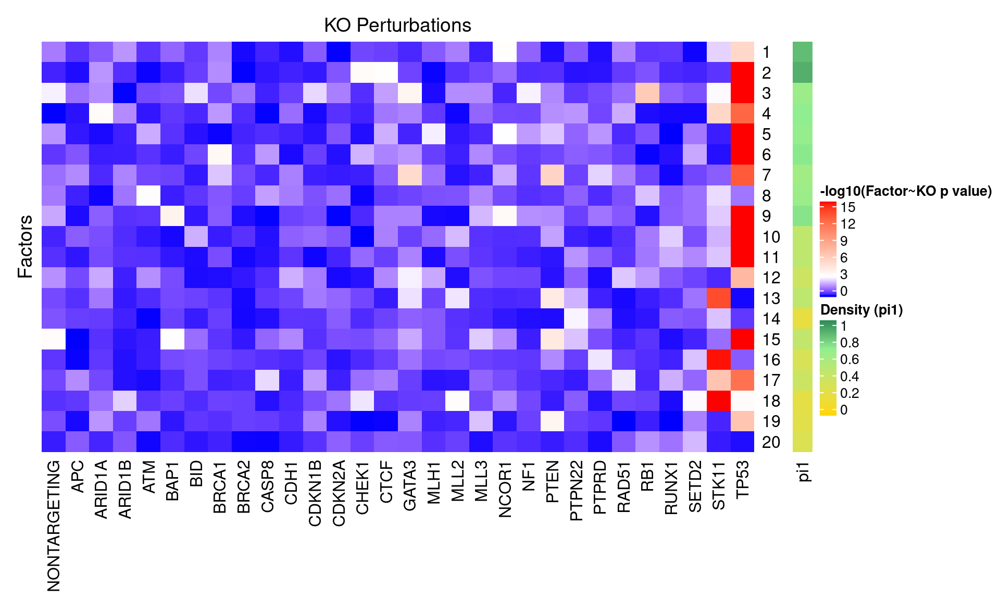
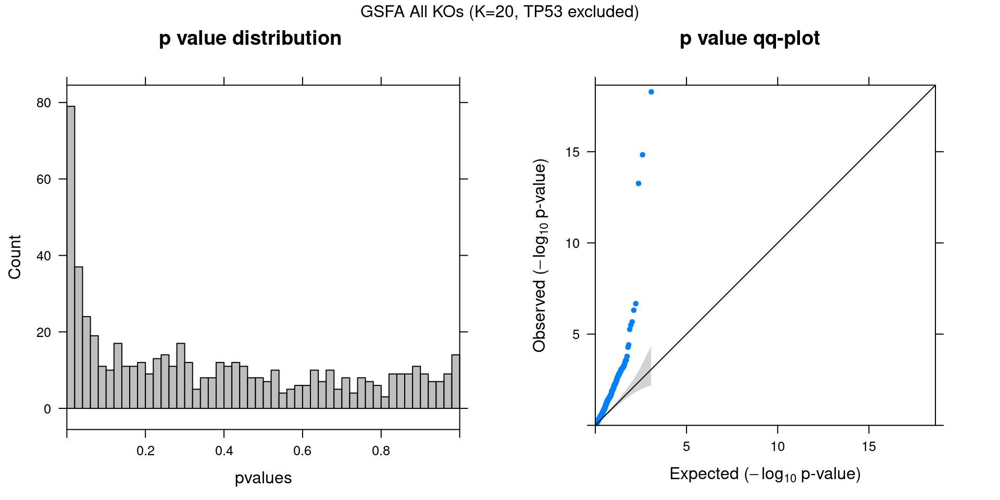
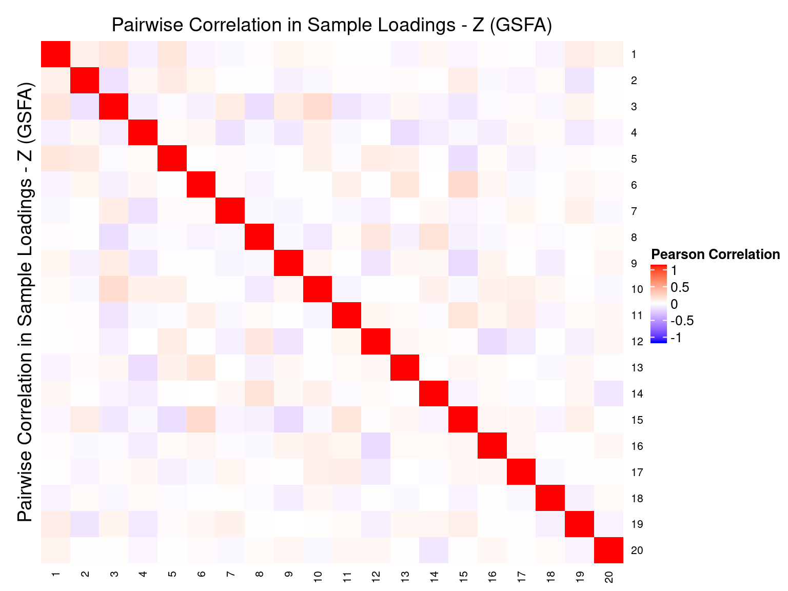
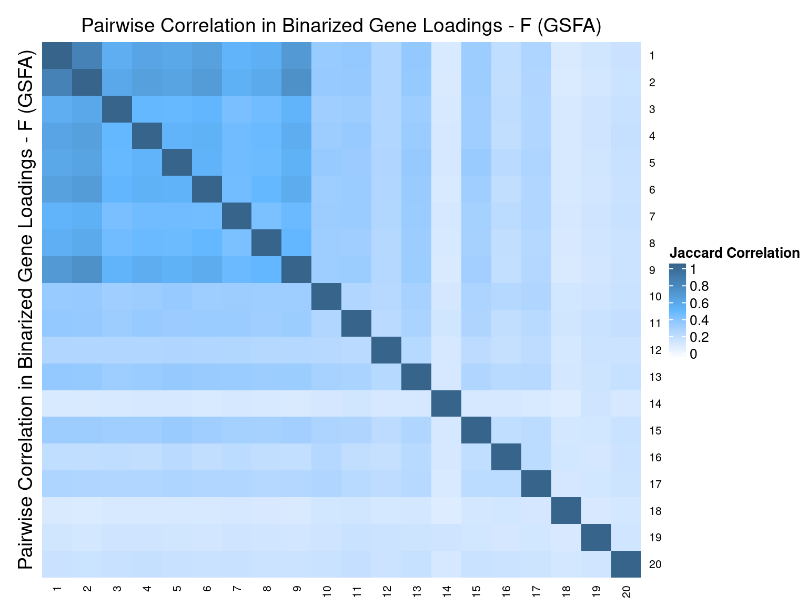
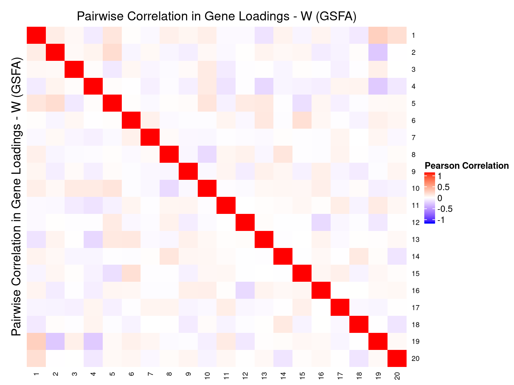

CROP-seq data are from this paper: On the design of CRISPR-based single cell molecular screens, GEO accession: GSE108699.
Perturbations:
Knock-outs of 29 tumor-suppressor genes (TP53, …), 1 non-targeting control.
Cells:
MCF10A cells (normal human breast epithelial cells) with exposure to a DNA damaging agent, doxorubicin.
Only cells with gRNA readout were kept, resulted in 5584 cells.
Genes:
Only genes detected in > 10% of cells were kept, resulted in 8046 genes.
Normalization:
Seurat “LogNormalize”: log(count per 10K + 1).
Library size was regressed out, and the residuals were used as input.
Guided sparse factor analysis, with the \(G\) matrix being 30 types of KO conditions across cells.


For a pair of \(Z\) estimations from 2 inference methods, \(Z_1, Z_2\), we quantify the pairwise estimation difference as \(||Z_1Z_1^T - Z_2Z_2^T||_1/N^2\), where \(N\) is the number of rows (samples) in \(Z\).
Guided SVD vs Rand_01: 0.627
Guided SVD vs Rand_02: 0.622
Rand_01 vs Rand_02: 0.739
Guided SVD vs Unguided: 0.449



Genes w/ non-zero loadings vs all genes selected for factor analysis.
GO category: Biological Process.
| ID | Description | GeneRatio | BgRatio | pvalue | qvalue |
|---|---|---|---|---|---|
| GO:0006613 | cotranslational protein targeting to membrane | 95/6104 | 95/7132 | 3.40e-07 | 0.000913 |
| GO:0006612 | protein targeting to membrane | 139/6104 | 142/7132 | 5.37e-07 | 0.000913 |
| GO:0006614 | SRP-dependent cotranslational protein targeting to membrane | 91/6104 | 91/7132 | 6.40e-07 | 0.000913 |
| GO:0006397 | mRNA processing | 369/6104 | 397/7132 | 2.43e-06 | 0.002486 |
| GO:0008380 | RNA splicing | 333/6104 | 357/7132 | 2.90e-06 | 0.002486 |
| GO:0000375 | RNA splicing, via transesterification reactions | 266/6104 | 283/7132 | 4.85e-06 | 0.003107 |
| GO:0022613 | ribonucleoprotein complex biogenesis | 352/6104 | 379/7132 | 5.23e-06 | 0.003107 |
| GO:0000377 | RNA splicing, via transesterification reactions with bulged adenosine as nucleophile | 263/6104 | 280/7132 | 6.53e-06 | 0.003107 |
| GO:0000398 | mRNA splicing, via spliceosome | 263/6104 | 280/7132 | 6.53e-06 | 0.003107 |
| GO:0006413 | translational initiation | 161/6104 | 168/7132 | 1.24e-05 | 0.005326 |
| GO:0045047 | protein targeting to ER | 99/6104 | 101/7132 | 2.19e-05 | 0.008531 |
| GO:0070972 | protein localization to endoplasmic reticulum | 118/6104 | 122/7132 | 4.43e-05 | 0.015810 |
| GO:0006605 | protein targeting | 288/6104 | 311/7132 | 7.61e-05 | 0.025040 |
| GO:0072599 | establishment of protein localization to endoplasmic reticulum | 101/6104 | 104/7132 | 8.94e-05 | 0.027316 |
| GO:0090150 | establishment of protein localization to membrane | 207/6104 | 221/7132 | 1.14e-04 | 0.032412 |
| GO:0000956 | nuclear-transcribed mRNA catabolic process | 166/6104 | 176/7132 | 1.85e-04 | 0.049501 |
| GO:0042254 | ribosome biogenesis | 227/6104 | 244/7132 | 1.97e-04 | 0.049619 |
| ID | Description | GeneRatio | BgRatio | pvalue | qvalue |
|---|---|---|---|---|---|
| GO:0006613 | cotranslational protein targeting to membrane | 83/4337 | 95/7132 | 8.91e-09 | 3.64e-05 |
| GO:0072599 | establishment of protein localization to endoplasmic reticulum | 89/4337 | 104/7132 | 2.46e-08 | 5.03e-05 |
| GO:0006614 | SRP-dependent cotranslational protein targeting to membrane | 79/4337 | 91/7132 | 3.90e-08 | 5.32e-05 |
| GO:0045047 | protein targeting to ER | 86/4337 | 101/7132 | 7.02e-08 | 7.18e-05 |
| GO:0000184 | nuclear-transcribed mRNA catabolic process, nonsense-mediated decay | 90/4337 | 108/7132 | 2.86e-07 | 2.34e-04 |
| GO:0006413 | translational initiation | 131/4337 | 168/7132 | 1.30e-06 | 8.87e-04 |
| GO:0070972 | protein localization to endoplasmic reticulum | 97/4337 | 122/7132 | 6.89e-06 | 4.03e-03 |
| GO:0006612 | protein targeting to membrane | 109/4337 | 142/7132 | 3.58e-05 | 1.69e-02 |
| GO:0006333 | chromatin assembly or disassembly | 74/4337 | 92/7132 | 4.08e-05 | 1.69e-02 |
| GO:0006338 | chromatin remodeling | 81/4337 | 102/7132 | 4.30e-05 | 1.69e-02 |
| GO:0002283 | neutrophil activation involved in immune response | 202/4337 | 281/7132 | 4.95e-05 | 1.69e-02 |
| GO:0043312 | neutrophil degranulation | 202/4337 | 281/7132 | 4.95e-05 | 1.69e-02 |
| GO:0002446 | neutrophil mediated immunity | 205/4337 | 286/7132 | 5.83e-05 | 1.83e-02 |
| GO:0042119 | neutrophil activation | 203/4337 | 284/7132 | 8.32e-05 | 2.43e-02 |
| GO:0010638 | positive regulation of organelle organization | 254/4337 | 362/7132 | 9.03e-05 | 2.46e-02 |
| GO:0002443 | leukocyte mediated immunity | 260/4337 | 372/7132 | 1.14e-04 | 2.75e-02 |
| GO:0036230 | granulocyte activation | 205/4337 | 288/7132 | 1.15e-04 | 2.75e-02 |
| GO:0002181 | cytoplasmic translation | 63/4337 | 78/7132 | 1.21e-04 | 2.75e-02 |
| GO:0043299 | leukocyte degranulation | 209/4337 | 295/7132 | 1.55e-04 | 3.25e-02 |
| GO:0034080 | CENP-A containing nucleosome assembly | 22/4337 | 23/7132 | 1.67e-04 | 3.25e-02 |
| GO:0061641 | CENP-A containing chromatin organization | 22/4337 | 23/7132 | 1.67e-04 | 3.25e-02 |
| GO:0045055 | regulated exocytosis | 270/4337 | 389/7132 | 1.80e-04 | 3.34e-02 |
| GO:0034728 | nucleosome organization | 66/4337 | 83/7132 | 2.04e-04 | 3.63e-02 |
| GO:0002275 | myeloid cell activation involved in immune response | 209/4337 | 296/7132 | 2.13e-04 | 3.63e-02 |
| GO:0031055 | chromatin remodeling at centromere | 25/4337 | 27/7132 | 2.36e-04 | 3.69e-02 |
| GO:0002263 | cell activation involved in immune response | 244/4337 | 350/7132 | 2.39e-04 | 3.69e-02 |
| GO:0002366 | leukocyte activation involved in immune response | 242/4337 | 347/7132 | 2.44e-04 | 3.69e-02 |
| GO:0002444 | myeloid leukocyte mediated immunity | 213/4337 | 303/7132 | 2.80e-04 | 4.09e-02 |
| ID | Description | GeneRatio | BgRatio | pvalue | qvalue |
|---|---|---|---|---|---|
| GO:0070972 | protein localization to endoplasmic reticulum | 109/4759 | 122/7132 | 4.85e-09 | 1.99e-05 |
| GO:0006614 | SRP-dependent cotranslational protein targeting to membrane | 83/4759 | 91/7132 | 3.50e-08 | 7.19e-05 |
| GO:0016126 | sterol biosynthetic process | 48/4759 | 49/7132 | 5.82e-08 | 7.97e-05 |
| GO:1902653 | secondary alcohol biosynthetic process | 46/4759 | 47/7132 | 1.26e-07 | 1.24e-04 |
| GO:0045047 | protein targeting to ER | 90/4759 | 101/7132 | 1.50e-07 | 1.24e-04 |
| GO:0006695 | cholesterol biosynthetic process | 45/4759 | 46/7132 | 1.86e-07 | 1.27e-04 |
| GO:0006613 | cotranslational protein targeting to membrane | 85/4759 | 95/7132 | 2.18e-07 | 1.27e-04 |
| GO:0072599 | establishment of protein localization to endoplasmic reticulum | 92/4759 | 104/7132 | 2.47e-07 | 1.27e-04 |
| GO:0000184 | nuclear-transcribed mRNA catabolic process, nonsense-mediated decay | 94/4759 | 108/7132 | 1.04e-06 | 4.77e-04 |
| GO:0006694 | steroid biosynthetic process | 82/4759 | 93/7132 | 1.57e-06 | 6.44e-04 |
| GO:0006413 | translational initiation | 139/4759 | 168/7132 | 2.06e-06 | 7.71e-04 |
| GO:0046890 | regulation of lipid biosynthetic process | 75/4759 | 85/7132 | 4.17e-06 | 1.43e-03 |
| GO:0072657 | protein localization to membrane | 273/4759 | 354/7132 | 7.79e-06 | 2.47e-03 |
| GO:0090150 | establishment of protein localization to membrane | 176/4759 | 221/7132 | 1.21e-05 | 3.54e-03 |
| GO:0008202 | steroid metabolic process | 109/4759 | 131/7132 | 1.59e-05 | 4.35e-03 |
| GO:0050810 | regulation of steroid biosynthetic process | 42/4759 | 45/7132 | 2.41e-05 | 6.19e-03 |
| GO:0002181 | cytoplasmic translation | 68/4759 | 78/7132 | 3.02e-05 | 6.90e-03 |
| GO:0016125 | sterol metabolic process | 68/4759 | 78/7132 | 3.02e-05 | 6.90e-03 |
| GO:0006612 | protein targeting to membrane | 116/4759 | 142/7132 | 4.66e-05 | 1.01e-02 |
| GO:0045540 | regulation of cholesterol biosynthetic process | 30/4759 | 31/7132 | 5.73e-05 | 1.09e-02 |
| GO:0106118 | regulation of sterol biosynthetic process | 30/4759 | 31/7132 | 5.73e-05 | 1.09e-02 |
| GO:0036230 | granulocyte activation | 222/4759 | 288/7132 | 5.88e-05 | 1.09e-02 |
| GO:0045055 | regulated exocytosis | 294/4759 | 389/7132 | 6.09e-05 | 1.09e-02 |
| GO:0002444 | myeloid leukocyte mediated immunity | 232/4759 | 303/7132 | 8.83e-05 | 1.51e-02 |
| GO:0042119 | neutrophil activation | 218/4759 | 284/7132 | 1.09e-04 | 1.80e-02 |
| GO:1902652 | secondary alcohol metabolic process | 63/4759 | 73/7132 | 1.18e-04 | 1.86e-02 |
| GO:0031424 | keratinization | 37/4759 | 40/7132 | 1.31e-04 | 1.99e-02 |
| GO:0002446 | neutrophil mediated immunity | 219/4759 | 286/7132 | 1.38e-04 | 2.02e-02 |
| GO:0046034 | ATP metabolic process | 141/4759 | 178/7132 | 1.43e-04 | 2.03e-02 |
| GO:0002275 | myeloid cell activation involved in immune response | 226/4759 | 296/7132 | 1.49e-04 | 2.04e-02 |
| GO:0002283 | neutrophil activation involved in immune response | 215/4759 | 281/7132 | 1.72e-04 | 2.15e-02 |
| GO:0043312 | neutrophil degranulation | 215/4759 | 281/7132 | 1.72e-04 | 2.15e-02 |
| GO:0043299 | leukocyte degranulation | 225/4759 | 295/7132 | 1.72e-04 | 2.15e-02 |
| GO:0002274 | myeloid leukocyte activation | 247/4759 | 326/7132 | 1.79e-04 | 2.17e-02 |
| GO:0008203 | cholesterol metabolic process | 61/4759 | 71/7132 | 2.00e-04 | 2.36e-02 |
| GO:0006887 | exocytosis | 332/4759 | 447/7132 | 2.24e-04 | 2.56e-02 |
| GO:0002443 | leukocyte mediated immunity | 279/4759 | 372/7132 | 2.38e-04 | 2.64e-02 |
| GO:0017144 | drug metabolic process | 297/4759 | 398/7132 | 2.77e-04 | 3.00e-02 |
| GO:0010035 | response to inorganic substance | 199/4759 | 260/7132 | 2.89e-04 | 3.05e-02 |
| GO:0009126 | purine nucleoside monophosphate metabolic process | 160/4759 | 206/7132 | 3.28e-04 | 3.29e-02 |
| GO:0009167 | purine ribonucleoside monophosphate metabolic process | 160/4759 | 206/7132 | 3.28e-04 | 3.29e-02 |
| GO:0072594 | establishment of protein localization to organelle | 297/4759 | 399/7132 | 3.72e-04 | 3.65e-02 |
| GO:0070268 | cornification | 29/4759 | 31/7132 | 4.62e-04 | 4.42e-02 |
| ID | Description | GeneRatio | BgRatio | pvalue | qvalue |
|---|---|---|---|---|---|
| GO:0043062 | extracellular structure organization | 121/4599 | 140/7132 | 3.55e-09 | 1.26e-05 |
| GO:0022610 | biological adhesion | 380/4599 | 500/7132 | 6.46e-09 | 1.26e-05 |
| GO:0007155 | cell adhesion | 377/4599 | 497/7132 | 1.11e-08 | 1.29e-05 |
| GO:0030198 | extracellular matrix organization | 107/4599 | 123/7132 | 1.32e-08 | 1.29e-05 |
| GO:0006613 | cotranslational protein targeting to membrane | 85/4599 | 95/7132 | 2.17e-08 | 1.69e-05 |
| GO:0002443 | leukocyte mediated immunity | 287/4599 | 372/7132 | 4.27e-08 | 2.78e-05 |
| GO:0002274 | myeloid leukocyte activation | 254/4599 | 326/7132 | 5.56e-08 | 3.10e-05 |
| GO:0045055 | regulated exocytosis | 298/4599 | 389/7132 | 8.11e-08 | 3.58e-05 |
| GO:0006614 | SRP-dependent cotranslational protein targeting to membrane | 81/4599 | 91/7132 | 8.25e-08 | 3.58e-05 |
| GO:0002444 | myeloid leukocyte mediated immunity | 235/4599 | 303/7132 | 3.52e-07 | 1.34e-04 |
| GO:0002366 | leukocyte activation involved in immune response | 266/4599 | 347/7132 | 3.77e-07 | 1.34e-04 |
| GO:0002275 | myeloid cell activation involved in immune response | 229/4599 | 296/7132 | 7.11e-07 | 2.31e-04 |
| GO:0045047 | protein targeting to ER | 87/4599 | 101/7132 | 8.25e-07 | 2.48e-04 |
| GO:0036230 | granulocyte activation | 223/4599 | 288/7132 | 8.88e-07 | 2.48e-04 |
| GO:0072599 | establishment of protein localization to endoplasmic reticulum | 89/4599 | 104/7132 | 1.15e-06 | 3.00e-04 |
| GO:0002263 | cell activation involved in immune response | 266/4599 | 350/7132 | 1.38e-06 | 3.36e-04 |
| GO:0043299 | leukocyte degranulation | 227/4599 | 295/7132 | 1.67e-06 | 3.83e-04 |
| GO:0042119 | neutrophil activation | 219/4599 | 284/7132 | 1.93e-06 | 4.19e-04 |
| GO:0002446 | neutrophil mediated immunity | 220/4599 | 286/7132 | 2.53e-06 | 5.20e-04 |
| GO:0006887 | exocytosis | 332/4599 | 447/7132 | 3.15e-06 | 6.08e-04 |
| GO:0002283 | neutrophil activation involved in immune response | 216/4599 | 281/7132 | 3.42e-06 | 6.08e-04 |
| GO:0043312 | neutrophil degranulation | 216/4599 | 281/7132 | 3.42e-06 | 6.08e-04 |
| GO:0070972 | protein localization to endoplasmic reticulum | 101/4599 | 122/7132 | 5.66e-06 | 9.61e-04 |
| GO:0052547 | regulation of peptidase activity | 160/4599 | 204/7132 | 8.51e-06 | 1.38e-03 |
| GO:0051270 | regulation of cellular component movement | 284/4599 | 381/7132 | 1.03e-05 | 1.61e-03 |
| GO:0052548 | regulation of endopeptidase activity | 151/4599 | 192/7132 | 1.16e-05 | 1.74e-03 |
| GO:0006612 | protein targeting to membrane | 114/4599 | 142/7132 | 2.54e-05 | 3.67e-03 |
| GO:0072657 | protein localization to membrane | 263/4599 | 354/7132 | 3.34e-05 | 4.66e-03 |
| GO:0090150 | establishment of protein localization to membrane | 170/4599 | 221/7132 | 3.54e-05 | 4.77e-03 |
| GO:2000145 | regulation of cell motility | 263/4599 | 355/7132 | 4.72e-05 | 6.14e-03 |
| GO:0098609 | cell-cell adhesion | 204/4599 | 271/7132 | 6.79e-05 | 8.55e-03 |
| GO:0030855 | epithelial cell differentiation | 201/4599 | 267/7132 | 7.64e-05 | 9.30e-03 |
| GO:0030334 | regulation of cell migration | 244/4599 | 329/7132 | 7.86e-05 | 9.30e-03 |
| GO:0070126 | mitochondrial translational termination | 69/4599 | 83/7132 | 1.36e-04 | 1.56e-02 |
| GO:0040012 | regulation of locomotion | 284/4599 | 389/7132 | 1.45e-04 | 1.61e-02 |
| GO:0051271 | negative regulation of cellular component movement | 100/4599 | 126/7132 | 1.85e-04 | 2.00e-02 |
| GO:0050678 | regulation of epithelial cell proliferation | 105/4599 | 133/7132 | 1.89e-04 | 2.00e-02 |
| GO:0030336 | negative regulation of cell migration | 89/4599 | 111/7132 | 2.13e-04 | 2.19e-02 |
| GO:2000146 | negative regulation of cell motility | 94/4599 | 118/7132 | 2.23e-04 | 2.23e-02 |
| GO:0045861 | negative regulation of proteolysis | 126/4599 | 163/7132 | 2.48e-04 | 2.42e-02 |
| GO:0050900 | leukocyte migration | 101/4599 | 128/7132 | 2.59e-04 | 2.47e-02 |
| GO:0030162 | regulation of proteolysis | 281/4599 | 387/7132 | 2.92e-04 | 2.71e-02 |
| GO:0006163 | purine nucleotide metabolic process | 235/4599 | 320/7132 | 3.00e-04 | 2.73e-02 |
| GO:0009913 | epidermal cell differentiation | 82/4599 | 102/7132 | 3.19e-04 | 2.83e-02 |
| GO:0022612 | gland morphogenesis | 45/4599 | 52/7132 | 3.30e-04 | 2.85e-02 |
| GO:0090100 | positive regulation of transmembrane receptor protein serine/threonine kinase signaling pathway | 35/4599 | 39/7132 | 3.36e-04 | 2.85e-02 |
| GO:0046034 | ATP metabolic process | 136/4599 | 178/7132 | 3.62e-04 | 2.90e-02 |
| GO:0030216 | keratinocyte differentiation | 68/4599 | 83/7132 | 3.64e-04 | 2.90e-02 |
| GO:0070125 | mitochondrial translational elongation | 68/4599 | 83/7132 | 3.64e-04 | 2.90e-02 |
| GO:0010466 | negative regulation of peptidase activity | 81/4599 | 101/7132 | 4.02e-04 | 3.14e-02 |
| GO:0009636 | response to toxic substance | 177/4599 | 237/7132 | 4.13e-04 | 3.16e-02 |
| GO:0000184 | nuclear-transcribed mRNA catabolic process, nonsense-mediated decay | 86/4599 | 108/7132 | 4.21e-04 | 3.16e-02 |
| GO:0050673 | epithelial cell proliferation | 123/4599 | 160/7132 | 4.41e-04 | 3.25e-02 |
| GO:0009117 | nucleotide metabolic process | 294/4599 | 408/7132 | 4.99e-04 | 3.43e-02 |
| GO:0010951 | negative regulation of endopeptidase activity | 80/4599 | 100/7132 | 5.06e-04 | 3.43e-02 |
| GO:0043086 | negative regulation of catalytic activity | 266/4599 | 367/7132 | 5.09e-04 | 3.43e-02 |
| GO:0008544 | epidermis development | 115/4599 | 149/7132 | 5.11e-04 | 3.43e-02 |
| GO:0009126 | purine nucleoside monophosphate metabolic process | 155/4599 | 206/7132 | 5.19e-04 | 3.43e-02 |
| GO:0009167 | purine ribonucleoside monophosphate metabolic process | 155/4599 | 206/7132 | 5.19e-04 | 3.43e-02 |
| GO:0042330 | taxis | 143/4599 | 189/7132 | 5.57e-04 | 3.62e-02 |
| GO:0097755 | positive regulation of blood vessel diameter | 17/4599 | 17/7132 | 5.70e-04 | 3.62e-02 |
| GO:0006753 | nucleoside phosphate metabolic process | 295/4599 | 410/7132 | 5.75e-04 | 3.62e-02 |
| GO:0019725 | cellular homeostasis | 260/4599 | 359/7132 | 6.36e-04 | 3.91e-02 |
| GO:0060429 | epithelium development | 330/4599 | 462/7132 | 6.41e-04 | 3.91e-02 |
| GO:0006935 | chemotaxis | 142/4599 | 188/7132 | 6.62e-04 | 3.97e-02 |
| GO:0048646 | anatomical structure formation involved in morphogenesis | 285/4599 | 396/7132 | 6.92e-04 | 4.09e-02 |
| GO:0009150 | purine ribonucleotide metabolic process | 222/4599 | 304/7132 | 7.44e-04 | 4.34e-02 |
| GO:0050680 | negative regulation of epithelial cell proliferation | 48/4599 | 57/7132 | 8.11e-04 | 4.66e-02 |
| GO:0050764 | regulation of phagocytosis | 25/4599 | 27/7132 | 8.62e-04 | 4.71e-02 |
| GO:0040013 | negative regulation of locomotion | 105/4599 | 136/7132 | 8.67e-04 | 4.71e-02 |
| GO:0001974 | blood vessel remodeling | 16/4599 | 16/7132 | 8.86e-04 | 4.71e-02 |
| GO:0030511 | positive regulation of transforming growth factor beta receptor signaling pathway | 16/4599 | 16/7132 | 8.86e-04 | 4.71e-02 |
| GO:1903846 | positive regulation of cellular response to transforming growth factor beta stimulus | 16/4599 | 16/7132 | 8.86e-04 | 4.71e-02 |
| GO:0009144 | purine nucleoside triphosphate metabolic process | 154/4599 | 206/7132 | 8.94e-04 | 4.71e-02 |
| GO:0019058 | viral life cycle | 140/4599 | 186/7132 | 9.31e-04 | 4.84e-02 |
| ID | Description | GeneRatio | BgRatio | pvalue | qvalue |
|---|---|---|---|---|---|
| GO:0042254 | ribosome biogenesis | 220/4890 | 244/7132 | 3.87e-16 | 1.64e-12 |
| GO:0006364 | rRNA processing | 165/4890 | 179/7132 | 1.33e-14 | 2.80e-11 |
| GO:0034470 | ncRNA processing | 264/4890 | 306/7132 | 2.19e-13 | 3.09e-10 |
| GO:0022613 | ribonucleoprotein complex biogenesis | 317/4890 | 379/7132 | 5.18e-12 | 4.43e-09 |
| GO:0034660 | ncRNA metabolic process | 361/4890 | 437/7132 | 5.23e-12 | 4.43e-09 |
| GO:0016072 | rRNA metabolic process | 183/4890 | 208/7132 | 2.90e-11 | 2.04e-08 |
| GO:0006412 | translation | 389/4890 | 496/7132 | 2.79e-07 | 1.69e-04 |
| GO:0042273 | ribosomal large subunit biogenesis | 62/4890 | 66/7132 | 5.11e-07 | 2.70e-04 |
| GO:0006413 | translational initiation | 142/4890 | 168/7132 | 1.36e-06 | 6.37e-04 |
| GO:0006614 | SRP-dependent cotranslational protein targeting to membrane | 81/4890 | 91/7132 | 3.85e-06 | 1.63e-03 |
| GO:0006399 | tRNA metabolic process | 129/4890 | 154/7132 | 1.10e-05 | 3.91e-03 |
| GO:0045047 | protein targeting to ER | 88/4890 | 101/7132 | 1.16e-05 | 3.91e-03 |
| GO:0042255 | ribosome assembly | 52/4890 | 56/7132 | 1.20e-05 | 3.91e-03 |
| GO:0006613 | cotranslational protein targeting to membrane | 83/4890 | 95/7132 | 1.63e-05 | 4.81e-03 |
| GO:0072599 | establishment of protein localization to endoplasmic reticulum | 90/4890 | 104/7132 | 1.71e-05 | 4.81e-03 |
| GO:0042274 | ribosomal small subunit biogenesis | 55/4890 | 60/7132 | 1.87e-05 | 4.94e-03 |
| GO:0000184 | nuclear-transcribed mRNA catabolic process, nonsense-mediated decay | 92/4890 | 108/7132 | 5.42e-05 | 1.35e-02 |
| GO:0044270 | cellular nitrogen compound catabolic process | 297/4890 | 385/7132 | 8.33e-05 | 1.96e-02 |
| GO:0000956 | nuclear-transcribed mRNA catabolic process | 143/4890 | 176/7132 | 9.16e-05 | 2.04e-02 |
| GO:0006401 | RNA catabolic process | 211/4890 | 268/7132 | 1.07e-04 | 2.17e-02 |
| GO:0046700 | heterocycle catabolic process | 295/4890 | 383/7132 | 1.08e-04 | 2.17e-02 |
| GO:0008033 | tRNA processing | 85/4890 | 100/7132 | 1.23e-04 | 2.37e-02 |
| GO:0019439 | aromatic compound catabolic process | 301/4890 | 392/7132 | 1.38e-04 | 2.54e-02 |
| GO:0070972 | protein localization to endoplasmic reticulum | 101/4890 | 122/7132 | 2.54e-04 | 4.47e-02 |
| GO:0034655 | nucleobase-containing compound catabolic process | 287/4890 | 375/7132 | 2.96e-04 | 4.87e-02 |
| GO:0006402 | mRNA catabolic process | 193/4890 | 246/7132 | 3.00e-04 | 4.87e-02 |
| ID | Description | GeneRatio | BgRatio | pvalue | qvalue |
|---|---|---|---|---|---|
| GO:0070972 | protein localization to endoplasmic reticulum | 96/3972 | 122/7132 | 7.45e-08 | 0.000219 |
| GO:0045047 | protein targeting to ER | 81/3972 | 101/7132 | 1.75e-07 | 0.000219 |
| GO:0072599 | establishment of protein localization to endoplasmic reticulum | 83/3972 | 104/7132 | 1.84e-07 | 0.000219 |
| GO:0022900 | electron transport chain | 107/3972 | 140/7132 | 2.16e-07 | 0.000219 |
| GO:0036230 | granulocyte activation | 201/3972 | 288/7132 | 3.95e-07 | 0.000320 |
| GO:0042119 | neutrophil activation | 198/3972 | 284/7132 | 5.45e-07 | 0.000368 |
| GO:0006614 | SRP-dependent cotranslational protein targeting to membrane | 73/3972 | 91/7132 | 7.00e-07 | 0.000405 |
| GO:0002283 | neutrophil activation involved in immune response | 195/3972 | 281/7132 | 1.12e-06 | 0.000486 |
| GO:0043312 | neutrophil degranulation | 195/3972 | 281/7132 | 1.12e-06 | 0.000486 |
| GO:0002446 | neutrophil mediated immunity | 198/3972 | 286/7132 | 1.20e-06 | 0.000486 |
| GO:0006613 | cotranslational protein targeting to membrane | 75/3972 | 95/7132 | 1.60e-06 | 0.000591 |
| GO:0002274 | myeloid leukocyte activation | 222/3972 | 326/7132 | 1.90e-06 | 0.000643 |
| GO:0002275 | myeloid cell activation involved in immune response | 203/3972 | 296/7132 | 2.49e-06 | 0.000777 |
| GO:0002444 | myeloid leukocyte mediated immunity | 207/3972 | 303/7132 | 3.02e-06 | 0.000857 |
| GO:0000184 | nuclear-transcribed mRNA catabolic process, nonsense-mediated decay | 83/3972 | 108/7132 | 3.38e-06 | 0.000857 |
| GO:0017144 | drug metabolic process | 265/3972 | 398/7132 | 3.41e-06 | 0.000857 |
| GO:0006413 | translational initiation | 122/3972 | 168/7132 | 3.60e-06 | 0.000857 |
| GO:0006119 | oxidative phosphorylation | 84/3972 | 110/7132 | 4.66e-06 | 0.001049 |
| GO:0043299 | leukocyte degranulation | 201/3972 | 295/7132 | 5.56e-06 | 0.001187 |
| GO:0002443 | leukocyte mediated immunity | 246/3972 | 372/7132 | 1.65e-05 | 0.003337 |
| GO:0002181 | cytoplasmic translation | 61/3972 | 78/7132 | 2.62e-05 | 0.005057 |
| GO:0022610 | biological adhesion | 320/3972 | 500/7132 | 5.66e-05 | 0.010429 |
| GO:0007155 | cell adhesion | 318/3972 | 497/7132 | 6.15e-05 | 0.010841 |
| GO:0006091 | generation of precursor metabolites and energy | 199/3972 | 300/7132 | 8.10e-05 | 0.013683 |
| GO:0022904 | respiratory electron transport chain | 69/3972 | 92/7132 | 9.10e-05 | 0.013765 |
| GO:0006959 | humoral immune response | 36/3972 | 43/7132 | 9.47e-05 | 0.013765 |
| GO:0009126 | purine nucleoside monophosphate metabolic process | 141/3972 | 206/7132 | 9.97e-05 | 0.013765 |
| GO:0009167 | purine ribonucleoside monophosphate metabolic process | 141/3972 | 206/7132 | 9.97e-05 | 0.013765 |
| GO:0019221 | cytokine-mediated signaling pathway | 187/3972 | 281/7132 | 1.01e-04 | 0.013765 |
| GO:0042773 | ATP synthesis coupled electron transport | 61/3972 | 80/7132 | 1.02e-04 | 0.013765 |
| GO:0072594 | establishment of protein localization to organelle | 258/3972 | 399/7132 | 1.12e-04 | 0.014599 |
| GO:0042775 | mitochondrial ATP synthesis coupled electron transport | 60/3972 | 79/7132 | 1.41e-04 | 0.017261 |
| GO:0007229 | integrin-mediated signaling pathway | 35/3972 | 42/7132 | 1.44e-04 | 0.017261 |
| GO:0046034 | ATP metabolic process | 123/3972 | 178/7132 | 1.45e-04 | 0.017261 |
| GO:0045055 | regulated exocytosis | 251/3972 | 389/7132 | 1.70e-04 | 0.019649 |
| GO:0001763 | morphogenesis of a branching structure | 55/3972 | 72/7132 | 2.05e-04 | 0.023060 |
| GO:0030216 | keratinocyte differentiation | 62/3972 | 83/7132 | 2.50e-04 | 0.027368 |
| GO:0019752 | carboxylic acid metabolic process | 306/3972 | 484/7132 | 3.02e-04 | 0.032258 |
| GO:0019730 | antimicrobial humoral response | 20/3972 | 22/7132 | 4.14e-04 | 0.043036 |
| GO:0071345 | cellular response to cytokine stimulus | 274/3972 | 432/7132 | 4.65e-04 | 0.047127 |
| GO:0008544 | epidermis development | 103/3972 | 149/7132 | 4.81e-04 | 0.047574 |
| GO:0002263 | cell activation involved in immune response | 225/3972 | 350/7132 | 5.02e-04 | 0.048463 |
| ID | Description | GeneRatio | BgRatio | pvalue | qvalue |
|---|---|---|---|---|---|
| GO:0007155 | cell adhesion | 272/2666 | 497/7132 | 2.91e-16 | 6.86e-13 |
| GO:0022610 | biological adhesion | 273/2666 | 500/7132 | 3.82e-16 | 6.86e-13 |
| GO:0006614 | SRP-dependent cotranslational protein targeting to membrane | 68/2666 | 91/7132 | 3.41e-13 | 4.08e-10 |
| GO:0006613 | cotranslational protein targeting to membrane | 70/2666 | 95/7132 | 4.94e-13 | 4.43e-10 |
| GO:0045047 | protein targeting to ER | 73/2666 | 101/7132 | 7.91e-13 | 5.67e-10 |
| GO:0072599 | establishment of protein localization to endoplasmic reticulum | 74/2666 | 104/7132 | 2.00e-12 | 1.20e-09 |
| GO:0070972 | protein localization to endoplasmic reticulum | 82/2666 | 122/7132 | 1.59e-11 | 8.16e-09 |
| GO:0043062 | extracellular structure organization | 89/2666 | 140/7132 | 2.07e-10 | 9.30e-08 |
| GO:0098609 | cell-cell adhesion | 151/2666 | 271/7132 | 3.21e-10 | 1.28e-07 |
| GO:0030855 | epithelial cell differentiation | 148/2666 | 267/7132 | 7.96e-10 | 2.86e-07 |
| GO:0030198 | extracellular matrix organization | 79/2666 | 123/7132 | 1.07e-09 | 3.48e-07 |
| GO:0090150 | establishment of protein localization to membrane | 126/2666 | 221/7132 | 1.42e-09 | 4.25e-07 |
| GO:0060429 | epithelium development | 233/2666 | 462/7132 | 2.36e-09 | 6.51e-07 |
| GO:0008544 | epidermis development | 91/2666 | 149/7132 | 2.72e-09 | 6.67e-07 |
| GO:0035295 | tube development | 200/2666 | 387/7132 | 2.79e-09 | 6.67e-07 |
| GO:0072657 | protein localization to membrane | 185/2666 | 354/7132 | 3.70e-09 | 8.29e-07 |
| GO:0048646 | anatomical structure formation involved in morphogenesis | 203/2666 | 396/7132 | 5.03e-09 | 1.06e-06 |
| GO:0051270 | regulation of cellular component movement | 195/2666 | 381/7132 | 1.21e-08 | 2.41e-06 |
| GO:0000184 | nuclear-transcribed mRNA catabolic process, nonsense-mediated decay | 69/2666 | 108/7132 | 1.69e-08 | 3.19e-06 |
| GO:0040012 | regulation of locomotion | 197/2666 | 389/7132 | 2.95e-08 | 5.29e-06 |
| GO:2000145 | regulation of cell motility | 181/2666 | 355/7132 | 5.95e-08 | 1.02e-05 |
| GO:0009913 | epidermal cell differentiation | 64/2666 | 102/7132 | 1.51e-07 | 2.46e-05 |
| GO:0042330 | taxis | 105/2666 | 189/7132 | 2.07e-07 | 3.24e-05 |
| GO:0006612 | protein targeting to membrane | 83/2666 | 142/7132 | 2.18e-07 | 3.26e-05 |
| GO:0031424 | keratinization | 31/2666 | 40/7132 | 2.54e-07 | 3.50e-05 |
| GO:0030216 | keratinocyte differentiation | 54/2666 | 83/7132 | 2.54e-07 | 3.50e-05 |
| GO:0030334 | regulation of cell migration | 167/2666 | 329/7132 | 2.88e-07 | 3.83e-05 |
| GO:0006935 | chemotaxis | 104/2666 | 188/7132 | 3.15e-07 | 4.04e-05 |
| GO:0035239 | tube morphogenesis | 158/2666 | 309/7132 | 3.37e-07 | 4.17e-05 |
| GO:0072359 | circulatory system development | 202/2666 | 411/7132 | 3.59e-07 | 4.19e-05 |
| GO:0001655 | urogenital system development | 70/2666 | 116/7132 | 3.62e-07 | 4.19e-05 |
| GO:0009611 | response to wounding | 138/2666 | 265/7132 | 4.99e-07 | 5.48e-05 |
| GO:0034330 | cell junction organization | 90/2666 | 159/7132 | 5.07e-07 | 5.48e-05 |
| GO:0030155 | regulation of cell adhesion | 145/2666 | 281/7132 | 5.19e-07 | 5.48e-05 |
| GO:0006413 | translational initiation | 94/2666 | 168/7132 | 5.83e-07 | 5.98e-05 |
| GO:0051241 | negative regulation of multicellular organismal process | 202/2666 | 416/7132 | 1.07e-06 | 1.07e-04 |
| GO:0031589 | cell-substrate adhesion | 88/2666 | 157/7132 | 1.21e-06 | 1.17e-04 |
| GO:0034329 | cell junction assembly | 78/2666 | 136/7132 | 1.44e-06 | 1.36e-04 |
| GO:0050954 | sensory perception of mechanical stimulus | 27/2666 | 35/7132 | 1.82e-06 | 1.68e-04 |
| GO:0043588 | skin development | 72/2666 | 124/7132 | 1.95e-06 | 1.75e-04 |
| GO:0052548 | regulation of endopeptidase activity | 103/2666 | 192/7132 | 2.49e-06 | 2.18e-04 |
| GO:0045785 | positive regulation of cell adhesion | 86/2666 | 155/7132 | 2.81e-06 | 2.40e-04 |
| GO:0001944 | vasculature development | 137/2666 | 270/7132 | 3.54e-06 | 2.95e-04 |
| GO:0072358 | cardiovascular system development | 138/2666 | 273/7132 | 4.23e-06 | 3.45e-04 |
| GO:0042060 | wound healing | 115/2666 | 221/7132 | 4.71e-06 | 3.75e-04 |
| GO:0001568 | blood vessel development | 129/2666 | 253/7132 | 4.96e-06 | 3.87e-04 |
| GO:0070268 | cornification | 24/2666 | 31/7132 | 6.28e-06 | 4.79e-04 |
| GO:0001525 | angiogenesis | 98/2666 | 184/7132 | 6.58e-06 | 4.92e-04 |
| GO:0048514 | blood vessel morphogenesis | 111/2666 | 215/7132 | 1.10e-05 | 8.05e-04 |
| GO:0052547 | regulation of peptidase activity | 106/2666 | 204/7132 | 1.20e-05 | 8.62e-04 |
| GO:0072001 | renal system development | 59/2666 | 101/7132 | 1.26e-05 | 8.86e-04 |
| GO:0007605 | sensory perception of sound | 24/2666 | 32/7132 | 1.62e-05 | 1.12e-03 |
| GO:0048729 | tissue morphogenesis | 121/2666 | 240/7132 | 1.93e-05 | 1.31e-03 |
| GO:0008285 | negative regulation of cell proliferation | 151/2666 | 310/7132 | 2.07e-05 | 1.38e-03 |
| GO:0007167 | enzyme linked receptor protein signaling pathway | 209/2666 | 449/7132 | 2.55e-05 | 1.67e-03 |
| GO:0061458 | reproductive system development | 91/2666 | 173/7132 | 2.66e-05 | 1.71e-03 |
| GO:0043066 | negative regulation of apoptotic process | 208/2666 | 447/7132 | 2.74e-05 | 1.73e-03 |
| GO:0043069 | negative regulation of programmed cell death | 212/2666 | 457/7132 | 2.92e-05 | 1.81e-03 |
| GO:0007186 | G protein-coupled receptor signaling pathway | 94/2666 | 181/7132 | 3.80e-05 | 2.31e-03 |
| GO:0048608 | reproductive structure development | 89/2666 | 170/7132 | 4.11e-05 | 2.46e-03 |
| GO:0010951 | negative regulation of endopeptidase activity | 57/2666 | 100/7132 | 4.72e-05 | 2.78e-03 |
| GO:0055123 | digestive system development | 27/2666 | 39/7132 | 5.22e-05 | 2.99e-03 |
| GO:0001822 | kidney development | 55/2666 | 96/7132 | 5.26e-05 | 2.99e-03 |
| GO:0009887 | animal organ morphogenesis | 157/2666 | 329/7132 | 5.63e-05 | 3.16e-03 |
| GO:0003006 | developmental process involved in reproduction | 121/2666 | 245/7132 | 6.38e-05 | 3.50e-03 |
| GO:0072594 | establishment of protein localization to organelle | 186/2666 | 399/7132 | 6.48e-05 | 3.50e-03 |
| GO:0007160 | cell-matrix adhesion | 58/2666 | 103/7132 | 6.54e-05 | 3.50e-03 |
| GO:0010466 | negative regulation of peptidase activity | 57/2666 | 101/7132 | 6.93e-05 | 3.66e-03 |
| GO:0040017 | positive regulation of locomotion | 110/2666 | 221/7132 | 9.09e-05 | 4.73e-03 |
| GO:0001667 | ameboidal-type cell migration | 86/2666 | 167/7132 | 1.19e-04 | 6.08e-03 |
| GO:0030029 | actin filament-based process | 158/2666 | 336/7132 | 1.36e-04 | 6.85e-03 |
| GO:0031581 | hemidesmosome assembly | 11/2666 | 12/7132 | 1.55e-04 | 7.74e-03 |
| GO:0019730 | antimicrobial humoral response | 17/2666 | 22/7132 | 1.60e-04 | 7.87e-03 |
| GO:0048598 | embryonic morphogenesis | 108/2666 | 219/7132 | 1.68e-04 | 8.14e-03 |
| GO:0046661 | male sex differentiation | 38/2666 | 63/7132 | 1.74e-04 | 8.27e-03 |
| GO:0000904 | cell morphogenesis involved in differentiation | 136/2666 | 285/7132 | 1.76e-04 | 8.27e-03 |
| GO:0010469 | regulation of signaling receptor activity | 64/2666 | 119/7132 | 1.77e-04 | 8.27e-03 |
| GO:0048565 | digestive tract development | 25/2666 | 37/7132 | 1.83e-04 | 8.34e-03 |
| GO:0050900 | leukocyte migration | 68/2666 | 128/7132 | 1.84e-04 | 8.34e-03 |
| GO:0002576 | platelet degranulation | 35/2666 | 57/7132 | 1.89e-04 | 8.36e-03 |
| GO:0072006 | nephron development | 26/2666 | 39/7132 | 1.90e-04 | 8.36e-03 |
| GO:0010810 | regulation of cell-substrate adhesion | 58/2666 | 106/7132 | 1.91e-04 | 8.36e-03 |
| GO:0098742 | cell-cell adhesion via plasma-membrane adhesion molecules | 33/2666 | 53/7132 | 1.97e-04 | 8.52e-03 |
| GO:0072593 | reactive oxygen species metabolic process | 66/2666 | 124/7132 | 2.11e-04 | 9.03e-03 |
| GO:0001657 | ureteric bud development | 19/2666 | 26/7132 | 2.30e-04 | 9.62e-03 |
| GO:0051051 | negative regulation of transport | 91/2666 | 181/7132 | 2.31e-04 | 9.62e-03 |
| GO:0032989 | cellular component morphogenesis | 203/2666 | 448/7132 | 2.34e-04 | 9.63e-03 |
| GO:0098657 | import into cell | 160/2666 | 344/7132 | 2.40e-04 | 9.75e-03 |
| GO:0006954 | inflammatory response | 100/2666 | 202/7132 | 2.42e-04 | 9.75e-03 |
| GO:0001823 | mesonephros development | 20/2666 | 28/7132 | 2.60e-04 | 1.02e-02 |
| GO:0033627 | cell adhesion mediated by integrin | 20/2666 | 28/7132 | 2.60e-04 | 1.02e-02 |
| GO:0061061 | muscle structure development | 124/2666 | 259/7132 | 2.83e-04 | 1.11e-02 |
| GO:0050878 | regulation of body fluid levels | 91/2666 | 182/7132 | 2.94e-04 | 1.14e-02 |
| GO:0000902 | cell morphogenesis | 187/2666 | 411/7132 | 3.17e-04 | 1.21e-02 |
| GO:0007156 | homophilic cell adhesion via plasma membrane adhesion molecules | 23/2666 | 34/7132 | 3.23e-04 | 1.22e-02 |
| GO:0030168 | platelet activation | 33/2666 | 54/7132 | 3.26e-04 | 1.22e-02 |
| GO:0061333 | renal tubule morphogenesis | 16/2666 | 21/7132 | 3.36e-04 | 1.24e-02 |
| GO:0006720 | isoprenoid metabolic process | 30/2666 | 48/7132 | 3.48e-04 | 1.27e-02 |
| GO:0072073 | kidney epithelium development | 27/2666 | 42/7132 | 3.54e-04 | 1.28e-02 |
| GO:0045597 | positive regulation of cell differentiation | 176/2666 | 385/7132 | 3.55e-04 | 1.28e-02 |
| GO:0071363 | cellular response to growth factor stimulus | 146/2666 | 313/7132 | 3.81e-04 | 1.35e-02 |
| GO:0090130 | tissue migration | 70/2666 | 135/7132 | 3.83e-04 | 1.35e-02 |
| GO:0022603 | regulation of anatomical structure morphogenesis | 179/2666 | 393/7132 | 3.98e-04 | 1.36e-02 |
| GO:0007548 | sex differentiation | 52/2666 | 95/7132 | 3.98e-04 | 1.36e-02 |
| GO:0007044 | cell-substrate junction assembly | 39/2666 | 67/7132 | 4.05e-04 | 1.36e-02 |
| GO:0048871 | multicellular organismal homeostasis | 80/2666 | 158/7132 | 4.07e-04 | 1.36e-02 |
| GO:1990778 | protein localization to cell periphery | 80/2666 | 158/7132 | 4.07e-04 | 1.36e-02 |
| GO:0048878 | chemical homeostasis | 183/2666 | 403/7132 | 4.14e-04 | 1.38e-02 |
| GO:0061844 | antimicrobial humoral immune response mediated by antimicrobial peptide | 13/2666 | 16/7132 | 4.30e-04 | 1.41e-02 |
| GO:0070848 | response to growth factor | 151/2666 | 326/7132 | 4.51e-04 | 1.47e-02 |
| GO:0045055 | regulated exocytosis | 177/2666 | 389/7132 | 4.55e-04 | 1.47e-02 |
| GO:0072163 | mesonephric epithelium development | 19/2666 | 27/7132 | 5.04e-04 | 1.58e-02 |
| GO:0072164 | mesonephric tubule development | 19/2666 | 27/7132 | 5.04e-04 | 1.58e-02 |
| GO:1903034 | regulation of response to wounding | 34/2666 | 57/7132 | 5.06e-04 | 1.58e-02 |
| GO:0003008 | system process | 209/2666 | 468/7132 | 5.07e-04 | 1.58e-02 |
| GO:0060326 | cell chemotaxis | 42/2666 | 74/7132 | 5.16e-04 | 1.60e-02 |
| GO:0010811 | positive regulation of cell-substrate adhesion | 33/2666 | 55/7132 | 5.25e-04 | 1.60e-02 |
| GO:0010631 | epithelial cell migration | 69/2666 | 134/7132 | 5.43e-04 | 1.60e-02 |
| GO:0050808 | synapse organization | 69/2666 | 134/7132 | 5.43e-04 | 1.60e-02 |
| GO:0090132 | epithelium migration | 69/2666 | 134/7132 | 5.43e-04 | 1.60e-02 |
| GO:0002685 | regulation of leukocyte migration | 32/2666 | 53/7132 | 5.44e-04 | 1.60e-02 |
| GO:0051272 | positive regulation of cellular component movement | 101/2666 | 208/7132 | 5.47e-04 | 1.60e-02 |
| GO:0030335 | positive regulation of cell migration | 98/2666 | 201/7132 | 5.50e-04 | 1.60e-02 |
| GO:0032101 | regulation of response to external stimulus | 117/2666 | 246/7132 | 5.74e-04 | 1.64e-02 |
| GO:2000116 | regulation of cysteine-type endopeptidase activity | 68/2666 | 132/7132 | 5.84e-04 | 1.64e-02 |
| GO:0034332 | adherens junction organization | 46/2666 | 83/7132 | 5.88e-04 | 1.64e-02 |
| GO:0002009 | morphogenesis of an epithelium | 100/2666 | 206/7132 | 5.88e-04 | 1.64e-02 |
| GO:2000147 | positive regulation of cell motility | 100/2666 | 206/7132 | 5.88e-04 | 1.64e-02 |
| GO:0017144 | drug metabolic process | 180/2666 | 398/7132 | 5.89e-04 | 1.64e-02 |
| GO:0006721 | terpenoid metabolic process | 22/2666 | 33/7132 | 5.96e-04 | 1.65e-02 |
| GO:0071248 | cellular response to metal ion | 39/2666 | 68/7132 | 6.11e-04 | 1.67e-02 |
| GO:0042440 | pigment metabolic process | 24/2666 | 37/7132 | 6.20e-04 | 1.68e-02 |
| GO:0002687 | positive regulation of leukocyte migration | 26/2666 | 41/7132 | 6.21e-04 | 1.68e-02 |
| GO:0000956 | nuclear-transcribed mRNA catabolic process | 87/2666 | 176/7132 | 6.36e-04 | 1.70e-02 |
| GO:0051346 | negative regulation of hydrolase activity | 93/2666 | 190/7132 | 6.40e-04 | 1.70e-02 |
| GO:0006897 | endocytosis | 143/2666 | 309/7132 | 6.64e-04 | 1.74e-02 |
| GO:2000243 | positive regulation of reproductive process | 11/2666 | 13/7132 | 6.66e-04 | 1.74e-02 |
| GO:0002521 | leukocyte differentiation | 89/2666 | 181/7132 | 6.89e-04 | 1.78e-02 |
| GO:0034113 | heterotypic cell-cell adhesion | 15/2666 | 20/7132 | 6.94e-04 | 1.78e-02 |
| GO:0090303 | positive regulation of wound healing | 15/2666 | 20/7132 | 6.94e-04 | 1.78e-02 |
| GO:0051093 | negative regulation of developmental process | 159/2666 | 348/7132 | 6.99e-04 | 1.78e-02 |
| GO:0045596 | negative regulation of cell differentiation | 122/2666 | 259/7132 | 7.07e-04 | 1.78e-02 |
| GO:0072659 | protein localization to plasma membrane | 69/2666 | 135/7132 | 7.10e-04 | 1.78e-02 |
| GO:0048732 | gland development | 91/2666 | 186/7132 | 7.42e-04 | 1.85e-02 |
| GO:0016485 | protein processing | 60/2666 | 115/7132 | 7.94e-04 | 1.97e-02 |
| GO:1903036 | positive regulation of response to wounding | 16/2666 | 22/7132 | 8.04e-04 | 1.98e-02 |
| GO:0007600 | sensory perception | 54/2666 | 102/7132 | 9.12e-04 | 2.23e-02 |
| GO:0006605 | protein targeting | 143/2666 | 311/7132 | 9.28e-04 | 2.25e-02 |
| GO:0042730 | fibrinolysis | 9/2666 | 10/7132 | 9.39e-04 | 2.26e-02 |
| GO:0001704 | formation of primary germ layer | 28/2666 | 46/7132 | 1.00e-03 | 2.38e-02 |
| GO:0002181 | cytoplasmic translation | 43/2666 | 78/7132 | 1.02e-03 | 2.38e-02 |
| GO:0031638 | zymogen activation | 19/2666 | 28/7132 | 1.02e-03 | 2.38e-02 |
| GO:0010942 | positive regulation of cell death | 158/2666 | 348/7132 | 1.02e-03 | 2.38e-02 |
| GO:0003206 | cardiac chamber morphogenesis | 27/2666 | 44/7132 | 1.03e-03 | 2.38e-02 |
| GO:1903317 | regulation of protein maturation | 27/2666 | 44/7132 | 1.03e-03 | 2.38e-02 |
| GO:0007229 | integrin-mediated signaling pathway | 26/2666 | 42/7132 | 1.05e-03 | 2.41e-02 |
| GO:0050921 | positive regulation of chemotaxis | 26/2666 | 42/7132 | 1.05e-03 | 2.41e-02 |
| GO:0070371 | ERK1 and ERK2 cascade | 56/2666 | 107/7132 | 1.06e-03 | 2.41e-02 |
| GO:0051224 | negative regulation of protein transport | 42/2666 | 76/7132 | 1.08e-03 | 2.45e-02 |
| GO:0034109 | homotypic cell-cell adhesion | 23/2666 | 36/7132 | 1.10e-03 | 2.46e-02 |
| GO:0050673 | epithelial cell proliferation | 79/2666 | 160/7132 | 1.16e-03 | 2.58e-02 |
| GO:0019221 | cytokine-mediated signaling pathway | 130/2666 | 281/7132 | 1.17e-03 | 2.58e-02 |
| GO:0051101 | regulation of DNA binding | 40/2666 | 72/7132 | 1.23e-03 | 2.71e-02 |
| GO:0014070 | response to organic cyclic compound | 184/2666 | 413/7132 | 1.25e-03 | 2.73e-02 |
| GO:0070374 | positive regulation of ERK1 and ERK2 cascade | 33/2666 | 57/7132 | 1.26e-03 | 2.75e-02 |
| GO:0060538 | skeletal muscle organ development | 39/2666 | 70/7132 | 1.31e-03 | 2.84e-02 |
| GO:0051271 | negative regulation of cellular component movement | 64/2666 | 126/7132 | 1.34e-03 | 2.88e-02 |
| GO:0030099 | myeloid cell differentiation | 91/2666 | 189/7132 | 1.41e-03 | 2.95e-02 |
| GO:0018212 | peptidyl-tyrosine modification | 70/2666 | 140/7132 | 1.41e-03 | 2.95e-02 |
| GO:0050918 | positive chemotaxis | 14/2666 | 19/7132 | 1.42e-03 | 2.95e-02 |
| GO:0072078 | nephron tubule morphogenesis | 14/2666 | 19/7132 | 1.42e-03 | 2.95e-02 |
| GO:1900027 | regulation of ruffle assembly | 14/2666 | 19/7132 | 1.42e-03 | 2.95e-02 |
| GO:0070372 | regulation of ERK1 and ERK2 cascade | 52/2666 | 99/7132 | 1.42e-03 | 2.95e-02 |
| GO:0090101 | negative regulation of transmembrane receptor protein serine/threonine kinase signaling pathway | 30/2666 | 51/7132 | 1.46e-03 | 3.02e-02 |
| GO:0001659 | temperature homeostasis | 37/2666 | 66/7132 | 1.49e-03 | 3.03e-02 |
| GO:0018108 | peptidyl-tyrosine phosphorylation | 69/2666 | 138/7132 | 1.52e-03 | 3.03e-02 |
| GO:0031639 | plasminogen activation | 10/2666 | 12/7132 | 1.52e-03 | 3.03e-02 |
| GO:0070098 | chemokine-mediated signaling pathway | 10/2666 | 12/7132 | 1.52e-03 | 3.03e-02 |
| GO:0006812 | cation transport | 161/2666 | 358/7132 | 1.53e-03 | 3.03e-02 |
| GO:0006937 | regulation of muscle contraction | 29/2666 | 49/7132 | 1.53e-03 | 3.03e-02 |
| GO:0061041 | regulation of wound healing | 29/2666 | 49/7132 | 1.53e-03 | 3.03e-02 |
| GO:0044270 | cellular nitrogen compound catabolic process | 172/2666 | 385/7132 | 1.54e-03 | 3.03e-02 |
| GO:0030036 | actin cytoskeleton organization | 142/2666 | 312/7132 | 1.61e-03 | 3.13e-02 |
| GO:0003007 | heart morphogenesis | 46/2666 | 86/7132 | 1.61e-03 | 3.13e-02 |
| GO:2000377 | regulation of reactive oxygen species metabolic process | 46/2666 | 86/7132 | 1.61e-03 | 3.13e-02 |
| GO:0051701 | interaction with host | 68/2666 | 136/7132 | 1.64e-03 | 3.17e-02 |
| GO:0022407 | regulation of cell-cell adhesion | 71/2666 | 143/7132 | 1.67e-03 | 3.20e-02 |
| GO:0003205 | cardiac chamber development | 35/2666 | 62/7132 | 1.68e-03 | 3.20e-02 |
| GO:0010038 | response to metal ion | 77/2666 | 157/7132 | 1.68e-03 | 3.20e-02 |
| GO:0019748 | secondary metabolic process | 16/2666 | 23/7132 | 1.73e-03 | 3.22e-02 |
| GO:0006959 | humoral immune response | 26/2666 | 43/7132 | 1.73e-03 | 3.22e-02 |
| GO:0070613 | regulation of protein processing | 26/2666 | 43/7132 | 1.73e-03 | 3.22e-02 |
| GO:0097191 | extrinsic apoptotic signaling pathway | 64/2666 | 127/7132 | 1.73e-03 | 3.22e-02 |
| GO:0007416 | synapse assembly | 25/2666 | 41/7132 | 1.79e-03 | 3.30e-02 |
| GO:0014706 | striated muscle tissue development | 73/2666 | 148/7132 | 1.81e-03 | 3.33e-02 |
| GO:1903845 | negative regulation of cellular response to transforming growth factor beta stimulus | 24/2666 | 39/7132 | 1.84e-03 | 3.33e-02 |
| GO:2000241 | regulation of reproductive process | 24/2666 | 39/7132 | 1.84e-03 | 3.33e-02 |
| GO:0046546 | development of primary male sexual characteristics | 33/2666 | 58/7132 | 1.89e-03 | 3.33e-02 |
| GO:0022617 | extracellular matrix disassembly | 18/2666 | 27/7132 | 1.89e-03 | 3.33e-02 |
| GO:0061326 | renal tubule development | 18/2666 | 27/7132 | 1.89e-03 | 3.33e-02 |
| GO:2001234 | negative regulation of apoptotic signaling pathway | 66/2666 | 132/7132 | 1.91e-03 | 3.33e-02 |
| GO:0016101 | diterpenoid metabolic process | 19/2666 | 29/7132 | 1.93e-03 | 3.33e-02 |
| GO:0043627 | response to estrogen | 19/2666 | 29/7132 | 1.93e-03 | 3.33e-02 |
| GO:0060191 | regulation of lipase activity | 19/2666 | 29/7132 | 1.93e-03 | 3.33e-02 |
| GO:0043086 | negative regulation of catalytic activity | 164/2666 | 367/7132 | 1.93e-03 | 3.33e-02 |
| GO:0002688 | regulation of leukocyte chemotaxis | 21/2666 | 33/7132 | 1.94e-03 | 3.33e-02 |
| GO:0046148 | pigment biosynthetic process | 21/2666 | 33/7132 | 1.94e-03 | 3.33e-02 |
| GO:0061951 | establishment of protein localization to plasma membrane | 21/2666 | 33/7132 | 1.94e-03 | 3.33e-02 |
| GO:0072009 | nephron epithelium development | 20/2666 | 31/7132 | 1.94e-03 | 3.33e-02 |
| GO:0007169 | transmembrane receptor protein tyrosine kinase signaling pathway | 146/2666 | 323/7132 | 1.95e-03 | 3.33e-02 |
| GO:0019058 | viral life cycle | 89/2666 | 186/7132 | 2.00e-03 | 3.40e-02 |
| GO:0019439 | aromatic compound catabolic process | 174/2666 | 392/7132 | 2.05e-03 | 3.46e-02 |
| GO:0009790 | embryo development | 178/2666 | 402/7132 | 2.08e-03 | 3.51e-02 |
| GO:0034655 | nucleobase-containing compound catabolic process | 167/2666 | 375/7132 | 2.11e-03 | 3.54e-02 |
| GO:1904950 | negative regulation of establishment of protein localization | 42/2666 | 78/7132 | 2.14e-03 | 3.54e-02 |
| GO:0007519 | skeletal muscle tissue development | 37/2666 | 67/7132 | 2.14e-03 | 3.54e-02 |
| GO:0048534 | hematopoietic or lymphoid organ development | 158/2666 | 353/7132 | 2.14e-03 | 3.54e-02 |
| GO:2001233 | regulation of apoptotic signaling pathway | 111/2666 | 239/7132 | 2.21e-03 | 3.61e-02 |
| GO:0007596 | blood coagulation | 64/2666 | 128/7132 | 2.22e-03 | 3.61e-02 |
| GO:0006887 | exocytosis | 196/2666 | 447/7132 | 2.22e-03 | 3.61e-02 |
| GO:0007507 | heart development | 103/2666 | 220/7132 | 2.28e-03 | 3.69e-02 |
| GO:0090288 | negative regulation of cellular response to growth factor stimulus | 36/2666 | 65/7132 | 2.28e-03 | 3.69e-02 |
| GO:0046700 | heterocycle catabolic process | 170/2666 | 383/7132 | 2.30e-03 | 3.70e-02 |
| GO:1901361 | organic cyclic compound catabolic process | 176/2666 | 398/7132 | 2.36e-03 | 3.78e-02 |
| GO:0051604 | protein maturation | 78/2666 | 161/7132 | 2.42e-03 | 3.86e-02 |
| GO:0046676 | negative regulation of insulin secretion | 12/2666 | 16/7132 | 2.49e-03 | 3.89e-02 |
| GO:0060675 | ureteric bud morphogenesis | 12/2666 | 16/7132 | 2.49e-03 | 3.89e-02 |
| GO:0072171 | mesonephric tubule morphogenesis | 12/2666 | 16/7132 | 2.49e-03 | 3.89e-02 |
| GO:1990868 | response to chemokine | 12/2666 | 16/7132 | 2.49e-03 | 3.89e-02 |
| GO:1990869 | cellular response to chemokine | 12/2666 | 16/7132 | 2.49e-03 | 3.89e-02 |
| GO:1902105 | regulation of leukocyte differentiation | 52/2666 | 101/7132 | 2.52e-03 | 3.91e-02 |
| GO:0030097 | hemopoiesis | 151/2666 | 337/7132 | 2.53e-03 | 3.91e-02 |
| GO:0010950 | positive regulation of endopeptidase activity | 48/2666 | 92/7132 | 2.55e-03 | 3.93e-02 |
| GO:0007517 | muscle organ development | 74/2666 | 152/7132 | 2.63e-03 | 4.01e-02 |
| GO:0060537 | muscle tissue development | 74/2666 | 152/7132 | 2.63e-03 | 4.01e-02 |
| GO:0030098 | lymphocyte differentiation | 58/2666 | 115/7132 | 2.72e-03 | 4.09e-02 |
| GO:1901342 | regulation of vasculature development | 58/2666 | 115/7132 | 2.72e-03 | 4.09e-02 |
| GO:0051896 | regulation of protein kinase B signaling | 43/2666 | 81/7132 | 2.73e-03 | 4.09e-02 |
| GO:0071241 | cellular response to inorganic substance | 43/2666 | 81/7132 | 2.73e-03 | 4.09e-02 |
| GO:0030183 | B cell differentiation | 26/2666 | 44/7132 | 2.73e-03 | 4.09e-02 |
| GO:0090092 | regulation of transmembrane receptor protein serine/threonine kinase signaling pathway | 47/2666 | 90/7132 | 2.75e-03 | 4.09e-02 |
| GO:0043281 | regulation of cysteine-type endopeptidase activity involved in apoptotic process | 61/2666 | 122/7132 | 2.78e-03 | 4.09e-02 |
| GO:0050817 | coagulation | 64/2666 | 129/7132 | 2.82e-03 | 4.09e-02 |
| GO:1904018 | positive regulation of vasculature development | 38/2666 | 70/7132 | 2.82e-03 | 4.09e-02 |
| GO:0060322 | head development | 138/2666 | 306/7132 | 2.84e-03 | 4.09e-02 |
| GO:0007215 | glutamate receptor signaling pathway | 13/2666 | 18/7132 | 2.84e-03 | 4.09e-02 |
| GO:0010043 | response to zinc ion | 13/2666 | 18/7132 | 2.84e-03 | 4.09e-02 |
| GO:0048701 | embryonic cranial skeleton morphogenesis | 13/2666 | 18/7132 | 2.84e-03 | 4.09e-02 |
| GO:0050819 | negative regulation of coagulation | 13/2666 | 18/7132 | 2.84e-03 | 4.09e-02 |
| GO:0008584 | male gonad development | 32/2666 | 57/7132 | 2.95e-03 | 4.23e-02 |
| GO:0043065 | positive regulation of apoptotic process | 146/2666 | 326/7132 | 3.02e-03 | 4.31e-02 |
| GO:0043068 | positive regulation of programmed cell death | 146/2666 | 326/7132 | 3.02e-03 | 4.31e-02 |
| GO:0045765 | regulation of angiogenesis | 53/2666 | 104/7132 | 3.06e-03 | 4.33e-02 |
| GO:0030512 | negative regulation of transforming growth factor beta receptor signaling pathway | 23/2666 | 38/7132 | 3.10e-03 | 4.33e-02 |
| GO:0021675 | nerve development | 14/2666 | 20/7132 | 3.10e-03 | 4.33e-02 |
| GO:0072028 | nephron morphogenesis | 14/2666 | 20/7132 | 3.10e-03 | 4.33e-02 |
| GO:0072088 | nephron epithelium morphogenesis | 14/2666 | 20/7132 | 3.10e-03 | 4.33e-02 |
| GO:0030595 | leukocyte chemotaxis | 31/2666 | 55/7132 | 3.13e-03 | 4.34e-02 |
| GO:1902107 | positive regulation of leukocyte differentiation | 31/2666 | 55/7132 | 3.13e-03 | 4.34e-02 |
| GO:0022409 | positive regulation of cell-cell adhesion | 45/2666 | 86/7132 | 3.19e-03 | 4.37e-02 |
| GO:0032103 | positive regulation of response to external stimulus | 45/2666 | 86/7132 | 3.19e-03 | 4.37e-02 |
| GO:0006402 | mRNA catabolic process | 113/2666 | 246/7132 | 3.19e-03 | 4.37e-02 |
| GO:0050801 | ion homeostasis | 120/2666 | 263/7132 | 3.22e-03 | 4.39e-02 |
| GO:2000146 | negative regulation of cell motility | 59/2666 | 118/7132 | 3.23e-03 | 4.39e-02 |
| GO:0035987 | endodermal cell differentiation | 15/2666 | 22/7132 | 3.28e-03 | 4.42e-02 |
| GO:0042168 | heme metabolic process | 15/2666 | 22/7132 | 3.28e-03 | 4.42e-02 |
| GO:0031529 | ruffle organization | 21/2666 | 34/7132 | 3.30e-03 | 4.43e-02 |
| GO:0035150 | regulation of tube size | 20/2666 | 32/7132 | 3.37e-03 | 4.44e-02 |
| GO:0050880 | regulation of blood vessel size | 20/2666 | 32/7132 | 3.37e-03 | 4.44e-02 |
| GO:0006778 | porphyrin-containing compound metabolic process | 16/2666 | 24/7132 | 3.39e-03 | 4.44e-02 |
| GO:0007566 | embryo implantation | 16/2666 | 24/7132 | 3.39e-03 | 4.44e-02 |
| GO:0007411 | axon guidance | 44/2666 | 84/7132 | 3.43e-03 | 4.44e-02 |
| GO:0044706 | multi-multicellular organism process | 44/2666 | 84/7132 | 3.43e-03 | 4.44e-02 |
| GO:0061448 | connective tissue development | 44/2666 | 84/7132 | 3.43e-03 | 4.44e-02 |
| GO:0097485 | neuron projection guidance | 44/2666 | 84/7132 | 3.43e-03 | 4.44e-02 |
| GO:0048247 | lymphocyte chemotaxis | 9/2666 | 11/7132 | 3.44e-03 | 4.44e-02 |
| GO:0072080 | nephron tubule development | 17/2666 | 26/7132 | 3.45e-03 | 4.44e-02 |
| GO:0002690 | positive regulation of leukocyte chemotaxis | 18/2666 | 28/7132 | 3.46e-03 | 4.44e-02 |
| GO:0097178 | ruffle assembly | 18/2666 | 28/7132 | 3.46e-03 | 4.44e-02 |
| GO:0007599 | hemostasis | 64/2666 | 130/7132 | 3.56e-03 | 4.54e-02 |
| GO:0008015 | blood circulation | 64/2666 | 130/7132 | 3.56e-03 | 4.54e-02 |
| GO:0045861 | negative regulation of proteolysis | 78/2666 | 163/7132 | 3.67e-03 | 4.64e-02 |
| GO:0006875 | cellular metal ion homeostasis | 86/2666 | 182/7132 | 3.68e-03 | 4.64e-02 |
| GO:0001817 | regulation of cytokine production | 118/2666 | 259/7132 | 3.68e-03 | 4.64e-02 |
| GO:0045137 | development of primary sexual characteristics | 43/2666 | 82/7132 | 3.70e-03 | 4.64e-02 |
| GO:0045766 | positive regulation of angiogenesis | 34/2666 | 62/7132 | 3.71e-03 | 4.64e-02 |
| GO:1903522 | regulation of blood circulation | 34/2666 | 62/7132 | 3.71e-03 | 4.64e-02 |
| GO:0055072 | iron ion homeostasis | 28/2666 | 49/7132 | 3.75e-03 | 4.67e-02 |
| GO:0034097 | response to cytokine | 205/2666 | 474/7132 | 3.85e-03 | 4.78e-02 |
| GO:1901215 | negative regulation of neuron death | 46/2666 | 89/7132 | 3.94e-03 | 4.84e-02 |
| GO:0010952 | positive regulation of peptidase activity | 53/2666 | 105/7132 | 3.96e-03 | 4.84e-02 |
| GO:0046916 | cellular transition metal ion homeostasis | 33/2666 | 60/7132 | 3.97e-03 | 4.84e-02 |
| GO:0048771 | tissue remodeling | 33/2666 | 60/7132 | 3.97e-03 | 4.84e-02 |
| GO:0050920 | regulation of chemotaxis | 33/2666 | 60/7132 | 3.97e-03 | 4.84e-02 |
| GO:2001056 | positive regulation of cysteine-type endopeptidase activity | 42/2666 | 80/7132 | 3.98e-03 | 4.84e-02 |
| GO:0098655 | cation transmembrane transport | 119/2666 | 262/7132 | 4.03e-03 | 4.88e-02 |
| GO:0071560 | cellular response to transforming growth factor beta stimulus | 56/2666 | 112/7132 | 4.05e-03 | 4.90e-02 |
| GO:0050678 | regulation of epithelial cell proliferation | 65/2666 | 133/7132 | 4.14e-03 | 4.98e-02 |
| GO:0002792 | negative regulation of peptide secretion | 26/2666 | 45/7132 | 4.20e-03 | 5.00e-02 |
| GO:0030048 | actin filament-based movement | 26/2666 | 45/7132 | 4.20e-03 | 5.00e-02 |
| GO:0050709 | negative regulation of protein secretion | 26/2666 | 45/7132 | 4.20e-03 | 5.00e-02 |
| GO:0030323 | respiratory tube development | 37/2666 | 69/7132 | 4.21e-03 | 5.00e-02 |
| ID | Description | GeneRatio | BgRatio | pvalue | qvalue |
|---|---|---|---|---|---|
| GO:0006119 | oxidative phosphorylation | 81/2668 | 110/7132 | 7.84e-15 | 3.24e-11 |
| GO:0022900 | electron transport chain | 96/2668 | 140/7132 | 4.41e-14 | 9.11e-11 |
| GO:0042773 | ATP synthesis coupled electron transport | 62/2668 | 80/7132 | 2.28e-13 | 3.15e-10 |
| GO:0042775 | mitochondrial ATP synthesis coupled electron transport | 61/2668 | 79/7132 | 4.80e-13 | 4.96e-10 |
| GO:0022904 | respiratory electron transport chain | 68/2668 | 92/7132 | 8.68e-13 | 7.18e-10 |
| GO:0009205 | purine ribonucleoside triphosphate metabolic process | 122/2668 | 200/7132 | 6.09e-12 | 4.20e-09 |
| GO:0009144 | purine nucleoside triphosphate metabolic process | 124/2668 | 206/7132 | 1.49e-11 | 8.80e-09 |
| GO:0070125 | mitochondrial translational elongation | 61/2668 | 83/7132 | 1.99e-11 | 9.89e-09 |
| GO:0046034 | ATP metabolic process | 110/2668 | 178/7132 | 2.15e-11 | 9.89e-09 |
| GO:0009199 | ribonucleoside triphosphate metabolic process | 123/2668 | 205/7132 | 2.45e-11 | 1.01e-08 |
| GO:0009141 | nucleoside triphosphate metabolic process | 130/2668 | 220/7132 | 2.94e-11 | 1.11e-08 |
| GO:0009126 | purine nucleoside monophosphate metabolic process | 123/2668 | 206/7132 | 3.88e-11 | 1.23e-08 |
| GO:0009167 | purine ribonucleoside monophosphate metabolic process | 123/2668 | 206/7132 | 3.88e-11 | 1.23e-08 |
| GO:0006120 | mitochondrial electron transport, NADH to ubiquinone | 39/2668 | 47/7132 | 1.63e-10 | 4.80e-08 |
| GO:0009123 | nucleoside monophosphate metabolic process | 133/2668 | 232/7132 | 3.14e-10 | 8.66e-08 |
| GO:0070126 | mitochondrial translational termination | 59/2668 | 83/7132 | 3.96e-10 | 1.02e-07 |
| GO:0009161 | ribonucleoside monophosphate metabolic process | 126/2668 | 218/7132 | 4.53e-10 | 1.10e-07 |
| GO:0033108 | mitochondrial respiratory chain complex assembly | 64/2668 | 93/7132 | 6.35e-10 | 1.46e-07 |
| GO:0006091 | generation of precursor metabolites and energy | 163/2668 | 300/7132 | 8.77e-10 | 1.91e-07 |
| GO:0006414 | translational elongation | 76/2668 | 117/7132 | 1.07e-09 | 2.21e-07 |
| GO:0006415 | translational termination | 64/2668 | 94/7132 | 1.27e-09 | 2.50e-07 |
| GO:0009150 | purine ribonucleotide metabolic process | 164/2668 | 304/7132 | 1.58e-09 | 2.96e-07 |
| GO:0009117 | nucleotide metabolic process | 210/2668 | 408/7132 | 1.84e-09 | 3.31e-07 |
| GO:0006753 | nucleoside phosphate metabolic process | 210/2668 | 410/7132 | 3.16e-09 | 5.45e-07 |
| GO:0032543 | mitochondrial translation | 78/2668 | 123/7132 | 3.39e-09 | 5.60e-07 |
| GO:0006163 | purine nucleotide metabolic process | 170/2668 | 320/7132 | 3.62e-09 | 5.76e-07 |
| GO:0009259 | ribonucleotide metabolic process | 169/2668 | 318/7132 | 3.89e-09 | 5.96e-07 |
| GO:0019693 | ribose phosphate metabolic process | 175/2668 | 333/7132 | 6.19e-09 | 9.14e-07 |
| GO:0045333 | cellular respiration | 89/2668 | 148/7132 | 1.25e-08 | 1.79e-06 |
| GO:0010257 | NADH dehydrogenase complex assembly | 46/2668 | 64/7132 | 1.99e-08 | 2.65e-06 |
| GO:0032981 | mitochondrial respiratory chain complex I assembly | 46/2668 | 64/7132 | 1.99e-08 | 2.65e-06 |
| GO:1902600 | proton transmembrane transport | 56/2668 | 83/7132 | 2.29e-08 | 2.96e-06 |
| GO:0072521 | purine-containing compound metabolic process | 174/2668 | 336/7132 | 2.78e-08 | 3.49e-06 |
| GO:0015980 | energy derivation by oxidation of organic compounds | 106/2668 | 186/7132 | 3.17e-08 | 3.85e-06 |
| GO:0072599 | establishment of protein localization to endoplasmic reticulum | 66/2668 | 104/7132 | 5.26e-08 | 6.22e-06 |
| GO:0006614 | SRP-dependent cotranslational protein targeting to membrane | 59/2668 | 91/7132 | 8.79e-08 | 9.91e-06 |
| GO:0006613 | cotranslational protein targeting to membrane | 61/2668 | 95/7132 | 9.01e-08 | 9.91e-06 |
| GO:0045047 | protein targeting to ER | 64/2668 | 101/7132 | 9.11e-08 | 9.91e-06 |
| GO:0055086 | nucleobase-containing small molecule metabolic process | 222/2668 | 455/7132 | 2.03e-07 | 2.15e-05 |
| GO:0043624 | cellular protein complex disassembly | 84/2668 | 145/7132 | 3.28e-07 | 3.39e-05 |
| GO:0070972 | protein localization to endoplasmic reticulum | 73/2668 | 122/7132 | 3.39e-07 | 3.42e-05 |
| GO:0022411 | cellular component disassembly | 171/2668 | 340/7132 | 4.80e-07 | 4.62e-05 |
| GO:0017144 | drug metabolic process | 196/2668 | 398/7132 | 4.80e-07 | 4.62e-05 |
| GO:0007005 | mitochondrion organization | 196/2668 | 400/7132 | 7.52e-07 | 7.07e-05 |
| GO:0072594 | establishment of protein localization to organelle | 195/2668 | 399/7132 | 1.01e-06 | 9.29e-05 |
| GO:0032984 | protein-containing complex disassembly | 116/2668 | 221/7132 | 2.57e-06 | 2.27e-04 |
| GO:0090150 | establishment of protein localization to membrane | 116/2668 | 221/7132 | 2.57e-06 | 2.27e-04 |
| GO:0000184 | nuclear-transcribed mRNA catabolic process, nonsense-mediated decay | 64/2668 | 108/7132 | 2.86e-06 | 2.46e-04 |
| GO:0006412 | translation | 233/2668 | 496/7132 | 4.03e-06 | 3.40e-04 |
| GO:0140053 | mitochondrial gene expression | 80/2668 | 144/7132 | 6.01e-06 | 4.97e-04 |
| GO:0099132 | ATP hydrolysis coupled cation transmembrane transport | 25/2668 | 33/7132 | 8.01e-06 | 6.50e-04 |
| GO:0015672 | monovalent inorganic cation transport | 90/2668 | 167/7132 | 8.65e-06 | 6.88e-04 |
| GO:0007007 | inner mitochondrial membrane organization | 29/2668 | 41/7132 | 1.45e-05 | 1.13e-03 |
| GO:0015985 | energy coupled proton transport, down electrochemical gradient | 17/2668 | 20/7132 | 1.66e-05 | 1.22e-03 |
| GO:0015986 | ATP synthesis coupled proton transport | 17/2668 | 20/7132 | 1.66e-05 | 1.22e-03 |
| GO:0015988 | energy coupled proton transmembrane transport, against electrochemical gradient | 17/2668 | 20/7132 | 1.66e-05 | 1.22e-03 |
| GO:0016126 | sterol biosynthetic process | 33/2668 | 49/7132 | 1.94e-05 | 1.41e-03 |
| GO:0006605 | protein targeting | 150/2668 | 311/7132 | 4.40e-05 | 3.13e-03 |
| GO:0036230 | granulocyte activation | 140/2668 | 288/7132 | 4.90e-05 | 3.43e-03 |
| GO:0006612 | protein targeting to membrane | 76/2668 | 142/7132 | 5.82e-05 | 4.01e-03 |
| GO:1902653 | secondary alcohol biosynthetic process | 31/2668 | 47/7132 | 6.43e-05 | 4.36e-03 |
| GO:0042119 | neutrophil activation | 137/2668 | 284/7132 | 9.28e-05 | 6.19e-03 |
| GO:0031424 | keratinization | 27/2668 | 40/7132 | 1.05e-04 | 6.90e-03 |
| GO:0006695 | cholesterol biosynthetic process | 30/2668 | 46/7132 | 1.15e-04 | 7.45e-03 |
| GO:0000028 | ribosomal small subunit assembly | 13/2668 | 15/7132 | 1.24e-04 | 7.88e-03 |
| GO:0002283 | neutrophil activation involved in immune response | 135/2668 | 281/7132 | 1.32e-04 | 8.14e-03 |
| GO:0043312 | neutrophil degranulation | 135/2668 | 281/7132 | 1.32e-04 | 8.14e-03 |
| GO:0010035 | response to inorganic substance | 126/2668 | 260/7132 | 1.37e-04 | 8.34e-03 |
| GO:0002446 | neutrophil mediated immunity | 137/2668 | 286/7132 | 1.39e-04 | 8.35e-03 |
| GO:0006122 | mitochondrial electron transport, ubiquinol to cytochrome c | 11/2668 | 12/7132 | 1.56e-04 | 9.24e-03 |
| GO:0000302 | response to reactive oxygen species | 68/2668 | 128/7132 | 1.88e-04 | 1.10e-02 |
| GO:0097237 | cellular response to toxic substance | 63/2668 | 117/7132 | 1.95e-04 | 1.12e-02 |
| GO:0052548 | regulation of endopeptidase activity | 96/2668 | 192/7132 | 2.09e-04 | 1.19e-02 |
| GO:0052547 | regulation of peptidase activity | 101/2668 | 204/7132 | 2.32e-04 | 1.30e-02 |
| GO:0002444 | myeloid leukocyte mediated immunity | 143/2668 | 303/7132 | 2.37e-04 | 1.31e-02 |
| GO:0002275 | myeloid cell activation involved in immune response | 140/2668 | 296/7132 | 2.44e-04 | 1.33e-02 |
| GO:0072657 | protein localization to membrane | 164/2668 | 354/7132 | 2.67e-04 | 1.44e-02 |
| GO:0002274 | myeloid leukocyte activation | 152/2668 | 326/7132 | 3.10e-04 | 1.64e-02 |
| GO:0043299 | leukocyte degranulation | 139/2668 | 295/7132 | 3.15e-04 | 1.65e-02 |
| GO:0015991 | ATP hydrolysis coupled proton transport | 13/2668 | 16/7132 | 4.33e-04 | 2.14e-02 |
| GO:0042776 | mitochondrial ATP synthesis coupled proton transport | 13/2668 | 16/7132 | 4.33e-04 | 2.14e-02 |
| GO:0090662 | ATP hydrolysis coupled transmembrane transport | 13/2668 | 16/7132 | 4.33e-04 | 2.14e-02 |
| GO:0099131 | ATP hydrolysis coupled ion transmembrane transport | 13/2668 | 16/7132 | 4.33e-04 | 2.14e-02 |
| GO:0034614 | cellular response to reactive oxygen species | 51/2668 | 93/7132 | 4.34e-04 | 2.14e-02 |
| GO:0098662 | inorganic cation transmembrane transport | 115/2668 | 240/7132 | 4.62e-04 | 2.25e-02 |
| GO:0006413 | translational initiation | 84/2668 | 168/7132 | 5.10e-04 | 2.45e-02 |
| GO:0070268 | cornification | 21/2668 | 31/7132 | 5.80e-04 | 2.76e-02 |
| GO:1901617 | organic hydroxy compound biosynthetic process | 56/2668 | 105/7132 | 5.95e-04 | 2.79e-02 |
| GO:0002366 | leukocyte activation involved in immune response | 159/2668 | 347/7132 | 6.20e-04 | 2.88e-02 |
| GO:0007338 | single fertilization | 26/2668 | 41/7132 | 6.29e-04 | 2.89e-02 |
| GO:0008334 | histone mRNA metabolic process | 15/2668 | 20/7132 | 7.01e-04 | 3.18e-02 |
| GO:0098655 | cation transmembrane transport | 123/2668 | 262/7132 | 8.19e-04 | 3.68e-02 |
| GO:0008202 | steroid metabolic process | 67/2668 | 131/7132 | 8.43e-04 | 3.75e-02 |
| GO:0006694 | steroid biosynthetic process | 50/2668 | 93/7132 | 9.03e-04 | 3.97e-02 |
| GO:0042542 | response to hydrogen peroxide | 49/2668 | 91/7132 | 9.67e-04 | 4.19e-02 |
| GO:1990542 | mitochondrial transmembrane transport | 38/2668 | 67/7132 | 9.74e-04 | 4.19e-02 |
| GO:0002263 | cell activation involved in immune response | 159/2668 | 350/7132 | 9.93e-04 | 4.23e-02 |
| GO:0016125 | sterol metabolic process | 43/2668 | 78/7132 | 1.03e-03 | 4.36e-02 |
| GO:0042407 | cristae formation | 20/2668 | 30/7132 | 1.07e-03 | 4.47e-02 |
| GO:0098660 | inorganic ion transmembrane transport | 119/2668 | 254/7132 | 1.09e-03 | 4.48e-02 |
| GO:2000116 | regulation of cysteine-type endopeptidase activity | 67/2668 | 132/7132 | 1.10e-03 | 4.48e-02 |
| ID | Description | GeneRatio | BgRatio | pvalue | qvalue |
|---|---|---|---|---|---|
| GO:0000184 | nuclear-transcribed mRNA catabolic process, nonsense-mediated decay | 74/2026 | 108/7132 | 3.58e-18 | 1.44e-14 |
| GO:0045047 | protein targeting to ER | 69/2026 | 101/7132 | 6.38e-17 | 1.20e-13 |
| GO:0006614 | SRP-dependent cotranslational protein targeting to membrane | 64/2026 | 91/7132 | 8.92e-17 | 1.20e-13 |
| GO:0072599 | establishment of protein localization to endoplasmic reticulum | 70/2026 | 104/7132 | 1.30e-16 | 1.31e-13 |
| GO:0006613 | cotranslational protein targeting to membrane | 65/2026 | 95/7132 | 4.58e-16 | 3.69e-13 |
| GO:0070972 | protein localization to endoplasmic reticulum | 76/2026 | 122/7132 | 4.17e-15 | 2.80e-12 |
| GO:0006413 | translational initiation | 89/2026 | 168/7132 | 1.11e-11 | 6.38e-09 |
| GO:0090150 | establishment of protein localization to membrane | 107/2026 | 221/7132 | 1.29e-10 | 6.47e-08 |
| GO:0006402 | mRNA catabolic process | 116/2026 | 246/7132 | 1.72e-10 | 7.67e-08 |
| GO:0006612 | protein targeting to membrane | 75/2026 | 142/7132 | 5.73e-10 | 2.30e-07 |
| GO:0000956 | nuclear-transcribed mRNA catabolic process | 88/2026 | 176/7132 | 7.60e-10 | 2.78e-07 |
| GO:0019439 | aromatic compound catabolic process | 165/2026 | 392/7132 | 1.66e-09 | 5.55e-07 |
| GO:0006401 | RNA catabolic process | 120/2026 | 268/7132 | 4.40e-09 | 1.36e-06 |
| GO:1901361 | organic cyclic compound catabolic process | 165/2026 | 398/7132 | 6.26e-09 | 1.80e-06 |
| GO:0044270 | cellular nitrogen compound catabolic process | 159/2026 | 385/7132 | 1.65e-08 | 4.43e-06 |
| GO:0046700 | heterocycle catabolic process | 158/2026 | 383/7132 | 2.01e-08 | 5.05e-06 |
| GO:0034655 | nucleobase-containing compound catabolic process | 155/2026 | 375/7132 | 2.37e-08 | 5.60e-06 |
| GO:0072594 | establishment of protein localization to organelle | 162/2026 | 399/7132 | 4.84e-08 | 1.08e-05 |
| GO:0072657 | protein localization to membrane | 145/2026 | 354/7132 | 1.34e-07 | 2.84e-05 |
| GO:0006605 | protein targeting | 130/2026 | 311/7132 | 1.57e-07 | 3.16e-05 |
| GO:0002181 | cytoplasmic translation | 42/2026 | 78/7132 | 1.85e-06 | 3.54e-04 |
| GO:0006749 | glutathione metabolic process | 19/2026 | 26/7132 | 2.89e-06 | 5.29e-04 |
| GO:0045055 | regulated exocytosis | 150/2026 | 389/7132 | 5.63e-06 | 9.86e-04 |
| GO:0002443 | leukocyte mediated immunity | 143/2026 | 372/7132 | 1.14e-05 | 1.90e-03 |
| GO:0036230 | granulocyte activation | 114/2026 | 288/7132 | 2.01e-05 | 3.23e-03 |
| GO:0006887 | exocytosis | 166/2026 | 447/7132 | 2.27e-05 | 3.51e-03 |
| GO:0002283 | neutrophil activation involved in immune response | 111/2026 | 281/7132 | 2.87e-05 | 3.87e-03 |
| GO:0043312 | neutrophil degranulation | 111/2026 | 281/7132 | 2.87e-05 | 3.87e-03 |
| GO:0042119 | neutrophil activation | 112/2026 | 284/7132 | 2.87e-05 | 3.87e-03 |
| GO:0002275 | myeloid cell activation involved in immune response | 116/2026 | 296/7132 | 2.89e-05 | 3.87e-03 |
| GO:0009566 | fertilization | 29/2026 | 52/7132 | 3.03e-05 | 3.93e-03 |
| GO:0002444 | myeloid leukocyte mediated immunity | 118/2026 | 303/7132 | 3.43e-05 | 4.31e-03 |
| GO:0043299 | leukocyte degranulation | 115/2026 | 295/7132 | 4.10e-05 | 4.86e-03 |
| GO:0002446 | neutrophil mediated immunity | 112/2026 | 286/7132 | 4.10e-05 | 4.86e-03 |
| GO:0002274 | myeloid leukocyte activation | 125/2026 | 326/7132 | 4.67e-05 | 5.36e-03 |
| GO:0007338 | single fertilization | 24/2026 | 41/7132 | 5.07e-05 | 5.67e-03 |
| GO:0051186 | cofactor metabolic process | 118/2026 | 306/7132 | 5.70e-05 | 6.20e-03 |
| GO:0051384 | response to glucocorticoid | 33/2026 | 65/7132 | 1.10e-04 | 1.12e-02 |
| GO:0002263 | cell activation involved in immune response | 131/2026 | 350/7132 | 1.12e-04 | 1.12e-02 |
| GO:0009617 | response to bacterium | 73/2026 | 176/7132 | 1.14e-04 | 1.12e-02 |
| GO:0002366 | leukocyte activation involved in immune response | 130/2026 | 347/7132 | 1.14e-04 | 1.12e-02 |
| GO:0031960 | response to corticosteroid | 36/2026 | 73/7132 | 1.18e-04 | 1.13e-02 |
| GO:0031581 | hemidesmosome assembly | 10/2026 | 12/7132 | 1.23e-04 | 1.15e-02 |
| GO:0035036 | sperm-egg recognition | 11/2026 | 14/7132 | 1.41e-04 | 1.29e-02 |
| GO:0009206 | purine ribonucleoside triphosphate biosynthetic process | 38/2026 | 79/7132 | 1.50e-04 | 1.34e-02 |
| GO:0046034 | ATP metabolic process | 73/2026 | 178/7132 | 1.73e-04 | 1.52e-02 |
| GO:0072522 | purine-containing compound biosynthetic process | 66/2026 | 158/7132 | 1.86e-04 | 1.60e-02 |
| GO:0006163 | purine nucleotide metabolic process | 120/2026 | 320/7132 | 1.98e-04 | 1.66e-02 |
| GO:0009145 | purine nucleoside triphosphate biosynthetic process | 38/2026 | 80/7132 | 2.09e-04 | 1.72e-02 |
| GO:0072521 | purine-containing compound metabolic process | 125/2026 | 336/7132 | 2.17e-04 | 1.74e-02 |
| GO:0006164 | purine nucleotide biosynthetic process | 62/2026 | 148/7132 | 2.63e-04 | 2.07e-02 |
| GO:0002576 | platelet degranulation | 29/2026 | 57/7132 | 2.70e-04 | 2.07e-02 |
| GO:0009410 | response to xenobiotic stimulus | 45/2026 | 100/7132 | 2.73e-04 | 2.07e-02 |
| GO:0052547 | regulation of peptidase activity | 81/2026 | 204/7132 | 2.78e-04 | 2.07e-02 |
| GO:0009142 | nucleoside triphosphate biosynthetic process | 42/2026 | 92/7132 | 2.95e-04 | 2.16e-02 |
| GO:0009201 | ribonucleoside triphosphate biosynthetic process | 39/2026 | 84/7132 | 3.14e-04 | 2.25e-02 |
| GO:0009607 | response to biotic stimulus | 131/2026 | 358/7132 | 3.49e-04 | 2.46e-02 |
| GO:0006754 | ATP biosynthetic process | 34/2026 | 71/7132 | 3.67e-04 | 2.54e-02 |
| GO:0009205 | purine ribonucleoside triphosphate metabolic process | 79/2026 | 200/7132 | 3.99e-04 | 2.60e-02 |
| GO:0009126 | purine nucleoside monophosphate metabolic process | 81/2026 | 206/7132 | 4.01e-04 | 2.60e-02 |
| GO:0009144 | purine nucleoside triphosphate metabolic process | 81/2026 | 206/7132 | 4.01e-04 | 2.60e-02 |
| GO:0009167 | purine ribonucleoside monophosphate metabolic process | 81/2026 | 206/7132 | 4.01e-04 | 2.60e-02 |
| GO:0009127 | purine nucleoside monophosphate biosynthetic process | 41/2026 | 91/7132 | 4.87e-04 | 3.06e-02 |
| GO:0009168 | purine ribonucleoside monophosphate biosynthetic process | 41/2026 | 91/7132 | 4.87e-04 | 3.06e-02 |
| GO:0072524 | pyridine-containing compound metabolic process | 38/2026 | 83/7132 | 5.26e-04 | 3.26e-02 |
| GO:0009123 | nucleoside monophosphate metabolic process | 89/2026 | 232/7132 | 5.56e-04 | 3.38e-02 |
| GO:0009199 | ribonucleoside triphosphate metabolic process | 80/2026 | 205/7132 | 5.70e-04 | 3.38e-02 |
| GO:0006936 | muscle contraction | 44/2026 | 100/7132 | 5.78e-04 | 3.38e-02 |
| GO:0002237 | response to molecule of bacterial origin | 50/2026 | 117/7132 | 5.80e-04 | 3.38e-02 |
| GO:2001233 | regulation of apoptotic signaling pathway | 91/2026 | 239/7132 | 6.45e-04 | 3.71e-02 |
| GO:0090407 | organophosphate biosynthetic process | 131/2026 | 363/7132 | 6.71e-04 | 3.80e-02 |
| GO:0009150 | purine ribonucleotide metabolic process | 112/2026 | 304/7132 | 6.92e-04 | 3.87e-02 |
| GO:0010712 | regulation of collagen metabolic process | 13/2026 | 20/7132 | 7.11e-04 | 3.87e-02 |
| GO:0009152 | purine ribonucleotide biosynthetic process | 58/2026 | 141/7132 | 7.11e-04 | 3.87e-02 |
| GO:0009117 | nucleotide metabolic process | 145/2026 | 408/7132 | 7.51e-04 | 4.03e-02 |
| GO:0072593 | reactive oxygen species metabolic process | 52/2026 | 124/7132 | 7.76e-04 | 4.11e-02 |
| GO:0052548 | regulation of endopeptidase activity | 75/2026 | 192/7132 | 8.09e-04 | 4.20e-02 |
| GO:0009611 | response to wounding | 99/2026 | 265/7132 | 8.15e-04 | 4.20e-02 |
| GO:0006090 | pyruvate metabolic process | 27/2026 | 55/7132 | 8.93e-04 | 4.55e-02 |
| GO:0009141 | nucleoside triphosphate metabolic process | 84/2026 | 220/7132 | 9.29e-04 | 4.67e-02 |
| GO:0006753 | nucleoside phosphate metabolic process | 145/2026 | 410/7132 | 9.49e-04 | 4.72e-02 |
| ID | Description | GeneRatio | BgRatio | pvalue | qvalue |
|---|---|---|---|---|---|
| GO:0022610 | biological adhesion | 275/2716 | 500/7132 | 1.37e-15 | 4.01e-12 |
| GO:0007155 | cell adhesion | 273/2716 | 497/7132 | 2.18e-15 | 4.01e-12 |
| GO:0070972 | protein localization to endoplasmic reticulum | 80/2716 | 122/7132 | 5.28e-10 | 6.17e-07 |
| GO:0017144 | drug metabolic process | 210/2716 | 398/7132 | 6.72e-10 | 6.17e-07 |
| GO:0045047 | protein targeting to ER | 68/2716 | 101/7132 | 1.97e-09 | 1.45e-06 |
| GO:0030198 | extracellular matrix organization | 79/2716 | 123/7132 | 2.92e-09 | 1.79e-06 |
| GO:0072599 | establishment of protein localization to endoplasmic reticulum | 69/2716 | 104/7132 | 3.91e-09 | 2.05e-06 |
| GO:0098609 | cell-cell adhesion | 149/2716 | 271/7132 | 6.63e-09 | 3.04e-06 |
| GO:0006119 | oxidative phosphorylation | 71/2716 | 110/7132 | 1.36e-08 | 5.11e-06 |
| GO:0043062 | extracellular structure organization | 86/2716 | 140/7132 | 1.40e-08 | 5.11e-06 |
| GO:0030855 | epithelial cell differentiation | 146/2716 | 267/7132 | 1.53e-08 | 5.11e-06 |
| GO:0006614 | SRP-dependent cotranslational protein targeting to membrane | 61/2716 | 91/7132 | 1.74e-08 | 5.32e-06 |
| GO:0006613 | cotranslational protein targeting to membrane | 63/2716 | 95/7132 | 1.92e-08 | 5.41e-06 |
| GO:0046034 | ATP metabolic process | 103/2716 | 178/7132 | 4.88e-08 | 1.28e-05 |
| GO:0009123 | nucleoside monophosphate metabolic process | 128/2716 | 232/7132 | 6.03e-08 | 1.47e-05 |
| GO:0051270 | regulation of cellular component movement | 194/2716 | 381/7132 | 1.13e-07 | 2.51e-05 |
| GO:0009126 | purine nucleoside monophosphate metabolic process | 115/2716 | 206/7132 | 1.23e-07 | 2.51e-05 |
| GO:0009167 | purine ribonucleoside monophosphate metabolic process | 115/2716 | 206/7132 | 1.23e-07 | 2.51e-05 |
| GO:0098742 | cell-cell adhesion via plasma-membrane adhesion molecules | 39/2716 | 53/7132 | 1.48e-07 | 2.81e-05 |
| GO:2000145 | regulation of cell motility | 182/2716 | 355/7132 | 1.53e-07 | 2.81e-05 |
| GO:0009141 | nucleoside triphosphate metabolic process | 121/2716 | 220/7132 | 1.75e-07 | 3.07e-05 |
| GO:0009161 | ribonucleoside monophosphate metabolic process | 120/2716 | 218/7132 | 1.86e-07 | 3.10e-05 |
| GO:0030334 | regulation of cell migration | 169/2716 | 329/7132 | 3.67e-07 | 5.86e-05 |
| GO:0071456 | cellular response to hypoxia | 54/2716 | 83/7132 | 5.11e-07 | 7.50e-05 |
| GO:1902600 | proton transmembrane transport | 54/2716 | 83/7132 | 5.11e-07 | 7.50e-05 |
| GO:0022900 | electron transport chain | 82/2716 | 140/7132 | 5.67e-07 | 8.01e-05 |
| GO:0060429 | epithelium development | 226/2716 | 462/7132 | 6.15e-07 | 8.36e-05 |
| GO:0006091 | generation of precursor metabolites and energy | 155/2716 | 300/7132 | 7.18e-07 | 9.42e-05 |
| GO:0009199 | ribonucleoside triphosphate metabolic process | 112/2716 | 205/7132 | 7.92e-07 | 1.00e-04 |
| GO:0000184 | nuclear-transcribed mRNA catabolic process, nonsense-mediated decay | 66/2716 | 108/7132 | 8.85e-07 | 1.08e-04 |
| GO:0001666 | response to hypoxia | 88/2716 | 154/7132 | 9.81e-07 | 1.16e-04 |
| GO:0009144 | purine nucleoside triphosphate metabolic process | 112/2716 | 206/7132 | 1.09e-06 | 1.26e-04 |
| GO:0070482 | response to oxygen levels | 99/2716 | 178/7132 | 1.17e-06 | 1.27e-04 |
| GO:0045861 | negative regulation of proteolysis | 92/2716 | 163/7132 | 1.18e-06 | 1.27e-04 |
| GO:0009205 | purine ribonucleoside triphosphate metabolic process | 109/2716 | 200/7132 | 1.31e-06 | 1.37e-04 |
| GO:0036293 | response to decreased oxygen levels | 91/2716 | 162/7132 | 1.78e-06 | 1.80e-04 |
| GO:0030155 | regulation of cell adhesion | 145/2716 | 281/7132 | 1.81e-06 | 1.80e-04 |
| GO:0034097 | response to cytokine | 228/2716 | 474/7132 | 2.70e-06 | 2.61e-04 |
| GO:0006413 | translational initiation | 93/2716 | 168/7132 | 3.23e-06 | 3.04e-04 |
| GO:0040012 | regulation of locomotion | 191/2716 | 389/7132 | 3.51e-06 | 3.16e-04 |
| GO:0072521 | purine-containing compound metabolic process | 168/2716 | 336/7132 | 3.53e-06 | 3.16e-04 |
| GO:0050900 | leukocyte migration | 74/2716 | 128/7132 | 3.95e-06 | 3.40e-04 |
| GO:0071453 | cellular response to oxygen levels | 61/2716 | 101/7132 | 3.98e-06 | 3.40e-04 |
| GO:0036294 | cellular response to decreased oxygen levels | 56/2716 | 91/7132 | 4.35e-06 | 3.63e-04 |
| GO:0042775 | mitochondrial ATP synthesis coupled electron transport | 50/2716 | 79/7132 | 4.47e-06 | 3.65e-04 |
| GO:0055086 | nucleobase-containing small molecule metabolic process | 218/2716 | 455/7132 | 6.39e-06 | 5.10e-04 |
| GO:0042773 | ATP synthesis coupled electron transport | 50/2716 | 80/7132 | 7.54e-06 | 5.89e-04 |
| GO:0001503 | ossification | 80/2716 | 143/7132 | 9.18e-06 | 6.90e-04 |
| GO:0006753 | nucleoside phosphate metabolic process | 198/2716 | 410/7132 | 9.21e-06 | 6.90e-04 |
| GO:0030162 | regulation of proteolysis | 188/2716 | 387/7132 | 9.86e-06 | 7.24e-04 |
| GO:0006163 | purine nucleotide metabolic process | 159/2716 | 320/7132 | 1.02e-05 | 7.34e-04 |
| GO:0071345 | cellular response to cytokine stimulus | 207/2716 | 432/7132 | 1.10e-05 | 7.75e-04 |
| GO:0009117 | nucleotide metabolic process | 196/2716 | 408/7132 | 1.55e-05 | 1.08e-03 |
| GO:0052547 | regulation of peptidase activity | 107/2716 | 204/7132 | 1.64e-05 | 1.12e-03 |
| GO:0009259 | ribonucleotide metabolic process | 157/2716 | 318/7132 | 1.81e-05 | 1.21e-03 |
| GO:1902533 | positive regulation of intracellular signal transduction | 203/2716 | 426/7132 | 2.08e-05 | 1.36e-03 |
| GO:0015985 | energy coupled proton transport, down electrochemical gradient | 17/2716 | 20/7132 | 2.18e-05 | 1.37e-03 |
| GO:0015986 | ATP synthesis coupled proton transport | 17/2716 | 20/7132 | 2.18e-05 | 1.37e-03 |
| GO:0043069 | negative regulation of programmed cell death | 216/2716 | 457/7132 | 2.20e-05 | 1.37e-03 |
| GO:0019693 | ribose phosphate metabolic process | 163/2716 | 333/7132 | 2.30e-05 | 1.39e-03 |
| GO:0048646 | anatomical structure formation involved in morphogenesis | 190/2716 | 396/7132 | 2.31e-05 | 1.39e-03 |
| GO:0010466 | negative regulation of peptidase activity | 59/2716 | 101/7132 | 2.42e-05 | 1.43e-03 |
| GO:0050810 | regulation of steroid biosynthetic process | 31/2716 | 45/7132 | 2.61e-05 | 1.52e-03 |
| GO:0031589 | cell-substrate adhesion | 85/2716 | 157/7132 | 2.65e-05 | 1.52e-03 |
| GO:0009150 | purine ribonucleotide metabolic process | 150/2716 | 304/7132 | 2.90e-05 | 1.64e-03 |
| GO:0043066 | negative regulation of apoptotic process | 211/2716 | 447/7132 | 3.04e-05 | 1.69e-03 |
| GO:2000117 | negative regulation of cysteine-type endopeptidase activity | 36/2716 | 55/7132 | 3.37e-05 | 1.85e-03 |
| GO:0010951 | negative regulation of endopeptidase activity | 58/2716 | 100/7132 | 3.78e-05 | 2.04e-03 |
| GO:0015672 | monovalent inorganic cation transport | 89/2716 | 167/7132 | 3.83e-05 | 2.04e-03 |
| GO:0022904 | respiratory electron transport chain | 54/2716 | 92/7132 | 4.41e-05 | 2.32e-03 |
| GO:0043086 | negative regulation of catalytic activity | 176/2716 | 367/7132 | 4.80e-05 | 2.48e-03 |
| GO:0030260 | entry into host cell | 47/2716 | 78/7132 | 5.48e-05 | 2.68e-03 |
| GO:0044409 | entry into host | 47/2716 | 78/7132 | 5.48e-05 | 2.68e-03 |
| GO:0051806 | entry into cell of other organism involved in symbiotic interaction | 47/2716 | 78/7132 | 5.48e-05 | 2.68e-03 |
| GO:0051828 | entry into other organism involved in symbiotic interaction | 47/2716 | 78/7132 | 5.48e-05 | 2.68e-03 |
| GO:0019752 | carboxylic acid metabolic process | 225/2716 | 484/7132 | 5.71e-05 | 2.74e-03 |
| GO:0043618 | regulation of transcription from RNA polymerase II promoter in response to stress | 34/2716 | 52/7132 | 5.75e-05 | 2.74e-03 |
| GO:0019218 | regulation of steroid metabolic process | 35/2716 | 54/7132 | 5.89e-05 | 2.77e-03 |
| GO:0043620 | regulation of DNA-templated transcription in response to stress | 36/2716 | 56/7132 | 6.00e-05 | 2.79e-03 |
| GO:0042273 | ribosomal large subunit biogenesis | 41/2716 | 66/7132 | 6.07e-05 | 2.79e-03 |
| GO:0050878 | regulation of body fluid levels | 95/2716 | 182/7132 | 6.18e-05 | 2.80e-03 |
| GO:0007157 | heterophilic cell-cell adhesion via plasma membrane cell adhesion molecules | 10/2716 | 10/7132 | 6.35e-05 | 2.84e-03 |
| GO:0007167 | enzyme linked receptor protein signaling pathway | 210/2716 | 449/7132 | 6.46e-05 | 2.86e-03 |
| GO:0042776 | mitochondrial ATP synthesis coupled proton transport | 14/2716 | 16/7132 | 6.62e-05 | 2.89e-03 |
| GO:0043491 | protein kinase B signaling | 53/2716 | 91/7132 | 6.94e-05 | 3.00e-03 |
| GO:0000027 | ribosomal large subunit assembly | 21/2716 | 28/7132 | 7.73e-05 | 3.24e-03 |
| GO:0033627 | cell adhesion mediated by integrin | 21/2716 | 28/7132 | 7.73e-05 | 3.24e-03 |
| GO:0046890 | regulation of lipid biosynthetic process | 50/2716 | 85/7132 | 7.76e-05 | 3.24e-03 |
| GO:0052548 | regulation of endopeptidase activity | 99/2716 | 192/7132 | 8.15e-05 | 3.35e-03 |
| GO:0009611 | response to wounding | 131/2716 | 265/7132 | 8.28e-05 | 3.35e-03 |
| GO:0051896 | regulation of protein kinase B signaling | 48/2716 | 81/7132 | 8.31e-05 | 3.35e-03 |
| GO:0071559 | response to transforming growth factor beta | 64/2716 | 115/7132 | 8.74e-05 | 3.49e-03 |
| GO:0045333 | cellular respiration | 79/2716 | 148/7132 | 9.59e-05 | 3.78e-03 |
| GO:0043154 | negative regulation of cysteine-type endopeptidase activity involved in apoptotic process | 33/2716 | 51/7132 | 1.00e-04 | 3.93e-03 |
| GO:0002576 | platelet degranulation | 36/2716 | 57/7132 | 1.04e-04 | 4.00e-03 |
| GO:0009887 | animal organ morphogenesis | 158/2716 | 329/7132 | 1.07e-04 | 4.08e-03 |
| GO:0097193 | intrinsic apoptotic signaling pathway | 94/2716 | 182/7132 | 1.13e-04 | 4.28e-03 |
| GO:0008202 | steroid metabolic process | 71/2716 | 131/7132 | 1.14e-04 | 4.28e-03 |
| GO:0006612 | protein targeting to membrane | 76/2716 | 142/7132 | 1.15e-04 | 4.28e-03 |
| GO:0061418 | regulation of transcription from RNA polymerase II promoter in response to hypoxia | 19/2716 | 25/7132 | 1.28e-04 | 4.69e-03 |
| GO:0034109 | homotypic cell-cell adhesion | 25/2716 | 36/7132 | 1.30e-04 | 4.74e-03 |
| GO:0071560 | cellular response to transforming growth factor beta stimulus | 62/2716 | 112/7132 | 1.38e-04 | 4.96e-03 |
| GO:0070848 | response to growth factor | 156/2716 | 326/7132 | 1.47e-04 | 5.25e-03 |
| GO:0031424 | keratinization | 27/2716 | 40/7132 | 1.50e-04 | 5.29e-03 |
| GO:0006694 | steroid biosynthetic process | 53/2716 | 93/7132 | 1.53e-04 | 5.31e-03 |
| GO:0070527 | platelet aggregation | 20/2716 | 27/7132 | 1.54e-04 | 5.31e-03 |
| GO:0016999 | antibiotic metabolic process | 42/2716 | 70/7132 | 1.55e-04 | 5.31e-03 |
| GO:2000116 | regulation of cysteine-type endopeptidase activity | 71/2716 | 132/7132 | 1.56e-04 | 5.32e-03 |
| GO:0034113 | heterotypic cell-cell adhesion | 16/2716 | 20/7132 | 1.59e-04 | 5.34e-03 |
| GO:0046718 | viral entry into host cell | 40/2716 | 66/7132 | 1.63e-04 | 5.43e-03 |
| GO:0030216 | keratinocyte differentiation | 48/2716 | 83/7132 | 1.91e-04 | 6.32e-03 |
| GO:0045540 | regulation of cholesterol biosynthetic process | 22/2716 | 31/7132 | 2.03e-04 | 6.60e-03 |
| GO:0106118 | regulation of sterol biosynthetic process | 22/2716 | 31/7132 | 2.03e-04 | 6.60e-03 |
| GO:0042330 | taxis | 96/2716 | 189/7132 | 2.13e-04 | 6.85e-03 |
| GO:0097190 | apoptotic signaling pathway | 167/2716 | 354/7132 | 2.15e-04 | 6.86e-03 |
| GO:1903573 | negative regulation of response to endoplasmic reticulum stress | 24/2716 | 35/7132 | 2.42e-04 | 7.66e-03 |
| GO:0071363 | cellular response to growth factor stimulus | 149/2716 | 313/7132 | 2.79e-04 | 8.77e-03 |
| GO:1905897 | regulation of response to endoplasmic reticulum stress | 36/2716 | 59/7132 | 2.83e-04 | 8.82e-03 |
| GO:0006935 | chemotaxis | 95/2716 | 188/7132 | 2.90e-04 | 8.95e-03 |
| GO:0051897 | positive regulation of protein kinase B signaling | 33/2716 | 53/7132 | 2.96e-04 | 8.96e-03 |
| GO:1902653 | secondary alcohol biosynthetic process | 30/2716 | 47/7132 | 2.96e-04 | 8.96e-03 |
| GO:0016126 | sterol biosynthetic process | 31/2716 | 49/7132 | 2.98e-04 | 8.96e-03 |
| GO:0048732 | gland development | 94/2716 | 186/7132 | 3.10e-04 | 9.26e-03 |
| GO:0034330 | cell junction organization | 82/2716 | 159/7132 | 3.22e-04 | 9.51e-03 |
| GO:0016125 | sterol metabolic process | 45/2716 | 78/7132 | 3.24e-04 | 9.51e-03 |
| GO:0009913 | epidermal cell differentiation | 56/2716 | 102/7132 | 3.80e-04 | 1.11e-02 |
| GO:0061061 | muscle structure development | 125/2716 | 259/7132 | 4.28e-04 | 1.24e-02 |
| GO:0048514 | blood vessel morphogenesis | 106/2716 | 215/7132 | 4.37e-04 | 1.25e-02 |
| GO:0051346 | negative regulation of hydrolase activity | 95/2716 | 190/7132 | 4.65e-04 | 1.32e-02 |
| GO:0098754 | detoxification | 33/2716 | 54/7132 | 4.85e-04 | 1.37e-02 |
| GO:0034446 | substrate adhesion-dependent cell spreading | 31/2716 | 50/7132 | 5.00e-04 | 1.39e-02 |
| GO:0009142 | nucleoside triphosphate biosynthetic process | 51/2716 | 92/7132 | 5.03e-04 | 1.39e-02 |
| GO:0034329 | cell junction assembly | 71/2716 | 136/7132 | 5.04e-04 | 1.39e-02 |
| GO:0006695 | cholesterol biosynthetic process | 29/2716 | 46/7132 | 5.06e-04 | 1.39e-02 |
| GO:0019221 | cytokine-mediated signaling pathway | 134/2716 | 281/7132 | 5.11e-04 | 1.39e-02 |
| GO:0042391 | regulation of membrane potential | 66/2716 | 125/7132 | 5.23e-04 | 1.40e-02 |
| GO:0032989 | cellular component morphogenesis | 204/2716 | 448/7132 | 5.24e-04 | 1.40e-02 |
| GO:0060485 | mesenchyme development | 50/2716 | 90/7132 | 5.31e-04 | 1.41e-02 |
| GO:0032787 | monocarboxylic acid metabolic process | 127/2716 | 265/7132 | 5.53e-04 | 1.46e-02 |
| GO:0007044 | cell-substrate junction assembly | 39/2716 | 67/7132 | 6.24e-04 | 1.64e-02 |
| GO:0045785 | positive regulation of cell adhesion | 79/2716 | 155/7132 | 6.56e-04 | 1.71e-02 |
| GO:2001242 | regulation of intrinsic apoptotic signaling pathway | 57/2716 | 106/7132 | 6.81e-04 | 1.76e-02 |
| GO:0051271 | negative regulation of cellular component movement | 66/2716 | 126/7132 | 6.96e-04 | 1.79e-02 |
| GO:0006575 | cellular modified amino acid metabolic process | 51/2716 | 93/7132 | 7.06e-04 | 1.80e-02 |
| GO:0007162 | negative regulation of cell adhesion | 61/2716 | 115/7132 | 7.18e-04 | 1.82e-02 |
| GO:0002181 | cytoplasmic translation | 44/2716 | 78/7132 | 7.30e-04 | 1.84e-02 |
| GO:0009617 | response to bacterium | 88/2716 | 176/7132 | 7.42e-04 | 1.85e-02 |
| GO:0070268 | cornification | 21/2716 | 31/7132 | 7.66e-04 | 1.90e-02 |
| GO:0043281 | regulation of cysteine-type endopeptidase activity involved in apoptotic process | 64/2716 | 122/7132 | 7.92e-04 | 1.94e-02 |
| GO:0008544 | epidermis development | 76/2716 | 149/7132 | 8.01e-04 | 1.94e-02 |
| GO:0045214 | sarcomere organization | 11/2716 | 13/7132 | 8.01e-04 | 1.94e-02 |
| GO:0099132 | ATP hydrolysis coupled cation transmembrane transport | 22/2716 | 33/7132 | 8.02e-04 | 1.94e-02 |
| GO:0043410 | positive regulation of MAPK cascade | 93/2716 | 188/7132 | 8.35e-04 | 1.98e-02 |
| GO:0006120 | mitochondrial electron transport, NADH to ubiquinone | 29/2716 | 47/7132 | 8.45e-04 | 1.98e-02 |
| GO:0010927 | cellular component assembly involved in morphogenesis | 24/2716 | 37/7132 | 8.48e-04 | 1.98e-02 |
| GO:0070059 | intrinsic apoptotic signaling pathway in response to endoplasmic reticulum stress | 24/2716 | 37/7132 | 8.48e-04 | 1.98e-02 |
| GO:0090181 | regulation of cholesterol metabolic process | 24/2716 | 37/7132 | 8.48e-04 | 1.98e-02 |
| GO:0015988 | energy coupled proton transmembrane transport, against electrochemical gradient | 15/2716 | 20/7132 | 8.73e-04 | 2.03e-02 |
| GO:0042254 | ribosome biogenesis | 117/2716 | 244/7132 | 8.78e-04 | 2.03e-02 |
| GO:0044283 | small molecule biosynthetic process | 173/2716 | 377/7132 | 8.90e-04 | 2.04e-02 |
| GO:0001944 | vasculature development | 128/2716 | 270/7132 | 9.03e-04 | 2.06e-02 |
| GO:0051701 | interaction with host | 70/2716 | 136/7132 | 9.21e-04 | 2.09e-02 |
| GO:0072358 | cardiovascular system development | 129/2716 | 273/7132 | 1.01e-03 | 2.28e-02 |
| GO:0046394 | carboxylic acid biosynthetic process | 90/2716 | 182/7132 | 1.02e-03 | 2.28e-02 |
| GO:0000904 | cell morphogenesis involved in differentiation | 134/2716 | 285/7132 | 1.05e-03 | 2.33e-02 |
| GO:0006465 | signal peptide processing | 9/2716 | 10/7132 | 1.10e-03 | 2.42e-02 |
| GO:2000811 | negative regulation of anoikis | 9/2716 | 10/7132 | 1.10e-03 | 2.42e-02 |
| GO:0051272 | positive regulation of cellular component movement | 101/2716 | 208/7132 | 1.14e-03 | 2.49e-02 |
| GO:0048662 | negative regulation of smooth muscle cell proliferation | 12/2716 | 15/7132 | 1.15e-03 | 2.49e-02 |
| GO:1901361 | organic cyclic compound catabolic process | 181/2716 | 398/7132 | 1.15e-03 | 2.49e-02 |
| GO:0042255 | ribosome assembly | 33/2716 | 56/7132 | 1.20e-03 | 2.58e-02 |
| GO:0009260 | ribonucleotide biosynthetic process | 77/2716 | 153/7132 | 1.22e-03 | 2.60e-02 |
| GO:1902652 | secondary alcohol metabolic process | 41/2716 | 73/7132 | 1.23e-03 | 2.60e-02 |
| GO:0030029 | actin filament-based process | 155/2716 | 336/7132 | 1.23e-03 | 2.60e-02 |
| GO:0003007 | heart morphogenesis | 47/2716 | 86/7132 | 1.24e-03 | 2.60e-02 |
| GO:0000956 | nuclear-transcribed mRNA catabolic process | 87/2716 | 176/7132 | 1.25e-03 | 2.60e-02 |
| GO:0016053 | organic acid biosynthetic process | 90/2716 | 183/7132 | 1.27e-03 | 2.63e-02 |
| GO:0006754 | ATP biosynthetic process | 40/2716 | 71/7132 | 1.30e-03 | 2.65e-02 |
| GO:0008203 | cholesterol metabolic process | 40/2716 | 71/7132 | 1.30e-03 | 2.65e-02 |
| GO:0009201 | ribonucleoside triphosphate biosynthetic process | 46/2716 | 84/7132 | 1.32e-03 | 2.65e-02 |
| GO:0006812 | cation transport | 164/2716 | 358/7132 | 1.32e-03 | 2.65e-02 |
| GO:0010810 | regulation of cell-substrate adhesion | 56/2716 | 106/7132 | 1.32e-03 | 2.65e-02 |
| GO:0009308 | amine metabolic process | 19/2716 | 28/7132 | 1.33e-03 | 2.65e-02 |
| GO:0044106 | cellular amine metabolic process | 19/2716 | 28/7132 | 1.33e-03 | 2.65e-02 |
| GO:0072522 | purine-containing compound biosynthetic process | 79/2716 | 158/7132 | 1.35e-03 | 2.69e-02 |
| GO:0019439 | aromatic compound catabolic process | 178/2716 | 392/7132 | 1.38e-03 | 2.72e-02 |
| GO:0044270 | cellular nitrogen compound catabolic process | 175/2716 | 385/7132 | 1.42e-03 | 2.80e-02 |
| GO:0051186 | cofactor metabolic process | 142/2716 | 306/7132 | 1.46e-03 | 2.84e-02 |
| GO:0007156 | homophilic cell adhesion via plasma membrane adhesion molecules | 22/2716 | 34/7132 | 1.46e-03 | 2.84e-02 |
| GO:0060038 | cardiac muscle cell proliferation | 13/2716 | 17/7132 | 1.47e-03 | 2.84e-02 |
| GO:0006984 | ER-nucleus signaling pathway | 24/2716 | 38/7132 | 1.48e-03 | 2.84e-02 |
| GO:0042060 | wound healing | 106/2716 | 221/7132 | 1.49e-03 | 2.84e-02 |
| GO:0098660 | inorganic ion transmembrane transport | 120/2716 | 254/7132 | 1.51e-03 | 2.85e-02 |
| GO:0046700 | heterocycle catabolic process | 174/2716 | 383/7132 | 1.51e-03 | 2.85e-02 |
| GO:0009127 | purine nucleoside monophosphate biosynthetic process | 49/2716 | 91/7132 | 1.52e-03 | 2.85e-02 |
| GO:0009168 | purine ribonucleoside monophosphate biosynthetic process | 49/2716 | 91/7132 | 1.52e-03 | 2.85e-02 |
| GO:0007178 | transmembrane receptor protein serine/threonine kinase signaling pathway | 70/2716 | 138/7132 | 1.53e-03 | 2.85e-02 |
| GO:0048729 | tissue morphogenesis | 114/2716 | 240/7132 | 1.55e-03 | 2.87e-02 |
| GO:0001525 | angiogenesis | 90/2716 | 184/7132 | 1.57e-03 | 2.89e-02 |
| GO:0060537 | muscle tissue development | 76/2716 | 152/7132 | 1.65e-03 | 3.03e-02 |
| GO:0042445 | hormone metabolic process | 42/2716 | 76/7132 | 1.66e-03 | 3.03e-02 |
| GO:0006576 | cellular biogenic amine metabolic process | 14/2716 | 19/7132 | 1.75e-03 | 3.18e-02 |
| GO:0006122 | mitochondrial electron transport, ubiquinol to cytochrome c | 10/2716 | 12/7132 | 1.80e-03 | 3.24e-02 |
| GO:0035767 | endothelial cell chemotaxis | 10/2716 | 12/7132 | 1.80e-03 | 3.24e-02 |
| GO:0009152 | purine ribonucleotide biosynthetic process | 71/2716 | 141/7132 | 1.83e-03 | 3.27e-02 |
| GO:0001763 | morphogenesis of a branching structure | 40/2716 | 72/7132 | 1.86e-03 | 3.29e-02 |
| GO:0006633 | fatty acid biosynthetic process | 40/2716 | 72/7132 | 1.86e-03 | 3.29e-02 |
| GO:0006164 | purine nucleotide biosynthetic process | 74/2716 | 148/7132 | 1.89e-03 | 3.32e-02 |
| GO:0014706 | striated muscle tissue development | 74/2716 | 148/7132 | 1.89e-03 | 3.32e-02 |
| GO:2000147 | positive regulation of cell motility | 99/2716 | 206/7132 | 1.94e-03 | 3.39e-02 |
| GO:0009156 | ribonucleoside monophosphate biosynthetic process | 54/2716 | 103/7132 | 2.00e-03 | 3.49e-02 |
| GO:0019216 | regulation of lipid metabolic process | 83/2716 | 169/7132 | 2.02e-03 | 3.50e-02 |
| GO:0009124 | nucleoside monophosphate biosynthetic process | 58/2716 | 112/7132 | 2.03e-03 | 3.50e-02 |
| GO:0010562 | positive regulation of phosphorus metabolic process | 192/2716 | 429/7132 | 2.10e-03 | 3.59e-02 |
| GO:0045937 | positive regulation of phosphate metabolic process | 192/2716 | 429/7132 | 2.10e-03 | 3.59e-02 |
| GO:0072657 | protein localization to membrane | 161/2716 | 354/7132 | 2.12e-03 | 3.60e-02 |
| GO:0001667 | ameboidal-type cell migration | 82/2716 | 167/7132 | 2.16e-03 | 3.65e-02 |
| GO:0046688 | response to copper ion | 16/2716 | 23/7132 | 2.17e-03 | 3.65e-02 |
| GO:0009206 | purine ribonucleoside triphosphate biosynthetic process | 43/2716 | 79/7132 | 2.19e-03 | 3.67e-02 |
| GO:0001649 | osteoblast differentiation | 48/2716 | 90/7132 | 2.20e-03 | 3.67e-02 |
| GO:0061077 | chaperone-mediated protein folding | 28/2716 | 47/7132 | 2.21e-03 | 3.68e-02 |
| GO:0043408 | regulation of MAPK cascade | 135/2716 | 292/7132 | 2.25e-03 | 3.72e-02 |
| GO:0030048 | actin filament-based movement | 27/2716 | 45/7132 | 2.29e-03 | 3.75e-02 |
| GO:0040017 | positive regulation of locomotion | 105/2716 | 221/7132 | 2.31e-03 | 3.75e-02 |
| GO:2001243 | negative regulation of intrinsic apoptotic signaling pathway | 36/2716 | 64/7132 | 2.31e-03 | 3.75e-02 |
| GO:0003208 | cardiac ventricle morphogenesis | 17/2716 | 25/7132 | 2.31e-03 | 3.75e-02 |
| GO:0031214 | biomineral tissue development | 26/2716 | 43/7132 | 2.35e-03 | 3.80e-02 |
| GO:0098662 | inorganic cation transmembrane transport | 113/2716 | 240/7132 | 2.36e-03 | 3.80e-02 |
| GO:0002274 | myeloid leukocyte activation | 149/2716 | 326/7132 | 2.41e-03 | 3.85e-02 |
| GO:0001836 | release of cytochrome c from mitochondria | 25/2716 | 41/7132 | 2.41e-03 | 3.85e-02 |
| GO:0090201 | negative regulation of release of cytochrome c from mitochondria | 11/2716 | 14/7132 | 2.45e-03 | 3.87e-02 |
| GO:1902043 | positive regulation of extrinsic apoptotic signaling pathway via death domain receptors | 11/2716 | 14/7132 | 2.45e-03 | 3.87e-02 |
| GO:0045055 | regulated exocytosis | 175/2716 | 389/7132 | 2.49e-03 | 3.92e-02 |
| GO:1902930 | regulation of alcohol biosynthetic process | 23/2716 | 37/7132 | 2.50e-03 | 3.93e-02 |
| GO:0010812 | negative regulation of cell-substrate adhesion | 22/2716 | 35/7132 | 2.53e-03 | 3.95e-02 |
| GO:0002064 | epithelial cell development | 50/2716 | 95/7132 | 2.60e-03 | 4.04e-02 |
| GO:0098655 | cation transmembrane transport | 122/2716 | 262/7132 | 2.64e-03 | 4.07e-02 |
| GO:0090287 | regulation of cellular response to growth factor stimulus | 58/2716 | 113/7132 | 2.65e-03 | 4.07e-02 |
| GO:0007411 | axon guidance | 45/2716 | 84/7132 | 2.66e-03 | 4.07e-02 |
| GO:0097485 | neuron projection guidance | 45/2716 | 84/7132 | 2.66e-03 | 4.07e-02 |
| GO:0007517 | muscle organ development | 75/2716 | 152/7132 | 2.78e-03 | 4.24e-02 |
| GO:0010632 | regulation of epithelial cell migration | 53/2716 | 102/7132 | 2.83e-03 | 4.27e-02 |
| GO:0071229 | cellular response to acid chemical | 44/2716 | 82/7132 | 2.83e-03 | 4.27e-02 |
| GO:0001568 | blood vessel development | 118/2716 | 253/7132 | 2.87e-03 | 4.32e-02 |
| GO:0030168 | platelet activation | 31/2716 | 54/7132 | 2.97e-03 | 4.44e-02 |
| GO:2000146 | negative regulation of cell motility | 60/2716 | 118/7132 | 2.99e-03 | 4.44e-02 |
| GO:2000209 | regulation of anoikis | 12/2716 | 16/7132 | 3.00e-03 | 4.44e-02 |
| GO:0009145 | purine nucleoside triphosphate biosynthetic process | 43/2716 | 80/7132 | 3.01e-03 | 4.44e-02 |
| GO:0010038 | response to metal ion | 77/2716 | 157/7132 | 3.02e-03 | 4.44e-02 |
| GO:0006936 | muscle contraction | 52/2716 | 100/7132 | 3.02e-03 | 4.44e-02 |
| GO:0022603 | regulation of anatomical structure morphogenesis | 176/2716 | 393/7132 | 3.07e-03 | 4.49e-02 |
| GO:0000165 | MAPK cascade | 157/2716 | 347/7132 | 3.09e-03 | 4.50e-02 |
| GO:0061138 | morphogenesis of a branching epithelium | 37/2716 | 67/7132 | 3.12e-03 | 4.52e-02 |
| GO:0048878 | chemical homeostasis | 180/2716 | 403/7132 | 3.18e-03 | 4.60e-02 |
| GO:1990748 | cellular detoxification | 28/2716 | 48/7132 | 3.40e-03 | 4.89e-02 |
| GO:0043065 | positive regulation of apoptotic process | 148/2716 | 326/7132 | 3.42e-03 | 4.89e-02 |
| GO:0043068 | positive regulation of programmed cell death | 148/2716 | 326/7132 | 3.42e-03 | 4.89e-02 |
| GO:0045860 | positive regulation of protein kinase activity | 107/2716 | 228/7132 | 3.46e-03 | 4.91e-02 |
| GO:0007599 | hemostasis | 65/2716 | 130/7132 | 3.47e-03 | 4.91e-02 |
| GO:0030879 | mammary gland development | 35/2716 | 63/7132 | 3.50e-03 | 4.94e-02 |
| GO:0098869 | cellular oxidant detoxification | 27/2716 | 46/7132 | 3.55e-03 | 4.97e-02 |
| GO:0010942 | positive regulation of cell death | 157/2716 | 348/7132 | 3.55e-03 | 4.97e-02 |
| ID | Description | GeneRatio | BgRatio | pvalue | qvalue |
|---|---|---|---|---|---|
| GO:0006614 | SRP-dependent cotranslational protein targeting to membrane | 72/1035 | 91/7132 | 5.86e-44 | 2.25e-40 |
| GO:0045047 | protein targeting to ER | 76/1035 | 101/7132 | 1.52e-43 | 2.91e-40 |
| GO:0072599 | establishment of protein localization to endoplasmic reticulum | 77/1035 | 104/7132 | 3.14e-43 | 4.01e-40 |
| GO:0006613 | cotranslational protein targeting to membrane | 73/1035 | 95/7132 | 5.88e-43 | 5.63e-40 |
| GO:0070972 | protein localization to endoplasmic reticulum | 82/1035 | 122/7132 | 8.76e-41 | 6.72e-38 |
| GO:0000184 | nuclear-transcribed mRNA catabolic process, nonsense-mediated decay | 75/1035 | 108/7132 | 6.68e-39 | 4.27e-36 |
| GO:0006413 | translational initiation | 96/1035 | 168/7132 | 9.96e-39 | 5.46e-36 |
| GO:0006612 | protein targeting to membrane | 80/1035 | 142/7132 | 9.28e-32 | 4.45e-29 |
| GO:0006412 | translation | 160/1035 | 496/7132 | 1.35e-25 | 5.74e-23 |
| GO:0006402 | mRNA catabolic process | 100/1035 | 246/7132 | 1.51e-24 | 5.80e-22 |
| GO:0000956 | nuclear-transcribed mRNA catabolic process | 81/1035 | 176/7132 | 2.94e-24 | 1.02e-21 |
| GO:0090150 | establishment of protein localization to membrane | 93/1035 | 221/7132 | 3.50e-24 | 1.12e-21 |
| GO:0006401 | RNA catabolic process | 102/1035 | 268/7132 | 2.14e-22 | 6.30e-20 |
| GO:0006605 | protein targeting | 109/1035 | 311/7132 | 1.38e-20 | 3.77e-18 |
| GO:0034655 | nucleobase-containing compound catabolic process | 123/1035 | 375/7132 | 2.35e-20 | 6.01e-18 |
| GO:0044270 | cellular nitrogen compound catabolic process | 124/1035 | 385/7132 | 9.16e-20 | 2.19e-17 |
| GO:0046700 | heterocycle catabolic process | 123/1035 | 383/7132 | 1.72e-19 | 3.88e-17 |
| GO:1901361 | organic cyclic compound catabolic process | 125/1035 | 398/7132 | 6.80e-19 | 1.45e-16 |
| GO:0019439 | aromatic compound catabolic process | 123/1035 | 392/7132 | 1.46e-18 | 2.95e-16 |
| GO:0072657 | protein localization to membrane | 114/1035 | 354/7132 | 3.33e-18 | 6.39e-16 |
| GO:0072594 | establishment of protein localization to organelle | 121/1035 | 399/7132 | 5.81e-17 | 1.06e-14 |
| GO:0002181 | cytoplasmic translation | 39/1035 | 78/7132 | 9.49e-14 | 1.65e-11 |
| GO:0046034 | ATP metabolic process | 58/1035 | 178/7132 | 5.35e-10 | 8.92e-08 |
| GO:0009126 | purine nucleoside monophosphate metabolic process | 64/1035 | 206/7132 | 6.30e-10 | 9.29e-08 |
| GO:0009144 | purine nucleoside triphosphate metabolic process | 64/1035 | 206/7132 | 6.30e-10 | 9.29e-08 |
| GO:0009167 | purine ribonucleoside monophosphate metabolic process | 64/1035 | 206/7132 | 6.30e-10 | 9.29e-08 |
| GO:0009123 | nucleoside monophosphate metabolic process | 69/1035 | 232/7132 | 1.10e-09 | 1.55e-07 |
| GO:0009161 | ribonucleoside monophosphate metabolic process | 66/1035 | 218/7132 | 1.13e-09 | 1.55e-07 |
| GO:0009205 | purine ribonucleoside triphosphate metabolic process | 62/1035 | 200/7132 | 1.30e-09 | 1.72e-07 |
| GO:0009141 | nucleoside triphosphate metabolic process | 66/1035 | 220/7132 | 1.73e-09 | 2.21e-07 |
| GO:0009199 | ribonucleoside triphosphate metabolic process | 62/1035 | 205/7132 | 3.85e-09 | 4.75e-07 |
| GO:0006091 | generation of precursor metabolites and energy | 80/1035 | 300/7132 | 1.41e-08 | 1.69e-06 |
| GO:0006119 | oxidative phosphorylation | 39/1035 | 110/7132 | 2.86e-08 | 3.32e-06 |
| GO:0009150 | purine ribonucleotide metabolic process | 79/1035 | 304/7132 | 5.94e-08 | 6.69e-06 |
| GO:0006163 | purine nucleotide metabolic process | 82/1035 | 320/7132 | 6.44e-08 | 7.05e-06 |
| GO:0072521 | purine-containing compound metabolic process | 85/1035 | 336/7132 | 6.83e-08 | 7.28e-06 |
| GO:0009259 | ribonucleotide metabolic process | 81/1035 | 318/7132 | 1.03e-07 | 1.07e-05 |
| GO:0019693 | ribose phosphate metabolic process | 83/1035 | 333/7132 | 1.97e-07 | 1.95e-05 |
| GO:1902600 | proton transmembrane transport | 31/1035 | 83/7132 | 1.98e-07 | 1.95e-05 |
| GO:0009117 | nucleotide metabolic process | 97/1035 | 408/7132 | 2.05e-07 | 1.96e-05 |
| GO:0042255 | ribosome assembly | 24/1035 | 56/7132 | 2.43e-07 | 2.27e-05 |
| GO:0006753 | nucleoside phosphate metabolic process | 97/1035 | 410/7132 | 2.62e-07 | 2.39e-05 |
| GO:0017144 | drug metabolic process | 94/1035 | 398/7132 | 4.42e-07 | 3.94e-05 |
| GO:0009206 | purine ribonucleoside triphosphate biosynthetic process | 29/1035 | 79/7132 | 7.48e-07 | 6.52e-05 |
| GO:0071826 | ribonucleoprotein complex subunit organization | 57/1035 | 210/7132 | 9.73e-07 | 8.28e-05 |
| GO:0009145 | purine nucleoside triphosphate biosynthetic process | 29/1035 | 80/7132 | 1.01e-06 | 8.45e-05 |
| GO:0055086 | nucleobase-containing small molecule metabolic process | 103/1035 | 455/7132 | 1.06e-06 | 8.65e-05 |
| GO:0022618 | ribonucleoprotein complex assembly | 54/1035 | 198/7132 | 1.60e-06 | 1.28e-04 |
| GO:0009127 | purine nucleoside monophosphate biosynthetic process | 31/1035 | 91/7132 | 2.04e-06 | 1.56e-04 |
| GO:0009168 | purine ribonucleoside monophosphate biosynthetic process | 31/1035 | 91/7132 | 2.04e-06 | 1.56e-04 |
| GO:0022613 | ribonucleoprotein complex biogenesis | 88/1035 | 379/7132 | 2.26e-06 | 1.70e-04 |
| GO:0042775 | mitochondrial ATP synthesis coupled electron transport | 28/1035 | 79/7132 | 2.61e-06 | 1.92e-04 |
| GO:0009142 | nucleoside triphosphate biosynthetic process | 31/1035 | 92/7132 | 2.65e-06 | 1.92e-04 |
| GO:0006754 | ATP biosynthetic process | 26/1035 | 71/7132 | 2.94e-06 | 2.09e-04 |
| GO:0045333 | cellular respiration | 43/1035 | 148/7132 | 3.17e-06 | 2.19e-04 |
| GO:0009201 | ribonucleoside triphosphate biosynthetic process | 29/1035 | 84/7132 | 3.19e-06 | 2.19e-04 |
| GO:0015985 | energy coupled proton transport, down electrochemical gradient | 12/1035 | 20/7132 | 3.35e-06 | 2.21e-04 |
| GO:0015986 | ATP synthesis coupled proton transport | 12/1035 | 20/7132 | 3.35e-06 | 2.21e-04 |
| GO:0042773 | ATP synthesis coupled electron transport | 28/1035 | 80/7132 | 3.47e-06 | 2.25e-04 |
| GO:0009124 | nucleoside monophosphate biosynthetic process | 35/1035 | 112/7132 | 4.37e-06 | 2.79e-04 |
| GO:0009156 | ribonucleoside monophosphate biosynthetic process | 33/1035 | 103/7132 | 4.48e-06 | 2.81e-04 |
| GO:0000028 | ribosomal small subunit assembly | 10/1035 | 15/7132 | 5.96e-06 | 3.68e-04 |
| GO:0015980 | energy derivation by oxidation of organic compounds | 50/1035 | 186/7132 | 6.09e-06 | 3.71e-04 |
| GO:0022900 | electron transport chain | 40/1035 | 140/7132 | 1.09e-05 | 6.51e-04 |
| GO:0022904 | respiratory electron transport chain | 29/1035 | 92/7132 | 2.38e-05 | 1.41e-03 |
| GO:0002446 | neutrophil mediated immunity | 67/1035 | 286/7132 | 2.81e-05 | 1.63e-03 |
| GO:0002274 | myeloid leukocyte activation | 74/1035 | 326/7132 | 3.40e-05 | 1.94e-03 |
| GO:0036230 | granulocyte activation | 67/1035 | 288/7132 | 3.56e-05 | 2.01e-03 |
| GO:0042119 | neutrophil activation | 66/1035 | 284/7132 | 4.22e-05 | 2.34e-03 |
| GO:0001732 | formation of cytoplasmic translation initiation complex | 8/1035 | 12/7132 | 5.51e-05 | 3.01e-03 |
| GO:0002444 | myeloid leukocyte mediated immunity | 69/1035 | 303/7132 | 5.63e-05 | 3.04e-03 |
| GO:0042254 | ribosome biogenesis | 58/1035 | 244/7132 | 6.27e-05 | 3.34e-03 |
| GO:0007005 | mitochondrion organization | 86/1035 | 400/7132 | 6.66e-05 | 3.50e-03 |
| GO:0043299 | leukocyte degranulation | 67/1035 | 295/7132 | 7.86e-05 | 4.07e-03 |
| GO:0015672 | monovalent inorganic cation transport | 43/1035 | 167/7132 | 8.19e-05 | 4.18e-03 |
| GO:0002275 | myeloid cell activation involved in immune response | 67/1035 | 296/7132 | 8.77e-05 | 4.42e-03 |
| GO:0042273 | ribosomal large subunit biogenesis | 22/1035 | 66/7132 | 8.92e-05 | 4.44e-03 |
| GO:0002366 | leukocyte activation involved in immune response | 76/1035 | 347/7132 | 9.49e-05 | 4.66e-03 |
| GO:0072522 | purine-containing compound biosynthetic process | 41/1035 | 158/7132 | 9.88e-05 | 4.80e-03 |
| GO:0002283 | neutrophil activation involved in immune response | 64/1035 | 281/7132 | 1.04e-04 | 4.92e-03 |
| GO:0043312 | neutrophil degranulation | 64/1035 | 281/7132 | 1.04e-04 | 4.92e-03 |
| GO:0042776 | mitochondrial ATP synthesis coupled proton transport | 9/1035 | 16/7132 | 1.20e-04 | 5.63e-03 |
| GO:0042407 | cristae formation | 13/1035 | 30/7132 | 1.27e-04 | 5.81e-03 |
| GO:0002263 | cell activation involved in immune response | 76/1035 | 350/7132 | 1.27e-04 | 5.81e-03 |
| GO:0009152 | purine ribonucleotide biosynthetic process | 37/1035 | 141/7132 | 1.67e-04 | 7.52e-03 |
| GO:0002183 | cytoplasmic translational initiation | 12/1035 | 27/7132 | 1.72e-04 | 7.68e-03 |
| GO:0006414 | translational elongation | 32/1035 | 117/7132 | 2.00e-04 | 8.80e-03 |
| GO:0002443 | leukocyte mediated immunity | 79/1035 | 372/7132 | 2.02e-04 | 8.80e-03 |
| GO:0009260 | ribonucleotide biosynthetic process | 39/1035 | 153/7132 | 2.18e-04 | 9.37e-03 |
| GO:0006164 | purine nucleotide biosynthetic process | 38/1035 | 148/7132 | 2.22e-04 | 9.47e-03 |
| GO:1901293 | nucleoside phosphate biosynthetic process | 49/1035 | 206/7132 | 2.26e-04 | 9.50e-03 |
| GO:0001666 | response to hypoxia | 39/1035 | 154/7132 | 2.52e-04 | 1.05e-02 |
| GO:0006123 | mitochondrial electron transport, cytochrome c to oxygen | 7/1035 | 11/7132 | 2.57e-04 | 1.05e-02 |
| GO:0019646 | aerobic electron transport chain | 7/1035 | 11/7132 | 2.57e-04 | 1.05e-02 |
| GO:0010608 | posttranscriptional regulation of gene expression | 76/1035 | 358/7132 | 2.70e-04 | 1.09e-02 |
| GO:0009617 | response to bacterium | 43/1035 | 176/7132 | 2.91e-04 | 1.16e-02 |
| GO:0045055 | regulated exocytosis | 81/1035 | 389/7132 | 3.28e-04 | 1.29e-02 |
| GO:0009060 | aerobic respiration | 21/1035 | 67/7132 | 3.38e-04 | 1.32e-02 |
| GO:0036293 | response to decreased oxygen levels | 40/1035 | 162/7132 | 3.71e-04 | 1.44e-02 |
| GO:0007007 | inner mitochondrial membrane organization | 15/1035 | 41/7132 | 3.75e-04 | 1.44e-02 |
| GO:0009165 | nucleotide biosynthetic process | 48/1035 | 205/7132 | 3.85e-04 | 1.46e-02 |
| GO:0010499 | proteasomal ubiquitin-independent protein catabolic process | 9/1035 | 18/7132 | 3.89e-04 | 1.46e-02 |
| GO:0046390 | ribose phosphate biosynthetic process | 39/1035 | 158/7132 | 4.41e-04 | 1.64e-02 |
| GO:0009607 | response to biotic stimulus | 75/1035 | 358/7132 | 4.49e-04 | 1.66e-02 |
| GO:0070125 | mitochondrial translational elongation | 24/1035 | 83/7132 | 5.05e-04 | 1.83e-02 |
| GO:0070126 | mitochondrial translational termination | 24/1035 | 83/7132 | 5.05e-04 | 1.83e-02 |
| GO:0010800 | positive regulation of peptidyl-threonine phosphorylation | 7/1035 | 12/7132 | 5.39e-04 | 1.93e-02 |
| GO:0016072 | rRNA metabolic process | 48/1035 | 208/7132 | 5.46e-04 | 1.94e-02 |
| GO:0006120 | mitochondrial electron transport, NADH to ubiquinone | 16/1035 | 47/7132 | 6.14e-04 | 2.16e-02 |
| GO:0009636 | response to toxic substance | 53/1035 | 237/7132 | 6.41e-04 | 2.23e-02 |
| GO:0052547 | regulation of peptidase activity | 47/1035 | 204/7132 | 6.46e-04 | 2.23e-02 |
| GO:0070482 | response to oxygen levels | 42/1035 | 178/7132 | 7.39e-04 | 2.53e-02 |
| GO:0009409 | response to cold | 10/1035 | 23/7132 | 7.48e-04 | 2.54e-02 |
| GO:0032368 | regulation of lipid transport | 12/1035 | 31/7132 | 7.99e-04 | 2.66e-02 |
| GO:0046939 | nucleotide phosphorylation | 16/1035 | 48/7132 | 7.99e-04 | 2.66e-02 |
| GO:0043207 | response to external biotic stimulus | 71/1035 | 342/7132 | 8.29e-04 | 2.71e-02 |
| GO:0051707 | response to other organism | 71/1035 | 342/7132 | 8.29e-04 | 2.71e-02 |
| GO:0000027 | ribosomal large subunit assembly | 11/1035 | 28/7132 | 1.14e-03 | 3.68e-02 |
| GO:0032543 | mitochondrial translation | 31/1035 | 123/7132 | 1.14e-03 | 3.68e-02 |
| GO:0010035 | response to inorganic substance | 56/1035 | 260/7132 | 1.19e-03 | 3.79e-02 |
| GO:0072593 | reactive oxygen species metabolic process | 31/1035 | 124/7132 | 1.32e-03 | 4.16e-02 |
| GO:0010257 | NADH dehydrogenase complex assembly | 19/1035 | 64/7132 | 1.34e-03 | 4.16e-02 |
| GO:0032981 | mitochondrial respiratory chain complex I assembly | 19/1035 | 64/7132 | 1.34e-03 | 4.16e-02 |
| GO:0042451 | purine nucleoside biosynthetic process | 8/1035 | 17/7132 | 1.37e-03 | 4.21e-02 |
| GO:0046129 | purine ribonucleoside biosynthetic process | 8/1035 | 17/7132 | 1.37e-03 | 4.21e-02 |
| GO:0006165 | nucleoside diphosphate phosphorylation | 15/1035 | 46/7132 | 1.49e-03 | 4.52e-02 |
| GO:0032946 | positive regulation of mononuclear cell proliferation | 12/1035 | 33/7132 | 1.52e-03 | 4.52e-02 |
| GO:0050671 | positive regulation of lymphocyte proliferation | 12/1035 | 33/7132 | 1.52e-03 | 4.52e-02 |
| GO:0070665 | positive regulation of leukocyte proliferation | 12/1035 | 33/7132 | 1.52e-03 | 4.52e-02 |
| GO:0042274 | ribosomal small subunit biogenesis | 18/1035 | 60/7132 | 1.55e-03 | 4.58e-02 |
| GO:0006364 | rRNA processing | 41/1035 | 179/7132 | 1.57e-03 | 4.60e-02 |
| GO:0043069 | negative regulation of programmed cell death | 89/1035 | 457/7132 | 1.62e-03 | 4.68e-02 |
| GO:0042102 | positive regulation of T cell proliferation | 10/1035 | 25/7132 | 1.62e-03 | 4.68e-02 |
| ID | Description | GeneRatio | BgRatio | pvalue | qvalue |
|---|---|---|---|---|---|
| GO:0006613 | cotranslational protein targeting to membrane | 66/2501 | 95/7132 | 6.71e-12 | 2.60e-08 |
| GO:0006614 | SRP-dependent cotranslational protein targeting to membrane | 63/2501 | 91/7132 | 2.59e-11 | 5.01e-08 |
| GO:0045047 | protein targeting to ER | 67/2501 | 101/7132 | 1.19e-10 | 1.53e-07 |
| GO:0072599 | establishment of protein localization to endoplasmic reticulum | 68/2501 | 104/7132 | 2.28e-10 | 2.20e-07 |
| GO:0070972 | protein localization to endoplasmic reticulum | 74/2501 | 122/7132 | 5.63e-09 | 4.36e-06 |
| GO:0031424 | keratinization | 32/2501 | 40/7132 | 6.92e-09 | 4.46e-06 |
| GO:0006612 | protein targeting to membrane | 80/2501 | 142/7132 | 1.39e-07 | 7.71e-05 |
| GO:0000184 | nuclear-transcribed mRNA catabolic process, nonsense-mediated decay | 63/2501 | 108/7132 | 5.66e-07 | 2.74e-04 |
| GO:0030855 | epithelial cell differentiation | 131/2501 | 267/7132 | 1.17e-06 | 5.02e-04 |
| GO:0072358 | cardiovascular system development | 132/2501 | 273/7132 | 2.87e-06 | 1.03e-03 |
| GO:0072657 | protein localization to membrane | 165/2501 | 354/7132 | 2.93e-06 | 1.03e-03 |
| GO:0019725 | cellular homeostasis | 166/2501 | 359/7132 | 4.95e-06 | 1.49e-03 |
| GO:0045055 | regulated exocytosis | 178/2501 | 389/7132 | 5.01e-06 | 1.49e-03 |
| GO:0034109 | homotypic cell-cell adhesion | 26/2501 | 36/7132 | 5.86e-06 | 1.62e-03 |
| GO:0030216 | keratinocyte differentiation | 49/2501 | 83/7132 | 6.38e-06 | 1.65e-03 |
| GO:0090150 | establishment of protein localization to membrane | 109/2501 | 221/7132 | 6.85e-06 | 1.66e-03 |
| GO:0001944 | vasculature development | 129/2501 | 270/7132 | 8.00e-06 | 1.82e-03 |
| GO:0010469 | regulation of signaling receptor activity | 65/2501 | 119/7132 | 8.50e-06 | 1.83e-03 |
| GO:0070268 | cornification | 23/2501 | 31/7132 | 9.85e-06 | 2.01e-03 |
| GO:0043069 | negative regulation of programmed cell death | 203/2501 | 457/7132 | 1.23e-05 | 2.38e-03 |
| GO:0009617 | response to bacterium | 89/2501 | 176/7132 | 1.39e-05 | 2.56e-03 |
| GO:0031100 | animal organ regeneration | 29/2501 | 44/7132 | 2.87e-05 | 5.05e-03 |
| GO:0043066 | negative regulation of apoptotic process | 197/2501 | 447/7132 | 3.00e-05 | 5.05e-03 |
| GO:0052547 | regulation of peptidase activity | 99/2501 | 204/7132 | 4.15e-05 | 6.24e-03 |
| GO:1901361 | organic cyclic compound catabolic process | 177/2501 | 398/7132 | 4.17e-05 | 6.24e-03 |
| GO:0002576 | platelet degranulation | 35/2501 | 57/7132 | 4.23e-05 | 6.24e-03 |
| GO:0001568 | blood vessel development | 119/2501 | 253/7132 | 4.35e-05 | 6.24e-03 |
| GO:0002283 | neutrophil activation involved in immune response | 130/2501 | 281/7132 | 5.17e-05 | 6.49e-03 |
| GO:0019221 | cytokine-mediated signaling pathway | 130/2501 | 281/7132 | 5.17e-05 | 6.49e-03 |
| GO:0043312 | neutrophil degranulation | 130/2501 | 281/7132 | 5.17e-05 | 6.49e-03 |
| GO:0002446 | neutrophil mediated immunity | 132/2501 | 286/7132 | 5.20e-05 | 6.49e-03 |
| GO:0048514 | blood vessel morphogenesis | 103/2501 | 215/7132 | 5.67e-05 | 6.73e-03 |
| GO:0042119 | neutrophil activation | 131/2501 | 284/7132 | 5.74e-05 | 6.73e-03 |
| GO:0009913 | epidermal cell differentiation | 55/2501 | 102/7132 | 6.66e-05 | 7.58e-03 |
| GO:0002444 | myeloid leukocyte mediated immunity | 138/2501 | 303/7132 | 7.74e-05 | 8.07e-03 |
| GO:0036230 | granulocyte activation | 132/2501 | 288/7132 | 7.75e-05 | 8.07e-03 |
| GO:0008544 | epidermis development | 75/2501 | 149/7132 | 7.88e-05 | 8.07e-03 |
| GO:0045920 | negative regulation of exocytosis | 11/2501 | 12/7132 | 7.93e-05 | 8.07e-03 |
| GO:0019439 | aromatic compound catabolic process | 173/2501 | 392/7132 | 8.45e-05 | 8.26e-03 |
| GO:0002275 | myeloid cell activation involved in immune response | 135/2501 | 296/7132 | 8.54e-05 | 8.26e-03 |
| GO:0007186 | G protein-coupled receptor signaling pathway | 88/2501 | 181/7132 | 1.01e-04 | 9.49e-03 |
| GO:0035637 | multicellular organismal signaling | 26/2501 | 40/7132 | 1.06e-04 | 9.61e-03 |
| GO:0061337 | cardiac conduction | 23/2501 | 34/7132 | 1.07e-04 | 9.61e-03 |
| GO:0043299 | leukocyte degranulation | 134/2501 | 295/7132 | 1.14e-04 | 9.95e-03 |
| GO:0086065 | cell communication involved in cardiac conduction | 15/2501 | 19/7132 | 1.16e-04 | 9.95e-03 |
| GO:0052548 | regulation of endopeptidase activity | 92/2501 | 192/7132 | 1.38e-04 | 1.16e-02 |
| GO:0098655 | cation transmembrane transport | 120/2501 | 262/7132 | 1.68e-04 | 1.36e-02 |
| GO:0007155 | cell adhesion | 212/2501 | 497/7132 | 1.69e-04 | 1.36e-02 |
| GO:0022610 | biological adhesion | 213/2501 | 500/7132 | 1.79e-04 | 1.41e-02 |
| GO:0002274 | myeloid leukocyte activation | 145/2501 | 326/7132 | 2.04e-04 | 1.58e-02 |
| GO:0001525 | angiogenesis | 88/2501 | 184/7132 | 2.08e-04 | 1.58e-02 |
| GO:0042330 | taxis | 90/2501 | 189/7132 | 2.14e-04 | 1.59e-02 |
| GO:1901342 | regulation of vasculature development | 59/2501 | 115/7132 | 2.31e-04 | 1.68e-02 |
| GO:1902600 | proton transmembrane transport | 45/2501 | 83/7132 | 2.54e-04 | 1.82e-02 |
| GO:0031099 | regeneration | 44/2501 | 81/7132 | 2.80e-04 | 1.97e-02 |
| GO:0006935 | chemotaxis | 89/2501 | 188/7132 | 2.97e-04 | 2.00e-02 |
| GO:0098662 | inorganic cation transmembrane transport | 110/2501 | 240/7132 | 3.01e-04 | 2.00e-02 |
| GO:1904018 | positive regulation of vasculature development | 39/2501 | 70/7132 | 3.08e-04 | 2.00e-02 |
| GO:1902533 | positive regulation of intracellular signal transduction | 183/2501 | 426/7132 | 3.08e-04 | 2.00e-02 |
| GO:0000956 | nuclear-transcribed mRNA catabolic process | 84/2501 | 176/7132 | 3.13e-04 | 2.00e-02 |
| GO:0006887 | exocytosis | 191/2501 | 447/7132 | 3.20e-04 | 2.00e-02 |
| GO:0044270 | cellular nitrogen compound catabolic process | 167/2501 | 385/7132 | 3.21e-04 | 2.00e-02 |
| GO:0050900 | leukocyte migration | 64/2501 | 128/7132 | 3.27e-04 | 2.01e-02 |
| GO:0034655 | nucleobase-containing compound catabolic process | 163/2501 | 375/7132 | 3.35e-04 | 2.02e-02 |
| GO:0046700 | heterocycle catabolic process | 166/2501 | 383/7132 | 3.50e-04 | 2.08e-02 |
| GO:0048646 | anatomical structure formation involved in morphogenesis | 171/2501 | 396/7132 | 3.56e-04 | 2.09e-02 |
| GO:0042273 | ribosomal large subunit biogenesis | 37/2501 | 66/7132 | 3.69e-04 | 2.11e-02 |
| GO:0002263 | cell activation involved in immune response | 153/2501 | 350/7132 | 3.71e-04 | 2.11e-02 |
| GO:0043542 | endothelial cell migration | 48/2501 | 91/7132 | 3.78e-04 | 2.12e-02 |
| GO:0010243 | response to organonitrogen compound | 197/2501 | 464/7132 | 3.89e-04 | 2.15e-02 |
| GO:0003013 | circulatory system process | 67/2501 | 136/7132 | 4.11e-04 | 2.24e-02 |
| GO:0043534 | blood vessel endothelial cell migration | 30/2501 | 51/7132 | 4.33e-04 | 2.33e-02 |
| GO:0006937 | regulation of muscle contraction | 29/2501 | 49/7132 | 4.66e-04 | 2.46e-02 |
| GO:0010817 | regulation of hormone levels | 80/2501 | 168/7132 | 4.70e-04 | 2.46e-02 |
| GO:0010035 | response to inorganic substance | 117/2501 | 260/7132 | 4.78e-04 | 2.47e-02 |
| GO:2000116 | regulation of cysteine-type endopeptidase activity | 65/2501 | 132/7132 | 5.06e-04 | 2.57e-02 |
| GO:0055082 | cellular chemical homeostasis | 120/2501 | 268/7132 | 5.17e-04 | 2.57e-02 |
| GO:0002366 | leukocyte activation involved in immune response | 151/2501 | 347/7132 | 5.18e-04 | 2.57e-02 |
| GO:0034220 | ion transmembrane transport | 154/2501 | 355/7132 | 5.42e-04 | 2.65e-02 |
| GO:0042742 | defense response to bacterium | 26/2501 | 43/7132 | 5.75e-04 | 2.74e-02 |
| GO:0009126 | purine nucleoside monophosphate metabolic process | 95/2501 | 206/7132 | 5.88e-04 | 2.74e-02 |
| GO:0009167 | purine ribonucleoside monophosphate metabolic process | 95/2501 | 206/7132 | 5.88e-04 | 2.74e-02 |
| GO:0030198 | extracellular matrix organization | 61/2501 | 123/7132 | 5.89e-04 | 2.74e-02 |
| GO:0050679 | positive regulation of epithelial cell proliferation | 36/2501 | 65/7132 | 6.04e-04 | 2.78e-02 |
| GO:0098754 | detoxification | 31/2501 | 54/7132 | 6.28e-04 | 2.86e-02 |
| GO:0098660 | inorganic ion transmembrane transport | 114/2501 | 254/7132 | 6.35e-04 | 2.86e-02 |
| GO:1903779 | regulation of cardiac conduction | 14/2501 | 19/7132 | 6.78e-04 | 3.02e-02 |
| GO:0072359 | circulatory system development | 175/2501 | 411/7132 | 6.95e-04 | 3.06e-02 |
| GO:0050673 | epithelial cell proliferation | 76/2501 | 160/7132 | 7.07e-04 | 3.07e-02 |
| GO:0050954 | sensory perception of mechanical stimulus | 22/2501 | 35/7132 | 7.19e-04 | 3.09e-02 |
| GO:0043207 | response to external biotic stimulus | 148/2501 | 342/7132 | 7.84e-04 | 3.16e-02 |
| GO:0051707 | response to other organism | 148/2501 | 342/7132 | 7.84e-04 | 3.16e-02 |
| GO:1901698 | response to nitrogen compound | 206/2501 | 493/7132 | 7.95e-04 | 3.16e-02 |
| GO:0002027 | regulation of heart rate | 18/2501 | 27/7132 | 8.01e-04 | 3.16e-02 |
| GO:0048146 | positive regulation of fibroblast proliferation | 18/2501 | 27/7132 | 8.01e-04 | 3.16e-02 |
| GO:0070527 | platelet aggregation | 18/2501 | 27/7132 | 8.01e-04 | 3.16e-02 |
| GO:0016042 | lipid catabolic process | 63/2501 | 129/7132 | 8.08e-04 | 3.16e-02 |
| GO:0050801 | ion homeostasis | 117/2501 | 263/7132 | 8.14e-04 | 3.16e-02 |
| GO:0051270 | regulation of cellular component movement | 163/2501 | 381/7132 | 8.15e-04 | 3.16e-02 |
| GO:0006413 | translational initiation | 79/2501 | 168/7132 | 8.17e-04 | 3.16e-02 |
| GO:0060429 | epithelium development | 194/2501 | 462/7132 | 8.43e-04 | 3.17e-02 |
| GO:0006812 | cation transport | 154/2501 | 358/7132 | 8.49e-04 | 3.17e-02 |
| GO:0043281 | regulation of cysteine-type endopeptidase activity involved in apoptotic process | 60/2501 | 122/7132 | 8.53e-04 | 3.17e-02 |
| GO:0035767 | endothelial cell chemotaxis | 10/2501 | 12/7132 | 8.55e-04 | 3.17e-02 |
| GO:0043410 | positive regulation of MAPK cascade | 87/2501 | 188/7132 | 8.60e-04 | 3.17e-02 |
| GO:0006163 | purine nucleotide metabolic process | 139/2501 | 320/7132 | 9.34e-04 | 3.39e-02 |
| GO:0003015 | heart process | 39/2501 | 73/7132 | 9.42e-04 | 3.39e-02 |
| GO:0019693 | ribose phosphate metabolic process | 144/2501 | 333/7132 | 9.54e-04 | 3.39e-02 |
| GO:0055065 | metal ion homeostasis | 96/2501 | 211/7132 | 9.63e-04 | 3.39e-02 |
| GO:0009144 | purine nucleoside triphosphate metabolic process | 94/2501 | 206/7132 | 9.64e-04 | 3.39e-02 |
| GO:0002443 | leukocyte mediated immunity | 159/2501 | 372/7132 | 9.89e-04 | 3.41e-02 |
| GO:0072507 | divalent inorganic cation homeostasis | 68/2501 | 142/7132 | 1.01e-03 | 3.41e-02 |
| GO:0043269 | regulation of ion transport | 79/2501 | 169/7132 | 1.02e-03 | 3.41e-02 |
| GO:0030029 | actin filament-based process | 145/2501 | 336/7132 | 1.02e-03 | 3.41e-02 |
| GO:0033993 | response to lipid | 162/2501 | 380/7132 | 1.02e-03 | 3.41e-02 |
| GO:0034097 | response to cytokine | 198/2501 | 474/7132 | 1.02e-03 | 3.41e-02 |
| GO:0098657 | import into cell | 148/2501 | 344/7132 | 1.06e-03 | 3.49e-02 |
| GO:0045766 | positive regulation of angiogenesis | 34/2501 | 62/7132 | 1.08e-03 | 3.50e-02 |
| GO:1903522 | regulation of blood circulation | 34/2501 | 62/7132 | 1.08e-03 | 3.50e-02 |
| GO:0043535 | regulation of blood vessel endothelial cell migration | 24/2501 | 40/7132 | 1.09e-03 | 3.50e-02 |
| GO:0043496 | regulation of protein homodimerization activity | 11/2501 | 14/7132 | 1.12e-03 | 3.50e-02 |
| GO:0043062 | extracellular structure organization | 67/2501 | 140/7132 | 1.12e-03 | 3.50e-02 |
| GO:0009636 | response to toxic substance | 106/2501 | 237/7132 | 1.12e-03 | 3.50e-02 |
| GO:0055080 | cation homeostasis | 106/2501 | 237/7132 | 1.12e-03 | 3.50e-02 |
| GO:0030334 | regulation of cell migration | 142/2501 | 329/7132 | 1.13e-03 | 3.50e-02 |
| GO:0045765 | regulation of angiogenesis | 52/2501 | 104/7132 | 1.15e-03 | 3.50e-02 |
| GO:0043154 | negative regulation of cysteine-type endopeptidase activity involved in apoptotic process | 29/2501 | 51/7132 | 1.15e-03 | 3.50e-02 |
| GO:0009607 | response to biotic stimulus | 153/2501 | 358/7132 | 1.23e-03 | 3.72e-02 |
| GO:0009141 | nucleoside triphosphate metabolic process | 99/2501 | 220/7132 | 1.27e-03 | 3.80e-02 |
| GO:0035295 | tube development | 164/2501 | 387/7132 | 1.31e-03 | 3.83e-02 |
| GO:0061844 | antimicrobial humoral immune response mediated by antimicrobial peptide | 12/2501 | 16/7132 | 1.31e-03 | 3.83e-02 |
| GO:0007156 | homophilic cell adhesion via plasma membrane adhesion molecules | 21/2501 | 34/7132 | 1.32e-03 | 3.83e-02 |
| GO:0019933 | cAMP-mediated signaling | 21/2501 | 34/7132 | 1.32e-03 | 3.83e-02 |
| GO:0007605 | sensory perception of sound | 20/2501 | 32/7132 | 1.39e-03 | 3.99e-02 |
| GO:0009161 | ribonucleoside monophosphate metabolic process | 98/2501 | 218/7132 | 1.39e-03 | 3.99e-02 |
| GO:0071345 | cellular response to cytokine stimulus | 181/2501 | 432/7132 | 1.41e-03 | 4.01e-02 |
| GO:0072593 | reactive oxygen species metabolic process | 60/2501 | 124/7132 | 1.42e-03 | 4.01e-02 |
| GO:0098771 | inorganic ion homeostasis | 107/2501 | 241/7132 | 1.45e-03 | 4.05e-02 |
| GO:0070252 | actin-mediated cell contraction | 19/2501 | 30/7132 | 1.45e-03 | 4.05e-02 |
| GO:0015988 | energy coupled proton transmembrane transport, against electrochemical gradient | 14/2501 | 20/7132 | 1.53e-03 | 4.20e-02 |
| GO:0032755 | positive regulation of interleukin-6 production | 14/2501 | 20/7132 | 1.53e-03 | 4.20e-02 |
| GO:0051051 | negative regulation of transport | 83/2501 | 181/7132 | 1.56e-03 | 4.26e-02 |
| GO:0008016 | regulation of heart contraction | 30/2501 | 54/7132 | 1.58e-03 | 4.27e-02 |
| GO:1901136 | carbohydrate derivative catabolic process | 46/2501 | 91/7132 | 1.62e-03 | 4.36e-02 |
| GO:0006605 | protein targeting | 134/2501 | 311/7132 | 1.67e-03 | 4.47e-02 |
| GO:0006753 | nucleoside phosphate metabolic process | 172/2501 | 410/7132 | 1.73e-03 | 4.57e-02 |
| GO:0034754 | cellular hormone metabolic process | 24/2501 | 41/7132 | 1.76e-03 | 4.63e-02 |
| GO:0014070 | response to organic cyclic compound | 173/2501 | 413/7132 | 1.81e-03 | 4.69e-02 |
| GO:0035239 | tube morphogenesis | 133/2501 | 309/7132 | 1.82e-03 | 4.69e-02 |
| GO:0010038 | response to metal ion | 73/2501 | 157/7132 | 1.85e-03 | 4.69e-02 |
| GO:0010466 | negative regulation of peptidase activity | 50/2501 | 101/7132 | 1.86e-03 | 4.69e-02 |
| GO:0019932 | second-messenger-mediated signaling | 50/2501 | 101/7132 | 1.86e-03 | 4.69e-02 |
| GO:0008015 | blood circulation | 62/2501 | 130/7132 | 1.87e-03 | 4.69e-02 |
| GO:0009150 | purine ribonucleotide metabolic process | 131/2501 | 304/7132 | 1.87e-03 | 4.69e-02 |
| GO:0015672 | monovalent inorganic cation transport | 77/2501 | 167/7132 | 1.88e-03 | 4.71e-02 |
| ID | Description | GeneRatio | BgRatio | pvalue | qvalue |
|---|---|---|---|---|---|
| GO:0022610 | biological adhesion | 213/1633 | 500/7132 | 2.00e-24 | 6.33e-21 |
| GO:0007155 | cell adhesion | 211/1633 | 497/7132 | 5.80e-24 | 9.18e-21 |
| GO:0060429 | epithelium development | 194/1633 | 462/7132 | 2.35e-21 | 2.48e-18 |
| GO:0030029 | actin filament-based process | 147/1633 | 336/7132 | 3.15e-18 | 2.49e-15 |
| GO:0098609 | cell-cell adhesion | 124/1633 | 271/7132 | 2.22e-17 | 1.41e-14 |
| GO:0030036 | actin cytoskeleton organization | 133/1633 | 312/7132 | 1.85e-15 | 9.77e-13 |
| GO:0051270 | regulation of cellular component movement | 154/1633 | 381/7132 | 2.83e-15 | 1.28e-12 |
| GO:0030855 | epithelial cell differentiation | 118/1633 | 267/7132 | 3.37e-15 | 1.33e-12 |
| GO:0030334 | regulation of cell migration | 137/1633 | 329/7132 | 6.69e-15 | 2.24e-12 |
| GO:2000145 | regulation of cell motility | 145/1633 | 355/7132 | 7.07e-15 | 2.24e-12 |
| GO:0048646 | anatomical structure formation involved in morphogenesis | 155/1633 | 396/7132 | 6.07e-14 | 1.75e-11 |
| GO:0097435 | supramolecular fiber organization | 126/1633 | 303/7132 | 9.95e-14 | 2.62e-11 |
| GO:0040012 | regulation of locomotion | 149/1633 | 389/7132 | 1.49e-12 | 3.44e-10 |
| GO:0007015 | actin filament organization | 87/1633 | 190/7132 | 1.52e-12 | 3.44e-10 |
| GO:0034330 | cell junction organization | 76/1633 | 159/7132 | 2.87e-12 | 6.04e-10 |
| GO:0030216 | keratinocyte differentiation | 48/1633 | 83/7132 | 5.78e-12 | 1.14e-09 |
| GO:0008544 | epidermis development | 71/1633 | 149/7132 | 1.82e-11 | 3.39e-09 |
| GO:0030155 | regulation of cell adhesion | 113/1633 | 281/7132 | 2.65e-11 | 4.66e-09 |
| GO:0035239 | tube morphogenesis | 121/1633 | 309/7132 | 4.08e-11 | 6.80e-09 |
| GO:0048729 | tissue morphogenesis | 99/1633 | 240/7132 | 8.72e-11 | 1.38e-08 |
| GO:0043588 | skin development | 61/1633 | 124/7132 | 9.44e-11 | 1.42e-08 |
| GO:0051017 | actin filament bundle assembly | 45/1633 | 81/7132 | 1.71e-10 | 2.45e-08 |
| GO:0035295 | tube development | 142/1633 | 387/7132 | 1.98e-10 | 2.72e-08 |
| GO:0061572 | actin filament bundle organization | 45/1633 | 82/7132 | 2.95e-10 | 3.89e-08 |
| GO:0034329 | cell junction assembly | 64/1633 | 136/7132 | 3.54e-10 | 4.48e-08 |
| GO:0070972 | protein localization to endoplasmic reticulum | 59/1633 | 122/7132 | 4.56e-10 | 5.55e-08 |
| GO:0051272 | positive regulation of cellular component movement | 87/1633 | 208/7132 | 5.43e-10 | 6.36e-08 |
| GO:0030335 | positive regulation of cell migration | 84/1633 | 201/7132 | 1.14e-09 | 1.29e-07 |
| GO:0032970 | regulation of actin filament-based process | 77/1633 | 180/7132 | 1.59e-09 | 1.69e-07 |
| GO:0009913 | epidermal cell differentiation | 51/1633 | 102/7132 | 1.60e-09 | 1.69e-07 |
| GO:0070268 | cornification | 23/1633 | 31/7132 | 1.87e-09 | 1.90e-07 |
| GO:2000147 | positive regulation of cell motility | 85/1633 | 206/7132 | 1.92e-09 | 1.90e-07 |
| GO:1904018 | positive regulation of vasculature development | 39/1633 | 70/7132 | 2.54e-09 | 2.44e-07 |
| GO:0001568 | blood vessel development | 99/1633 | 253/7132 | 2.74e-09 | 2.55e-07 |
| GO:0003008 | system process | 161/1633 | 468/7132 | 3.01e-09 | 2.72e-07 |
| GO:0006613 | cotranslational protein targeting to membrane | 48/1633 | 95/7132 | 3.11e-09 | 2.74e-07 |
| GO:0043062 | extracellular structure organization | 63/1633 | 140/7132 | 4.58e-09 | 3.92e-07 |
| GO:0006614 | SRP-dependent cotranslational protein targeting to membrane | 46/1633 | 91/7132 | 6.51e-09 | 5.29e-07 |
| GO:0001944 | vasculature development | 103/1633 | 270/7132 | 6.59e-09 | 5.29e-07 |
| GO:0030198 | extracellular matrix organization | 57/1633 | 123/7132 | 6.69e-09 | 5.29e-07 |
| GO:0032989 | cellular component morphogenesis | 154/1633 | 448/7132 | 7.28e-09 | 5.62e-07 |
| GO:0040017 | positive regulation of locomotion | 88/1633 | 221/7132 | 8.00e-09 | 6.03e-07 |
| GO:0045766 | positive regulation of angiogenesis | 35/1633 | 62/7132 | 1.06e-08 | 7.77e-07 |
| GO:0002009 | morphogenesis of an epithelium | 83/1633 | 206/7132 | 1.13e-08 | 8.13e-07 |
| GO:1901701 | cellular response to oxygen-containing compound | 160/1633 | 473/7132 | 1.31e-08 | 9.00e-07 |
| GO:0072358 | cardiovascular system development | 103/1633 | 273/7132 | 1.31e-08 | 9.00e-07 |
| GO:0031589 | cell-substrate adhesion | 67/1633 | 157/7132 | 2.09e-08 | 1.40e-06 |
| GO:0009611 | response to wounding | 100/1633 | 265/7132 | 2.12e-08 | 1.40e-06 |
| GO:0008284 | positive regulation of cell proliferation | 126/1633 | 355/7132 | 2.28e-08 | 1.47e-06 |
| GO:0032956 | regulation of actin cytoskeleton organization | 68/1633 | 162/7132 | 3.64e-08 | 2.30e-06 |
| GO:0045047 | protein targeting to ER | 48/1633 | 101/7132 | 3.90e-08 | 2.42e-06 |
| GO:0042060 | wound healing | 86/1633 | 221/7132 | 4.20e-08 | 2.55e-06 |
| GO:0022603 | regulation of anatomical structure morphogenesis | 135/1633 | 393/7132 | 6.94e-08 | 4.14e-06 |
| GO:0045785 | positive regulation of cell adhesion | 65/1633 | 155/7132 | 7.61e-08 | 4.46e-06 |
| GO:0001525 | angiogenesis | 74/1633 | 184/7132 | 7.79e-08 | 4.48e-06 |
| GO:0006413 | translational initiation | 69/1633 | 168/7132 | 8.14e-08 | 4.60e-06 |
| GO:0031424 | keratinization | 25/1633 | 40/7132 | 8.77e-08 | 4.87e-06 |
| GO:0030048 | actin filament-based movement | 27/1633 | 45/7132 | 9.10e-08 | 4.96e-06 |
| GO:0007167 | enzyme linked receptor protein signaling pathway | 150/1633 | 449/7132 | 9.57e-08 | 5.13e-06 |
| GO:0048514 | blood vessel morphogenesis | 83/1633 | 215/7132 | 1.10e-07 | 5.77e-06 |
| GO:0045597 | positive regulation of cell differentiation | 132/1633 | 385/7132 | 1.11e-07 | 5.77e-06 |
| GO:0072599 | establishment of protein localization to endoplasmic reticulum | 48/1633 | 104/7132 | 1.22e-07 | 6.23e-06 |
| GO:0009617 | response to bacterium | 71/1633 | 176/7132 | 1.24e-07 | 6.23e-06 |
| GO:0048608 | reproductive structure development | 69/1633 | 170/7132 | 1.41e-07 | 6.98e-06 |
| GO:0034097 | response to cytokine | 156/1633 | 474/7132 | 1.55e-07 | 7.56e-06 |
| GO:0003012 | muscle system process | 60/1633 | 142/7132 | 1.75e-07 | 8.40e-06 |
| GO:0043069 | negative regulation of programmed cell death | 151/1633 | 457/7132 | 1.89e-07 | 8.94e-06 |
| GO:0022407 | regulation of cell-cell adhesion | 60/1633 | 143/7132 | 2.36e-07 | 1.09e-05 |
| GO:0031032 | actomyosin structure organization | 42/1633 | 88/7132 | 2.38e-07 | 1.09e-05 |
| GO:0006954 | inflammatory response | 78/1633 | 202/7132 | 2.63e-07 | 1.19e-05 |
| GO:0042330 | taxis | 74/1633 | 189/7132 | 2.81e-07 | 1.25e-05 |
| GO:0061458 | reproductive system development | 69/1633 | 173/7132 | 3.13e-07 | 1.37e-05 |
| GO:0006690 | icosanoid metabolic process | 23/1633 | 37/7132 | 3.35e-07 | 1.45e-05 |
| GO:0070252 | actin-mediated cell contraction | 20/1633 | 30/7132 | 3.80e-07 | 1.63e-05 |
| GO:0072359 | circulatory system development | 137/1633 | 411/7132 | 4.14e-07 | 1.75e-05 |
| GO:0006612 | protein targeting to membrane | 59/1633 | 142/7132 | 4.44e-07 | 1.85e-05 |
| GO:0098742 | cell-cell adhesion via plasma-membrane adhesion molecules | 29/1633 | 53/7132 | 4.81e-07 | 1.97e-05 |
| GO:0006935 | chemotaxis | 73/1633 | 188/7132 | 4.94e-07 | 2.00e-05 |
| GO:0000184 | nuclear-transcribed mRNA catabolic process, nonsense-mediated decay | 48/1633 | 108/7132 | 5.00e-07 | 2.00e-05 |
| GO:0002274 | myeloid leukocyte activation | 113/1633 | 326/7132 | 5.10e-07 | 2.02e-05 |
| GO:0007044 | cell-substrate junction assembly | 34/1633 | 67/7132 | 5.48e-07 | 2.11e-05 |
| GO:0045216 | cell-cell junction organization | 34/1633 | 67/7132 | 5.48e-07 | 2.11e-05 |
| GO:0043066 | negative regulation of apoptotic process | 146/1633 | 447/7132 | 6.66e-07 | 2.54e-05 |
| GO:0007160 | cell-matrix adhesion | 46/1633 | 103/7132 | 7.28e-07 | 2.74e-05 |
| GO:0006936 | muscle contraction | 45/1633 | 100/7132 | 7.39e-07 | 2.75e-05 |
| GO:0007159 | leukocyte cell-cell adhesion | 51/1633 | 119/7132 | 8.71e-07 | 3.21e-05 |
| GO:0009607 | response to biotic stimulus | 121/1633 | 358/7132 | 9.09e-07 | 3.31e-05 |
| GO:0002576 | platelet degranulation | 30/1633 | 57/7132 | 9.32e-07 | 3.35e-05 |
| GO:0033993 | response to lipid | 127/1633 | 380/7132 | 9.57e-07 | 3.40e-05 |
| GO:0071345 | cellular response to cytokine stimulus | 141/1633 | 432/7132 | 1.10e-06 | 3.85e-05 |
| GO:0000902 | cell morphogenesis | 135/1633 | 411/7132 | 1.27e-06 | 4.43e-05 |
| GO:0010631 | epithelial cell migration | 55/1633 | 134/7132 | 1.72e-06 | 5.86e-05 |
| GO:0090132 | epithelium migration | 55/1633 | 134/7132 | 1.72e-06 | 5.86e-05 |
| GO:1901342 | regulation of vasculature development | 49/1633 | 115/7132 | 1.75e-06 | 5.89e-05 |
| GO:0001667 | ameboidal-type cell migration | 65/1633 | 167/7132 | 1.89e-06 | 6.30e-05 |
| GO:0070663 | regulation of leukocyte proliferation | 33/1633 | 67/7132 | 1.91e-06 | 6.30e-05 |
| GO:0050900 | leukocyte migration | 53/1633 | 128/7132 | 1.93e-06 | 6.30e-05 |
| GO:0019221 | cytokine-mediated signaling pathway | 98/1633 | 281/7132 | 2.18e-06 | 7.04e-05 |
| GO:0090130 | tissue migration | 55/1633 | 135/7132 | 2.27e-06 | 7.14e-05 |
| GO:0043207 | response to external biotic stimulus | 115/1633 | 342/7132 | 2.28e-06 | 7.14e-05 |
| GO:0051707 | response to other organism | 115/1633 | 342/7132 | 2.28e-06 | 7.14e-05 |
| GO:0001816 | cytokine production | 99/1633 | 285/7132 | 2.37e-06 | 7.29e-05 |
| GO:0048871 | multicellular organismal homeostasis | 62/1633 | 158/7132 | 2.37e-06 | 7.29e-05 |
| GO:0110053 | regulation of actin filament organization | 53/1633 | 129/7132 | 2.56e-06 | 7.79e-05 |
| GO:0070848 | response to growth factor | 110/1633 | 326/7132 | 3.17e-06 | 9.54e-05 |
| GO:0061061 | muscle structure development | 91/1633 | 259/7132 | 3.55e-06 | 1.06e-04 |
| GO:0045055 | regulated exocytosis | 127/1633 | 389/7132 | 3.79e-06 | 1.11e-04 |
| GO:0072593 | reactive oxygen species metabolic process | 51/1633 | 124/7132 | 3.80e-06 | 1.11e-04 |
| GO:0090150 | establishment of protein localization to membrane | 80/1633 | 221/7132 | 3.81e-06 | 1.11e-04 |
| GO:0071363 | cellular response to growth factor stimulus | 106/1633 | 313/7132 | 3.98e-06 | 1.14e-04 |
| GO:0006937 | regulation of muscle contraction | 26/1633 | 49/7132 | 4.07e-06 | 1.16e-04 |
| GO:0010035 | response to inorganic substance | 91/1633 | 260/7132 | 4.27e-06 | 1.21e-04 |
| GO:0045214 | sarcomere organization | 11/1633 | 13/7132 | 4.32e-06 | 1.21e-04 |
| GO:0010634 | positive regulation of epithelial cell migration | 33/1633 | 69/7132 | 4.37e-06 | 1.21e-04 |
| GO:0007162 | negative regulation of cell adhesion | 48/1633 | 115/7132 | 4.48e-06 | 1.22e-04 |
| GO:0051241 | negative regulation of multicellular organismal process | 134/1633 | 416/7132 | 4.51e-06 | 1.22e-04 |
| GO:0044057 | regulation of system process | 60/1633 | 154/7132 | 4.52e-06 | 1.22e-04 |
| GO:0072657 | protein localization to membrane | 117/1633 | 354/7132 | 4.81e-06 | 1.29e-04 |
| GO:1902903 | regulation of supramolecular fiber organization | 65/1633 | 171/7132 | 4.88e-06 | 1.30e-04 |
| GO:0002366 | leukocyte activation involved in immune response | 115/1633 | 347/7132 | 5.02e-06 | 1.32e-04 |
| GO:0050865 | regulation of cell activation | 69/1633 | 185/7132 | 5.44e-06 | 1.42e-04 |
| GO:0060562 | epithelial tube morphogenesis | 52/1633 | 129/7132 | 6.18e-06 | 1.59e-04 |
| GO:0070661 | leukocyte proliferation | 40/1633 | 91/7132 | 6.19e-06 | 1.59e-04 |
| GO:1902533 | positive regulation of intracellular signal transduction | 136/1633 | 426/7132 | 6.46e-06 | 1.65e-04 |
| GO:0051271 | negative regulation of cellular component movement | 51/1633 | 126/7132 | 6.59e-06 | 1.67e-04 |
| GO:0045765 | regulation of angiogenesis | 44/1633 | 104/7132 | 7.31e-06 | 1.82e-04 |
| GO:0051897 | positive regulation of protein kinase B signaling | 27/1633 | 53/7132 | 7.32e-06 | 1.82e-04 |
| GO:0030834 | regulation of actin filament depolymerization | 15/1633 | 22/7132 | 7.60e-06 | 1.88e-04 |
| GO:0002263 | cell activation involved in immune response | 115/1633 | 350/7132 | 7.92e-06 | 1.93e-04 |
| GO:0002443 | leukocyte mediated immunity | 121/1633 | 372/7132 | 7.93e-06 | 1.93e-04 |
| GO:1903844 | regulation of cellular response to transforming growth factor beta stimulus | 29/1633 | 59/7132 | 8.42e-06 | 2.03e-04 |
| GO:0022409 | positive regulation of cell-cell adhesion | 38/1633 | 86/7132 | 9.05e-06 | 2.15e-04 |
| GO:0032944 | regulation of mononuclear cell proliferation | 31/1633 | 65/7132 | 9.12e-06 | 2.15e-04 |
| GO:0050670 | regulation of lymphocyte proliferation | 31/1633 | 65/7132 | 9.12e-06 | 2.15e-04 |
| GO:0034332 | adherens junction organization | 37/1633 | 83/7132 | 9.24e-06 | 2.17e-04 |
| GO:0060326 | cell chemotaxis | 34/1633 | 74/7132 | 9.50e-06 | 2.21e-04 |
| GO:0046649 | lymphocyte activation | 85/1633 | 244/7132 | 1.09e-05 | 2.51e-04 |
| GO:0007178 | transmembrane receptor protein serine/threonine kinase signaling pathway | 54/1633 | 138/7132 | 1.16e-05 | 2.66e-04 |
| GO:0030239 | myofibril assembly | 13/1633 | 18/7132 | 1.20e-05 | 2.74e-04 |
| GO:0050878 | regulation of body fluid levels | 67/1633 | 182/7132 | 1.23e-05 | 2.78e-04 |
| GO:0001817 | regulation of cytokine production | 89/1633 | 259/7132 | 1.25e-05 | 2.80e-04 |
| GO:0090257 | regulation of muscle system process | 38/1633 | 87/7132 | 1.26e-05 | 2.80e-04 |
| GO:0030042 | actin filament depolymerization | 16/1633 | 25/7132 | 1.27e-05 | 2.82e-04 |
| GO:0010810 | regulation of cell-substrate adhesion | 44/1633 | 106/7132 | 1.32e-05 | 2.87e-04 |
| GO:1903037 | regulation of leukocyte cell-cell adhesion | 44/1633 | 106/7132 | 1.32e-05 | 2.87e-04 |
| GO:0042110 | T cell activation | 61/1633 | 162/7132 | 1.34e-05 | 2.90e-04 |
| GO:0001659 | temperature homeostasis | 31/1633 | 66/7132 | 1.35e-05 | 2.90e-04 |
| GO:0008285 | negative regulation of cell proliferation | 103/1633 | 310/7132 | 1.40e-05 | 2.98e-04 |
| GO:0042493 | response to drug | 133/1633 | 421/7132 | 1.48e-05 | 3.13e-04 |
| GO:0002684 | positive regulation of immune system process | 119/1633 | 369/7132 | 1.48e-05 | 3.13e-04 |
| GO:0007163 | establishment or maintenance of cell polarity | 46/1633 | 113/7132 | 1.55e-05 | 3.23e-04 |
| GO:0090287 | regulation of cellular response to growth factor stimulus | 46/1633 | 113/7132 | 1.55e-05 | 3.23e-04 |
| GO:0003013 | circulatory system process | 53/1633 | 136/7132 | 1.60e-05 | 3.31e-04 |
| GO:0031581 | hemidesmosome assembly | 10/1633 | 12/7132 | 1.61e-05 | 3.31e-04 |
| GO:0098657 | import into cell | 112/1633 | 344/7132 | 1.66e-05 | 3.38e-04 |
| GO:0007043 | cell-cell junction assembly | 27/1633 | 55/7132 | 1.77e-05 | 3.59e-04 |
| GO:0017015 | regulation of transforming growth factor beta receptor signaling pathway | 28/1633 | 58/7132 | 1.85e-05 | 3.73e-04 |
| GO:0042445 | hormone metabolic process | 34/1633 | 76/7132 | 1.93e-05 | 3.84e-04 |
| GO:0051146 | striated muscle cell differentiation | 42/1633 | 101/7132 | 1.95e-05 | 3.84e-04 |
| GO:0003015 | heart process | 33/1633 | 73/7132 | 1.95e-05 | 3.84e-04 |
| GO:0031960 | response to corticosteroid | 33/1633 | 73/7132 | 1.95e-05 | 3.84e-04 |
| GO:0006692 | prostanoid metabolic process | 14/1633 | 21/7132 | 2.30e-05 | 4.46e-04 |
| GO:0006693 | prostaglandin metabolic process | 14/1633 | 21/7132 | 2.30e-05 | 4.46e-04 |
| GO:0009725 | response to hormone | 139/1633 | 447/7132 | 2.31e-05 | 4.46e-04 |
| GO:0003006 | developmental process involved in reproduction | 84/1633 | 245/7132 | 2.41e-05 | 4.61e-04 |
| GO:0097529 | myeloid leukocyte migration | 25/1633 | 50/7132 | 2.42e-05 | 4.61e-04 |
| GO:0032103 | positive regulation of response to external stimulus | 37/1633 | 86/7132 | 2.46e-05 | 4.63e-04 |
| GO:2000377 | regulation of reactive oxygen species metabolic process | 37/1633 | 86/7132 | 2.46e-05 | 4.63e-04 |
| GO:0042327 | positive regulation of phosphorylation | 126/1633 | 399/7132 | 2.55e-05 | 4.78e-04 |
| GO:1903845 | negative regulation of cellular response to transforming growth factor beta stimulus | 21/1633 | 39/7132 | 2.57e-05 | 4.79e-04 |
| GO:0032602 | chemokine production | 16/1633 | 26/7132 | 2.61e-05 | 4.83e-04 |
| GO:0051249 | regulation of lymphocyte activation | 58/1633 | 155/7132 | 2.70e-05 | 4.96e-04 |
| GO:1903039 | positive regulation of leukocyte cell-cell adhesion | 33/1633 | 74/7132 | 2.76e-05 | 5.05e-04 |
| GO:0001890 | placenta development | 31/1633 | 68/7132 | 2.83e-05 | 5.09e-04 |
| GO:1901568 | fatty acid derivative metabolic process | 31/1633 | 68/7132 | 2.83e-05 | 5.09e-04 |
| GO:0050663 | cytokine secretion | 30/1633 | 65/7132 | 2.83e-05 | 5.09e-04 |
| GO:0032101 | regulation of response to external stimulus | 84/1633 | 246/7132 | 2.86e-05 | 5.12e-04 |
| GO:0007156 | homophilic cell adhesion via plasma membrane adhesion molecules | 19/1633 | 34/7132 | 3.13e-05 | 5.56e-04 |
| GO:0090092 | regulation of transmembrane receptor protein serine/threonine kinase signaling pathway | 38/1633 | 90/7132 | 3.20e-05 | 5.66e-04 |
| GO:0032623 | interleukin-2 production | 17/1633 | 29/7132 | 3.56e-05 | 6.25e-04 |
| GO:0040007 | growth | 133/1633 | 428/7132 | 3.62e-05 | 6.33e-04 |
| GO:0006887 | exocytosis | 138/1633 | 447/7132 | 3.67e-05 | 6.39e-04 |
| GO:0010927 | cellular component assembly involved in morphogenesis | 20/1633 | 37/7132 | 3.72e-05 | 6.40e-04 |
| GO:0043297 | apical junction assembly | 20/1633 | 37/7132 | 3.72e-05 | 6.40e-04 |
| GO:0032350 | regulation of hormone metabolic process | 12/1633 | 17/7132 | 3.84e-05 | 6.57e-04 |
| GO:0008016 | regulation of heart contraction | 26/1633 | 54/7132 | 3.88e-05 | 6.60e-04 |
| GO:0042119 | neutrophil activation | 94/1633 | 284/7132 | 3.92e-05 | 6.64e-04 |
| GO:0001763 | morphogenesis of a branching structure | 32/1633 | 72/7132 | 3.95e-05 | 6.64e-04 |
| GO:0043299 | leukocyte degranulation | 97/1633 | 295/7132 | 3.97e-05 | 6.64e-04 |
| GO:0002694 | regulation of leukocyte activation | 63/1633 | 174/7132 | 4.01e-05 | 6.68e-04 |
| GO:0007186 | G protein-coupled receptor signaling pathway | 65/1633 | 181/7132 | 4.07e-05 | 6.72e-04 |
| GO:0010562 | positive regulation of phosphorus metabolic process | 133/1633 | 429/7132 | 4.10e-05 | 6.72e-04 |
| GO:0045937 | positive regulation of phosphate metabolic process | 133/1633 | 429/7132 | 4.10e-05 | 6.72e-04 |
| GO:0036230 | granulocyte activation | 95/1633 | 288/7132 | 4.15e-05 | 6.76e-04 |
| GO:0006812 | cation transport | 114/1633 | 358/7132 | 4.19e-05 | 6.79e-04 |
| GO:0002283 | neutrophil activation involved in immune response | 93/1633 | 281/7132 | 4.33e-05 | 6.95e-04 |
| GO:0043312 | neutrophil degranulation | 93/1633 | 281/7132 | 4.33e-05 | 6.95e-04 |
| GO:0032943 | mononuclear cell proliferation | 37/1633 | 88/7132 | 4.52e-05 | 7.19e-04 |
| GO:0046651 | lymphocyte proliferation | 37/1633 | 88/7132 | 4.52e-05 | 7.19e-04 |
| GO:0010243 | response to organonitrogen compound | 142/1633 | 464/7132 | 4.57e-05 | 7.19e-04 |
| GO:0000904 | cell morphogenesis involved in differentiation | 94/1633 | 285/7132 | 4.57e-05 | 7.19e-04 |
| GO:0002275 | myeloid cell activation involved in immune response | 97/1633 | 296/7132 | 4.61e-05 | 7.22e-04 |
| GO:0050867 | positive regulation of cell activation | 45/1633 | 114/7132 | 4.75e-05 | 7.41e-04 |
| GO:0010817 | regulation of hormone levels | 61/1633 | 168/7132 | 4.81e-05 | 7.46e-04 |
| GO:0001934 | positive regulation of protein phosphorylation | 119/1633 | 378/7132 | 5.01e-05 | 7.74e-04 |
| GO:0071706 | tumor necrosis factor superfamily cytokine production | 23/1633 | 46/7132 | 5.10e-05 | 7.83e-04 |
| GO:0002446 | neutrophil mediated immunity | 94/1633 | 286/7132 | 5.31e-05 | 8.12e-04 |
| GO:0050870 | positive regulation of T cell activation | 32/1633 | 73/7132 | 5.51e-05 | 8.39e-04 |
| GO:2000146 | negative regulation of cell motility | 46/1633 | 118/7132 | 5.66e-05 | 8.58e-04 |
| GO:0061138 | morphogenesis of a branching epithelium | 30/1633 | 67/7132 | 5.77e-05 | 8.66e-04 |
| GO:0030595 | leukocyte chemotaxis | 26/1633 | 55/7132 | 5.77e-05 | 8.66e-04 |
| GO:0001952 | regulation of cell-matrix adhesion | 29/1633 | 64/7132 | 5.84e-05 | 8.72e-04 |
| GO:1901698 | response to nitrogen compound | 149/1633 | 493/7132 | 5.95e-05 | 8.83e-04 |
| GO:0030512 | negative regulation of transforming growth factor beta receptor signaling pathway | 20/1633 | 38/7132 | 6.18e-05 | 9.13e-04 |
| GO:0002444 | myeloid leukocyte mediated immunity | 98/1633 | 303/7132 | 7.48e-05 | 1.10e-03 |
| GO:0034220 | ion transmembrane transport | 112/1633 | 355/7132 | 7.56e-05 | 1.10e-03 |
| GO:0007179 | transforming growth factor beta receptor signaling pathway | 38/1633 | 93/7132 | 7.59e-05 | 1.10e-03 |
| GO:1902905 | positive regulation of supramolecular fiber organization | 42/1633 | 106/7132 | 7.60e-05 | 1.10e-03 |
| GO:0009887 | animal organ morphogenesis | 105/1633 | 329/7132 | 7.62e-05 | 1.10e-03 |
| GO:0050673 | epithelial cell proliferation | 58/1633 | 160/7132 | 7.73e-05 | 1.11e-03 |
| GO:0006754 | ATP biosynthetic process | 31/1633 | 71/7132 | 7.87e-05 | 1.13e-03 |
| GO:0051384 | response to glucocorticoid | 29/1633 | 65/7132 | 8.27e-05 | 1.18e-03 |
| GO:0031532 | actin cytoskeleton reorganization | 25/1633 | 53/7132 | 8.35e-05 | 1.18e-03 |
| GO:0042129 | regulation of T cell proliferation | 25/1633 | 53/7132 | 8.35e-05 | 1.18e-03 |
| GO:0050863 | regulation of T cell activation | 44/1633 | 113/7132 | 8.42e-05 | 1.18e-03 |
| GO:0010038 | response to metal ion | 57/1633 | 157/7132 | 8.46e-05 | 1.18e-03 |
| GO:0048568 | embryonic organ development | 52/1633 | 140/7132 | 8.69e-05 | 1.21e-03 |
| GO:0010951 | negative regulation of endopeptidase activity | 40/1633 | 100/7132 | 8.73e-05 | 1.21e-03 |
| GO:0034109 | homotypic cell-cell adhesion | 19/1633 | 36/7132 | 8.97e-05 | 1.24e-03 |
| GO:0008015 | blood circulation | 49/1633 | 130/7132 | 9.01e-05 | 1.24e-03 |
| GO:0051493 | regulation of cytoskeleton organization | 87/1633 | 264/7132 | 9.03e-05 | 1.24e-03 |
| GO:0014070 | response to organic cyclic compound | 127/1633 | 413/7132 | 9.21e-05 | 1.25e-03 |
| GO:0007169 | transmembrane receptor protein tyrosine kinase signaling pathway | 103/1633 | 323/7132 | 9.24e-05 | 1.25e-03 |
| GO:0001666 | response to hypoxia | 56/1633 | 154/7132 | 9.26e-05 | 1.25e-03 |
| GO:0050854 | regulation of antigen receptor-mediated signaling pathway | 16/1633 | 28/7132 | 9.29e-05 | 1.25e-03 |
| GO:0042692 | muscle cell differentiation | 51/1633 | 137/7132 | 9.47e-05 | 1.27e-03 |
| GO:0051896 | regulation of protein kinase B signaling | 34/1633 | 81/7132 | 9.48e-05 | 1.27e-03 |
| GO:0070371 | ERK1 and ERK2 cascade | 42/1633 | 107/7132 | 9.79e-05 | 1.30e-03 |
| GO:0022600 | digestive system process | 14/1633 | 23/7132 | 1.01e-04 | 1.33e-03 |
| GO:0032642 | regulation of chemokine production | 14/1633 | 23/7132 | 1.01e-04 | 1.33e-03 |
| GO:0006897 | endocytosis | 99/1633 | 309/7132 | 1.03e-04 | 1.36e-03 |
| GO:0048732 | gland development | 65/1633 | 186/7132 | 1.05e-04 | 1.37e-03 |
| GO:0043491 | protein kinase B signaling | 37/1633 | 91/7132 | 1.06e-04 | 1.38e-03 |
| GO:0043542 | endothelial cell migration | 37/1633 | 91/7132 | 1.06e-04 | 1.38e-03 |
| GO:0050921 | positive regulation of chemotaxis | 21/1633 | 42/7132 | 1.08e-04 | 1.39e-03 |
| GO:0010466 | negative regulation of peptidase activity | 40/1633 | 101/7132 | 1.13e-04 | 1.46e-03 |
| GO:0032640 | tumor necrosis factor production | 22/1633 | 45/7132 | 1.14e-04 | 1.46e-03 |
| GO:0036293 | response to decreased oxygen levels | 58/1633 | 162/7132 | 1.15e-04 | 1.46e-03 |
| GO:0043269 | regulation of ion transport | 60/1633 | 169/7132 | 1.16e-04 | 1.46e-03 |
| GO:0000956 | nuclear-transcribed mRNA catabolic process | 62/1633 | 176/7132 | 1.16e-04 | 1.46e-03 |
| GO:0030336 | negative regulation of cell migration | 43/1633 | 111/7132 | 1.16e-04 | 1.46e-03 |
| GO:0010595 | positive regulation of endothelial cell migration | 23/1633 | 48/7132 | 1.18e-04 | 1.48e-03 |
| GO:0050920 | regulation of chemotaxis | 27/1633 | 60/7132 | 1.21e-04 | 1.50e-03 |
| GO:0030856 | regulation of epithelial cell differentiation | 26/1633 | 57/7132 | 1.22e-04 | 1.50e-03 |
| GO:0050707 | regulation of cytokine secretion | 26/1633 | 57/7132 | 1.22e-04 | 1.50e-03 |
| GO:0106106 | cold-induced thermogenesis | 26/1633 | 57/7132 | 1.22e-04 | 1.50e-03 |
| GO:0120161 | regulation of cold-induced thermogenesis | 26/1633 | 57/7132 | 1.22e-04 | 1.50e-03 |
| GO:0030168 | platelet activation | 25/1633 | 54/7132 | 1.22e-04 | 1.50e-03 |
| GO:0002064 | epithelial cell development | 38/1633 | 95/7132 | 1.30e-04 | 1.58e-03 |
| GO:0010942 | positive regulation of cell death | 109/1633 | 348/7132 | 1.30e-04 | 1.58e-03 |
| GO:0051093 | negative regulation of developmental process | 109/1633 | 348/7132 | 1.30e-04 | 1.58e-03 |
| GO:0007586 | digestion | 15/1633 | 26/7132 | 1.33e-04 | 1.61e-03 |
| GO:0006909 | phagocytosis | 41/1633 | 105/7132 | 1.35e-04 | 1.62e-03 |
| GO:0006605 | protein targeting | 99/1633 | 311/7132 | 1.36e-04 | 1.62e-03 |
| GO:0071559 | response to transforming growth factor beta | 44/1633 | 115/7132 | 1.36e-04 | 1.62e-03 |
| GO:0007568 | aging | 60/1633 | 170/7132 | 1.40e-04 | 1.66e-03 |
| GO:0008360 | regulation of cell shape | 32/1633 | 76/7132 | 1.41e-04 | 1.67e-03 |
| GO:0010632 | regulation of epithelial cell migration | 40/1633 | 102/7132 | 1.46e-04 | 1.72e-03 |
| GO:0071560 | cellular response to transforming growth factor beta stimulus | 43/1633 | 112/7132 | 1.47e-04 | 1.73e-03 |
| GO:0009790 | embryo development | 123/1633 | 402/7132 | 1.51e-04 | 1.77e-03 |
| GO:0045933 | positive regulation of muscle contraction | 10/1633 | 14/7132 | 1.54e-04 | 1.80e-03 |
| GO:0070372 | regulation of ERK1 and ERK2 cascade | 39/1633 | 99/7132 | 1.57e-04 | 1.82e-03 |
| GO:0060047 | heart contraction | 29/1633 | 67/7132 | 1.60e-04 | 1.85e-03 |
| GO:0031214 | biomineral tissue development | 21/1633 | 43/7132 | 1.66e-04 | 1.89e-03 |
| GO:0032680 | regulation of tumor necrosis factor production | 21/1633 | 43/7132 | 1.66e-04 | 1.89e-03 |
| GO:0033559 | unsaturated fatty acid metabolic process | 21/1633 | 43/7132 | 1.66e-04 | 1.89e-03 |
| GO:0042742 | defense response to bacterium | 21/1633 | 43/7132 | 1.66e-04 | 1.89e-03 |
| GO:1903555 | regulation of tumor necrosis factor superfamily cytokine production | 21/1633 | 43/7132 | 1.66e-04 | 1.89e-03 |
| GO:0071417 | cellular response to organonitrogen compound | 82/1633 | 250/7132 | 1.70e-04 | 1.93e-03 |
| GO:0038127 | ERBB signaling pathway | 33/1633 | 80/7132 | 1.78e-04 | 2.02e-03 |
| GO:0032787 | monocarboxylic acid metabolic process | 86/1633 | 265/7132 | 1.80e-04 | 2.02e-03 |
| GO:0002369 | T cell cytokine production | 9/1633 | 12/7132 | 1.88e-04 | 2.07e-03 |
| GO:0002548 | monocyte chemotaxis | 9/1633 | 12/7132 | 1.88e-04 | 2.07e-03 |
| GO:0010575 | positive regulation of vascular endothelial growth factor production | 9/1633 | 12/7132 | 1.88e-04 | 2.07e-03 |
| GO:0045823 | positive regulation of heart contraction | 9/1633 | 12/7132 | 1.88e-04 | 2.07e-03 |
| GO:0050892 | intestinal absorption | 9/1633 | 12/7132 | 1.88e-04 | 2.07e-03 |
| GO:0086002 | cardiac muscle cell action potential involved in contraction | 9/1633 | 12/7132 | 1.88e-04 | 2.07e-03 |
| GO:0120193 | tight junction organization | 17/1633 | 32/7132 | 1.90e-04 | 2.08e-03 |
| GO:0071674 | mononuclear cell migration | 12/1633 | 19/7132 | 1.96e-04 | 2.15e-03 |
| GO:0051251 | positive regulation of lymphocyte activation | 39/1633 | 100/7132 | 2.01e-04 | 2.20e-03 |
| GO:0002696 | positive regulation of leukocyte activation | 42/1633 | 110/7132 | 2.02e-04 | 2.20e-03 |
| GO:0072522 | purine-containing compound biosynthetic process | 56/1633 | 158/7132 | 2.03e-04 | 2.20e-03 |
| GO:0043408 | regulation of MAPK cascade | 93/1633 | 292/7132 | 2.11e-04 | 2.28e-03 |
| GO:0051346 | negative regulation of hydrolase activity | 65/1633 | 190/7132 | 2.12e-04 | 2.28e-03 |
| GO:0007157 | heterophilic cell-cell adhesion via plasma membrane cell adhesion molecules | 8/1633 | 10/7132 | 2.13e-04 | 2.29e-03 |
| GO:0048598 | embryonic morphogenesis | 73/1633 | 219/7132 | 2.21e-04 | 2.37e-03 |
| GO:1901699 | cellular response to nitrogen compound | 88/1633 | 274/7132 | 2.26e-04 | 2.41e-03 |
| GO:0022408 | negative regulation of cell-cell adhesion | 28/1633 | 65/7132 | 2.28e-04 | 2.42e-03 |
| GO:1903522 | regulation of blood circulation | 27/1633 | 62/7132 | 2.36e-04 | 2.50e-03 |
| GO:0002687 | positive regulation of leukocyte migration | 20/1633 | 41/7132 | 2.41e-04 | 2.54e-03 |
| GO:0034333 | adherens junction assembly | 26/1633 | 59/7132 | 2.44e-04 | 2.55e-03 |
| GO:1990845 | adaptive thermogenesis | 26/1633 | 59/7132 | 2.44e-04 | 2.55e-03 |
| GO:0060537 | muscle tissue development | 54/1633 | 152/7132 | 2.45e-04 | 2.55e-03 |
| GO:0001819 | positive regulation of cytokine production | 56/1633 | 159/7132 | 2.45e-04 | 2.55e-03 |
| GO:0055002 | striated muscle cell development | 25/1633 | 56/7132 | 2.49e-04 | 2.57e-03 |
| GO:0030260 | entry into host cell | 32/1633 | 78/7132 | 2.51e-04 | 2.57e-03 |
| GO:0044409 | entry into host | 32/1633 | 78/7132 | 2.51e-04 | 2.57e-03 |
| GO:0051806 | entry into cell of other organism involved in symbiotic interaction | 32/1633 | 78/7132 | 2.51e-04 | 2.57e-03 |
| GO:0051828 | entry into other organism involved in symbiotic interaction | 32/1633 | 78/7132 | 2.51e-04 | 2.57e-03 |
| GO:0048589 | developmental growth | 81/1633 | 249/7132 | 2.52e-04 | 2.57e-03 |
| GO:0002685 | regulation of leukocyte migration | 24/1633 | 53/7132 | 2.53e-04 | 2.58e-03 |
| GO:0045861 | negative regulation of proteolysis | 57/1633 | 163/7132 | 2.68e-04 | 2.72e-03 |
| GO:2000514 | regulation of CD4-positive, alpha-beta T cell activation | 13/1633 | 22/7132 | 2.73e-04 | 2.76e-03 |
| GO:0002367 | cytokine production involved in immune response | 16/1633 | 30/7132 | 2.76e-04 | 2.77e-03 |
| GO:0032612 | interleukin-1 production | 16/1633 | 30/7132 | 2.76e-04 | 2.77e-03 |
| GO:0070830 | bicellular tight junction assembly | 16/1633 | 30/7132 | 2.76e-04 | 2.77e-03 |
| GO:0033002 | muscle cell proliferation | 30/1633 | 72/7132 | 2.81e-04 | 2.81e-03 |
| GO:0030001 | metal ion transport | 84/1633 | 261/7132 | 2.89e-04 | 2.88e-03 |
| GO:0000165 | MAPK cascade | 107/1633 | 347/7132 | 2.93e-04 | 2.90e-03 |
| GO:0002688 | regulation of leukocyte chemotaxis | 17/1633 | 33/7132 | 3.08e-04 | 3.02e-03 |
| GO:0032946 | positive regulation of mononuclear cell proliferation | 17/1633 | 33/7132 | 3.08e-04 | 3.02e-03 |
| GO:0050671 | positive regulation of lymphocyte proliferation | 17/1633 | 33/7132 | 3.08e-04 | 3.02e-03 |
| GO:0070665 | positive regulation of leukocyte proliferation | 17/1633 | 33/7132 | 3.08e-04 | 3.02e-03 |
| GO:0071229 | cellular response to acid chemical | 33/1633 | 82/7132 | 3.10e-04 | 3.02e-03 |
| GO:0046718 | viral entry into host cell | 28/1633 | 66/7132 | 3.11e-04 | 3.02e-03 |
| GO:0070482 | response to oxygen levels | 61/1633 | 178/7132 | 3.11e-04 | 3.02e-03 |
| GO:0051495 | positive regulation of cytoskeleton organization | 42/1633 | 112/7132 | 3.18e-04 | 3.07e-03 |
| GO:0071396 | cellular response to lipid | 83/1633 | 258/7132 | 3.19e-04 | 3.07e-03 |
| GO:0040013 | negative regulation of locomotion | 49/1633 | 136/7132 | 3.20e-04 | 3.08e-03 |
| GO:0030879 | mammary gland development | 27/1633 | 63/7132 | 3.25e-04 | 3.10e-03 |
| GO:0055001 | muscle cell development | 27/1633 | 63/7132 | 3.25e-04 | 3.10e-03 |
| GO:0009206 | purine ribonucleoside triphosphate biosynthetic process | 32/1633 | 79/7132 | 3.31e-04 | 3.14e-03 |
| GO:0098655 | cation transmembrane transport | 84/1633 | 262/7132 | 3.33e-04 | 3.14e-03 |
| GO:0010469 | regulation of signaling receptor activity | 44/1633 | 119/7132 | 3.33e-04 | 3.14e-03 |
| GO:0050715 | positive regulation of cytokine secretion | 18/1633 | 36/7132 | 3.33e-04 | 3.14e-03 |
| GO:1901879 | regulation of protein depolymerization | 18/1633 | 36/7132 | 3.33e-04 | 3.14e-03 |
| GO:0048771 | tissue remodeling | 26/1633 | 60/7132 | 3.37e-04 | 3.17e-03 |
| GO:0050678 | regulation of epithelial cell proliferation | 48/1633 | 133/7132 | 3.51e-04 | 3.29e-03 |
| GO:0051261 | protein depolymerization | 22/1633 | 48/7132 | 3.68e-04 | 3.44e-03 |
| GO:0009636 | response to toxic substance | 77/1633 | 237/7132 | 3.71e-04 | 3.45e-03 |
| GO:0048878 | chemical homeostasis | 121/1633 | 403/7132 | 3.99e-04 | 3.69e-03 |
| GO:0002690 | positive regulation of leukocyte chemotaxis | 15/1633 | 28/7132 | 4.02e-04 | 3.69e-03 |
| GO:0030282 | bone mineralization | 15/1633 | 28/7132 | 4.02e-04 | 3.69e-03 |
| GO:0032652 | regulation of interleukin-1 production | 15/1633 | 28/7132 | 4.02e-04 | 3.69e-03 |
| GO:0110110 | positive regulation of animal organ morphogenesis | 15/1633 | 28/7132 | 4.02e-04 | 3.69e-03 |
| GO:0033674 | positive regulation of kinase activity | 79/1633 | 245/7132 | 4.07e-04 | 3.72e-03 |
| GO:0008154 | actin polymerization or depolymerization | 39/1633 | 103/7132 | 4.10e-04 | 3.73e-03 |
| GO:0009156 | ribonucleoside monophosphate biosynthetic process | 39/1633 | 103/7132 | 4.10e-04 | 3.73e-03 |
| GO:0023014 | signal transduction by protein phosphorylation | 108/1633 | 354/7132 | 4.28e-04 | 3.88e-03 |
| GO:0006164 | purine nucleotide biosynthetic process | 52/1633 | 148/7132 | 4.31e-04 | 3.88e-03 |
| GO:0014706 | striated muscle tissue development | 52/1633 | 148/7132 | 4.31e-04 | 3.88e-03 |
| GO:0009145 | purine nucleoside triphosphate biosynthetic process | 32/1633 | 80/7132 | 4.32e-04 | 3.88e-03 |
| GO:1902532 | negative regulation of intracellular signal transduction | 88/1633 | 279/7132 | 4.44e-04 | 3.98e-03 |
| GO:0002237 | response to molecule of bacterial origin | 43/1633 | 117/7132 | 4.50e-04 | 3.98e-03 |
| GO:1901652 | response to peptide | 75/1633 | 231/7132 | 4.50e-04 | 3.98e-03 |
| GO:0006942 | regulation of striated muscle contraction | 16/1633 | 31/7132 | 4.50e-04 | 3.98e-03 |
| GO:0071385 | cellular response to glucocorticoid stimulus | 16/1633 | 31/7132 | 4.50e-04 | 3.98e-03 |
| GO:0120192 | tight junction assembly | 16/1633 | 31/7132 | 4.50e-04 | 3.98e-03 |
| GO:0061180 | mammary gland epithelium development | 17/1633 | 34/7132 | 4.87e-04 | 4.27e-03 |
| GO:0071384 | cellular response to corticosteroid stimulus | 17/1633 | 34/7132 | 4.87e-04 | 4.27e-03 |
| GO:0070169 | positive regulation of biomineral tissue development | 9/1633 | 13/7132 | 4.87e-04 | 4.27e-03 |
| GO:0044089 | positive regulation of cellular component biogenesis | 87/1633 | 276/7132 | 4.89e-04 | 4.27e-03 |
| GO:0032496 | response to lipopolysaccharide | 42/1633 | 114/7132 | 4.92e-04 | 4.28e-03 |
| GO:0045860 | positive regulation of protein kinase activity | 74/1633 | 228/7132 | 4.96e-04 | 4.30e-03 |
| GO:0031663 | lipopolysaccharide-mediated signaling pathway | 13/1633 | 23/7132 | 4.96e-04 | 4.30e-03 |
| GO:0030038 | contractile actin filament bundle assembly | 24/1633 | 55/7132 | 4.99e-04 | 4.30e-03 |
| GO:0043149 | stress fiber assembly | 24/1633 | 55/7132 | 4.99e-04 | 4.30e-03 |
| GO:0043086 | negative regulation of catalytic activity | 111/1633 | 367/7132 | 5.12e-04 | 4.37e-03 |
| GO:0007045 | cell-substrate adherens junction assembly | 23/1633 | 52/7132 | 5.14e-04 | 4.37e-03 |
| GO:0022612 | gland morphogenesis | 23/1633 | 52/7132 | 5.14e-04 | 4.37e-03 |
| GO:0048041 | focal adhesion assembly | 23/1633 | 52/7132 | 5.14e-04 | 4.37e-03 |
| GO:0048660 | regulation of smooth muscle cell proliferation | 23/1633 | 52/7132 | 5.14e-04 | 4.37e-03 |
| GO:0009201 | ribonucleoside triphosphate biosynthetic process | 33/1633 | 84/7132 | 5.20e-04 | 4.40e-03 |
| GO:0072507 | divalent inorganic cation homeostasis | 50/1633 | 142/7132 | 5.20e-04 | 4.40e-03 |
| GO:0001892 | embryonic placenta development | 19/1633 | 40/7132 | 5.27e-04 | 4.43e-03 |
| GO:0045445 | myoblast differentiation | 19/1633 | 40/7132 | 5.27e-04 | 4.43e-03 |
| GO:0030835 | negative regulation of actin filament depolymerization | 11/1633 | 18/7132 | 5.51e-04 | 4.61e-03 |
| GO:1903524 | positive regulation of blood circulation | 11/1633 | 18/7132 | 5.51e-04 | 4.61e-03 |
| GO:0042098 | T cell proliferation | 28/1633 | 68/7132 | 5.59e-04 | 4.66e-03 |
| GO:0043065 | positive regulation of apoptotic process | 100/1633 | 326/7132 | 5.62e-04 | 4.66e-03 |
| GO:0043068 | positive regulation of programmed cell death | 100/1633 | 326/7132 | 5.62e-04 | 4.66e-03 |
| GO:0050708 | regulation of protein secretion | 53/1633 | 153/7132 | 5.63e-04 | 4.66e-03 |
| GO:0001101 | response to acid chemical | 51/1633 | 146/7132 | 5.69e-04 | 4.68e-03 |
| GO:0009127 | purine nucleoside monophosphate biosynthetic process | 35/1633 | 91/7132 | 5.69e-04 | 4.68e-03 |
| GO:0009168 | purine ribonucleoside monophosphate biosynthetic process | 35/1633 | 91/7132 | 5.69e-04 | 4.68e-03 |
| GO:0030099 | myeloid cell differentiation | 63/1633 | 189/7132 | 5.83e-04 | 4.78e-03 |
| GO:0006939 | smooth muscle contraction | 14/1633 | 26/7132 | 5.87e-04 | 4.79e-03 |
| GO:0070167 | regulation of biomineral tissue development | 14/1633 | 26/7132 | 5.87e-04 | 4.79e-03 |
| GO:0050679 | positive regulation of epithelial cell proliferation | 27/1633 | 65/7132 | 5.92e-04 | 4.81e-03 |
| GO:0008064 | regulation of actin polymerization or depolymerization | 34/1633 | 88/7132 | 6.16e-04 | 4.99e-03 |
| GO:0030832 | regulation of actin filament length | 34/1633 | 88/7132 | 6.16e-04 | 4.99e-03 |
| GO:0060669 | embryonic placenta morphogenesis | 8/1633 | 11/7132 | 6.25e-04 | 5.03e-03 |
| GO:0097028 | dendritic cell differentiation | 8/1633 | 11/7132 | 6.25e-04 | 5.03e-03 |
| GO:0052547 | regulation of peptidase activity | 67/1633 | 204/7132 | 6.28e-04 | 5.04e-03 |
| GO:0035710 | CD4-positive, alpha-beta T cell activation | 15/1633 | 29/7132 | 6.59e-04 | 5.26e-03 |
| GO:0055117 | regulation of cardiac muscle contraction | 15/1633 | 29/7132 | 6.59e-04 | 5.26e-03 |
| GO:0090066 | regulation of anatomical structure size | 66/1633 | 201/7132 | 6.92e-04 | 5.52e-03 |
| GO:0050727 | regulation of inflammatory response | 38/1633 | 102/7132 | 6.99e-04 | 5.55e-03 |
| GO:0033619 | membrane protein proteolysis | 16/1633 | 32/7132 | 7.11e-04 | 5.64e-03 |
| GO:0048659 | smooth muscle cell proliferation | 23/1633 | 53/7132 | 7.14e-04 | 5.65e-03 |
| GO:0032760 | positive regulation of tumor necrosis factor production | 12/1633 | 21/7132 | 7.18e-04 | 5.65e-03 |
| GO:1903557 | positive regulation of tumor necrosis factor superfamily cytokine production | 12/1633 | 21/7132 | 7.18e-04 | 5.65e-03 |
| GO:0009142 | nucleoside triphosphate biosynthetic process | 35/1633 | 92/7132 | 7.20e-04 | 5.65e-03 |
| GO:0046683 | response to organophosphorus | 22/1633 | 50/7132 | 7.38e-04 | 5.75e-03 |
| GO:0051250 | negative regulation of lymphocyte activation | 22/1633 | 50/7132 | 7.38e-04 | 5.75e-03 |
| GO:0016331 | morphogenesis of embryonic epithelium | 28/1633 | 69/7132 | 7.38e-04 | 5.75e-03 |
| GO:0006941 | striated muscle contraction | 21/1633 | 47/7132 | 7.57e-04 | 5.89e-03 |
| GO:0003206 | cardiac chamber morphogenesis | 20/1633 | 44/7132 | 7.69e-04 | 5.97e-03 |
| GO:0002456 | T cell mediated immunity | 19/1633 | 41/7132 | 7.73e-04 | 5.98e-03 |
| GO:2000107 | negative regulation of leukocyte apoptotic process | 10/1633 | 16/7132 | 7.78e-04 | 6.00e-03 |
| GO:0009152 | purine ribonucleotide biosynthetic process | 49/1633 | 141/7132 | 8.25e-04 | 6.35e-03 |
| GO:0098660 | inorganic ion transmembrane transport | 80/1633 | 254/7132 | 8.35e-04 | 6.41e-03 |
| GO:1901293 | nucleoside phosphate biosynthetic process | 67/1633 | 206/7132 | 8.44e-04 | 6.47e-03 |
| GO:0044087 | regulation of cellular component biogenesis | 141/1633 | 488/7132 | 8.46e-04 | 6.47e-03 |
| GO:0032649 | regulation of interferon-gamma production | 13/1633 | 24/7132 | 8.57e-04 | 6.52e-03 |
| GO:0032663 | regulation of interleukin-2 production | 13/1633 | 24/7132 | 8.57e-04 | 6.52e-03 |
| GO:0051347 | positive regulation of transferase activity | 90/1633 | 292/7132 | 8.85e-04 | 6.72e-03 |
| GO:0048534 | hematopoietic or lymphoid organ development | 106/1633 | 353/7132 | 9.00e-04 | 6.80e-03 |
| GO:0048762 | mesenchymal cell differentiation | 29/1633 | 73/7132 | 9.00e-04 | 6.80e-03 |
| GO:0072503 | cellular divalent inorganic cation homeostasis | 48/1633 | 138/7132 | 9.08e-04 | 6.84e-03 |
| GO:0072330 | monocarboxylic acid biosynthetic process | 44/1633 | 124/7132 | 9.16e-04 | 6.88e-03 |
| GO:0071466 | cellular response to xenobiotic stimulus | 24/1633 | 57/7132 | 9.33e-04 | 6.99e-03 |
| GO:0002791 | regulation of peptide secretion | 53/1633 | 156/7132 | 9.45e-04 | 7.07e-03 |
| GO:0032609 | interferon-gamma production | 14/1633 | 27/7132 | 9.64e-04 | 7.18e-03 |
| GO:0071621 | granulocyte chemotaxis | 14/1633 | 27/7132 | 9.64e-04 | 7.18e-03 |
| GO:0015672 | monovalent inorganic cation transport | 56/1633 | 167/7132 | 9.81e-04 | 7.28e-03 |
| GO:0045596 | negative regulation of cell differentiation | 81/1633 | 259/7132 | 9.82e-04 | 7.28e-03 |
| GO:0060485 | mesenchyme development | 34/1633 | 90/7132 | 9.85e-04 | 7.28e-03 |
| GO:0007596 | blood coagulation | 45/1633 | 128/7132 | 1.01e-03 | 7.42e-03 |
| GO:0002683 | negative regulation of immune system process | 54/1633 | 160/7132 | 1.01e-03 | 7.43e-03 |
| GO:0019359 | nicotinamide nucleotide biosynthetic process | 22/1633 | 51/7132 | 1.02e-03 | 7.43e-03 |
| GO:0019363 | pyridine nucleotide biosynthetic process | 22/1633 | 51/7132 | 1.02e-03 | 7.43e-03 |
| GO:0032231 | regulation of actin filament bundle assembly | 22/1633 | 51/7132 | 1.02e-03 | 7.43e-03 |
| GO:0090101 | negative regulation of transmembrane receptor protein serine/threonine kinase signaling pathway | 22/1633 | 51/7132 | 1.02e-03 | 7.43e-03 |
| GO:1901888 | regulation of cell junction assembly | 22/1633 | 51/7132 | 1.02e-03 | 7.43e-03 |
| GO:0007173 | epidermal growth factor receptor signaling pathway | 27/1633 | 67/7132 | 1.03e-03 | 7.50e-03 |
| GO:0030593 | neutrophil chemotaxis | 11/1633 | 19/7132 | 1.04e-03 | 7.50e-03 |
| GO:0046456 | icosanoid biosynthetic process | 11/1633 | 19/7132 | 1.04e-03 | 7.50e-03 |
| GO:0009260 | ribonucleotide biosynthetic process | 52/1633 | 153/7132 | 1.04e-03 | 7.50e-03 |
| GO:0031175 | neuron projection development | 116/1633 | 393/7132 | 1.06e-03 | 7.59e-03 |
| GO:0046394 | carboxylic acid biosynthetic process | 60/1633 | 182/7132 | 1.06e-03 | 7.64e-03 |
| GO:0001516 | prostaglandin biosynthetic process | 9/1633 | 14/7132 | 1.09e-03 | 7.70e-03 |
| GO:0010573 | vascular endothelial growth factor production | 9/1633 | 14/7132 | 1.09e-03 | 7.70e-03 |
| GO:0010574 | regulation of vascular endothelial growth factor production | 9/1633 | 14/7132 | 1.09e-03 | 7.70e-03 |
| GO:0046457 | prostanoid biosynthetic process | 9/1633 | 14/7132 | 1.09e-03 | 7.70e-03 |
| GO:0042089 | cytokine biosynthetic process | 16/1633 | 33/7132 | 1.09e-03 | 7.70e-03 |
| GO:0042107 | cytokine metabolic process | 16/1633 | 33/7132 | 1.09e-03 | 7.70e-03 |
| GO:1904019 | epithelial cell apoptotic process | 20/1633 | 45/7132 | 1.09e-03 | 7.70e-03 |
| GO:0007229 | integrin-mediated signaling pathway | 19/1633 | 42/7132 | 1.11e-03 | 7.82e-03 |
| GO:0072073 | kidney epithelium development | 19/1633 | 42/7132 | 1.11e-03 | 7.82e-03 |
| GO:0033273 | response to vitamin | 18/1633 | 39/7132 | 1.12e-03 | 7.87e-03 |
| GO:0007411 | axon guidance | 32/1633 | 84/7132 | 1.16e-03 | 8.14e-03 |
| GO:0097485 | neuron projection guidance | 32/1633 | 84/7132 | 1.16e-03 | 8.14e-03 |
| GO:0017144 | drug metabolic process | 117/1633 | 398/7132 | 1.18e-03 | 8.22e-03 |
| GO:1901361 | organic cyclic compound catabolic process | 117/1633 | 398/7132 | 1.18e-03 | 8.22e-03 |
| GO:0050817 | coagulation | 45/1633 | 129/7132 | 1.21e-03 | 8.39e-03 |
| GO:0035690 | cellular response to drug | 57/1633 | 172/7132 | 1.22e-03 | 8.46e-03 |
| GO:0002757 | immune response-activating signal transduction | 60/1633 | 183/7132 | 1.24e-03 | 8.52e-03 |
| GO:0016053 | organic acid biosynthetic process | 60/1633 | 183/7132 | 1.24e-03 | 8.52e-03 |
| GO:0009165 | nucleotide biosynthetic process | 66/1633 | 205/7132 | 1.24e-03 | 8.52e-03 |
| GO:0030097 | hemopoiesis | 101/1633 | 337/7132 | 1.27e-03 | 8.70e-03 |
| GO:0072594 | establishment of protein localization to organelle | 117/1633 | 399/7132 | 1.31e-03 | 8.94e-03 |
| GO:0046390 | ribose phosphate biosynthetic process | 53/1633 | 158/7132 | 1.31e-03 | 8.96e-03 |
| GO:1990778 | protein localization to cell periphery | 53/1633 | 158/7132 | 1.31e-03 | 8.96e-03 |
| GO:0010811 | positive regulation of cell-substrate adhesion | 23/1633 | 55/7132 | 1.32e-03 | 8.99e-03 |
| GO:1902107 | positive regulation of leukocyte differentiation | 23/1633 | 55/7132 | 1.32e-03 | 8.99e-03 |
| GO:0009124 | nucleoside monophosphate biosynthetic process | 40/1633 | 112/7132 | 1.33e-03 | 9.03e-03 |
| GO:0071248 | cellular response to metal ion | 27/1633 | 68/7132 | 1.35e-03 | 9.11e-03 |
| GO:0045087 | innate immune response | 93/1633 | 307/7132 | 1.35e-03 | 9.11e-03 |
| GO:0019439 | aromatic compound catabolic process | 115/1633 | 392/7132 | 1.41e-03 | 9.48e-03 |
| GO:0003208 | cardiac ventricle morphogenesis | 13/1633 | 25/7132 | 1.41e-03 | 9.48e-03 |
| GO:0042102 | positive regulation of T cell proliferation | 13/1633 | 25/7132 | 1.41e-03 | 9.48e-03 |
| GO:0090288 | negative regulation of cellular response to growth factor stimulus | 26/1633 | 65/7132 | 1.45e-03 | 9.67e-03 |
| GO:0007599 | hemostasis | 45/1633 | 130/7132 | 1.45e-03 | 9.67e-03 |
| GO:1901222 | regulation of NIK/NF-kappaB signaling | 21/1633 | 49/7132 | 1.46e-03 | 9.73e-03 |
| GO:1901292 | nucleoside phosphate catabolic process | 29/1633 | 75/7132 | 1.49e-03 | 9.89e-03 |
| GO:0033280 | response to vitamin D | 8/1633 | 12/7132 | 1.50e-03 | 9.90e-03 |
| GO:0046885 | regulation of hormone biosynthetic process | 8/1633 | 12/7132 | 1.50e-03 | 9.90e-03 |
| GO:0051043 | regulation of membrane protein ectodomain proteolysis | 8/1633 | 12/7132 | 1.50e-03 | 9.90e-03 |
| GO:0060389 | pathway-restricted SMAD protein phosphorylation | 10/1633 | 17/7132 | 1.50e-03 | 9.90e-03 |
| GO:0097190 | apoptotic signaling pathway | 105/1633 | 354/7132 | 1.51e-03 | 9.90e-03 |
| GO:0043410 | positive regulation of MAPK cascade | 61/1633 | 188/7132 | 1.51e-03 | 9.91e-03 |
| GO:0044270 | cellular nitrogen compound catabolic process | 113/1633 | 385/7132 | 1.52e-03 | 9.94e-03 |
| GO:0098662 | inorganic cation transmembrane transport | 75/1633 | 240/7132 | 1.53e-03 | 9.96e-03 |
| GO:0001954 | positive regulation of cell-matrix adhesion | 14/1633 | 28/7132 | 1.53e-03 | 9.96e-03 |
| GO:0006814 | sodium ion transport | 25/1633 | 62/7132 | 1.55e-03 | 1.01e-02 |
| GO:0007009 | plasma membrane organization | 19/1633 | 43/7132 | 1.57e-03 | 1.02e-02 |
| GO:0002521 | leukocyte differentiation | 59/1633 | 181/7132 | 1.58e-03 | 1.03e-02 |
| GO:0097191 | extrinsic apoptotic signaling pathway | 44/1633 | 127/7132 | 1.59e-03 | 1.03e-02 |
| GO:0003281 | ventricular septum development | 15/1633 | 31/7132 | 1.59e-03 | 1.03e-02 |
| GO:0097530 | granulocyte migration | 15/1633 | 31/7132 | 1.59e-03 | 1.03e-02 |
| GO:0050714 | positive regulation of protein secretion | 31/1633 | 82/7132 | 1.60e-03 | 1.03e-02 |
| GO:0060048 | cardiac muscle contraction | 18/1633 | 40/7132 | 1.61e-03 | 1.03e-02 |
| GO:0032272 | negative regulation of protein polymerization | 16/1633 | 34/7132 | 1.63e-03 | 1.04e-02 |
| GO:0002764 | immune response-regulating signaling pathway | 63/1633 | 196/7132 | 1.65e-03 | 1.06e-02 |
| GO:0050866 | negative regulation of cell activation | 24/1633 | 59/7132 | 1.66e-03 | 1.06e-02 |
| GO:0051050 | positive regulation of transport | 113/1633 | 386/7132 | 1.67e-03 | 1.07e-02 |
| GO:0060284 | regulation of cell development | 107/1633 | 363/7132 | 1.72e-03 | 1.09e-02 |
| GO:0034101 | erythrocyte homeostasis | 27/1633 | 69/7132 | 1.74e-03 | 1.10e-02 |
| GO:0035148 | tube formation | 27/1633 | 69/7132 | 1.74e-03 | 1.10e-02 |
| GO:0034655 | nucleobase-containing compound catabolic process | 110/1633 | 375/7132 | 1.78e-03 | 1.13e-02 |
| GO:0046700 | heterocycle catabolic process | 112/1633 | 383/7132 | 1.83e-03 | 1.15e-02 |
| GO:0034113 | heterotypic cell-cell adhesion | 11/1633 | 20/7132 | 1.84e-03 | 1.15e-02 |
| GO:0044319 | wound healing, spreading of cells | 11/1633 | 20/7132 | 1.84e-03 | 1.15e-02 |
| GO:0090504 | epiboly | 11/1633 | 20/7132 | 1.84e-03 | 1.15e-02 |
| GO:0090505 | epiboly involved in wound healing | 11/1633 | 20/7132 | 1.84e-03 | 1.15e-02 |
| GO:0072659 | protein localization to plasma membrane | 46/1633 | 135/7132 | 1.86e-03 | 1.16e-02 |
| GO:0022604 | regulation of cell morphogenesis | 66/1633 | 208/7132 | 1.87e-03 | 1.17e-02 |
| GO:0002695 | negative regulation of leukocyte activation | 22/1633 | 53/7132 | 1.88e-03 | 1.17e-02 |
| GO:0002520 | immune system development | 110/1633 | 376/7132 | 1.97e-03 | 1.22e-02 |
| GO:0002449 | lymphocyte mediated immunity | 31/1633 | 83/7132 | 2.00e-03 | 1.24e-02 |
| GO:0048545 | response to steroid hormone | 61/1633 | 190/7132 | 2.01e-03 | 1.24e-02 |
| GO:0006953 | acute-phase response | 7/1633 | 10/7132 | 2.02e-03 | 1.24e-02 |
| GO:0036344 | platelet morphogenesis | 7/1633 | 10/7132 | 2.02e-03 | 1.24e-02 |
| GO:0086005 | ventricular cardiac muscle cell action potential | 7/1633 | 10/7132 | 2.02e-03 | 1.24e-02 |
| GO:1902904 | negative regulation of supramolecular fiber organization | 25/1633 | 63/7132 | 2.02e-03 | 1.24e-02 |
| GO:0009166 | nucleotide catabolic process | 28/1633 | 73/7132 | 2.05e-03 | 1.25e-02 |
| GO:0051047 | positive regulation of secretion | 45/1633 | 132/7132 | 2.05e-03 | 1.25e-02 |
| GO:0009409 | response to cold | 12/1633 | 23/7132 | 2.08e-03 | 1.27e-02 |
| GO:1990266 | neutrophil migration | 12/1633 | 23/7132 | 2.08e-03 | 1.27e-02 |
| GO:0003231 | cardiac ventricle development | 20/1633 | 47/7132 | 2.09e-03 | 1.27e-02 |
| GO:0050778 | positive regulation of immune response | 82/1633 | 269/7132 | 2.09e-03 | 1.27e-02 |
| GO:0042391 | regulation of membrane potential | 43/1633 | 125/7132 | 2.10e-03 | 1.27e-02 |
| GO:0003382 | epithelial cell morphogenesis | 9/1633 | 15/7132 | 2.17e-03 | 1.30e-02 |
| GO:0006940 | regulation of smooth muscle contraction | 9/1633 | 15/7132 | 2.17e-03 | 1.30e-02 |
| GO:0034405 | response to fluid shear stress | 9/1633 | 15/7132 | 2.17e-03 | 1.30e-02 |
| GO:0051385 | response to mineralocorticoid | 9/1633 | 15/7132 | 2.17e-03 | 1.30e-02 |
| GO:0090183 | regulation of kidney development | 9/1633 | 15/7132 | 2.17e-03 | 1.30e-02 |
| GO:0003279 | cardiac septum development | 19/1633 | 44/7132 | 2.18e-03 | 1.30e-02 |
| GO:0007498 | mesoderm development | 19/1633 | 44/7132 | 2.18e-03 | 1.30e-02 |
| GO:0008217 | regulation of blood pressure | 19/1633 | 44/7132 | 2.18e-03 | 1.30e-02 |
| GO:1903317 | regulation of protein maturation | 19/1633 | 44/7132 | 2.18e-03 | 1.30e-02 |
| GO:0034762 | regulation of transmembrane transport | 51/1633 | 154/7132 | 2.19e-03 | 1.30e-02 |
| GO:0009435 | NAD biosynthetic process | 13/1633 | 26/7132 | 2.24e-03 | 1.32e-02 |
| GO:0046637 | regulation of alpha-beta T cell differentiation | 13/1633 | 26/7132 | 2.24e-03 | 1.32e-02 |
| GO:0060411 | cardiac septum morphogenesis | 13/1633 | 26/7132 | 2.24e-03 | 1.32e-02 |
| GO:0002460 | adaptive immune response based on somatic recombination of immune receptors built from immunoglobulin superfamily domains | 32/1633 | 87/7132 | 2.27e-03 | 1.34e-02 |
| GO:0050868 | negative regulation of T cell activation | 17/1633 | 38/7132 | 2.33e-03 | 1.35e-02 |
| GO:0051893 | regulation of focal adhesion assembly | 17/1633 | 38/7132 | 2.33e-03 | 1.35e-02 |
| GO:0071887 | leukocyte apoptotic process | 17/1633 | 38/7132 | 2.33e-03 | 1.35e-02 |
| GO:0090109 | regulation of cell-substrate junction assembly | 17/1633 | 38/7132 | 2.33e-03 | 1.35e-02 |
| GO:0120162 | positive regulation of cold-induced thermogenesis | 17/1633 | 38/7132 | 2.33e-03 | 1.35e-02 |
| GO:0001818 | negative regulation of cytokine production | 34/1633 | 94/7132 | 2.33e-03 | 1.35e-02 |
| GO:1903034 | regulation of response to wounding | 23/1633 | 57/7132 | 2.33e-03 | 1.35e-02 |
| GO:0040008 | regulation of growth | 93/1633 | 312/7132 | 2.33e-03 | 1.35e-02 |
| GO:0043627 | response to estrogen | 14/1633 | 29/7132 | 2.34e-03 | 1.35e-02 |
| GO:0060191 | regulation of lipase activity | 14/1633 | 29/7132 | 2.34e-03 | 1.35e-02 |
| GO:0030098 | lymphocyte differentiation | 40/1633 | 115/7132 | 2.34e-03 | 1.35e-02 |
| GO:0006805 | xenobiotic metabolic process | 15/1633 | 32/7132 | 2.37e-03 | 1.37e-02 |
| GO:1904035 | regulation of epithelial cell apoptotic process | 15/1633 | 32/7132 | 2.37e-03 | 1.37e-02 |
| GO:0072525 | pyridine-containing compound biosynthetic process | 22/1633 | 54/7132 | 2.49e-03 | 1.43e-02 |
| GO:0050801 | ion homeostasis | 80/1633 | 263/7132 | 2.51e-03 | 1.44e-02 |
| GO:0007369 | gastrulation | 28/1633 | 74/7132 | 2.59e-03 | 1.48e-02 |
| GO:0052548 | regulation of endopeptidase activity | 61/1633 | 192/7132 | 2.64e-03 | 1.51e-02 |
| GO:0003158 | endothelium development | 21/1633 | 51/7132 | 2.66e-03 | 1.51e-02 |
| GO:0043534 | blood vessel endothelial cell migration | 21/1633 | 51/7132 | 2.66e-03 | 1.51e-02 |
| GO:0043370 | regulation of CD4-positive, alpha-beta T cell differentiation | 10/1633 | 18/7132 | 2.69e-03 | 1.53e-02 |
| GO:0008406 | gonad development | 30/1633 | 81/7132 | 2.72e-03 | 1.54e-02 |
| GO:0001655 | urogenital system development | 40/1633 | 116/7132 | 2.80e-03 | 1.59e-02 |
| GO:0001838 | embryonic epithelial tube formation | 24/1633 | 61/7132 | 2.82e-03 | 1.59e-02 |
| GO:0032535 | regulation of cellular component size | 56/1633 | 174/7132 | 2.83e-03 | 1.59e-02 |
| GO:1901653 | cellular response to peptide | 56/1633 | 174/7132 | 2.83e-03 | 1.59e-02 |
| GO:0015849 | organic acid transport | 34/1633 | 95/7132 | 2.85e-03 | 1.60e-02 |
| GO:0046942 | carboxylic acid transport | 34/1633 | 95/7132 | 2.85e-03 | 1.60e-02 |
| GO:0043009 | chordate embryonic development | 77/1633 | 253/7132 | 2.95e-03 | 1.65e-02 |
| GO:0002262 | myeloid cell homeostasis | 29/1633 | 78/7132 | 2.98e-03 | 1.66e-02 |
| GO:2000379 | positive regulation of reactive oxygen species metabolic process | 19/1633 | 45/7132 | 2.98e-03 | 1.66e-02 |
| GO:0002793 | positive regulation of peptide secretion | 31/1633 | 85/7132 | 3.08e-03 | 1.71e-02 |
| GO:0071407 | cellular response to organic cyclic compound | 79/1633 | 261/7132 | 3.09e-03 | 1.72e-02 |
| GO:0050853 | B cell receptor signaling pathway | 8/1633 | 13/7132 | 3.12e-03 | 1.73e-02 |
| GO:0070229 | negative regulation of lymphocyte apoptotic process | 8/1633 | 13/7132 | 3.12e-03 | 1.73e-02 |
| GO:1903391 | regulation of adherens junction organization | 18/1633 | 42/7132 | 3.13e-03 | 1.73e-02 |
| GO:0032271 | regulation of protein polymerization | 37/1633 | 106/7132 | 3.13e-03 | 1.73e-02 |
| GO:0051046 | regulation of secretion | 76/1633 | 250/7132 | 3.24e-03 | 1.79e-02 |
| GO:0002526 | acute inflammatory response | 17/1633 | 39/7132 | 3.26e-03 | 1.79e-02 |
| GO:0042476 | odontogenesis | 17/1633 | 39/7132 | 3.26e-03 | 1.79e-02 |
| GO:0006090 | pyruvate metabolic process | 22/1633 | 55/7132 | 3.27e-03 | 1.79e-02 |
| GO:0032355 | response to estradiol | 22/1633 | 55/7132 | 3.27e-03 | 1.79e-02 |
| GO:0043244 | regulation of protein complex disassembly | 22/1633 | 55/7132 | 3.27e-03 | 1.79e-02 |
| GO:0032651 | regulation of interleukin-1 beta production | 12/1633 | 24/7132 | 3.30e-03 | 1.80e-02 |
| GO:0043367 | CD4-positive, alpha-beta T cell differentiation | 12/1633 | 24/7132 | 3.30e-03 | 1.80e-02 |
| GO:0019752 | carboxylic acid metabolic process | 136/1633 | 484/7132 | 3.33e-03 | 1.81e-02 |
| GO:0045137 | development of primary sexual characteristics | 30/1633 | 82/7132 | 3.37e-03 | 1.83e-02 |
| GO:0051099 | positive regulation of binding | 38/1633 | 110/7132 | 3.41e-03 | 1.85e-02 |
| GO:0002027 | regulation of heart rate | 13/1633 | 27/7132 | 3.43e-03 | 1.85e-02 |
| GO:0030837 | negative regulation of actin filament polymerization | 13/1633 | 27/7132 | 3.43e-03 | 1.85e-02 |
| GO:0070527 | platelet aggregation | 13/1633 | 27/7132 | 3.43e-03 | 1.85e-02 |
| GO:0070664 | negative regulation of leukocyte proliferation | 13/1633 | 27/7132 | 3.43e-03 | 1.85e-02 |
| GO:0046634 | regulation of alpha-beta T cell activation | 15/1633 | 33/7132 | 3.44e-03 | 1.85e-02 |
| GO:0001701 | in utero embryonic development | 51/1633 | 157/7132 | 3.45e-03 | 1.85e-02 |
| GO:0001822 | kidney development | 34/1633 | 96/7132 | 3.46e-03 | 1.85e-02 |
| GO:0007584 | response to nutrient | 34/1633 | 96/7132 | 3.46e-03 | 1.85e-02 |
| GO:0001885 | endothelial cell development | 14/1633 | 30/7132 | 3.47e-03 | 1.85e-02 |
| GO:0045582 | positive regulation of T cell differentiation | 14/1633 | 30/7132 | 3.47e-03 | 1.85e-02 |
| GO:1901880 | negative regulation of protein depolymerization | 14/1633 | 30/7132 | 3.47e-03 | 1.85e-02 |
| GO:0048754 | branching morphogenesis of an epithelial tube | 21/1633 | 52/7132 | 3.51e-03 | 1.86e-02 |
| GO:0061351 | neural precursor cell proliferation | 21/1633 | 52/7132 | 3.51e-03 | 1.86e-02 |
| GO:0120039 | plasma membrane bounded cell projection morphogenesis | 75/1633 | 247/7132 | 3.55e-03 | 1.87e-02 |
| GO:0006633 | fatty acid biosynthetic process | 27/1633 | 72/7132 | 3.55e-03 | 1.87e-02 |
| GO:0071222 | cellular response to lipopolysaccharide | 27/1633 | 72/7132 | 3.55e-03 | 1.87e-02 |
| GO:0009306 | protein secretion | 62/1633 | 198/7132 | 3.57e-03 | 1.88e-02 |
| GO:0046677 | response to antibiotic | 55/1633 | 172/7132 | 3.58e-03 | 1.88e-02 |
| GO:0051604 | protein maturation | 52/1633 | 161/7132 | 3.61e-03 | 1.89e-02 |
| GO:0032870 | cellular response to hormone stimulus | 95/1633 | 324/7132 | 3.62e-03 | 1.89e-02 |
| GO:0019725 | cellular homeostasis | 104/1633 | 359/7132 | 3.62e-03 | 1.89e-02 |
| GO:0003205 | cardiac chamber development | 24/1633 | 62/7132 | 3.62e-03 | 1.89e-02 |
| GO:0072175 | epithelial tube formation | 24/1633 | 62/7132 | 3.62e-03 | 1.89e-02 |
| GO:0002790 | peptide secretion | 63/1633 | 202/7132 | 3.69e-03 | 1.92e-02 |
| GO:1903708 | positive regulation of hemopoiesis | 29/1633 | 79/7132 | 3.70e-03 | 1.92e-02 |
| GO:0048666 | neuron development | 122/1633 | 430/7132 | 3.74e-03 | 1.94e-02 |
| GO:0061041 | regulation of wound healing | 20/1633 | 49/7132 | 3.76e-03 | 1.95e-02 |
| GO:0010594 | regulation of endothelial cell migration | 26/1633 | 69/7132 | 3.88e-03 | 2.00e-02 |
| GO:0030323 | respiratory tube development | 26/1633 | 69/7132 | 3.88e-03 | 2.00e-02 |
| GO:0043549 | regulation of kinase activity | 114/1633 | 399/7132 | 3.91e-03 | 2.01e-02 |
| GO:0001837 | epithelial to mesenchymal transition | 23/1633 | 59/7132 | 3.93e-03 | 2.01e-02 |
| GO:0032722 | positive regulation of chemokine production | 9/1633 | 16/7132 | 3.95e-03 | 2.01e-02 |
| GO:0042698 | ovulation cycle | 9/1633 | 16/7132 | 3.95e-03 | 2.01e-02 |
| GO:0050701 | interleukin-1 secretion | 9/1633 | 16/7132 | 3.95e-03 | 2.01e-02 |
| GO:0051693 | actin filament capping | 9/1633 | 16/7132 | 3.95e-03 | 2.01e-02 |
| GO:0060412 | ventricular septum morphogenesis | 9/1633 | 16/7132 | 3.95e-03 | 2.01e-02 |
| GO:0086003 | cardiac muscle cell contraction | 9/1633 | 16/7132 | 3.95e-03 | 2.01e-02 |
| GO:0048858 | cell projection morphogenesis | 75/1633 | 248/7132 | 3.98e-03 | 2.02e-02 |
| GO:0007417 | central nervous system development | 105/1633 | 364/7132 | 4.01e-03 | 2.04e-02 |
| GO:0045637 | regulation of myeloid cell differentiation | 38/1633 | 111/7132 | 4.06e-03 | 2.06e-02 |
| GO:0048812 | neuron projection morphogenesis | 72/1633 | 237/7132 | 4.17e-03 | 2.11e-02 |
| GO:0055080 | cation homeostasis | 72/1633 | 237/7132 | 4.17e-03 | 2.11e-02 |
| GO:0070613 | regulation of protein processing | 18/1633 | 43/7132 | 4.25e-03 | 2.14e-02 |
| GO:1903038 | negative regulation of leukocyte cell-cell adhesion | 18/1633 | 43/7132 | 4.25e-03 | 2.14e-02 |
| GO:0009991 | response to extracellular stimulus | 73/1633 | 241/7132 | 4.27e-03 | 2.14e-02 |
| GO:0098771 | inorganic ion homeostasis | 73/1633 | 241/7132 | 4.27e-03 | 2.14e-02 |
| GO:0032990 | cell part morphogenesis | 79/1633 | 264/7132 | 4.30e-03 | 2.15e-02 |
| GO:0002253 | activation of immune response | 64/1633 | 207/7132 | 4.31e-03 | 2.15e-02 |
| GO:0030003 | cellular cation homeostasis | 64/1633 | 207/7132 | 4.31e-03 | 2.15e-02 |
| GO:0055082 | cellular chemical homeostasis | 80/1633 | 268/7132 | 4.38e-03 | 2.19e-02 |
| GO:0071219 | cellular response to molecule of bacterial origin | 27/1633 | 73/7132 | 4.43e-03 | 2.19e-02 |
| GO:0030501 | positive regulation of bone mineralization | 7/1633 | 11/7132 | 4.45e-03 | 2.19e-02 |
| GO:0032703 | negative regulation of interleukin-2 production | 7/1633 | 11/7132 | 4.45e-03 | 2.19e-02 |
| GO:0042088 | T-helper 1 type immune response | 7/1633 | 11/7132 | 4.45e-03 | 2.19e-02 |
| GO:0045662 | negative regulation of myoblast differentiation | 7/1633 | 11/7132 | 4.45e-03 | 2.19e-02 |
| GO:0046006 | regulation of activated T cell proliferation | 7/1633 | 11/7132 | 4.45e-03 | 2.19e-02 |
| GO:0051180 | vitamin transport | 7/1633 | 11/7132 | 4.45e-03 | 2.19e-02 |
| GO:0071295 | cellular response to vitamin | 7/1633 | 11/7132 | 4.45e-03 | 2.19e-02 |
| GO:2000516 | positive regulation of CD4-positive, alpha-beta T cell activation | 7/1633 | 11/7132 | 4.45e-03 | 2.19e-02 |
| GO:0010717 | regulation of epithelial to mesenchymal transition | 17/1633 | 40/7132 | 4.48e-03 | 2.20e-02 |
| GO:0046638 | positive regulation of alpha-beta T cell differentiation | 10/1633 | 19/7132 | 4.53e-03 | 2.21e-02 |
| GO:0050918 | positive chemotaxis | 10/1633 | 19/7132 | 4.53e-03 | 2.21e-02 |
| GO:0086001 | cardiac muscle cell action potential | 10/1633 | 19/7132 | 4.53e-03 | 2.21e-02 |
| GO:0072001 | renal system development | 35/1633 | 101/7132 | 4.56e-03 | 2.23e-02 |
| GO:0030041 | actin filament polymerization | 31/1633 | 87/7132 | 4.61e-03 | 2.25e-02 |
| GO:0019674 | NAD metabolic process | 16/1633 | 37/7132 | 4.70e-03 | 2.28e-02 |
| GO:0045621 | positive regulation of lymphocyte differentiation | 16/1633 | 37/7132 | 4.70e-03 | 2.28e-02 |
| GO:0031333 | negative regulation of protein complex assembly | 26/1633 | 70/7132 | 4.85e-03 | 2.34e-02 |
| GO:0006402 | mRNA catabolic process | 74/1633 | 246/7132 | 4.87e-03 | 2.34e-02 |
| GO:0002718 | regulation of cytokine production involved in immune response | 11/1633 | 22/7132 | 4.87e-03 | 2.34e-02 |
| GO:0010165 | response to X-ray | 11/1633 | 22/7132 | 4.87e-03 | 2.34e-02 |
| GO:0042116 | macrophage activation | 11/1633 | 22/7132 | 4.87e-03 | 2.34e-02 |
| GO:0045616 | regulation of keratinocyte differentiation | 11/1633 | 22/7132 | 4.87e-03 | 2.34e-02 |
| GO:0046635 | positive regulation of alpha-beta T cell activation | 11/1633 | 22/7132 | 4.87e-03 | 2.34e-02 |
| GO:1903036 | positive regulation of response to wounding | 11/1633 | 22/7132 | 4.87e-03 | 2.34e-02 |
| GO:0014902 | myotube differentiation | 15/1633 | 34/7132 | 4.88e-03 | 2.34e-02 |
| GO:0046632 | alpha-beta T cell differentiation | 15/1633 | 34/7132 | 4.88e-03 | 2.34e-02 |
| GO:0010720 | positive regulation of cell development | 65/1633 | 212/7132 | 4.99e-03 | 2.39e-02 |
| GO:0030833 | regulation of actin filament polymerization | 28/1633 | 77/7132 | 5.00e-03 | 2.39e-02 |
| GO:0006636 | unsaturated fatty acid biosynthetic process | 12/1633 | 25/7132 | 5.04e-03 | 2.39e-02 |
| GO:0032611 | interleukin-1 beta production | 12/1633 | 25/7132 | 5.04e-03 | 2.39e-02 |
| GO:0048332 | mesoderm morphogenesis | 12/1633 | 25/7132 | 5.04e-03 | 2.39e-02 |
| GO:2000106 | regulation of leukocyte apoptotic process | 12/1633 | 25/7132 | 5.04e-03 | 2.39e-02 |
| GO:0042542 | response to hydrogen peroxide | 32/1633 | 91/7132 | 5.07e-03 | 2.40e-02 |
| GO:0033627 | cell adhesion mediated by integrin | 13/1633 | 28/7132 | 5.08e-03 | 2.40e-02 |
| GO:2000177 | regulation of neural precursor cell proliferation | 13/1633 | 28/7132 | 5.08e-03 | 2.40e-02 |
| GO:1903532 | positive regulation of secretion by cell | 42/1633 | 127/7132 | 5.29e-03 | 2.49e-02 |
| GO:1903825 | organic acid transmembrane transport | 19/1633 | 47/7132 | 5.30e-03 | 2.49e-02 |
| GO:1905039 | carboxylic acid transmembrane transport | 19/1633 | 47/7132 | 5.30e-03 | 2.49e-02 |
| GO:0030324 | lung development | 25/1633 | 67/7132 | 5.31e-03 | 2.49e-02 |
| GO:0045927 | positive regulation of growth | 37/1633 | 109/7132 | 5.32e-03 | 2.49e-02 |
| GO:0051338 | regulation of transferase activity | 131/1633 | 470/7132 | 5.33e-03 | 2.50e-02 |
| GO:0006766 | vitamin metabolic process | 22/1633 | 57/7132 | 5.45e-03 | 2.54e-02 |
| GO:0015893 | drug transport | 22/1633 | 57/7132 | 5.45e-03 | 2.54e-02 |
| GO:0070374 | positive regulation of ERK1 and ERK2 cascade | 22/1633 | 57/7132 | 5.45e-03 | 2.54e-02 |
| GO:0051960 | regulation of nervous system development | 98/1633 | 340/7132 | 5.47e-03 | 2.55e-02 |
| GO:0031099 | regeneration | 29/1633 | 81/7132 | 5.58e-03 | 2.59e-02 |
| GO:0006813 | potassium ion transport | 18/1633 | 44/7132 | 5.68e-03 | 2.63e-02 |
| GO:0030218 | erythrocyte differentiation | 24/1633 | 64/7132 | 5.80e-03 | 2.68e-02 |
| GO:0003044 | regulation of systemic arterial blood pressure mediated by a chemical signal | 8/1633 | 14/7132 | 5.82e-03 | 2.68e-02 |
| GO:0010518 | positive regulation of phospholipase activity | 8/1633 | 14/7132 | 5.82e-03 | 2.68e-02 |
| GO:0071675 | regulation of mononuclear cell migration | 8/1633 | 14/7132 | 5.82e-03 | 2.68e-02 |
| GO:0098901 | regulation of cardiac muscle cell action potential | 8/1633 | 14/7132 | 5.82e-03 | 2.68e-02 |
| GO:0055074 | calcium ion homeostasis | 41/1633 | 124/7132 | 5.84e-03 | 2.69e-02 |
| GO:0050776 | regulation of immune response | 96/1633 | 333/7132 | 5.90e-03 | 2.71e-02 |
| GO:0098754 | detoxification | 21/1633 | 54/7132 | 5.92e-03 | 2.71e-02 |
| GO:0045444 | fat cell differentiation | 34/1633 | 99/7132 | 6.01e-03 | 2.75e-02 |
| GO:0097305 | response to alcohol | 34/1633 | 99/7132 | 6.01e-03 | 2.75e-02 |
| GO:0034754 | cellular hormone metabolic process | 17/1633 | 41/7132 | 6.05e-03 | 2.76e-02 |
| GO:0046631 | alpha-beta T cell activation | 17/1633 | 41/7132 | 6.05e-03 | 2.76e-02 |
| GO:0034765 | regulation of ion transmembrane transport | 39/1633 | 117/7132 | 6.07e-03 | 2.76e-02 |
| GO:0006873 | cellular ion homeostasis | 64/1633 | 210/7132 | 6.17e-03 | 2.80e-02 |
| GO:0050767 | regulation of neurogenesis | 91/1633 | 314/7132 | 6.20e-03 | 2.81e-02 |
| GO:0009792 | embryo development ending in birth or egg hatching | 77/1633 | 260/7132 | 6.36e-03 | 2.88e-02 |
| GO:0110020 | regulation of actomyosin structure organization | 20/1633 | 51/7132 | 6.41e-03 | 2.90e-02 |
| GO:0045682 | regulation of epidermis development | 16/1633 | 38/7132 | 6.42e-03 | 2.90e-02 |
| GO:0002429 | immune response-activating cell surface receptor signaling pathway | 40/1633 | 121/7132 | 6.45e-03 | 2.91e-02 |
| GO:0006874 | cellular calcium ion homeostasis | 40/1633 | 121/7132 | 6.45e-03 | 2.91e-02 |
| GO:0009743 | response to carbohydrate | 35/1633 | 103/7132 | 6.48e-03 | 2.92e-02 |
| GO:0001503 | ossification | 46/1633 | 143/7132 | 6.49e-03 | 2.92e-02 |
| GO:1903530 | regulation of secretion by cell | 72/1633 | 241/7132 | 6.51e-03 | 2.92e-02 |
| GO:1900180 | regulation of protein localization to nucleus | 25/1633 | 68/7132 | 6.61e-03 | 2.96e-02 |
| GO:0034284 | response to monosaccharide | 33/1633 | 96/7132 | 6.63e-03 | 2.96e-02 |
| GO:0046434 | organophosphate catabolic process | 33/1633 | 96/7132 | 6.63e-03 | 2.96e-02 |
| GO:1903115 | regulation of actin filament-based movement | 9/1633 | 17/7132 | 6.71e-03 | 2.99e-02 |
| GO:2000351 | regulation of endothelial cell apoptotic process | 9/1633 | 17/7132 | 6.71e-03 | 2.99e-02 |
| GO:0098656 | anion transmembrane transport | 31/1633 | 89/7132 | 6.74e-03 | 3.00e-02 |
| GO:0007589 | body fluid secretion | 15/1633 | 35/7132 | 6.76e-03 | 3.00e-02 |
| GO:0050954 | sensory perception of mechanical stimulus | 15/1633 | 35/7132 | 6.76e-03 | 3.00e-02 |
| GO:0009612 | response to mechanical stimulus | 29/1633 | 82/7132 | 6.78e-03 | 3.01e-02 |
| GO:0098542 | defense response to other organism | 51/1633 | 162/7132 | 6.91e-03 | 3.06e-02 |
| GO:0002285 | lymphocyte activation involved in immune response | 22/1633 | 58/7132 | 6.92e-03 | 3.06e-02 |
| GO:0055065 | metal ion homeostasis | 64/1633 | 211/7132 | 6.93e-03 | 3.06e-02 |
| GO:0010212 | response to ionizing radiation | 36/1633 | 107/7132 | 6.94e-03 | 3.06e-02 |
| GO:0002011 | morphogenesis of an epithelial sheet | 14/1633 | 32/7132 | 7.07e-03 | 3.10e-02 |
| GO:0031122 | cytoplasmic microtubule organization | 14/1633 | 32/7132 | 7.07e-03 | 3.10e-02 |
| GO:1904377 | positive regulation of protein localization to cell periphery | 14/1633 | 32/7132 | 7.07e-03 | 3.10e-02 |
| GO:0009410 | response to xenobiotic stimulus | 34/1633 | 100/7132 | 7.15e-03 | 3.13e-02 |
| GO:0002287 | alpha-beta T cell activation involved in immune response | 10/1633 | 20/7132 | 7.22e-03 | 3.13e-02 |
| GO:0002293 | alpha-beta T cell differentiation involved in immune response | 10/1633 | 20/7132 | 7.22e-03 | 3.13e-02 |
| GO:0002294 | CD4-positive, alpha-beta T cell differentiation involved in immune response | 10/1633 | 20/7132 | 7.22e-03 | 3.13e-02 |
| GO:0030500 | regulation of bone mineralization | 10/1633 | 20/7132 | 7.22e-03 | 3.13e-02 |
| GO:0042093 | T-helper cell differentiation | 10/1633 | 20/7132 | 7.22e-03 | 3.13e-02 |
| GO:0043616 | keratinocyte proliferation | 10/1633 | 20/7132 | 7.22e-03 | 3.13e-02 |
| GO:0045661 | regulation of myoblast differentiation | 10/1633 | 20/7132 | 7.22e-03 | 3.13e-02 |
| GO:0090303 | positive regulation of wound healing | 10/1633 | 20/7132 | 7.22e-03 | 3.13e-02 |
| GO:0007204 | positive regulation of cytosolic calcium ion concentration | 24/1633 | 65/7132 | 7.25e-03 | 3.14e-02 |
| GO:0016101 | diterpenoid metabolic process | 13/1633 | 29/7132 | 7.31e-03 | 3.15e-02 |
| GO:0045604 | regulation of epidermal cell differentiation | 13/1633 | 29/7132 | 7.31e-03 | 3.15e-02 |
| GO:0045859 | regulation of protein kinase activity | 104/1633 | 367/7132 | 7.43e-03 | 3.18e-02 |
| GO:0071216 | cellular response to biotic stimulus | 30/1633 | 86/7132 | 7.43e-03 | 3.18e-02 |
| GO:0006509 | membrane protein ectodomain proteolysis | 11/1633 | 23/7132 | 7.44e-03 | 3.18e-02 |
| GO:0031670 | cellular response to nutrient | 11/1633 | 23/7132 | 7.44e-03 | 3.18e-02 |
| GO:0060711 | labyrinthine layer development | 11/1633 | 23/7132 | 7.44e-03 | 3.18e-02 |
| GO:0001657 | ureteric bud development | 12/1633 | 26/7132 | 7.45e-03 | 3.18e-02 |
| GO:0050818 | regulation of coagulation | 12/1633 | 26/7132 | 7.45e-03 | 3.18e-02 |
| GO:2001169 | regulation of ATP biosynthetic process | 12/1633 | 26/7132 | 7.45e-03 | 3.18e-02 |
| GO:0045446 | endothelial cell differentiation | 18/1633 | 45/7132 | 7.48e-03 | 3.18e-02 |
| GO:1901570 | fatty acid derivative biosynthetic process | 18/1633 | 45/7132 | 7.48e-03 | 3.18e-02 |
| GO:0031667 | response to nutrient levels | 68/1633 | 227/7132 | 7.52e-03 | 3.20e-02 |
| GO:0006163 | purine nucleotide metabolic process | 92/1633 | 320/7132 | 7.53e-03 | 3.20e-02 |
| GO:0016485 | protein processing | 38/1633 | 115/7132 | 7.86e-03 | 3.33e-02 |
| GO:0021761 | limbic system development | 17/1633 | 42/7132 | 8.04e-03 | 3.41e-02 |
| GO:0043523 | regulation of neuron apoptotic process | 31/1633 | 90/7132 | 8.08e-03 | 3.41e-02 |
| GO:2001236 | regulation of extrinsic apoptotic signaling pathway | 31/1633 | 90/7132 | 8.08e-03 | 3.41e-02 |
| GO:0007517 | muscle organ development | 48/1633 | 152/7132 | 8.08e-03 | 3.41e-02 |
| GO:0006875 | cellular metal ion homeostasis | 56/1633 | 182/7132 | 8.09e-03 | 3.41e-02 |
| GO:0060541 | respiratory system development | 27/1633 | 76/7132 | 8.24e-03 | 3.47e-02 |
| GO:0019058 | viral life cycle | 57/1633 | 186/7132 | 8.31e-03 | 3.49e-02 |
| GO:0019932 | second-messenger-mediated signaling | 34/1633 | 101/7132 | 8.47e-03 | 3.55e-02 |
| GO:0061564 | axon development | 58/1633 | 190/7132 | 8.52e-03 | 3.57e-02 |
| GO:0032607 | interferon-alpha production | 7/1633 | 12/7132 | 8.58e-03 | 3.57e-02 |
| GO:0035767 | endothelial cell chemotaxis | 7/1633 | 12/7132 | 8.58e-03 | 3.57e-02 |
| GO:0060547 | negative regulation of necrotic cell death | 7/1633 | 12/7132 | 8.58e-03 | 3.57e-02 |
| GO:1902742 | apoptotic process involved in development | 7/1633 | 12/7132 | 8.58e-03 | 3.57e-02 |
| GO:2000515 | negative regulation of CD4-positive, alpha-beta T cell activation | 7/1633 | 12/7132 | 8.58e-03 | 3.57e-02 |
| GO:0001676 | long-chain fatty acid metabolic process | 16/1633 | 39/7132 | 8.62e-03 | 3.57e-02 |
| GO:0051591 | response to cAMP | 16/1633 | 39/7132 | 8.62e-03 | 3.57e-02 |
| GO:0072006 | nephron development | 16/1633 | 39/7132 | 8.62e-03 | 3.57e-02 |
| GO:0090100 | positive regulation of transmembrane receptor protein serine/threonine kinase signaling pathway | 16/1633 | 39/7132 | 8.62e-03 | 3.57e-02 |
| GO:0006979 | response to oxidative stress | 77/1633 | 263/7132 | 8.63e-03 | 3.57e-02 |
| GO:0002250 | adaptive immune response | 37/1633 | 112/7132 | 8.68e-03 | 3.58e-02 |
| GO:0051098 | regulation of binding | 64/1633 | 213/7132 | 8.68e-03 | 3.58e-02 |
| GO:0038061 | NIK/NF-kappaB signaling | 22/1633 | 59/7132 | 8.70e-03 | 3.59e-02 |
| GO:0006820 | anion transport | 59/1633 | 194/7132 | 8.73e-03 | 3.59e-02 |
| GO:0044283 | small molecule biosynthetic process | 106/1633 | 377/7132 | 8.85e-03 | 3.64e-02 |
| GO:0002224 | toll-like receptor signaling pathway | 19/1633 | 49/7132 | 8.94e-03 | 3.67e-02 |
| GO:0034404 | nucleobase-containing small molecule biosynthetic process | 35/1633 | 105/7132 | 9.03e-03 | 3.70e-02 |
| GO:0009266 | response to temperature stimulus | 38/1633 | 116/7132 | 9.17e-03 | 3.74e-02 |
| GO:0006096 | glycolytic process | 15/1633 | 36/7132 | 9.19e-03 | 3.74e-02 |
| GO:0006757 | ATP generation from ADP | 15/1633 | 36/7132 | 9.19e-03 | 3.74e-02 |
| GO:0035725 | sodium ion transmembrane transport | 15/1633 | 36/7132 | 9.19e-03 | 3.74e-02 |
| GO:0042866 | pyruvate biosynthetic process | 15/1633 | 36/7132 | 9.19e-03 | 3.74e-02 |
| GO:0046879 | hormone secretion | 33/1633 | 98/7132 | 9.35e-03 | 3.80e-02 |
| GO:0006631 | fatty acid metabolic process | 53/1633 | 172/7132 | 9.50e-03 | 3.86e-02 |
| GO:0050730 | regulation of peptidyl-tyrosine phosphorylation | 31/1633 | 91/7132 | 9.63e-03 | 3.91e-02 |
| GO:0098869 | cellular oxidant detoxification | 18/1633 | 46/7132 | 9.71e-03 | 3.93e-02 |
| GO:0042446 | hormone biosynthetic process | 14/1633 | 33/7132 | 9.74e-03 | 3.93e-02 |
| GO:0043242 | negative regulation of protein complex disassembly | 14/1633 | 33/7132 | 9.74e-03 | 3.93e-02 |
| GO:0048661 | positive regulation of smooth muscle cell proliferation | 14/1633 | 33/7132 | 9.74e-03 | 3.93e-02 |
| GO:0044706 | multi-multicellular organism process | 29/1633 | 84/7132 | 9.85e-03 | 3.97e-02 |
| GO:0061448 | connective tissue development | 29/1633 | 84/7132 | 9.85e-03 | 3.97e-02 |
| GO:0030217 | T cell differentiation | 27/1633 | 77/7132 | 9.98e-03 | 3.99e-02 |
| GO:0014003 | oligodendrocyte development | 8/1633 | 15/7132 | 9.99e-03 | 3.99e-02 |
| GO:0038083 | peptidyl-tyrosine autophosphorylation | 8/1633 | 15/7132 | 9.99e-03 | 3.99e-02 |
| GO:0043403 | skeletal muscle tissue regeneration | 8/1633 | 15/7132 | 9.99e-03 | 3.99e-02 |
| GO:0048662 | negative regulation of smooth muscle cell proliferation | 8/1633 | 15/7132 | 9.99e-03 | 3.99e-02 |
| GO:0050704 | regulation of interleukin-1 secretion | 8/1633 | 15/7132 | 9.99e-03 | 3.99e-02 |
| GO:0060393 | regulation of pathway-restricted SMAD protein phosphorylation | 8/1633 | 15/7132 | 9.99e-03 | 3.99e-02 |
| GO:0030808 | regulation of nucleotide biosynthetic process | 13/1633 | 30/7132 | 1.02e-02 | 4.07e-02 |
| GO:0042035 | regulation of cytokine biosynthetic process | 13/1633 | 30/7132 | 1.02e-02 | 4.07e-02 |
| GO:1900371 | regulation of purine nucleotide biosynthetic process | 13/1633 | 30/7132 | 1.02e-02 | 4.07e-02 |
| GO:0007548 | sex differentiation | 32/1633 | 95/7132 | 1.03e-02 | 4.10e-02 |
| GO:0071347 | cellular response to interleukin-1 | 20/1633 | 53/7132 | 1.04e-02 | 4.13e-02 |
| GO:0032102 | negative regulation of response to external stimulus | 35/1633 | 106/7132 | 1.06e-02 | 4.18e-02 |
| GO:0000302 | response to reactive oxygen species | 41/1633 | 128/7132 | 1.06e-02 | 4.18e-02 |
| GO:0002286 | T cell activation involved in immune response | 12/1633 | 27/7132 | 1.07e-02 | 4.18e-02 |
| GO:0022617 | extracellular matrix disassembly | 12/1633 | 27/7132 | 1.07e-02 | 4.18e-02 |
| GO:0043266 | regulation of potassium ion transport | 12/1633 | 27/7132 | 1.07e-02 | 4.18e-02 |
| GO:0043525 | positive regulation of neuron apoptotic process | 12/1633 | 27/7132 | 1.07e-02 | 4.18e-02 |
| GO:0072163 | mesonephric epithelium development | 12/1633 | 27/7132 | 1.07e-02 | 4.18e-02 |
| GO:0072164 | mesonephric tubule development | 12/1633 | 27/7132 | 1.07e-02 | 4.18e-02 |
| GO:0097237 | cellular response to toxic substance | 38/1633 | 117/7132 | 1.07e-02 | 4.18e-02 |
| GO:0050819 | negative regulation of coagulation | 9/1633 | 18/7132 | 1.07e-02 | 4.20e-02 |
| GO:0060193 | positive regulation of lipase activity | 9/1633 | 18/7132 | 1.07e-02 | 4.20e-02 |
| GO:0007266 | Rho protein signal transduction | 28/1633 | 81/7132 | 1.09e-02 | 4.22e-02 |
| GO:0071241 | cellular response to inorganic substance | 28/1633 | 81/7132 | 1.09e-02 | 4.22e-02 |
| GO:0030193 | regulation of blood coagulation | 11/1633 | 24/7132 | 1.09e-02 | 4.22e-02 |
| GO:0038066 | p38MAPK cascade | 11/1633 | 24/7132 | 1.09e-02 | 4.22e-02 |
| GO:1900046 | regulation of hemostasis | 11/1633 | 24/7132 | 1.09e-02 | 4.22e-02 |
| GO:0010517 | regulation of phospholipase activity | 10/1633 | 21/7132 | 1.10e-02 | 4.22e-02 |
| GO:0035088 | establishment or maintenance of apical/basal cell polarity | 10/1633 | 21/7132 | 1.10e-02 | 4.22e-02 |
| GO:0045599 | negative regulation of fat cell differentiation | 10/1633 | 21/7132 | 1.10e-02 | 4.22e-02 |
| GO:0050886 | endocrine process | 10/1633 | 21/7132 | 1.10e-02 | 4.22e-02 |
| GO:0060443 | mammary gland morphogenesis | 10/1633 | 21/7132 | 1.10e-02 | 4.22e-02 |
| GO:0061245 | establishment or maintenance of bipolar cell polarity | 10/1633 | 21/7132 | 1.10e-02 | 4.22e-02 |
| GO:0061333 | renal tubule morphogenesis | 10/1633 | 21/7132 | 1.10e-02 | 4.22e-02 |
| GO:1903053 | regulation of extracellular matrix organization | 10/1633 | 21/7132 | 1.10e-02 | 4.22e-02 |
| GO:1903706 | regulation of hemopoiesis | 54/1633 | 177/7132 | 1.10e-02 | 4.22e-02 |
| GO:0001894 | tissue homeostasis | 26/1633 | 74/7132 | 1.10e-02 | 4.22e-02 |
| GO:0007519 | skeletal muscle tissue development | 24/1633 | 67/7132 | 1.10e-02 | 4.22e-02 |
| GO:0030278 | regulation of ossification | 24/1633 | 67/7132 | 1.10e-02 | 4.22e-02 |
| GO:0009914 | hormone transport | 33/1633 | 99/7132 | 1.10e-02 | 4.22e-02 |
| GO:0002768 | immune response-regulating cell surface receptor signaling pathway | 42/1633 | 132/7132 | 1.10e-02 | 4.22e-02 |
| GO:0009746 | response to hexose | 31/1633 | 92/7132 | 1.14e-02 | 4.36e-02 |
| GO:0051701 | interaction with host | 43/1633 | 136/7132 | 1.15e-02 | 4.38e-02 |
| GO:0032147 | activation of protein kinase activity | 47/1633 | 151/7132 | 1.16e-02 | 4.40e-02 |
| GO:0001841 | neural tube formation | 21/1633 | 57/7132 | 1.19e-02 | 4.52e-02 |
| GO:0008584 | male gonad development | 21/1633 | 57/7132 | 1.19e-02 | 4.52e-02 |
| GO:0051403 | stress-activated MAPK cascade | 44/1633 | 140/7132 | 1.19e-02 | 4.52e-02 |
| GO:0032409 | regulation of transporter activity | 27/1633 | 78/7132 | 1.20e-02 | 4.55e-02 |
| GO:1904375 | regulation of protein localization to cell periphery | 23/1633 | 64/7132 | 1.21e-02 | 4.60e-02 |
| GO:2000027 | regulation of animal organ morphogenesis | 25/1633 | 71/7132 | 1.22e-02 | 4.60e-02 |
| GO:0002028 | regulation of sodium ion transport | 15/1633 | 37/7132 | 1.22e-02 | 4.60e-02 |
| GO:0032635 | interleukin-6 production | 15/1633 | 37/7132 | 1.22e-02 | 4.60e-02 |
| GO:0032963 | collagen metabolic process | 15/1633 | 37/7132 | 1.22e-02 | 4.60e-02 |
| GO:0035282 | segmentation | 15/1633 | 37/7132 | 1.22e-02 | 4.60e-02 |
| GO:0050728 | negative regulation of inflammatory response | 15/1633 | 37/7132 | 1.22e-02 | 4.60e-02 |
| GO:0051492 | regulation of stress fiber assembly | 18/1633 | 47/7132 | 1.24e-02 | 4.67e-02 |
| GO:1901654 | response to ketone | 30/1633 | 89/7132 | 1.26e-02 | 4.68e-02 |
| GO:0001755 | neural crest cell migration | 6/1633 | 10/7132 | 1.27e-02 | 4.68e-02 |
| GO:0002833 | positive regulation of response to biotic stimulus | 6/1633 | 10/7132 | 1.27e-02 | 4.68e-02 |
| GO:0032727 | positive regulation of interferon-alpha production | 6/1633 | 10/7132 | 1.27e-02 | 4.68e-02 |
| GO:0043371 | negative regulation of CD4-positive, alpha-beta T cell differentiation | 6/1633 | 10/7132 | 1.27e-02 | 4.68e-02 |
| GO:0060055 | angiogenesis involved in wound healing | 6/1633 | 10/7132 | 1.27e-02 | 4.68e-02 |
| GO:0060390 | regulation of SMAD protein signal transduction | 6/1633 | 10/7132 | 1.27e-02 | 4.68e-02 |
| GO:0060546 | negative regulation of necroptotic process | 6/1633 | 10/7132 | 1.27e-02 | 4.68e-02 |
| GO:0060841 | venous blood vessel development | 6/1633 | 10/7132 | 1.27e-02 | 4.68e-02 |
| GO:0072337 | modified amino acid transport | 6/1633 | 10/7132 | 1.27e-02 | 4.68e-02 |
| GO:0097067 | cellular response to thyroid hormone stimulus | 6/1633 | 10/7132 | 1.27e-02 | 4.68e-02 |
| GO:0097284 | hepatocyte apoptotic process | 6/1633 | 10/7132 | 1.27e-02 | 4.68e-02 |
| GO:2000811 | negative regulation of anoikis | 6/1633 | 10/7132 | 1.27e-02 | 4.68e-02 |
| GO:0009123 | nucleoside monophosphate metabolic process | 68/1633 | 232/7132 | 1.27e-02 | 4.69e-02 |
| GO:0007249 | I-kappaB kinase/NF-kappaB signaling | 46/1633 | 148/7132 | 1.27e-02 | 4.70e-02 |
| GO:0010959 | regulation of metal ion transport | 36/1633 | 111/7132 | 1.30e-02 | 4.78e-02 |
| GO:0046328 | regulation of JNK cascade | 28/1633 | 82/7132 | 1.30e-02 | 4.78e-02 |
| GO:0032092 | positive regulation of protein binding | 20/1633 | 54/7132 | 1.31e-02 | 4.81e-02 |
| GO:0031529 | ruffle organization | 14/1633 | 34/7132 | 1.31e-02 | 4.81e-02 |
| GO:0032233 | positive regulation of actin filament bundle assembly | 14/1633 | 34/7132 | 1.31e-02 | 4.81e-02 |
| GO:0060419 | heart growth | 14/1633 | 34/7132 | 1.31e-02 | 4.81e-02 |
| GO:0061337 | cardiac conduction | 14/1633 | 34/7132 | 1.31e-02 | 4.81e-02 |
| GO:0051216 | cartilage development | 22/1633 | 61/7132 | 1.34e-02 | 4.88e-02 |
| GO:0070555 | response to interleukin-1 | 22/1633 | 61/7132 | 1.34e-02 | 4.88e-02 |
| GO:0032412 | regulation of ion transmembrane transporter activity | 24/1633 | 68/7132 | 1.34e-02 | 4.89e-02 |
| GO:0031100 | animal organ regeneration | 17/1633 | 44/7132 | 1.36e-02 | 4.94e-02 |
| GO:0042063 | gliogenesis | 37/1633 | 115/7132 | 1.36e-02 | 4.96e-02 |
| GO:0043434 | response to peptide hormone | 59/1633 | 198/7132 | 1.37e-02 | 4.97e-02 |
| ID | Description | GeneRatio | BgRatio | pvalue | qvalue |
|---|---|---|---|---|---|
| GO:0022610 | biological adhesion | 235/2079 | 500/7132 | 1.58e-18 | 5.20e-15 |
| GO:0007155 | cell adhesion | 232/2079 | 497/7132 | 7.65e-18 | 1.26e-14 |
| GO:0030155 | regulation of cell adhesion | 134/2079 | 281/7132 | 1.71e-11 | 1.76e-08 |
| GO:0048646 | anatomical structure formation involved in morphogenesis | 176/2079 | 396/7132 | 2.13e-11 | 1.76e-08 |
| GO:0031589 | cell-substrate adhesion | 84/2079 | 157/7132 | 9.32e-11 | 6.14e-08 |
| GO:0035295 | tube development | 168/2079 | 387/7132 | 5.97e-10 | 3.27e-07 |
| GO:0048514 | blood vessel morphogenesis | 104/2079 | 215/7132 | 1.26e-09 | 5.92e-07 |
| GO:0060429 | epithelium development | 193/2079 | 462/7132 | 1.44e-09 | 5.92e-07 |
| GO:0035239 | tube morphogenesis | 138/2079 | 309/7132 | 2.41e-09 | 8.83e-07 |
| GO:0001525 | angiogenesis | 91/2079 | 184/7132 | 3.43e-09 | 1.13e-06 |
| GO:0007167 | enzyme linked receptor protein signaling pathway | 186/2079 | 449/7132 | 6.44e-09 | 1.93e-06 |
| GO:0001568 | blood vessel development | 116/2079 | 253/7132 | 7.64e-09 | 2.04e-06 |
| GO:0010810 | regulation of cell-substrate adhesion | 59/2079 | 106/7132 | 8.56e-09 | 2.04e-06 |
| GO:0022603 | regulation of anatomical structure morphogenesis | 166/2079 | 393/7132 | 8.68e-09 | 2.04e-06 |
| GO:0034329 | cell junction assembly | 71/2079 | 136/7132 | 1.07e-08 | 2.35e-06 |
| GO:0030029 | actin filament-based process | 145/2079 | 336/7132 | 1.54e-08 | 3.16e-06 |
| GO:0050673 | epithelial cell proliferation | 80/2079 | 160/7132 | 1.65e-08 | 3.19e-06 |
| GO:0072359 | circulatory system development | 171/2079 | 411/7132 | 1.90e-08 | 3.48e-06 |
| GO:0072358 | cardiovascular system development | 122/2079 | 273/7132 | 2.02e-08 | 3.50e-06 |
| GO:0009607 | response to biotic stimulus | 152/2079 | 358/7132 | 2.54e-08 | 4.18e-06 |
| GO:0034330 | cell junction organization | 79/2079 | 159/7132 | 2.89e-08 | 4.53e-06 |
| GO:0043207 | response to external biotic stimulus | 146/2079 | 342/7132 | 3.20e-08 | 4.57e-06 |
| GO:0051707 | response to other organism | 146/2079 | 342/7132 | 3.20e-08 | 4.57e-06 |
| GO:0030855 | epithelial cell differentiation | 119/2079 | 267/7132 | 3.65e-08 | 5.00e-06 |
| GO:0001944 | vasculature development | 120/2079 | 270/7132 | 3.88e-08 | 5.11e-06 |
| GO:0042330 | taxis | 90/2079 | 189/7132 | 4.30e-08 | 5.41e-06 |
| GO:0009611 | response to wounding | 118/2079 | 265/7132 | 4.44e-08 | 5.41e-06 |
| GO:0006935 | chemotaxis | 89/2079 | 188/7132 | 7.21e-08 | 8.47e-06 |
| GO:0040012 | regulation of locomotion | 161/2079 | 389/7132 | 7.75e-08 | 8.59e-06 |
| GO:0030036 | actin cytoskeleton organization | 134/2079 | 312/7132 | 7.83e-08 | 8.59e-06 |
| GO:2000145 | regulation of cell motility | 149/2079 | 355/7132 | 8.53e-08 | 9.06e-06 |
| GO:0042060 | wound healing | 101/2079 | 221/7132 | 8.89e-08 | 9.14e-06 |
| GO:0098609 | cell-cell adhesion | 119/2079 | 271/7132 | 1.00e-07 | 1.00e-05 |
| GO:0043062 | extracellular structure organization | 70/2079 | 140/7132 | 1.30e-07 | 1.26e-05 |
| GO:0051270 | regulation of cellular component movement | 157/2079 | 381/7132 | 1.59e-07 | 1.49e-05 |
| GO:0051241 | negative regulation of multicellular organismal process | 169/2079 | 416/7132 | 1.64e-07 | 1.49e-05 |
| GO:0050678 | regulation of epithelial cell proliferation | 67/2079 | 133/7132 | 1.68e-07 | 1.49e-05 |
| GO:0030198 | extracellular matrix organization | 63/2079 | 123/7132 | 1.80e-07 | 1.56e-05 |
| GO:0046034 | ATP metabolic process | 84/2079 | 178/7132 | 2.00e-07 | 1.69e-05 |
| GO:0009617 | response to bacterium | 83/2079 | 176/7132 | 2.45e-07 | 2.02e-05 |
| GO:0009144 | purine nucleoside triphosphate metabolic process | 94/2079 | 206/7132 | 2.73e-07 | 2.14e-05 |
| GO:0030334 | regulation of cell migration | 138/2079 | 329/7132 | 2.73e-07 | 2.14e-05 |
| GO:0009141 | nucleoside triphosphate metabolic process | 99/2079 | 220/7132 | 3.00e-07 | 2.29e-05 |
| GO:0009913 | epidermal cell differentiation | 54/2079 | 102/7132 | 3.42e-07 | 2.55e-05 |
| GO:0015672 | monovalent inorganic cation transport | 79/2079 | 167/7132 | 4.07e-07 | 2.98e-05 |
| GO:0008544 | epidermis development | 72/2079 | 149/7132 | 4.79e-07 | 3.42e-05 |
| GO:2000377 | regulation of reactive oxygen species metabolic process | 47/2079 | 86/7132 | 5.81e-07 | 4.07e-05 |
| GO:0050920 | regulation of chemotaxis | 36/2079 | 60/7132 | 5.94e-07 | 4.07e-05 |
| GO:0045597 | positive regulation of cell differentiation | 156/2079 | 385/7132 | 6.11e-07 | 4.10e-05 |
| GO:0019693 | ribose phosphate metabolic process | 138/2079 | 333/7132 | 6.29e-07 | 4.14e-05 |
| GO:0072593 | reactive oxygen species metabolic process | 62/2079 | 124/7132 | 6.77e-07 | 4.37e-05 |
| GO:0045055 | regulated exocytosis | 157/2079 | 389/7132 | 7.48e-07 | 4.73e-05 |
| GO:0006163 | purine nucleotide metabolic process | 133/2079 | 320/7132 | 8.35e-07 | 5.13e-05 |
| GO:0006954 | inflammatory response | 91/2079 | 202/7132 | 8.53e-07 | 5.13e-05 |
| GO:0007169 | transmembrane receptor protein tyrosine kinase signaling pathway | 134/2079 | 323/7132 | 8.57e-07 | 5.13e-05 |
| GO:0002274 | myeloid leukocyte activation | 135/2079 | 326/7132 | 8.79e-07 | 5.16e-05 |
| GO:0006812 | cation transport | 146/2079 | 358/7132 | 9.13e-07 | 5.18e-05 |
| GO:0001667 | ameboidal-type cell migration | 78/2079 | 167/7132 | 9.14e-07 | 5.18e-05 |
| GO:0009117 | nucleotide metabolic process | 163/2079 | 408/7132 | 9.69e-07 | 5.40e-05 |
| GO:0019221 | cytokine-mediated signaling pathway | 119/2079 | 281/7132 | 1.03e-06 | 5.60e-05 |
| GO:0009205 | purine ribonucleoside triphosphate metabolic process | 90/2079 | 200/7132 | 1.04e-06 | 5.60e-05 |
| GO:0034097 | response to cytokine | 185/2079 | 474/7132 | 1.13e-06 | 5.98e-05 |
| GO:0072521 | purine-containing compound metabolic process | 138/2079 | 336/7132 | 1.15e-06 | 6.01e-05 |
| GO:0045785 | positive regulation of cell adhesion | 73/2079 | 155/7132 | 1.38e-06 | 7.00e-05 |
| GO:0006753 | nucleoside phosphate metabolic process | 163/2079 | 410/7132 | 1.38e-06 | 7.00e-05 |
| GO:0007160 | cell-matrix adhesion | 53/2079 | 103/7132 | 1.41e-06 | 7.02e-05 |
| GO:0010631 | epithelial cell migration | 65/2079 | 134/7132 | 1.45e-06 | 7.02e-05 |
| GO:0090132 | epithelium migration | 65/2079 | 134/7132 | 1.45e-06 | 7.02e-05 |
| GO:0072001 | renal system development | 52/2079 | 101/7132 | 1.73e-06 | 8.25e-05 |
| GO:0009199 | ribonucleoside triphosphate metabolic process | 91/2079 | 205/7132 | 1.87e-06 | 8.77e-05 |
| GO:0090130 | tissue migration | 65/2079 | 135/7132 | 2.01e-06 | 9.33e-05 |
| GO:0007044 | cell-substrate junction assembly | 38/2079 | 67/7132 | 2.08e-06 | 9.49e-05 |
| GO:0036293 | response to decreased oxygen levels | 75/2079 | 162/7132 | 2.24e-06 | 1.01e-04 |
| GO:0001666 | response to hypoxia | 72/2079 | 154/7132 | 2.28e-06 | 1.01e-04 |
| GO:0098655 | cation transmembrane transport | 111/2079 | 262/7132 | 2.33e-06 | 1.01e-04 |
| GO:0050921 | positive regulation of chemotaxis | 27/2079 | 42/7132 | 2.33e-06 | 1.01e-04 |
| GO:0050679 | positive regulation of epithelial cell proliferation | 37/2079 | 65/7132 | 2.51e-06 | 1.07e-04 |
| GO:0031424 | keratinization | 26/2079 | 40/7132 | 2.65e-06 | 1.12e-04 |
| GO:0071345 | cellular response to cytokine stimulus | 169/2079 | 432/7132 | 2.86e-06 | 1.19e-04 |
| GO:0032989 | cellular component morphogenesis | 174/2079 | 448/7132 | 3.42e-06 | 1.41e-04 |
| GO:0051093 | negative regulation of developmental process | 140/2079 | 348/7132 | 3.75e-06 | 1.52e-04 |
| GO:0030216 | keratinocyte differentiation | 44/2079 | 83/7132 | 3.96e-06 | 1.57e-04 |
| GO:1902600 | proton transmembrane transport | 44/2079 | 83/7132 | 3.96e-06 | 1.57e-04 |
| GO:0022900 | electron transport chain | 66/2079 | 140/7132 | 4.22e-06 | 1.65e-04 |
| GO:0070482 | response to oxygen levels | 80/2079 | 178/7132 | 4.37e-06 | 1.69e-04 |
| GO:0001822 | kidney development | 49/2079 | 96/7132 | 4.71e-06 | 1.80e-04 |
| GO:0006614 | SRP-dependent cotranslational protein targeting to membrane | 47/2079 | 91/7132 | 4.83e-06 | 1.83e-04 |
| GO:0030335 | positive regulation of cell migration | 88/2079 | 201/7132 | 5.48e-06 | 2.05e-04 |
| GO:0009123 | nucleoside monophosphate metabolic process | 99/2079 | 232/7132 | 5.67e-06 | 2.09e-04 |
| GO:0009150 | purine ribonucleotide metabolic process | 124/2079 | 304/7132 | 6.12e-06 | 2.24e-04 |
| GO:0010811 | positive regulation of cell-substrate adhesion | 32/2079 | 55/7132 | 6.35e-06 | 2.29e-04 |
| GO:0055086 | nucleobase-containing small molecule metabolic process | 175/2079 | 455/7132 | 6.45e-06 | 2.31e-04 |
| GO:0006119 | oxidative phosphorylation | 54/2079 | 110/7132 | 7.11e-06 | 2.52e-04 |
| GO:0045596 | negative regulation of cell differentiation | 108/2079 | 259/7132 | 7.66e-06 | 2.66e-04 |
| GO:0051272 | positive regulation of cellular component movement | 90/2079 | 208/7132 | 7.69e-06 | 2.66e-04 |
| GO:0006613 | cotranslational protein targeting to membrane | 48/2079 | 95/7132 | 8.44e-06 | 2.89e-04 |
| GO:0097435 | supramolecular fiber organization | 123/2079 | 303/7132 | 8.81e-06 | 2.99e-04 |
| GO:0098660 | inorganic ion transmembrane transport | 106/2079 | 254/7132 | 8.91e-06 | 2.99e-04 |
| GO:0009126 | purine nucleoside monophosphate metabolic process | 89/2079 | 206/7132 | 9.29e-06 | 3.02e-04 |
| GO:0009167 | purine ribonucleoside monophosphate metabolic process | 89/2079 | 206/7132 | 9.29e-06 | 3.02e-04 |
| GO:2000147 | positive regulation of cell motility | 89/2079 | 206/7132 | 9.29e-06 | 3.02e-04 |
| GO:0070268 | cornification | 21/2079 | 31/7132 | 9.43e-06 | 3.02e-04 |
| GO:0043588 | skin development | 59/2079 | 124/7132 | 9.45e-06 | 3.02e-04 |
| GO:0009259 | ribonucleotide metabolic process | 128/2079 | 318/7132 | 9.54e-06 | 3.02e-04 |
| GO:0050918 | positive chemotaxis | 15/2079 | 19/7132 | 9.83e-06 | 3.08e-04 |
| GO:0045047 | protein targeting to ER | 50/2079 | 101/7132 | 1.15e-05 | 3.56e-04 |
| GO:0034220 | ion transmembrane transport | 140/2079 | 355/7132 | 1.29e-05 | 3.98e-04 |
| GO:0000904 | cell morphogenesis involved in differentiation | 116/2079 | 285/7132 | 1.38e-05 | 4.19e-04 |
| GO:0009887 | animal organ morphogenesis | 131/2079 | 329/7132 | 1.42e-05 | 4.29e-04 |
| GO:0032970 | regulation of actin filament-based process | 79/2079 | 180/7132 | 1.47e-05 | 4.41e-04 |
| GO:0034109 | homotypic cell-cell adhesion | 23/2079 | 36/7132 | 1.54e-05 | 4.57e-04 |
| GO:0001952 | regulation of cell-matrix adhesion | 35/2079 | 64/7132 | 1.57e-05 | 4.60e-04 |
| GO:0051050 | positive regulation of transport | 150/2079 | 386/7132 | 1.61e-05 | 4.69e-04 |
| GO:0098662 | inorganic cation transmembrane transport | 100/2079 | 240/7132 | 1.73e-05 | 4.98e-04 |
| GO:0002576 | platelet degranulation | 32/2079 | 57/7132 | 1.76e-05 | 5.04e-04 |
| GO:0006959 | humoral immune response | 26/2079 | 43/7132 | 1.82e-05 | 5.17e-04 |
| GO:0006887 | exocytosis | 170/2079 | 447/7132 | 1.88e-05 | 5.28e-04 |
| GO:0007163 | establishment or maintenance of cell polarity | 54/2079 | 113/7132 | 1.91e-05 | 5.34e-04 |
| GO:0006936 | muscle contraction | 49/2079 | 100/7132 | 1.99e-05 | 5.51e-04 |
| GO:0009161 | ribonucleoside monophosphate metabolic process | 92/2079 | 218/7132 | 2.06e-05 | 5.64e-04 |
| GO:0001655 | urogenital system development | 55/2079 | 116/7132 | 2.14e-05 | 5.81e-04 |
| GO:0010469 | regulation of signaling receptor activity | 56/2079 | 119/7132 | 2.37e-05 | 6.39e-04 |
| GO:0031638 | zymogen activation | 19/2079 | 28/7132 | 2.45e-05 | 6.53e-04 |
| GO:0098657 | import into cell | 135/2079 | 344/7132 | 2.46e-05 | 6.53e-04 |
| GO:0006091 | generation of precursor metabolites and energy | 120/2079 | 300/7132 | 2.55e-05 | 6.69e-04 |
| GO:0007599 | hemostasis | 60/2079 | 130/7132 | 2.56e-05 | 6.69e-04 |
| GO:0002444 | myeloid leukocyte mediated immunity | 121/2079 | 303/7132 | 2.58e-05 | 6.69e-04 |
| GO:0019730 | antimicrobial humoral response | 16/2079 | 22/7132 | 2.90e-05 | 7.38e-04 |
| GO:0071456 | cellular response to hypoxia | 42/2079 | 83/7132 | 2.92e-05 | 7.38e-04 |
| GO:0043269 | regulation of ion transport | 74/2079 | 169/7132 | 3.01e-05 | 7.38e-04 |
| GO:0030260 | entry into host cell | 40/2079 | 78/7132 | 3.02e-05 | 7.38e-04 |
| GO:0044409 | entry into host | 40/2079 | 78/7132 | 3.02e-05 | 7.38e-04 |
| GO:0051806 | entry into cell of other organism involved in symbiotic interaction | 40/2079 | 78/7132 | 3.02e-05 | 7.38e-04 |
| GO:0051828 | entry into other organism involved in symbiotic interaction | 40/2079 | 78/7132 | 3.02e-05 | 7.38e-04 |
| GO:0030162 | regulation of proteolysis | 149/2079 | 387/7132 | 3.03e-05 | 7.38e-04 |
| GO:0007596 | blood coagulation | 59/2079 | 128/7132 | 3.13e-05 | 7.52e-04 |
| GO:0008285 | negative regulation of cell proliferation | 123/2079 | 310/7132 | 3.15e-05 | 7.52e-04 |
| GO:0072599 | establishment of protein localization to endoplasmic reticulum | 50/2079 | 104/7132 | 3.15e-05 | 7.52e-04 |
| GO:0071363 | cellular response to growth factor stimulus | 124/2079 | 313/7132 | 3.18e-05 | 7.52e-04 |
| GO:0036294 | cellular response to decreased oxygen levels | 45/2079 | 91/7132 | 3.22e-05 | 7.53e-04 |
| GO:0043542 | endothelial cell migration | 45/2079 | 91/7132 | 3.22e-05 | 7.53e-04 |
| GO:0032101 | regulation of response to external stimulus | 101/2079 | 246/7132 | 3.25e-05 | 7.53e-04 |
| GO:1901342 | regulation of vasculature development | 54/2079 | 115/7132 | 3.56e-05 | 8.14e-04 |
| GO:0002275 | myeloid cell activation involved in immune response | 118/2079 | 296/7132 | 3.56e-05 | 8.14e-04 |
| GO:0006937 | regulation of muscle contraction | 28/2079 | 49/7132 | 3.80e-05 | 8.62e-04 |
| GO:0040017 | positive regulation of locomotion | 92/2079 | 221/7132 | 3.88e-05 | 8.76e-04 |
| GO:0052547 | regulation of peptidase activity | 86/2079 | 204/7132 | 3.99e-05 | 8.93e-04 |
| GO:0002263 | cell activation involved in immune response | 136/2079 | 350/7132 | 4.04e-05 | 8.96e-04 |
| GO:0001816 | cytokine production | 114/2079 | 285/7132 | 4.06e-05 | 8.96e-04 |
| GO:0036230 | granulocyte activation | 115/2079 | 288/7132 | 4.11e-05 | 9.01e-04 |
| GO:0050817 | coagulation | 59/2079 | 129/7132 | 4.16e-05 | 9.06e-04 |
| GO:0030168 | platelet activation | 30/2079 | 54/7132 | 4.22e-05 | 9.13e-04 |
| GO:0010952 | positive regulation of peptidase activity | 50/2079 | 105/7132 | 4.34e-05 | 9.33e-04 |
| GO:0050878 | regulation of body fluid levels | 78/2079 | 182/7132 | 4.60e-05 | 9.83e-04 |
| GO:0043299 | leukocyte degranulation | 117/2079 | 295/7132 | 5.01e-05 | 1.06e-03 |
| GO:0002065 | columnar/cuboidal epithelial cell differentiation | 26/2079 | 45/7132 | 5.54e-05 | 1.17e-03 |
| GO:0070972 | protein localization to endoplasmic reticulum | 56/2079 | 122/7132 | 5.71e-05 | 1.19e-03 |
| GO:0042119 | neutrophil activation | 113/2079 | 284/7132 | 5.73e-05 | 1.19e-03 |
| GO:0070527 | platelet aggregation | 18/2079 | 27/7132 | 5.80e-05 | 1.19e-03 |
| GO:2000378 | negative regulation of reactive oxygen species metabolic process | 18/2079 | 27/7132 | 5.80e-05 | 1.19e-03 |
| GO:0032102 | negative regulation of response to external stimulus | 50/2079 | 106/7132 | 5.92e-05 | 1.21e-03 |
| GO:0070848 | response to growth factor | 127/2079 | 326/7132 | 6.35e-05 | 1.29e-03 |
| GO:0042773 | ATP synthesis coupled electron transport | 40/2079 | 80/7132 | 6.37e-05 | 1.29e-03 |
| GO:0052548 | regulation of endopeptidase activity | 81/2079 | 192/7132 | 6.44e-05 | 1.29e-03 |
| GO:0002366 | leukocyte activation involved in immune response | 134/2079 | 347/7132 | 6.48e-05 | 1.29e-03 |
| GO:0051146 | striated muscle cell differentiation | 48/2079 | 101/7132 | 6.53e-05 | 1.29e-03 |
| GO:0042742 | defense response to bacterium | 25/2079 | 43/7132 | 6.67e-05 | 1.31e-03 |
| GO:0070613 | regulation of protein processing | 25/2079 | 43/7132 | 6.67e-05 | 1.31e-03 |
| GO:0003012 | muscle system process | 63/2079 | 142/7132 | 7.19e-05 | 1.39e-03 |
| GO:0045765 | regulation of angiogenesis | 49/2079 | 104/7132 | 7.26e-05 | 1.39e-03 |
| GO:0030195 | negative regulation of blood coagulation | 13/2079 | 17/7132 | 7.27e-05 | 1.39e-03 |
| GO:1900047 | negative regulation of hemostasis | 13/2079 | 17/7132 | 7.27e-05 | 1.39e-03 |
| GO:0000902 | cell morphogenesis | 155/2079 | 411/7132 | 7.31e-05 | 1.39e-03 |
| GO:0034332 | adherens junction organization | 41/2079 | 83/7132 | 7.38e-05 | 1.40e-03 |
| GO:0010830 | regulation of myotube differentiation | 14/2079 | 19/7132 | 7.48e-05 | 1.41e-03 |
| GO:0007015 | actin filament organization | 80/2079 | 190/7132 | 7.73e-05 | 1.44e-03 |
| GO:0007162 | negative regulation of cell adhesion | 53/2079 | 115/7132 | 7.84e-05 | 1.45e-03 |
| GO:0016485 | protein processing | 53/2079 | 115/7132 | 7.84e-05 | 1.45e-03 |
| GO:0002687 | positive regulation of leukocyte migration | 24/2079 | 41/7132 | 8.02e-05 | 1.47e-03 |
| GO:0002446 | neutrophil mediated immunity | 113/2079 | 286/7132 | 8.11e-05 | 1.48e-03 |
| GO:0032956 | regulation of actin cytoskeleton organization | 70/2079 | 162/7132 | 8.17e-05 | 1.48e-03 |
| GO:0002283 | neutrophil activation involved in immune response | 111/2079 | 281/7132 | 9.46e-05 | 1.70e-03 |
| GO:0043312 | neutrophil degranulation | 111/2079 | 281/7132 | 9.46e-05 | 1.70e-03 |
| GO:0090287 | regulation of cellular response to growth factor stimulus | 52/2079 | 113/7132 | 9.59e-05 | 1.71e-03 |
| GO:0072006 | nephron development | 23/2079 | 39/7132 | 9.62e-05 | 1.71e-03 |
| GO:0017144 | drug metabolic process | 150/2079 | 398/7132 | 9.93e-05 | 1.76e-03 |
| GO:0043534 | blood vessel endothelial cell migration | 28/2079 | 51/7132 | 1.00e-04 | 1.77e-03 |
| GO:2000027 | regulation of animal organ morphogenesis | 36/2079 | 71/7132 | 1.01e-04 | 1.77e-03 |
| GO:1903035 | negative regulation of response to wounding | 19/2079 | 30/7132 | 1.03e-04 | 1.79e-03 |
| GO:0042775 | mitochondrial ATP synthesis coupled electron transport | 39/2079 | 79/7132 | 1.12e-04 | 1.92e-03 |
| GO:0003206 | cardiac chamber morphogenesis | 25/2079 | 44/7132 | 1.12e-04 | 1.92e-03 |
| GO:1903317 | regulation of protein maturation | 25/2079 | 44/7132 | 1.12e-04 | 1.92e-03 |
| GO:0002684 | positive regulation of immune system process | 140/2079 | 369/7132 | 1.19e-04 | 2.02e-03 |
| GO:0061041 | regulation of wound healing | 27/2079 | 49/7132 | 1.23e-04 | 2.08e-03 |
| GO:0090066 | regulation of anatomical structure size | 83/2079 | 201/7132 | 1.28e-04 | 2.16e-03 |
| GO:1902905 | positive regulation of supramolecular fiber organization | 49/2079 | 106/7132 | 1.32e-04 | 2.21e-03 |
| GO:0001657 | ureteric bud development | 17/2079 | 26/7132 | 1.35e-04 | 2.24e-03 |
| GO:0070167 | regulation of biomineral tissue development | 17/2079 | 26/7132 | 1.35e-04 | 2.24e-03 |
| GO:0072073 | kidney epithelium development | 24/2079 | 42/7132 | 1.36e-04 | 2.24e-03 |
| GO:0007417 | central nervous system development | 138/2079 | 364/7132 | 1.38e-04 | 2.27e-03 |
| GO:0071453 | cellular response to oxygen levels | 47/2079 | 101/7132 | 1.47e-04 | 2.41e-03 |
| GO:0003231 | cardiac ventricle development | 26/2079 | 47/7132 | 1.50e-04 | 2.44e-03 |
| GO:0030278 | regulation of ossification | 34/2079 | 67/7132 | 1.53e-04 | 2.47e-03 |
| GO:0045216 | cell-cell junction organization | 34/2079 | 67/7132 | 1.53e-04 | 2.47e-03 |
| GO:0031639 | plasminogen activation | 10/2079 | 12/7132 | 1.56e-04 | 2.49e-03 |
| GO:0035767 | endothelial cell chemotaxis | 10/2079 | 12/7132 | 1.56e-04 | 2.49e-03 |
| GO:0010769 | regulation of cell morphogenesis involved in differentiation | 55/2079 | 123/7132 | 1.58e-04 | 2.51e-03 |
| GO:1903034 | regulation of response to wounding | 30/2079 | 57/7132 | 1.60e-04 | 2.53e-03 |
| GO:0032535 | regulation of cellular component size | 73/2079 | 174/7132 | 1.79e-04 | 2.81e-03 |
| GO:1904018 | positive regulation of vasculature development | 35/2079 | 70/7132 | 1.80e-04 | 2.81e-03 |
| GO:0070372 | regulation of ERK1 and ERK2 cascade | 46/2079 | 99/7132 | 1.80e-04 | 2.81e-03 |
| GO:0060284 | regulation of cell development | 137/2079 | 363/7132 | 1.85e-04 | 2.87e-03 |
| GO:0050819 | negative regulation of coagulation | 13/2079 | 18/7132 | 1.92e-04 | 2.90e-03 |
| GO:0060193 | positive regulation of lipase activity | 13/2079 | 18/7132 | 1.92e-04 | 2.90e-03 |
| GO:0034446 | substrate adhesion-dependent cell spreading | 27/2079 | 50/7132 | 1.93e-04 | 2.90e-03 |
| GO:0060412 | ventricular septum morphogenesis | 12/2079 | 16/7132 | 1.93e-04 | 2.90e-03 |
| GO:0061844 | antimicrobial humoral immune response mediated by antimicrobial peptide | 12/2079 | 16/7132 | 1.93e-04 | 2.90e-03 |
| GO:1990868 | response to chemokine | 12/2079 | 16/7132 | 1.93e-04 | 2.90e-03 |
| GO:1990869 | cellular response to chemokine | 12/2079 | 16/7132 | 1.93e-04 | 2.90e-03 |
| GO:0001817 | regulation of cytokine production | 102/2079 | 259/7132 | 2.06e-04 | 3.08e-03 |
| GO:0060191 | regulation of lipase activity | 18/2079 | 29/7132 | 2.27e-04 | 3.38e-03 |
| GO:0033993 | response to lipid | 142/2079 | 380/7132 | 2.39e-04 | 3.54e-03 |
| GO:0010950 | positive regulation of endopeptidase activity | 43/2079 | 92/7132 | 2.46e-04 | 3.63e-03 |
| GO:0043069 | negative regulation of programmed cell death | 167/2079 | 457/7132 | 2.54e-04 | 3.72e-03 |
| GO:0072163 | mesonephric epithelium development | 17/2079 | 27/7132 | 2.66e-04 | 3.85e-03 |
| GO:0072164 | mesonephric tubule development | 17/2079 | 27/7132 | 2.66e-04 | 3.85e-03 |
| GO:1903725 | regulation of phospholipid metabolic process | 17/2079 | 27/7132 | 2.66e-04 | 3.85e-03 |
| GO:0060326 | cell chemotaxis | 36/2079 | 74/7132 | 2.94e-04 | 4.24e-03 |
| GO:0031344 | regulation of cell projection organization | 110/2079 | 285/7132 | 2.97e-04 | 4.26e-03 |
| GO:0002526 | acute inflammatory response | 22/2079 | 39/7132 | 3.31e-04 | 4.74e-03 |
| GO:1901293 | nucleoside phosphate biosynthetic process | 83/2079 | 206/7132 | 3.36e-04 | 4.79e-03 |
| GO:0120035 | regulation of plasma membrane bounded cell projection organization | 109/2079 | 283/7132 | 3.46e-04 | 4.91e-03 |
| GO:0043408 | regulation of MAPK cascade | 112/2079 | 292/7132 | 3.47e-04 | 4.91e-03 |
| GO:0001503 | ossification | 61/2079 | 143/7132 | 3.50e-04 | 4.92e-03 |
| GO:0034333 | adherens junction assembly | 30/2079 | 59/7132 | 3.54e-04 | 4.95e-03 |
| GO:0031100 | animal organ regeneration | 24/2079 | 44/7132 | 3.56e-04 | 4.96e-03 |
| GO:0070371 | ERK1 and ERK2 cascade | 48/2079 | 107/7132 | 3.69e-04 | 5.12e-03 |
| GO:0009145 | purine nucleoside triphosphate biosynthetic process | 38/2079 | 80/7132 | 3.71e-04 | 5.14e-03 |
| GO:0006979 | response to oxidative stress | 102/2079 | 263/7132 | 3.98e-04 | 5.48e-03 |
| GO:0010517 | regulation of phospholipase activity | 14/2079 | 21/7132 | 4.01e-04 | 5.49e-03 |
| GO:0010927 | cellular component assembly involved in morphogenesis | 21/2079 | 37/7132 | 4.03e-04 | 5.50e-03 |
| GO:0003205 | cardiac chamber development | 31/2079 | 62/7132 | 4.15e-04 | 5.61e-03 |
| GO:0046390 | ribose phosphate biosynthetic process | 66/2079 | 158/7132 | 4.16e-04 | 5.61e-03 |
| GO:0072522 | purine-containing compound biosynthetic process | 66/2079 | 158/7132 | 4.16e-04 | 5.61e-03 |
| GO:0030593 | neutrophil chemotaxis | 13/2079 | 19/7132 | 4.45e-04 | 5.98e-03 |
| GO:0007045 | cell-substrate adherens junction assembly | 27/2079 | 52/7132 | 4.49e-04 | 5.98e-03 |
| GO:0048041 | focal adhesion assembly | 27/2079 | 52/7132 | 4.49e-04 | 5.98e-03 |
| GO:1900449 | regulation of glutamate receptor signaling pathway | 9/2079 | 11/7132 | 4.51e-04 | 5.98e-03 |
| GO:0003007 | heart morphogenesis | 40/2079 | 86/7132 | 4.54e-04 | 5.99e-03 |
| GO:0050803 | regulation of synapse structure or activity | 37/2079 | 78/7132 | 4.56e-04 | 6.01e-03 |
| GO:0030001 | metal ion transport | 101/2079 | 261/7132 | 4.65e-04 | 6.07e-03 |
| GO:0006897 | endocytosis | 117/2079 | 309/7132 | 4.66e-04 | 6.07e-03 |
| GO:0051493 | regulation of cytoskeleton organization | 102/2079 | 264/7132 | 4.67e-04 | 6.07e-03 |
| GO:0009165 | nucleotide biosynthetic process | 82/2079 | 205/7132 | 4.77e-04 | 6.18e-03 |
| GO:0022604 | regulation of cell morphogenesis | 83/2079 | 208/7132 | 4.83e-04 | 6.24e-03 |
| GO:0043066 | negative regulation of apoptotic process | 162/2079 | 447/7132 | 4.91e-04 | 6.25e-03 |
| GO:0001823 | mesonephros development | 17/2079 | 28/7132 | 4.94e-04 | 6.25e-03 |
| GO:0001954 | positive regulation of cell-matrix adhesion | 17/2079 | 28/7132 | 4.94e-04 | 6.25e-03 |
| GO:0061045 | negative regulation of wound healing | 17/2079 | 28/7132 | 4.94e-04 | 6.25e-03 |
| GO:0110110 | positive regulation of animal organ morphogenesis | 17/2079 | 28/7132 | 4.94e-04 | 6.25e-03 |
| GO:0010954 | positive regulation of protein processing | 10/2079 | 13/7132 | 4.99e-04 | 6.26e-03 |
| GO:0071526 | semaphorin-plexin signaling pathway | 10/2079 | 13/7132 | 4.99e-04 | 6.26e-03 |
| GO:0010770 | positive regulation of cell morphogenesis involved in differentiation | 35/2079 | 73/7132 | 5.02e-04 | 6.26e-03 |
| GO:0006940 | regulation of smooth muscle contraction | 11/2079 | 15/7132 | 5.04e-04 | 6.26e-03 |
| GO:0090183 | regulation of kidney development | 11/2079 | 15/7132 | 5.04e-04 | 6.26e-03 |
| GO:0031099 | regeneration | 38/2079 | 81/7132 | 5.06e-04 | 6.26e-03 |
| GO:0010959 | regulation of metal ion transport | 49/2079 | 111/7132 | 5.09e-04 | 6.27e-03 |
| GO:0042391 | regulation of membrane potential | 54/2079 | 125/7132 | 5.17e-04 | 6.35e-03 |
| GO:0051090 | regulation of DNA-binding transcription factor activity | 77/2079 | 191/7132 | 5.33e-04 | 6.52e-03 |
| GO:0007043 | cell-cell junction assembly | 28/2079 | 55/7132 | 5.38e-04 | 6.53e-03 |
| GO:0022904 | respiratory electron transport chain | 42/2079 | 92/7132 | 5.38e-04 | 6.53e-03 |
| GO:0050807 | regulation of synapse organization | 36/2079 | 76/7132 | 5.61e-04 | 6.77e-03 |
| GO:0006164 | purine nucleotide biosynthetic process | 62/2079 | 148/7132 | 5.62e-04 | 6.77e-03 |
| GO:1902903 | regulation of supramolecular fiber organization | 70/2079 | 171/7132 | 5.65e-04 | 6.79e-03 |
| GO:0002237 | response to molecule of bacterial origin | 51/2079 | 117/7132 | 5.68e-04 | 6.79e-03 |
| GO:0045862 | positive regulation of proteolysis | 84/2079 | 212/7132 | 5.83e-04 | 6.95e-03 |
| GO:0060411 | cardiac septum morphogenesis | 16/2079 | 26/7132 | 5.85e-04 | 6.96e-03 |
| GO:0009206 | purine ribonucleoside triphosphate biosynthetic process | 37/2079 | 79/7132 | 6.21e-04 | 7.35e-03 |
| GO:0002443 | leukocyte mediated immunity | 137/2079 | 372/7132 | 6.26e-04 | 7.38e-03 |
| GO:0030099 | myeloid cell differentiation | 76/2079 | 189/7132 | 6.31e-04 | 7.42e-03 |
| GO:0051495 | positive regulation of cytoskeleton organization | 49/2079 | 112/7132 | 6.53e-04 | 7.64e-03 |
| GO:0001649 | osteoblast differentiation | 41/2079 | 90/7132 | 6.58e-04 | 7.68e-03 |
| GO:0046718 | viral entry into host cell | 32/2079 | 66/7132 | 6.75e-04 | 7.85e-03 |
| GO:0110053 | regulation of actin filament organization | 55/2079 | 129/7132 | 6.80e-04 | 7.85e-03 |
| GO:0031214 | biomineral tissue development | 23/2079 | 43/7132 | 6.82e-04 | 7.85e-03 |
| GO:0048013 | ephrin receptor signaling pathway | 25/2079 | 48/7132 | 6.82e-04 | 7.85e-03 |
| GO:0046677 | response to antibiotic | 70/2079 | 172/7132 | 6.87e-04 | 7.86e-03 |
| GO:0030193 | regulation of blood coagulation | 15/2079 | 24/7132 | 6.90e-04 | 7.86e-03 |
| GO:1900046 | regulation of hemostasis | 15/2079 | 24/7132 | 6.90e-04 | 7.86e-03 |
| GO:0060322 | head development | 115/2079 | 306/7132 | 7.19e-04 | 8.14e-03 |
| GO:0003281 | ventricular septum development | 18/2079 | 31/7132 | 7.20e-04 | 8.14e-03 |
| GO:0045807 | positive regulation of endocytosis | 30/2079 | 61/7132 | 7.30e-04 | 8.21e-03 |
| GO:0048729 | tissue morphogenesis | 93/2079 | 240/7132 | 7.31e-04 | 8.21e-03 |
| GO:0031345 | negative regulation of cell projection organization | 33/2079 | 69/7132 | 7.61e-04 | 8.48e-03 |
| GO:0043270 | positive regulation of ion transport | 33/2079 | 69/7132 | 7.61e-04 | 8.48e-03 |
| GO:0030097 | hemopoiesis | 125/2079 | 337/7132 | 7.80e-04 | 8.67e-03 |
| GO:0009152 | purine ribonucleotide biosynthetic process | 59/2079 | 141/7132 | 7.83e-04 | 8.67e-03 |
| GO:0048666 | neuron development | 155/2079 | 430/7132 | 8.51e-04 | 9.39e-03 |
| GO:0061024 | membrane organization | 164/2079 | 458/7132 | 8.56e-04 | 9.39e-03 |
| GO:0010632 | regulation of epithelial cell migration | 45/2079 | 102/7132 | 8.61e-04 | 9.39e-03 |
| GO:0050727 | regulation of inflammatory response | 45/2079 | 102/7132 | 8.61e-04 | 9.39e-03 |
| GO:0031175 | neuron projection development | 143/2079 | 393/7132 | 8.62e-04 | 9.39e-03 |
| GO:0050865 | regulation of cell activation | 74/2079 | 185/7132 | 8.83e-04 | 9.59e-03 |
| GO:0043410 | positive regulation of MAPK cascade | 75/2079 | 188/7132 | 8.95e-04 | 9.69e-03 |
| GO:0051701 | interaction with host | 57/2079 | 136/7132 | 9.10e-04 | 9.81e-03 |
| GO:0003008 | system process | 167/2079 | 468/7132 | 9.21e-04 | 9.90e-03 |
| GO:0030500 | regulation of bone mineralization | 13/2079 | 20/7132 | 9.33e-04 | 9.97e-03 |
| GO:0060563 | neuroepithelial cell differentiation | 13/2079 | 20/7132 | 9.33e-04 | 9.97e-03 |
| GO:0030100 | regulation of endocytosis | 52/2079 | 122/7132 | 9.49e-04 | 1.01e-02 |
| GO:0002009 | morphogenesis of an epithelium | 81/2079 | 206/7132 | 9.50e-04 | 1.01e-02 |
| GO:0000184 | nuclear-transcribed mRNA catabolic process, nonsense-mediated decay | 47/2079 | 108/7132 | 9.59e-04 | 1.01e-02 |
| GO:0006612 | protein targeting to membrane | 59/2079 | 142/7132 | 9.65e-04 | 1.02e-02 |
| GO:1900024 | regulation of substrate adhesion-dependent cell spreading | 19/2079 | 34/7132 | 9.82e-04 | 1.03e-02 |
| GO:0032103 | positive regulation of response to external stimulus | 39/2079 | 86/7132 | 9.83e-04 | 1.03e-02 |
| GO:0002694 | regulation of leukocyte activation | 70/2079 | 174/7132 | 1.00e-03 | 1.05e-02 |
| GO:0006140 | regulation of nucleotide metabolic process | 25/2079 | 49/7132 | 1.01e-03 | 1.05e-02 |
| GO:0014706 | striated muscle tissue development | 61/2079 | 148/7132 | 1.02e-03 | 1.05e-02 |
| GO:0050900 | leukocyte migration | 54/2079 | 128/7132 | 1.02e-03 | 1.05e-02 |
| GO:0048738 | cardiac muscle tissue development | 36/2079 | 78/7132 | 1.02e-03 | 1.05e-02 |
| GO:0045766 | positive regulation of angiogenesis | 30/2079 | 62/7132 | 1.03e-03 | 1.05e-02 |
| GO:0030901 | midbrain development | 23/2079 | 44/7132 | 1.04e-03 | 1.06e-02 |
| GO:0045667 | regulation of osteoblast differentiation | 23/2079 | 44/7132 | 1.04e-03 | 1.06e-02 |
| GO:0061326 | renal tubule development | 16/2079 | 27/7132 | 1.05e-03 | 1.07e-02 |
| GO:0032496 | response to lipopolysaccharide | 49/2079 | 114/7132 | 1.05e-03 | 1.07e-02 |
| GO:0030239 | myofibril assembly | 12/2079 | 18/7132 | 1.06e-03 | 1.08e-02 |
| GO:0010562 | positive regulation of phosphorus metabolic process | 154/2079 | 429/7132 | 1.08e-03 | 1.09e-02 |
| GO:0045937 | positive regulation of phosphate metabolic process | 154/2079 | 429/7132 | 1.08e-03 | 1.09e-02 |
| GO:0050808 | synapse organization | 56/2079 | 134/7132 | 1.09e-03 | 1.09e-02 |
| GO:0008284 | positive regulation of cell proliferation | 130/2079 | 355/7132 | 1.10e-03 | 1.10e-02 |
| GO:0070374 | positive regulation of ERK1 and ERK2 cascade | 28/2079 | 57/7132 | 1.11e-03 | 1.11e-02 |
| GO:0008361 | regulation of cell size | 37/2079 | 81/7132 | 1.11e-03 | 1.11e-02 |
| GO:0009142 | nucleoside triphosphate biosynthetic process | 41/2079 | 92/7132 | 1.13e-03 | 1.12e-02 |
| GO:0003015 | heart process | 34/2079 | 73/7132 | 1.15e-03 | 1.13e-02 |
| GO:0071219 | cellular response to molecule of bacterial origin | 34/2079 | 73/7132 | 1.15e-03 | 1.13e-02 |
| GO:0090288 | negative regulation of cellular response to growth factor stimulus | 31/2079 | 65/7132 | 1.15e-03 | 1.13e-02 |
| GO:0051960 | regulation of nervous system development | 125/2079 | 340/7132 | 1.15e-03 | 1.13e-02 |
| GO:0007411 | axon guidance | 38/2079 | 84/7132 | 1.20e-03 | 1.17e-02 |
| GO:0009201 | ribonucleoside triphosphate biosynthetic process | 38/2079 | 84/7132 | 1.20e-03 | 1.17e-02 |
| GO:0097485 | neuron projection guidance | 38/2079 | 84/7132 | 1.20e-03 | 1.17e-02 |
| GO:0045926 | negative regulation of growth | 47/2079 | 109/7132 | 1.22e-03 | 1.18e-02 |
| GO:0051271 | negative regulation of cellular component movement | 53/2079 | 126/7132 | 1.23e-03 | 1.18e-02 |
| GO:0048534 | hematopoietic or lymphoid organ development | 129/2079 | 353/7132 | 1.26e-03 | 1.20e-02 |
| GO:0061418 | regulation of transcription from RNA polymerase II promoter in response to hypoxia | 15/2079 | 25/7132 | 1.26e-03 | 1.20e-02 |
| GO:0035051 | cardiocyte differentiation | 29/2079 | 60/7132 | 1.26e-03 | 1.20e-02 |
| GO:0019471 | 4-hydroxyproline metabolic process | 8/2079 | 10/7132 | 1.28e-03 | 1.20e-02 |
| GO:0042730 | fibrinolysis | 8/2079 | 10/7132 | 1.28e-03 | 1.20e-02 |
| GO:0060841 | venous blood vessel development | 8/2079 | 10/7132 | 1.28e-03 | 1.20e-02 |
| GO:0090257 | regulation of muscle system process | 39/2079 | 87/7132 | 1.29e-03 | 1.20e-02 |
| GO:0010518 | positive regulation of phospholipase activity | 10/2079 | 14/7132 | 1.29e-03 | 1.20e-02 |
| GO:0021872 | forebrain generation of neurons | 10/2079 | 14/7132 | 1.29e-03 | 1.20e-02 |
| GO:0045980 | negative regulation of nucleotide metabolic process | 10/2079 | 14/7132 | 1.29e-03 | 1.20e-02 |
| GO:0099601 | regulation of neurotransmitter receptor activity | 10/2079 | 14/7132 | 1.29e-03 | 1.20e-02 |
| GO:1903319 | positive regulation of protein maturation | 10/2079 | 14/7132 | 1.29e-03 | 1.20e-02 |
| GO:0006098 | pentose-phosphate shunt | 9/2079 | 12/7132 | 1.33e-03 | 1.23e-02 |
| GO:0031581 | hemidesmosome assembly | 9/2079 | 12/7132 | 1.33e-03 | 1.23e-02 |
| GO:0042491 | inner ear auditory receptor cell differentiation | 9/2079 | 12/7132 | 1.33e-03 | 1.23e-02 |
| GO:0050829 | defense response to Gram-negative bacterium | 9/2079 | 12/7132 | 1.33e-03 | 1.23e-02 |
| GO:0070098 | chemokine-mediated signaling pathway | 9/2079 | 12/7132 | 1.33e-03 | 1.23e-02 |
| GO:0045664 | regulation of neuron differentiation | 97/2079 | 256/7132 | 1.35e-03 | 1.24e-02 |
| GO:0090092 | regulation of transmembrane receptor protein serine/threonine kinase signaling pathway | 40/2079 | 90/7132 | 1.37e-03 | 1.25e-02 |
| GO:0007178 | transmembrane receptor protein serine/threonine kinase signaling pathway | 57/2079 | 138/7132 | 1.38e-03 | 1.25e-02 |
| GO:0018108 | peptidyl-tyrosine phosphorylation | 57/2079 | 138/7132 | 1.38e-03 | 1.25e-02 |
| GO:0050767 | regulation of neurogenesis | 116/2079 | 314/7132 | 1.41e-03 | 1.27e-02 |
| GO:0006754 | ATP biosynthetic process | 33/2079 | 71/7132 | 1.41e-03 | 1.27e-02 |
| GO:0061572 | actin filament bundle organization | 37/2079 | 82/7132 | 1.47e-03 | 1.32e-02 |
| GO:0070252 | actin-mediated cell contraction | 17/2079 | 30/7132 | 1.47e-03 | 1.32e-02 |
| GO:1990266 | neutrophil migration | 14/2079 | 23/7132 | 1.51e-03 | 1.36e-02 |
| GO:0010975 | regulation of neuron projection development | 77/2079 | 197/7132 | 1.53e-03 | 1.37e-02 |
| GO:0009260 | ribonucleotide biosynthetic process | 62/2079 | 153/7132 | 1.54e-03 | 1.37e-02 |
| GO:2000379 | positive regulation of reactive oxygen species metabolic process | 23/2079 | 45/7132 | 1.55e-03 | 1.37e-02 |
| GO:0010720 | positive regulation of cell development | 82/2079 | 212/7132 | 1.56e-03 | 1.39e-02 |
| GO:1904064 | positive regulation of cation transmembrane transport | 19/2079 | 35/7132 | 1.57e-03 | 1.39e-02 |
| GO:0042110 | T cell activation | 65/2079 | 162/7132 | 1.61e-03 | 1.42e-02 |
| GO:0098542 | defense response to other organism | 65/2079 | 162/7132 | 1.61e-03 | 1.42e-02 |
| GO:0002685 | regulation of leukocyte migration | 26/2079 | 53/7132 | 1.70e-03 | 1.48e-02 |
| GO:0051897 | positive regulation of protein kinase B signaling | 26/2079 | 53/7132 | 1.70e-03 | 1.48e-02 |
| GO:1903706 | regulation of hemopoiesis | 70/2079 | 177/7132 | 1.71e-03 | 1.50e-02 |
| GO:0010594 | regulation of endothelial cell migration | 32/2079 | 69/7132 | 1.73e-03 | 1.50e-02 |
| GO:0010634 | positive regulation of epithelial cell migration | 32/2079 | 69/7132 | 1.73e-03 | 1.50e-02 |
| GO:0006909 | phagocytosis | 45/2079 | 105/7132 | 1.78e-03 | 1.54e-02 |
| GO:0051222 | positive regulation of protein transport | 75/2079 | 192/7132 | 1.78e-03 | 1.54e-02 |
| GO:2001056 | positive regulation of cysteine-type endopeptidase activity | 36/2079 | 80/7132 | 1.79e-03 | 1.54e-02 |
| GO:0002690 | positive regulation of leukocyte chemotaxis | 16/2079 | 28/7132 | 1.79e-03 | 1.54e-02 |
| GO:0010595 | positive regulation of endothelial cell migration | 24/2079 | 48/7132 | 1.82e-03 | 1.56e-02 |
| GO:0051223 | regulation of protein transport | 116/2079 | 316/7132 | 1.82e-03 | 1.56e-02 |
| GO:0000165 | MAPK cascade | 126/2079 | 347/7132 | 1.88e-03 | 1.60e-02 |
| GO:0071222 | cellular response to lipopolysaccharide | 33/2079 | 72/7132 | 1.89e-03 | 1.60e-02 |
| GO:0001938 | positive regulation of endothelial cell proliferation | 18/2079 | 33/7132 | 1.93e-03 | 1.63e-02 |
| GO:0010771 | negative regulation of cell morphogenesis involved in differentiation | 18/2079 | 33/7132 | 1.93e-03 | 1.63e-02 |
| GO:0030218 | erythrocyte differentiation | 30/2079 | 64/7132 | 1.94e-03 | 1.63e-02 |
| GO:0051651 | maintenance of location in cell | 30/2079 | 64/7132 | 1.94e-03 | 1.63e-02 |
| GO:0051893 | regulation of focal adhesion assembly | 20/2079 | 38/7132 | 1.96e-03 | 1.64e-02 |
| GO:0090109 | regulation of cell-substrate junction assembly | 20/2079 | 38/7132 | 1.96e-03 | 1.64e-02 |
| GO:0007420 | brain development | 106/2079 | 286/7132 | 1.97e-03 | 1.64e-02 |
| GO:0071216 | cellular response to biotic stimulus | 38/2079 | 86/7132 | 2.04e-03 | 1.70e-02 |
| GO:0002521 | leukocyte differentiation | 71/2079 | 181/7132 | 2.05e-03 | 1.70e-02 |
| GO:0018212 | peptidyl-tyrosine modification | 57/2079 | 140/7132 | 2.05e-03 | 1.70e-02 |
| GO:0034765 | regulation of ion transmembrane transport | 49/2079 | 117/7132 | 2.06e-03 | 1.70e-02 |
| GO:0022407 | regulation of cell-cell adhesion | 58/2079 | 143/7132 | 2.09e-03 | 1.73e-02 |
| GO:0051129 | negative regulation of cellular component organization | 126/2079 | 348/7132 | 2.12e-03 | 1.74e-02 |
| GO:0090200 | positive regulation of release of cytochrome c from mitochondria | 12/2079 | 19/7132 | 2.12e-03 | 1.74e-02 |
| GO:0007507 | heart development | 84/2079 | 220/7132 | 2.14e-03 | 1.75e-02 |
| GO:0007006 | mitochondrial membrane organization | 44/2079 | 103/7132 | 2.15e-03 | 1.75e-02 |
| GO:0008154 | actin polymerization or depolymerization | 44/2079 | 103/7132 | 2.15e-03 | 1.75e-02 |
| GO:0050866 | negative regulation of cell activation | 28/2079 | 59/7132 | 2.16e-03 | 1.75e-02 |
| GO:0050818 | regulation of coagulation | 15/2079 | 26/7132 | 2.19e-03 | 1.77e-02 |
| GO:0072080 | nephron tubule development | 15/2079 | 26/7132 | 2.19e-03 | 1.77e-02 |
| GO:0002262 | myeloid cell homeostasis | 35/2079 | 78/7132 | 2.19e-03 | 1.77e-02 |
| GO:0060537 | muscle tissue development | 61/2079 | 152/7132 | 2.20e-03 | 1.77e-02 |
| GO:0051017 | actin filament bundle assembly | 36/2079 | 81/7132 | 2.34e-03 | 1.87e-02 |
| GO:0051153 | regulation of striated muscle cell differentiation | 21/2079 | 41/7132 | 2.37e-03 | 1.88e-02 |
| GO:0045471 | response to ethanol | 26/2079 | 54/7132 | 2.38e-03 | 1.88e-02 |
| GO:0030301 | cholesterol transport | 17/2079 | 31/7132 | 2.38e-03 | 1.88e-02 |
| GO:0045778 | positive regulation of ossification | 17/2079 | 31/7132 | 2.38e-03 | 1.88e-02 |
| GO:0072009 | nephron epithelium development | 17/2079 | 31/7132 | 2.38e-03 | 1.88e-02 |
| GO:0048640 | negative regulation of developmental growth | 19/2079 | 36/7132 | 2.42e-03 | 1.91e-02 |
| GO:1903426 | regulation of reactive oxygen species biosynthetic process | 19/2079 | 36/7132 | 2.42e-03 | 1.91e-02 |
| GO:0072594 | establishment of protein localization to organelle | 142/2079 | 399/7132 | 2.46e-03 | 1.94e-02 |
| GO:0014068 | positive regulation of phosphatidylinositol 3-kinase signaling | 11/2079 | 17/7132 | 2.48e-03 | 1.94e-02 |
| GO:0090150 | establishment of protein localization to membrane | 84/2079 | 221/7132 | 2.48e-03 | 1.94e-02 |
| GO:0048667 | cell morphogenesis involved in neuron differentiation | 82/2079 | 215/7132 | 2.49e-03 | 1.94e-02 |
| GO:0042493 | response to drug | 149/2079 | 421/7132 | 2.50e-03 | 1.95e-02 |
| GO:0051881 | regulation of mitochondrial membrane potential | 24/2079 | 49/7132 | 2.59e-03 | 2.01e-02 |
| GO:1901222 | regulation of NIK/NF-kappaB signaling | 24/2079 | 49/7132 | 2.59e-03 | 2.01e-02 |
| GO:0010721 | negative regulation of cell development | 50/2079 | 121/7132 | 2.61e-03 | 2.02e-02 |
| GO:0001935 | endothelial cell proliferation | 27/2079 | 57/7132 | 2.66e-03 | 2.05e-02 |
| GO:1903707 | negative regulation of hemopoiesis | 27/2079 | 57/7132 | 2.66e-03 | 2.05e-02 |
| GO:0032649 | regulation of interferon-gamma production | 14/2079 | 24/7132 | 2.66e-03 | 2.05e-02 |
| GO:0001934 | positive regulation of protein phosphorylation | 135/2079 | 378/7132 | 2.69e-03 | 2.06e-02 |
| GO:0001819 | positive regulation of cytokine production | 63/2079 | 159/7132 | 2.70e-03 | 2.06e-02 |
| GO:0032990 | cell part morphogenesis | 98/2079 | 264/7132 | 2.70e-03 | 2.06e-02 |
| GO:0003279 | cardiac septum development | 22/2079 | 44/7132 | 2.78e-03 | 2.12e-02 |
| GO:0009636 | response to toxic substance | 89/2079 | 237/7132 | 2.83e-03 | 2.15e-02 |
| GO:0043433 | negative regulation of DNA-binding transcription factor activity | 35/2079 | 79/7132 | 2.85e-03 | 2.15e-02 |
| GO:0000028 | ribosomal small subunit assembly | 10/2079 | 15/7132 | 2.86e-03 | 2.15e-02 |
| GO:0003382 | epithelial cell morphogenesis | 10/2079 | 15/7132 | 2.86e-03 | 2.15e-02 |
| GO:0035315 | hair cell differentiation | 10/2079 | 15/7132 | 2.86e-03 | 2.15e-02 |
| GO:0051156 | glucose 6-phosphate metabolic process | 10/2079 | 15/7132 | 2.86e-03 | 2.15e-02 |
| GO:0019058 | viral life cycle | 72/2079 | 186/7132 | 2.87e-03 | 2.15e-02 |
| GO:1904062 | regulation of cation transmembrane transport | 40/2079 | 93/7132 | 2.88e-03 | 2.15e-02 |
| GO:0035710 | CD4-positive, alpha-beta T cell activation | 16/2079 | 29/7132 | 2.93e-03 | 2.18e-02 |
| GO:0006898 | receptor-mediated endocytosis | 47/2079 | 113/7132 | 2.96e-03 | 2.20e-02 |
| GO:0072657 | protein localization to membrane | 127/2079 | 354/7132 | 2.97e-03 | 2.20e-02 |
| GO:1901701 | cellular response to oxygen-containing compound | 165/2079 | 473/7132 | 2.99e-03 | 2.21e-02 |
| GO:0007156 | homophilic cell adhesion via plasma membrane adhesion molecules | 18/2079 | 34/7132 | 3.00e-03 | 2.22e-02 |
| GO:0002520 | immune system development | 134/2079 | 376/7132 | 3.04e-03 | 2.25e-02 |
| GO:0006605 | protein targeting | 113/2079 | 311/7132 | 3.08e-03 | 2.27e-02 |
| GO:0006120 | mitochondrial electron transport, NADH to ubiquinone | 23/2079 | 47/7132 | 3.21e-03 | 2.32e-02 |
| GO:0045619 | regulation of lymphocyte differentiation | 29/2079 | 63/7132 | 3.21e-03 | 2.32e-02 |
| GO:0043030 | regulation of macrophage activation | 9/2079 | 13/7132 | 3.22e-03 | 2.32e-02 |
| GO:0045214 | sarcomere organization | 9/2079 | 13/7132 | 3.22e-03 | 2.32e-02 |
| GO:0045577 | regulation of B cell differentiation | 9/2079 | 13/7132 | 3.22e-03 | 2.32e-02 |
| GO:0070169 | positive regulation of biomineral tissue development | 9/2079 | 13/7132 | 3.22e-03 | 2.32e-02 |
| GO:1900543 | negative regulation of purine nucleotide metabolic process | 9/2079 | 13/7132 | 3.22e-03 | 2.32e-02 |
| GO:1903579 | negative regulation of ATP metabolic process | 9/2079 | 13/7132 | 3.22e-03 | 2.32e-02 |
| GO:1903727 | positive regulation of phospholipid metabolic process | 9/2079 | 13/7132 | 3.22e-03 | 2.32e-02 |
| GO:0046649 | lymphocyte activation | 91/2079 | 244/7132 | 3.23e-03 | 2.32e-02 |
| GO:0042743 | hydrogen peroxide metabolic process | 13/2079 | 22/7132 | 3.23e-03 | 2.32e-02 |
| GO:1902107 | positive regulation of leukocyte differentiation | 26/2079 | 55/7132 | 3.28e-03 | 2.35e-02 |
| GO:0008064 | regulation of actin polymerization or depolymerization | 38/2079 | 88/7132 | 3.34e-03 | 2.38e-02 |
| GO:0030832 | regulation of actin filament length | 38/2079 | 88/7132 | 3.34e-03 | 2.38e-02 |
| GO:0090087 | regulation of peptide transport | 116/2079 | 321/7132 | 3.36e-03 | 2.39e-02 |
| GO:0042327 | positive regulation of phosphorylation | 141/2079 | 399/7132 | 3.44e-03 | 2.45e-02 |
| GO:1903391 | regulation of adherens junction organization | 21/2079 | 42/7132 | 3.45e-03 | 2.45e-02 |
| GO:0050730 | regulation of peptidyl-tyrosine phosphorylation | 39/2079 | 91/7132 | 3.49e-03 | 2.46e-02 |
| GO:0030501 | positive regulation of bone mineralization | 8/2079 | 11/7132 | 3.49e-03 | 2.46e-02 |
| GO:1905314 | semi-lunar valve development | 8/2079 | 11/7132 | 3.49e-03 | 2.46e-02 |
| GO:0042692 | muscle cell differentiation | 55/2079 | 137/7132 | 3.50e-03 | 2.46e-02 |
| GO:0032609 | interferon-gamma production | 15/2079 | 27/7132 | 3.61e-03 | 2.51e-02 |
| GO:0051928 | positive regulation of calcium ion transport | 15/2079 | 27/7132 | 3.61e-03 | 2.51e-02 |
| GO:0071621 | granulocyte chemotaxis | 15/2079 | 27/7132 | 3.61e-03 | 2.51e-02 |
| GO:0048010 | vascular endothelial growth factor receptor signaling pathway | 24/2079 | 50/7132 | 3.63e-03 | 2.51e-02 |
| GO:0048144 | fibroblast proliferation | 24/2079 | 50/7132 | 3.63e-03 | 2.51e-02 |
| GO:0048145 | regulation of fibroblast proliferation | 24/2079 | 50/7132 | 3.63e-03 | 2.51e-02 |
| GO:0032963 | collagen metabolic process | 19/2079 | 37/7132 | 3.63e-03 | 2.51e-02 |
| GO:0035282 | segmentation | 19/2079 | 37/7132 | 3.63e-03 | 2.51e-02 |
| GO:0045621 | positive regulation of lymphocyte differentiation | 19/2079 | 37/7132 | 3.63e-03 | 2.51e-02 |
| GO:0048858 | cell projection morphogenesis | 92/2079 | 248/7132 | 3.67e-03 | 2.53e-02 |
| GO:0033674 | positive regulation of kinase activity | 91/2079 | 245/7132 | 3.69e-03 | 2.54e-02 |
| GO:0040007 | growth | 150/2079 | 428/7132 | 3.73e-03 | 2.55e-02 |
| GO:0032273 | positive regulation of protein polymerization | 31/2079 | 69/7132 | 3.73e-03 | 2.55e-02 |
| GO:0034101 | erythrocyte homeostasis | 31/2079 | 69/7132 | 3.73e-03 | 2.55e-02 |
| GO:0007005 | mitochondrion organization | 141/2079 | 400/7132 | 3.82e-03 | 2.60e-02 |
| GO:0021675 | nerve development | 12/2079 | 20/7132 | 3.91e-03 | 2.65e-02 |
| GO:0043616 | keratinocyte proliferation | 12/2079 | 20/7132 | 3.91e-03 | 2.65e-02 |
| GO:0046949 | fatty-acyl-CoA biosynthetic process | 12/2079 | 20/7132 | 3.91e-03 | 2.65e-02 |
| GO:0030048 | actin filament-based movement | 22/2079 | 45/7132 | 3.97e-03 | 2.68e-02 |
| GO:1903409 | reactive oxygen species biosynthetic process | 22/2079 | 45/7132 | 3.97e-03 | 2.68e-02 |
| GO:0051101 | regulation of DNA binding | 32/2079 | 72/7132 | 3.99e-03 | 2.68e-02 |
| GO:0060562 | epithelial tube morphogenesis | 52/2079 | 129/7132 | 4.03e-03 | 2.70e-02 |
| GO:0002695 | negative regulation of leukocyte activation | 25/2079 | 53/7132 | 4.04e-03 | 2.70e-02 |
| GO:0098742 | cell-cell adhesion via plasma-membrane adhesion molecules | 25/2079 | 53/7132 | 4.04e-03 | 2.70e-02 |
| GO:0032271 | regulation of protein polymerization | 44/2079 | 106/7132 | 4.14e-03 | 2.76e-02 |
| GO:0023014 | signal transduction by protein phosphorylation | 126/2079 | 354/7132 | 4.20e-03 | 2.79e-02 |
| GO:0097190 | apoptotic signaling pathway | 126/2079 | 354/7132 | 4.20e-03 | 2.79e-02 |
| GO:0035637 | multicellular organismal signaling | 20/2079 | 40/7132 | 4.28e-03 | 2.83e-02 |
| GO:0061097 | regulation of protein tyrosine kinase activity | 20/2079 | 40/7132 | 4.28e-03 | 2.83e-02 |
| GO:0045860 | positive regulation of protein kinase activity | 85/2079 | 228/7132 | 4.38e-03 | 2.89e-02 |
| GO:0001756 | somitogenesis | 14/2079 | 25/7132 | 4.44e-03 | 2.92e-02 |
| GO:0003208 | cardiac ventricle morphogenesis | 14/2079 | 25/7132 | 4.44e-03 | 2.92e-02 |
| GO:0030279 | negative regulation of ossification | 14/2079 | 25/7132 | 4.44e-03 | 2.92e-02 |
| GO:0030098 | lymphocyte differentiation | 47/2079 | 115/7132 | 4.45e-03 | 2.92e-02 |
| GO:0010812 | negative regulation of cell-substrate adhesion | 18/2079 | 35/7132 | 4.51e-03 | 2.95e-02 |
| GO:0035384 | thioester biosynthetic process | 16/2079 | 30/7132 | 4.60e-03 | 2.99e-02 |
| GO:0035722 | interleukin-12-mediated signaling pathway | 16/2079 | 30/7132 | 4.60e-03 | 2.99e-02 |
| GO:0071616 | acyl-CoA biosynthetic process | 16/2079 | 30/7132 | 4.60e-03 | 2.99e-02 |
| GO:0061061 | muscle structure development | 95/2079 | 259/7132 | 4.66e-03 | 3.02e-02 |
| GO:0045620 | negative regulation of lymphocyte differentiation | 11/2079 | 18/7132 | 4.71e-03 | 3.05e-02 |
| GO:1901890 | positive regulation of cell junction assembly | 11/2079 | 18/7132 | 4.71e-03 | 3.05e-02 |
| GO:0043549 | regulation of kinase activity | 140/2079 | 399/7132 | 4.76e-03 | 3.07e-02 |
| GO:0120039 | plasma membrane bounded cell projection morphogenesis | 91/2079 | 247/7132 | 4.81e-03 | 3.10e-02 |
| GO:0070201 | regulation of establishment of protein localization | 123/2079 | 346/7132 | 4.87e-03 | 3.13e-02 |
| GO:1903578 | regulation of ATP metabolic process | 21/2079 | 43/7132 | 4.92e-03 | 3.16e-02 |
| GO:0003013 | circulatory system process | 54/2079 | 136/7132 | 4.97e-03 | 3.17e-02 |
| GO:0040013 | negative regulation of locomotion | 54/2079 | 136/7132 | 4.97e-03 | 3.17e-02 |
| GO:0040008 | regulation of growth | 112/2079 | 312/7132 | 4.99e-03 | 3.17e-02 |
| GO:1901888 | regulation of cell junction assembly | 24/2079 | 51/7132 | 4.99e-03 | 3.17e-02 |
| GO:0071902 | positive regulation of protein serine/threonine kinase activity | 56/2079 | 142/7132 | 5.07e-03 | 3.22e-02 |
| GO:1904951 | positive regulation of establishment of protein localization | 81/2079 | 217/7132 | 5.13e-03 | 3.25e-02 |
| GO:0002696 | positive regulation of leukocyte activation | 45/2079 | 110/7132 | 5.20e-03 | 3.29e-02 |
| GO:0006814 | sodium ion transport | 28/2079 | 62/7132 | 5.22e-03 | 3.30e-02 |
| GO:0002683 | negative regulation of immune system process | 62/2079 | 160/7132 | 5.26e-03 | 3.32e-02 |
| GO:0045861 | negative regulation of proteolysis | 63/2079 | 163/7132 | 5.28e-03 | 3.32e-02 |
| GO:0010035 | response to inorganic substance | 95/2079 | 260/7132 | 5.29e-03 | 3.32e-02 |
| GO:0031346 | positive regulation of cell projection organization | 65/2079 | 169/7132 | 5.31e-03 | 3.33e-02 |
| GO:0014855 | striated muscle cell proliferation | 13/2079 | 23/7132 | 5.47e-03 | 3.42e-02 |
| GO:0001704 | formation of primary germ layer | 22/2079 | 46/7132 | 5.55e-03 | 3.45e-02 |
| GO:1900542 | regulation of purine nucleotide metabolic process | 22/2079 | 46/7132 | 5.55e-03 | 3.45e-02 |
| GO:0050663 | cytokine secretion | 29/2079 | 65/7132 | 5.59e-03 | 3.45e-02 |
| GO:0051193 | regulation of cofactor metabolic process | 17/2079 | 33/7132 | 5.60e-03 | 3.45e-02 |
| GO:0071364 | cellular response to epidermal growth factor stimulus | 17/2079 | 33/7132 | 5.60e-03 | 3.45e-02 |
| GO:0001974 | blood vessel remodeling | 10/2079 | 16/7132 | 5.64e-03 | 3.45e-02 |
| GO:0014014 | negative regulation of gliogenesis | 10/2079 | 16/7132 | 5.64e-03 | 3.45e-02 |
| GO:0032835 | glomerulus development | 10/2079 | 16/7132 | 5.64e-03 | 3.45e-02 |
| GO:0060675 | ureteric bud morphogenesis | 10/2079 | 16/7132 | 5.64e-03 | 3.45e-02 |
| GO:0072171 | mesonephric tubule morphogenesis | 10/2079 | 16/7132 | 5.64e-03 | 3.45e-02 |
| GO:0072376 | protein activation cascade | 10/2079 | 16/7132 | 5.64e-03 | 3.45e-02 |
| GO:0044270 | cellular nitrogen compound catabolic process | 135/2079 | 385/7132 | 5.66e-03 | 3.45e-02 |
| GO:0045665 | negative regulation of neuron differentiation | 34/2079 | 79/7132 | 5.68e-03 | 3.45e-02 |
| GO:1903708 | positive regulation of hemopoiesis | 34/2079 | 79/7132 | 5.68e-03 | 3.45e-02 |
| GO:0014909 | smooth muscle cell migration | 15/2079 | 28/7132 | 5.70e-03 | 3.45e-02 |
| GO:0021762 | substantia nigra development | 15/2079 | 28/7132 | 5.70e-03 | 3.45e-02 |
| GO:0030282 | bone mineralization | 15/2079 | 28/7132 | 5.70e-03 | 3.45e-02 |
| GO:0000302 | response to reactive oxygen species | 51/2079 | 128/7132 | 5.75e-03 | 3.48e-02 |
| GO:1901361 | organic cyclic compound catabolic process | 139/2079 | 398/7132 | 5.91e-03 | 3.57e-02 |
| GO:0019439 | aromatic compound catabolic process | 137/2079 | 392/7132 | 6.08e-03 | 3.67e-02 |
| GO:0051249 | regulation of lymphocyte activation | 60/2079 | 155/7132 | 6.14e-03 | 3.70e-02 |
| GO:0055007 | cardiac muscle cell differentiation | 23/2079 | 49/7132 | 6.16e-03 | 3.70e-02 |
| GO:0051604 | protein maturation | 62/2079 | 161/7132 | 6.18e-03 | 3.70e-02 |
| GO:0097193 | intrinsic apoptotic signaling pathway | 69/2079 | 182/7132 | 6.18e-03 | 3.70e-02 |
| GO:0030336 | negative regulation of cell migration | 45/2079 | 111/7132 | 6.33e-03 | 3.78e-02 |
| GO:0046700 | heterocycle catabolic process | 134/2079 | 383/7132 | 6.36e-03 | 3.79e-02 |
| GO:0048771 | tissue remodeling | 27/2079 | 60/7132 | 6.40e-03 | 3.81e-02 |
| GO:0050867 | positive regulation of cell activation | 46/2079 | 114/7132 | 6.44e-03 | 3.83e-02 |
| GO:0070661 | leukocyte proliferation | 38/2079 | 91/7132 | 6.57e-03 | 3.90e-02 |
| GO:0035725 | sodium ion transmembrane transport | 18/2079 | 36/7132 | 6.60e-03 | 3.90e-02 |
| GO:0051345 | positive regulation of hydrolase activity | 124/2079 | 352/7132 | 6.61e-03 | 3.91e-02 |
| GO:0010524 | positive regulation of calcium ion transport into cytosol | 9/2079 | 14/7132 | 6.69e-03 | 3.91e-02 |
| GO:0019682 | glyceraldehyde-3-phosphate metabolic process | 9/2079 | 14/7132 | 6.69e-03 | 3.91e-02 |
| GO:0035635 | entry of bacterium into host cell | 9/2079 | 14/7132 | 6.69e-03 | 3.91e-02 |
| GO:0043537 | negative regulation of blood vessel endothelial cell migration | 9/2079 | 14/7132 | 6.69e-03 | 3.91e-02 |
| GO:0045933 | positive regulation of muscle contraction | 9/2079 | 14/7132 | 6.69e-03 | 3.91e-02 |
| GO:0046596 | regulation of viral entry into host cell | 9/2079 | 14/7132 | 6.69e-03 | 3.91e-02 |
| GO:0045669 | positive regulation of osteoblast differentiation | 12/2079 | 21/7132 | 6.73e-03 | 3.93e-02 |
| GO:0001818 | negative regulation of cytokine production | 39/2079 | 94/7132 | 6.77e-03 | 3.94e-02 |
| GO:0055001 | muscle cell development | 28/2079 | 63/7132 | 6.83e-03 | 3.97e-02 |
| GO:0048839 | inner ear development | 21/2079 | 44/7132 | 6.87e-03 | 3.98e-02 |
| GO:0030010 | establishment of cell polarity | 33/2079 | 77/7132 | 6.88e-03 | 3.98e-02 |
| GO:0030833 | regulation of actin filament polymerization | 33/2079 | 77/7132 | 6.88e-03 | 3.98e-02 |
| GO:0002253 | activation of immune response | 77/2079 | 207/7132 | 6.90e-03 | 3.99e-02 |
| GO:0097530 | granulocyte migration | 16/2079 | 31/7132 | 6.96e-03 | 4.01e-02 |
| GO:0006939 | smooth muscle contraction | 14/2079 | 26/7132 | 7.07e-03 | 4.06e-02 |
| GO:0060993 | kidney morphogenesis | 14/2079 | 26/7132 | 7.07e-03 | 4.06e-02 |
| GO:0034655 | nucleobase-containing compound catabolic process | 131/2079 | 375/7132 | 7.34e-03 | 4.21e-02 |
| GO:0051402 | neuron apoptotic process | 43/2079 | 106/7132 | 7.41e-03 | 4.24e-02 |
| GO:0014070 | response to organic cyclic compound | 143/2079 | 413/7132 | 7.44e-03 | 4.25e-02 |
| GO:0060627 | regulation of vesicle-mediated transport | 83/2079 | 226/7132 | 7.56e-03 | 4.31e-02 |
| GO:0034767 | positive regulation of ion transmembrane transport | 19/2079 | 39/7132 | 7.57e-03 | 4.31e-02 |
| GO:0001936 | regulation of endothelial cell proliferation | 22/2079 | 47/7132 | 7.61e-03 | 4.31e-02 |
| GO:0002040 | sprouting angiogenesis | 22/2079 | 47/7132 | 7.61e-03 | 4.31e-02 |
| GO:0002431 | Fc receptor mediated stimulatory signaling pathway | 22/2079 | 47/7132 | 7.61e-03 | 4.31e-02 |
| GO:0071560 | cellular response to transforming growth factor beta stimulus | 45/2079 | 112/7132 | 7.66e-03 | 4.33e-02 |
| GO:0071559 | response to transforming growth factor beta | 46/2079 | 115/7132 | 7.77e-03 | 4.36e-02 |
| GO:0006122 | mitochondrial electron transport, ubiquinol to cytochrome c | 8/2079 | 12/7132 | 7.80e-03 | 4.36e-02 |
| GO:0010640 | regulation of platelet-derived growth factor receptor signaling pathway | 8/2079 | 12/7132 | 7.80e-03 | 4.36e-02 |
| GO:0031579 | membrane raft organization | 8/2079 | 12/7132 | 7.80e-03 | 4.36e-02 |
| GO:0035338 | long-chain fatty-acyl-CoA biosynthetic process | 8/2079 | 12/7132 | 7.80e-03 | 4.36e-02 |
| GO:0097242 | amyloid-beta clearance | 8/2079 | 12/7132 | 7.80e-03 | 4.36e-02 |
| GO:1900025 | negative regulation of substrate adhesion-dependent cell spreading | 8/2079 | 12/7132 | 7.80e-03 | 4.36e-02 |
| GO:2000146 | negative regulation of cell motility | 47/2079 | 118/7132 | 7.86e-03 | 4.39e-02 |
| GO:0002429 | immune response-activating cell surface receptor signaling pathway | 48/2079 | 121/7132 | 7.95e-03 | 4.43e-02 |
| GO:0033002 | muscle cell proliferation | 31/2079 | 72/7132 | 8.00e-03 | 4.44e-02 |
| GO:0043280 | positive regulation of cysteine-type endopeptidase activity involved in apoptotic process | 31/2079 | 72/7132 | 8.00e-03 | 4.44e-02 |
| GO:0048638 | regulation of developmental growth | 49/2079 | 124/7132 | 8.04e-03 | 4.45e-02 |
| GO:0014812 | muscle cell migration | 17/2079 | 34/7132 | 8.20e-03 | 4.52e-02 |
| GO:0014902 | myotube differentiation | 17/2079 | 34/7132 | 8.20e-03 | 4.52e-02 |
| GO:1902106 | negative regulation of leukocyte differentiation | 17/2079 | 34/7132 | 8.20e-03 | 4.52e-02 |
| GO:0043550 | regulation of lipid kinase activity | 11/2079 | 19/7132 | 8.27e-03 | 4.54e-02 |
| GO:0060113 | inner ear receptor cell differentiation | 11/2079 | 19/7132 | 8.27e-03 | 4.54e-02 |
| GO:0051250 | negative regulation of lymphocyte activation | 23/2079 | 50/7132 | 8.32e-03 | 4.55e-02 |
| GO:0097529 | myeloid leukocyte migration | 23/2079 | 50/7132 | 8.32e-03 | 4.55e-02 |
| GO:0002064 | epithelial cell development | 39/2079 | 95/7132 | 8.32e-03 | 4.55e-02 |
| GO:0044057 | regulation of system process | 59/2079 | 154/7132 | 8.42e-03 | 4.59e-02 |
| GO:0045859 | regulation of protein kinase activity | 128/2079 | 367/7132 | 8.47e-03 | 4.61e-02 |
| GO:0051289 | protein homotetramerization | 20/2079 | 42/7132 | 8.51e-03 | 4.63e-02 |
| GO:0032409 | regulation of transporter activity | 33/2079 | 78/7132 | 8.66e-03 | 4.68e-02 |
| GO:1902105 | regulation of leukocyte differentiation | 41/2079 | 101/7132 | 8.67e-03 | 4.68e-02 |
| GO:0008631 | intrinsic apoptotic signaling pathway in response to oxidative stress | 15/2079 | 29/7132 | 8.67e-03 | 4.68e-02 |
| GO:0055117 | regulation of cardiac muscle contraction | 15/2079 | 29/7132 | 8.67e-03 | 4.68e-02 |
| GO:0071396 | cellular response to lipid | 93/2079 | 258/7132 | 8.77e-03 | 4.69e-02 |
| GO:0042246 | tissue regeneration | 13/2079 | 24/7132 | 8.79e-03 | 4.69e-02 |
| GO:0015850 | organic hydroxy compound transport | 28/2079 | 64/7132 | 8.84e-03 | 4.69e-02 |
| GO:0001755 | neural crest cell migration | 7/2079 | 10/7132 | 8.88e-03 | 4.69e-02 |
| GO:0006953 | acute-phase response | 7/2079 | 10/7132 | 8.88e-03 | 4.69e-02 |
| GO:0014912 | negative regulation of smooth muscle cell migration | 7/2079 | 10/7132 | 8.88e-03 | 4.69e-02 |
| GO:0021545 | cranial nerve development | 7/2079 | 10/7132 | 8.88e-03 | 4.69e-02 |
| GO:0030449 | regulation of complement activation | 7/2079 | 10/7132 | 8.88e-03 | 4.69e-02 |
| GO:0033687 | osteoblast proliferation | 7/2079 | 10/7132 | 8.88e-03 | 4.69e-02 |
| GO:0040036 | regulation of fibroblast growth factor receptor signaling pathway | 7/2079 | 10/7132 | 8.88e-03 | 4.69e-02 |
| GO:0045932 | negative regulation of muscle contraction | 7/2079 | 10/7132 | 8.88e-03 | 4.69e-02 |
| GO:0060351 | cartilage development involved in endochondral bone morphogenesis | 7/2079 | 10/7132 | 8.88e-03 | 4.69e-02 |
| GO:0061684 | chaperone-mediated autophagy | 7/2079 | 10/7132 | 8.88e-03 | 4.69e-02 |
| GO:2000257 | regulation of protein activation cascade | 7/2079 | 10/7132 | 8.88e-03 | 4.69e-02 |
| GO:0034341 | response to interferon-gamma | 34/2079 | 81/7132 | 8.96e-03 | 4.72e-02 |
| GO:0051961 | negative regulation of nervous system development | 43/2079 | 107/7132 | 8.96e-03 | 4.72e-02 |
| GO:0010977 | negative regulation of neuron projection development | 24/2079 | 53/7132 | 8.99e-03 | 4.72e-02 |
| GO:0043583 | ear development | 24/2079 | 53/7132 | 8.99e-03 | 4.72e-02 |
| GO:0048589 | developmental growth | 90/2079 | 249/7132 | 9.06e-03 | 4.75e-02 |
| GO:0006402 | mRNA catabolic process | 89/2079 | 246/7132 | 9.16e-03 | 4.79e-02 |
| GO:0061448 | connective tissue development | 35/2079 | 84/7132 | 9.24e-03 | 4.82e-02 |
| GO:0060047 | heart contraction | 29/2079 | 67/7132 | 9.29e-03 | 4.84e-02 |
| GO:0006820 | anion transport | 72/2079 | 194/7132 | 9.34e-03 | 4.86e-02 |
| GO:0002433 | immune response-regulating cell surface receptor signaling pathway involved in phagocytosis | 21/2079 | 45/7132 | 9.40e-03 | 4.86e-02 |
| GO:0038094 | Fc-gamma receptor signaling pathway | 21/2079 | 45/7132 | 9.40e-03 | 4.86e-02 |
| GO:0038096 | Fc-gamma receptor signaling pathway involved in phagocytosis | 21/2079 | 45/7132 | 9.40e-03 | 4.86e-02 |
| GO:0050728 | negative regulation of inflammatory response | 18/2079 | 37/7132 | 9.40e-03 | 4.86e-02 |
| GO:0097345 | mitochondrial outer membrane permeabilization | 18/2079 | 37/7132 | 9.40e-03 | 4.86e-02 |
| GO:0016049 | cell growth | 86/2079 | 237/7132 | 9.44e-03 | 4.86e-02 |
| GO:0048812 | neuron projection morphogenesis | 86/2079 | 237/7132 | 9.44e-03 | 4.86e-02 |
| GO:0030041 | actin filament polymerization | 36/2079 | 87/7132 | 9.49e-03 | 4.88e-02 |
| GO:0006637 | acyl-CoA metabolic process | 25/2079 | 56/7132 | 9.62e-03 | 4.92e-02 |
| GO:0035383 | thioester metabolic process | 25/2079 | 56/7132 | 9.62e-03 | 4.92e-02 |
| GO:0055002 | striated muscle cell development | 25/2079 | 56/7132 | 9.62e-03 | 4.92e-02 |
| GO:0031333 | negative regulation of protein complex assembly | 30/2079 | 70/7132 | 9.71e-03 | 4.96e-02 |
| GO:0043523 | regulation of neuron apoptotic process | 37/2079 | 90/7132 | 9.73e-03 | 4.96e-02 |
| GO:0060485 | mesenchyme development | 37/2079 | 90/7132 | 9.73e-03 | 4.96e-02 |
| GO:0019725 | cellular homeostasis | 125/2079 | 359/7132 | 9.77e-03 | 4.96e-02 |
| GO:0048568 | embryonic organ development | 54/2079 | 140/7132 | 9.78e-03 | 4.96e-02 |
| GO:0070997 | neuron death | 61/2079 | 161/7132 | 9.79e-03 | 4.96e-02 |
| GO:0048871 | multicellular organismal homeostasis | 60/2079 | 158/7132 | 9.81e-03 | 4.96e-02 |
| ID | Description | GeneRatio | BgRatio | pvalue | qvalue |
|---|---|---|---|---|---|
| GO:0006614 | SRP-dependent cotranslational protein targeting to membrane | 41/1019 | 91/7132 | 1.07e-12 | 2.32e-09 |
| GO:0006613 | cotranslational protein targeting to membrane | 42/1019 | 95/7132 | 1.24e-12 | 2.32e-09 |
| GO:0045047 | protein targeting to ER | 42/1019 | 101/7132 | 1.46e-11 | 1.83e-08 |
| GO:0072599 | establishment of protein localization to endoplasmic reticulum | 42/1019 | 104/7132 | 4.56e-11 | 4.27e-08 |
| GO:0070972 | protein localization to endoplasmic reticulum | 46/1019 | 122/7132 | 8.88e-11 | 6.65e-08 |
| GO:0000184 | nuclear-transcribed mRNA catabolic process, nonsense-mediated decay | 42/1019 | 108/7132 | 1.90e-10 | 1.19e-07 |
| GO:0006612 | protein targeting to membrane | 46/1019 | 142/7132 | 2.54e-08 | 1.36e-05 |
| GO:0006413 | translational initiation | 49/1019 | 168/7132 | 3.58e-07 | 1.68e-04 |
| GO:0007155 | cell adhesion | 110/1019 | 497/7132 | 6.52e-07 | 2.46e-04 |
| GO:0000956 | nuclear-transcribed mRNA catabolic process | 50/1019 | 176/7132 | 6.58e-07 | 2.46e-04 |
| GO:0017144 | drug metabolic process | 92/1019 | 398/7132 | 8.03e-07 | 2.73e-04 |
| GO:0022610 | biological adhesion | 110/1019 | 500/7132 | 8.93e-07 | 2.79e-04 |
| GO:0090150 | establishment of protein localization to membrane | 58/1019 | 221/7132 | 1.53e-06 | 4.42e-04 |
| GO:0006163 | purine nucleotide metabolic process | 76/1019 | 320/7132 | 2.62e-06 | 6.75e-04 |
| GO:0009150 | purine ribonucleotide metabolic process | 73/1019 | 304/7132 | 2.70e-06 | 6.75e-04 |
| GO:0019439 | aromatic compound catabolic process | 88/1019 | 392/7132 | 5.10e-06 | 1.19e-03 |
| GO:0009205 | purine ribonucleoside triphosphate metabolic process | 52/1019 | 200/7132 | 7.16e-06 | 1.58e-03 |
| GO:0009144 | purine nucleoside triphosphate metabolic process | 53/1019 | 206/7132 | 8.14e-06 | 1.70e-03 |
| GO:0072521 | purine-containing compound metabolic process | 77/1019 | 336/7132 | 9.27e-06 | 1.83e-03 |
| GO:0072657 | protein localization to membrane | 80/1019 | 354/7132 | 1.08e-05 | 2.01e-03 |
| GO:0046700 | heterocycle catabolic process | 85/1019 | 383/7132 | 1.19e-05 | 2.12e-03 |
| GO:0048646 | anatomical structure formation involved in morphogenesis | 87/1019 | 396/7132 | 1.42e-05 | 2.28e-03 |
| GO:0044270 | cellular nitrogen compound catabolic process | 85/1019 | 385/7132 | 1.47e-05 | 2.28e-03 |
| GO:0009259 | ribonucleotide metabolic process | 73/1019 | 318/7132 | 1.49e-05 | 2.28e-03 |
| GO:0009199 | ribonucleoside triphosphate metabolic process | 52/1019 | 205/7132 | 1.52e-05 | 2.28e-03 |
| GO:1901361 | organic cyclic compound catabolic process | 87/1019 | 398/7132 | 1.74e-05 | 2.50e-03 |
| GO:0006123 | mitochondrial electron transport, cytochrome c to oxygen | 8/1019 | 11/7132 | 1.87e-05 | 2.50e-03 |
| GO:0019646 | aerobic electron transport chain | 8/1019 | 11/7132 | 1.87e-05 | 2.50e-03 |
| GO:0019693 | ribose phosphate metabolic process | 75/1019 | 333/7132 | 2.31e-05 | 2.99e-03 |
| GO:0009141 | nucleoside triphosphate metabolic process | 54/1019 | 220/7132 | 2.86e-05 | 3.58e-03 |
| GO:0034655 | nucleobase-containing compound catabolic process | 82/1019 | 375/7132 | 3.02e-05 | 3.65e-03 |
| GO:0006753 | nucleoside phosphate metabolic process | 88/1019 | 410/7132 | 3.23e-05 | 3.79e-03 |
| GO:0009117 | nucleotide metabolic process | 87/1019 | 408/7132 | 4.63e-05 | 5.26e-03 |
| GO:0070098 | chemokine-mediated signaling pathway | 8/1019 | 12/7132 | 4.90e-05 | 5.40e-03 |
| GO:0006402 | mRNA catabolic process | 58/1019 | 246/7132 | 5.11e-05 | 5.40e-03 |
| GO:0006401 | RNA catabolic process | 62/1019 | 268/7132 | 5.18e-05 | 5.40e-03 |
| GO:0042775 | mitochondrial ATP synthesis coupled electron transport | 25/1019 | 79/7132 | 6.15e-05 | 6.09e-03 |
| GO:0046034 | ATP metabolic process | 45/1019 | 178/7132 | 6.18e-05 | 6.09e-03 |
| GO:0009126 | purine nucleoside monophosphate metabolic process | 50/1019 | 206/7132 | 7.67e-05 | 7.07e-03 |
| GO:0009167 | purine ribonucleoside monophosphate metabolic process | 50/1019 | 206/7132 | 7.67e-05 | 7.07e-03 |
| GO:0042773 | ATP synthesis coupled electron transport | 25/1019 | 80/7132 | 7.75e-05 | 7.07e-03 |
| GO:0050810 | regulation of steroid biosynthetic process | 17/1019 | 45/7132 | 7.98e-05 | 7.07e-03 |
| GO:0006605 | protein targeting | 69/1019 | 311/7132 | 8.11e-05 | 7.07e-03 |
| GO:0030593 | neutrophil chemotaxis | 10/1019 | 19/7132 | 9.17e-05 | 7.81e-03 |
| GO:0019218 | regulation of steroid metabolic process | 19/1019 | 54/7132 | 9.53e-05 | 7.94e-03 |
| GO:0006119 | oxidative phosphorylation | 31/1019 | 110/7132 | 1.03e-04 | 8.13e-03 |
| GO:0016485 | protein processing | 32/1019 | 115/7132 | 1.04e-04 | 8.13e-03 |
| GO:1990868 | response to chemokine | 9/1019 | 16/7132 | 1.06e-04 | 8.13e-03 |
| GO:1990869 | cellular response to chemokine | 9/1019 | 16/7132 | 1.06e-04 | 8.13e-03 |
| GO:0070268 | cornification | 13/1019 | 31/7132 | 1.61e-04 | 1.21e-02 |
| GO:0030193 | regulation of blood coagulation | 11/1019 | 24/7132 | 2.00e-04 | 1.44e-02 |
| GO:1900046 | regulation of hemostasis | 11/1019 | 24/7132 | 2.00e-04 | 1.44e-02 |
| GO:0042273 | ribosomal large subunit biogenesis | 21/1019 | 66/7132 | 2.15e-04 | 1.52e-02 |
| GO:0055086 | nucleobase-containing small molecule metabolic process | 92/1019 | 455/7132 | 2.18e-04 | 1.52e-02 |
| GO:0072594 | establishment of protein localization to organelle | 82/1019 | 399/7132 | 2.80e-04 | 1.91e-02 |
| GO:0030855 | epithelial cell differentiation | 59/1019 | 267/7132 | 2.96e-04 | 1.98e-02 |
| GO:0009161 | ribonucleoside monophosphate metabolic process | 50/1019 | 218/7132 | 3.38e-04 | 2.22e-02 |
| GO:0022904 | respiratory electron transport chain | 26/1019 | 92/7132 | 3.47e-04 | 2.24e-02 |
| GO:0060429 | epithelium development | 92/1019 | 462/7132 | 3.79e-04 | 2.41e-02 |
| GO:0042737 | drug catabolic process | 16/1019 | 46/7132 | 3.90e-04 | 2.41e-02 |
| GO:0050900 | leukocyte migration | 33/1019 | 128/7132 | 3.92e-04 | 2.41e-02 |
| GO:0030198 | extracellular matrix organization | 32/1019 | 123/7132 | 4.01e-04 | 2.42e-02 |
| GO:1901615 | organic hydroxy compound metabolic process | 46/1019 | 198/7132 | 4.28e-04 | 2.54e-02 |
| GO:0009123 | nucleoside monophosphate metabolic process | 52/1019 | 232/7132 | 4.68e-04 | 2.70e-02 |
| GO:0050818 | regulation of coagulation | 11/1019 | 26/7132 | 4.72e-04 | 2.70e-02 |
| GO:0051186 | cofactor metabolic process | 65/1019 | 306/7132 | 4.75e-04 | 2.70e-02 |
| GO:0022900 | electron transport chain | 35/1019 | 140/7132 | 4.95e-04 | 2.77e-02 |
| GO:0016999 | antibiotic metabolic process | 21/1019 | 70/7132 | 5.29e-04 | 2.91e-02 |
| GO:0070613 | regulation of protein processing | 15/1019 | 43/7132 | 5.69e-04 | 3.09e-02 |
| GO:0043086 | negative regulation of catalytic activity | 75/1019 | 367/7132 | 6.05e-04 | 3.24e-02 |
| GO:0009409 | response to cold | 10/1019 | 23/7132 | 6.59e-04 | 3.43e-02 |
| GO:1990266 | neutrophil migration | 10/1019 | 23/7132 | 6.59e-04 | 3.43e-02 |
| GO:0045540 | regulation of cholesterol biosynthetic process | 12/1019 | 31/7132 | 6.92e-04 | 3.43e-02 |
| GO:0106118 | regulation of sterol biosynthetic process | 12/1019 | 31/7132 | 6.92e-04 | 3.43e-02 |
| GO:0002027 | regulation of heart rate | 11/1019 | 27/7132 | 6.95e-04 | 3.43e-02 |
| GO:0071621 | granulocyte chemotaxis | 11/1019 | 27/7132 | 6.95e-04 | 3.43e-02 |
| GO:0008299 | isoprenoid biosynthetic process | 8/1019 | 16/7132 | 7.48e-04 | 3.61e-02 |
| GO:1903317 | regulation of protein maturation | 15/1019 | 44/7132 | 7.52e-04 | 3.61e-02 |
| GO:0031424 | keratinization | 14/1019 | 40/7132 | 8.32e-04 | 3.95e-02 |
| GO:0006937 | regulation of muscle contraction | 16/1019 | 49/7132 | 8.67e-04 | 4.01e-02 |
| GO:0016126 | sterol biosynthetic process | 16/1019 | 49/7132 | 8.67e-04 | 4.01e-02 |
| GO:0010954 | positive regulation of protein processing | 7/1019 | 13/7132 | 9.29e-04 | 4.24e-02 |
| GO:0030216 | keratinocyte differentiation | 23/1019 | 83/7132 | 1.01e-03 | 4.55e-02 |
| GO:0002456 | T cell mediated immunity | 14/1019 | 41/7132 | 1.10e-03 | 4.91e-02 |
| ID | Description | GeneRatio | BgRatio | pvalue | qvalue |
|---|---|---|---|---|---|
| GO:0006613 | cotranslational protein targeting to membrane | 84/1193 | 95/7132 | 5.84e-54 | 2.29e-50 |
| GO:0006614 | SRP-dependent cotranslational protein targeting to membrane | 80/1193 | 91/7132 | 5.70e-51 | 1.12e-47 |
| GO:0045047 | protein targeting to ER | 81/1193 | 101/7132 | 2.76e-45 | 3.61e-42 |
| GO:0072599 | establishment of protein localization to endoplasmic reticulum | 81/1193 | 104/7132 | 1.71e-43 | 1.67e-40 |
| GO:0000184 | nuclear-transcribed mRNA catabolic process, nonsense-mediated decay | 81/1193 | 108/7132 | 2.64e-41 | 2.07e-38 |
| GO:0070972 | protein localization to endoplasmic reticulum | 86/1193 | 122/7132 | 2.95e-40 | 1.93e-37 |
| GO:0006413 | translational initiation | 102/1193 | 168/7132 | 1.13e-38 | 6.35e-36 |
| GO:0006612 | protein targeting to membrane | 92/1193 | 142/7132 | 2.75e-38 | 1.35e-35 |
| GO:0090150 | establishment of protein localization to membrane | 110/1193 | 221/7132 | 7.80e-31 | 3.40e-28 |
| GO:0000956 | nuclear-transcribed mRNA catabolic process | 91/1193 | 176/7132 | 3.36e-27 | 1.32e-24 |
| GO:0006605 | protein targeting | 124/1193 | 311/7132 | 1.95e-23 | 6.96e-21 |
| GO:0006402 | mRNA catabolic process | 100/1193 | 246/7132 | 9.63e-20 | 3.15e-17 |
| GO:0006412 | translation | 160/1193 | 496/7132 | 7.71e-19 | 2.31e-16 |
| GO:0072594 | establishment of protein localization to organelle | 137/1193 | 399/7132 | 8.25e-19 | 2.31e-16 |
| GO:0006401 | RNA catabolic process | 104/1193 | 268/7132 | 9.85e-19 | 2.58e-16 |
| GO:0072657 | protein localization to membrane | 125/1193 | 354/7132 | 2.46e-18 | 6.03e-16 |
| GO:0002181 | cytoplasmic translation | 47/1193 | 78/7132 | 3.73e-18 | 8.60e-16 |
| GO:0034655 | nucleobase-containing compound catabolic process | 125/1193 | 375/7132 | 4.69e-16 | 9.94e-14 |
| GO:0019439 | aromatic compound catabolic process | 129/1193 | 392/7132 | 4.82e-16 | 9.94e-14 |
| GO:0044270 | cellular nitrogen compound catabolic process | 126/1193 | 385/7132 | 1.78e-15 | 3.48e-13 |
| GO:1901361 | organic cyclic compound catabolic process | 129/1193 | 398/7132 | 1.86e-15 | 3.48e-13 |
| GO:0046700 | heterocycle catabolic process | 125/1193 | 383/7132 | 2.95e-15 | 5.26e-13 |
| GO:0006091 | generation of precursor metabolites and energy | 103/1193 | 300/7132 | 2.55e-14 | 4.35e-12 |
| GO:0022900 | electron transport chain | 59/1193 | 140/7132 | 6.64e-13 | 1.08e-10 |
| GO:0006119 | oxidative phosphorylation | 50/1193 | 110/7132 | 1.25e-12 | 1.96e-10 |
| GO:0046034 | ATP metabolic process | 68/1193 | 178/7132 | 3.06e-12 | 4.62e-10 |
| GO:0009126 | purine nucleoside monophosphate metabolic process | 73/1193 | 206/7132 | 3.31e-11 | 4.64e-09 |
| GO:0009167 | purine ribonucleoside monophosphate metabolic process | 73/1193 | 206/7132 | 3.31e-11 | 4.64e-09 |
| GO:0009161 | ribonucleoside monophosphate metabolic process | 74/1193 | 218/7132 | 2.44e-10 | 3.31e-08 |
| GO:0009205 | purine ribonucleoside triphosphate metabolic process | 69/1193 | 200/7132 | 4.52e-10 | 5.91e-08 |
| GO:0009199 | ribonucleoside triphosphate metabolic process | 70/1193 | 205/7132 | 5.65e-10 | 7.16e-08 |
| GO:0042773 | ATP synthesis coupled electron transport | 37/1193 | 80/7132 | 5.92e-10 | 7.26e-08 |
| GO:0009141 | nucleoside triphosphate metabolic process | 73/1193 | 220/7132 | 1.04e-09 | 1.23e-07 |
| GO:0022904 | respiratory electron transport chain | 40/1193 | 92/7132 | 1.18e-09 | 1.37e-07 |
| GO:0042255 | ribosome assembly | 29/1193 | 56/7132 | 1.60e-09 | 1.79e-07 |
| GO:0042775 | mitochondrial ATP synthesis coupled electron transport | 36/1193 | 79/7132 | 1.68e-09 | 1.83e-07 |
| GO:0009144 | purine nucleoside triphosphate metabolic process | 69/1193 | 206/7132 | 1.93e-09 | 2.04e-07 |
| GO:0009123 | nucleoside monophosphate metabolic process | 75/1193 | 232/7132 | 2.31e-09 | 2.38e-07 |
| GO:0022613 | ribonucleoprotein complex biogenesis | 108/1193 | 379/7132 | 2.71e-09 | 2.73e-07 |
| GO:0009150 | purine ribonucleotide metabolic process | 91/1193 | 304/7132 | 3.71e-09 | 3.64e-07 |
| GO:0009636 | response to toxic substance | 74/1193 | 237/7132 | 1.60e-08 | 1.53e-06 |
| GO:0009259 | ribonucleotide metabolic process | 92/1193 | 318/7132 | 1.97e-08 | 1.84e-06 |
| GO:0019693 | ribose phosphate metabolic process | 95/1193 | 333/7132 | 2.46e-08 | 2.24e-06 |
| GO:0006163 | purine nucleotide metabolic process | 92/1193 | 320/7132 | 2.75e-08 | 2.45e-06 |
| GO:0045333 | cellular respiration | 52/1193 | 148/7132 | 3.30e-08 | 2.88e-06 |
| GO:0072521 | purine-containing compound metabolic process | 95/1193 | 336/7132 | 3.98e-08 | 3.40e-06 |
| GO:0042254 | ribosome biogenesis | 74/1193 | 244/7132 | 6.24e-08 | 5.21e-06 |
| GO:0022618 | ribonucleoprotein complex assembly | 63/1193 | 198/7132 | 8.86e-08 | 7.24e-06 |
| GO:0017144 | drug metabolic process | 107/1193 | 398/7132 | 9.79e-08 | 7.84e-06 |
| GO:0000028 | ribosomal small subunit assembly | 12/1193 | 15/7132 | 1.27e-07 | 9.94e-06 |
| GO:0071826 | ribonucleoprotein complex subunit organization | 65/1193 | 210/7132 | 1.75e-07 | 1.35e-05 |
| GO:0015980 | energy derivation by oxidation of organic compounds | 59/1193 | 186/7132 | 2.57e-07 | 1.94e-05 |
| GO:0010035 | response to inorganic substance | 74/1193 | 260/7132 | 1.01e-06 | 7.50e-05 |
| GO:0042274 | ribosomal small subunit biogenesis | 26/1193 | 60/7132 | 1.05e-06 | 7.60e-05 |
| GO:1902600 | proton transmembrane transport | 32/1193 | 83/7132 | 1.47e-06 | 1.05e-04 |
| GO:0006753 | nucleoside phosphate metabolic process | 104/1193 | 410/7132 | 3.03e-06 | 2.12e-04 |
| GO:0009117 | nucleotide metabolic process | 103/1193 | 408/7132 | 4.26e-06 | 2.93e-04 |
| GO:0061844 | antimicrobial humoral immune response mediated by antimicrobial peptide | 11/1193 | 16/7132 | 5.29e-06 | 3.58e-04 |
| GO:0055086 | nucleobase-containing small molecule metabolic process | 112/1193 | 455/7132 | 5.76e-06 | 3.78e-04 |
| GO:0031424 | keratinization | 19/1193 | 40/7132 | 5.79e-06 | 3.78e-04 |
| GO:0098754 | detoxification | 23/1193 | 54/7132 | 6.25e-06 | 4.02e-04 |
| GO:0097237 | cellular response to toxic substance | 39/1193 | 117/7132 | 7.50e-06 | 4.74e-04 |
| GO:0042273 | ribosomal large subunit biogenesis | 26/1193 | 66/7132 | 8.89e-06 | 5.54e-04 |
| GO:0007005 | mitochondrion organization | 100/1193 | 400/7132 | 9.30e-06 | 5.70e-04 |
| GO:2001233 | regulation of apoptotic signaling pathway | 66/1193 | 239/7132 | 1.18e-05 | 7.14e-04 |
| GO:0006364 | rRNA processing | 52/1193 | 179/7132 | 2.24e-05 | 1.33e-03 |
| GO:0006120 | mitochondrial electron transport, NADH to ubiquinone | 20/1193 | 47/7132 | 2.55e-05 | 1.49e-03 |
| GO:0046677 | response to antibiotic | 50/1193 | 172/7132 | 3.15e-05 | 1.82e-03 |
| GO:0000027 | ribosomal large subunit assembly | 14/1193 | 28/7132 | 4.88e-05 | 2.77e-03 |
| GO:0006140 | regulation of nucleotide metabolic process | 20/1193 | 49/7132 | 5.27e-05 | 2.95e-03 |
| GO:0019730 | antimicrobial humoral response | 12/1193 | 22/7132 | 5.67e-05 | 3.13e-03 |
| GO:1900542 | regulation of purine nucleotide metabolic process | 19/1193 | 46/7132 | 6.66e-05 | 3.63e-03 |
| GO:0009152 | purine ribonucleotide biosynthetic process | 42/1193 | 141/7132 | 7.23e-05 | 3.89e-03 |
| GO:1903578 | regulation of ATP metabolic process | 18/1193 | 43/7132 | 8.37e-05 | 4.44e-03 |
| GO:2001235 | positive regulation of apoptotic signaling pathway | 35/1193 | 113/7132 | 1.21e-04 | 6.31e-03 |
| GO:1990748 | cellular detoxification | 19/1193 | 48/7132 | 1.32e-04 | 6.82e-03 |
| GO:0010257 | NADH dehydrogenase complex assembly | 23/1193 | 64/7132 | 1.55e-04 | 7.71e-03 |
| GO:0032981 | mitochondrial respiratory chain complex I assembly | 23/1193 | 64/7132 | 1.55e-04 | 7.71e-03 |
| GO:0006122 | mitochondrial electron transport, ubiquinol to cytochrome c | 8/1193 | 12/7132 | 1.57e-04 | 7.71e-03 |
| GO:0031581 | hemidesmosome assembly | 8/1193 | 12/7132 | 1.57e-04 | 7.71e-03 |
| GO:0070268 | cornification | 14/1193 | 31/7132 | 1.96e-04 | 9.50e-03 |
| GO:0098869 | cellular oxidant detoxification | 18/1193 | 46/7132 | 2.35e-04 | 1.12e-02 |
| GO:0006164 | purine nucleotide biosynthetic process | 42/1193 | 148/7132 | 2.38e-04 | 1.13e-02 |
| GO:0009260 | ribonucleotide biosynthetic process | 43/1193 | 153/7132 | 2.55e-04 | 1.19e-02 |
| GO:0006414 | translational elongation | 35/1193 | 117/7132 | 2.58e-04 | 1.19e-02 |
| GO:0042542 | response to hydrogen peroxide | 29/1193 | 91/7132 | 2.63e-04 | 1.20e-02 |
| GO:0046390 | ribose phosphate biosynthetic process | 44/1193 | 158/7132 | 2.71e-04 | 1.22e-02 |
| GO:0006754 | ATP biosynthetic process | 24/1193 | 71/7132 | 3.28e-04 | 1.46e-02 |
| GO:0042493 | response to drug | 97/1193 | 421/7132 | 3.58e-04 | 1.58e-02 |
| GO:0071345 | cellular response to cytokine stimulus | 99/1193 | 432/7132 | 3.81e-04 | 1.66e-02 |
| GO:2001242 | regulation of intrinsic apoptotic signaling pathway | 32/1193 | 106/7132 | 3.90e-04 | 1.68e-02 |
| GO:0016072 | rRNA metabolic process | 54/1193 | 208/7132 | 4.09e-04 | 1.74e-02 |
| GO:0097190 | apoptotic signaling pathway | 83/1193 | 354/7132 | 5.35e-04 | 2.26e-02 |
| GO:0072522 | purine-containing compound biosynthetic process | 43/1193 | 158/7132 | 5.41e-04 | 2.26e-02 |
| GO:0034097 | response to cytokine | 106/1193 | 474/7132 | 6.16e-04 | 2.52e-02 |
| GO:0009127 | purine nucleoside monophosphate biosynthetic process | 28/1193 | 91/7132 | 6.31e-04 | 2.52e-02 |
| GO:0009168 | purine ribonucleoside monophosphate biosynthetic process | 28/1193 | 91/7132 | 6.31e-04 | 2.52e-02 |
| GO:0006123 | mitochondrial electron transport, cytochrome c to oxygen | 7/1193 | 11/7132 | 6.37e-04 | 2.52e-02 |
| GO:0019646 | aerobic electron transport chain | 7/1193 | 11/7132 | 6.37e-04 | 2.52e-02 |
| GO:0002183 | cytoplasmic translational initiation | 12/1193 | 27/7132 | 6.72e-04 | 2.64e-02 |
| GO:0090201 | negative regulation of release of cytochrome c from mitochondria | 8/1193 | 14/7132 | 6.95e-04 | 2.70e-02 |
| GO:0070125 | mitochondrial translational elongation | 26/1193 | 83/7132 | 7.21e-04 | 2.74e-02 |
| GO:0070126 | mitochondrial translational termination | 26/1193 | 83/7132 | 7.21e-04 | 2.74e-02 |
| GO:0009142 | nucleoside triphosphate biosynthetic process | 28/1193 | 92/7132 | 7.65e-04 | 2.86e-02 |
| GO:0009206 | purine ribonucleoside triphosphate biosynthetic process | 25/1193 | 79/7132 | 7.66e-04 | 2.86e-02 |
| GO:0043069 | negative regulation of programmed cell death | 102/1193 | 457/7132 | 8.37e-04 | 3.10e-02 |
| GO:0009201 | ribonucleoside triphosphate biosynthetic process | 26/1193 | 84/7132 | 8.81e-04 | 3.22e-02 |
| GO:1902041 | regulation of extrinsic apoptotic signaling pathway via death domain receptors | 14/1193 | 35/7132 | 8.86e-04 | 3.22e-02 |
| GO:0009060 | aerobic respiration | 22/1193 | 67/7132 | 8.98e-04 | 3.23e-02 |
| GO:0010038 | response to metal ion | 42/1193 | 157/7132 | 9.13e-04 | 3.26e-02 |
| GO:0033108 | mitochondrial respiratory chain complex assembly | 28/1193 | 93/7132 | 9.24e-04 | 3.26e-02 |
| GO:0009145 | purine nucleoside triphosphate biosynthetic process | 25/1193 | 80/7132 | 9.41e-04 | 3.30e-02 |
| GO:0006415 | translational termination | 28/1193 | 94/7132 | 1.11e-03 | 3.85e-02 |
| GO:0010043 | response to zinc ion | 9/1193 | 18/7132 | 1.14e-03 | 3.93e-02 |
| GO:0070585 | protein localization to mitochondrion | 31/1193 | 108/7132 | 1.22e-03 | 4.16e-02 |
| GO:0043066 | negative regulation of apoptotic process | 99/1193 | 447/7132 | 1.30e-03 | 4.38e-02 |
| GO:0001732 | formation of cytoplasmic translation initiation complex | 7/1193 | 12/7132 | 1.31e-03 | 4.38e-02 |
| ID | Description | GeneRatio | BgRatio | pvalue | qvalue |
|---|---|---|---|---|---|
| GO:0045047 | protein targeting to ER | 63/1420 | 101/7132 | 7.10e-21 | 2.75e-17 |
| GO:0072599 | establishment of protein localization to endoplasmic reticulum | 63/1420 | 104/7132 | 6.46e-20 | 1.25e-16 |
| GO:0006613 | cotranslational protein targeting to membrane | 59/1420 | 95/7132 | 1.73e-19 | 2.23e-16 |
| GO:0006614 | SRP-dependent cotranslational protein targeting to membrane | 57/1420 | 91/7132 | 3.98e-19 | 3.85e-16 |
| GO:0070972 | protein localization to endoplasmic reticulum | 67/1420 | 122/7132 | 6.43e-18 | 4.97e-15 |
| GO:0000184 | nuclear-transcribed mRNA catabolic process, nonsense-mediated decay | 58/1420 | 108/7132 | 4.35e-15 | 2.81e-12 |
| GO:0006413 | translational initiation | 75/1420 | 168/7132 | 1.69e-13 | 9.32e-11 |
| GO:0006612 | protein targeting to membrane | 66/1420 | 142/7132 | 4.97e-13 | 2.40e-10 |
| GO:0000956 | nuclear-transcribed mRNA catabolic process | 72/1420 | 176/7132 | 8.36e-11 | 3.59e-08 |
| GO:0090150 | establishment of protein localization to membrane | 82/1420 | 221/7132 | 1.29e-09 | 4.97e-07 |
| GO:0002283 | neutrophil activation involved in immune response | 98/1420 | 281/7132 | 1.54e-09 | 4.98e-07 |
| GO:0043312 | neutrophil degranulation | 98/1420 | 281/7132 | 1.54e-09 | 4.98e-07 |
| GO:0002446 | neutrophil mediated immunity | 99/1420 | 286/7132 | 2.01e-09 | 5.98e-07 |
| GO:0042119 | neutrophil activation | 98/1420 | 284/7132 | 2.94e-09 | 7.54e-07 |
| GO:0036230 | granulocyte activation | 99/1420 | 288/7132 | 3.07e-09 | 7.54e-07 |
| GO:0006605 | protein targeting | 105/1420 | 311/7132 | 3.12e-09 | 7.54e-07 |
| GO:0072657 | protein localization to membrane | 116/1420 | 354/7132 | 3.34e-09 | 7.59e-07 |
| GO:0044270 | cellular nitrogen compound catabolic process | 123/1420 | 385/7132 | 6.17e-09 | 1.33e-06 |
| GO:0006695 | cholesterol biosynthetic process | 27/1420 | 46/7132 | 7.60e-09 | 1.55e-06 |
| GO:0045055 | regulated exocytosis | 123/1420 | 389/7132 | 1.23e-08 | 2.25e-06 |
| GO:0002274 | myeloid leukocyte activation | 107/1420 | 326/7132 | 1.27e-08 | 2.25e-06 |
| GO:0043299 | leukocyte degranulation | 99/1420 | 295/7132 | 1.28e-08 | 2.25e-06 |
| GO:0006402 | mRNA catabolic process | 86/1420 | 246/7132 | 1.42e-08 | 2.30e-06 |
| GO:1902653 | secondary alcohol biosynthetic process | 27/1420 | 47/7132 | 1.45e-08 | 2.30e-06 |
| GO:0002275 | myeloid cell activation involved in immune response | 99/1420 | 296/7132 | 1.56e-08 | 2.30e-06 |
| GO:0072594 | establishment of protein localization to organelle | 125/1420 | 399/7132 | 1.72e-08 | 2.30e-06 |
| GO:0009126 | purine nucleoside monophosphate metabolic process | 75/1420 | 206/7132 | 1.72e-08 | 2.30e-06 |
| GO:0009167 | purine ribonucleoside monophosphate metabolic process | 75/1420 | 206/7132 | 1.72e-08 | 2.30e-06 |
| GO:0046700 | heterocycle catabolic process | 121/1420 | 383/7132 | 1.72e-08 | 2.30e-06 |
| GO:0006401 | RNA catabolic process | 91/1420 | 268/7132 | 2.69e-08 | 3.47e-06 |
| GO:0002444 | myeloid leukocyte mediated immunity | 100/1420 | 303/7132 | 2.85e-08 | 3.56e-06 |
| GO:0034655 | nucleobase-containing compound catabolic process | 118/1420 | 375/7132 | 3.37e-08 | 4.08e-06 |
| GO:0019439 | aromatic compound catabolic process | 122/1420 | 392/7132 | 3.94e-08 | 4.62e-06 |
| GO:0016126 | sterol biosynthetic process | 27/1420 | 49/7132 | 4.87e-08 | 5.53e-06 |
| GO:0009161 | ribonucleoside monophosphate metabolic process | 77/1420 | 218/7132 | 5.01e-08 | 5.53e-06 |
| GO:0009150 | purine ribonucleotide metabolic process | 99/1420 | 304/7132 | 7.10e-08 | 7.63e-06 |
| GO:0006163 | purine nucleotide metabolic process | 103/1420 | 320/7132 | 7.46e-08 | 7.80e-06 |
| GO:0009123 | nucleoside monophosphate metabolic process | 80/1420 | 232/7132 | 9.05e-08 | 9.21e-06 |
| GO:1901361 | organic cyclic compound catabolic process | 122/1420 | 398/7132 | 1.02e-07 | 1.01e-05 |
| GO:0006164 | purine nucleotide biosynthetic process | 56/1420 | 148/7132 | 2.63e-07 | 2.54e-05 |
| GO:0009152 | purine ribonucleotide biosynthetic process | 54/1420 | 141/7132 | 2.72e-07 | 2.56e-05 |
| GO:0072521 | purine-containing compound metabolic process | 105/1420 | 336/7132 | 2.94e-07 | 2.71e-05 |
| GO:0044283 | small molecule biosynthetic process | 115/1420 | 377/7132 | 3.23e-07 | 2.90e-05 |
| GO:0046034 | ATP metabolic process | 64/1420 | 178/7132 | 3.29e-07 | 2.90e-05 |
| GO:0019693 | ribose phosphate metabolic process | 104/1420 | 333/7132 | 3.46e-07 | 2.98e-05 |
| GO:0002263 | cell activation involved in immune response | 108/1420 | 350/7132 | 4.00e-07 | 3.37e-05 |
| GO:0009259 | ribonucleotide metabolic process | 100/1420 | 318/7132 | 4.09e-07 | 3.37e-05 |
| GO:0009117 | nucleotide metabolic process | 122/1420 | 408/7132 | 4.59e-07 | 3.70e-05 |
| GO:0002366 | leukocyte activation involved in immune response | 107/1420 | 347/7132 | 4.72e-07 | 3.72e-05 |
| GO:0006753 | nucleoside phosphate metabolic process | 122/1420 | 410/7132 | 6.11e-07 | 4.73e-05 |
| GO:0009205 | purine ribonucleoside triphosphate metabolic process | 69/1420 | 200/7132 | 6.88e-07 | 5.22e-05 |
| GO:0009144 | purine nucleoside triphosphate metabolic process | 70/1420 | 206/7132 | 1.09e-06 | 8.09e-05 |
| GO:0008203 | cholesterol metabolic process | 32/1420 | 71/7132 | 1.25e-06 | 9.13e-05 |
| GO:0072522 | purine-containing compound biosynthetic process | 57/1420 | 158/7132 | 1.28e-06 | 9.18e-05 |
| GO:0006887 | exocytosis | 129/1420 | 447/7132 | 1.78e-06 | 1.25e-04 |
| GO:0009199 | ribonucleoside triphosphate metabolic process | 69/1420 | 205/7132 | 1.92e-06 | 1.32e-04 |
| GO:0009260 | ribonucleotide biosynthetic process | 55/1420 | 153/7132 | 2.23e-06 | 1.51e-04 |
| GO:1902652 | secondary alcohol metabolic process | 32/1420 | 73/7132 | 2.64e-06 | 1.76e-04 |
| GO:0046390 | ribose phosphate biosynthetic process | 56/1420 | 158/7132 | 3.00e-06 | 1.97e-04 |
| GO:0002443 | leukocyte mediated immunity | 110/1420 | 372/7132 | 3.12e-06 | 2.01e-04 |
| GO:0006091 | generation of precursor metabolites and energy | 92/1420 | 300/7132 | 3.98e-06 | 2.53e-04 |
| GO:0007339 | binding of sperm to zona pellucida | 10/1420 | 12/7132 | 4.24e-06 | 2.61e-04 |
| GO:0046165 | alcohol biosynthetic process | 34/1420 | 81/7132 | 4.25e-06 | 2.61e-04 |
| GO:0016125 | sterol metabolic process | 33/1420 | 78/7132 | 4.77e-06 | 2.89e-04 |
| GO:0046890 | regulation of lipid biosynthetic process | 35/1420 | 85/7132 | 5.20e-06 | 3.09e-04 |
| GO:0072330 | monocarboxylic acid biosynthetic process | 46/1420 | 124/7132 | 5.71e-06 | 3.35e-04 |
| GO:0017144 | drug metabolic process | 115/1420 | 398/7132 | 6.28e-06 | 3.63e-04 |
| GO:0009141 | nucleoside triphosphate metabolic process | 71/1420 | 220/7132 | 7.47e-06 | 4.25e-04 |
| GO:0055086 | nucleobase-containing small molecule metabolic process | 128/1420 | 455/7132 | 8.18e-06 | 4.59e-04 |
| GO:0009127 | purine nucleoside monophosphate biosynthetic process | 36/1420 | 91/7132 | 1.13e-05 | 6.17e-04 |
| GO:0009168 | purine ribonucleoside monophosphate biosynthetic process | 36/1420 | 91/7132 | 1.13e-05 | 6.17e-04 |
| GO:0009988 | cell-cell recognition | 13/1420 | 20/7132 | 1.39e-05 | 7.49e-04 |
| GO:0002181 | cytoplasmic translation | 32/1420 | 78/7132 | 1.43e-05 | 7.59e-04 |
| GO:1901617 | organic hydroxy compound biosynthetic process | 39/1420 | 105/7132 | 2.80e-05 | 1.47e-03 |
| GO:0032787 | monocarboxylic acid metabolic process | 80/1420 | 265/7132 | 3.19e-05 | 1.65e-03 |
| GO:0046394 | carboxylic acid biosynthetic process | 59/1420 | 182/7132 | 3.77e-05 | 1.92e-03 |
| GO:0009156 | ribonucleoside monophosphate biosynthetic process | 38/1420 | 103/7132 | 4.21e-05 | 2.11e-03 |
| GO:0035036 | sperm-egg recognition | 10/1420 | 14/7132 | 4.33e-05 | 2.15e-03 |
| GO:0016053 | organic acid biosynthetic process | 59/1420 | 183/7132 | 4.51e-05 | 2.21e-03 |
| GO:0006694 | steroid biosynthetic process | 35/1420 | 93/7132 | 5.20e-05 | 2.51e-03 |
| GO:0062012 | regulation of small molecule metabolic process | 54/1420 | 165/7132 | 5.97e-05 | 2.85e-03 |
| GO:0019216 | regulation of lipid metabolic process | 55/1420 | 169/7132 | 6.08e-05 | 2.87e-03 |
| GO:0009124 | nucleoside monophosphate biosynthetic process | 40/1420 | 112/7132 | 6.27e-05 | 2.92e-03 |
| GO:0009165 | nucleotide biosynthetic process | 64/1420 | 205/7132 | 6.54e-05 | 3.01e-03 |
| GO:0043069 | negative regulation of programmed cell death | 124/1420 | 457/7132 | 7.06e-05 | 3.22e-03 |
| GO:1901293 | nucleoside phosphate biosynthetic process | 64/1420 | 206/7132 | 7.69e-05 | 3.46e-03 |
| GO:0090181 | regulation of cholesterol metabolic process | 18/1420 | 37/7132 | 7.90e-05 | 3.48e-03 |
| GO:0045540 | regulation of cholesterol biosynthetic process | 16/1420 | 31/7132 | 8.00e-05 | 3.48e-03 |
| GO:0106118 | regulation of sterol biosynthetic process | 16/1420 | 31/7132 | 8.00e-05 | 3.48e-03 |
| GO:0006119 | oxidative phosphorylation | 39/1420 | 110/7132 | 9.27e-05 | 3.98e-03 |
| GO:0006735 | NADH regeneration | 10/1420 | 15/7132 | 1.07e-04 | 4.44e-03 |
| GO:0061621 | canonical glycolysis | 10/1420 | 15/7132 | 1.07e-04 | 4.44e-03 |
| GO:0061718 | glucose catabolic process to pyruvate | 10/1420 | 15/7132 | 1.07e-04 | 4.44e-03 |
| GO:0008037 | cell recognition | 18/1420 | 38/7132 | 1.22e-04 | 5.04e-03 |
| GO:0009206 | purine ribonucleoside triphosphate biosynthetic process | 30/1420 | 79/7132 | 1.45e-04 | 5.91e-03 |
| GO:0070482 | response to oxygen levels | 56/1420 | 178/7132 | 1.47e-04 | 5.92e-03 |
| GO:0043066 | negative regulation of apoptotic process | 120/1420 | 447/7132 | 1.51e-04 | 6.04e-03 |
| GO:0006412 | translation | 131/1420 | 496/7132 | 1.65e-04 | 6.52e-03 |
| GO:0009145 | purine nucleoside triphosphate biosynthetic process | 30/1420 | 80/7132 | 1.89e-04 | 7.37e-03 |
| GO:0061615 | glycolytic process through fructose-6-phosphate | 10/1420 | 16/7132 | 2.34e-04 | 8.95e-03 |
| GO:0061620 | glycolytic process through glucose-6-phosphate | 10/1420 | 16/7132 | 2.34e-04 | 8.95e-03 |
| GO:0006007 | glucose catabolic process | 11/1420 | 19/7132 | 2.91e-04 | 1.10e-02 |
| GO:1902930 | regulation of alcohol biosynthetic process | 17/1420 | 37/7132 | 2.99e-04 | 1.11e-02 |
| GO:0006754 | ATP biosynthetic process | 27/1420 | 71/7132 | 2.99e-04 | 1.11e-02 |
| GO:0008202 | steroid metabolic process | 43/1420 | 131/7132 | 3.05e-04 | 1.12e-02 |
| GO:0016051 | carbohydrate biosynthetic process | 33/1420 | 93/7132 | 3.08e-04 | 1.13e-02 |
| GO:0006734 | NADH metabolic process | 12/1420 | 22/7132 | 3.26e-04 | 1.18e-02 |
| GO:0034220 | ion transmembrane transport | 97/1420 | 355/7132 | 3.35e-04 | 1.19e-02 |
| GO:0070268 | cornification | 15/1420 | 31/7132 | 3.36e-04 | 1.19e-02 |
| GO:0014070 | response to organic cyclic compound | 110/1420 | 413/7132 | 3.96e-04 | 1.39e-02 |
| GO:0009201 | ribonucleoside triphosphate biosynthetic process | 30/1420 | 84/7132 | 5.02e-04 | 1.73e-02 |
| GO:0031960 | response to corticosteroid | 27/1420 | 73/7132 | 5.02e-04 | 1.73e-02 |
| GO:0050810 | regulation of steroid biosynthetic process | 19/1420 | 45/7132 | 5.08e-04 | 1.73e-02 |
| GO:1901570 | fatty acid derivative biosynthetic process | 19/1420 | 45/7132 | 5.08e-04 | 1.73e-02 |
| GO:0046949 | fatty-acyl-CoA biosynthetic process | 11/1420 | 20/7132 | 5.30e-04 | 1.78e-02 |
| GO:0036293 | response to decreased oxygen levels | 50/1420 | 162/7132 | 5.39e-04 | 1.79e-02 |
| GO:0001666 | response to hypoxia | 48/1420 | 154/7132 | 5.41e-04 | 1.79e-02 |
| GO:0031581 | hemidesmosome assembly | 8/1420 | 12/7132 | 5.56e-04 | 1.82e-02 |
| GO:0009435 | NAD biosynthetic process | 13/1420 | 26/7132 | 5.62e-04 | 1.83e-02 |
| GO:0009142 | nucleoside triphosphate biosynthetic process | 32/1420 | 92/7132 | 5.67e-04 | 1.83e-02 |
| GO:0009135 | purine nucleoside diphosphate metabolic process | 20/1420 | 50/7132 | 8.42e-04 | 2.67e-02 |
| GO:0009179 | purine ribonucleoside diphosphate metabolic process | 20/1420 | 50/7132 | 8.42e-04 | 2.67e-02 |
| GO:0019320 | hexose catabolic process | 13/1420 | 27/7132 | 8.88e-04 | 2.79e-02 |
| GO:0031424 | keratinization | 17/1420 | 40/7132 | 9.08e-04 | 2.83e-02 |
| GO:2001242 | regulation of intrinsic apoptotic signaling pathway | 35/1420 | 106/7132 | 9.52e-04 | 2.95e-02 |
| GO:0019218 | regulation of steroid metabolic process | 21/1420 | 54/7132 | 9.74e-04 | 2.99e-02 |
| GO:0019674 | NAD metabolic process | 16/1420 | 37/7132 | 1.02e-03 | 3.11e-02 |
| GO:0051384 | response to glucocorticoid | 24/1420 | 65/7132 | 1.04e-03 | 3.14e-02 |
| GO:0009636 | response to toxic substance | 67/1420 | 237/7132 | 1.05e-03 | 3.14e-02 |
| GO:0030855 | epithelial cell differentiation | 74/1420 | 267/7132 | 1.08e-03 | 3.22e-02 |
| GO:0046364 | monosaccharide biosynthetic process | 20/1420 | 51/7132 | 1.13e-03 | 3.33e-02 |
| GO:0046365 | monosaccharide catabolic process | 15/1420 | 34/7132 | 1.14e-03 | 3.33e-02 |
| GO:0015672 | monovalent inorganic cation transport | 50/1420 | 167/7132 | 1.15e-03 | 3.35e-02 |
| GO:1901698 | response to nitrogen compound | 125/1420 | 493/7132 | 1.33e-03 | 3.85e-02 |
| GO:2000107 | negative regulation of leukocyte apoptotic process | 9/1420 | 16/7132 | 1.41e-03 | 4.04e-02 |
| GO:2000106 | regulation of leukocyte apoptotic process | 12/1420 | 25/7132 | 1.45e-03 | 4.12e-02 |
| GO:0009185 | ribonucleoside diphosphate metabolic process | 20/1420 | 52/7132 | 1.50e-03 | 4.21e-02 |
| GO:0019730 | antimicrobial humoral response | 11/1420 | 22/7132 | 1.50e-03 | 4.21e-02 |
| GO:0097193 | intrinsic apoptotic signaling pathway | 53/1420 | 182/7132 | 1.66e-03 | 4.63e-02 |
| ID | Description | GeneRatio | BgRatio | pvalue | qvalue |
|---|---|---|---|---|---|
| GO:0006613 | cotranslational protein targeting to membrane | 95/5042 | 95/7132 | 3.79e-15 | 1.58e-11 |
| GO:0006614 | SRP-dependent cotranslational protein targeting to membrane | 91/5042 | 91/7132 | 1.55e-14 | 3.23e-11 |
| GO:0006612 | protein targeting to membrane | 133/5042 | 142/7132 | 6.12e-12 | 8.50e-09 |
| GO:0090150 | establishment of protein localization to membrane | 195/5042 | 221/7132 | 2.46e-10 | 2.57e-07 |
| GO:0070972 | protein localization to endoplasmic reticulum | 114/5042 | 122/7132 | 3.26e-10 | 2.72e-07 |
| GO:0045047 | protein targeting to ER | 96/5042 | 101/7132 | 5.52e-10 | 3.83e-07 |
| GO:0022613 | ribonucleoprotein complex biogenesis | 318/5042 | 379/7132 | 6.83e-10 | 4.07e-07 |
| GO:0006413 | translational initiation | 151/5042 | 168/7132 | 1.23e-09 | 6.39e-07 |
| GO:0072599 | establishment of protein localization to endoplasmic reticulum | 98/5042 | 104/7132 | 1.59e-09 | 7.36e-07 |
| GO:0000184 | nuclear-transcribed mRNA catabolic process, nonsense-mediated decay | 101/5042 | 108/7132 | 3.08e-09 | 1.28e-06 |
| GO:0006397 | mRNA processing | 328/5042 | 397/7132 | 1.32e-08 | 5.01e-06 |
| GO:0008380 | RNA splicing | 296/5042 | 357/7132 | 3.46e-08 | 1.20e-05 |
| GO:0034660 | ncRNA metabolic process | 355/5042 | 437/7132 | 1.39e-07 | 4.47e-05 |
| GO:0072594 | establishment of protein localization to organelle | 326/5042 | 399/7132 | 1.51e-07 | 4.51e-05 |
| GO:0072657 | protein localization to membrane | 291/5042 | 354/7132 | 2.39e-07 | 6.29e-05 |
| GO:0006605 | protein targeting | 258/5042 | 311/7132 | 2.48e-07 | 6.29e-05 |
| GO:0000377 | RNA splicing, via transesterification reactions with bulged adenosine as nucleophile | 234/5042 | 280/7132 | 2.71e-07 | 6.29e-05 |
| GO:0000398 | mRNA splicing, via spliceosome | 234/5042 | 280/7132 | 2.71e-07 | 6.29e-05 |
| GO:0042254 | ribosome biogenesis | 206/5042 | 244/7132 | 2.98e-07 | 6.53e-05 |
| GO:0000375 | RNA splicing, via transesterification reactions | 236/5042 | 283/7132 | 3.47e-07 | 7.23e-05 |
| GO:0000956 | nuclear-transcribed mRNA catabolic process | 152/5042 | 176/7132 | 6.08e-07 | 1.21e-04 |
| GO:0006412 | translation | 396/5042 | 496/7132 | 1.09e-06 | 2.07e-04 |
| GO:0034470 | ncRNA processing | 252/5042 | 306/7132 | 1.18e-06 | 2.14e-04 |
| GO:0016072 | rRNA metabolic process | 175/5042 | 208/7132 | 3.78e-06 | 6.56e-04 |
| GO:0006364 | rRNA processing | 152/5042 | 179/7132 | 5.50e-06 | 9.18e-04 |
| GO:0006457 | protein folding | 136/5042 | 159/7132 | 7.62e-06 | 1.22e-03 |
| GO:0022618 | ribonucleoprotein complex assembly | 166/5042 | 198/7132 | 1.04e-05 | 1.61e-03 |
| GO:0071826 | ribonucleoprotein complex subunit organization | 174/5042 | 210/7132 | 2.72e-05 | 4.05e-03 |
| GO:0070125 | mitochondrial translational elongation | 74/5042 | 83/7132 | 4.79e-05 | 6.88e-03 |
| GO:0006402 | mRNA catabolic process | 200/5042 | 246/7132 | 7.51e-05 | 1.04e-02 |
| GO:0034605 | cellular response to heat | 61/5042 | 68/7132 | 1.49e-04 | 1.97e-02 |
| GO:0006367 | transcription initiation from RNA polymerase II promoter | 92/5042 | 107/7132 | 1.54e-04 | 1.97e-02 |
| GO:0070126 | mitochondrial translational termination | 73/5042 | 83/7132 | 1.56e-04 | 1.97e-02 |
| GO:0019693 | ribose phosphate metabolic process | 264/5042 | 333/7132 | 1.82e-04 | 2.23e-02 |
| GO:0006401 | RNA catabolic process | 215/5042 | 268/7132 | 2.00e-04 | 2.38e-02 |
| GO:0009150 | purine ribonucleotide metabolic process | 242/5042 | 304/7132 | 2.08e-04 | 2.41e-02 |
| GO:1903364 | positive regulation of cellular protein catabolic process | 83/5042 | 96/7132 | 2.15e-04 | 2.42e-02 |
| GO:0009259 | ribonucleotide metabolic process | 252/5042 | 318/7132 | 2.67e-04 | 2.94e-02 |
| GO:0009408 | response to heat | 78/5042 | 90/7132 | 2.81e-04 | 3.01e-02 |
| GO:0015980 | energy derivation by oxidation of organic compounds | 152/5042 | 186/7132 | 3.39e-04 | 3.48e-02 |
| GO:0006163 | purine nucleotide metabolic process | 253/5042 | 320/7132 | 3.42e-04 | 3.48e-02 |
| GO:0017144 | drug metabolic process | 311/5042 | 398/7132 | 3.59e-04 | 3.56e-02 |
| GO:0002446 | neutrophil mediated immunity | 227/5042 | 286/7132 | 4.51e-04 | 4.38e-02 |
| GO:0002283 | neutrophil activation involved in immune response | 223/5042 | 281/7132 | 5.13e-04 | 4.66e-02 |
| GO:0043312 | neutrophil degranulation | 223/5042 | 281/7132 | 5.13e-04 | 4.66e-02 |
| GO:0072521 | purine-containing compound metabolic process | 264/5042 | 336/7132 | 5.35e-04 | 4.66e-02 |
| GO:0061077 | chaperone-mediated protein folding | 43/5042 | 47/7132 | 5.35e-04 | 4.66e-02 |
| GO:1901361 | organic cyclic compound catabolic process | 310/5042 | 398/7132 | 5.51e-04 | 4.66e-02 |
| GO:0032543 | mitochondrial translation | 103/5042 | 123/7132 | 5.54e-04 | 4.66e-02 |
| GO:1903052 | positive regulation of proteolysis involved in cellular protein catabolic process | 71/5042 | 82/7132 | 5.63e-04 | 4.66e-02 |
| GO:0006091 | generation of precursor metabolites and energy | 237/5042 | 300/7132 | 5.72e-04 | 4.66e-02 |
| GO:0042119 | neutrophil activation | 225/5042 | 284/7132 | 5.81e-04 | 4.66e-02 |
| GO:0000387 | spliceosomal snRNP assembly | 33/5042 | 35/7132 | 6.16e-04 | 4.85e-02 |
| GO:0140053 | mitochondrial gene expression | 119/5042 | 144/7132 | 6.29e-04 | 4.85e-02 |
| GO:0044270 | cellular nitrogen compound catabolic process | 300/5042 | 385/7132 | 6.43e-04 | 4.87e-02 |
| GO:0009117 | nucleotide metabolic process | 317/5042 | 408/7132 | 6.53e-04 | 4.87e-02 |
| ID | Description | GeneRatio | BgRatio | pvalue | qvalue |
|---|---|---|---|---|---|
| GO:0072599 | establishment of protein localization to endoplasmic reticulum | 102/5426 | 104/7132 | 2.06e-10 | 8.03e-07 |
| GO:0045047 | protein targeting to ER | 99/5426 | 101/7132 | 4.48e-10 | 8.72e-07 |
| GO:0070972 | protein localization to endoplasmic reticulum | 117/5426 | 122/7132 | 1.91e-09 | 2.48e-06 |
| GO:0006614 | SRP-dependent cotranslational protein targeting to membrane | 89/5426 | 91/7132 | 5.86e-09 | 5.70e-06 |
| GO:0090150 | establishment of protein localization to membrane | 200/5426 | 221/7132 | 2.00e-08 | 1.06e-05 |
| GO:0006612 | protein targeting to membrane | 133/5426 | 142/7132 | 2.05e-08 | 1.06e-05 |
| GO:0006613 | cotranslational protein targeting to membrane | 92/5426 | 95/7132 | 2.16e-08 | 1.06e-05 |
| GO:0072657 | protein localization to membrane | 310/5426 | 354/7132 | 2.18e-08 | 1.06e-05 |
| GO:0006887 | exocytosis | 385/5426 | 447/7132 | 4.02e-08 | 1.74e-05 |
| GO:0034329 | cell junction assembly | 126/5426 | 136/7132 | 3.09e-07 | 1.20e-04 |
| GO:0034330 | cell junction organization | 145/5426 | 159/7132 | 5.79e-07 | 2.05e-04 |
| GO:0000184 | nuclear-transcribed mRNA catabolic process, nonsense-mediated decay | 100/5426 | 108/7132 | 5.88e-06 | 1.91e-03 |
| GO:0006413 | translational initiation | 150/5426 | 168/7132 | 9.13e-06 | 2.73e-03 |
| GO:0045055 | regulated exocytosis | 329/5426 | 389/7132 | 1.65e-05 | 4.59e-03 |
| GO:0060429 | epithelium development | 387/5426 | 462/7132 | 2.08e-05 | 5.39e-03 |
| GO:0046546 | development of primary male sexual characteristics | 56/5426 | 58/7132 | 2.25e-05 | 5.46e-03 |
| GO:0008584 | male gonad development | 55/5426 | 57/7132 | 2.86e-05 | 6.55e-03 |
| GO:0002263 | cell activation involved in immune response | 296/5426 | 350/7132 | 4.48e-05 | 9.68e-03 |
| GO:0002764 | immune response-regulating signaling pathway | 171/5426 | 196/7132 | 5.76e-05 | 1.07e-02 |
| GO:0002283 | neutrophil activation involved in immune response | 240/5426 | 281/7132 | 5.94e-05 | 1.07e-02 |
| GO:0043312 | neutrophil degranulation | 240/5426 | 281/7132 | 5.94e-05 | 1.07e-02 |
| GO:0002446 | neutrophil mediated immunity | 244/5426 | 286/7132 | 6.08e-05 | 1.07e-02 |
| GO:0002366 | leukocyte activation involved in immune response | 293/5426 | 347/7132 | 6.33e-05 | 1.07e-02 |
| GO:0006605 | protein targeting | 264/5426 | 311/7132 | 6.65e-05 | 1.08e-02 |
| GO:0002757 | immune response-activating signal transduction | 160/5426 | 183/7132 | 7.70e-05 | 1.12e-02 |
| GO:0002064 | epithelial cell development | 87/5426 | 95/7132 | 7.73e-05 | 1.12e-02 |
| GO:0042119 | neutrophil activation | 242/5426 | 284/7132 | 7.79e-05 | 1.12e-02 |
| GO:0036230 | granulocyte activation | 245/5426 | 288/7132 | 8.97e-05 | 1.25e-02 |
| GO:0030855 | epithelial cell differentiation | 228/5426 | 267/7132 | 9.34e-05 | 1.25e-02 |
| GO:0001934 | positive regulation of protein phosphorylation | 317/5426 | 378/7132 | 9.94e-05 | 1.29e-02 |
| GO:0016032 | viral process | 406/5426 | 490/7132 | 1.06e-04 | 1.33e-02 |
| GO:0002275 | myeloid cell activation involved in immune response | 251/5426 | 296/7132 | 1.17e-04 | 1.43e-02 |
| GO:0030029 | actin filament-based process | 283/5426 | 336/7132 | 1.24e-04 | 1.46e-02 |
| GO:0043299 | leukocyte degranulation | 250/5426 | 295/7132 | 1.32e-04 | 1.51e-02 |
| GO:0071349 | cellular response to interleukin-12 | 32/5426 | 32/7132 | 1.55e-04 | 1.73e-02 |
| GO:0002429 | immune response-activating cell surface receptor signaling pathway | 108/5426 | 121/7132 | 1.75e-04 | 1.89e-02 |
| GO:0046777 | protein autophosphorylation | 98/5426 | 109/7132 | 1.79e-04 | 1.89e-02 |
| GO:0002443 | leukocyte mediated immunity | 311/5426 | 372/7132 | 1.88e-04 | 1.89e-02 |
| GO:0030036 | actin cytoskeleton organization | 263/5426 | 312/7132 | 1.92e-04 | 1.89e-02 |
| GO:0002768 | immune response-regulating cell surface receptor signaling pathway | 117/5426 | 132/7132 | 1.94e-04 | 1.89e-02 |
| GO:0034332 | adherens junction organization | 76/5426 | 83/7132 | 2.27e-04 | 2.13e-02 |
| GO:0046661 | male sex differentiation | 59/5426 | 63/7132 | 2.29e-04 | 2.13e-02 |
| GO:0042327 | positive regulation of phosphorylation | 332/5426 | 399/7132 | 2.42e-04 | 2.19e-02 |
| GO:0035722 | interleukin-12-mediated signaling pathway | 30/5426 | 30/7132 | 2.69e-04 | 2.38e-02 |
| GO:0007043 | cell-cell junction assembly | 52/5426 | 55/7132 | 2.78e-04 | 2.40e-02 |
| GO:0007015 | actin filament organization | 164/5426 | 190/7132 | 2.87e-04 | 2.43e-02 |
| GO:1902533 | positive regulation of intracellular signal transduction | 353/5426 | 426/7132 | 2.99e-04 | 2.43e-02 |
| GO:0002444 | myeloid leukocyte mediated immunity | 255/5426 | 303/7132 | 3.00e-04 | 2.43e-02 |
| GO:0032147 | activation of protein kinase activity | 132/5426 | 151/7132 | 3.33e-04 | 2.65e-02 |
| GO:0043410 | positive regulation of MAPK cascade | 162/5426 | 188/7132 | 3.76e-04 | 2.93e-02 |
| GO:0022610 | biological adhesion | 411/5426 | 500/7132 | 3.84e-04 | 2.93e-02 |
| GO:0007044 | cell-substrate junction assembly | 62/5426 | 67/7132 | 4.11e-04 | 2.96e-02 |
| GO:0045216 | cell-cell junction organization | 62/5426 | 67/7132 | 4.11e-04 | 2.96e-02 |
| GO:0051048 | negative regulation of secretion | 62/5426 | 67/7132 | 4.11e-04 | 2.96e-02 |
| GO:0022603 | regulation of anatomical structure morphogenesis | 326/5426 | 393/7132 | 4.36e-04 | 3.08e-02 |
| GO:0007283 | spermatogenesis | 156/5426 | 181/7132 | 4.72e-04 | 3.25e-02 |
| GO:0009607 | response to biotic stimulus | 298/5426 | 358/7132 | 4.77e-04 | 3.25e-02 |
| GO:0002253 | activation of immune response | 177/5426 | 207/7132 | 4.90e-04 | 3.29e-02 |
| GO:0007155 | cell adhesion | 408/5426 | 497/7132 | 5.00e-04 | 3.30e-02 |
| GO:0010562 | positive regulation of phosphorus metabolic process | 354/5426 | 429/7132 | 5.57e-04 | 3.55e-02 |
| GO:0045937 | positive regulation of phosphate metabolic process | 354/5426 | 429/7132 | 5.57e-04 | 3.55e-02 |
| GO:0060627 | regulation of vesicle-mediated transport | 192/5426 | 226/7132 | 6.03e-04 | 3.78e-02 |
| GO:0002274 | myeloid leukocyte activation | 272/5426 | 326/7132 | 6.19e-04 | 3.82e-02 |
| GO:0042330 | taxis | 162/5426 | 189/7132 | 6.60e-04 | 3.97e-02 |
| GO:1901888 | regulation of cell junction assembly | 48/5426 | 51/7132 | 6.73e-04 | 3.97e-02 |
| GO:0031589 | cell-substrate adhesion | 136/5426 | 157/7132 | 6.74e-04 | 3.97e-02 |
| GO:0072659 | protein localization to plasma membrane | 118/5426 | 135/7132 | 6.96e-04 | 4.04e-02 |
| GO:0043062 | extracellular structure organization | 122/5426 | 140/7132 | 7.47e-04 | 4.23e-02 |
| GO:0006935 | chemotaxis | 161/5426 | 188/7132 | 7.50e-04 | 4.23e-02 |
| GO:0000902 | cell morphogenesis | 339/5426 | 411/7132 | 7.76e-04 | 4.27e-02 |
| GO:0030198 | extracellular matrix organization | 108/5426 | 123/7132 | 7.98e-04 | 4.27e-02 |
| GO:0010810 | regulation of cell-substrate adhesion | 94/5426 | 106/7132 | 8.02e-04 | 4.27e-02 |
| GO:0043406 | positive regulation of MAP kinase activity | 94/5426 | 106/7132 | 8.02e-04 | 4.27e-02 |
| GO:0002576 | platelet degranulation | 53/5426 | 57/7132 | 8.15e-04 | 4.28e-02 |
| GO:0032989 | cellular component morphogenesis | 368/5426 | 448/7132 | 8.63e-04 | 4.40e-02 |
| GO:0050900 | leukocyte migration | 112/5426 | 128/7132 | 8.67e-04 | 4.40e-02 |
| GO:0045860 | positive regulation of protein kinase activity | 193/5426 | 228/7132 | 8.71e-04 | 4.40e-02 |
| GO:0000956 | nuclear-transcribed mRNA catabolic process | 151/5426 | 176/7132 | 9.13e-04 | 4.47e-02 |
| GO:0009617 | response to bacterium | 151/5426 | 176/7132 | 9.13e-04 | 4.47e-02 |
| GO:1903531 | negative regulation of secretion by cell | 58/5426 | 63/7132 | 9.19e-04 | 4.47e-02 |
| ID | Description | GeneRatio | BgRatio | pvalue | qvalue |
|---|---|---|---|---|---|
| GO:0006613 | cotranslational protein targeting to membrane | 78/3262 | 95/7132 | 2.16e-13 | 8.60e-10 |
| GO:0006614 | SRP-dependent cotranslational protein targeting to membrane | 75/3262 | 91/7132 | 4.31e-13 | 8.60e-10 |
| GO:0072599 | establishment of protein localization to endoplasmic reticulum | 82/3262 | 104/7132 | 3.53e-12 | 4.17e-09 |
| GO:0045047 | protein targeting to ER | 80/3262 | 101/7132 | 4.18e-12 | 4.17e-09 |
| GO:0000184 | nuclear-transcribed mRNA catabolic process, nonsense-mediated decay | 82/3262 | 108/7132 | 1.20e-10 | 9.54e-08 |
| GO:0070972 | protein localization to endoplasmic reticulum | 89/3262 | 122/7132 | 7.26e-10 | 4.83e-07 |
| GO:0006413 | translational initiation | 114/3262 | 168/7132 | 4.06e-09 | 2.31e-06 |
| GO:0006612 | protein targeting to membrane | 98/3262 | 142/7132 | 1.31e-08 | 6.56e-06 |
| GO:0019439 | aromatic compound catabolic process | 232/3262 | 392/7132 | 2.71e-08 | 1.20e-05 |
| GO:0046700 | heterocycle catabolic process | 227/3262 | 383/7132 | 3.26e-08 | 1.21e-05 |
| GO:0044270 | cellular nitrogen compound catabolic process | 228/3262 | 385/7132 | 3.34e-08 | 1.21e-05 |
| GO:0034655 | nucleobase-containing compound catabolic process | 222/3262 | 375/7132 | 5.33e-08 | 1.77e-05 |
| GO:0006333 | chromatin assembly or disassembly | 67/3262 | 92/7132 | 1.05e-07 | 3.24e-05 |
| GO:0072594 | establishment of protein localization to organelle | 233/3262 | 399/7132 | 1.21e-07 | 3.46e-05 |
| GO:1901361 | organic cyclic compound catabolic process | 232/3262 | 398/7132 | 1.58e-07 | 4.21e-05 |
| GO:0071824 | protein-DNA complex subunit organization | 107/3262 | 163/7132 | 1.79e-07 | 4.46e-05 |
| GO:0006401 | RNA catabolic process | 163/3262 | 268/7132 | 3.10e-07 | 7.27e-05 |
| GO:0031497 | chromatin assembly | 55/3262 | 74/7132 | 4.88e-07 | 1.08e-04 |
| GO:0034728 | nucleosome organization | 60/3262 | 83/7132 | 7.49e-07 | 1.57e-04 |
| GO:0000956 | nuclear-transcribed mRNA catabolic process | 112/3262 | 176/7132 | 1.01e-06 | 2.01e-04 |
| GO:0034508 | centromere complex assembly | 29/3262 | 34/7132 | 2.03e-06 | 3.85e-04 |
| GO:0006323 | DNA packaging | 66/3262 | 95/7132 | 2.18e-06 | 3.95e-04 |
| GO:0090150 | establishment of protein localization to membrane | 135/3262 | 221/7132 | 2.32e-06 | 4.03e-04 |
| GO:0065004 | protein-DNA complex assembly | 91/3262 | 140/7132 | 2.81e-06 | 4.67e-04 |
| GO:0031055 | chromatin remodeling at centromere | 24/3262 | 27/7132 | 3.50e-06 | 5.59e-04 |
| GO:0006402 | mRNA catabolic process | 147/3262 | 246/7132 | 4.92e-06 | 7.55e-04 |
| GO:0034080 | CENP-A containing nucleosome assembly | 21/3262 | 23/7132 | 5.73e-06 | 7.89e-04 |
| GO:0061641 | CENP-A containing chromatin organization | 21/3262 | 23/7132 | 5.73e-06 | 7.89e-04 |
| GO:0006338 | chromatin remodeling | 69/3262 | 102/7132 | 5.73e-06 | 7.89e-04 |
| GO:0072657 | protein localization to membrane | 202/3262 | 354/7132 | 7.66e-06 | 1.02e-03 |
| GO:0006334 | nucleosome assembly | 44/3262 | 60/7132 | 1.24e-05 | 1.60e-03 |
| GO:0043486 | histone exchange | 26/3262 | 31/7132 | 1.33e-05 | 1.65e-03 |
| GO:0002446 | neutrophil mediated immunity | 166/3262 | 286/7132 | 1.36e-05 | 1.65e-03 |
| GO:0002283 | neutrophil activation involved in immune response | 163/3262 | 281/7132 | 1.71e-05 | 1.95e-03 |
| GO:0043312 | neutrophil degranulation | 163/3262 | 281/7132 | 1.71e-05 | 1.95e-03 |
| GO:0002263 | cell activation involved in immune response | 198/3262 | 350/7132 | 1.99e-05 | 2.20e-03 |
| GO:0042119 | neutrophil activation | 164/3262 | 284/7132 | 2.28e-05 | 2.46e-03 |
| GO:0006261 | DNA-dependent DNA replication | 55/3262 | 80/7132 | 2.47e-05 | 2.55e-03 |
| GO:0002366 | leukocyte activation involved in immune response | 196/3262 | 347/7132 | 2.49e-05 | 2.55e-03 |
| GO:0051301 | cell division | 192/3262 | 340/7132 | 3.08e-05 | 3.07e-03 |
| GO:0006605 | protein targeting | 177/3262 | 311/7132 | 3.46e-05 | 3.31e-03 |
| GO:0006297 | nucleotide-excision repair, DNA gap filling | 16/3262 | 17/7132 | 3.49e-05 | 3.31e-03 |
| GO:0010564 | regulation of cell cycle process | 233/3262 | 422/7132 | 3.60e-05 | 3.34e-03 |
| GO:0036230 | granulocyte activation | 165/3262 | 288/7132 | 3.91e-05 | 3.55e-03 |
| GO:0044786 | cell cycle DNA replication | 29/3262 | 37/7132 | 5.00e-05 | 4.43e-03 |
| GO:0043299 | leukocyte degranulation | 168/3262 | 295/7132 | 5.21e-05 | 4.46e-03 |
| GO:0002443 | leukocyte mediated immunity | 207/3262 | 372/7132 | 5.26e-05 | 4.46e-03 |
| GO:0002444 | myeloid leukocyte mediated immunity | 172/3262 | 303/7132 | 5.41e-05 | 4.50e-03 |
| GO:0071103 | DNA conformation change | 87/3262 | 140/7132 | 5.96e-05 | 4.85e-03 |
| GO:0045055 | regulated exocytosis | 215/3262 | 389/7132 | 6.65e-05 | 5.23e-03 |
| GO:0002275 | myeloid cell activation involved in immune response | 168/3262 | 296/7132 | 6.68e-05 | 5.23e-03 |
| GO:0042776 | mitochondrial ATP synthesis coupled proton transport | 15/3262 | 16/7132 | 7.21e-05 | 5.54e-03 |
| GO:0031581 | hemidesmosome assembly | 12/3262 | 12/7132 | 8.29e-05 | 6.24e-03 |
| GO:0043044 | ATP-dependent chromatin remodeling | 37/3262 | 51/7132 | 9.03e-05 | 6.68e-03 |
| GO:0010469 | regulation of signaling receptor activity | 75/3262 | 119/7132 | 9.78e-05 | 7.10e-03 |
| GO:0007346 | regulation of mitotic cell cycle | 200/3262 | 362/7132 | 1.23e-04 | 8.76e-03 |
| GO:1903047 | mitotic cell cycle process | 265/3262 | 494/7132 | 1.58e-04 | 1.11e-02 |
| GO:0002274 | myeloid leukocyte activation | 181/3262 | 326/7132 | 1.82e-04 | 1.24e-02 |
| GO:0034724 | DNA replication-independent nucleosome organization | 25/3262 | 32/7132 | 1.86e-04 | 1.24e-02 |
| GO:0010638 | positive regulation of organelle organization | 199/3262 | 362/7132 | 1.87e-04 | 1.24e-02 |
| GO:0033260 | nuclear DNA replication | 23/3262 | 29/7132 | 2.27e-04 | 1.49e-02 |
| GO:0007059 | chromosome segregation | 105/3262 | 179/7132 | 2.99e-04 | 1.92e-02 |
| GO:0006336 | DNA replication-independent nucleosome assembly | 24/3262 | 31/7132 | 3.21e-04 | 2.03e-02 |
| GO:0097711 | ciliary basal body-plasma membrane docking | 41/3262 | 60/7132 | 3.26e-04 | 2.03e-02 |
| GO:0015985 | energy coupled proton transport, down electrochemical gradient | 17/3262 | 20/7132 | 3.47e-04 | 2.10e-02 |
| GO:0015986 | ATP synthesis coupled proton transport | 17/3262 | 20/7132 | 3.47e-04 | 2.10e-02 |
| GO:0044772 | mitotic cell cycle phase transition | 171/3262 | 310/7132 | 4.19e-04 | 2.49e-02 |
| GO:0022618 | ribonucleoprotein complex assembly | 114/3262 | 198/7132 | 4.62e-04 | 2.69e-02 |
| GO:0010389 | regulation of G2/M transition of mitotic cell cycle | 61/3262 | 97/7132 | 4.66e-04 | 2.69e-02 |
| GO:0009124 | nucleoside monophosphate biosynthetic process | 69/3262 | 112/7132 | 4.83e-04 | 2.76e-02 |
| GO:0071826 | ribonucleoprotein complex subunit organization | 120/3262 | 210/7132 | 4.99e-04 | 2.81e-02 |
| GO:0044770 | cell cycle phase transition | 182/3262 | 333/7132 | 5.15e-04 | 2.85e-02 |
| GO:0031424 | keratinization | 29/3262 | 40/7132 | 5.36e-04 | 2.93e-02 |
| GO:0009142 | nucleoside triphosphate biosynthetic process | 58/3262 | 92/7132 | 5.81e-04 | 3.13e-02 |
| GO:0000086 | G2/M transition of mitotic cell cycle | 74/3262 | 122/7132 | 5.95e-04 | 3.17e-02 |
| GO:1902600 | proton transmembrane transport | 53/3262 | 83/7132 | 6.35e-04 | 3.33e-02 |
| GO:0051383 | kinetochore organization | 14/3262 | 16/7132 | 6.85e-04 | 3.55e-02 |
| GO:0042769 | DNA damage response, detection of DNA damage | 25/3262 | 34/7132 | 9.27e-04 | 4.74e-02 |
| ID | Description | GeneRatio | BgRatio | pvalue | qvalue |
|---|---|---|---|---|---|
| GO:0070972 | protein localization to endoplasmic reticulum | 99/3413 | 122/7132 | 2.08e-14 | 8.21e-11 |
| GO:0045047 | protein targeting to ER | 84/3413 | 101/7132 | 1.38e-13 | 2.72e-10 |
| GO:0006614 | SRP-dependent cotranslational protein targeting to membrane | 77/3413 | 91/7132 | 2.31e-13 | 3.04e-10 |
| GO:0000184 | nuclear-transcribed mRNA catabolic process, nonsense-mediated decay | 87/3413 | 108/7132 | 1.81e-12 | 1.78e-09 |
| GO:0072599 | establishment of protein localization to endoplasmic reticulum | 84/3413 | 104/7132 | 3.34e-12 | 2.61e-09 |
| GO:0006613 | cotranslational protein targeting to membrane | 78/3413 | 95/7132 | 3.98e-12 | 2.61e-09 |
| GO:0006413 | translational initiation | 122/3413 | 168/7132 | 3.74e-11 | 2.11e-08 |
| GO:0006612 | protein targeting to membrane | 104/3413 | 142/7132 | 4.74e-10 | 2.34e-07 |
| GO:0090150 | establishment of protein localization to membrane | 149/3413 | 221/7132 | 1.97e-09 | 8.62e-07 |
| GO:0045055 | regulated exocytosis | 242/3413 | 389/7132 | 3.48e-09 | 1.37e-06 |
| GO:0006887 | exocytosis | 271/3413 | 447/7132 | 1.48e-08 | 5.32e-06 |
| GO:0002181 | cytoplasmic translation | 61/3413 | 78/7132 | 3.31e-08 | 1.09e-05 |
| GO:0006605 | protein targeting | 195/3413 | 311/7132 | 5.29e-08 | 1.61e-05 |
| GO:0042119 | neutrophil activation | 179/3413 | 284/7132 | 1.11e-07 | 3.07e-05 |
| GO:0002446 | neutrophil mediated immunity | 180/3413 | 286/7132 | 1.19e-07 | 3.07e-05 |
| GO:0036230 | granulocyte activation | 181/3413 | 288/7132 | 1.27e-07 | 3.07e-05 |
| GO:0002283 | neutrophil activation involved in immune response | 177/3413 | 281/7132 | 1.40e-07 | 3.07e-05 |
| GO:0043312 | neutrophil degranulation | 177/3413 | 281/7132 | 1.40e-07 | 3.07e-05 |
| GO:0006694 | steroid biosynthetic process | 69/3413 | 93/7132 | 1.78e-07 | 3.70e-05 |
| GO:0043299 | leukocyte degranulation | 184/3413 | 295/7132 | 2.19e-07 | 4.31e-05 |
| GO:0002444 | myeloid leukocyte mediated immunity | 188/3413 | 303/7132 | 2.77e-07 | 5.19e-05 |
| GO:0072657 | protein localization to membrane | 215/3413 | 354/7132 | 4.12e-07 | 7.38e-05 |
| GO:0002275 | myeloid cell activation involved in immune response | 183/3413 | 296/7132 | 5.70e-07 | 9.49e-05 |
| GO:1901361 | organic cyclic compound catabolic process | 238/3413 | 398/7132 | 5.77e-07 | 9.49e-05 |
| GO:0072594 | establishment of protein localization to organelle | 238/3413 | 399/7132 | 7.63e-07 | 1.20e-04 |
| GO:0019439 | aromatic compound catabolic process | 234/3413 | 392/7132 | 8.75e-07 | 1.33e-04 |
| GO:0002274 | myeloid leukocyte activation | 197/3413 | 326/7132 | 2.09e-06 | 3.04e-04 |
| GO:0008202 | steroid metabolic process | 89/3413 | 131/7132 | 2.23e-06 | 3.13e-04 |
| GO:0010035 | response to inorganic substance | 161/3413 | 260/7132 | 2.40e-06 | 3.26e-04 |
| GO:0046700 | heterocycle catabolic process | 227/3413 | 383/7132 | 2.70e-06 | 3.55e-04 |
| GO:0009126 | purine nucleoside monophosphate metabolic process | 131/3413 | 206/7132 | 2.91e-06 | 3.58e-04 |
| GO:0009167 | purine ribonucleoside monophosphate metabolic process | 131/3413 | 206/7132 | 2.91e-06 | 3.58e-04 |
| GO:0046034 | ATP metabolic process | 115/3413 | 178/7132 | 3.85e-06 | 4.59e-04 |
| GO:0017144 | drug metabolic process | 234/3413 | 398/7132 | 4.34e-06 | 5.03e-04 |
| GO:0044270 | cellular nitrogen compound catabolic process | 227/3413 | 385/7132 | 4.58e-06 | 5.06e-04 |
| GO:0006119 | oxidative phosphorylation | 76/3413 | 110/7132 | 4.63e-06 | 5.06e-04 |
| GO:0002576 | platelet degranulation | 44/3413 | 57/7132 | 5.30e-06 | 5.65e-04 |
| GO:0002443 | leukocyte mediated immunity | 219/3413 | 372/7132 | 7.84e-06 | 8.13e-04 |
| GO:0034655 | nucleobase-containing compound catabolic process | 220/3413 | 375/7132 | 1.04e-05 | 1.05e-03 |
| GO:0006163 | purine nucleotide metabolic process | 190/3413 | 320/7132 | 1.54e-05 | 1.51e-03 |
| GO:0006091 | generation of precursor metabolites and energy | 179/3413 | 300/7132 | 1.81e-05 | 1.74e-03 |
| GO:0009150 | purine ribonucleotide metabolic process | 181/3413 | 304/7132 | 1.95e-05 | 1.83e-03 |
| GO:0042775 | mitochondrial ATP synthesis coupled electron transport | 56/3413 | 79/7132 | 2.58e-05 | 2.36e-03 |
| GO:0022900 | electron transport chain | 91/3413 | 140/7132 | 2.75e-05 | 2.46e-03 |
| GO:0072521 | purine-containing compound metabolic process | 197/3413 | 336/7132 | 3.20e-05 | 2.80e-03 |
| GO:0016125 | sterol metabolic process | 55/3413 | 78/7132 | 3.87e-05 | 3.26e-03 |
| GO:0019693 | ribose phosphate metabolic process | 195/3413 | 333/7132 | 3.89e-05 | 3.26e-03 |
| GO:1902652 | secondary alcohol metabolic process | 52/3413 | 73/7132 | 4.03e-05 | 3.31e-03 |
| GO:0042773 | ATP synthesis coupled electron transport | 56/3413 | 80/7132 | 4.61e-05 | 3.71e-03 |
| GO:0006120 | mitochondrial electron transport, NADH to ubiquinone | 36/3413 | 47/7132 | 5.22e-05 | 4.04e-03 |
| GO:1902653 | secondary alcohol biosynthetic process | 36/3413 | 47/7132 | 5.22e-05 | 4.04e-03 |
| GO:0009144 | purine nucleoside triphosphate metabolic process | 126/3413 | 206/7132 | 6.76e-05 | 5.12e-03 |
| GO:0009123 | nucleoside monophosphate metabolic process | 140/3413 | 232/7132 | 6.94e-05 | 5.15e-03 |
| GO:0016126 | sterol biosynthetic process | 37/3413 | 49/7132 | 7.05e-05 | 5.15e-03 |
| GO:0006401 | RNA catabolic process | 159/3413 | 268/7132 | 8.03e-05 | 5.76e-03 |
| GO:0006457 | protein folding | 100/3413 | 159/7132 | 8.18e-05 | 5.76e-03 |
| GO:0006695 | cholesterol biosynthetic process | 35/3413 | 46/7132 | 8.47e-05 | 5.86e-03 |
| GO:0009161 | ribonucleoside monophosphate metabolic process | 132/3413 | 218/7132 | 8.92e-05 | 6.06e-03 |
| GO:0008203 | cholesterol metabolic process | 50/3413 | 71/7132 | 9.15e-05 | 6.11e-03 |
| GO:0009205 | purine ribonucleoside triphosphate metabolic process | 122/3413 | 200/7132 | 1.04e-04 | 6.83e-03 |
| GO:0006402 | mRNA catabolic process | 146/3413 | 246/7132 | 1.52e-04 | 9.70e-03 |
| GO:0006909 | phagocytosis | 69/3413 | 105/7132 | 1.53e-04 | 9.70e-03 |
| GO:0006979 | response to oxidative stress | 155/3413 | 263/7132 | 1.56e-04 | 9.70e-03 |
| GO:0009141 | nucleoside triphosphate metabolic process | 132/3413 | 220/7132 | 1.60e-04 | 9.70e-03 |
| GO:0009259 | ribonucleotide metabolic process | 184/3413 | 318/7132 | 1.60e-04 | 9.70e-03 |
| GO:0006753 | nucleoside phosphate metabolic process | 232/3413 | 410/7132 | 1.63e-04 | 9.71e-03 |
| GO:0043062 | extracellular structure organization | 88/3413 | 140/7132 | 2.21e-04 | 1.30e-02 |
| GO:0036293 | response to decreased oxygen levels | 100/3413 | 162/7132 | 2.30e-04 | 1.33e-02 |
| GO:0009117 | nucleotide metabolic process | 230/3413 | 408/7132 | 2.36e-04 | 1.35e-02 |
| GO:0055086 | nucleobase-containing small molecule metabolic process | 254/3413 | 455/7132 | 2.62e-04 | 1.44e-02 |
| GO:0009199 | ribonucleoside triphosphate metabolic process | 123/3413 | 205/7132 | 2.65e-04 | 1.44e-02 |
| GO:0006081 | cellular aldehyde metabolic process | 31/3413 | 41/7132 | 2.65e-04 | 1.44e-02 |
| GO:0052548 | regulation of endopeptidase activity | 116/3413 | 192/7132 | 2.66e-04 | 1.44e-02 |
| GO:0010038 | response to metal ion | 97/3413 | 157/7132 | 2.71e-04 | 1.44e-02 |
| GO:0031960 | response to corticosteroid | 50/3413 | 73/7132 | 2.75e-04 | 1.45e-02 |
| GO:0060669 | embryonic placenta morphogenesis | 11/3413 | 11/7132 | 2.99e-04 | 1.55e-02 |
| GO:0000956 | nuclear-transcribed mRNA catabolic process | 107/3413 | 176/7132 | 3.26e-04 | 1.67e-02 |
| GO:0030198 | extracellular matrix organization | 78/3413 | 123/7132 | 3.32e-04 | 1.68e-02 |
| GO:0001666 | response to hypoxia | 95/3413 | 154/7132 | 3.37e-04 | 1.68e-02 |
| GO:0031333 | negative regulation of protein complex assembly | 48/3413 | 70/7132 | 3.48e-04 | 1.72e-02 |
| GO:0051384 | response to glucocorticoid | 45/3413 | 65/7132 | 3.79e-04 | 1.83e-02 |
| GO:0006412 | translation | 274/3413 | 496/7132 | 3.80e-04 | 1.83e-02 |
| GO:0071345 | cellular response to cytokine stimulus | 241/3413 | 432/7132 | 3.97e-04 | 1.87e-02 |
| GO:0002366 | leukocyte activation involved in immune response | 197/3413 | 347/7132 | 3.98e-04 | 1.87e-02 |
| GO:0002433 | immune response-regulating cell surface receptor signaling pathway involved in phagocytosis | 33/3413 | 45/7132 | 4.44e-04 | 1.99e-02 |
| GO:0038094 | Fc-gamma receptor signaling pathway | 33/3413 | 45/7132 | 4.44e-04 | 1.99e-02 |
| GO:0038096 | Fc-gamma receptor signaling pathway involved in phagocytosis | 33/3413 | 45/7132 | 4.44e-04 | 1.99e-02 |
| GO:0050810 | regulation of steroid biosynthetic process | 33/3413 | 45/7132 | 4.44e-04 | 1.99e-02 |
| GO:0002263 | cell activation involved in immune response | 198/3413 | 350/7132 | 4.96e-04 | 2.20e-02 |
| GO:1901615 | organic hydroxy compound metabolic process | 118/3413 | 198/7132 | 5.09e-04 | 2.23e-02 |
| GO:0022904 | respiratory electron transport chain | 60/3413 | 92/7132 | 5.49e-04 | 2.38e-02 |
| GO:0002431 | Fc receptor mediated stimulatory signaling pathway | 34/3413 | 47/7132 | 5.55e-04 | 2.38e-02 |
| GO:0052547 | regulation of peptidase activity | 121/3413 | 204/7132 | 5.65e-04 | 2.39e-02 |
| GO:0001676 | long-chain fatty acid metabolic process | 29/3413 | 39/7132 | 6.76e-04 | 2.83e-02 |
| GO:0034109 | homotypic cell-cell adhesion | 27/3413 | 36/7132 | 8.28e-04 | 3.43e-02 |
| GO:0009611 | response to wounding | 152/3413 | 265/7132 | 9.87e-04 | 4.01e-02 |
| GO:0070482 | response to oxygen levels | 106/3413 | 178/7132 | 9.99e-04 | 4.01e-02 |
| GO:0061418 | regulation of transcription from RNA polymerase II promoter in response to hypoxia | 20/3413 | 25/7132 | 1.01e-03 | 4.01e-02 |
| GO:0099132 | ATP hydrolysis coupled cation transmembrane transport | 25/3413 | 33/7132 | 1.01e-03 | 4.01e-02 |
| GO:0022610 | biological adhesion | 273/3413 | 500/7132 | 1.02e-03 | 4.03e-02 |
| GO:0045454 | cell redox homeostasis | 34/3413 | 48/7132 | 1.03e-03 | 4.03e-02 |
| GO:0010659 | cardiac muscle cell apoptotic process | 14/3413 | 16/7132 | 1.20e-03 | 4.66e-02 |
| GO:0006733 | oxidoreduction coenzyme metabolic process | 60/3413 | 94/7132 | 1.24e-03 | 4.73e-02 |
| ID | Description | GeneRatio | BgRatio | pvalue | qvalue |
|---|---|---|---|---|---|
| GO:0006613 | cotranslational protein targeting to membrane | 76/3160 | 95/7132 | 8.07e-13 | 2.88e-09 |
| GO:0007155 | cell adhesion | 295/3160 | 497/7132 | 2.09e-12 | 3.23e-09 |
| GO:0022610 | biological adhesion | 296/3160 | 500/7132 | 2.98e-12 | 3.23e-09 |
| GO:0030198 | extracellular matrix organization | 92/3160 | 123/7132 | 4.23e-12 | 3.23e-09 |
| GO:0043062 | extracellular structure organization | 102/3160 | 140/7132 | 4.53e-12 | 3.23e-09 |
| GO:0006614 | SRP-dependent cotranslational protein targeting to membrane | 72/3160 | 91/7132 | 8.91e-12 | 5.30e-09 |
| GO:0045047 | protein targeting to ER | 77/3160 | 101/7132 | 4.87e-11 | 2.48e-08 |
| GO:0006612 | protein targeting to membrane | 101/3160 | 142/7132 | 6.11e-11 | 2.72e-08 |
| GO:0051270 | regulation of cellular component movement | 230/3160 | 381/7132 | 7.19e-11 | 2.85e-08 |
| GO:0070972 | protein localization to endoplasmic reticulum | 89/3160 | 122/7132 | 9.55e-11 | 3.41e-08 |
| GO:0072599 | establishment of protein localization to endoplasmic reticulum | 77/3160 | 104/7132 | 5.59e-10 | 1.81e-07 |
| GO:2000145 | regulation of cell motility | 213/3160 | 355/7132 | 8.17e-10 | 2.43e-07 |
| GO:0072657 | protein localization to membrane | 212/3160 | 354/7132 | 1.13e-09 | 2.78e-07 |
| GO:0045055 | regulated exocytosis | 230/3160 | 389/7132 | 1.14e-09 | 2.78e-07 |
| GO:0030334 | regulation of cell migration | 199/3160 | 329/7132 | 1.17e-09 | 2.78e-07 |
| GO:0009141 | nucleoside triphosphate metabolic process | 141/3160 | 220/7132 | 1.61e-09 | 3.58e-07 |
| GO:0046034 | ATP metabolic process | 118/3160 | 178/7132 | 1.82e-09 | 3.82e-07 |
| GO:0009123 | nucleoside monophosphate metabolic process | 147/3160 | 232/7132 | 2.32e-09 | 4.18e-07 |
| GO:0009126 | purine nucleoside monophosphate metabolic process | 133/3160 | 206/7132 | 2.34e-09 | 4.18e-07 |
| GO:0009167 | purine ribonucleoside monophosphate metabolic process | 133/3160 | 206/7132 | 2.34e-09 | 4.18e-07 |
| GO:0009161 | ribonucleoside monophosphate metabolic process | 139/3160 | 218/7132 | 3.49e-09 | 5.93e-07 |
| GO:0009144 | purine nucleoside triphosphate metabolic process | 132/3160 | 206/7132 | 5.50e-09 | 8.92e-07 |
| GO:0009199 | ribonucleoside triphosphate metabolic process | 131/3160 | 205/7132 | 8.11e-09 | 1.26e-06 |
| GO:0009205 | purine ribonucleoside triphosphate metabolic process | 128/3160 | 200/7132 | 1.05e-08 | 1.56e-06 |
| GO:0051271 | negative regulation of cellular component movement | 87/3160 | 126/7132 | 1.36e-08 | 1.94e-06 |
| GO:0002274 | myeloid leukocyte activation | 192/3160 | 326/7132 | 4.37e-08 | 5.84e-06 |
| GO:0035295 | tube development | 223/3160 | 387/7132 | 4.42e-08 | 5.84e-06 |
| GO:0048646 | anatomical structure formation involved in morphogenesis | 227/3160 | 396/7132 | 6.03e-08 | 7.67e-06 |
| GO:2000146 | negative regulation of cell motility | 81/3160 | 118/7132 | 6.50e-08 | 7.99e-06 |
| GO:0040012 | regulation of locomotion | 223/3160 | 389/7132 | 7.88e-08 | 9.37e-06 |
| GO:0000184 | nuclear-transcribed mRNA catabolic process, nonsense-mediated decay | 75/3160 | 108/7132 | 9.40e-08 | 1.05e-05 |
| GO:0002444 | myeloid leukocyte mediated immunity | 179/3160 | 303/7132 | 9.42e-08 | 1.05e-05 |
| GO:0090150 | establishment of protein localization to membrane | 136/3160 | 221/7132 | 1.27e-07 | 1.37e-05 |
| GO:0009150 | purine ribonucleotide metabolic process | 179/3160 | 304/7132 | 1.30e-07 | 1.37e-05 |
| GO:0009259 | ribonucleotide metabolic process | 186/3160 | 318/7132 | 1.43e-07 | 1.44e-05 |
| GO:0006163 | purine nucleotide metabolic process | 187/3160 | 320/7132 | 1.45e-07 | 1.44e-05 |
| GO:0030336 | negative regulation of cell migration | 76/3160 | 111/7132 | 1.96e-07 | 1.88e-05 |
| GO:0002446 | neutrophil mediated immunity | 169/3160 | 286/7132 | 2.12e-07 | 1.97e-05 |
| GO:0036230 | granulocyte activation | 170/3160 | 288/7132 | 2.16e-07 | 1.97e-05 |
| GO:0050900 | leukocyte migration | 85/3160 | 128/7132 | 3.08e-07 | 2.67e-05 |
| GO:0006753 | nucleoside phosphate metabolic process | 231/3160 | 410/7132 | 3.15e-07 | 2.67e-05 |
| GO:0009117 | nucleotide metabolic process | 230/3160 | 408/7132 | 3.15e-07 | 2.67e-05 |
| GO:0019693 | ribose phosphate metabolic process | 192/3160 | 333/7132 | 3.76e-07 | 3.11e-05 |
| GO:0006887 | exocytosis | 249/3160 | 447/7132 | 3.86e-07 | 3.11e-05 |
| GO:0042119 | neutrophil activation | 167/3160 | 284/7132 | 3.92e-07 | 3.11e-05 |
| GO:0002275 | myeloid cell activation involved in immune response | 173/3160 | 296/7132 | 4.25e-07 | 3.30e-05 |
| GO:0002283 | neutrophil activation involved in immune response | 165/3160 | 281/7132 | 5.24e-07 | 3.89e-05 |
| GO:0043312 | neutrophil degranulation | 165/3160 | 281/7132 | 5.24e-07 | 3.89e-05 |
| GO:0002443 | leukocyte mediated immunity | 211/3160 | 372/7132 | 5.36e-07 | 3.90e-05 |
| GO:0052547 | regulation of peptidase activity | 125/3160 | 204/7132 | 5.78e-07 | 4.12e-05 |
| GO:0031589 | cell-substrate adhesion | 100/3160 | 157/7132 | 6.08e-07 | 4.25e-05 |
| GO:0002366 | leukocyte activation involved in immune response | 198/3160 | 347/7132 | 6.86e-07 | 4.69e-05 |
| GO:0019725 | cellular homeostasis | 204/3160 | 359/7132 | 6.97e-07 | 4.69e-05 |
| GO:0006119 | oxidative phosphorylation | 74/3160 | 110/7132 | 8.35e-07 | 5.51e-05 |
| GO:0042773 | ATP synthesis coupled electron transport | 57/3160 | 80/7132 | 8.69e-07 | 5.63e-05 |
| GO:0043299 | leukocyte degranulation | 171/3160 | 295/7132 | 1.04e-06 | 6.63e-05 |
| GO:0022900 | electron transport chain | 90/3160 | 140/7132 | 1.23e-06 | 7.70e-05 |
| GO:0090100 | positive regulation of transmembrane receptor protein serine/threonine kinase signaling pathway | 32/3160 | 39/7132 | 1.40e-06 | 8.45e-05 |
| GO:0042775 | mitochondrial ATP synthesis coupled electron transport | 56/3160 | 79/7132 | 1.42e-06 | 8.45e-05 |
| GO:0006091 | generation of precursor metabolites and energy | 173/3160 | 300/7132 | 1.42e-06 | 8.45e-05 |
| GO:0072521 | purine-containing compound metabolic process | 191/3160 | 336/7132 | 1.54e-06 | 8.96e-05 |
| GO:0002263 | cell activation involved in immune response | 198/3160 | 350/7132 | 1.56e-06 | 8.96e-05 |
| GO:0002576 | platelet degranulation | 43/3160 | 57/7132 | 1.62e-06 | 9.18e-05 |
| GO:0001525 | angiogenesis | 113/3160 | 184/7132 | 1.72e-06 | 9.57e-05 |
| GO:0030216 | keratinocyte differentiation | 58/3160 | 83/7132 | 1.96e-06 | 1.07e-04 |
| GO:0052548 | regulation of endopeptidase activity | 117/3160 | 192/7132 | 1.98e-06 | 1.07e-04 |
| GO:0009142 | nucleoside triphosphate biosynthetic process | 63/3160 | 92/7132 | 2.15e-06 | 1.15e-04 |
| GO:0031960 | response to corticosteroid | 52/3160 | 73/7132 | 2.66e-06 | 1.40e-04 |
| GO:0051272 | positive regulation of cellular component movement | 124/3160 | 208/7132 | 4.84e-06 | 2.50e-04 |
| GO:0070663 | regulation of leukocyte proliferation | 48/3160 | 67/7132 | 4.98e-06 | 2.54e-04 |
| GO:0008544 | epidermis development | 93/3160 | 149/7132 | 5.37e-06 | 2.70e-04 |
| GO:0040013 | negative regulation of locomotion | 86/3160 | 136/7132 | 5.70e-06 | 2.77e-04 |
| GO:0070125 | mitochondrial translational elongation | 57/3160 | 83/7132 | 5.71e-06 | 2.77e-04 |
| GO:0035239 | tube morphogenesis | 175/3160 | 309/7132 | 5.82e-06 | 2.77e-04 |
| GO:0009887 | animal organ morphogenesis | 185/3160 | 329/7132 | 5.83e-06 | 2.77e-04 |
| GO:0006120 | mitochondrial electron transport, NADH to ubiquinone | 36/3160 | 47/7132 | 6.35e-06 | 2.98e-04 |
| GO:0070482 | response to oxygen levels | 108/3160 | 178/7132 | 6.48e-06 | 3.00e-04 |
| GO:0001667 | ameboidal-type cell migration | 102/3160 | 167/7132 | 7.73e-06 | 3.53e-04 |
| GO:0043588 | skin development | 79/3160 | 124/7132 | 9.05e-06 | 4.05e-04 |
| GO:2000147 | positive regulation of cell motility | 122/3160 | 206/7132 | 9.08e-06 | 4.05e-04 |
| GO:0098609 | cell-cell adhesion | 155/3160 | 271/7132 | 9.53e-06 | 4.20e-04 |
| GO:0055086 | nucleobase-containing small molecule metabolic process | 246/3160 | 455/7132 | 9.94e-06 | 4.33e-04 |
| GO:0017144 | drug metabolic process | 218/3160 | 398/7132 | 1.03e-05 | 4.44e-04 |
| GO:0060429 | epithelium development | 249/3160 | 462/7132 | 1.19e-05 | 5.04e-04 |
| GO:0032944 | regulation of mononuclear cell proliferation | 46/3160 | 65/7132 | 1.33e-05 | 5.47e-04 |
| GO:0050670 | regulation of lymphocyte proliferation | 46/3160 | 65/7132 | 1.33e-05 | 5.47e-04 |
| GO:0048514 | blood vessel morphogenesis | 126/3160 | 215/7132 | 1.34e-05 | 5.47e-04 |
| GO:0006875 | cellular metal ion homeostasis | 109/3160 | 182/7132 | 1.35e-05 | 5.49e-04 |
| GO:0045454 | cell redox homeostasis | 36/3160 | 48/7132 | 1.46e-05 | 5.84e-04 |
| GO:0070126 | mitochondrial translational termination | 56/3160 | 83/7132 | 1.58e-05 | 6.25e-04 |
| GO:0009145 | purine nucleoside triphosphate biosynthetic process | 54/3160 | 80/7132 | 2.19e-05 | 8.58e-04 |
| GO:0030335 | positive regulation of cell migration | 118/3160 | 201/7132 | 2.24e-05 | 8.67e-04 |
| GO:0032963 | collagen metabolic process | 29/3160 | 37/7132 | 2.40e-05 | 9.22e-04 |
| GO:0040017 | positive regulation of locomotion | 128/3160 | 221/7132 | 2.52e-05 | 9.56e-04 |
| GO:0009201 | ribonucleoside triphosphate biosynthetic process | 56/3160 | 84/7132 | 2.71e-05 | 1.02e-03 |
| GO:0030155 | regulation of cell adhesion | 158/3160 | 281/7132 | 2.82e-05 | 1.05e-03 |
| GO:0007492 | endoderm development | 27/3160 | 34/7132 | 3.03e-05 | 1.11e-03 |
| GO:0009206 | purine ribonucleoside triphosphate biosynthetic process | 53/3160 | 79/7132 | 3.39e-05 | 1.23e-03 |
| GO:0001666 | response to hypoxia | 93/3160 | 154/7132 | 3.65e-05 | 1.31e-03 |
| GO:0002791 | regulation of peptide secretion | 94/3160 | 156/7132 | 3.75e-05 | 1.34e-03 |
| GO:0090130 | tissue migration | 83/3160 | 135/7132 | 3.81e-05 | 1.35e-03 |
| GO:0003158 | endothelium development | 37/3160 | 51/7132 | 3.90e-05 | 1.36e-03 |
| GO:0050663 | cytokine secretion | 45/3160 | 65/7132 | 4.02e-05 | 1.38e-03 |
| GO:0051384 | response to glucocorticoid | 45/3160 | 65/7132 | 4.02e-05 | 1.38e-03 |
| GO:0001704 | formation of primary germ layer | 34/3160 | 46/7132 | 4.26e-05 | 1.43e-03 |
| GO:0006165 | nucleoside diphosphate phosphorylation | 34/3160 | 46/7132 | 4.26e-05 | 1.43e-03 |
| GO:0055065 | metal ion homeostasis | 122/3160 | 211/7132 | 4.32e-05 | 1.44e-03 |
| GO:0061615 | glycolytic process through fructose-6-phosphate | 15/3160 | 16/7132 | 4.58e-05 | 1.50e-03 |
| GO:0061620 | glycolytic process through glucose-6-phosphate | 15/3160 | 16/7132 | 4.58e-05 | 1.50e-03 |
| GO:0022603 | regulation of anatomical structure morphogenesis | 212/3160 | 393/7132 | 5.02e-05 | 1.63e-03 |
| GO:0050708 | regulation of protein secretion | 92/3160 | 153/7132 | 5.07e-05 | 1.63e-03 |
| GO:0006936 | muscle contraction | 64/3160 | 100/7132 | 5.16e-05 | 1.64e-03 |
| GO:0046939 | nucleotide phosphorylation | 35/3160 | 48/7132 | 5.31e-05 | 1.67e-03 |
| GO:0010631 | epithelial cell migration | 82/3160 | 134/7132 | 5.38e-05 | 1.67e-03 |
| GO:0090132 | epithelium migration | 82/3160 | 134/7132 | 5.38e-05 | 1.67e-03 |
| GO:0071674 | mononuclear cell migration | 17/3160 | 19/7132 | 5.55e-05 | 1.71e-03 |
| GO:0002548 | monocyte chemotaxis | 12/3160 | 12/7132 | 5.66e-05 | 1.71e-03 |
| GO:0008285 | negative regulation of cell proliferation | 171/3160 | 310/7132 | 5.67e-05 | 1.71e-03 |
| GO:0045861 | negative regulation of proteolysis | 97/3160 | 163/7132 | 5.69e-05 | 1.71e-03 |
| GO:0006754 | ATP biosynthetic process | 48/3160 | 71/7132 | 5.86e-05 | 1.74e-03 |
| GO:0009135 | purine nucleoside diphosphate metabolic process | 36/3160 | 50/7132 | 6.48e-05 | 1.88e-03 |
| GO:0009179 | purine ribonucleoside diphosphate metabolic process | 36/3160 | 50/7132 | 6.48e-05 | 1.88e-03 |
| GO:0097529 | myeloid leukocyte migration | 36/3160 | 50/7132 | 6.48e-05 | 1.88e-03 |
| GO:0072359 | circulatory system development | 220/3160 | 411/7132 | 6.91e-05 | 1.99e-03 |
| GO:0006605 | protein targeting | 171/3160 | 311/7132 | 7.15e-05 | 2.03e-03 |
| GO:0044057 | regulation of system process | 92/3160 | 154/7132 | 7.17e-05 | 2.03e-03 |
| GO:0036293 | response to decreased oxygen levels | 96/3160 | 162/7132 | 7.79e-05 | 2.19e-03 |
| GO:0030855 | epithelial cell differentiation | 149/3160 | 267/7132 | 7.92e-05 | 2.21e-03 |
| GO:0001568 | blood vessel development | 142/3160 | 253/7132 | 8.02e-05 | 2.22e-03 |
| GO:0006413 | translational initiation | 99/3160 | 168/7132 | 8.22e-05 | 2.25e-03 |
| GO:0090092 | regulation of transmembrane receptor protein serine/threonine kinase signaling pathway | 58/3160 | 90/7132 | 8.62e-05 | 2.35e-03 |
| GO:0043624 | cellular protein complex disassembly | 87/3160 | 145/7132 | 8.99e-05 | 2.43e-03 |
| GO:0022904 | respiratory electron transport chain | 59/3160 | 92/7132 | 9.23e-05 | 2.47e-03 |
| GO:0006735 | NADH regeneration | 14/3160 | 15/7132 | 9.74e-05 | 2.53e-03 |
| GO:0007435 | salivary gland morphogenesis | 14/3160 | 15/7132 | 9.74e-05 | 2.53e-03 |
| GO:0061621 | canonical glycolysis | 14/3160 | 15/7132 | 9.74e-05 | 2.53e-03 |
| GO:0061718 | glucose catabolic process to pyruvate | 14/3160 | 15/7132 | 9.74e-05 | 2.53e-03 |
| GO:0006415 | translational termination | 60/3160 | 94/7132 | 9.84e-05 | 2.53e-03 |
| GO:0009260 | ribonucleotide biosynthetic process | 91/3160 | 153/7132 | 9.85e-05 | 2.53e-03 |
| GO:0006873 | cellular ion homeostasis | 120/3160 | 210/7132 | 1.01e-04 | 2.58e-03 |
| GO:1902600 | proton transmembrane transport | 54/3160 | 83/7132 | 1.03e-04 | 2.61e-03 |
| GO:0090287 | regulation of cellular response to growth factor stimulus | 70/3160 | 113/7132 | 1.08e-04 | 2.72e-03 |
| GO:0060326 | cell chemotaxis | 49/3160 | 74/7132 | 1.11e-04 | 2.76e-03 |
| GO:0003170 | heart valve development | 16/3160 | 18/7132 | 1.13e-04 | 2.80e-03 |
| GO:0007167 | enzyme linked receptor protein signaling pathway | 237/3160 | 449/7132 | 1.20e-04 | 2.94e-03 |
| GO:0046546 | development of primary male sexual characteristics | 40/3160 | 58/7132 | 1.23e-04 | 2.99e-03 |
| GO:0010632 | regulation of epithelial cell migration | 64/3160 | 102/7132 | 1.23e-04 | 2.99e-03 |
| GO:0003008 | system process | 246/3160 | 468/7132 | 1.26e-04 | 3.05e-03 |
| GO:0030003 | cellular cation homeostasis | 118/3160 | 207/7132 | 1.33e-04 | 3.17e-03 |
| GO:0098771 | inorganic ion homeostasis | 135/3160 | 241/7132 | 1.35e-04 | 3.19e-03 |
| GO:0009127 | purine nucleoside monophosphate biosynthetic process | 58/3160 | 91/7132 | 1.36e-04 | 3.19e-03 |
| GO:0009168 | purine ribonucleoside monophosphate biosynthetic process | 58/3160 | 91/7132 | 1.36e-04 | 3.19e-03 |
| GO:0048771 | tissue remodeling | 41/3160 | 60/7132 | 1.40e-04 | 3.26e-03 |
| GO:0046390 | ribose phosphate biosynthetic process | 93/3160 | 158/7132 | 1.42e-04 | 3.29e-03 |
| GO:0006575 | cellular modified amino acid metabolic process | 59/3160 | 93/7132 | 1.44e-04 | 3.32e-03 |
| GO:0010817 | regulation of hormone levels | 98/3160 | 168/7132 | 1.52e-04 | 3.48e-03 |
| GO:0009124 | nucleoside monophosphate biosynthetic process | 69/3160 | 112/7132 | 1.54e-04 | 3.50e-03 |
| GO:0060411 | cardiac septum morphogenesis | 21/3160 | 26/7132 | 1.57e-04 | 3.53e-03 |
| GO:0009132 | nucleoside diphosphate metabolic process | 42/3160 | 62/7132 | 1.57e-04 | 3.53e-03 |
| GO:0055082 | cellular chemical homeostasis | 148/3160 | 268/7132 | 1.65e-04 | 3.68e-03 |
| GO:0009152 | purine ribonucleotide biosynthetic process | 84/3160 | 141/7132 | 1.67e-04 | 3.69e-03 |
| GO:0006096 | glycolytic process | 27/3160 | 36/7132 | 1.77e-04 | 3.84e-03 |
| GO:0006757 | ATP generation from ADP | 27/3160 | 36/7132 | 1.77e-04 | 3.84e-03 |
| GO:0042866 | pyruvate biosynthetic process | 27/3160 | 36/7132 | 1.77e-04 | 3.84e-03 |
| GO:0010466 | negative regulation of peptidase activity | 63/3160 | 101/7132 | 1.78e-04 | 3.84e-03 |
| GO:0009156 | ribonucleoside monophosphate biosynthetic process | 64/3160 | 103/7132 | 1.86e-04 | 4.00e-03 |
| GO:0008584 | male gonad development | 39/3160 | 57/7132 | 1.94e-04 | 4.15e-03 |
| GO:1901137 | carbohydrate derivative biosynthetic process | 199/3160 | 373/7132 | 1.96e-04 | 4.16e-03 |
| GO:0018208 | peptidyl-proline modification | 31/3160 | 43/7132 | 2.02e-04 | 4.23e-03 |
| GO:0046031 | ADP metabolic process | 31/3160 | 43/7132 | 2.02e-04 | 4.23e-03 |
| GO:0015672 | monovalent inorganic cation transport | 97/3160 | 167/7132 | 2.04e-04 | 4.23e-03 |
| GO:0008015 | blood circulation | 78/3160 | 130/7132 | 2.05e-04 | 4.23e-03 |
| GO:0072358 | cardiovascular system development | 150/3160 | 273/7132 | 2.06e-04 | 4.23e-03 |
| GO:0003197 | endocardial cushion development | 13/3160 | 14/7132 | 2.06e-04 | 4.23e-03 |
| GO:0042493 | response to drug | 222/3160 | 421/7132 | 2.12e-04 | 4.33e-03 |
| GO:0003013 | circulatory system process | 81/3160 | 136/7132 | 2.19e-04 | 4.45e-03 |
| GO:0042330 | taxis | 108/3160 | 189/7132 | 2.22e-04 | 4.47e-03 |
| GO:0055080 | cation homeostasis | 132/3160 | 237/7132 | 2.24e-04 | 4.50e-03 |
| GO:0009165 | nucleotide biosynthetic process | 116/3160 | 205/7132 | 2.27e-04 | 4.53e-03 |
| GO:0007431 | salivary gland development | 15/3160 | 17/7132 | 2.28e-04 | 4.53e-03 |
| GO:0003012 | muscle system process | 84/3160 | 142/7132 | 2.33e-04 | 4.57e-03 |
| GO:0032946 | positive regulation of mononuclear cell proliferation | 25/3160 | 33/7132 | 2.36e-04 | 4.57e-03 |
| GO:0050671 | positive regulation of lymphocyte proliferation | 25/3160 | 33/7132 | 2.36e-04 | 4.57e-03 |
| GO:0070665 | positive regulation of leukocyte proliferation | 25/3160 | 33/7132 | 2.36e-04 | 4.57e-03 |
| GO:0009185 | ribonucleoside diphosphate metabolic process | 36/3160 | 52/7132 | 2.37e-04 | 4.57e-03 |
| GO:0006414 | translational elongation | 71/3160 | 117/7132 | 2.41e-04 | 4.61e-03 |
| GO:0045446 | endothelial cell differentiation | 32/3160 | 45/7132 | 2.42e-04 | 4.61e-03 |
| GO:0010951 | negative regulation of endopeptidase activity | 62/3160 | 100/7132 | 2.55e-04 | 4.84e-03 |
| GO:0006812 | cation transport | 191/3160 | 358/7132 | 2.62e-04 | 4.92e-03 |
| GO:0001944 | vasculature development | 148/3160 | 270/7132 | 2.62e-04 | 4.92e-03 |
| GO:0009913 | epidermal cell differentiation | 63/3160 | 102/7132 | 2.66e-04 | 4.96e-03 |
| GO:0045765 | regulation of angiogenesis | 64/3160 | 104/7132 | 2.77e-04 | 5.11e-03 |
| GO:0031424 | keratinization | 29/3160 | 40/7132 | 2.77e-04 | 5.11e-03 |
| GO:0048729 | tissue morphogenesis | 133/3160 | 240/7132 | 2.85e-04 | 5.25e-03 |
| GO:0010810 | regulation of cell-substrate adhesion | 65/3160 | 106/7132 | 2.87e-04 | 5.25e-03 |
| GO:0019883 | antigen processing and presentation of endogenous antigen | 10/3160 | 10/7132 | 2.89e-04 | 5.26e-03 |
| GO:0006935 | chemotaxis | 107/3160 | 188/7132 | 2.92e-04 | 5.28e-03 |
| GO:0042445 | hormone metabolic process | 49/3160 | 76/7132 | 2.96e-04 | 5.31e-03 |
| GO:1901293 | nucleoside phosphate biosynthetic process | 116/3160 | 206/7132 | 2.96e-04 | 5.31e-03 |
| GO:0043542 | endothelial cell migration | 57/3160 | 91/7132 | 3.05e-04 | 5.43e-03 |
| GO:0043065 | positive regulation of apoptotic process | 175/3160 | 326/7132 | 3.15e-04 | 5.57e-03 |
| GO:0043068 | positive regulation of programmed cell death | 175/3160 | 326/7132 | 3.15e-04 | 5.57e-03 |
| GO:0007229 | integrin-mediated signaling pathway | 30/3160 | 42/7132 | 3.34e-04 | 5.86e-03 |
| GO:0040007 | growth | 224/3160 | 428/7132 | 3.53e-04 | 6.17e-03 |
| GO:0043269 | regulation of ion transport | 97/3160 | 169/7132 | 3.68e-04 | 6.41e-03 |
| GO:0071453 | cellular response to oxygen levels | 62/3160 | 101/7132 | 3.78e-04 | 6.50e-03 |
| GO:0042060 | wound healing | 123/3160 | 221/7132 | 3.78e-04 | 6.50e-03 |
| GO:0051051 | negative regulation of transport | 103/3160 | 181/7132 | 3.79e-04 | 6.50e-03 |
| GO:0030162 | regulation of proteolysis | 204/3160 | 387/7132 | 3.91e-04 | 6.68e-03 |
| GO:1903317 | regulation of protein maturation | 31/3160 | 44/7132 | 3.94e-04 | 6.70e-03 |
| GO:0018126 | protein hydroxylation | 16/3160 | 19/7132 | 4.19e-04 | 7.05e-03 |
| GO:0036296 | response to increased oxygen levels | 16/3160 | 19/7132 | 4.19e-04 | 7.05e-03 |
| GO:0042129 | regulation of T cell proliferation | 36/3160 | 53/7132 | 4.26e-04 | 7.13e-03 |
| GO:0072507 | divalent inorganic cation homeostasis | 83/3160 | 142/7132 | 4.35e-04 | 7.25e-03 |
| GO:0010257 | NADH dehydrogenase complex assembly | 42/3160 | 64/7132 | 4.54e-04 | 7.39e-03 |
| GO:0032981 | mitochondrial respiratory chain complex I assembly | 42/3160 | 64/7132 | 4.54e-04 | 7.39e-03 |
| GO:0003179 | heart valve morphogenesis | 14/3160 | 16/7132 | 4.59e-04 | 7.39e-03 |
| GO:0030511 | positive regulation of transforming growth factor beta receptor signaling pathway | 14/3160 | 16/7132 | 4.59e-04 | 7.39e-03 |
| GO:0030513 | positive regulation of BMP signaling pathway | 14/3160 | 16/7132 | 4.59e-04 | 7.39e-03 |
| GO:1903846 | positive regulation of cellular response to transforming growth factor beta stimulus | 14/3160 | 16/7132 | 4.59e-04 | 7.39e-03 |
| GO:0002526 | acute inflammatory response | 28/3160 | 39/7132 | 4.60e-04 | 7.39e-03 |
| GO:0033273 | response to vitamin | 28/3160 | 39/7132 | 4.60e-04 | 7.39e-03 |
| GO:0070848 | response to growth factor | 174/3160 | 326/7132 | 4.75e-04 | 7.54e-03 |
| GO:0050673 | epithelial cell proliferation | 92/3160 | 160/7132 | 4.75e-04 | 7.54e-03 |
| GO:0006090 | pyruvate metabolic process | 37/3160 | 55/7132 | 4.76e-04 | 7.54e-03 |
| GO:0002790 | peptide secretion | 113/3160 | 202/7132 | 4.97e-04 | 7.83e-03 |
| GO:0009306 | protein secretion | 111/3160 | 198/7132 | 4.99e-04 | 7.83e-03 |
| GO:0050707 | regulation of cytokine secretion | 38/3160 | 57/7132 | 5.27e-04 | 8.24e-03 |
| GO:0009607 | response to biotic stimulus | 189/3160 | 358/7132 | 5.76e-04 | 8.96e-03 |
| GO:0010942 | positive regulation of cell death | 184/3160 | 348/7132 | 6.15e-04 | 9.54e-03 |
| GO:0071363 | cellular response to growth factor stimulus | 167/3160 | 313/7132 | 6.28e-04 | 9.70e-03 |
| GO:0070613 | regulation of protein processing | 30/3160 | 43/7132 | 6.38e-04 | 9.75e-03 |
| GO:0043207 | response to external biotic stimulus | 181/3160 | 342/7132 | 6.40e-04 | 9.75e-03 |
| GO:0051707 | response to other organism | 181/3160 | 342/7132 | 6.40e-04 | 9.75e-03 |
| GO:0007369 | gastrulation | 47/3160 | 74/7132 | 6.45e-04 | 9.79e-03 |
| GO:0070661 | leukocyte proliferation | 56/3160 | 91/7132 | 6.54e-04 | 9.88e-03 |
| GO:0046661 | male sex differentiation | 41/3160 | 63/7132 | 6.84e-04 | 1.03e-02 |
| GO:0051046 | regulation of secretion | 136/3160 | 250/7132 | 7.03e-04 | 1.05e-02 |
| GO:0048878 | chemical homeostasis | 210/3160 | 403/7132 | 7.27e-04 | 1.08e-02 |
| GO:0009435 | NAD biosynthetic process | 20/3160 | 26/7132 | 7.30e-04 | 1.08e-02 |
| GO:0019221 | cytokine-mediated signaling pathway | 151/3160 | 281/7132 | 7.52e-04 | 1.11e-02 |
| GO:0072503 | cellular divalent inorganic cation homeostasis | 80/3160 | 138/7132 | 7.76e-04 | 1.14e-02 |
| GO:0030324 | lung development | 43/3160 | 67/7132 | 7.89e-04 | 1.16e-02 |
| GO:0002479 | antigen processing and presentation of exogenous peptide antigen via MHC class I, TAP-dependent | 15/3160 | 18/7132 | 8.06e-04 | 1.17e-02 |
| GO:0006949 | syncytium formation | 15/3160 | 18/7132 | 8.06e-04 | 1.17e-02 |
| GO:0035272 | exocrine system development | 15/3160 | 18/7132 | 8.06e-04 | 1.17e-02 |
| GO:0006164 | purine nucleotide biosynthetic process | 85/3160 | 148/7132 | 8.09e-04 | 1.17e-02 |
| GO:0034404 | nucleobase-containing small molecule biosynthetic process | 63/3160 | 105/7132 | 8.12e-04 | 1.17e-02 |
| GO:0009611 | response to wounding | 143/3160 | 265/7132 | 8.17e-04 | 1.17e-02 |
| GO:0050801 | ion homeostasis | 142/3160 | 263/7132 | 8.25e-04 | 1.18e-02 |
| GO:0072522 | purine-containing compound biosynthetic process | 90/3160 | 158/7132 | 8.30e-04 | 1.18e-02 |
| GO:0097193 | intrinsic apoptotic signaling pathway | 102/3160 | 182/7132 | 8.41e-04 | 1.18e-02 |
| GO:0010594 | regulation of endothelial cell migration | 44/3160 | 69/7132 | 8.41e-04 | 1.18e-02 |
| GO:0030323 | respiratory tube development | 44/3160 | 69/7132 | 8.41e-04 | 1.18e-02 |
| GO:0000956 | nuclear-transcribed mRNA catabolic process | 99/3160 | 176/7132 | 8.43e-04 | 1.18e-02 |
| GO:0032943 | mononuclear cell proliferation | 54/3160 | 88/7132 | 8.94e-04 | 1.24e-02 |
| GO:0046651 | lymphocyte proliferation | 54/3160 | 88/7132 | 8.94e-04 | 1.24e-02 |
| GO:0016485 | protein processing | 68/3160 | 115/7132 | 9.03e-04 | 1.24e-02 |
| GO:1901342 | regulation of vasculature development | 68/3160 | 115/7132 | 9.03e-04 | 1.24e-02 |
| GO:0031639 | plasminogen activation | 11/3160 | 12/7132 | 9.13e-04 | 1.24e-02 |
| GO:0071709 | membrane assembly | 11/3160 | 12/7132 | 9.13e-04 | 1.24e-02 |
| GO:0086009 | membrane repolarization | 11/3160 | 12/7132 | 9.13e-04 | 1.24e-02 |
| GO:0009166 | nucleotide catabolic process | 46/3160 | 73/7132 | 9.43e-04 | 1.28e-02 |
| GO:0014909 | smooth muscle cell migration | 21/3160 | 28/7132 | 9.55e-04 | 1.28e-02 |
| GO:0033627 | cell adhesion mediated by integrin | 21/3160 | 28/7132 | 9.55e-04 | 1.28e-02 |
| GO:0001707 | mesoderm formation | 18/3160 | 23/7132 | 9.57e-04 | 1.28e-02 |
| GO:0014910 | regulation of smooth muscle cell migration | 18/3160 | 23/7132 | 9.57e-04 | 1.28e-02 |
| GO:0030029 | actin filament-based process | 177/3160 | 336/7132 | 9.75e-04 | 1.30e-02 |
| GO:1901292 | nucleoside phosphate catabolic process | 47/3160 | 75/7132 | 9.92e-04 | 1.32e-02 |
| GO:0046434 | organophosphate catabolic process | 58/3160 | 96/7132 | 1.02e-03 | 1.34e-02 |
| GO:0050678 | regulation of epithelial cell proliferation | 77/3160 | 133/7132 | 1.02e-03 | 1.34e-02 |
| GO:0098655 | cation transmembrane transport | 141/3160 | 262/7132 | 1.03e-03 | 1.35e-02 |
| GO:0045785 | positive regulation of cell adhesion | 88/3160 | 155/7132 | 1.09e-03 | 1.41e-02 |
| GO:0006457 | protein folding | 90/3160 | 159/7132 | 1.09e-03 | 1.41e-02 |
| GO:0034330 | cell junction organization | 90/3160 | 159/7132 | 1.09e-03 | 1.41e-02 |
| GO:0051604 | protein maturation | 91/3160 | 161/7132 | 1.09e-03 | 1.41e-02 |
| GO:0002685 | regulation of leukocyte migration | 35/3160 | 53/7132 | 1.13e-03 | 1.45e-02 |
| GO:0098662 | inorganic cation transmembrane transport | 130/3160 | 240/7132 | 1.14e-03 | 1.46e-02 |
| GO:0003206 | cardiac chamber morphogenesis | 30/3160 | 44/7132 | 1.16e-03 | 1.48e-02 |
| GO:0008217 | regulation of blood pressure | 30/3160 | 44/7132 | 1.16e-03 | 1.48e-02 |
| GO:0046718 | viral entry into host cell | 42/3160 | 66/7132 | 1.17e-03 | 1.48e-02 |
| GO:0071456 | cellular response to hypoxia | 51/3160 | 83/7132 | 1.18e-03 | 1.49e-02 |
| GO:0070252 | actin-mediated cell contraction | 22/3160 | 30/7132 | 1.20e-03 | 1.51e-02 |
| GO:0030595 | leukocyte chemotaxis | 36/3160 | 55/7132 | 1.23e-03 | 1.54e-02 |
| GO:0050867 | positive regulation of cell activation | 67/3160 | 114/7132 | 1.23e-03 | 1.54e-02 |
| GO:0015949 | nucleobase-containing small molecule interconversion | 16/3160 | 20/7132 | 1.23e-03 | 1.54e-02 |
| GO:0048565 | digestive tract development | 26/3160 | 37/7132 | 1.24e-03 | 1.54e-02 |
| GO:0097190 | apoptotic signaling pathway | 185/3160 | 354/7132 | 1.24e-03 | 1.54e-02 |
| GO:0048332 | mesoderm morphogenesis | 19/3160 | 25/7132 | 1.29e-03 | 1.59e-02 |
| GO:0006954 | inflammatory response | 111/3160 | 202/7132 | 1.32e-03 | 1.63e-02 |
| GO:1901615 | organic hydroxy compound metabolic process | 109/3160 | 198/7132 | 1.34e-03 | 1.64e-02 |
| GO:0034976 | response to endoplasmic reticulum stress | 108/3160 | 196/7132 | 1.35e-03 | 1.64e-02 |
| GO:0034329 | cell junction assembly | 78/3160 | 136/7132 | 1.38e-03 | 1.68e-02 |
| GO:0051050 | positive regulation of transport | 200/3160 | 386/7132 | 1.39e-03 | 1.69e-02 |
| GO:0001501 | skeletal system development | 98/3160 | 176/7132 | 1.40e-03 | 1.70e-02 |
| GO:1903530 | regulation of secretion by cell | 130/3160 | 241/7132 | 1.41e-03 | 1.70e-02 |
| GO:0034220 | ion transmembrane transport | 185/3160 | 355/7132 | 1.48e-03 | 1.77e-02 |
| GO:0051216 | cartilage development | 39/3160 | 61/7132 | 1.52e-03 | 1.82e-02 |
| GO:0000768 | syncytium formation by plasma membrane fusion | 14/3160 | 17/7132 | 1.53e-03 | 1.82e-02 |
| GO:0097755 | positive regulation of blood vessel diameter | 14/3160 | 17/7132 | 1.53e-03 | 1.82e-02 |
| GO:0140253 | cell-cell fusion | 14/3160 | 17/7132 | 1.53e-03 | 1.82e-02 |
| GO:0048598 | embryonic morphogenesis | 119/3160 | 219/7132 | 1.56e-03 | 1.84e-02 |
| GO:0010952 | positive regulation of peptidase activity | 62/3160 | 105/7132 | 1.57e-03 | 1.85e-02 |
| GO:0034446 | substrate adhesion-dependent cell spreading | 33/3160 | 50/7132 | 1.58e-03 | 1.85e-02 |
| GO:0098660 | inorganic ion transmembrane transport | 136/3160 | 254/7132 | 1.63e-03 | 1.90e-02 |
| GO:0019320 | hexose catabolic process | 20/3160 | 27/7132 | 1.64e-03 | 1.90e-02 |
| GO:0022617 | extracellular matrix disassembly | 20/3160 | 27/7132 | 1.64e-03 | 1.90e-02 |
| GO:0050764 | regulation of phagocytosis | 20/3160 | 27/7132 | 1.64e-03 | 1.90e-02 |
| GO:0070527 | platelet aggregation | 20/3160 | 27/7132 | 1.64e-03 | 1.90e-02 |
| GO:0000904 | cell morphogenesis involved in differentiation | 151/3160 | 285/7132 | 1.65e-03 | 1.90e-02 |
| GO:0030036 | actin cytoskeleton organization | 164/3160 | 312/7132 | 1.67e-03 | 1.92e-02 |
| GO:0007162 | negative regulation of cell adhesion | 67/3160 | 115/7132 | 1.69e-03 | 1.93e-02 |
| GO:0022612 | gland morphogenesis | 34/3160 | 52/7132 | 1.71e-03 | 1.95e-02 |
| GO:0014812 | muscle cell migration | 24/3160 | 34/7132 | 1.73e-03 | 1.96e-02 |
| GO:0034975 | protein folding in endoplasmic reticulum | 12/3160 | 14/7132 | 1.81e-03 | 2.03e-02 |
| GO:0045601 | regulation of endothelial cell differentiation | 12/3160 | 14/7132 | 1.81e-03 | 2.03e-02 |
| GO:0060317 | cardiac epithelial to mesenchymal transition | 12/3160 | 14/7132 | 1.81e-03 | 2.03e-02 |
| GO:0071675 | regulation of mononuclear cell migration | 12/3160 | 14/7132 | 1.81e-03 | 2.03e-02 |
| GO:0072525 | pyridine-containing compound biosynthetic process | 35/3160 | 54/7132 | 1.85e-03 | 2.07e-02 |
| GO:0010634 | positive regulation of epithelial cell migration | 43/3160 | 69/7132 | 1.89e-03 | 2.09e-02 |
| GO:0006979 | response to oxidative stress | 140/3160 | 263/7132 | 1.89e-03 | 2.09e-02 |
| GO:0038084 | vascular endothelial growth factor signaling pathway | 10/3160 | 11/7132 | 1.90e-03 | 2.09e-02 |
| GO:0071295 | cellular response to vitamin | 10/3160 | 11/7132 | 1.90e-03 | 2.09e-02 |
| GO:1905314 | semi-lunar valve development | 10/3160 | 11/7132 | 1.90e-03 | 2.09e-02 |
| GO:0010950 | positive regulation of endopeptidase activity | 55/3160 | 92/7132 | 1.91e-03 | 2.10e-02 |
| GO:0034109 | homotypic cell-cell adhesion | 25/3160 | 36/7132 | 2.00e-03 | 2.19e-02 |
| GO:1905475 | regulation of protein localization to membrane | 60/3160 | 102/7132 | 2.10e-03 | 2.30e-02 |
| GO:0017015 | regulation of transforming growth factor beta receptor signaling pathway | 37/3160 | 58/7132 | 2.11e-03 | 2.30e-02 |
| GO:0007565 | female pregnancy | 47/3160 | 77/7132 | 2.20e-03 | 2.39e-02 |
| GO:0007566 | embryo implantation | 18/3160 | 24/7132 | 2.24e-03 | 2.39e-02 |
| GO:0042246 | tissue regeneration | 18/3160 | 24/7132 | 2.24e-03 | 2.39e-02 |
| GO:0045806 | negative regulation of endocytosis | 18/3160 | 24/7132 | 2.24e-03 | 2.39e-02 |
| GO:0032989 | cellular component morphogenesis | 228/3160 | 448/7132 | 2.25e-03 | 2.39e-02 |
| GO:0006007 | glucose catabolic process | 15/3160 | 19/7132 | 2.26e-03 | 2.39e-02 |
| GO:0006576 | cellular biogenic amine metabolic process | 15/3160 | 19/7132 | 2.26e-03 | 2.39e-02 |
| GO:0042590 | antigen processing and presentation of exogenous peptide antigen via MHC class I | 15/3160 | 19/7132 | 2.26e-03 | 2.39e-02 |
| GO:0009617 | response to bacterium | 97/3160 | 176/7132 | 2.29e-03 | 2.42e-02 |
| GO:0044270 | cellular nitrogen compound catabolic process | 198/3160 | 385/7132 | 2.32e-03 | 2.45e-02 |
| GO:0031099 | regeneration | 49/3160 | 81/7132 | 2.34e-03 | 2.46e-02 |
| GO:0055074 | calcium ion homeostasis | 71/3160 | 124/7132 | 2.35e-03 | 2.46e-02 |
| GO:0046700 | heterocycle catabolic process | 197/3160 | 383/7132 | 2.36e-03 | 2.47e-02 |
| GO:0045766 | positive regulation of angiogenesis | 39/3160 | 62/7132 | 2.36e-03 | 2.47e-02 |
| GO:0007178 | transmembrane receptor protein serine/threonine kinase signaling pathway | 78/3160 | 138/7132 | 2.40e-03 | 2.50e-02 |
| GO:0000413 | protein peptidyl-prolyl isomerization | 22/3160 | 31/7132 | 2.41e-03 | 2.50e-02 |
| GO:1901361 | organic cyclic compound catabolic process | 204/3160 | 398/7132 | 2.46e-03 | 2.55e-02 |
| GO:0002793 | positive regulation of peptide secretion | 51/3160 | 85/7132 | 2.47e-03 | 2.55e-02 |
| GO:0090257 | regulation of muscle system process | 52/3160 | 87/7132 | 2.53e-03 | 2.60e-02 |
| GO:0043535 | regulation of blood vessel endothelial cell migration | 27/3160 | 40/7132 | 2.55e-03 | 2.62e-02 |
| GO:0019359 | nicotinamide nucleotide biosynthetic process | 33/3160 | 51/7132 | 2.58e-03 | 2.62e-02 |
| GO:0019363 | pyridine nucleotide biosynthetic process | 33/3160 | 51/7132 | 2.58e-03 | 2.62e-02 |
| GO:0043534 | blood vessel endothelial cell migration | 33/3160 | 51/7132 | 2.58e-03 | 2.62e-02 |
| GO:0019439 | aromatic compound catabolic process | 201/3160 | 392/7132 | 2.59e-03 | 2.62e-02 |
| GO:0002440 | production of molecular mediator of immune response | 41/3160 | 66/7132 | 2.60e-03 | 2.63e-02 |
| GO:0036294 | cellular response to decreased oxygen levels | 54/3160 | 91/7132 | 2.64e-03 | 2.66e-02 |
| GO:0007179 | transforming growth factor beta receptor signaling pathway | 55/3160 | 93/7132 | 2.69e-03 | 2.69e-02 |
| GO:0033108 | mitochondrial respiratory chain complex assembly | 55/3160 | 93/7132 | 2.69e-03 | 2.69e-02 |
| GO:0006027 | glycosaminoglycan catabolic process | 19/3160 | 26/7132 | 2.80e-03 | 2.78e-02 |
| GO:0006749 | glutathione metabolic process | 19/3160 | 26/7132 | 2.80e-03 | 2.78e-02 |
| GO:0060993 | kidney morphogenesis | 19/3160 | 26/7132 | 2.80e-03 | 2.78e-02 |
| GO:1904018 | positive regulation of vasculature development | 43/3160 | 70/7132 | 2.81e-03 | 2.78e-02 |
| GO:0097305 | response to alcohol | 58/3160 | 99/7132 | 2.82e-03 | 2.78e-02 |
| GO:0007160 | cell-matrix adhesion | 60/3160 | 103/7132 | 2.89e-03 | 2.83e-02 |
| GO:0001974 | blood vessel remodeling | 13/3160 | 16/7132 | 2.89e-03 | 2.83e-02 |
| GO:0044091 | membrane biogenesis | 13/3160 | 16/7132 | 2.89e-03 | 2.83e-02 |
| GO:0006909 | phagocytosis | 61/3160 | 105/7132 | 2.92e-03 | 2.86e-02 |
| GO:0071559 | response to transforming growth factor beta | 66/3160 | 115/7132 | 3.04e-03 | 2.97e-02 |
| GO:0034765 | regulation of ion transmembrane transport | 67/3160 | 117/7132 | 3.06e-03 | 2.98e-02 |
| GO:0010469 | regulation of signaling receptor activity | 68/3160 | 119/7132 | 3.08e-03 | 2.98e-02 |
| GO:0006874 | cellular calcium ion homeostasis | 69/3160 | 121/7132 | 3.09e-03 | 2.98e-02 |
| GO:0003279 | cardiac septum development | 29/3160 | 44/7132 | 3.09e-03 | 2.98e-02 |
| GO:0060541 | respiratory system development | 46/3160 | 76/7132 | 3.10e-03 | 2.98e-02 |
| GO:0008202 | steroid metabolic process | 74/3160 | 131/7132 | 3.13e-03 | 3.00e-02 |
| GO:0002181 | cytoplasmic translation | 47/3160 | 78/7132 | 3.19e-03 | 3.04e-02 |
| GO:0002702 | positive regulation of production of molecular mediator of immune response | 24/3160 | 35/7132 | 3.20e-03 | 3.04e-02 |
| GO:0010812 | negative regulation of cell-substrate adhesion | 24/3160 | 35/7132 | 3.20e-03 | 3.04e-02 |
| GO:1903844 | regulation of cellular response to transforming growth factor beta stimulus | 37/3160 | 59/7132 | 3.27e-03 | 3.10e-02 |
| GO:0034097 | response to cytokine | 239/3160 | 474/7132 | 3.28e-03 | 3.10e-02 |
| GO:0050714 | positive regulation of protein secretion | 49/3160 | 82/7132 | 3.35e-03 | 3.15e-02 |
| GO:0061572 | actin filament bundle organization | 49/3160 | 82/7132 | 3.35e-03 | 3.15e-02 |
| GO:0031638 | zymogen activation | 20/3160 | 28/7132 | 3.37e-03 | 3.16e-02 |
| GO:0044283 | small molecule biosynthetic process | 193/3160 | 377/7132 | 3.42e-03 | 3.19e-02 |
| GO:0061448 | connective tissue development | 50/3160 | 84/7132 | 3.42e-03 | 3.19e-02 |
| GO:0007015 | actin filament organization | 103/3160 | 190/7132 | 3.45e-03 | 3.21e-02 |
| GO:0034655 | nucleobase-containing compound catabolic process | 192/3160 | 375/7132 | 3.48e-03 | 3.23e-02 |
| GO:0003007 | heart morphogenesis | 51/3160 | 86/7132 | 3.49e-03 | 3.23e-02 |
| GO:0055093 | response to hyperoxia | 11/3160 | 13/7132 | 3.54e-03 | 3.27e-02 |
| GO:0050878 | regulation of body fluid levels | 99/3160 | 182/7132 | 3.57e-03 | 3.29e-02 |
| GO:0006720 | isoprenoid metabolic process | 31/3160 | 48/7132 | 3.61e-03 | 3.30e-02 |
| GO:0010595 | positive regulation of endothelial cell migration | 31/3160 | 48/7132 | 3.61e-03 | 3.30e-02 |
| GO:0060485 | mesenchyme development | 53/3160 | 90/7132 | 3.61e-03 | 3.30e-02 |
| GO:0009100 | glycoprotein metabolic process | 96/3160 | 176/7132 | 3.66e-03 | 3.34e-02 |
| GO:0007044 | cell-substrate junction assembly | 41/3160 | 67/7132 | 3.86e-03 | 3.49e-02 |
| GO:0060047 | heart contraction | 41/3160 | 67/7132 | 3.86e-03 | 3.49e-02 |
| GO:0001706 | endoderm formation | 17/3160 | 23/7132 | 3.87e-03 | 3.49e-02 |
| GO:0001755 | neural crest cell migration | 9/3160 | 10/7132 | 3.94e-03 | 3.49e-02 |
| GO:0003203 | endocardial cushion morphogenesis | 9/3160 | 10/7132 | 3.94e-03 | 3.49e-02 |
| GO:0006953 | acute-phase response | 9/3160 | 10/7132 | 3.94e-03 | 3.49e-02 |
| GO:0009065 | glutamine family amino acid catabolic process | 9/3160 | 10/7132 | 3.94e-03 | 3.49e-02 |
| GO:0010862 | positive regulation of pathway-restricted SMAD protein phosphorylation | 9/3160 | 10/7132 | 3.94e-03 | 3.49e-02 |
| GO:0014912 | negative regulation of smooth muscle cell migration | 9/3160 | 10/7132 | 3.94e-03 | 3.49e-02 |
| GO:0050765 | negative regulation of phagocytosis | 9/3160 | 10/7132 | 3.94e-03 | 3.49e-02 |
| GO:0060575 | intestinal epithelial cell differentiation | 9/3160 | 10/7132 | 3.94e-03 | 3.49e-02 |
| GO:2001242 | regulation of intrinsic apoptotic signaling pathway | 61/3160 | 106/7132 | 3.95e-03 | 3.49e-02 |
| GO:0055123 | digestive system development | 26/3160 | 39/7132 | 3.97e-03 | 3.51e-02 |
| GO:0002696 | positive regulation of leukocyte activation | 63/3160 | 110/7132 | 4.00e-03 | 3.52e-02 |
| GO:0001655 | urogenital system development | 66/3160 | 116/7132 | 4.05e-03 | 3.56e-02 |
| GO:0003015 | heart process | 44/3160 | 73/7132 | 4.23e-03 | 3.69e-02 |
| GO:0048762 | mesenchymal cell differentiation | 44/3160 | 73/7132 | 4.23e-03 | 3.69e-02 |
| GO:0098754 | detoxification | 34/3160 | 54/7132 | 4.32e-03 | 3.77e-02 |
| GO:0051017 | actin filament bundle assembly | 48/3160 | 81/7132 | 4.62e-03 | 4.01e-02 |
| GO:0051896 | regulation of protein kinase B signaling | 48/3160 | 81/7132 | 4.62e-03 | 4.01e-02 |
| GO:0031214 | biomineral tissue development | 28/3160 | 43/7132 | 4.71e-03 | 4.04e-02 |
| GO:0001523 | retinoid metabolic process | 18/3160 | 25/7132 | 4.71e-03 | 4.04e-02 |
| GO:0030042 | actin filament depolymerization | 18/3160 | 25/7132 | 4.71e-03 | 4.04e-02 |
| GO:0042102 | positive regulation of T cell proliferation | 18/3160 | 25/7132 | 4.71e-03 | 4.04e-02 |
| GO:0006412 | translation | 248/3160 | 496/7132 | 4.76e-03 | 4.08e-02 |
| GO:0009636 | response to toxic substance | 125/3160 | 237/7132 | 4.89e-03 | 4.17e-02 |
| GO:0016049 | cell growth | 125/3160 | 237/7132 | 4.89e-03 | 4.17e-02 |
| GO:0046916 | cellular transition metal ion homeostasis | 37/3160 | 60/7132 | 4.94e-03 | 4.20e-02 |
| GO:0043491 | protein kinase B signaling | 53/3160 | 91/7132 | 4.97e-03 | 4.22e-02 |
| GO:0006694 | steroid biosynthetic process | 54/3160 | 93/7132 | 5.02e-03 | 4.25e-02 |
| GO:0002700 | regulation of production of molecular mediator of immune response | 29/3160 | 45/7132 | 5.05e-03 | 4.25e-02 |
| GO:0006879 | cellular iron ion homeostasis | 23/3160 | 34/7132 | 5.06e-03 | 4.25e-02 |
| GO:0071384 | cellular response to corticosteroid stimulus | 23/3160 | 34/7132 | 5.06e-03 | 4.25e-02 |
| GO:1903522 | regulation of blood circulation | 38/3160 | 62/7132 | 5.12e-03 | 4.30e-02 |
| GO:0051346 | negative regulation of hydrolase activity | 102/3160 | 190/7132 | 5.32e-03 | 4.41e-02 |
| GO:1902175 | regulation of oxidative stress-induced intrinsic apoptotic signaling pathway | 15/3160 | 20/7132 | 5.33e-03 | 4.41e-02 |
| GO:0090087 | regulation of peptide transport | 165/3160 | 321/7132 | 5.33e-03 | 4.41e-02 |
| GO:0000028 | ribosomal small subunit assembly | 12/3160 | 15/7132 | 5.38e-03 | 4.41e-02 |
| GO:0018149 | peptide cross-linking | 12/3160 | 15/7132 | 5.38e-03 | 4.41e-02 |
| GO:0048662 | negative regulation of smooth muscle cell proliferation | 12/3160 | 15/7132 | 5.38e-03 | 4.41e-02 |
| GO:0060393 | regulation of pathway-restricted SMAD protein phosphorylation | 12/3160 | 15/7132 | 5.38e-03 | 4.41e-02 |
| GO:0072132 | mesenchyme morphogenesis | 12/3160 | 15/7132 | 5.38e-03 | 4.41e-02 |
| GO:2000826 | regulation of heart morphogenesis | 12/3160 | 15/7132 | 5.38e-03 | 4.41e-02 |
| GO:0061077 | chaperone-mediated protein folding | 30/3160 | 47/7132 | 5.38e-03 | 4.41e-02 |
| GO:0015980 | energy derivation by oxidation of organic compounds | 100/3160 | 186/7132 | 5.43e-03 | 4.44e-02 |
| GO:0003151 | outflow tract morphogenesis | 19/3160 | 27/7132 | 5.54e-03 | 4.50e-02 |
| GO:0006026 | aminoglycan catabolic process | 19/3160 | 27/7132 | 5.54e-03 | 4.50e-02 |
| GO:0070664 | negative regulation of leukocyte proliferation | 19/3160 | 27/7132 | 5.54e-03 | 4.50e-02 |
| GO:0032970 | regulation of actin filament-based process | 97/3160 | 180/7132 | 5.60e-03 | 4.54e-02 |
| GO:0042098 | T cell proliferation | 41/3160 | 68/7132 | 5.61e-03 | 4.54e-02 |
| GO:0006937 | regulation of muscle contraction | 31/3160 | 49/7132 | 5.70e-03 | 4.60e-02 |
| GO:0048608 | reproductive structure development | 92/3160 | 170/7132 | 5.88e-03 | 4.73e-02 |
| GO:0030001 | metal ion transport | 136/3160 | 261/7132 | 5.98e-03 | 4.81e-02 |
| GO:0045682 | regulation of epidermis development | 25/3160 | 38/7132 | 6.11e-03 | 4.90e-02 |
| GO:0071345 | cellular response to cytokine stimulus | 217/3160 | 432/7132 | 6.19e-03 | 4.93e-02 |
| GO:0030260 | entry into host cell | 46/3160 | 78/7132 | 6.23e-03 | 4.93e-02 |
| GO:0032409 | regulation of transporter activity | 46/3160 | 78/7132 | 6.23e-03 | 4.93e-02 |
| GO:0044409 | entry into host | 46/3160 | 78/7132 | 6.23e-03 | 4.93e-02 |
| GO:0051806 | entry into cell of other organism involved in symbiotic interaction | 46/3160 | 78/7132 | 6.23e-03 | 4.93e-02 |
| GO:0051828 | entry into other organism involved in symbiotic interaction | 46/3160 | 78/7132 | 6.23e-03 | 4.93e-02 |
| GO:0031532 | actin cytoskeleton reorganization | 33/3160 | 53/7132 | 6.28e-03 | 4.96e-02 |
| ID | Description | GeneRatio | BgRatio | pvalue | qvalue |
|---|---|---|---|---|---|
| GO:0042254 | ribosome biogenesis | 193/3342 | 244/7132 | 8.20e-26 | 3.40e-22 |
| GO:0006364 | rRNA processing | 146/3342 | 179/7132 | 3.37e-22 | 6.98e-19 |
| GO:0016072 | rRNA metabolic process | 161/3342 | 208/7132 | 6.34e-20 | 8.78e-17 |
| GO:0022613 | ribonucleoprotein complex biogenesis | 259/3342 | 379/7132 | 3.59e-18 | 3.73e-15 |
| GO:0034470 | ncRNA processing | 213/3342 | 306/7132 | 1.75e-16 | 1.45e-13 |
| GO:0034660 | ncRNA metabolic process | 285/3342 | 437/7132 | 1.24e-15 | 8.57e-13 |
| GO:0006614 | SRP-dependent cotranslational protein targeting to membrane | 75/3342 | 91/7132 | 1.96e-12 | 1.16e-09 |
| GO:0042273 | ribosomal large subunit biogenesis | 57/3342 | 66/7132 | 2.05e-11 | 1.07e-08 |
| GO:0006613 | cotranslational protein targeting to membrane | 76/3342 | 95/7132 | 2.51e-11 | 1.16e-08 |
| GO:0006401 | RNA catabolic process | 177/3342 | 268/7132 | 8.91e-11 | 3.70e-08 |
| GO:0042274 | ribosomal small subunit biogenesis | 52/3342 | 60/7132 | 1.21e-10 | 4.58e-08 |
| GO:0006412 | translation | 299/3342 | 496/7132 | 3.50e-10 | 1.21e-07 |
| GO:0045047 | protein targeting to ER | 77/3342 | 101/7132 | 1.28e-09 | 4.09e-07 |
| GO:0019439 | aromatic compound catabolic process | 241/3342 | 392/7132 | 1.60e-09 | 4.76e-07 |
| GO:0006402 | mRNA catabolic process | 161/3342 | 246/7132 | 1.80e-09 | 4.98e-07 |
| GO:0072599 | establishment of protein localization to endoplasmic reticulum | 78/3342 | 104/7132 | 3.77e-09 | 9.77e-07 |
| GO:0046700 | heterocycle catabolic process | 234/3342 | 383/7132 | 6.30e-09 | 1.44e-06 |
| GO:1901361 | organic cyclic compound catabolic process | 242/3342 | 398/7132 | 6.39e-09 | 1.44e-06 |
| GO:0044270 | cellular nitrogen compound catabolic process | 235/3342 | 385/7132 | 6.59e-09 | 1.44e-06 |
| GO:0034655 | nucleobase-containing compound catabolic process | 228/3342 | 375/7132 | 1.81e-08 | 3.77e-06 |
| GO:0006413 | translational initiation | 114/3342 | 168/7132 | 2.23e-08 | 4.40e-06 |
| GO:0070972 | protein localization to endoplasmic reticulum | 87/3342 | 122/7132 | 3.01e-08 | 5.67e-06 |
| GO:0000956 | nuclear-transcribed mRNA catabolic process | 118/3342 | 176/7132 | 3.65e-08 | 6.59e-06 |
| GO:0042255 | ribosome assembly | 46/3342 | 56/7132 | 5.04e-08 | 8.72e-06 |
| GO:0000184 | nuclear-transcribed mRNA catabolic process, nonsense-mediated decay | 78/3342 | 108/7132 | 6.44e-08 | 1.07e-05 |
| GO:0030490 | maturation of SSU-rRNA | 36/3342 | 43/7132 | 6.04e-07 | 9.65e-05 |
| GO:0006414 | translational elongation | 80/3342 | 117/7132 | 1.77e-06 | 2.72e-04 |
| GO:0070125 | mitochondrial translational elongation | 59/3342 | 83/7132 | 6.04e-06 | 8.95e-04 |
| GO:0046456 | icosanoid biosynthetic process | 18/3342 | 19/7132 | 1.23e-05 | 1.76e-03 |
| GO:1901570 | fatty acid derivative biosynthetic process | 35/3342 | 45/7132 | 2.14e-05 | 2.95e-03 |
| GO:0000027 | ribosomal large subunit assembly | 24/3342 | 28/7132 | 2.30e-05 | 3.08e-03 |
| GO:0000462 | maturation of SSU-rRNA from tricistronic rRNA transcript (SSU-rRNA, 5.8S rRNA, LSU-rRNA) | 27/3342 | 33/7132 | 3.80e-05 | 4.92e-03 |
| GO:0048146 | positive regulation of fibroblast proliferation | 23/3342 | 27/7132 | 4.24e-05 | 5.33e-03 |
| GO:0006612 | protein targeting to membrane | 90/3342 | 142/7132 | 4.66e-05 | 5.69e-03 |
| GO:0072594 | establishment of protein localization to organelle | 225/3342 | 399/7132 | 5.40e-05 | 6.40e-03 |
| GO:0140053 | mitochondrial gene expression | 90/3342 | 144/7132 | 9.95e-05 | 1.15e-02 |
| GO:0070126 | mitochondrial translational termination | 56/3342 | 83/7132 | 1.11e-04 | 1.25e-02 |
| GO:0006415 | translational termination | 62/3342 | 94/7132 | 1.34e-04 | 1.46e-02 |
| GO:0022618 | ribonucleoprotein complex assembly | 118/3342 | 198/7132 | 1.78e-04 | 1.90e-02 |
| GO:0000470 | maturation of LSU-rRNA | 16/3342 | 18/7132 | 2.55e-04 | 2.65e-02 |
| GO:0006605 | protein targeting | 176/3342 | 311/7132 | 2.74e-04 | 2.77e-02 |
| GO:0007005 | mitochondrion organization | 221/3342 | 400/7132 | 3.29e-04 | 3.25e-02 |
| GO:1901568 | fatty acid derivative metabolic process | 46/3342 | 68/7132 | 4.11e-04 | 3.79e-02 |
| GO:0001516 | prostaglandin biosynthetic process | 13/3342 | 14/7132 | 4.11e-04 | 3.79e-02 |
| GO:0046457 | prostanoid biosynthetic process | 13/3342 | 14/7132 | 4.11e-04 | 3.79e-02 |
| GO:0031100 | animal organ regeneration | 32/3342 | 44/7132 | 4.34e-04 | 3.92e-02 |
| GO:0006399 | tRNA metabolic process | 93/3342 | 154/7132 | 4.48e-04 | 3.96e-02 |
| GO:0052548 | regulation of endopeptidase activity | 113/3342 | 192/7132 | 4.80e-04 | 3.97e-02 |
| GO:0000466 | maturation of 5.8S rRNA from tricistronic rRNA transcript (SSU-rRNA, 5.8S rRNA, LSU-rRNA) | 17/3342 | 20/7132 | 4.95e-04 | 3.97e-02 |
| GO:0017004 | cytochrome complex assembly | 24/3342 | 31/7132 | 5.04e-04 | 3.97e-02 |
| GO:0000478 | endonucleolytic cleavage involved in rRNA processing | 10/3342 | 10/7132 | 5.07e-04 | 3.97e-02 |
| GO:0000479 | endonucleolytic cleavage of tricistronic rRNA transcript (SSU-rRNA, 5.8S rRNA, LSU-rRNA) | 10/3342 | 10/7132 | 5.07e-04 | 3.97e-02 |
| GO:1902570 | protein localization to nucleolus | 10/3342 | 10/7132 | 5.07e-04 | 3.97e-02 |
| GO:0090150 | establishment of protein localization to membrane | 128/3342 | 221/7132 | 5.25e-04 | 4.04e-02 |
| ID | Description | GeneRatio | BgRatio | pvalue | qvalue |
|---|---|---|---|---|---|
| GO:0002274 | myeloid leukocyte activation | 176/2509 | 326/7132 | 9.33e-13 | 3.54e-09 |
| GO:0036230 | granulocyte activation | 157/2509 | 288/7132 | 6.08e-12 | 1.15e-08 |
| GO:0002275 | myeloid cell activation involved in immune response | 160/2509 | 296/7132 | 9.41e-12 | 1.19e-08 |
| GO:0042119 | neutrophil activation | 154/2509 | 284/7132 | 1.70e-11 | 1.27e-08 |
| GO:0070972 | protein localization to endoplasmic reticulum | 79/2509 | 122/7132 | 1.97e-11 | 1.27e-08 |
| GO:0002283 | neutrophil activation involved in immune response | 152/2509 | 281/7132 | 2.97e-11 | 1.27e-08 |
| GO:0043312 | neutrophil degranulation | 152/2509 | 281/7132 | 2.97e-11 | 1.27e-08 |
| GO:0006614 | SRP-dependent cotranslational protein targeting to membrane | 63/2509 | 91/7132 | 3.03e-11 | 1.27e-08 |
| GO:0006613 | cotranslational protein targeting to membrane | 65/2509 | 95/7132 | 3.32e-11 | 1.27e-08 |
| GO:0043299 | leukocyte degranulation | 158/2509 | 295/7132 | 3.33e-11 | 1.27e-08 |
| GO:0002444 | myeloid leukocyte mediated immunity | 161/2509 | 303/7132 | 4.91e-11 | 1.70e-08 |
| GO:0002446 | neutrophil mediated immunity | 153/2509 | 286/7132 | 7.78e-11 | 2.46e-08 |
| GO:0045047 | protein targeting to ER | 67/2509 | 101/7132 | 1.39e-10 | 4.07e-08 |
| GO:0045055 | regulated exocytosis | 196/2509 | 389/7132 | 1.82e-10 | 4.94e-08 |
| GO:0072599 | establishment of protein localization to endoplasmic reticulum | 68/2509 | 104/7132 | 2.67e-10 | 6.76e-08 |
| GO:0002443 | leukocyte mediated immunity | 187/2509 | 372/7132 | 6.27e-10 | 1.49e-07 |
| GO:0017144 | drug metabolic process | 195/2509 | 398/7132 | 3.98e-09 | 8.89e-07 |
| GO:0002366 | leukocyte activation involved in immune response | 172/2509 | 347/7132 | 1.20e-08 | 2.54e-06 |
| GO:0002263 | cell activation involved in immune response | 173/2509 | 350/7132 | 1.41e-08 | 2.82e-06 |
| GO:0022900 | electron transport chain | 81/2509 | 140/7132 | 2.74e-08 | 5.17e-06 |
| GO:0000184 | nuclear-transcribed mRNA catabolic process, nonsense-mediated decay | 66/2509 | 108/7132 | 2.86e-08 | 5.17e-06 |
| GO:0006887 | exocytosis | 211/2509 | 447/7132 | 4.37e-08 | 7.55e-06 |
| GO:0006091 | generation of precursor metabolites and energy | 150/2509 | 300/7132 | 5.28e-08 | 8.72e-06 |
| GO:0002181 | cytoplasmic translation | 50/2509 | 78/7132 | 1.63e-07 | 2.57e-05 |
| GO:0019221 | cytokine-mediated signaling pathway | 139/2509 | 281/7132 | 3.71e-07 | 5.63e-05 |
| GO:0006119 | oxidative phosphorylation | 64/2509 | 110/7132 | 5.98e-07 | 8.73e-05 |
| GO:0007155 | cell adhesion | 224/2509 | 497/7132 | 1.52e-06 | 2.09e-04 |
| GO:0042773 | ATP synthesis coupled electron transport | 49/2509 | 80/7132 | 1.59e-06 | 2.09e-04 |
| GO:0043069 | negative regulation of programmed cell death | 208/2509 | 457/7132 | 1.60e-06 | 2.09e-04 |
| GO:0022610 | biological adhesion | 225/2509 | 500/7132 | 1.66e-06 | 2.10e-04 |
| GO:0046034 | ATP metabolic process | 93/2509 | 178/7132 | 1.74e-06 | 2.13e-04 |
| GO:0043066 | negative regulation of apoptotic process | 203/2509 | 447/7132 | 2.59e-06 | 3.07e-04 |
| GO:0042775 | mitochondrial ATP synthesis coupled electron transport | 48/2509 | 79/7132 | 2.82e-06 | 3.25e-04 |
| GO:0009126 | purine nucleoside monophosphate metabolic process | 104/2509 | 206/7132 | 3.46e-06 | 3.71e-04 |
| GO:0009167 | purine ribonucleoside monophosphate metabolic process | 104/2509 | 206/7132 | 3.46e-06 | 3.71e-04 |
| GO:0031639 | plasminogen activation | 12/2509 | 12/7132 | 3.53e-06 | 3.71e-04 |
| GO:0034097 | response to cytokine | 213/2509 | 474/7132 | 3.62e-06 | 3.71e-04 |
| GO:0071345 | cellular response to cytokine stimulus | 196/2509 | 432/7132 | 4.20e-06 | 4.20e-04 |
| GO:0000028 | ribosomal small subunit assembly | 14/2509 | 15/7132 | 4.38e-06 | 4.27e-04 |
| GO:0022904 | respiratory electron transport chain | 53/2509 | 92/7132 | 8.24e-06 | 7.83e-04 |
| GO:0009205 | purine ribonucleoside triphosphate metabolic process | 100/2509 | 200/7132 | 9.10e-06 | 8.41e-04 |
| GO:0009611 | response to wounding | 127/2509 | 265/7132 | 9.30e-06 | 8.41e-04 |
| GO:0006612 | protein targeting to membrane | 75/2509 | 142/7132 | 1.04e-05 | 9.21e-04 |
| GO:0006413 | translational initiation | 86/2509 | 168/7132 | 1.21e-05 | 1.05e-03 |
| GO:0009144 | purine nucleoside triphosphate metabolic process | 102/2509 | 206/7132 | 1.27e-05 | 1.07e-03 |
| GO:0002576 | platelet degranulation | 36/2509 | 57/7132 | 1.45e-05 | 1.20e-03 |
| GO:0031343 | positive regulation of cell killing | 16/2509 | 19/7132 | 1.56e-05 | 1.26e-03 |
| GO:0009161 | ribonucleoside monophosphate metabolic process | 106/2509 | 218/7132 | 2.35e-05 | 1.86e-03 |
| GO:0072593 | reactive oxygen species metabolic process | 66/2509 | 124/7132 | 2.53e-05 | 1.96e-03 |
| GO:0042060 | wound healing | 107/2509 | 221/7132 | 2.72e-05 | 2.06e-03 |
| GO:0030162 | regulation of proteolysis | 174/2509 | 387/7132 | 2.81e-05 | 2.09e-03 |
| GO:0042730 | fibrinolysis | 10/2509 | 10/7132 | 2.87e-05 | 2.10e-03 |
| GO:0009199 | ribonucleoside triphosphate metabolic process | 100/2509 | 205/7132 | 3.38e-05 | 2.42e-03 |
| GO:0010951 | negative regulation of endopeptidase activity | 55/2509 | 100/7132 | 3.53e-05 | 2.48e-03 |
| GO:0009123 | nucleoside monophosphate metabolic process | 111/2509 | 232/7132 | 3.70e-05 | 2.56e-03 |
| GO:0050819 | negative regulation of coagulation | 15/2509 | 18/7132 | 3.77e-05 | 2.56e-03 |
| GO:0052548 | regulation of endopeptidase activity | 94/2509 | 192/7132 | 4.84e-05 | 3.22e-03 |
| GO:0010466 | negative regulation of peptidase activity | 55/2509 | 101/7132 | 5.13e-05 | 3.36e-03 |
| GO:0046165 | alcohol biosynthetic process | 46/2509 | 81/7132 | 5.28e-05 | 3.40e-03 |
| GO:0016126 | sterol biosynthetic process | 31/2509 | 49/7132 | 5.44e-05 | 3.44e-03 |
| GO:0006959 | humoral immune response | 28/2509 | 43/7132 | 5.86e-05 | 3.65e-03 |
| GO:2001233 | regulation of apoptotic signaling pathway | 113/2509 | 239/7132 | 5.99e-05 | 3.67e-03 |
| GO:0009141 | nucleoside triphosphate metabolic process | 105/2509 | 220/7132 | 6.77e-05 | 4.08e-03 |
| GO:0052547 | regulation of peptidase activity | 98/2509 | 204/7132 | 8.59e-05 | 5.10e-03 |
| GO:0001912 | positive regulation of leukocyte mediated cytotoxicity | 14/2509 | 17/7132 | 9.02e-05 | 5.12e-03 |
| GO:0030195 | negative regulation of blood coagulation | 14/2509 | 17/7132 | 9.02e-05 | 5.12e-03 |
| GO:1900047 | negative regulation of hemostasis | 14/2509 | 17/7132 | 9.02e-05 | 5.12e-03 |
| GO:0016125 | sterol metabolic process | 44/2509 | 78/7132 | 9.49e-05 | 5.30e-03 |
| GO:0061045 | negative regulation of wound healing | 20/2509 | 28/7132 | 9.89e-05 | 5.41e-03 |
| GO:0045454 | cell redox homeostasis | 30/2509 | 48/7132 | 9.96e-05 | 5.41e-03 |
| GO:1903317 | regulation of protein maturation | 28/2509 | 44/7132 | 1.07e-04 | 5.74e-03 |
| GO:0009150 | purine ribonucleotide metabolic process | 138/2509 | 304/7132 | 1.11e-04 | 5.85e-03 |
| GO:1901615 | organic hydroxy compound metabolic process | 95/2509 | 198/7132 | 1.16e-04 | 6.05e-03 |
| GO:1901361 | organic cyclic compound catabolic process | 175/2509 | 398/7132 | 1.19e-04 | 6.10e-03 |
| GO:0034329 | cell junction assembly | 69/2509 | 136/7132 | 1.23e-04 | 6.24e-03 |
| GO:0072594 | establishment of protein localization to organelle | 175/2509 | 399/7132 | 1.40e-04 | 6.97e-03 |
| GO:0019439 | aromatic compound catabolic process | 172/2509 | 392/7132 | 1.55e-04 | 7.65e-03 |
| GO:0006694 | steroid biosynthetic process | 50/2509 | 93/7132 | 1.70e-04 | 8.12e-03 |
| GO:0008544 | epidermis development | 74/2509 | 149/7132 | 1.71e-04 | 8.12e-03 |
| GO:0061041 | regulation of wound healing | 30/2509 | 49/7132 | 1.71e-04 | 8.12e-03 |
| GO:1902653 | secondary alcohol biosynthetic process | 29/2509 | 47/7132 | 1.80e-04 | 8.46e-03 |
| GO:0001906 | cell killing | 28/2509 | 45/7132 | 1.89e-04 | 8.77e-03 |
| GO:0043062 | extracellular structure organization | 70/2509 | 140/7132 | 1.96e-04 | 8.95e-03 |
| GO:0070613 | regulation of protein processing | 27/2509 | 43/7132 | 1.98e-04 | 8.95e-03 |
| GO:1901617 | organic hydroxy compound biosynthetic process | 55/2509 | 105/7132 | 2.04e-04 | 9.08e-03 |
| GO:0006163 | purine nucleotide metabolic process | 143/2509 | 320/7132 | 2.05e-04 | 9.08e-03 |
| GO:0001916 | positive regulation of T cell mediated cytotoxicity | 10/2509 | 11/7132 | 2.15e-04 | 9.37e-03 |
| GO:1902930 | regulation of alcohol biosynthetic process | 24/2509 | 37/7132 | 2.17e-04 | 9.37e-03 |
| GO:0090150 | establishment of protein localization to membrane | 103/2509 | 221/7132 | 2.48e-04 | 1.05e-02 |
| GO:0098754 | detoxification | 32/2509 | 54/7132 | 2.48e-04 | 1.05e-02 |
| GO:0098609 | cell-cell adhesion | 123/2509 | 271/7132 | 2.61e-04 | 1.09e-02 |
| GO:0006954 | inflammatory response | 95/2509 | 202/7132 | 2.88e-04 | 1.19e-02 |
| GO:0019752 | carboxylic acid metabolic process | 206/2509 | 484/7132 | 2.97e-04 | 1.20e-02 |
| GO:0045862 | positive regulation of proteolysis | 99/2509 | 212/7132 | 2.98e-04 | 1.20e-02 |
| GO:1990748 | cellular detoxification | 29/2509 | 48/7132 | 3.03e-04 | 1.21e-02 |
| GO:0006695 | cholesterol biosynthetic process | 28/2509 | 46/7132 | 3.23e-04 | 1.26e-02 |
| GO:0042737 | drug catabolic process | 28/2509 | 46/7132 | 3.23e-04 | 1.26e-02 |
| GO:0019693 | ribose phosphate metabolic process | 147/2509 | 333/7132 | 3.33e-04 | 1.29e-02 |
| GO:0030198 | extracellular matrix organization | 62/2509 | 123/7132 | 3.36e-04 | 1.29e-02 |
| GO:0009913 | epidermal cell differentiation | 53/2509 | 102/7132 | 3.44e-04 | 1.31e-02 |
| GO:0034330 | cell junction organization | 77/2509 | 159/7132 | 3.50e-04 | 1.31e-02 |
| GO:0000956 | nuclear-transcribed mRNA catabolic process | 84/2509 | 176/7132 | 3.52e-04 | 1.31e-02 |
| GO:0072521 | purine-containing compound metabolic process | 148/2509 | 336/7132 | 3.59e-04 | 1.32e-02 |
| GO:0017001 | antibiotic catabolic process | 16/2509 | 22/7132 | 3.65e-04 | 1.32e-02 |
| GO:0051187 | cofactor catabolic process | 16/2509 | 22/7132 | 3.65e-04 | 1.32e-02 |
| GO:0072657 | protein localization to membrane | 155/2509 | 354/7132 | 3.67e-04 | 1.32e-02 |
| GO:0015980 | energy derivation by oxidation of organic compounds | 88/2509 | 186/7132 | 3.71e-04 | 1.32e-02 |
| GO:0044270 | cellular nitrogen compound catabolic process | 167/2509 | 385/7132 | 3.82e-04 | 1.34e-02 |
| GO:0030193 | regulation of blood coagulation | 17/2509 | 24/7132 | 3.95e-04 | 1.36e-02 |
| GO:1900046 | regulation of hemostasis | 17/2509 | 24/7132 | 3.95e-04 | 1.36e-02 |
| GO:0050818 | regulation of coagulation | 18/2509 | 26/7132 | 4.15e-04 | 1.41e-02 |
| GO:0031638 | zymogen activation | 19/2509 | 28/7132 | 4.26e-04 | 1.41e-02 |
| GO:0033627 | cell adhesion mediated by integrin | 19/2509 | 28/7132 | 4.26e-04 | 1.41e-02 |
| GO:0008202 | steroid metabolic process | 65/2509 | 131/7132 | 4.29e-04 | 1.41e-02 |
| GO:0006066 | alcohol metabolic process | 75/2509 | 155/7132 | 4.29e-04 | 1.41e-02 |
| GO:1903035 | negative regulation of response to wounding | 20/2509 | 30/7132 | 4.29e-04 | 1.41e-02 |
| GO:0050878 | regulation of body fluid levels | 86/2509 | 182/7132 | 4.53e-04 | 1.46e-02 |
| GO:0045333 | cellular respiration | 72/2509 | 148/7132 | 4.55e-04 | 1.46e-02 |
| GO:0009607 | response to biotic stimulus | 156/2509 | 358/7132 | 4.60e-04 | 1.47e-02 |
| GO:0009259 | ribonucleotide metabolic process | 140/2509 | 318/7132 | 5.28e-04 | 1.67e-02 |
| GO:0097190 | apoptotic signaling pathway | 154/2509 | 354/7132 | 5.47e-04 | 1.71e-02 |
| GO:0046890 | regulation of lipid biosynthetic process | 45/2509 | 85/7132 | 5.56e-04 | 1.71e-02 |
| GO:0061684 | chaperone-mediated autophagy | 9/2509 | 10/7132 | 5.59e-04 | 1.71e-02 |
| GO:2000811 | negative regulation of anoikis | 9/2509 | 10/7132 | 5.59e-04 | 1.71e-02 |
| GO:0050810 | regulation of steroid biosynthetic process | 27/2509 | 45/7132 | 5.70e-04 | 1.73e-02 |
| GO:0006605 | protein targeting | 137/2509 | 311/7132 | 5.86e-04 | 1.77e-02 |
| GO:0046700 | heterocycle catabolic process | 165/2509 | 383/7132 | 6.10e-04 | 1.82e-02 |
| GO:0043207 | response to external biotic stimulus | 149/2509 | 342/7132 | 6.20e-04 | 1.83e-02 |
| GO:0051707 | response to other organism | 149/2509 | 342/7132 | 6.20e-04 | 1.83e-02 |
| GO:0019218 | regulation of steroid metabolic process | 31/2509 | 54/7132 | 6.68e-04 | 1.95e-02 |
| GO:0034341 | response to interferon-gamma | 43/2509 | 81/7132 | 6.78e-04 | 1.97e-02 |
| GO:0090181 | regulation of cholesterol metabolic process | 23/2509 | 37/7132 | 7.21e-04 | 2.08e-02 |
| GO:0001913 | T cell mediated cytotoxicity | 15/2509 | 21/7132 | 7.68e-04 | 2.17e-02 |
| GO:0030855 | epithelial cell differentiation | 119/2509 | 267/7132 | 7.77e-04 | 2.17e-02 |
| GO:0032946 | positive regulation of mononuclear cell proliferation | 21/2509 | 33/7132 | 7.86e-04 | 2.17e-02 |
| GO:0050671 | positive regulation of lymphocyte proliferation | 21/2509 | 33/7132 | 7.86e-04 | 2.17e-02 |
| GO:0070665 | positive regulation of leukocyte proliferation | 21/2509 | 33/7132 | 7.86e-04 | 2.17e-02 |
| GO:0010469 | regulation of signaling receptor activity | 59/2509 | 119/7132 | 7.95e-04 | 2.17e-02 |
| GO:0031341 | regulation of cell killing | 16/2509 | 23/7132 | 8.09e-04 | 2.17e-02 |
| GO:0045540 | regulation of cholesterol biosynthetic process | 20/2509 | 31/7132 | 8.11e-04 | 2.17e-02 |
| GO:0070268 | cornification | 20/2509 | 31/7132 | 8.11e-04 | 2.17e-02 |
| GO:0106118 | regulation of sterol biosynthetic process | 20/2509 | 31/7132 | 8.11e-04 | 2.17e-02 |
| GO:0043065 | positive regulation of apoptotic process | 142/2509 | 326/7132 | 8.35e-04 | 2.19e-02 |
| GO:0043068 | positive regulation of programmed cell death | 142/2509 | 326/7132 | 8.35e-04 | 2.19e-02 |
| GO:0070527 | platelet aggregation | 18/2509 | 27/7132 | 8.36e-04 | 2.19e-02 |
| GO:0032787 | monocarboxylic acid metabolic process | 118/2509 | 265/7132 | 8.51e-04 | 2.20e-02 |
| GO:0034655 | nucleobase-containing compound catabolic process | 161/2509 | 375/7132 | 8.52e-04 | 2.20e-02 |
| GO:0070661 | leukocyte proliferation | 47/2509 | 91/7132 | 8.66e-04 | 2.21e-02 |
| GO:0001914 | regulation of T cell mediated cytotoxicity | 10/2509 | 12/7132 | 8.80e-04 | 2.21e-02 |
| GO:0031581 | hemidesmosome assembly | 10/2509 | 12/7132 | 8.80e-04 | 2.21e-02 |
| GO:0042744 | hydrogen peroxide catabolic process | 10/2509 | 12/7132 | 8.80e-04 | 2.21e-02 |
| GO:0098869 | cellular oxidant detoxification | 27/2509 | 46/7132 | 9.21e-04 | 2.30e-02 |
| GO:1903034 | regulation of response to wounding | 32/2509 | 57/7132 | 9.33e-04 | 2.32e-02 |
| GO:1902652 | secondary alcohol metabolic process | 39/2509 | 73/7132 | 1.01e-03 | 2.49e-02 |
| GO:0009617 | response to bacterium | 82/2509 | 176/7132 | 1.04e-03 | 2.52e-02 |
| GO:0010257 | NADH dehydrogenase complex assembly | 35/2509 | 64/7132 | 1.04e-03 | 2.52e-02 |
| GO:0032981 | mitochondrial respiratory chain complex I assembly | 35/2509 | 64/7132 | 1.04e-03 | 2.52e-02 |
| GO:0006402 | mRNA catabolic process | 110/2509 | 246/7132 | 1.05e-03 | 2.53e-02 |
| GO:0008203 | cholesterol metabolic process | 38/2509 | 71/7132 | 1.12e-03 | 2.61e-02 |
| GO:2001242 | regulation of intrinsic apoptotic signaling pathway | 53/2509 | 106/7132 | 1.12e-03 | 2.61e-02 |
| GO:0019216 | regulation of lipid metabolic process | 79/2509 | 169/7132 | 1.13e-03 | 2.61e-02 |
| GO:0007599 | hemostasis | 63/2509 | 130/7132 | 1.14e-03 | 2.61e-02 |
| GO:0031424 | keratinization | 24/2509 | 40/7132 | 1.14e-03 | 2.61e-02 |
| GO:1903319 | positive regulation of protein maturation | 11/2509 | 14/7132 | 1.15e-03 | 2.61e-02 |
| GO:0030260 | entry into host cell | 41/2509 | 78/7132 | 1.16e-03 | 2.61e-02 |
| GO:0044409 | entry into host | 41/2509 | 78/7132 | 1.16e-03 | 2.61e-02 |
| GO:0051806 | entry into cell of other organism involved in symbiotic interaction | 41/2509 | 78/7132 | 1.16e-03 | 2.61e-02 |
| GO:0051828 | entry into other organism involved in symbiotic interaction | 41/2509 | 78/7132 | 1.16e-03 | 2.61e-02 |
| GO:0097164 | ammonium ion metabolic process | 41/2509 | 78/7132 | 1.16e-03 | 2.61e-02 |
| GO:0043534 | blood vessel endothelial cell migration | 29/2509 | 51/7132 | 1.22e-03 | 2.70e-02 |
| GO:0008037 | cell recognition | 23/2509 | 38/7132 | 1.22e-03 | 2.70e-02 |
| GO:0060333 | interferon-gamma-mediated signaling pathway | 23/2509 | 38/7132 | 1.22e-03 | 2.70e-02 |
| GO:0043624 | cellular protein complex disassembly | 69/2509 | 145/7132 | 1.27e-03 | 2.78e-02 |
| GO:0001909 | leukocyte mediated cytotoxicity | 22/2509 | 36/7132 | 1.30e-03 | 2.82e-02 |
| GO:0030216 | keratinocyte differentiation | 43/2509 | 83/7132 | 1.31e-03 | 2.82e-02 |
| GO:0070126 | mitochondrial translational termination | 43/2509 | 83/7132 | 1.31e-03 | 2.82e-02 |
| GO:0072376 | protein activation cascade | 12/2509 | 16/7132 | 1.36e-03 | 2.91e-02 |
| GO:0070663 | regulation of leukocyte proliferation | 36/2509 | 67/7132 | 1.36e-03 | 2.91e-02 |
| GO:0007156 | homophilic cell adhesion via plasma membrane adhesion molecules | 21/2509 | 34/7132 | 1.38e-03 | 2.93e-02 |
| GO:0006401 | RNA catabolic process | 118/2509 | 268/7132 | 1.41e-03 | 2.97e-02 |
| GO:0032943 | mononuclear cell proliferation | 45/2509 | 88/7132 | 1.44e-03 | 3.02e-02 |
| GO:0046651 | lymphocyte proliferation | 45/2509 | 88/7132 | 1.44e-03 | 3.02e-02 |
| GO:0032944 | regulation of mononuclear cell proliferation | 35/2509 | 65/7132 | 1.50e-03 | 3.10e-02 |
| GO:0050670 | regulation of lymphocyte proliferation | 35/2509 | 65/7132 | 1.50e-03 | 3.10e-02 |
| GO:0035722 | interleukin-12-mediated signaling pathway | 19/2509 | 30/7132 | 1.52e-03 | 3.12e-02 |
| GO:0033108 | mitochondrial respiratory chain complex assembly | 47/2509 | 93/7132 | 1.58e-03 | 3.22e-02 |
| GO:0001910 | regulation of leukocyte mediated cytotoxicity | 14/2509 | 20/7132 | 1.59e-03 | 3.22e-02 |
| GO:0044283 | small molecule biosynthetic process | 160/2509 | 377/7132 | 1.61e-03 | 3.26e-02 |
| GO:0007566 | embryo implantation | 16/2509 | 24/7132 | 1.64e-03 | 3.27e-02 |
| GO:0002237 | response to molecule of bacterial origin | 57/2509 | 117/7132 | 1.64e-03 | 3.27e-02 |
| GO:0006414 | translational elongation | 57/2509 | 117/7132 | 1.64e-03 | 3.27e-02 |
| GO:1903531 | negative regulation of secretion by cell | 34/2509 | 63/7132 | 1.66e-03 | 3.28e-02 |
| GO:0030168 | platelet activation | 30/2509 | 54/7132 | 1.67e-03 | 3.29e-02 |
| GO:0097191 | extrinsic apoptotic signaling pathway | 61/2509 | 127/7132 | 1.78e-03 | 3.49e-02 |
| GO:2001234 | negative regulation of apoptotic signaling pathway | 63/2509 | 132/7132 | 1.84e-03 | 3.58e-02 |
| GO:0006081 | cellular aldehyde metabolic process | 24/2509 | 41/7132 | 1.85e-03 | 3.58e-02 |
| GO:0042476 | odontogenesis | 23/2509 | 39/7132 | 2.00e-03 | 3.85e-02 |
| GO:0006753 | nucleoside phosphate metabolic process | 172/2509 | 410/7132 | 2.02e-03 | 3.88e-02 |
| GO:0006415 | translational termination | 47/2509 | 94/7132 | 2.09e-03 | 4.00e-02 |
| GO:0046718 | viral entry into host cell | 35/2509 | 66/7132 | 2.13e-03 | 4.05e-02 |
| GO:0010942 | positive regulation of cell death | 148/2509 | 348/7132 | 2.16e-03 | 4.08e-02 |
| GO:0002699 | positive regulation of immune effector process | 38/2509 | 73/7132 | 2.18e-03 | 4.09e-02 |
| GO:0009117 | nucleotide metabolic process | 171/2509 | 408/7132 | 2.18e-03 | 4.09e-02 |
| GO:0007596 | blood coagulation | 61/2509 | 128/7132 | 2.26e-03 | 4.20e-02 |
| GO:0045087 | innate immune response | 132/2509 | 307/7132 | 2.27e-03 | 4.21e-02 |
| GO:2001243 | negative regulation of intrinsic apoptotic signaling pathway | 34/2509 | 64/7132 | 2.36e-03 | 4.35e-02 |
| GO:0071346 | cellular response to interferon-gamma | 37/2509 | 71/7132 | 2.42e-03 | 4.44e-02 |
| GO:0070671 | response to interleukin-12 | 20/2509 | 33/7132 | 2.48e-03 | 4.52e-02 |
| GO:0032496 | response to lipopolysaccharide | 55/2509 | 114/7132 | 2.59e-03 | 4.67e-02 |
| GO:0000305 | response to oxygen radical | 10/2509 | 13/7132 | 2.61e-03 | 4.67e-02 |
| GO:0010954 | positive regulation of protein processing | 10/2509 | 13/7132 | 2.61e-03 | 4.67e-02 |
| GO:0019369 | arachidonic acid metabolic process | 10/2509 | 13/7132 | 2.61e-03 | 4.67e-02 |
| GO:0070125 | mitochondrial translational elongation | 42/2509 | 83/7132 | 2.65e-03 | 4.73e-02 |
| GO:0098742 | cell-cell adhesion via plasma-membrane adhesion molecules | 29/2509 | 53/7132 | 2.71e-03 | 4.81e-02 |
| GO:0008284 | positive regulation of cell proliferation | 150/2509 | 355/7132 | 2.75e-03 | 4.85e-02 |
| GO:0043588 | skin development | 59/2509 | 124/7132 | 2.76e-03 | 4.86e-02 |
| GO:0050817 | coagulation | 61/2509 | 129/7132 | 2.84e-03 | 4.96e-02 |
| ID | Description | GeneRatio | BgRatio | pvalue | qvalue |
|---|---|---|---|---|---|
| GO:0006613 | cotranslational protein targeting to membrane | 63/2424 | 95/7132 | 9.92e-11 | 1.95e-07 |
| GO:0006614 | SRP-dependent cotranslational protein targeting to membrane | 61/2424 | 91/7132 | 1.00e-10 | 1.95e-07 |
| GO:0006612 | protein targeting to membrane | 84/2424 | 142/7132 | 5.20e-10 | 6.75e-07 |
| GO:0045047 | protein targeting to ER | 64/2424 | 101/7132 | 1.23e-09 | 1.20e-06 |
| GO:0072599 | establishment of protein localization to endoplasmic reticulum | 65/2424 | 104/7132 | 2.10e-09 | 1.63e-06 |
| GO:0000184 | nuclear-transcribed mRNA catabolic process, nonsense-mediated decay | 66/2424 | 108/7132 | 6.00e-09 | 3.89e-06 |
| GO:0090150 | establishment of protein localization to membrane | 116/2424 | 221/7132 | 7.26e-09 | 4.03e-06 |
| GO:0006413 | translational initiation | 92/2424 | 168/7132 | 1.85e-08 | 9.00e-06 |
| GO:0072657 | protein localization to membrane | 167/2424 | 354/7132 | 9.85e-08 | 4.25e-05 |
| GO:0006605 | protein targeting | 149/2424 | 311/7132 | 1.51e-07 | 5.87e-05 |
| GO:0070972 | protein localization to endoplasmic reticulum | 69/2424 | 122/7132 | 2.17e-07 | 7.67e-05 |
| GO:0072594 | establishment of protein localization to organelle | 181/2424 | 399/7132 | 8.31e-07 | 2.69e-04 |
| GO:0019221 | cytokine-mediated signaling pathway | 134/2424 | 281/7132 | 9.00e-07 | 2.69e-04 |
| GO:0006412 | translation | 218/2424 | 496/7132 | 1.14e-06 | 3.16e-04 |
| GO:0000956 | nuclear-transcribed mRNA catabolic process | 89/2424 | 176/7132 | 3.32e-06 | 8.60e-04 |
| GO:0045055 | regulated exocytosis | 170/2424 | 389/7132 | 2.70e-05 | 6.40e-03 |
| GO:0019058 | viral life cycle | 90/2424 | 186/7132 | 2.80e-05 | 6.40e-03 |
| GO:0006119 | oxidative phosphorylation | 58/2424 | 110/7132 | 3.59e-05 | 7.57e-03 |
| GO:0002274 | myeloid leukocyte activation | 145/2424 | 326/7132 | 3.70e-05 | 7.57e-03 |
| GO:0046034 | ATP metabolic process | 86/2424 | 178/7132 | 4.49e-05 | 8.42e-03 |
| GO:0070126 | mitochondrial translational termination | 46/2424 | 83/7132 | 4.55e-05 | 8.42e-03 |
| GO:0008584 | male gonad development | 34/2424 | 57/7132 | 6.09e-05 | 1.05e-02 |
| GO:0006887 | exocytosis | 190/2424 | 447/7132 | 6.69e-05 | 1.05e-02 |
| GO:0036230 | granulocyte activation | 129/2424 | 288/7132 | 6.72e-05 | 1.05e-02 |
| GO:0055086 | nucleobase-containing small molecule metabolic process | 193/2424 | 455/7132 | 6.76e-05 | 1.05e-02 |
| GO:0034655 | nucleobase-containing compound catabolic process | 162/2424 | 375/7132 | 8.70e-05 | 1.15e-02 |
| GO:0046700 | heterocycle catabolic process | 165/2424 | 383/7132 | 8.91e-05 | 1.15e-02 |
| GO:0043069 | negative regulation of programmed cell death | 193/2424 | 457/7132 | 9.14e-05 | 1.15e-02 |
| GO:0009126 | purine nucleoside monophosphate metabolic process | 96/2424 | 206/7132 | 9.70e-05 | 1.15e-02 |
| GO:0009144 | purine nucleoside triphosphate metabolic process | 96/2424 | 206/7132 | 9.70e-05 | 1.15e-02 |
| GO:0009167 | purine ribonucleoside monophosphate metabolic process | 96/2424 | 206/7132 | 9.70e-05 | 1.15e-02 |
| GO:0046546 | development of primary male sexual characteristics | 34/2424 | 58/7132 | 9.95e-05 | 1.15e-02 |
| GO:0002444 | myeloid leukocyte mediated immunity | 134/2424 | 303/7132 | 1.00e-04 | 1.15e-02 |
| GO:0016032 | viral process | 205/2424 | 490/7132 | 1.07e-04 | 1.15e-02 |
| GO:0009117 | nucleotide metabolic process | 174/2424 | 408/7132 | 1.10e-04 | 1.15e-02 |
| GO:0070125 | mitochondrial translational elongation | 45/2424 | 83/7132 | 1.11e-04 | 1.15e-02 |
| GO:0002275 | myeloid cell activation involved in immune response | 131/2424 | 296/7132 | 1.15e-04 | 1.15e-02 |
| GO:0017144 | drug metabolic process | 170/2424 | 398/7132 | 1.20e-04 | 1.15e-02 |
| GO:0006401 | RNA catabolic process | 120/2424 | 268/7132 | 1.22e-04 | 1.15e-02 |
| GO:0002446 | neutrophil mediated immunity | 127/2424 | 286/7132 | 1.22e-04 | 1.15e-02 |
| GO:0044270 | cellular nitrogen compound catabolic process | 165/2424 | 385/7132 | 1.23e-04 | 1.15e-02 |
| GO:0070671 | response to interleukin-12 | 22/2424 | 33/7132 | 1.24e-04 | 1.15e-02 |
| GO:0009141 | nucleoside triphosphate metabolic process | 101/2424 | 220/7132 | 1.32e-04 | 1.18e-02 |
| GO:0042119 | neutrophil activation | 126/2424 | 284/7132 | 1.36e-04 | 1.18e-02 |
| GO:0009205 | purine ribonucleoside triphosphate metabolic process | 93/2424 | 200/7132 | 1.37e-04 | 1.18e-02 |
| GO:0010469 | regulation of signaling receptor activity | 60/2424 | 119/7132 | 1.43e-04 | 1.21e-02 |
| GO:0006753 | nucleoside phosphate metabolic process | 174/2424 | 410/7132 | 1.50e-04 | 1.24e-02 |
| GO:0043299 | leukocyte degranulation | 130/2424 | 295/7132 | 1.54e-04 | 1.25e-02 |
| GO:0019439 | aromatic compound catabolic process | 167/2424 | 392/7132 | 1.62e-04 | 1.27e-02 |
| GO:0043491 | protein kinase B signaling | 48/2424 | 91/7132 | 1.63e-04 | 1.27e-02 |
| GO:0051301 | cell division | 147/2424 | 340/7132 | 1.76e-04 | 1.34e-02 |
| GO:1901361 | organic cyclic compound catabolic process | 169/2424 | 398/7132 | 1.81e-04 | 1.35e-02 |
| GO:0009123 | nucleoside monophosphate metabolic process | 105/2424 | 232/7132 | 1.94e-04 | 1.42e-02 |
| GO:0002283 | neutrophil activation involved in immune response | 124/2424 | 281/7132 | 2.03e-04 | 1.42e-02 |
| GO:0043312 | neutrophil degranulation | 124/2424 | 281/7132 | 2.03e-04 | 1.42e-02 |
| GO:0006415 | translational termination | 49/2424 | 94/7132 | 2.05e-04 | 1.42e-02 |
| GO:0051897 | positive regulation of protein kinase B signaling | 31/2424 | 53/7132 | 2.12e-04 | 1.45e-02 |
| GO:0006402 | mRNA catabolic process | 110/2424 | 246/7132 | 2.47e-04 | 1.58e-02 |
| GO:0071349 | cellular response to interleukin-12 | 21/2424 | 32/7132 | 2.48e-04 | 1.58e-02 |
| GO:0071345 | cellular response to cytokine stimulus | 181/2424 | 432/7132 | 2.49e-04 | 1.58e-02 |
| GO:0009161 | ribonucleoside monophosphate metabolic process | 99/2424 | 218/7132 | 2.52e-04 | 1.58e-02 |
| GO:0035722 | interleukin-12-mediated signaling pathway | 20/2424 | 30/7132 | 2.54e-04 | 1.58e-02 |
| GO:0035455 | response to interferon-alpha | 11/2424 | 13/7132 | 2.56e-04 | 1.58e-02 |
| GO:0051896 | regulation of protein kinase B signaling | 43/2424 | 81/7132 | 2.93e-04 | 1.78e-02 |
| GO:0043066 | negative regulation of apoptotic process | 186/2424 | 447/7132 | 3.15e-04 | 1.89e-02 |
| GO:0034097 | response to cytokine | 196/2424 | 474/7132 | 3.26e-04 | 1.89e-02 |
| GO:0006414 | translational elongation | 58/2424 | 117/7132 | 3.26e-04 | 1.89e-02 |
| GO:0072521 | purine-containing compound metabolic process | 144/2424 | 336/7132 | 3.30e-04 | 1.89e-02 |
| GO:0046661 | male sex differentiation | 35/2424 | 63/7132 | 3.40e-04 | 1.92e-02 |
| GO:0001836 | release of cytochrome c from mitochondria | 25/2424 | 41/7132 | 3.56e-04 | 1.95e-02 |
| GO:0034754 | cellular hormone metabolic process | 25/2424 | 41/7132 | 3.56e-04 | 1.95e-02 |
| GO:0009199 | ribonucleoside triphosphate metabolic process | 93/2424 | 205/7132 | 4.01e-04 | 2.17e-02 |
| GO:0006297 | nucleotide-excision repair, DNA gap filling | 13/2424 | 17/7132 | 4.18e-04 | 2.22e-02 |
| GO:0022900 | electron transport chain | 67/2424 | 140/7132 | 4.25e-04 | 2.22e-02 |
| GO:0002443 | leukocyte mediated immunity | 157/2424 | 372/7132 | 4.29e-04 | 2.22e-02 |
| GO:0007346 | regulation of mitotic cell cycle | 153/2424 | 362/7132 | 4.68e-04 | 2.40e-02 |
| GO:0006163 | purine nucleotide metabolic process | 137/2424 | 320/7132 | 4.83e-04 | 2.44e-02 |
| GO:0007088 | regulation of mitotic nuclear division | 54/2424 | 109/7132 | 5.28e-04 | 2.63e-02 |
| GO:0043523 | regulation of neuron apoptotic process | 46/2424 | 90/7132 | 5.63e-04 | 2.77e-02 |
| GO:0008406 | gonad development | 42/2424 | 81/7132 | 6.57e-04 | 3.19e-02 |
| GO:0032103 | positive regulation of response to external stimulus | 44/2424 | 86/7132 | 7.15e-04 | 3.42e-02 |
| GO:0046879 | hormone secretion | 49/2424 | 98/7132 | 7.22e-04 | 3.42e-02 |
| GO:0007005 | mitochondrion organization | 166/2424 | 400/7132 | 7.63e-04 | 3.57e-02 |
| GO:0002366 | leukocyte activation involved in immune response | 146/2424 | 347/7132 | 7.91e-04 | 3.63e-02 |
| GO:0008207 | C21-steroid hormone metabolic process | 11/2424 | 14/7132 | 8.25e-04 | 3.63e-02 |
| GO:2000272 | negative regulation of signaling receptor activity | 11/2424 | 14/7132 | 8.25e-04 | 3.63e-02 |
| GO:0042769 | DNA damage response, detection of DNA damage | 21/2424 | 34/7132 | 8.28e-04 | 3.63e-02 |
| GO:1901264 | carbohydrate derivative transport | 21/2424 | 34/7132 | 8.28e-04 | 3.63e-02 |
| GO:0002263 | cell activation involved in immune response | 147/2424 | 350/7132 | 8.32e-04 | 3.63e-02 |
| GO:0140014 | mitotic nuclear division | 79/2424 | 173/7132 | 8.40e-04 | 3.63e-02 |
| GO:0010817 | regulation of hormone levels | 77/2424 | 168/7132 | 8.51e-04 | 3.64e-02 |
| GO:0090199 | regulation of release of cytochrome c from mitochondria | 20/2424 | 32/7132 | 8.87e-04 | 3.75e-02 |
| GO:0006839 | mitochondrial transport | 82/2424 | 181/7132 | 9.08e-04 | 3.77e-02 |
| GO:0045137 | development of primary sexual characteristics | 42/2424 | 82/7132 | 9.10e-04 | 3.77e-02 |
| GO:0042776 | mitochondrial ATP synthesis coupled proton transport | 12/2424 | 16/7132 | 9.55e-04 | 3.90e-02 |
| GO:0009914 | hormone transport | 49/2424 | 99/7132 | 9.64e-04 | 3.90e-02 |
| GO:1903047 | mitotic cell cycle process | 200/2424 | 494/7132 | 1.04e-03 | 4.19e-02 |
| GO:0015985 | energy coupled proton transport, down electrochemical gradient | 14/2424 | 20/7132 | 1.08e-03 | 4.23e-02 |
| GO:0015986 | ATP synthesis coupled proton transport | 14/2424 | 20/7132 | 1.08e-03 | 4.23e-02 |
| GO:0002576 | platelet degranulation | 31/2424 | 57/7132 | 1.18e-03 | 4.57e-02 |
| GO:0010035 | response to inorganic substance | 112/2424 | 260/7132 | 1.19e-03 | 4.57e-02 |
| GO:0044786 | cell cycle DNA replication | 22/2424 | 37/7132 | 1.29e-03 | 4.88e-02 |
| GO:0048608 | reproductive structure development | 77/2424 | 170/7132 | 1.29e-03 | 4.88e-02 |
| ID | Description | GeneRatio | BgRatio | pvalue | qvalue |
|---|---|---|---|---|---|
| GO:0006614 | SRP-dependent cotranslational protein targeting to membrane | 65/2982 | 91/7132 | 8.49e-09 | 2.35e-05 |
| GO:0006613 | cotranslational protein targeting to membrane | 67/2982 | 95/7132 | 1.16e-08 | 2.35e-05 |
| GO:0070972 | protein localization to endoplasmic reticulum | 81/2982 | 122/7132 | 2.91e-08 | 3.93e-05 |
| GO:0072594 | establishment of protein localization to organelle | 218/2982 | 399/7132 | 7.52e-08 | 7.60e-05 |
| GO:0072599 | establishment of protein localization to endoplasmic reticulum | 70/2982 | 104/7132 | 1.12e-07 | 9.05e-05 |
| GO:0045047 | protein targeting to ER | 68/2982 | 101/7132 | 1.67e-07 | 1.13e-04 |
| GO:0006457 | protein folding | 97/2982 | 159/7132 | 6.46e-07 | 3.73e-04 |
| GO:0000184 | nuclear-transcribed mRNA catabolic process, nonsense-mediated decay | 70/2982 | 108/7132 | 1.01e-06 | 4.58e-04 |
| GO:0006413 | translational initiation | 101/2982 | 168/7132 | 1.02e-06 | 4.58e-04 |
| GO:0036230 | granulocyte activation | 160/2982 | 288/7132 | 1.13e-06 | 4.59e-04 |
| GO:0002283 | neutrophil activation involved in immune response | 156/2982 | 281/7132 | 1.64e-06 | 5.52e-04 |
| GO:0043312 | neutrophil degranulation | 156/2982 | 281/7132 | 1.64e-06 | 5.52e-04 |
| GO:0042119 | neutrophil activation | 157/2982 | 284/7132 | 2.13e-06 | 6.62e-04 |
| GO:0006402 | mRNA catabolic process | 138/2982 | 246/7132 | 3.09e-06 | 8.87e-04 |
| GO:0002275 | myeloid cell activation involved in immune response | 162/2982 | 296/7132 | 3.29e-06 | 8.87e-04 |
| GO:0002446 | neutrophil mediated immunity | 157/2982 | 286/7132 | 3.70e-06 | 9.35e-04 |
| GO:0002444 | myeloid leukocyte mediated immunity | 165/2982 | 303/7132 | 3.99e-06 | 9.50e-04 |
| GO:0043299 | leukocyte degranulation | 161/2982 | 295/7132 | 4.40e-06 | 9.89e-04 |
| GO:0046034 | ATP metabolic process | 103/2982 | 178/7132 | 9.15e-06 | 1.95e-03 |
| GO:0006612 | protein targeting to membrane | 84/2982 | 142/7132 | 1.96e-05 | 3.97e-03 |
| GO:0009123 | nucleoside monophosphate metabolic process | 128/2982 | 232/7132 | 2.12e-05 | 4.08e-03 |
| GO:0045055 | regulated exocytosis | 202/2982 | 389/7132 | 2.26e-05 | 4.12e-03 |
| GO:0009141 | nucleoside triphosphate metabolic process | 122/2982 | 220/7132 | 2.40e-05 | 4.12e-03 |
| GO:0009161 | ribonucleoside monophosphate metabolic process | 121/2982 | 218/7132 | 2.45e-05 | 4.12e-03 |
| GO:0009144 | purine nucleoside triphosphate metabolic process | 115/2982 | 206/7132 | 2.75e-05 | 4.44e-03 |
| GO:0009205 | purine ribonucleoside triphosphate metabolic process | 112/2982 | 200/7132 | 2.90e-05 | 4.51e-03 |
| GO:0006887 | exocytosis | 228/2982 | 447/7132 | 3.22e-05 | 4.83e-03 |
| GO:0006119 | oxidative phosphorylation | 67/2982 | 110/7132 | 3.71e-05 | 5.22e-03 |
| GO:0009199 | ribonucleoside triphosphate metabolic process | 114/2982 | 205/7132 | 3.74e-05 | 5.22e-03 |
| GO:0006412 | translation | 250/2982 | 496/7132 | 3.90e-05 | 5.26e-03 |
| GO:0006401 | RNA catabolic process | 144/2982 | 268/7132 | 4.08e-05 | 5.27e-03 |
| GO:0019439 | aromatic compound catabolic process | 202/2982 | 392/7132 | 4.17e-05 | 5.27e-03 |
| GO:0034655 | nucleobase-containing compound catabolic process | 194/2982 | 375/7132 | 4.40e-05 | 5.39e-03 |
| GO:0000956 | nuclear-transcribed mRNA catabolic process | 99/2982 | 176/7132 | 6.57e-05 | 7.82e-03 |
| GO:0001649 | osteoblast differentiation | 56/2982 | 90/7132 | 6.87e-05 | 7.94e-03 |
| GO:0002274 | myeloid leukocyte activation | 170/2982 | 326/7132 | 7.55e-05 | 8.49e-03 |
| GO:1901361 | organic cyclic compound catabolic process | 203/2982 | 398/7132 | 8.82e-05 | 8.95e-03 |
| GO:0009126 | purine nucleoside monophosphate metabolic process | 113/2982 | 206/7132 | 8.83e-05 | 8.95e-03 |
| GO:0009167 | purine ribonucleoside monophosphate metabolic process | 113/2982 | 206/7132 | 8.83e-05 | 8.95e-03 |
| GO:0044270 | cellular nitrogen compound catabolic process | 197/2982 | 385/7132 | 8.85e-05 | 8.95e-03 |
| GO:0046700 | heterocycle catabolic process | 196/2982 | 383/7132 | 9.14e-05 | 9.02e-03 |
| GO:0001503 | ossification | 82/2982 | 143/7132 | 1.13e-04 | 1.09e-02 |
| GO:0002263 | cell activation involved in immune response | 180/2982 | 350/7132 | 1.26e-04 | 1.18e-02 |
| GO:0006364 | rRNA processing | 99/2982 | 179/7132 | 1.58e-04 | 1.45e-02 |
| GO:0002366 | leukocyte activation involved in immune response | 178/2982 | 347/7132 | 1.63e-04 | 1.46e-02 |
| GO:0090150 | establishment of protein localization to membrane | 119/2982 | 221/7132 | 1.66e-04 | 1.46e-02 |
| GO:0002443 | leukocyte mediated immunity | 189/2982 | 372/7132 | 2.03e-04 | 1.74e-02 |
| GO:0019882 | antigen processing and presentation | 56/2982 | 93/7132 | 2.44e-04 | 2.05e-02 |
| GO:0034097 | response to cytokine | 235/2982 | 474/7132 | 2.50e-04 | 2.07e-02 |
| GO:0006605 | protein targeting | 160/2982 | 311/7132 | 2.89e-04 | 2.34e-02 |
| GO:0019884 | antigen processing and presentation of exogenous antigen | 48/2982 | 78/7132 | 3.26e-04 | 2.59e-02 |
| GO:0010608 | posttranscriptional regulation of gene expression | 181/2982 | 358/7132 | 3.79e-04 | 2.95e-02 |
| GO:0009895 | negative regulation of catabolic process | 95/2982 | 174/7132 | 3.92e-04 | 2.99e-02 |
| GO:0016072 | rRNA metabolic process | 111/2982 | 208/7132 | 4.29e-04 | 3.22e-02 |
| GO:0002478 | antigen processing and presentation of exogenous peptide antigen | 46/2982 | 75/7132 | 4.81e-04 | 3.43e-02 |
| GO:0048002 | antigen processing and presentation of peptide antigen | 47/2982 | 77/7132 | 4.89e-04 | 3.43e-02 |
| GO:0042775 | mitochondrial ATP synthesis coupled electron transport | 48/2982 | 79/7132 | 4.97e-04 | 3.43e-02 |
| GO:0071345 | cellular response to cytokine stimulus | 214/2982 | 432/7132 | 5.01e-04 | 3.43e-02 |
| GO:0051131 | chaperone-mediated protein complex assembly | 11/2982 | 12/7132 | 5.01e-04 | 3.43e-02 |
| GO:0015985 | energy coupled proton transport, down electrochemical gradient | 16/2982 | 20/7132 | 5.68e-04 | 3.77e-02 |
| GO:0015986 | ATP synthesis coupled proton transport | 16/2982 | 20/7132 | 5.68e-04 | 3.77e-02 |
| GO:0042274 | ribosomal small subunit biogenesis | 38/2982 | 60/7132 | 6.02e-04 | 3.93e-02 |
| GO:0017144 | drug metabolic process | 198/2982 | 398/7132 | 6.12e-04 | 3.93e-02 |
| GO:0032271 | regulation of protein polymerization | 61/2982 | 106/7132 | 7.25e-04 | 4.49e-02 |
| GO:0002181 | cytoplasmic translation | 47/2982 | 78/7132 | 7.37e-04 | 4.49e-02 |
| GO:0043462 | regulation of ATPase activity | 32/2982 | 49/7132 | 7.41e-04 | 4.49e-02 |
| GO:0042773 | ATP synthesis coupled electron transport | 48/2982 | 80/7132 | 7.44e-04 | 4.49e-02 |
| GO:0006403 | RNA localization | 105/2982 | 198/7132 | 8.15e-04 | 4.78e-02 |
| GO:0007265 | Ras protein signal transduction | 105/2982 | 198/7132 | 8.15e-04 | 4.78e-02 |
| ID | Description | GeneRatio | BgRatio | pvalue | qvalue |
|---|---|---|---|---|---|
| GO:0006614 | SRP-dependent cotranslational protein targeting to membrane | 63/1599 | 91/7132 | 1.24e-21 | 2.55e-18 |
| GO:0022610 | biological adhesion | 203/1599 | 500/7132 | 2.03e-21 | 2.55e-18 |
| GO:0007155 | cell adhesion | 202/1599 | 497/7132 | 2.22e-21 | 2.55e-18 |
| GO:0006613 | cotranslational protein targeting to membrane | 64/1599 | 95/7132 | 5.78e-21 | 4.96e-18 |
| GO:0045047 | protein targeting to ER | 65/1599 | 101/7132 | 1.17e-19 | 8.03e-17 |
| GO:0072599 | establishment of protein localization to endoplasmic reticulum | 66/1599 | 104/7132 | 1.85e-19 | 1.06e-16 |
| GO:0070972 | protein localization to endoplasmic reticulum | 71/1599 | 122/7132 | 8.09e-18 | 3.97e-15 |
| GO:0090150 | establishment of protein localization to membrane | 101/1599 | 221/7132 | 6.12e-15 | 2.63e-12 |
| GO:0000184 | nuclear-transcribed mRNA catabolic process, nonsense-mediated decay | 61/1599 | 108/7132 | 1.20e-14 | 4.58e-12 |
| GO:0098609 | cell-cell adhesion | 116/1599 | 271/7132 | 1.91e-14 | 6.55e-12 |
| GO:0072657 | protein localization to membrane | 140/1599 | 354/7132 | 7.55e-14 | 2.36e-11 |
| GO:0006612 | protein targeting to membrane | 71/1599 | 142/7132 | 3.24e-13 | 9.27e-11 |
| GO:0060429 | epithelium development | 167/1599 | 462/7132 | 2.71e-12 | 7.18e-10 |
| GO:0030855 | epithelial cell differentiation | 108/1599 | 267/7132 | 1.24e-11 | 3.04e-09 |
| GO:0030334 | regulation of cell migration | 126/1599 | 329/7132 | 2.01e-11 | 4.61e-09 |
| GO:0006413 | translational initiation | 76/1599 | 168/7132 | 2.86e-11 | 6.14e-09 |
| GO:0051270 | regulation of cellular component movement | 140/1599 | 381/7132 | 4.88e-11 | 9.88e-09 |
| GO:2000145 | regulation of cell motility | 130/1599 | 355/7132 | 3.29e-10 | 6.27e-08 |
| GO:0035295 | tube development | 139/1599 | 387/7132 | 3.62e-10 | 6.55e-08 |
| GO:0030155 | regulation of cell adhesion | 107/1599 | 281/7132 | 1.06e-09 | 1.76e-07 |
| GO:0048646 | anatomical structure formation involved in morphogenesis | 140/1599 | 396/7132 | 1.08e-09 | 1.76e-07 |
| GO:0008544 | epidermis development | 66/1599 | 149/7132 | 1.74e-09 | 2.71e-07 |
| GO:0043062 | extracellular structure organization | 63/1599 | 140/7132 | 1.89e-09 | 2.82e-07 |
| GO:0030198 | extracellular matrix organization | 57/1599 | 123/7132 | 2.93e-09 | 4.10e-07 |
| GO:0009611 | response to wounding | 101/1599 | 265/7132 | 2.99e-09 | 4.10e-07 |
| GO:0040012 | regulation of locomotion | 135/1599 | 389/7132 | 8.52e-09 | 1.13e-06 |
| GO:0031424 | keratinization | 26/1599 | 40/7132 | 9.09e-09 | 1.16e-06 |
| GO:0070268 | cornification | 22/1599 | 31/7132 | 1.09e-08 | 1.34e-06 |
| GO:0035239 | tube morphogenesis | 112/1599 | 309/7132 | 1.15e-08 | 1.37e-06 |
| GO:0030335 | positive regulation of cell migration | 80/1599 | 201/7132 | 1.47e-08 | 1.65e-06 |
| GO:0030216 | keratinocyte differentiation | 42/1599 | 83/7132 | 1.49e-08 | 1.65e-06 |
| GO:0051272 | positive regulation of cellular component movement | 82/1599 | 208/7132 | 1.62e-08 | 1.74e-06 |
| GO:0042330 | taxis | 76/1599 | 189/7132 | 2.02e-08 | 2.10e-06 |
| GO:2000147 | positive regulation of cell motility | 81/1599 | 206/7132 | 2.28e-08 | 2.31e-06 |
| GO:0072594 | establishment of protein localization to organelle | 136/1599 | 399/7132 | 2.70e-08 | 2.65e-06 |
| GO:0009913 | epidermal cell differentiation | 48/1599 | 102/7132 | 2.85e-08 | 2.72e-06 |
| GO:0072359 | circulatory system development | 139/1599 | 411/7132 | 3.26e-08 | 3.00e-06 |
| GO:0040017 | positive regulation of locomotion | 85/1599 | 221/7132 | 3.40e-08 | 3.00e-06 |
| GO:0042060 | wound healing | 85/1599 | 221/7132 | 3.40e-08 | 3.00e-06 |
| GO:0006935 | chemotaxis | 75/1599 | 188/7132 | 3.73e-08 | 3.20e-06 |
| GO:0048514 | blood vessel morphogenesis | 83/1599 | 215/7132 | 4.07e-08 | 3.35e-06 |
| GO:0034330 | cell junction organization | 66/1599 | 159/7132 | 4.10e-08 | 3.35e-06 |
| GO:0001525 | angiogenesis | 73/1599 | 184/7132 | 7.42e-08 | 5.93e-06 |
| GO:0044270 | cellular nitrogen compound catabolic process | 130/1599 | 385/7132 | 1.04e-07 | 8.11e-06 |
| GO:0043588 | skin development | 54/1599 | 124/7132 | 1.06e-07 | 8.11e-06 |
| GO:0034655 | nucleobase-containing compound catabolic process | 127/1599 | 375/7132 | 1.22e-07 | 8.98e-06 |
| GO:0000956 | nuclear-transcribed mRNA catabolic process | 70/1599 | 176/7132 | 1.23e-07 | 8.98e-06 |
| GO:0046700 | heterocycle catabolic process | 129/1599 | 383/7132 | 1.37e-07 | 9.84e-06 |
| GO:0050900 | leukocyte migration | 55/1599 | 128/7132 | 1.40e-07 | 9.84e-06 |
| GO:1901361 | organic cyclic compound catabolic process | 133/1599 | 398/7132 | 1.46e-07 | 1.01e-05 |
| GO:0072358 | cardiovascular system development | 98/1599 | 273/7132 | 1.68e-07 | 1.13e-05 |
| GO:0001944 | vasculature development | 97/1599 | 270/7132 | 1.86e-07 | 1.23e-05 |
| GO:0001568 | blood vessel development | 92/1599 | 253/7132 | 2.06e-07 | 1.33e-05 |
| GO:0045785 | positive regulation of cell adhesion | 63/1599 | 155/7132 | 2.09e-07 | 1.33e-05 |
| GO:0051241 | negative regulation of multicellular organismal process | 137/1599 | 416/7132 | 2.49e-07 | 1.53e-05 |
| GO:0048729 | tissue morphogenesis | 88/1599 | 240/7132 | 2.49e-07 | 1.53e-05 |
| GO:0098742 | cell-cell adhesion via plasma-membrane adhesion molecules | 29/1599 | 53/7132 | 2.99e-07 | 1.80e-05 |
| GO:0019439 | aromatic compound catabolic process | 130/1599 | 392/7132 | 3.32e-07 | 1.97e-05 |
| GO:0001667 | ameboidal-type cell migration | 66/1599 | 167/7132 | 3.71e-07 | 2.16e-05 |
| GO:0006605 | protein targeting | 107/1599 | 311/7132 | 5.26e-07 | 3.02e-05 |
| GO:0031581 | hemidesmosome assembly | 11/1599 | 12/7132 | 6.69e-07 | 3.77e-05 |
| GO:0003206 | cardiac chamber morphogenesis | 25/1599 | 44/7132 | 7.61e-07 | 4.22e-05 |
| GO:0031589 | cell-substrate adhesion | 62/1599 | 157/7132 | 8.64e-07 | 4.72e-05 |
| GO:0007156 | homophilic cell adhesion via plasma membrane adhesion molecules | 21/1599 | 34/7132 | 8.85e-07 | 4.75e-05 |
| GO:0052548 | regulation of endopeptidase activity | 72/1599 | 192/7132 | 1.19e-06 | 6.28e-05 |
| GO:0001655 | urogenital system development | 49/1599 | 116/7132 | 1.24e-06 | 6.41e-05 |
| GO:0050878 | regulation of body fluid levels | 69/1599 | 182/7132 | 1.25e-06 | 6.41e-05 |
| GO:0034329 | cell junction assembly | 55/1599 | 136/7132 | 1.49e-06 | 7.53e-05 |
| GO:0006402 | mRNA catabolic process | 87/1599 | 246/7132 | 1.73e-06 | 8.60e-05 |
| GO:0060326 | cell chemotaxis | 35/1599 | 74/7132 | 1.85e-06 | 9.10e-05 |
| GO:0072593 | reactive oxygen species metabolic process | 51/1599 | 124/7132 | 1.98e-06 | 9.56e-05 |
| GO:0007186 | G protein-coupled receptor signaling pathway | 68/1599 | 181/7132 | 2.18e-06 | 1.04e-04 |
| GO:0002576 | platelet degranulation | 29/1599 | 57/7132 | 2.22e-06 | 1.04e-04 |
| GO:0090130 | tissue migration | 54/1599 | 135/7132 | 2.76e-06 | 1.28e-04 |
| GO:0010469 | regulation of signaling receptor activity | 49/1599 | 119/7132 | 3.01e-06 | 1.38e-04 |
| GO:0034109 | homotypic cell-cell adhesion | 21/1599 | 36/7132 | 3.31e-06 | 1.50e-04 |
| GO:0006401 | RNA catabolic process | 92/1599 | 268/7132 | 3.74e-06 | 1.67e-04 |
| GO:0072001 | renal system development | 43/1599 | 101/7132 | 4.31e-06 | 1.90e-04 |
| GO:0010631 | epithelial cell migration | 53/1599 | 134/7132 | 5.07e-06 | 2.18e-04 |
| GO:0090132 | epithelium migration | 53/1599 | 134/7132 | 5.07e-06 | 2.18e-04 |
| GO:0052547 | regulation of peptidase activity | 73/1599 | 204/7132 | 7.33e-06 | 3.11e-04 |
| GO:0010810 | regulation of cell-substrate adhesion | 44/1599 | 106/7132 | 7.43e-06 | 3.11e-04 |
| GO:0061458 | reproductive system development | 64/1599 | 173/7132 | 7.81e-06 | 3.23e-04 |
| GO:0048608 | reproductive structure development | 63/1599 | 170/7132 | 8.61e-06 | 3.52e-04 |
| GO:0008285 | negative regulation of cell proliferation | 102/1599 | 310/7132 | 9.46e-06 | 3.83e-04 |
| GO:0006954 | inflammatory response | 72/1599 | 202/7132 | 9.91e-06 | 3.96e-04 |
| GO:0006937 | regulation of muscle contraction | 25/1599 | 49/7132 | 1.04e-05 | 4.03e-04 |
| GO:0061041 | regulation of wound healing | 25/1599 | 49/7132 | 1.04e-05 | 4.03e-04 |
| GO:0003006 | developmental process involved in reproduction | 84/1599 | 245/7132 | 1.04e-05 | 4.03e-04 |
| GO:0045765 | regulation of angiogenesis | 43/1599 | 104/7132 | 1.06e-05 | 4.05e-04 |
| GO:0061844 | antimicrobial humoral immune response mediated by antimicrobial peptide | 12/1599 | 16/7132 | 1.13e-05 | 4.28e-04 |
| GO:0017144 | drug metabolic process | 125/1599 | 398/7132 | 1.27e-05 | 4.75e-04 |
| GO:0033627 | cell adhesion mediated by integrin | 17/1599 | 28/7132 | 1.39e-05 | 5.13e-04 |
| GO:0003231 | cardiac ventricle development | 24/1599 | 47/7132 | 1.54e-05 | 5.61e-04 |
| GO:0030029 | actin filament-based process | 108/1599 | 336/7132 | 1.66e-05 | 6.02e-04 |
| GO:0001822 | kidney development | 40/1599 | 96/7132 | 1.72e-05 | 6.16e-04 |
| GO:0009887 | animal organ morphogenesis | 106/1599 | 329/7132 | 1.78e-05 | 6.31e-04 |
| GO:0055123 | digestive system development | 21/1599 | 39/7132 | 1.83e-05 | 6.32e-04 |
| GO:0045766 | positive regulation of angiogenesis | 29/1599 | 62/7132 | 1.84e-05 | 6.32e-04 |
| GO:1903522 | regulation of blood circulation | 29/1599 | 62/7132 | 1.84e-05 | 6.32e-04 |
| GO:0007160 | cell-matrix adhesion | 42/1599 | 103/7132 | 2.01e-05 | 6.83e-04 |
| GO:1905477 | positive regulation of protein localization to membrane | 30/1599 | 66/7132 | 2.65e-05 | 8.93e-04 |
| GO:1903034 | regulation of response to wounding | 27/1599 | 57/7132 | 2.68e-05 | 8.93e-04 |
| GO:0045055 | regulated exocytosis | 121/1599 | 389/7132 | 2.89e-05 | 9.53e-04 |
| GO:0043066 | negative regulation of apoptotic process | 136/1599 | 447/7132 | 3.10e-05 | 1.02e-03 |
| GO:1901342 | regulation of vasculature development | 45/1599 | 115/7132 | 3.54e-05 | 1.15e-03 |
| GO:0003007 | heart morphogenesis | 36/1599 | 86/7132 | 3.98e-05 | 1.27e-03 |
| GO:2000377 | regulation of reactive oxygen species metabolic process | 36/1599 | 86/7132 | 3.98e-05 | 1.27e-03 |
| GO:0002009 | morphogenesis of an epithelium | 71/1599 | 206/7132 | 4.12e-05 | 1.30e-03 |
| GO:0002687 | positive regulation of leukocyte migration | 21/1599 | 41/7132 | 4.93e-05 | 1.54e-03 |
| GO:0098657 | import into cell | 108/1599 | 344/7132 | 5.10e-05 | 1.58e-03 |
| GO:0010942 | positive regulation of cell death | 109/1599 | 348/7132 | 5.25e-05 | 1.61e-03 |
| GO:0003205 | cardiac chamber development | 28/1599 | 62/7132 | 5.65e-05 | 1.72e-03 |
| GO:0002685 | regulation of leukocyte migration | 25/1599 | 53/7132 | 5.78e-05 | 1.74e-03 |
| GO:0061061 | muscle structure development | 85/1599 | 259/7132 | 5.83e-05 | 1.74e-03 |
| GO:0043069 | negative regulation of programmed cell death | 137/1599 | 457/7132 | 6.38e-05 | 1.89e-03 |
| GO:0007596 | blood coagulation | 48/1599 | 128/7132 | 7.06e-05 | 2.06e-03 |
| GO:0001823 | mesonephros development | 16/1599 | 28/7132 | 7.08e-05 | 2.06e-03 |
| GO:0050819 | negative regulation of coagulation | 12/1599 | 18/7132 | 7.32e-05 | 2.10e-03 |
| GO:1903524 | positive regulation of blood circulation | 12/1599 | 18/7132 | 7.32e-05 | 2.10e-03 |
| GO:0045597 | positive regulation of cell differentiation | 118/1599 | 385/7132 | 7.44e-05 | 2.10e-03 |
| GO:0010634 | positive regulation of epithelial cell migration | 30/1599 | 69/7132 | 7.45e-05 | 2.10e-03 |
| GO:0050921 | positive regulation of chemotaxis | 21/1599 | 42/7132 | 7.79e-05 | 2.18e-03 |
| GO:0050673 | epithelial cell proliferation | 57/1599 | 160/7132 | 8.34e-05 | 2.31e-03 |
| GO:0008016 | regulation of heart contraction | 25/1599 | 54/7132 | 8.49e-05 | 2.32e-03 |
| GO:0030168 | platelet activation | 25/1599 | 54/7132 | 8.49e-05 | 2.32e-03 |
| GO:0050817 | coagulation | 48/1599 | 129/7132 | 8.85e-05 | 2.39e-03 |
| GO:0010632 | regulation of epithelial cell migration | 40/1599 | 102/7132 | 8.95e-05 | 2.40e-03 |
| GO:0003013 | circulatory system process | 50/1599 | 136/7132 | 9.07e-05 | 2.42e-03 |
| GO:0022407 | regulation of cell-cell adhesion | 52/1599 | 143/7132 | 9.21e-05 | 2.43e-03 |
| GO:0051271 | negative regulation of cellular component movement | 47/1599 | 126/7132 | 9.73e-05 | 2.55e-03 |
| GO:1904018 | positive regulation of vasculature development | 30/1599 | 70/7132 | 1.03e-04 | 2.65e-03 |
| GO:0001657 | ureteric bud development | 15/1599 | 26/7132 | 1.03e-04 | 2.65e-03 |
| GO:0050818 | regulation of coagulation | 15/1599 | 26/7132 | 1.03e-04 | 2.65e-03 |
| GO:0048565 | digestive tract development | 19/1599 | 37/7132 | 1.08e-04 | 2.70e-03 |
| GO:0007044 | cell-substrate junction assembly | 29/1599 | 67/7132 | 1.08e-04 | 2.70e-03 |
| GO:0045216 | cell-cell junction organization | 29/1599 | 67/7132 | 1.08e-04 | 2.70e-03 |
| GO:0007599 | hemostasis | 48/1599 | 130/7132 | 1.10e-04 | 2.73e-03 |
| GO:0008015 | blood circulation | 48/1599 | 130/7132 | 1.10e-04 | 2.73e-03 |
| GO:0061333 | renal tubule morphogenesis | 13/1599 | 21/7132 | 1.12e-04 | 2.75e-03 |
| GO:0009607 | response to biotic stimulus | 110/1599 | 358/7132 | 1.17e-04 | 2.84e-03 |
| GO:0009617 | response to bacterium | 61/1599 | 176/7132 | 1.18e-04 | 2.85e-03 |
| GO:0010811 | positive regulation of cell-substrate adhesion | 25/1599 | 55/7132 | 1.23e-04 | 2.90e-03 |
| GO:0030595 | leukocyte chemotaxis | 25/1599 | 55/7132 | 1.23e-04 | 2.90e-03 |
| GO:0048660 | regulation of smooth muscle cell proliferation | 24/1599 | 52/7132 | 1.25e-04 | 2.90e-03 |
| GO:0043627 | response to estrogen | 16/1599 | 29/7132 | 1.25e-04 | 2.90e-03 |
| GO:1903078 | positive regulation of protein localization to plasma membrane | 16/1599 | 29/7132 | 1.25e-04 | 2.90e-03 |
| GO:0006936 | muscle contraction | 39/1599 | 100/7132 | 1.26e-04 | 2.90e-03 |
| GO:0010951 | negative regulation of endopeptidase activity | 39/1599 | 100/7132 | 1.26e-04 | 2.90e-03 |
| GO:0032970 | regulation of actin filament-based process | 62/1599 | 180/7132 | 1.27e-04 | 2.92e-03 |
| GO:0032101 | regulation of response to external stimulus | 80/1599 | 246/7132 | 1.35e-04 | 3.07e-03 |
| GO:0051093 | negative regulation of developmental process | 107/1599 | 348/7132 | 1.40e-04 | 3.17e-03 |
| GO:1904377 | positive regulation of protein localization to cell periphery | 17/1599 | 32/7132 | 1.44e-04 | 3.24e-03 |
| GO:0007167 | enzyme linked receptor protein signaling pathway | 133/1599 | 449/7132 | 1.49e-04 | 3.31e-03 |
| GO:0030193 | regulation of blood coagulation | 14/1599 | 24/7132 | 1.50e-04 | 3.31e-03 |
| GO:1900046 | regulation of hemostasis | 14/1599 | 24/7132 | 1.50e-04 | 3.31e-03 |
| GO:0051051 | negative regulation of transport | 62/1599 | 181/7132 | 1.52e-04 | 3.33e-03 |
| GO:0051896 | regulation of protein kinase B signaling | 33/1599 | 81/7132 | 1.55e-04 | 3.35e-03 |
| GO:1902533 | positive regulation of intracellular signal transduction | 127/1599 | 426/7132 | 1.55e-04 | 3.35e-03 |
| GO:0030336 | negative regulation of cell migration | 42/1599 | 111/7132 | 1.56e-04 | 3.35e-03 |
| GO:0002274 | myeloid leukocyte activation | 101/1599 | 326/7132 | 1.57e-04 | 3.35e-03 |
| GO:0050918 | positive chemotaxis | 12/1599 | 19/7132 | 1.58e-04 | 3.36e-03 |
| GO:0010466 | negative regulation of peptidase activity | 39/1599 | 101/7132 | 1.61e-04 | 3.38e-03 |
| GO:0043542 | endothelial cell migration | 36/1599 | 91/7132 | 1.61e-04 | 3.38e-03 |
| GO:2000146 | negative regulation of cell motility | 44/1599 | 118/7132 | 1.62e-04 | 3.38e-03 |
| GO:0043207 | response to external biotic stimulus | 105/1599 | 342/7132 | 1.72e-04 | 3.54e-03 |
| GO:0051707 | response to other organism | 105/1599 | 342/7132 | 1.72e-04 | 3.54e-03 |
| GO:0070201 | regulation of establishment of protein localization | 106/1599 | 346/7132 | 1.76e-04 | 3.60e-03 |
| GO:0048659 | smooth muscle cell proliferation | 24/1599 | 53/7132 | 1.80e-04 | 3.60e-03 |
| GO:1903317 | regulation of protein maturation | 21/1599 | 44/7132 | 1.82e-04 | 3.60e-03 |
| GO:0042730 | fibrinolysis | 8/1599 | 10/7132 | 1.82e-04 | 3.60e-03 |
| GO:0097529 | myeloid leukocyte migration | 23/1599 | 50/7132 | 1.83e-04 | 3.60e-03 |
| GO:0030036 | actin cytoskeleton organization | 97/1599 | 312/7132 | 1.83e-04 | 3.60e-03 |
| GO:0002027 | regulation of heart rate | 15/1599 | 27/7132 | 1.84e-04 | 3.60e-03 |
| GO:0072163 | mesonephric epithelium development | 15/1599 | 27/7132 | 1.84e-04 | 3.60e-03 |
| GO:0072164 | mesonephric tubule development | 15/1599 | 27/7132 | 1.84e-04 | 3.60e-03 |
| GO:0048732 | gland development | 63/1599 | 186/7132 | 1.94e-04 | 3.77e-03 |
| GO:0070252 | actin-mediated cell contraction | 16/1599 | 30/7132 | 2.13e-04 | 4.11e-03 |
| GO:0019730 | antimicrobial humoral response | 13/1599 | 22/7132 | 2.18e-04 | 4.18e-03 |
| GO:0030195 | negative regulation of blood coagulation | 11/1599 | 17/7132 | 2.21e-04 | 4.18e-03 |
| GO:1900047 | negative regulation of hemostasis | 11/1599 | 17/7132 | 2.21e-04 | 4.18e-03 |
| GO:1903115 | regulation of actin filament-based movement | 11/1599 | 17/7132 | 2.21e-04 | 4.18e-03 |
| GO:0046661 | male sex differentiation | 27/1599 | 63/7132 | 2.25e-04 | 4.23e-03 |
| GO:0002688 | regulation of leukocyte chemotaxis | 17/1599 | 33/7132 | 2.36e-04 | 4.38e-03 |
| GO:0050920 | regulation of chemotaxis | 26/1599 | 60/7132 | 2.36e-04 | 4.38e-03 |
| GO:0032102 | negative regulation of response to external stimulus | 40/1599 | 106/7132 | 2.37e-04 | 4.38e-03 |
| GO:0022409 | positive regulation of cell-cell adhesion | 34/1599 | 86/7132 | 2.46e-04 | 4.53e-03 |
| GO:0043065 | positive regulation of apoptotic process | 100/1599 | 326/7132 | 2.54e-04 | 4.59e-03 |
| GO:0043068 | positive regulation of programmed cell death | 100/1599 | 326/7132 | 2.54e-04 | 4.59e-03 |
| GO:0070848 | response to growth factor | 100/1599 | 326/7132 | 2.54e-04 | 4.59e-03 |
| GO:0072006 | nephron development | 19/1599 | 39/7132 | 2.63e-04 | 4.73e-03 |
| GO:0006720 | isoprenoid metabolic process | 22/1599 | 48/7132 | 2.68e-04 | 4.80e-03 |
| GO:0003208 | cardiac ventricle morphogenesis | 14/1599 | 25/7132 | 2.71e-04 | 4.83e-03 |
| GO:0002521 | leukocyte differentiation | 61/1599 | 181/7132 | 2.84e-04 | 5.04e-03 |
| GO:0060047 | heart contraction | 28/1599 | 67/7132 | 2.90e-04 | 5.11e-03 |
| GO:0090092 | regulation of transmembrane receptor protein serine/threonine kinase signaling pathway | 35/1599 | 90/7132 | 2.93e-04 | 5.13e-03 |
| GO:0071345 | cellular response to cytokine stimulus | 127/1599 | 432/7132 | 2.98e-04 | 5.17e-03 |
| GO:0070371 | ERK1 and ERK2 cascade | 40/1599 | 107/7132 | 2.98e-04 | 5.17e-03 |
| GO:0000028 | ribosomal small subunit assembly | 10/1599 | 15/7132 | 3.05e-04 | 5.22e-03 |
| GO:0006940 | regulation of smooth muscle contraction | 10/1599 | 15/7132 | 3.05e-04 | 5.22e-03 |
| GO:0048662 | negative regulation of smooth muscle cell proliferation | 10/1599 | 15/7132 | 3.05e-04 | 5.22e-03 |
| GO:0034113 | heterotypic cell-cell adhesion | 12/1599 | 20/7132 | 3.15e-04 | 5.31e-03 |
| GO:0090303 | positive regulation of wound healing | 12/1599 | 20/7132 | 3.15e-04 | 5.31e-03 |
| GO:0061045 | negative regulation of wound healing | 15/1599 | 28/7132 | 3.15e-04 | 5.31e-03 |
| GO:0090257 | regulation of muscle system process | 34/1599 | 87/7132 | 3.19e-04 | 5.35e-03 |
| GO:0050708 | regulation of protein secretion | 53/1599 | 153/7132 | 3.28e-04 | 5.47e-03 |
| GO:0006897 | endocytosis | 95/1599 | 309/7132 | 3.30e-04 | 5.49e-03 |
| GO:0071363 | cellular response to growth factor stimulus | 96/1599 | 313/7132 | 3.38e-04 | 5.58e-03 |
| GO:0046546 | development of primary male sexual characteristics | 25/1599 | 58/7132 | 3.43e-04 | 5.63e-03 |
| GO:0044706 | multi-multicellular organism process | 33/1599 | 84/7132 | 3.47e-04 | 5.68e-03 |
| GO:0003281 | ventricular septum development | 16/1599 | 31/7132 | 3.49e-04 | 5.69e-03 |
| GO:0010038 | response to metal ion | 54/1599 | 157/7132 | 3.54e-04 | 5.74e-03 |
| GO:0043491 | protein kinase B signaling | 35/1599 | 91/7132 | 3.75e-04 | 6.05e-03 |
| GO:0016485 | protein processing | 42/1599 | 115/7132 | 3.80e-04 | 6.11e-03 |
| GO:0044057 | regulation of system process | 53/1599 | 154/7132 | 3.93e-04 | 6.27e-03 |
| GO:0006959 | humoral immune response | 20/1599 | 43/7132 | 3.98e-04 | 6.27e-03 |
| GO:0042742 | defense response to bacterium | 20/1599 | 43/7132 | 3.98e-04 | 6.27e-03 |
| GO:0070613 | regulation of protein processing | 20/1599 | 43/7132 | 3.98e-04 | 6.27e-03 |
| GO:0006887 | exocytosis | 130/1599 | 447/7132 | 4.16e-04 | 6.52e-03 |
| GO:0050678 | regulation of epithelial cell proliferation | 47/1599 | 133/7132 | 4.21e-04 | 6.57e-03 |
| GO:0043408 | regulation of MAPK cascade | 90/1599 | 292/7132 | 4.29e-04 | 6.68e-03 |
| GO:0043269 | regulation of ion transport | 57/1599 | 169/7132 | 4.35e-04 | 6.73e-03 |
| GO:0009123 | nucleoside monophosphate metabolic process | 74/1599 | 232/7132 | 4.57e-04 | 7.04e-03 |
| GO:0060411 | cardiac septum morphogenesis | 14/1599 | 26/7132 | 4.67e-04 | 7.16e-03 |
| GO:0033002 | muscle cell proliferation | 29/1599 | 72/7132 | 4.79e-04 | 7.31e-03 |
| GO:0051223 | regulation of protein transport | 96/1599 | 316/7132 | 4.87e-04 | 7.39e-03 |
| GO:0045137 | development of primary sexual characteristics | 32/1599 | 82/7132 | 4.88e-04 | 7.39e-03 |
| GO:0000165 | MAPK cascade | 104/1599 | 347/7132 | 4.94e-04 | 7.45e-03 |
| GO:0070372 | regulation of ERK1 and ERK2 cascade | 37/1599 | 99/7132 | 4.98e-04 | 7.48e-03 |
| GO:0009790 | embryo development | 118/1599 | 402/7132 | 5.19e-04 | 7.76e-03 |
| GO:1903708 | positive regulation of hemopoiesis | 31/1599 | 79/7132 | 5.31e-04 | 7.90e-03 |
| GO:1900449 | regulation of glutamate receptor signaling pathway | 8/1599 | 11/7132 | 5.36e-04 | 7.94e-03 |
| GO:0090087 | regulation of peptide transport | 97/1599 | 321/7132 | 5.58e-04 | 8.23e-03 |
| GO:0002791 | regulation of peptide secretion | 53/1599 | 156/7132 | 5.60e-04 | 8.23e-03 |
| GO:0010035 | response to inorganic substance | 81/1599 | 260/7132 | 5.71e-04 | 8.33e-03 |
| GO:0032103 | positive regulation of response to external stimulus | 33/1599 | 86/7132 | 5.72e-04 | 8.33e-03 |
| GO:0034097 | response to cytokine | 136/1599 | 474/7132 | 5.74e-04 | 8.33e-03 |
| GO:0051224 | negative regulation of protein transport | 30/1599 | 76/7132 | 5.78e-04 | 8.34e-03 |
| GO:0033628 | regulation of cell adhesion mediated by integrin | 12/1599 | 21/7132 | 5.86e-04 | 8.42e-03 |
| GO:0048598 | embryonic morphogenesis | 70/1599 | 219/7132 | 6.03e-04 | 8.64e-03 |
| GO:0033993 | response to lipid | 112/1599 | 380/7132 | 6.08e-04 | 8.67e-03 |
| GO:0043299 | leukocyte degranulation | 90/1599 | 295/7132 | 6.23e-04 | 8.84e-03 |
| GO:0003015 | heart process | 29/1599 | 73/7132 | 6.27e-04 | 8.87e-03 |
| GO:0060675 | ureteric bud morphogenesis | 10/1599 | 16/7132 | 6.50e-04 | 8.98e-03 |
| GO:0072171 | mesonephric tubule morphogenesis | 10/1599 | 16/7132 | 6.50e-04 | 8.98e-03 |
| GO:0086003 | cardiac muscle cell contraction | 10/1599 | 16/7132 | 6.50e-04 | 8.98e-03 |
| GO:0086004 | regulation of cardiac muscle cell contraction | 10/1599 | 16/7132 | 6.50e-04 | 8.98e-03 |
| GO:1990868 | response to chemokine | 10/1599 | 16/7132 | 6.50e-04 | 8.98e-03 |
| GO:1990869 | cellular response to chemokine | 10/1599 | 16/7132 | 6.50e-04 | 8.98e-03 |
| GO:0042119 | neutrophil activation | 87/1599 | 284/7132 | 6.61e-04 | 9.09e-03 |
| GO:0001701 | in utero embryonic development | 53/1599 | 157/7132 | 6.65e-04 | 9.11e-03 |
| GO:0036230 | granulocyte activation | 88/1599 | 288/7132 | 6.75e-04 | 9.20e-03 |
| GO:0008584 | male gonad development | 24/1599 | 57/7132 | 6.77e-04 | 9.20e-03 |
| GO:2000116 | regulation of cysteine-type endopeptidase activity | 46/1599 | 132/7132 | 6.84e-04 | 9.25e-03 |
| GO:0003008 | system process | 134/1599 | 468/7132 | 6.91e-04 | 9.29e-03 |
| GO:0002263 | cell activation involved in immune response | 104/1599 | 350/7132 | 6.92e-04 | 9.29e-03 |
| GO:0023014 | signal transduction by protein phosphorylation | 105/1599 | 354/7132 | 7.00e-04 | 9.36e-03 |
| GO:0002275 | myeloid cell activation involved in immune response | 90/1599 | 296/7132 | 7.03e-04 | 9.36e-03 |
| GO:0002283 | neutrophil activation involved in immune response | 86/1599 | 281/7132 | 7.32e-04 | 9.64e-03 |
| GO:0019221 | cytokine-mediated signaling pathway | 86/1599 | 281/7132 | 7.32e-04 | 9.64e-03 |
| GO:0043312 | neutrophil degranulation | 86/1599 | 281/7132 | 7.32e-04 | 9.64e-03 |
| GO:0061138 | morphogenesis of a branching epithelium | 27/1599 | 67/7132 | 7.35e-04 | 9.64e-03 |
| GO:0043534 | blood vessel endothelial cell migration | 22/1599 | 51/7132 | 7.56e-04 | 9.88e-03 |
| GO:0022617 | extracellular matrix disassembly | 14/1599 | 27/7132 | 7.71e-04 | 9.92e-03 |
| GO:0051205 | protein insertion into membrane | 14/1599 | 27/7132 | 7.71e-04 | 9.92e-03 |
| GO:0061326 | renal tubule development | 14/1599 | 27/7132 | 7.71e-04 | 9.92e-03 |
| GO:0070527 | platelet aggregation | 14/1599 | 27/7132 | 7.71e-04 | 9.92e-03 |
| GO:0001952 | regulation of cell-matrix adhesion | 26/1599 | 64/7132 | 7.92e-04 | 1.02e-02 |
| GO:0001817 | regulation of cytokine production | 80/1599 | 259/7132 | 8.20e-04 | 1.05e-02 |
| GO:0030048 | actin filament-based movement | 20/1599 | 45/7132 | 8.23e-04 | 1.05e-02 |
| GO:1903035 | negative regulation of response to wounding | 15/1599 | 30/7132 | 8.24e-04 | 1.05e-02 |
| GO:0002446 | neutrophil mediated immunity | 87/1599 | 286/7132 | 8.44e-04 | 1.06e-02 |
| GO:0007229 | integrin-mediated signaling pathway | 19/1599 | 42/7132 | 8.47e-04 | 1.06e-02 |
| GO:0072073 | kidney epithelium development | 19/1599 | 42/7132 | 8.47e-04 | 1.06e-02 |
| GO:0001844 | protein insertion into mitochondrial membrane involved in apoptotic signaling pathway | 11/1599 | 19/7132 | 8.61e-04 | 1.06e-02 |
| GO:0010955 | negative regulation of protein processing | 11/1599 | 19/7132 | 8.61e-04 | 1.06e-02 |
| GO:0030593 | neutrophil chemotaxis | 11/1599 | 19/7132 | 8.61e-04 | 1.06e-02 |
| GO:0072078 | nephron tubule morphogenesis | 11/1599 | 19/7132 | 8.61e-04 | 1.06e-02 |
| GO:1903318 | negative regulation of protein maturation | 11/1599 | 19/7132 | 8.61e-04 | 1.06e-02 |
| GO:0043410 | positive regulation of MAPK cascade | 61/1599 | 188/7132 | 8.69e-04 | 1.07e-02 |
| GO:0008406 | gonad development | 31/1599 | 81/7132 | 8.75e-04 | 1.07e-02 |
| GO:0032880 | regulation of protein localization | 135/1599 | 475/7132 | 9.17e-04 | 1.12e-02 |
| GO:0007548 | sex differentiation | 35/1599 | 95/7132 | 9.45e-04 | 1.14e-02 |
| GO:0002181 | cytoplasmic translation | 30/1599 | 78/7132 | 9.58e-04 | 1.14e-02 |
| GO:0030260 | entry into host cell | 30/1599 | 78/7132 | 9.58e-04 | 1.14e-02 |
| GO:0044409 | entry into host | 30/1599 | 78/7132 | 9.58e-04 | 1.14e-02 |
| GO:0051806 | entry into cell of other organism involved in symbiotic interaction | 30/1599 | 78/7132 | 9.58e-04 | 1.14e-02 |
| GO:0051828 | entry into other organism involved in symbiotic interaction | 30/1599 | 78/7132 | 9.58e-04 | 1.14e-02 |
| GO:1904950 | negative regulation of establishment of protein localization | 30/1599 | 78/7132 | 9.58e-04 | 1.14e-02 |
| GO:1905475 | regulation of protein localization to membrane | 37/1599 | 102/7132 | 9.58e-04 | 1.14e-02 |
| GO:0001890 | placenta development | 27/1599 | 68/7132 | 9.62e-04 | 1.14e-02 |
| GO:0040007 | growth | 123/1599 | 428/7132 | 9.80e-04 | 1.15e-02 |
| GO:0002444 | myeloid leukocyte mediated immunity | 91/1599 | 303/7132 | 1.02e-03 | 1.19e-02 |
| GO:0003229 | ventricular cardiac muscle tissue development | 12/1599 | 22/7132 | 1.03e-03 | 1.20e-02 |
| GO:1903036 | positive regulation of response to wounding | 12/1599 | 22/7132 | 1.03e-03 | 1.20e-02 |
| GO:0022603 | regulation of anatomical structure morphogenesis | 114/1599 | 393/7132 | 1.04e-03 | 1.20e-02 |
| GO:0010950 | positive regulation of endopeptidase activity | 34/1599 | 92/7132 | 1.04e-03 | 1.21e-02 |
| GO:2001235 | positive regulation of apoptotic signaling pathway | 40/1599 | 113/7132 | 1.06e-03 | 1.22e-02 |
| GO:0097305 | response to alcohol | 36/1599 | 99/7132 | 1.06e-03 | 1.22e-02 |
| GO:0003012 | muscle system process | 48/1599 | 142/7132 | 1.13e-03 | 1.30e-02 |
| GO:0001763 | morphogenesis of a branching structure | 28/1599 | 72/7132 | 1.14e-03 | 1.31e-02 |
| GO:0034765 | regulation of ion transmembrane transport | 41/1599 | 117/7132 | 1.15e-03 | 1.31e-02 |
| GO:0002366 | leukocyte activation involved in immune response | 102/1599 | 347/7132 | 1.16e-03 | 1.32e-02 |
| GO:0008284 | positive regulation of cell proliferation | 104/1599 | 355/7132 | 1.18e-03 | 1.34e-02 |
| GO:0002690 | positive regulation of leukocyte chemotaxis | 14/1599 | 28/7132 | 1.23e-03 | 1.38e-02 |
| GO:0031638 | zymogen activation | 14/1599 | 28/7132 | 1.23e-03 | 1.38e-02 |
| GO:0045445 | myoblast differentiation | 18/1599 | 40/7132 | 1.24e-03 | 1.39e-02 |
| GO:0072009 | nephron epithelium development | 15/1599 | 31/7132 | 1.27e-03 | 1.41e-02 |
| GO:0032496 | response to lipopolysaccharide | 40/1599 | 114/7132 | 1.28e-03 | 1.41e-02 |
| GO:0002548 | monocyte chemotaxis | 8/1599 | 12/7132 | 1.29e-03 | 1.41e-02 |
| GO:0021536 | diencephalon development | 8/1599 | 12/7132 | 1.29e-03 | 1.41e-02 |
| GO:0030574 | collagen catabolic process | 8/1599 | 12/7132 | 1.29e-03 | 1.41e-02 |
| GO:0044346 | fibroblast apoptotic process | 8/1599 | 12/7132 | 1.29e-03 | 1.41e-02 |
| GO:0050829 | defense response to Gram-negative bacterium | 8/1599 | 12/7132 | 1.29e-03 | 1.41e-02 |
| GO:0070098 | chemokine-mediated signaling pathway | 8/1599 | 12/7132 | 1.29e-03 | 1.41e-02 |
| GO:0086002 | cardiac muscle cell action potential involved in contraction | 8/1599 | 12/7132 | 1.29e-03 | 1.41e-02 |
| GO:1904062 | regulation of cation transmembrane transport | 34/1599 | 93/7132 | 1.30e-03 | 1.41e-02 |
| GO:0009126 | purine nucleoside monophosphate metabolic process | 65/1599 | 206/7132 | 1.35e-03 | 1.46e-02 |
| GO:0009167 | purine ribonucleoside monophosphate metabolic process | 65/1599 | 206/7132 | 1.35e-03 | 1.46e-02 |
| GO:0046718 | viral entry into host cell | 26/1599 | 66/7132 | 1.36e-03 | 1.46e-02 |
| GO:0034332 | adherens junction organization | 31/1599 | 83/7132 | 1.40e-03 | 1.49e-02 |
| GO:0040013 | negative regulation of locomotion | 46/1599 | 136/7132 | 1.40e-03 | 1.49e-02 |
| GO:0051897 | positive regulation of protein kinase B signaling | 22/1599 | 53/7132 | 1.40e-03 | 1.49e-02 |
| GO:0048568 | embryonic organ development | 47/1599 | 140/7132 | 1.49e-03 | 1.58e-02 |
| GO:0072028 | nephron morphogenesis | 11/1599 | 20/7132 | 1.53e-03 | 1.61e-02 |
| GO:0072088 | nephron epithelium morphogenesis | 11/1599 | 20/7132 | 1.53e-03 | 1.61e-02 |
| GO:0007162 | negative regulation of cell adhesion | 40/1599 | 115/7132 | 1.55e-03 | 1.63e-02 |
| GO:0001818 | negative regulation of cytokine production | 34/1599 | 94/7132 | 1.60e-03 | 1.68e-02 |
| GO:0001934 | positive regulation of protein phosphorylation | 109/1599 | 378/7132 | 1.66e-03 | 1.73e-02 |
| GO:0003279 | cardiac septum development | 19/1599 | 44/7132 | 1.68e-03 | 1.75e-02 |
| GO:0060711 | labyrinthine layer development | 12/1599 | 23/7132 | 1.71e-03 | 1.78e-02 |
| GO:0045598 | regulation of fat cell differentiation | 23/1599 | 57/7132 | 1.74e-03 | 1.80e-02 |
| GO:0002573 | myeloid leukocyte differentiation | 31/1599 | 84/7132 | 1.75e-03 | 1.80e-02 |
| GO:0014912 | negative regulation of smooth muscle cell migration | 7/1599 | 10/7132 | 1.77e-03 | 1.80e-02 |
| GO:0045932 | negative regulation of muscle contraction | 7/1599 | 10/7132 | 1.77e-03 | 1.80e-02 |
| GO:0086005 | ventricular cardiac muscle cell action potential | 7/1599 | 10/7132 | 1.77e-03 | 1.80e-02 |
| GO:0086091 | regulation of heart rate by cardiac conduction | 7/1599 | 10/7132 | 1.77e-03 | 1.80e-02 |
| GO:0040008 | regulation of growth | 92/1599 | 312/7132 | 1.80e-03 | 1.83e-02 |
| GO:0030512 | negative regulation of transforming growth factor beta receptor signaling pathway | 17/1599 | 38/7132 | 1.83e-03 | 1.84e-02 |
| GO:0060993 | kidney morphogenesis | 13/1599 | 26/7132 | 1.83e-03 | 1.84e-02 |
| GO:0072080 | nephron tubule development | 13/1599 | 26/7132 | 1.83e-03 | 1.84e-02 |
| GO:0035296 | regulation of tube diameter | 14/1599 | 29/7132 | 1.89e-03 | 1.88e-02 |
| GO:0055117 | regulation of cardiac muscle contraction | 14/1599 | 29/7132 | 1.89e-03 | 1.88e-02 |
| GO:0060191 | regulation of lipase activity | 14/1599 | 29/7132 | 1.89e-03 | 1.88e-02 |
| GO:0097746 | regulation of blood vessel diameter | 14/1599 | 29/7132 | 1.89e-03 | 1.88e-02 |
| GO:0035150 | regulation of tube size | 15/1599 | 32/7132 | 1.90e-03 | 1.88e-02 |
| GO:0050880 | regulation of blood vessel size | 15/1599 | 32/7132 | 1.90e-03 | 1.88e-02 |
| GO:2001233 | regulation of apoptotic signaling pathway | 73/1599 | 239/7132 | 1.90e-03 | 1.88e-02 |
| GO:0007507 | heart development | 68/1599 | 220/7132 | 1.92e-03 | 1.89e-02 |
| GO:0007178 | transmembrane receptor protein serine/threonine kinase signaling pathway | 46/1599 | 138/7132 | 1.96e-03 | 1.93e-02 |
| GO:0090101 | negative regulation of transmembrane receptor protein serine/threonine kinase signaling pathway | 21/1599 | 51/7132 | 2.02e-03 | 1.98e-02 |
| GO:0009117 | nucleotide metabolic process | 116/1599 | 408/7132 | 2.05e-03 | 2.00e-02 |
| GO:0032989 | cellular component morphogenesis | 126/1599 | 448/7132 | 2.06e-03 | 2.00e-02 |
| GO:0090287 | regulation of cellular response to growth factor stimulus | 39/1599 | 113/7132 | 2.07e-03 | 2.01e-02 |
| GO:0051098 | regulation of binding | 66/1599 | 213/7132 | 2.08e-03 | 2.01e-02 |
| GO:0045596 | negative regulation of cell differentiation | 78/1599 | 259/7132 | 2.09e-03 | 2.02e-02 |
| GO:1904951 | positive regulation of establishment of protein localization | 67/1599 | 217/7132 | 2.13e-03 | 2.05e-02 |
| GO:0010595 | positive regulation of endothelial cell migration | 20/1599 | 48/7132 | 2.16e-03 | 2.08e-02 |
| GO:0072659 | protein localization to plasma membrane | 45/1599 | 135/7132 | 2.18e-03 | 2.09e-02 |
| GO:1901701 | cellular response to oxygen-containing compound | 132/1599 | 473/7132 | 2.23e-03 | 2.13e-02 |
| GO:0002237 | response to molecule of bacterial origin | 40/1599 | 117/7132 | 2.23e-03 | 2.13e-02 |
| GO:0014070 | response to organic cyclic compound | 117/1599 | 413/7132 | 2.25e-03 | 2.13e-02 |
| GO:0007215 | glutamate receptor signaling pathway | 10/1599 | 18/7132 | 2.28e-03 | 2.13e-02 |
| GO:0060193 | positive regulation of lipase activity | 10/1599 | 18/7132 | 2.28e-03 | 2.13e-02 |
| GO:1900739 | regulation of protein insertion into mitochondrial membrane involved in apoptotic signaling pathway | 10/1599 | 18/7132 | 2.28e-03 | 2.13e-02 |
| GO:1900740 | positive regulation of protein insertion into mitochondrial membrane involved in apoptotic signaling pathway | 10/1599 | 18/7132 | 2.28e-03 | 2.13e-02 |
| GO:0017015 | regulation of transforming growth factor beta receptor signaling pathway | 23/1599 | 58/7132 | 2.28e-03 | 2.13e-02 |
| GO:0045165 | cell fate commitment | 23/1599 | 58/7132 | 2.28e-03 | 2.13e-02 |
| GO:1903409 | reactive oxygen species biosynthetic process | 19/1599 | 45/7132 | 2.31e-03 | 2.15e-02 |
| GO:0009161 | ribonucleoside monophosphate metabolic process | 67/1599 | 218/7132 | 2.42e-03 | 2.25e-02 |
| GO:0006753 | nucleoside phosphate metabolic process | 116/1599 | 410/7132 | 2.46e-03 | 2.28e-02 |
| GO:0050679 | positive regulation of epithelial cell proliferation | 25/1599 | 65/7132 | 2.47e-03 | 2.28e-02 |
| GO:1902107 | positive regulation of leukocyte differentiation | 22/1599 | 55/7132 | 2.48e-03 | 2.28e-02 |
| GO:1990778 | protein localization to cell periphery | 51/1599 | 158/7132 | 2.52e-03 | 2.31e-02 |
| GO:0051204 | protein insertion into mitochondrial membrane | 11/1599 | 21/7132 | 2.56e-03 | 2.34e-02 |
| GO:0002526 | acute inflammatory response | 17/1599 | 39/7132 | 2.57e-03 | 2.34e-02 |
| GO:1903845 | negative regulation of cellular response to transforming growth factor beta stimulus | 17/1599 | 39/7132 | 2.57e-03 | 2.34e-02 |
| GO:2000241 | regulation of reproductive process | 17/1599 | 39/7132 | 2.57e-03 | 2.34e-02 |
| GO:0051101 | regulation of DNA binding | 27/1599 | 72/7132 | 2.59e-03 | 2.35e-02 |
| GO:0032956 | regulation of actin cytoskeleton organization | 52/1599 | 162/7132 | 2.62e-03 | 2.37e-02 |
| GO:2000243 | positive regulation of reproductive process | 8/1599 | 13/7132 | 2.70e-03 | 2.44e-02 |
| GO:0010959 | regulation of metal ion transport | 38/1599 | 111/7132 | 2.77e-03 | 2.48e-02 |
| GO:0006721 | terpenoid metabolic process | 15/1599 | 33/7132 | 2.77e-03 | 2.48e-02 |
| GO:0032526 | response to retinoic acid | 15/1599 | 33/7132 | 2.77e-03 | 2.48e-02 |
| GO:0071621 | granulocyte chemotaxis | 13/1599 | 27/7132 | 2.81e-03 | 2.51e-02 |
| GO:0001816 | cytokine production | 84/1599 | 285/7132 | 2.83e-03 | 2.52e-02 |
| GO:0010594 | regulation of endothelial cell migration | 26/1599 | 69/7132 | 2.86e-03 | 2.54e-02 |
| GO:1903844 | regulation of cellular response to transforming growth factor beta stimulus | 23/1599 | 59/7132 | 2.96e-03 | 2.62e-02 |
| GO:0030098 | lymphocyte differentiation | 39/1599 | 115/7132 | 2.96e-03 | 2.62e-02 |
| GO:0001704 | formation of primary germ layer | 19/1599 | 46/7132 | 3.12e-03 | 2.75e-02 |
| GO:0019932 | second-messenger-mediated signaling | 35/1599 | 101/7132 | 3.17e-03 | 2.78e-02 |
| GO:1902105 | regulation of leukocyte differentiation | 35/1599 | 101/7132 | 3.17e-03 | 2.78e-02 |
| GO:1901137 | carbohydrate derivative biosynthetic process | 106/1599 | 373/7132 | 3.20e-03 | 2.79e-02 |
| GO:0009165 | nucleotide biosynthetic process | 63/1599 | 205/7132 | 3.21e-03 | 2.80e-02 |
| GO:0031960 | response to corticosteroid | 27/1599 | 73/7132 | 3.25e-03 | 2.83e-02 |
| GO:0051100 | negative regulation of binding | 31/1599 | 87/7132 | 3.29e-03 | 2.85e-02 |
| GO:2001056 | positive regulation of cysteine-type endopeptidase activity | 29/1599 | 80/7132 | 3.30e-03 | 2.85e-02 |
| GO:0007015 | actin filament organization | 59/1599 | 190/7132 | 3.31e-03 | 2.85e-02 |
| GO:0046676 | negative regulation of insulin secretion | 9/1599 | 16/7132 | 3.39e-03 | 2.92e-02 |
| GO:0060412 | ventricular septum morphogenesis | 9/1599 | 16/7132 | 3.39e-03 | 2.92e-02 |
| GO:0010952 | positive regulation of peptidase activity | 36/1599 | 105/7132 | 3.43e-03 | 2.94e-02 |
| GO:0097190 | apoptotic signaling pathway | 101/1599 | 354/7132 | 3.47e-03 | 2.97e-02 |
| GO:0009306 | protein secretion | 61/1599 | 198/7132 | 3.48e-03 | 2.97e-02 |
| GO:0051050 | positive regulation of transport | 109/1599 | 386/7132 | 3.51e-03 | 2.99e-02 |
| GO:0031532 | actin cytoskeleton reorganization | 21/1599 | 53/7132 | 3.52e-03 | 2.99e-02 |
| GO:0035637 | multicellular organismal signaling | 17/1599 | 40/7132 | 3.56e-03 | 2.99e-02 |
| GO:0043535 | regulation of blood vessel endothelial cell migration | 17/1599 | 40/7132 | 3.56e-03 | 2.99e-02 |
| GO:0060048 | cardiac muscle contraction | 17/1599 | 40/7132 | 3.56e-03 | 2.99e-02 |
| GO:0009127 | purine nucleoside monophosphate biosynthetic process | 32/1599 | 91/7132 | 3.61e-03 | 3.03e-02 |
| GO:0009168 | purine ribonucleoside monophosphate biosynthetic process | 32/1599 | 91/7132 | 3.61e-03 | 3.03e-02 |
| GO:1901293 | nucleoside phosphate biosynthetic process | 63/1599 | 206/7132 | 3.64e-03 | 3.04e-02 |
| GO:0007411 | axon guidance | 30/1599 | 84/7132 | 3.66e-03 | 3.04e-02 |
| GO:0097485 | neuron projection guidance | 30/1599 | 84/7132 | 3.66e-03 | 3.04e-02 |
| GO:0035282 | segmentation | 16/1599 | 37/7132 | 3.76e-03 | 3.12e-02 |
| GO:0050796 | regulation of insulin secretion | 23/1599 | 60/7132 | 3.80e-03 | 3.13e-02 |
| GO:0003002 | regionalization | 35/1599 | 102/7132 | 3.81e-03 | 3.13e-02 |
| GO:0046683 | response to organophosphorus | 20/1599 | 50/7132 | 3.83e-03 | 3.13e-02 |
| GO:0046902 | regulation of mitochondrial membrane permeability | 20/1599 | 50/7132 | 3.83e-03 | 3.13e-02 |
| GO:0043086 | negative regulation of catalytic activity | 104/1599 | 367/7132 | 3.83e-03 | 3.13e-02 |
| GO:0035019 | somatic stem cell population maintenance | 10/1599 | 19/7132 | 3.85e-03 | 3.13e-02 |
| GO:0046638 | positive regulation of alpha-beta T cell differentiation | 10/1599 | 19/7132 | 3.85e-03 | 3.13e-02 |
| GO:0071276 | cellular response to cadmium ion | 10/1599 | 19/7132 | 3.85e-03 | 3.13e-02 |
| GO:0071674 | mononuclear cell migration | 10/1599 | 19/7132 | 3.85e-03 | 3.13e-02 |
| GO:0051604 | protein maturation | 51/1599 | 161/7132 | 3.88e-03 | 3.15e-02 |
| GO:0060669 | embryonic placenta morphogenesis | 7/1599 | 11/7132 | 3.92e-03 | 3.17e-02 |
| GO:0061337 | cardiac conduction | 15/1599 | 34/7132 | 3.95e-03 | 3.18e-02 |
| GO:0043009 | chordate embryonic development | 75/1599 | 253/7132 | 3.95e-03 | 3.18e-02 |
| GO:0006091 | generation of precursor metabolites and energy | 87/1599 | 300/7132 | 3.96e-03 | 3.18e-02 |
| GO:0031032 | actomyosin structure organization | 31/1599 | 88/7132 | 4.02e-03 | 3.22e-02 |
| GO:0051480 | regulation of cytosolic calcium ion concentration | 27/1599 | 74/7132 | 4.05e-03 | 3.22e-02 |
| GO:1903039 | positive regulation of leukocyte cell-cell adhesion | 27/1599 | 74/7132 | 4.05e-03 | 3.22e-02 |
| GO:0051017 | actin filament bundle assembly | 29/1599 | 81/7132 | 4.06e-03 | 3.22e-02 |
| GO:0006942 | regulation of striated muscle contraction | 14/1599 | 31/7132 | 4.09e-03 | 3.22e-02 |
| GO:1901028 | regulation of mitochondrial outer membrane permeabilization involved in apoptotic signaling pathway | 14/1599 | 31/7132 | 4.09e-03 | 3.22e-02 |
| GO:0045103 | intermediate filament-based process | 11/1599 | 22/7132 | 4.10e-03 | 3.22e-02 |
| GO:0045104 | intermediate filament cytoskeleton organization | 11/1599 | 22/7132 | 4.10e-03 | 3.22e-02 |
| GO:0046635 | positive regulation of alpha-beta T cell activation | 11/1599 | 22/7132 | 4.10e-03 | 3.22e-02 |
| GO:0050707 | regulation of cytokine secretion | 22/1599 | 57/7132 | 4.17e-03 | 3.27e-02 |
| GO:0032652 | regulation of interleukin-1 production | 13/1599 | 28/7132 | 4.19e-03 | 3.28e-02 |
| GO:0045444 | fat cell differentiation | 34/1599 | 99/7132 | 4.25e-03 | 3.32e-02 |
| GO:0001503 | ossification | 46/1599 | 143/7132 | 4.29e-03 | 3.34e-02 |
| GO:0072522 | purine-containing compound biosynthetic process | 50/1599 | 158/7132 | 4.32e-03 | 3.36e-02 |
| GO:0051924 | regulation of calcium ion transport | 24/1599 | 64/7132 | 4.38e-03 | 3.40e-02 |
| GO:1903706 | regulation of hemopoiesis | 55/1599 | 177/7132 | 4.40e-03 | 3.40e-02 |
| GO:0010562 | positive regulation of phosphorus metabolic process | 119/1599 | 429/7132 | 4.49e-03 | 3.46e-02 |
| GO:0045937 | positive regulation of phosphate metabolic process | 119/1599 | 429/7132 | 4.49e-03 | 3.46e-02 |
| GO:0042493 | response to drug | 117/1599 | 421/7132 | 4.52e-03 | 3.47e-02 |
| GO:0051701 | interaction with host | 44/1599 | 136/7132 | 4.58e-03 | 3.51e-02 |
| GO:0007389 | pattern specification process | 41/1599 | 125/7132 | 4.64e-03 | 3.54e-02 |
| GO:0050867 | positive regulation of cell activation | 38/1599 | 114/7132 | 4.64e-03 | 3.54e-02 |
| GO:0030099 | myeloid cell differentiation | 58/1599 | 189/7132 | 4.74e-03 | 3.61e-02 |
| GO:0060562 | epithelial tube morphogenesis | 42/1599 | 129/7132 | 4.87e-03 | 3.69e-02 |
| GO:0110053 | regulation of actin filament organization | 42/1599 | 129/7132 | 4.87e-03 | 3.69e-02 |
| GO:0061572 | actin filament bundle organization | 29/1599 | 82/7132 | 4.97e-03 | 3.75e-02 |
| GO:0071248 | cellular response to metal ion | 25/1599 | 68/7132 | 4.97e-03 | 3.75e-02 |
| GO:0006812 | cation transport | 101/1599 | 358/7132 | 5.01e-03 | 3.76e-02 |
| GO:0001658 | branching involved in ureteric bud morphogenesis | 8/1599 | 14/7132 | 5.07e-03 | 3.76e-02 |
| GO:0003044 | regulation of systemic arterial blood pressure mediated by a chemical signal | 8/1599 | 14/7132 | 5.07e-03 | 3.76e-02 |
| GO:0043537 | negative regulation of blood vessel endothelial cell migration | 8/1599 | 14/7132 | 5.07e-03 | 3.76e-02 |
| GO:0046596 | regulation of viral entry into host cell | 8/1599 | 14/7132 | 5.07e-03 | 3.76e-02 |
| GO:0060416 | response to growth hormone | 8/1599 | 14/7132 | 5.07e-03 | 3.76e-02 |
| GO:0098901 | regulation of cardiac muscle cell action potential | 8/1599 | 14/7132 | 5.07e-03 | 3.76e-02 |
| GO:1903427 | negative regulation of reactive oxygen species biosynthetic process | 8/1599 | 14/7132 | 5.07e-03 | 3.76e-02 |
| GO:0045861 | negative regulation of proteolysis | 51/1599 | 163/7132 | 5.12e-03 | 3.77e-02 |
| GO:0006164 | purine nucleotide biosynthetic process | 47/1599 | 148/7132 | 5.15e-03 | 3.77e-02 |
| GO:0014706 | striated muscle tissue development | 47/1599 | 148/7132 | 5.15e-03 | 3.77e-02 |
| GO:0003018 | vascular process in circulatory system | 16/1599 | 38/7132 | 5.17e-03 | 3.77e-02 |
| GO:0035270 | endocrine system development | 16/1599 | 38/7132 | 5.17e-03 | 3.77e-02 |
| GO:0045682 | regulation of epidermis development | 16/1599 | 38/7132 | 5.17e-03 | 3.77e-02 |
| GO:0046660 | female sex differentiation | 16/1599 | 38/7132 | 5.17e-03 | 3.77e-02 |
| GO:0043281 | regulation of cysteine-type endopeptidase activity involved in apoptotic process | 40/1599 | 122/7132 | 5.17e-03 | 3.77e-02 |
| GO:0055086 | nucleobase-containing small molecule metabolic process | 125/1599 | 455/7132 | 5.17e-03 | 3.77e-02 |
| GO:0009725 | response to hormone | 123/1599 | 447/7132 | 5.22e-03 | 3.79e-02 |
| GO:0007179 | transforming growth factor beta receptor signaling pathway | 32/1599 | 93/7132 | 5.27e-03 | 3.82e-02 |
| GO:0097435 | supramolecular fiber organization | 87/1599 | 303/7132 | 5.33e-03 | 3.84e-02 |
| GO:0007517 | muscle organ development | 48/1599 | 152/7132 | 5.34e-03 | 3.84e-02 |
| GO:0060537 | muscle tissue development | 48/1599 | 152/7132 | 5.34e-03 | 3.84e-02 |
| GO:0051346 | negative regulation of hydrolase activity | 58/1599 | 190/7132 | 5.37e-03 | 3.86e-02 |
| GO:0048878 | chemical homeostasis | 112/1599 | 403/7132 | 5.40e-03 | 3.88e-02 |
| GO:0042327 | positive regulation of phosphorylation | 111/1599 | 399/7132 | 5.41e-03 | 3.88e-02 |
| GO:0007204 | positive regulation of cytosolic calcium ion concentration | 24/1599 | 65/7132 | 5.50e-03 | 3.90e-02 |
| GO:0050663 | cytokine secretion | 24/1599 | 65/7132 | 5.50e-03 | 3.90e-02 |
| GO:0090276 | regulation of peptide hormone secretion | 24/1599 | 65/7132 | 5.50e-03 | 3.90e-02 |
| GO:0090288 | negative regulation of cellular response to growth factor stimulus | 24/1599 | 65/7132 | 5.50e-03 | 3.90e-02 |
| GO:0009792 | embryo development ending in birth or egg hatching | 76/1599 | 260/7132 | 5.51e-03 | 3.90e-02 |
| GO:0002790 | peptide secretion | 61/1599 | 202/7132 | 5.69e-03 | 4.03e-02 |
| GO:0007159 | leukocyte cell-cell adhesion | 39/1599 | 119/7132 | 5.76e-03 | 4.05e-02 |
| GO:0042451 | purine nucleoside biosynthetic process | 9/1599 | 17/7132 | 5.79e-03 | 4.05e-02 |
| GO:0046129 | purine ribonucleoside biosynthetic process | 9/1599 | 17/7132 | 5.79e-03 | 4.05e-02 |
| GO:0055010 | ventricular cardiac muscle tissue morphogenesis | 9/1599 | 17/7132 | 5.79e-03 | 4.05e-02 |
| GO:0090278 | negative regulation of peptide hormone secretion | 9/1599 | 17/7132 | 5.79e-03 | 4.05e-02 |
| GO:0002011 | morphogenesis of an epithelial sheet | 14/1599 | 32/7132 | 5.80e-03 | 4.05e-02 |
| GO:0007043 | cell-cell junction assembly | 21/1599 | 55/7132 | 5.86e-03 | 4.06e-02 |
| GO:0071479 | cellular response to ionizing radiation | 21/1599 | 55/7132 | 5.86e-03 | 4.06e-02 |
| GO:0090559 | regulation of membrane permeability | 21/1599 | 55/7132 | 5.86e-03 | 4.06e-02 |
| GO:1903076 | regulation of protein localization to plasma membrane | 21/1599 | 55/7132 | 5.86e-03 | 4.06e-02 |
| GO:0006163 | purine nucleotide metabolic process | 91/1599 | 320/7132 | 5.94e-03 | 4.08e-02 |
| GO:0002792 | negative regulation of peptide secretion | 18/1599 | 45/7132 | 5.94e-03 | 4.08e-02 |
| GO:0050709 | negative regulation of protein secretion | 18/1599 | 45/7132 | 5.94e-03 | 4.08e-02 |
| GO:1904019 | epithelial cell apoptotic process | 18/1599 | 45/7132 | 5.94e-03 | 4.08e-02 |
| GO:0016101 | diterpenoid metabolic process | 13/1599 | 29/7132 | 6.06e-03 | 4.14e-02 |
| GO:0043392 | negative regulation of DNA binding | 13/1599 | 29/7132 | 6.06e-03 | 4.14e-02 |
| GO:0045600 | positive regulation of fat cell differentiation | 13/1599 | 29/7132 | 6.06e-03 | 4.14e-02 |
| GO:0071560 | cellular response to transforming growth factor beta stimulus | 37/1599 | 112/7132 | 6.10e-03 | 4.16e-02 |
| GO:0021675 | nerve development | 10/1599 | 20/7132 | 6.17e-03 | 4.16e-02 |
| GO:0043616 | keratinocyte proliferation | 10/1599 | 20/7132 | 6.17e-03 | 4.16e-02 |
| GO:0044319 | wound healing, spreading of cells | 10/1599 | 20/7132 | 6.17e-03 | 4.16e-02 |
| GO:0090504 | epiboly | 10/1599 | 20/7132 | 6.17e-03 | 4.16e-02 |
| GO:0090505 | epiboly involved in wound healing | 10/1599 | 20/7132 | 6.17e-03 | 4.16e-02 |
| GO:0032602 | chemokine production | 12/1599 | 26/7132 | 6.23e-03 | 4.19e-02 |
| GO:0046637 | regulation of alpha-beta T cell differentiation | 12/1599 | 26/7132 | 6.23e-03 | 4.19e-02 |
| GO:0019748 | secondary metabolic process | 11/1599 | 23/7132 | 6.29e-03 | 4.21e-02 |
| GO:1990266 | neutrophil migration | 11/1599 | 23/7132 | 6.29e-03 | 4.21e-02 |
| GO:0006909 | phagocytosis | 35/1599 | 105/7132 | 6.43e-03 | 4.30e-02 |
| GO:0001101 | response to acid chemical | 46/1599 | 146/7132 | 6.60e-03 | 4.40e-02 |
| GO:0051046 | regulation of secretion | 73/1599 | 250/7132 | 6.62e-03 | 4.41e-02 |
| GO:0009145 | purine nucleoside triphosphate biosynthetic process | 28/1599 | 80/7132 | 6.72e-03 | 4.47e-02 |
| GO:0045926 | negative regulation of growth | 36/1599 | 109/7132 | 6.79e-03 | 4.51e-02 |
| GO:0009166 | nucleotide catabolic process | 26/1599 | 73/7132 | 6.83e-03 | 4.51e-02 |
| GO:0050870 | positive regulation of T cell activation | 26/1599 | 73/7132 | 6.83e-03 | 4.51e-02 |
| GO:0051591 | response to cAMP | 16/1599 | 39/7132 | 6.97e-03 | 4.60e-02 |
| GO:0007163 | establishment or maintenance of cell polarity | 37/1599 | 113/7132 | 7.15e-03 | 4.71e-02 |
| GO:0050727 | regulation of inflammatory response | 34/1599 | 102/7132 | 7.16e-03 | 4.71e-02 |
| GO:0007565 | female pregnancy | 27/1599 | 77/7132 | 7.48e-03 | 4.91e-02 |
| GO:1903426 | regulation of reactive oxygen species biosynthetic process | 15/1599 | 36/7132 | 7.51e-03 | 4.91e-02 |
| GO:0045619 | regulation of lymphocyte differentiation | 23/1599 | 63/7132 | 7.59e-03 | 4.91e-02 |
| GO:0001556 | oocyte maturation | 7/1599 | 12/7132 | 7.59e-03 | 4.91e-02 |
| GO:0009263 | deoxyribonucleotide biosynthetic process | 7/1599 | 12/7132 | 7.59e-03 | 4.91e-02 |
| GO:0031639 | plasminogen activation | 7/1599 | 12/7132 | 7.59e-03 | 4.91e-02 |
| GO:0035767 | endothelial cell chemotaxis | 7/1599 | 12/7132 | 7.59e-03 | 4.91e-02 |
| GO:0045823 | positive regulation of heart contraction | 7/1599 | 12/7132 | 7.59e-03 | 4.91e-02 |
| GO:0071709 | membrane assembly | 7/1599 | 12/7132 | 7.59e-03 | 4.91e-02 |
| GO:1902532 | negative regulation of intracellular signal transduction | 80/1599 | 279/7132 | 7.63e-03 | 4.92e-02 |
| ID | Description | GeneRatio | BgRatio | pvalue | qvalue |
|---|---|---|---|---|---|
| GO:0006119 | oxidative phosphorylation | 73/1544 | 110/7132 | 4.01e-24 | 1.59e-20 |
| GO:0022900 | electron transport chain | 84/1544 | 140/7132 | 3.63e-23 | 7.17e-20 |
| GO:0042773 | ATP synthesis coupled electron transport | 58/1544 | 80/7132 | 2.03e-22 | 2.67e-19 |
| GO:0046034 | ATP metabolic process | 97/1544 | 178/7132 | 3.06e-22 | 3.02e-19 |
| GO:0042775 | mitochondrial ATP synthesis coupled electron transport | 57/1544 | 79/7132 | 6.98e-22 | 5.51e-19 |
| GO:0022904 | respiratory electron transport chain | 62/1544 | 92/7132 | 3.41e-21 | 2.25e-18 |
| GO:0009205 | purine ribonucleoside triphosphate metabolic process | 103/1544 | 200/7132 | 4.56e-21 | 2.57e-18 |
| GO:0009199 | ribonucleoside triphosphate metabolic process | 104/1544 | 205/7132 | 1.28e-20 | 6.30e-18 |
| GO:0009126 | purine nucleoside monophosphate metabolic process | 104/1544 | 206/7132 | 2.05e-20 | 7.35e-18 |
| GO:0009144 | purine nucleoside triphosphate metabolic process | 104/1544 | 206/7132 | 2.05e-20 | 7.35e-18 |
| GO:0009167 | purine ribonucleoside monophosphate metabolic process | 104/1544 | 206/7132 | 2.05e-20 | 7.35e-18 |
| GO:0009141 | nucleoside triphosphate metabolic process | 108/1544 | 220/7132 | 5.86e-20 | 1.93e-17 |
| GO:0009123 | nucleoside monophosphate metabolic process | 111/1544 | 232/7132 | 2.20e-19 | 6.68e-17 |
| GO:0009161 | ribonucleoside monophosphate metabolic process | 105/1544 | 218/7132 | 1.18e-18 | 3.32e-16 |
| GO:0006091 | generation of precursor metabolites and energy | 130/1544 | 300/7132 | 6.33e-18 | 1.67e-15 |
| GO:0017144 | drug metabolic process | 159/1544 | 398/7132 | 1.34e-17 | 3.30e-15 |
| GO:0009150 | purine ribonucleotide metabolic process | 130/1544 | 304/7132 | 2.40e-17 | 5.57e-15 |
| GO:0009117 | nucleotide metabolic process | 161/1544 | 408/7132 | 3.26e-17 | 7.16e-15 |
| GO:0006753 | nucleoside phosphate metabolic process | 161/1544 | 410/7132 | 5.62e-17 | 1.17e-14 |
| GO:0006120 | mitochondrial electron transport, NADH to ubiquinone | 37/1544 | 47/7132 | 9.36e-17 | 1.85e-14 |
| GO:0006163 | purine nucleotide metabolic process | 133/1544 | 320/7132 | 1.72e-16 | 3.24e-14 |
| GO:0009259 | ribonucleotide metabolic process | 132/1544 | 318/7132 | 2.56e-16 | 4.60e-14 |
| GO:0072521 | purine-containing compound metabolic process | 136/1544 | 336/7132 | 1.05e-15 | 1.80e-13 |
| GO:0019693 | ribose phosphate metabolic process | 135/1544 | 333/7132 | 1.15e-15 | 1.90e-13 |
| GO:0045333 | cellular respiration | 75/1544 | 148/7132 | 3.81e-15 | 6.02e-13 |
| GO:0010257 | NADH dehydrogenase complex assembly | 43/1544 | 64/7132 | 5.27e-15 | 7.72e-13 |
| GO:0032981 | mitochondrial respiratory chain complex I assembly | 43/1544 | 64/7132 | 5.27e-15 | 7.72e-13 |
| GO:0055086 | nucleobase-containing small molecule metabolic process | 168/1544 | 455/7132 | 9.96e-15 | 1.40e-12 |
| GO:0015980 | energy derivation by oxidation of organic compounds | 86/1544 | 186/7132 | 3.64e-14 | 4.96e-12 |
| GO:0033108 | mitochondrial respiratory chain complex assembly | 53/1544 | 93/7132 | 9.22e-14 | 1.21e-11 |
| GO:0006613 | cotranslational protein targeting to membrane | 52/1544 | 95/7132 | 1.39e-12 | 1.78e-10 |
| GO:0045047 | protein targeting to ER | 54/1544 | 101/7132 | 1.83e-12 | 2.25e-10 |
| GO:0072599 | establishment of protein localization to endoplasmic reticulum | 55/1544 | 104/7132 | 2.04e-12 | 2.45e-10 |
| GO:0006614 | SRP-dependent cotranslational protein targeting to membrane | 50/1544 | 91/7132 | 3.12e-12 | 3.62e-10 |
| GO:0070125 | mitochondrial translational elongation | 47/1544 | 83/7132 | 3.26e-12 | 3.67e-10 |
| GO:0070972 | protein localization to endoplasmic reticulum | 60/1544 | 122/7132 | 1.18e-11 | 1.29e-09 |
| GO:0070126 | mitochondrial translational termination | 46/1544 | 83/7132 | 1.55e-11 | 1.66e-09 |
| GO:0006414 | translational elongation | 57/1544 | 117/7132 | 6.25e-11 | 6.50e-09 |
| GO:0006415 | translational termination | 49/1544 | 94/7132 | 6.57e-11 | 6.65e-09 |
| GO:1902600 | proton transmembrane transport | 45/1544 | 83/7132 | 7.05e-11 | 6.96e-09 |
| GO:0007005 | mitochondrion organization | 138/1544 | 400/7132 | 7.65e-10 | 7.37e-08 |
| GO:0016126 | sterol biosynthetic process | 30/1544 | 49/7132 | 2.18e-09 | 2.05e-07 |
| GO:0006412 | translation | 162/1544 | 496/7132 | 2.46e-09 | 2.26e-07 |
| GO:1902653 | secondary alcohol biosynthetic process | 29/1544 | 47/7132 | 3.13e-09 | 2.81e-07 |
| GO:0006612 | protein targeting to membrane | 61/1544 | 142/7132 | 7.33e-09 | 6.43e-07 |
| GO:0000184 | nuclear-transcribed mRNA catabolic process, nonsense-mediated decay | 50/1544 | 108/7132 | 8.45e-09 | 7.26e-07 |
| GO:0006695 | cholesterol biosynthetic process | 28/1544 | 46/7132 | 9.08e-09 | 7.63e-07 |
| GO:0043624 | cellular protein complex disassembly | 61/1544 | 145/7132 | 1.91e-08 | 1.57e-06 |
| GO:0046165 | alcohol biosynthetic process | 40/1544 | 81/7132 | 2.80e-08 | 2.26e-06 |
| GO:0032543 | mitochondrial translation | 53/1544 | 123/7132 | 6.29e-08 | 4.97e-06 |
| GO:0090150 | establishment of protein localization to membrane | 82/1544 | 221/7132 | 7.38e-08 | 5.71e-06 |
| GO:1901617 | organic hydroxy compound biosynthetic process | 47/1544 | 105/7132 | 8.64e-08 | 6.56e-06 |
| GO:0015672 | monovalent inorganic cation transport | 66/1544 | 167/7132 | 9.32e-08 | 6.95e-06 |
| GO:0006413 | translational initiation | 66/1544 | 168/7132 | 1.22e-07 | 8.90e-06 |
| GO:0072594 | establishment of protein localization to organelle | 129/1544 | 399/7132 | 2.28e-07 | 1.64e-05 |
| GO:0032984 | protein-containing complex disassembly | 80/1544 | 221/7132 | 3.55e-07 | 2.51e-05 |
| GO:0072657 | protein localization to membrane | 116/1544 | 354/7132 | 4.42e-07 | 3.06e-05 |
| GO:0044283 | small molecule biosynthetic process | 122/1544 | 377/7132 | 4.68e-07 | 3.19e-05 |
| GO:0006605 | protein targeting | 104/1544 | 311/7132 | 6.05e-07 | 4.05e-05 |
| GO:0022411 | cellular component disassembly | 111/1544 | 340/7132 | 9.73e-07 | 6.40e-05 |
| GO:0015985 | energy coupled proton transport, down electrochemical gradient | 14/1544 | 20/7132 | 4.81e-06 | 3.07e-04 |
| GO:0015986 | ATP synthesis coupled proton transport | 14/1544 | 20/7132 | 4.81e-06 | 3.07e-04 |
| GO:0140053 | mitochondrial gene expression | 54/1544 | 144/7132 | 8.81e-06 | 5.52e-04 |
| GO:0009152 | purine ribonucleotide biosynthetic process | 53/1544 | 141/7132 | 9.84e-06 | 6.07e-04 |
| GO:0016125 | sterol metabolic process | 34/1544 | 78/7132 | 1.07e-05 | 6.48e-04 |
| GO:0045540 | regulation of cholesterol biosynthetic process | 18/1544 | 31/7132 | 1.10e-05 | 6.48e-04 |
| GO:0106118 | regulation of sterol biosynthetic process | 18/1544 | 31/7132 | 1.10e-05 | 6.48e-04 |
| GO:0019218 | regulation of steroid metabolic process | 26/1544 | 54/7132 | 1.36e-05 | 7.91e-04 |
| GO:0090181 | regulation of cholesterol metabolic process | 20/1544 | 37/7132 | 1.55e-05 | 8.88e-04 |
| GO:1902652 | secondary alcohol metabolic process | 32/1544 | 73/7132 | 1.68e-05 | 9.49e-04 |
| GO:0036230 | granulocyte activation | 92/1544 | 288/7132 | 2.24e-05 | 1.24e-03 |
| GO:0008203 | cholesterol metabolic process | 31/1544 | 71/7132 | 2.50e-05 | 1.37e-03 |
| GO:0002446 | neutrophil mediated immunity | 91/1544 | 286/7132 | 2.94e-05 | 1.57e-03 |
| GO:0009127 | purine nucleoside monophosphate biosynthetic process | 37/1544 | 91/7132 | 2.98e-05 | 1.57e-03 |
| GO:0009168 | purine ribonucleoside monophosphate biosynthetic process | 37/1544 | 91/7132 | 2.98e-05 | 1.57e-03 |
| GO:0009260 | ribonucleotide biosynthetic process | 55/1544 | 153/7132 | 3.01e-05 | 1.57e-03 |
| GO:0051186 | cofactor metabolic process | 96/1544 | 306/7132 | 3.33e-05 | 1.71e-03 |
| GO:0015988 | energy coupled proton transmembrane transport, against electrochemical gradient | 13/1544 | 20/7132 | 3.62e-05 | 1.83e-03 |
| GO:0042119 | neutrophil activation | 90/1544 | 284/7132 | 3.85e-05 | 1.93e-03 |
| GO:0062012 | regulation of small molecule metabolic process | 58/1544 | 165/7132 | 3.91e-05 | 1.93e-03 |
| GO:0072522 | purine-containing compound biosynthetic process | 56/1544 | 158/7132 | 4.06e-05 | 1.98e-03 |
| GO:0009206 | purine ribonucleoside triphosphate biosynthetic process | 33/1544 | 79/7132 | 4.16e-05 | 2.00e-03 |
| GO:0002283 | neutrophil activation involved in immune response | 89/1544 | 281/7132 | 4.35e-05 | 2.03e-03 |
| GO:0043312 | neutrophil degranulation | 89/1544 | 281/7132 | 4.35e-05 | 2.03e-03 |
| GO:0098655 | cation transmembrane transport | 84/1544 | 262/7132 | 4.38e-05 | 2.03e-03 |
| GO:0006066 | alcohol metabolic process | 55/1544 | 155/7132 | 4.58e-05 | 2.10e-03 |
| GO:0050810 | regulation of steroid biosynthetic process | 22/1544 | 45/7132 | 4.64e-05 | 2.11e-03 |
| GO:0006164 | purine nucleotide biosynthetic process | 53/1544 | 148/7132 | 4.71e-05 | 2.12e-03 |
| GO:0098662 | inorganic cation transmembrane transport | 78/1544 | 240/7132 | 4.87e-05 | 2.16e-03 |
| GO:0006457 | protein folding | 56/1544 | 159/7132 | 4.98e-05 | 2.18e-03 |
| GO:0006694 | steroid biosynthetic process | 37/1544 | 93/7132 | 5.23e-05 | 2.27e-03 |
| GO:0097237 | cellular response to toxic substance | 44/1544 | 117/7132 | 5.42e-05 | 2.33e-03 |
| GO:0072593 | reactive oxygen species metabolic process | 46/1544 | 124/7132 | 5.48e-05 | 2.33e-03 |
| GO:0009145 | purine nucleoside triphosphate biosynthetic process | 33/1544 | 80/7132 | 5.63e-05 | 2.37e-03 |
| GO:0052547 | regulation of peptidase activity | 68/1544 | 204/7132 | 6.14e-05 | 2.55e-03 |
| GO:0002274 | myeloid leukocyte activation | 100/1544 | 326/7132 | 6.24e-05 | 2.57e-03 |
| GO:0002444 | myeloid leukocyte mediated immunity | 94/1544 | 303/7132 | 6.48e-05 | 2.62e-03 |
| GO:1902930 | regulation of alcohol biosynthetic process | 19/1544 | 37/7132 | 6.49e-05 | 2.62e-03 |
| GO:0009201 | ribonucleoside triphosphate biosynthetic process | 34/1544 | 84/7132 | 6.91e-05 | 2.75e-03 |
| GO:0042776 | mitochondrial ATP synthesis coupled proton transport | 11/1544 | 16/7132 | 6.96e-05 | 2.75e-03 |
| GO:0006754 | ATP biosynthetic process | 30/1544 | 71/7132 | 7.13e-05 | 2.78e-03 |
| GO:0002275 | myeloid cell activation involved in immune response | 92/1544 | 296/7132 | 7.17e-05 | 2.78e-03 |
| GO:0009165 | nucleotide biosynthetic process | 68/1544 | 205/7132 | 7.28e-05 | 2.79e-03 |
| GO:1901615 | organic hydroxy compound metabolic process | 66/1544 | 198/7132 | 7.84e-05 | 2.98e-03 |
| GO:0000956 | nuclear-transcribed mRNA catabolic process | 60/1544 | 176/7132 | 8.02e-05 | 3.02e-03 |
| GO:0046390 | ribose phosphate biosynthetic process | 55/1544 | 158/7132 | 8.34e-05 | 3.11e-03 |
| GO:0009124 | nucleoside monophosphate biosynthetic process | 42/1544 | 112/7132 | 8.58e-05 | 3.15e-03 |
| GO:1901293 | nucleoside phosphate biosynthetic process | 68/1544 | 206/7132 | 8.63e-05 | 3.15e-03 |
| GO:0035036 | sperm-egg recognition | 10/1544 | 14/7132 | 9.28e-05 | 3.36e-03 |
| GO:0009142 | nucleoside triphosphate biosynthetic process | 36/1544 | 92/7132 | 9.87e-05 | 3.55e-03 |
| GO:0052548 | regulation of endopeptidase activity | 64/1544 | 192/7132 | 1.00e-04 | 3.57e-03 |
| GO:0043299 | leukocyte degranulation | 91/1544 | 295/7132 | 1.06e-04 | 3.72e-03 |
| GO:0007338 | single fertilization | 20/1544 | 41/7132 | 1.07e-04 | 3.72e-03 |
| GO:0006122 | mitochondrial electron transport, ubiquinol to cytochrome c | 9/1544 | 12/7132 | 1.18e-04 | 4.06e-03 |
| GO:0007339 | binding of sperm to zona pellucida | 9/1544 | 12/7132 | 1.18e-04 | 4.06e-03 |
| GO:0098660 | inorganic ion transmembrane transport | 80/1544 | 254/7132 | 1.30e-04 | 4.41e-03 |
| GO:0035722 | interleukin-12-mediated signaling pathway | 16/1544 | 30/7132 | 1.38e-04 | 4.61e-03 |
| GO:0042407 | cristae formation | 16/1544 | 30/7132 | 1.38e-04 | 4.61e-03 |
| GO:0099132 | ATP hydrolysis coupled cation transmembrane transport | 17/1544 | 33/7132 | 1.50e-04 | 4.97e-03 |
| GO:0009060 | aerobic respiration | 28/1544 | 67/7132 | 1.55e-04 | 5.10e-03 |
| GO:0045055 | regulated exocytosis | 114/1544 | 389/7132 | 1.64e-04 | 5.35e-03 |
| GO:0006970 | response to osmotic stress | 18/1544 | 37/7132 | 2.45e-04 | 7.94e-03 |
| GO:0008202 | steroid metabolic process | 46/1544 | 131/7132 | 2.47e-04 | 7.94e-03 |
| GO:0009156 | ribonucleoside monophosphate biosynthetic process | 38/1544 | 103/7132 | 2.71e-04 | 8.63e-03 |
| GO:2000116 | regulation of cysteine-type endopeptidase activity | 46/1544 | 132/7132 | 3.01e-04 | 9.52e-03 |
| GO:0043281 | regulation of cysteine-type endopeptidase activity involved in apoptotic process | 43/1544 | 122/7132 | 3.55e-04 | 1.11e-02 |
| GO:0071349 | cellular response to interleukin-12 | 16/1544 | 32/7132 | 3.65e-04 | 1.13e-02 |
| GO:0007007 | inner mitochondrial membrane organization | 19/1544 | 41/7132 | 3.66e-04 | 1.13e-02 |
| GO:1990542 | mitochondrial transmembrane transport | 27/1544 | 67/7132 | 4.10e-04 | 1.24e-02 |
| GO:0006123 | mitochondrial electron transport, cytochrome c to oxygen | 8/1544 | 11/7132 | 4.15e-04 | 1.24e-02 |
| GO:0019646 | aerobic electron transport chain | 8/1544 | 11/7132 | 4.15e-04 | 1.24e-02 |
| GO:1904816 | positive regulation of protein localization to chromosome, telomeric region | 8/1544 | 11/7132 | 4.15e-04 | 1.24e-02 |
| GO:0034220 | ion transmembrane transport | 103/1544 | 355/7132 | 5.02e-04 | 1.49e-02 |
| GO:0009636 | response to toxic substance | 73/1544 | 237/7132 | 5.27e-04 | 1.55e-02 |
| GO:0046890 | regulation of lipid biosynthetic process | 32/1544 | 85/7132 | 5.34e-04 | 1.56e-02 |
| GO:0070671 | response to interleukin-12 | 16/1544 | 33/7132 | 5.67e-04 | 1.65e-02 |
| GO:0007006 | mitochondrial membrane organization | 37/1544 | 103/7132 | 5.90e-04 | 1.70e-02 |
| GO:0009566 | fertilization | 22/1544 | 52/7132 | 6.28e-04 | 1.80e-02 |
| GO:0006887 | exocytosis | 125/1544 | 447/7132 | 6.74e-04 | 1.92e-02 |
| GO:0031424 | keratinization | 18/1544 | 40/7132 | 8.05e-04 | 2.27e-02 |
| GO:0010035 | response to inorganic substance | 78/1544 | 260/7132 | 8.27e-04 | 2.32e-02 |
| GO:0070268 | cornification | 15/1544 | 31/7132 | 8.64e-04 | 2.39e-02 |
| GO:0042493 | response to drug | 118/1544 | 421/7132 | 8.66e-04 | 2.39e-02 |
| GO:0044270 | cellular nitrogen compound catabolic process | 109/1544 | 385/7132 | 9.22e-04 | 2.53e-02 |
| GO:0019752 | carboxylic acid metabolic process | 133/1544 | 484/7132 | 9.86e-04 | 2.69e-02 |
| GO:0001732 | formation of cytoplasmic translation initiation complex | 8/1544 | 12/7132 | 1.01e-03 | 2.71e-02 |
| GO:1990173 | protein localization to nucleoplasm | 8/1544 | 12/7132 | 1.01e-03 | 2.71e-02 |
| GO:0008334 | histone mRNA metabolic process | 11/1544 | 20/7132 | 1.12e-03 | 2.98e-02 |
| GO:0009988 | cell-cell recognition | 11/1544 | 20/7132 | 1.12e-03 | 2.98e-02 |
| GO:0046700 | heterocycle catabolic process | 108/1544 | 383/7132 | 1.13e-03 | 2.98e-02 |
| GO:0034655 | nucleobase-containing compound catabolic process | 106/1544 | 375/7132 | 1.15e-03 | 3.00e-02 |
| GO:0006839 | mitochondrial transport | 57/1544 | 181/7132 | 1.16e-03 | 3.02e-02 |
| GO:0002366 | leukocyte activation involved in immune response | 99/1544 | 347/7132 | 1.19e-03 | 3.07e-02 |
| GO:0019439 | aromatic compound catabolic process | 110/1544 | 392/7132 | 1.23e-03 | 3.16e-02 |
| GO:0006720 | isoprenoid metabolic process | 20/1544 | 48/7132 | 1.38e-03 | 3.48e-02 |
| GO:1990748 | cellular detoxification | 20/1544 | 48/7132 | 1.38e-03 | 3.48e-02 |
| GO:1903405 | protein localization to nuclear body | 7/1544 | 10/7132 | 1.42e-03 | 3.48e-02 |
| GO:1904851 | positive regulation of establishment of protein localization to telomere | 7/1544 | 10/7132 | 1.42e-03 | 3.48e-02 |
| GO:1904867 | protein localization to Cajal body | 7/1544 | 10/7132 | 1.42e-03 | 3.48e-02 |
| GO:0000028 | ribosomal small subunit assembly | 9/1544 | 15/7132 | 1.42e-03 | 3.48e-02 |
| GO:1904874 | positive regulation of telomerase RNA localization to Cajal body | 9/1544 | 15/7132 | 1.42e-03 | 3.48e-02 |
| GO:1901361 | organic cyclic compound catabolic process | 111/1544 | 398/7132 | 1.48e-03 | 3.60e-02 |
| GO:1901570 | fatty acid derivative biosynthetic process | 19/1544 | 45/7132 | 1.49e-03 | 3.62e-02 |
| GO:0006633 | fatty acid biosynthetic process | 27/1544 | 72/7132 | 1.51e-03 | 3.64e-02 |
| GO:0002263 | cell activation involved in immune response | 99/1544 | 350/7132 | 1.61e-03 | 3.87e-02 |
| GO:0006402 | mRNA catabolic process | 73/1544 | 246/7132 | 1.66e-03 | 3.93e-02 |
| GO:0030162 | regulation of proteolysis | 108/1544 | 387/7132 | 1.67e-03 | 3.93e-02 |
| GO:0046677 | response to antibiotic | 54/1544 | 172/7132 | 1.67e-03 | 3.93e-02 |
| GO:0051881 | regulation of mitochondrial membrane potential | 20/1544 | 49/7132 | 1.86e-03 | 4.35e-02 |
| GO:0042026 | protein refolding | 11/1544 | 21/7132 | 1.90e-03 | 4.41e-02 |
| GO:0072330 | monocarboxylic acid biosynthetic process | 41/1544 | 124/7132 | 2.01e-03 | 4.65e-02 |
| GO:0000302 | response to reactive oxygen species | 42/1544 | 128/7132 | 2.11e-03 | 4.83e-02 |
| GO:1904814 | regulation of protein localization to chromosome, telomeric region | 8/1544 | 13/7132 | 2.13e-03 | 4.86e-02 |
| ID | Description | GeneRatio | BgRatio | pvalue | qvalue |
|---|---|---|---|---|---|
| GO:0006614 | SRP-dependent cotranslational protein targeting to membrane | 55/1157 | 91/7132 | 8.69e-22 | 3.23e-18 |
| GO:0006613 | cotranslational protein targeting to membrane | 56/1157 | 95/7132 | 2.05e-21 | 3.80e-18 |
| GO:0045047 | protein targeting to ER | 57/1157 | 101/7132 | 1.71e-20 | 1.62e-17 |
| GO:0072599 | establishment of protein localization to endoplasmic reticulum | 58/1157 | 104/7132 | 1.74e-20 | 1.62e-17 |
| GO:0000184 | nuclear-transcribed mRNA catabolic process, nonsense-mediated decay | 57/1157 | 108/7132 | 1.28e-18 | 9.54e-16 |
| GO:0070972 | protein localization to endoplasmic reticulum | 60/1157 | 122/7132 | 1.40e-17 | 8.66e-15 |
| GO:0006413 | translational initiation | 70/1157 | 168/7132 | 1.74e-15 | 9.21e-13 |
| GO:0006612 | protein targeting to membrane | 62/1157 | 142/7132 | 5.39e-15 | 2.50e-12 |
| GO:0090150 | establishment of protein localization to membrane | 81/1157 | 221/7132 | 5.87e-14 | 2.42e-11 |
| GO:0000956 | nuclear-transcribed mRNA catabolic process | 65/1157 | 176/7132 | 1.33e-11 | 4.93e-09 |
| GO:0072657 | protein localization to membrane | 106/1157 | 354/7132 | 2.56e-11 | 8.63e-09 |
| GO:0006605 | protein targeting | 92/1157 | 311/7132 | 1.16e-09 | 3.60e-07 |
| GO:0006402 | mRNA catabolic process | 76/1157 | 246/7132 | 4.24e-09 | 1.21e-06 |
| GO:0045055 | regulated exocytosis | 106/1157 | 389/7132 | 9.81e-09 | 2.60e-06 |
| GO:0019439 | aromatic compound catabolic process | 106/1157 | 392/7132 | 1.54e-08 | 3.81e-06 |
| GO:1901361 | organic cyclic compound catabolic process | 105/1157 | 398/7132 | 7.31e-08 | 1.70e-05 |
| GO:0034655 | nucleobase-containing compound catabolic process | 100/1157 | 375/7132 | 8.63e-08 | 1.89e-05 |
| GO:0046700 | heterocycle catabolic process | 101/1157 | 383/7132 | 1.35e-07 | 2.79e-05 |
| GO:0072594 | establishment of protein localization to organelle | 104/1157 | 399/7132 | 1.64e-07 | 3.20e-05 |
| GO:0044270 | cellular nitrogen compound catabolic process | 101/1157 | 385/7132 | 1.78e-07 | 3.31e-05 |
| GO:0006401 | RNA catabolic process | 76/1157 | 268/7132 | 2.39e-07 | 4.23e-05 |
| GO:0006887 | exocytosis | 113/1157 | 447/7132 | 2.63e-07 | 4.45e-05 |
| GO:0036230 | granulocyte activation | 78/1157 | 288/7132 | 1.26e-06 | 2.03e-04 |
| GO:0042119 | neutrophil activation | 77/1157 | 284/7132 | 1.41e-06 | 2.18e-04 |
| GO:0002181 | cytoplasmic translation | 30/1157 | 78/7132 | 1.72e-06 | 2.43e-04 |
| GO:0043299 | leukocyte degranulation | 79/1157 | 295/7132 | 1.74e-06 | 2.43e-04 |
| GO:0002283 | neutrophil activation involved in immune response | 76/1157 | 281/7132 | 1.83e-06 | 2.43e-04 |
| GO:0043312 | neutrophil degranulation | 76/1157 | 281/7132 | 1.83e-06 | 2.43e-04 |
| GO:0002275 | myeloid cell activation involved in immune response | 79/1157 | 296/7132 | 2.01e-06 | 2.58e-04 |
| GO:0002274 | myeloid leukocyte activation | 85/1157 | 326/7132 | 2.31e-06 | 2.86e-04 |
| GO:0002444 | myeloid leukocyte mediated immunity | 80/1157 | 303/7132 | 2.74e-06 | 3.28e-04 |
| GO:0002446 | neutrophil mediated immunity | 76/1157 | 286/7132 | 3.77e-06 | 4.37e-04 |
| GO:0002263 | cell activation involved in immune response | 89/1157 | 350/7132 | 4.09e-06 | 4.60e-04 |
| GO:0002366 | leukocyte activation involved in immune response | 88/1157 | 347/7132 | 5.21e-06 | 5.69e-04 |
| GO:0007338 | single fertilization | 19/1157 | 41/7132 | 5.73e-06 | 6.08e-04 |
| GO:0002443 | leukocyte mediated immunity | 92/1157 | 372/7132 | 9.64e-06 | 9.93e-04 |
| GO:0022610 | biological adhesion | 117/1157 | 500/7132 | 1.02e-05 | 9.93e-04 |
| GO:0006164 | purine nucleotide biosynthetic process | 45/1157 | 148/7132 | 1.03e-05 | 9.93e-04 |
| GO:0031581 | hemidesmosome assembly | 9/1157 | 12/7132 | 1.04e-05 | 9.93e-04 |
| GO:0006412 | translation | 116/1157 | 496/7132 | 1.14e-05 | 1.06e-03 |
| GO:0072522 | purine-containing compound biosynthetic process | 47/1157 | 158/7132 | 1.25e-05 | 1.12e-03 |
| GO:0007155 | cell adhesion | 116/1157 | 497/7132 | 1.26e-05 | 1.12e-03 |
| GO:0006163 | purine nucleotide metabolic process | 80/1157 | 320/7132 | 2.47e-05 | 2.13e-03 |
| GO:0009636 | response to toxic substance | 63/1157 | 237/7132 | 2.54e-05 | 2.13e-03 |
| GO:0009566 | fertilization | 21/1157 | 52/7132 | 2.59e-05 | 2.13e-03 |
| GO:0072521 | purine-containing compound metabolic process | 83/1157 | 336/7132 | 2.78e-05 | 2.25e-03 |
| GO:0002576 | platelet degranulation | 22/1157 | 57/7132 | 3.86e-05 | 3.05e-03 |
| GO:0098754 | detoxification | 21/1157 | 54/7132 | 5.06e-05 | 3.91e-03 |
| GO:0030855 | epithelial cell differentiation | 68/1157 | 267/7132 | 5.42e-05 | 4.11e-03 |
| GO:0009127 | purine nucleoside monophosphate biosynthetic process | 30/1157 | 91/7132 | 5.83e-05 | 4.25e-03 |
| GO:0009168 | purine ribonucleoside monophosphate biosynthetic process | 30/1157 | 91/7132 | 5.83e-05 | 4.25e-03 |
| GO:0019693 | ribose phosphate metabolic process | 81/1157 | 333/7132 | 6.21e-05 | 4.43e-03 |
| GO:0009206 | purine ribonucleoside triphosphate biosynthetic process | 27/1157 | 79/7132 | 6.71e-05 | 4.65e-03 |
| GO:0035036 | sperm-egg recognition | 9/1157 | 14/7132 | 6.95e-05 | 4.65e-03 |
| GO:0009150 | purine ribonucleotide metabolic process | 75/1157 | 304/7132 | 7.10e-05 | 4.65e-03 |
| GO:0009126 | purine nucleoside monophosphate metabolic process | 55/1157 | 206/7132 | 7.22e-05 | 4.65e-03 |
| GO:0009167 | purine ribonucleoside monophosphate metabolic process | 55/1157 | 206/7132 | 7.22e-05 | 4.65e-03 |
| GO:0009142 | nucleoside triphosphate biosynthetic process | 30/1157 | 92/7132 | 7.34e-05 | 4.65e-03 |
| GO:0046688 | response to copper ion | 12/1157 | 23/7132 | 7.38e-05 | 4.65e-03 |
| GO:0009611 | response to wounding | 67/1157 | 265/7132 | 7.81e-05 | 4.79e-03 |
| GO:0009152 | purine ribonucleotide biosynthetic process | 41/1157 | 141/7132 | 7.87e-05 | 4.79e-03 |
| GO:0009201 | ribonucleoside triphosphate biosynthetic process | 28/1157 | 84/7132 | 8.19e-05 | 4.91e-03 |
| GO:0009145 | purine nucleoside triphosphate biosynthetic process | 27/1157 | 80/7132 | 8.58e-05 | 5.06e-03 |
| GO:0009117 | nucleotide metabolic process | 95/1157 | 408/7132 | 8.82e-05 | 5.12e-03 |
| GO:0072593 | reactive oxygen species metabolic process | 37/1157 | 124/7132 | 9.61e-05 | 5.49e-03 |
| GO:0006753 | nucleoside phosphate metabolic process | 95/1157 | 410/7132 | 1.07e-04 | 6.02e-03 |
| GO:0009165 | nucleotide biosynthetic process | 54/1157 | 205/7132 | 1.23e-04 | 6.84e-03 |
| GO:0007339 | binding of sperm to zona pellucida | 8/1157 | 12/7132 | 1.26e-04 | 6.86e-03 |
| GO:0046390 | ribose phosphate biosynthetic process | 44/1157 | 158/7132 | 1.33e-04 | 7.17e-03 |
| GO:1901293 | nucleoside phosphate biosynthetic process | 54/1157 | 206/7132 | 1.41e-04 | 7.51e-03 |
| GO:0001666 | response to hypoxia | 43/1157 | 154/7132 | 1.48e-04 | 7.75e-03 |
| GO:0051186 | cofactor metabolic process | 74/1157 | 306/7132 | 1.57e-04 | 8.05e-03 |
| GO:0046034 | ATP metabolic process | 48/1157 | 178/7132 | 1.58e-04 | 8.05e-03 |
| GO:0033273 | response to vitamin | 16/1157 | 39/7132 | 1.90e-04 | 9.35e-03 |
| GO:0009259 | ribonucleotide metabolic process | 76/1157 | 318/7132 | 1.91e-04 | 9.35e-03 |
| GO:0009161 | ribonucleoside monophosphate metabolic process | 56/1157 | 218/7132 | 1.91e-04 | 9.35e-03 |
| GO:0006754 | ATP biosynthetic process | 24/1157 | 71/7132 | 2.04e-04 | 9.83e-03 |
| GO:0009205 | purine ribonucleoside triphosphate metabolic process | 52/1157 | 200/7132 | 2.33e-04 | 1.11e-02 |
| GO:0009199 | ribonucleoside triphosphate metabolic process | 53/1157 | 205/7132 | 2.37e-04 | 1.12e-02 |
| GO:0036293 | response to decreased oxygen levels | 44/1157 | 162/7132 | 2.47e-04 | 1.15e-02 |
| GO:0009260 | ribonucleotide biosynthetic process | 42/1157 | 153/7132 | 2.64e-04 | 1.21e-02 |
| GO:0009144 | purine nucleoside triphosphate metabolic process | 53/1157 | 206/7132 | 2.70e-04 | 1.22e-02 |
| GO:0071577 | zinc ion transmembrane transport | 8/1157 | 13/7132 | 2.80e-04 | 1.25e-02 |
| GO:0009607 | response to biotic stimulus | 83/1157 | 358/7132 | 2.86e-04 | 1.26e-02 |
| GO:0046916 | cellular transition metal ion homeostasis | 21/1157 | 60/7132 | 2.91e-04 | 1.26e-02 |
| GO:0009156 | ribonucleoside monophosphate biosynthetic process | 31/1157 | 103/7132 | 2.92e-04 | 1.26e-02 |
| GO:0009123 | nucleoside monophosphate metabolic process | 58/1157 | 232/7132 | 3.21e-04 | 1.37e-02 |
| GO:0009435 | NAD biosynthetic process | 12/1157 | 26/7132 | 3.28e-04 | 1.38e-02 |
| GO:2001244 | positive regulation of intrinsic apoptotic signaling pathway | 15/1157 | 37/7132 | 3.50e-04 | 1.46e-02 |
| GO:0055086 | nucleobase-containing small molecule metabolic process | 101/1157 | 455/7132 | 3.59e-04 | 1.48e-02 |
| GO:0051384 | response to glucocorticoid | 22/1157 | 65/7132 | 3.63e-04 | 1.48e-02 |
| GO:0009410 | response to xenobiotic stimulus | 30/1157 | 100/7132 | 3.87e-04 | 1.54e-02 |
| GO:0071466 | cellular response to xenobiotic stimulus | 20/1157 | 57/7132 | 3.89e-04 | 1.54e-02 |
| GO:1903409 | reactive oxygen species biosynthetic process | 17/1157 | 45/7132 | 3.90e-04 | 1.54e-02 |
| GO:0098660 | inorganic ion transmembrane transport | 62/1157 | 254/7132 | 4.05e-04 | 1.58e-02 |
| GO:0009141 | nucleoside triphosphate metabolic process | 55/1157 | 220/7132 | 4.54e-04 | 1.76e-02 |
| GO:0009617 | response to bacterium | 46/1157 | 176/7132 | 4.63e-04 | 1.77e-02 |
| GO:0120162 | positive regulation of cold-induced thermogenesis | 15/1157 | 38/7132 | 4.93e-04 | 1.87e-02 |
| GO:0070527 | platelet aggregation | 12/1157 | 27/7132 | 5.04e-04 | 1.89e-02 |
| GO:0042060 | wound healing | 55/1157 | 221/7132 | 5.12e-04 | 1.90e-02 |
| GO:0071280 | cellular response to copper ion | 7/1157 | 11/7132 | 5.24e-04 | 1.91e-02 |
| GO:0006882 | cellular zinc ion homeostasis | 9/1157 | 17/7132 | 5.30e-04 | 1.91e-02 |
| GO:0055069 | zinc ion homeostasis | 9/1157 | 17/7132 | 5.30e-04 | 1.91e-02 |
| GO:0098655 | cation transmembrane transport | 63/1157 | 262/7132 | 5.60e-04 | 1.96e-02 |
| GO:0010573 | vascular endothelial growth factor production | 8/1157 | 14/7132 | 5.61e-04 | 1.96e-02 |
| GO:0010574 | regulation of vascular endothelial growth factor production | 8/1157 | 14/7132 | 5.61e-04 | 1.96e-02 |
| GO:0006954 | inflammatory response | 51/1157 | 202/7132 | 5.66e-04 | 1.96e-02 |
| GO:0070482 | response to oxygen levels | 46/1157 | 178/7132 | 6.05e-04 | 2.08e-02 |
| GO:0007566 | embryo implantation | 11/1157 | 24/7132 | 6.27e-04 | 2.14e-02 |
| GO:0033135 | regulation of peptidyl-serine phosphorylation | 20/1157 | 59/7132 | 6.49e-04 | 2.18e-02 |
| GO:0009124 | nucleoside monophosphate biosynthetic process | 32/1157 | 112/7132 | 6.52e-04 | 2.18e-02 |
| GO:0002526 | acute inflammatory response | 15/1157 | 39/7132 | 6.82e-04 | 2.26e-02 |
| GO:0097237 | cellular response to toxic substance | 33/1157 | 117/7132 | 6.95e-04 | 2.28e-02 |
| GO:0090407 | organophosphate biosynthetic process | 82/1157 | 363/7132 | 7.36e-04 | 2.40e-02 |
| GO:0010035 | response to inorganic substance | 62/1157 | 260/7132 | 7.77e-04 | 2.51e-02 |
| GO:0010942 | positive regulation of cell death | 79/1157 | 348/7132 | 7.86e-04 | 2.51e-02 |
| GO:0006805 | xenobiotic metabolic process | 13/1157 | 32/7132 | 8.43e-04 | 2.68e-02 |
| GO:0031960 | response to corticosteroid | 23/1157 | 73/7132 | 8.52e-04 | 2.68e-02 |
| GO:0006936 | muscle contraction | 29/1157 | 100/7132 | 8.85e-04 | 2.76e-02 |
| GO:0010562 | positive regulation of phosphorus metabolic process | 94/1157 | 429/7132 | 9.02e-04 | 2.77e-02 |
| GO:0045937 | positive regulation of phosphate metabolic process | 94/1157 | 429/7132 | 9.02e-04 | 2.77e-02 |
| GO:1990748 | cellular detoxification | 17/1157 | 48/7132 | 9.27e-04 | 2.82e-02 |
| GO:0017144 | drug metabolic process | 88/1157 | 398/7132 | 9.75e-04 | 2.94e-02 |
| GO:0006735 | NADH regeneration | 8/1157 | 15/7132 | 1.03e-03 | 3.04e-02 |
| GO:0061621 | canonical glycolysis | 8/1157 | 15/7132 | 1.03e-03 | 3.04e-02 |
| GO:0061718 | glucose catabolic process to pyruvate | 8/1157 | 15/7132 | 1.03e-03 | 3.04e-02 |
| GO:0072524 | pyridine-containing compound metabolic process | 25/1157 | 83/7132 | 1.08e-03 | 3.11e-02 |
| GO:0008210 | estrogen metabolic process | 7/1157 | 12/7132 | 1.08e-03 | 3.11e-02 |
| GO:0010575 | positive regulation of vascular endothelial growth factor production | 7/1157 | 12/7132 | 1.08e-03 | 3.11e-02 |
| GO:2001242 | regulation of intrinsic apoptotic signaling pathway | 30/1157 | 106/7132 | 1.12e-03 | 3.21e-02 |
| GO:0043065 | positive regulation of apoptotic process | 74/1157 | 326/7132 | 1.14e-03 | 3.22e-02 |
| GO:0043068 | positive regulation of programmed cell death | 74/1157 | 326/7132 | 1.14e-03 | 3.22e-02 |
| GO:0019362 | pyridine nucleotide metabolic process | 24/1157 | 79/7132 | 1.18e-03 | 3.27e-02 |
| GO:0046496 | nicotinamide nucleotide metabolic process | 24/1157 | 79/7132 | 1.18e-03 | 3.27e-02 |
| GO:0042743 | hydrogen peroxide metabolic process | 10/1157 | 22/7132 | 1.20e-03 | 3.30e-02 |
| GO:0042273 | ribosomal large subunit biogenesis | 21/1157 | 66/7132 | 1.23e-03 | 3.34e-02 |
| GO:0019674 | NAD metabolic process | 14/1157 | 37/7132 | 1.24e-03 | 3.34e-02 |
| GO:0001906 | cell killing | 16/1157 | 45/7132 | 1.24e-03 | 3.34e-02 |
| GO:0050727 | regulation of inflammatory response | 29/1157 | 102/7132 | 1.25e-03 | 3.34e-02 |
| GO:0098662 | inorganic cation transmembrane transport | 57/1157 | 240/7132 | 1.38e-03 | 3.66e-02 |
| GO:0006749 | glutathione metabolic process | 11/1157 | 26/7132 | 1.42e-03 | 3.71e-02 |
| GO:0007586 | digestion | 11/1157 | 26/7132 | 1.42e-03 | 3.71e-02 |
| GO:0006007 | glucose catabolic process | 9/1157 | 19/7132 | 1.48e-03 | 3.84e-02 |
| GO:0030808 | regulation of nucleotide biosynthetic process | 12/1157 | 30/7132 | 1.56e-03 | 3.97e-02 |
| GO:0032612 | interleukin-1 production | 12/1157 | 30/7132 | 1.56e-03 | 3.97e-02 |
| GO:1900371 | regulation of purine nucleotide biosynthetic process | 12/1157 | 30/7132 | 1.56e-03 | 3.97e-02 |
| GO:0098869 | cellular oxidant detoxification | 16/1157 | 46/7132 | 1.62e-03 | 4.09e-02 |
| GO:2001235 | positive regulation of apoptotic signaling pathway | 31/1157 | 113/7132 | 1.63e-03 | 4.10e-02 |
| GO:0032781 | positive regulation of ATPase activity | 14/1157 | 38/7132 | 1.67e-03 | 4.16e-02 |
| GO:0042493 | response to drug | 91/1157 | 421/7132 | 1.69e-03 | 4.19e-02 |
| GO:0006829 | zinc ion transport | 8/1157 | 16/7132 | 1.77e-03 | 4.24e-02 |
| GO:0030224 | monocyte differentiation | 8/1157 | 16/7132 | 1.77e-03 | 4.24e-02 |
| GO:0061615 | glycolytic process through fructose-6-phosphate | 8/1157 | 16/7132 | 1.77e-03 | 4.24e-02 |
| GO:0061620 | glycolytic process through glucose-6-phosphate | 8/1157 | 16/7132 | 1.77e-03 | 4.24e-02 |
| GO:1903131 | mononuclear cell differentiation | 8/1157 | 16/7132 | 1.77e-03 | 4.24e-02 |
| GO:0007596 | blood coagulation | 34/1157 | 128/7132 | 1.82e-03 | 4.27e-02 |
| GO:0046677 | response to antibiotic | 43/1157 | 172/7132 | 1.83e-03 | 4.27e-02 |
| GO:0050878 | regulation of body fluid levels | 45/1157 | 182/7132 | 1.84e-03 | 4.27e-02 |
| GO:0043207 | response to external biotic stimulus | 76/1157 | 342/7132 | 1.84e-03 | 4.27e-02 |
| GO:0051707 | response to other organism | 76/1157 | 342/7132 | 1.84e-03 | 4.27e-02 |
| GO:0006090 | pyruvate metabolic process | 18/1157 | 55/7132 | 1.88e-03 | 4.34e-02 |
| GO:0001816 | cytokine production | 65/1157 | 285/7132 | 1.98e-03 | 4.54e-02 |
| GO:0000187 | activation of MAPK activity | 20/1157 | 64/7132 | 2.03e-03 | 4.62e-02 |
| GO:0031507 | heterochromatin assembly | 6/1157 | 10/7132 | 2.09e-03 | 4.72e-02 |
| GO:0050817 | coagulation | 34/1157 | 129/7132 | 2.10e-03 | 4.72e-02 |
| GO:0050821 | protein stabilization | 30/1157 | 110/7132 | 2.13e-03 | 4.76e-02 |
| GO:0033138 | positive regulation of peptidyl-serine phosphorylation | 15/1157 | 43/7132 | 2.17e-03 | 4.81e-02 |
| GO:0098657 | import into cell | 76/1157 | 344/7132 | 2.18e-03 | 4.81e-02 |
| GO:0055076 | transition metal ion homeostasis | 23/1157 | 78/7132 | 2.29e-03 | 4.95e-02 |
| GO:0002673 | regulation of acute inflammatory response | 9/1157 | 20/7132 | 2.31e-03 | 4.95e-02 |
| GO:0009988 | cell-cell recognition | 9/1157 | 20/7132 | 2.31e-03 | 4.95e-02 |
| GO:0098659 | inorganic cation import across plasma membrane | 9/1157 | 20/7132 | 2.31e-03 | 4.95e-02 |
| GO:0099587 | inorganic ion import across plasma membrane | 9/1157 | 20/7132 | 2.31e-03 | 4.95e-02 |
| ID | Description | GeneRatio | BgRatio | pvalue | qvalue |
|---|---|---|---|---|---|
| GO:0022610 | biological adhesion | 201/1592 | 500/7132 | 7.61e-21 | 1.44e-17 |
| GO:0007155 | cell adhesion | 200/1592 | 497/7132 | 8.36e-21 | 1.44e-17 |
| GO:0070972 | protein localization to endoplasmic reticulum | 65/1592 | 122/7132 | 5.68e-14 | 6.54e-11 |
| GO:0017144 | drug metabolic process | 150/1592 | 398/7132 | 6.39e-13 | 5.52e-10 |
| GO:0045047 | protein targeting to ER | 55/1592 | 101/7132 | 1.56e-12 | 1.08e-09 |
| GO:0006614 | SRP-dependent cotranslational protein targeting to membrane | 51/1592 | 91/7132 | 2.33e-12 | 1.34e-09 |
| GO:0098609 | cell-cell adhesion | 110/1592 | 271/7132 | 4.52e-12 | 2.10e-09 |
| GO:0006613 | cotranslational protein targeting to membrane | 52/1592 | 95/7132 | 4.90e-12 | 2.10e-09 |
| GO:0030198 | extracellular matrix organization | 62/1592 | 123/7132 | 5.48e-12 | 2.10e-09 |
| GO:0072599 | establishment of protein localization to endoplasmic reticulum | 55/1592 | 104/7132 | 7.51e-12 | 2.59e-09 |
| GO:0098742 | cell-cell adhesion via plasma-membrane adhesion molecules | 35/1592 | 53/7132 | 1.04e-11 | 3.25e-09 |
| GO:0009123 | nucleoside monophosphate metabolic process | 97/1592 | 232/7132 | 1.17e-11 | 3.35e-09 |
| GO:0046034 | ATP metabolic process | 79/1592 | 178/7132 | 2.97e-11 | 7.89e-09 |
| GO:0006753 | nucleoside phosphate metabolic process | 148/1592 | 410/7132 | 4.27e-11 | 1.05e-08 |
| GO:0055086 | nucleobase-containing small molecule metabolic process | 160/1592 | 455/7132 | 6.87e-11 | 1.50e-08 |
| GO:0009126 | purine nucleoside monophosphate metabolic process | 87/1592 | 206/7132 | 7.40e-11 | 1.50e-08 |
| GO:0009167 | purine ribonucleoside monophosphate metabolic process | 87/1592 | 206/7132 | 7.40e-11 | 1.50e-08 |
| GO:0009117 | nucleotide metabolic process | 146/1592 | 408/7132 | 1.22e-10 | 2.33e-08 |
| GO:0009161 | ribonucleoside monophosphate metabolic process | 90/1592 | 218/7132 | 1.49e-10 | 2.70e-08 |
| GO:0006163 | purine nucleotide metabolic process | 120/1592 | 320/7132 | 2.23e-10 | 3.85e-08 |
| GO:0009141 | nucleoside triphosphate metabolic process | 90/1592 | 220/7132 | 2.65e-10 | 4.35e-08 |
| GO:0072521 | purine-containing compound metabolic process | 124/1592 | 336/7132 | 3.64e-10 | 5.71e-08 |
| GO:0019693 | ribose phosphate metabolic process | 123/1592 | 333/7132 | 4.04e-10 | 6.06e-08 |
| GO:0022900 | electron transport chain | 64/1592 | 140/7132 | 5.19e-10 | 7.17e-08 |
| GO:0043062 | extracellular structure organization | 64/1592 | 140/7132 | 5.19e-10 | 7.17e-08 |
| GO:0009150 | purine ribonucleotide metabolic process | 114/1592 | 304/7132 | 6.47e-10 | 8.59e-08 |
| GO:0009259 | ribonucleotide metabolic process | 118/1592 | 318/7132 | 6.78e-10 | 8.66e-08 |
| GO:0009199 | ribonucleoside triphosphate metabolic process | 84/1592 | 205/7132 | 9.66e-10 | 1.19e-07 |
| GO:0009144 | purine nucleoside triphosphate metabolic process | 84/1592 | 206/7132 | 1.28e-09 | 1.53e-07 |
| GO:0051270 | regulation of cellular component movement | 135/1592 | 381/7132 | 1.36e-09 | 1.57e-07 |
| GO:0009205 | purine ribonucleoside triphosphate metabolic process | 82/1592 | 200/7132 | 1.49e-09 | 1.65e-07 |
| GO:0006119 | oxidative phosphorylation | 53/1592 | 110/7132 | 1.60e-09 | 1.72e-07 |
| GO:0030855 | epithelial cell differentiation | 102/1592 | 267/7132 | 1.66e-09 | 1.74e-07 |
| GO:2000145 | regulation of cell motility | 126/1592 | 355/7132 | 4.46e-09 | 4.52e-07 |
| GO:0006091 | generation of precursor metabolites and energy | 110/1592 | 300/7132 | 5.79e-09 | 5.71e-07 |
| GO:0030334 | regulation of cell migration | 118/1592 | 329/7132 | 7.09e-09 | 6.79e-07 |
| GO:0015672 | monovalent inorganic cation transport | 69/1592 | 167/7132 | 2.09e-08 | 1.95e-06 |
| GO:0000184 | nuclear-transcribed mRNA catabolic process, nonsense-mediated decay | 50/1592 | 108/7132 | 2.46e-08 | 2.24e-06 |
| GO:0030216 | keratinocyte differentiation | 41/1592 | 83/7132 | 4.68e-08 | 4.14e-06 |
| GO:0001944 | vasculature development | 98/1592 | 270/7132 | 7.23e-08 | 6.24e-06 |
| GO:0009913 | epidermal cell differentiation | 47/1592 | 102/7132 | 7.75e-08 | 6.53e-06 |
| GO:0048646 | anatomical structure formation involved in morphogenesis | 133/1592 | 396/7132 | 7.97e-08 | 6.55e-06 |
| GO:0034097 | response to cytokine | 154/1592 | 474/7132 | 8.37e-08 | 6.60e-06 |
| GO:0040012 | regulation of locomotion | 131/1592 | 389/7132 | 8.41e-08 | 6.60e-06 |
| GO:0071345 | cellular response to cytokine stimulus | 142/1592 | 432/7132 | 1.27e-07 | 9.72e-06 |
| GO:0060429 | epithelium development | 150/1592 | 462/7132 | 1.31e-07 | 9.85e-06 |
| GO:0072358 | cardiovascular system development | 98/1592 | 273/7132 | 1.34e-07 | 9.86e-06 |
| GO:0052547 | regulation of peptidase activity | 78/1592 | 204/7132 | 1.38e-07 | 9.95e-06 |
| GO:0030155 | regulation of cell adhesion | 100/1592 | 281/7132 | 1.62e-07 | 1.14e-05 |
| GO:0050810 | regulation of steroid biosynthetic process | 26/1592 | 45/7132 | 2.64e-07 | 1.82e-05 |
| GO:1902533 | positive regulation of intracellular signal transduction | 139/1592 | 426/7132 | 2.84e-07 | 1.92e-05 |
| GO:0031424 | keratinization | 24/1592 | 40/7132 | 2.89e-07 | 1.92e-05 |
| GO:0031589 | cell-substrate adhesion | 63/1592 | 157/7132 | 3.06e-07 | 1.99e-05 |
| GO:0001666 | response to hypoxia | 62/1592 | 154/7132 | 3.31e-07 | 2.12e-05 |
| GO:0042775 | mitochondrial ATP synthesis coupled electron transport | 38/1592 | 79/7132 | 3.49e-07 | 2.19e-05 |
| GO:0048514 | blood vessel morphogenesis | 80/1592 | 215/7132 | 3.64e-07 | 2.24e-05 |
| GO:0006413 | translational initiation | 66/1592 | 168/7132 | 4.06e-07 | 2.46e-05 |
| GO:0036293 | response to decreased oxygen levels | 64/1592 | 162/7132 | 4.80e-07 | 2.86e-05 |
| GO:0034330 | cell junction organization | 63/1592 | 159/7132 | 5.22e-07 | 2.99e-05 |
| GO:0042773 | ATP synthesis coupled electron transport | 38/1592 | 80/7132 | 5.23e-07 | 2.99e-05 |
| GO:1902600 | proton transmembrane transport | 39/1592 | 83/7132 | 5.29e-07 | 2.99e-05 |
| GO:0034109 | homotypic cell-cell adhesion | 22/1592 | 36/7132 | 5.81e-07 | 3.23e-05 |
| GO:0001503 | ossification | 58/1592 | 143/7132 | 5.91e-07 | 3.24e-05 |
| GO:0001568 | blood vessel development | 90/1592 | 253/7132 | 6.98e-07 | 3.77e-05 |
| GO:0001525 | angiogenesis | 70/1592 | 184/7132 | 7.59e-07 | 4.03e-05 |
| GO:0007156 | homophilic cell adhesion via plasma membrane adhesion molecules | 21/1592 | 34/7132 | 8.19e-07 | 4.28e-05 |
| GO:0070482 | response to oxygen levels | 68/1592 | 178/7132 | 9.14e-07 | 4.71e-05 |
| GO:0072522 | purine-containing compound biosynthetic process | 62/1592 | 158/7132 | 9.53e-07 | 4.84e-05 |
| GO:0010951 | negative regulation of endopeptidase activity | 44/1592 | 100/7132 | 9.98e-07 | 4.92e-05 |
| GO:0052548 | regulation of endopeptidase activity | 72/1592 | 192/7132 | 9.98e-07 | 4.92e-05 |
| GO:0006612 | protein targeting to membrane | 57/1592 | 142/7132 | 1.10e-06 | 5.37e-05 |
| GO:0010466 | negative regulation of peptidase activity | 44/1592 | 101/7132 | 1.39e-06 | 6.67e-05 |
| GO:0045861 | negative regulation of proteolysis | 63/1592 | 163/7132 | 1.44e-06 | 6.82e-05 |
| GO:0051272 | positive regulation of cellular component movement | 76/1592 | 208/7132 | 1.62e-06 | 7.55e-05 |
| GO:0019218 | regulation of steroid metabolic process | 28/1592 | 54/7132 | 1.85e-06 | 8.53e-05 |
| GO:0008202 | steroid metabolic process | 53/1592 | 131/7132 | 1.97e-06 | 8.96e-05 |
| GO:0002576 | platelet degranulation | 29/1592 | 57/7132 | 2.02e-06 | 9.05e-05 |
| GO:0030162 | regulation of proteolysis | 125/1592 | 387/7132 | 2.11e-06 | 9.35e-05 |
| GO:0006694 | steroid biosynthetic process | 41/1592 | 93/7132 | 2.19e-06 | 9.42e-05 |
| GO:0033627 | cell adhesion mediated by integrin | 18/1592 | 28/7132 | 2.21e-06 | 9.42e-05 |
| GO:1901293 | nucleoside phosphate biosynthetic process | 75/1592 | 206/7132 | 2.22e-06 | 9.42e-05 |
| GO:0006164 | purine nucleotide biosynthetic process | 58/1592 | 148/7132 | 2.24e-06 | 9.42e-05 |
| GO:0016126 | sterol biosynthetic process | 26/1592 | 49/7132 | 2.45e-06 | 1.02e-04 |
| GO:0010035 | response to inorganic substance | 90/1592 | 260/7132 | 2.65e-06 | 1.09e-04 |
| GO:0008544 | epidermis development | 58/1592 | 149/7132 | 2.88e-06 | 1.17e-04 |
| GO:0045540 | regulation of cholesterol biosynthetic process | 19/1592 | 31/7132 | 3.27e-06 | 1.28e-04 |
| GO:0070268 | cornification | 19/1592 | 31/7132 | 3.27e-06 | 1.28e-04 |
| GO:0106118 | regulation of sterol biosynthetic process | 19/1592 | 31/7132 | 3.27e-06 | 1.28e-04 |
| GO:0098660 | inorganic ion transmembrane transport | 88/1592 | 254/7132 | 3.29e-06 | 1.28e-04 |
| GO:0009260 | ribonucleotide biosynthetic process | 59/1592 | 153/7132 | 3.38e-06 | 1.29e-04 |
| GO:0046890 | regulation of lipid biosynthetic process | 38/1592 | 85/7132 | 3.39e-06 | 1.29e-04 |
| GO:1902653 | secondary alcohol biosynthetic process | 25/1592 | 47/7132 | 3.61e-06 | 1.36e-04 |
| GO:0009165 | nucleotide biosynthetic process | 74/1592 | 205/7132 | 3.73e-06 | 1.38e-04 |
| GO:0006812 | cation transport | 116/1592 | 358/7132 | 4.21e-06 | 1.54e-04 |
| GO:0022904 | respiratory electron transport chain | 40/1592 | 92/7132 | 4.43e-06 | 1.61e-04 |
| GO:2000147 | positive regulation of cell motility | 74/1592 | 206/7132 | 4.57e-06 | 1.64e-04 |
| GO:0009152 | purine ribonucleotide biosynthetic process | 55/1592 | 141/7132 | 4.82e-06 | 1.71e-04 |
| GO:0009124 | nucleoside monophosphate biosynthetic process | 46/1592 | 112/7132 | 5.76e-06 | 2.03e-04 |
| GO:0070527 | platelet aggregation | 17/1592 | 27/7132 | 6.47e-06 | 2.24e-04 |
| GO:0009611 | response to wounding | 90/1592 | 265/7132 | 6.48e-06 | 2.24e-04 |
| GO:0035239 | tube morphogenesis | 102/1592 | 309/7132 | 6.60e-06 | 2.26e-04 |
| GO:0015985 | energy coupled proton transport, down electrochemical gradient | 14/1592 | 20/7132 | 7.06e-06 | 2.37e-04 |
| GO:0015986 | ATP synthesis coupled proton transport | 14/1592 | 20/7132 | 7.06e-06 | 2.37e-04 |
| GO:0034329 | cell junction assembly | 53/1592 | 136/7132 | 7.38e-06 | 2.45e-04 |
| GO:0044283 | small molecule biosynthetic process | 120/1592 | 377/7132 | 7.57e-06 | 2.49e-04 |
| GO:0010038 | response to metal ion | 59/1592 | 157/7132 | 8.73e-06 | 2.80e-04 |
| GO:0006695 | cholesterol biosynthetic process | 24/1592 | 46/7132 | 8.79e-06 | 2.80e-04 |
| GO:0009127 | purine nucleoside monophosphate biosynthetic process | 39/1592 | 91/7132 | 8.84e-06 | 2.80e-04 |
| GO:0009168 | purine ribonucleoside monophosphate biosynthetic process | 39/1592 | 91/7132 | 8.84e-06 | 2.80e-04 |
| GO:0043588 | skin development | 49/1592 | 124/7132 | 1.04e-05 | 3.26e-04 |
| GO:0040017 | positive regulation of locomotion | 77/1592 | 221/7132 | 1.07e-05 | 3.33e-04 |
| GO:0007157 | heterophilic cell-cell adhesion via plasma membrane cell adhesion molecules | 9/1592 | 10/7132 | 1.08e-05 | 3.33e-04 |
| GO:0046390 | ribose phosphate biosynthetic process | 59/1592 | 158/7132 | 1.10e-05 | 3.35e-04 |
| GO:0009142 | nucleoside triphosphate biosynthetic process | 39/1592 | 92/7132 | 1.21e-05 | 3.66e-04 |
| GO:0030335 | positive regulation of cell migration | 71/1592 | 201/7132 | 1.39e-05 | 4.16e-04 |
| GO:0006120 | mitochondrial electron transport, NADH to ubiquinone | 24/1592 | 47/7132 | 1.42e-05 | 4.22e-04 |
| GO:0006754 | ATP biosynthetic process | 32/1592 | 71/7132 | 1.62e-05 | 4.79e-04 |
| GO:0035295 | tube development | 121/1592 | 387/7132 | 1.79e-05 | 5.20e-04 |
| GO:0009156 | ribonucleoside monophosphate biosynthetic process | 42/1592 | 103/7132 | 1.79e-05 | 5.20e-04 |
| GO:0006936 | muscle contraction | 41/1592 | 100/7132 | 1.93e-05 | 5.54e-04 |
| GO:0009201 | ribonucleoside triphosphate biosynthetic process | 36/1592 | 84/7132 | 1.94e-05 | 5.54e-04 |
| GO:0051896 | regulation of protein kinase B signaling | 35/1592 | 81/7132 | 2.04e-05 | 5.78e-04 |
| GO:0002181 | cytoplasmic translation | 34/1592 | 78/7132 | 2.14e-05 | 5.95e-04 |
| GO:0016125 | sterol metabolic process | 34/1592 | 78/7132 | 2.14e-05 | 5.95e-04 |
| GO:0046718 | viral entry into host cell | 30/1592 | 66/7132 | 2.42e-05 | 6.65e-04 |
| GO:0098662 | inorganic cation transmembrane transport | 81/1592 | 240/7132 | 2.43e-05 | 6.65e-04 |
| GO:0098655 | cation transmembrane transport | 87/1592 | 262/7132 | 2.46e-05 | 6.69e-04 |
| GO:0090181 | regulation of cholesterol metabolic process | 20/1592 | 37/7132 | 2.51e-05 | 6.71e-04 |
| GO:1902930 | regulation of alcohol biosynthetic process | 20/1592 | 37/7132 | 2.51e-05 | 6.71e-04 |
| GO:0019221 | cytokine-mediated signaling pathway | 92/1592 | 281/7132 | 2.69e-05 | 7.15e-04 |
| GO:0010562 | positive regulation of phosphorus metabolic process | 131/1592 | 429/7132 | 2.89e-05 | 7.55e-04 |
| GO:0045937 | positive regulation of phosphate metabolic process | 131/1592 | 429/7132 | 2.89e-05 | 7.55e-04 |
| GO:0009206 | purine ribonucleoside triphosphate biosynthetic process | 34/1592 | 79/7132 | 2.96e-05 | 7.67e-04 |
| GO:0006954 | inflammatory response | 70/1592 | 202/7132 | 3.29e-05 | 8.46e-04 |
| GO:0072359 | circulatory system development | 126/1592 | 411/7132 | 3.37e-05 | 8.61e-04 |
| GO:0007044 | cell-substrate junction assembly | 30/1592 | 67/7132 | 3.46e-05 | 8.79e-04 |
| GO:0048662 | negative regulation of smooth muscle cell proliferation | 11/1592 | 15/7132 | 3.68e-05 | 9.26e-04 |
| GO:0009145 | purine nucleoside triphosphate biosynthetic process | 34/1592 | 80/7132 | 4.05e-05 | 1.01e-03 |
| GO:0070252 | actin-mediated cell contraction | 17/1592 | 30/7132 | 4.58e-05 | 1.14e-03 |
| GO:0015988 | energy coupled proton transmembrane transport, against electrochemical gradient | 13/1592 | 20/7132 | 5.11e-05 | 1.25e-03 |
| GO:0034113 | heterotypic cell-cell adhesion | 13/1592 | 20/7132 | 5.11e-05 | 1.25e-03 |
| GO:0000956 | nuclear-transcribed mRNA catabolic process | 62/1592 | 176/7132 | 5.28e-05 | 1.28e-03 |
| GO:0051897 | positive regulation of protein kinase B signaling | 25/1592 | 53/7132 | 5.35e-05 | 1.29e-03 |
| GO:0045333 | cellular respiration | 54/1592 | 148/7132 | 5.39e-05 | 1.29e-03 |
| GO:0030260 | entry into host cell | 33/1592 | 78/7132 | 5.85e-05 | 1.36e-03 |
| GO:0044409 | entry into host | 33/1592 | 78/7132 | 5.85e-05 | 1.36e-03 |
| GO:0051806 | entry into cell of other organism involved in symbiotic interaction | 33/1592 | 78/7132 | 5.85e-05 | 1.36e-03 |
| GO:0051828 | entry into other organism involved in symbiotic interaction | 33/1592 | 78/7132 | 5.85e-05 | 1.36e-03 |
| GO:0045597 | positive regulation of cell differentiation | 118/1592 | 385/7132 | 6.08e-05 | 1.41e-03 |
| GO:0001934 | positive regulation of protein phosphorylation | 116/1592 | 378/7132 | 6.62e-05 | 1.52e-03 |
| GO:0043086 | negative regulation of catalytic activity | 113/1592 | 367/7132 | 7.05e-05 | 1.61e-03 |
| GO:2000116 | regulation of cysteine-type endopeptidase activity | 49/1592 | 132/7132 | 7.15e-05 | 1.62e-03 |
| GO:0042060 | wound healing | 74/1592 | 221/7132 | 7.27e-05 | 1.64e-03 |
| GO:0030879 | mammary gland development | 28/1592 | 63/7132 | 7.39e-05 | 1.66e-03 |
| GO:0007167 | enzyme linked receptor protein signaling pathway | 134/1592 | 449/7132 | 7.79e-05 | 1.74e-03 |
| GO:0043069 | negative regulation of programmed cell death | 136/1592 | 457/7132 | 7.97e-05 | 1.76e-03 |
| GO:0050878 | regulation of body fluid levels | 63/1592 | 182/7132 | 8.35e-05 | 1.84e-03 |
| GO:0042445 | hormone metabolic process | 32/1592 | 76/7132 | 8.43e-05 | 1.84e-03 |
| GO:0048732 | gland development | 64/1592 | 186/7132 | 9.00e-05 | 1.95e-03 |
| GO:0042776 | mitochondrial ATP synthesis coupled proton transport | 11/1592 | 16/7132 | 9.38e-05 | 2.02e-03 |
| GO:1904018 | positive regulation of vasculature development | 30/1592 | 70/7132 | 9.44e-05 | 2.02e-03 |
| GO:0072657 | protein localization to membrane | 109/1592 | 354/7132 | 9.46e-05 | 2.02e-03 |
| GO:0010810 | regulation of cell-substrate adhesion | 41/1592 | 106/7132 | 9.52e-05 | 2.02e-03 |
| GO:0043066 | negative regulation of apoptotic process | 133/1592 | 447/7132 | 9.66e-05 | 2.03e-03 |
| GO:0071456 | cellular response to hypoxia | 34/1592 | 83/7132 | 9.92e-05 | 2.08e-03 |
| GO:0034220 | ion transmembrane transport | 109/1592 | 355/7132 | 1.07e-04 | 2.23e-03 |
| GO:0001649 | osteoblast differentiation | 36/1592 | 90/7132 | 1.13e-04 | 2.33e-03 |
| GO:2000117 | negative regulation of cysteine-type endopeptidase activity | 25/1592 | 55/7132 | 1.14e-04 | 2.34e-03 |
| GO:0051186 | cofactor metabolic process | 96/1592 | 306/7132 | 1.15e-04 | 2.35e-03 |
| GO:1901701 | cellular response to oxygen-containing compound | 139/1592 | 473/7132 | 1.27e-04 | 2.58e-03 |
| GO:0090150 | establishment of protein localization to membrane | 73/1592 | 221/7132 | 1.32e-04 | 2.67e-03 |
| GO:0050900 | leukocyte migration | 47/1592 | 128/7132 | 1.35e-04 | 2.71e-03 |
| GO:0019439 | aromatic compound catabolic process | 118/1592 | 392/7132 | 1.42e-04 | 2.81e-03 |
| GO:0030193 | regulation of blood coagulation | 14/1592 | 24/7132 | 1.43e-04 | 2.81e-03 |
| GO:1900046 | regulation of hemostasis | 14/1592 | 24/7132 | 1.43e-04 | 2.81e-03 |
| GO:0043491 | protein kinase B signaling | 36/1592 | 91/7132 | 1.47e-04 | 2.88e-03 |
| GO:1901137 | carbohydrate derivative biosynthetic process | 113/1592 | 373/7132 | 1.48e-04 | 2.88e-03 |
| GO:0042391 | regulation of membrane potential | 46/1592 | 125/7132 | 1.50e-04 | 2.90e-03 |
| GO:1901617 | organic hydroxy compound biosynthetic process | 40/1592 | 105/7132 | 1.70e-04 | 3.27e-03 |
| GO:0034446 | substrate adhesion-dependent cell spreading | 23/1592 | 50/7132 | 1.70e-04 | 3.27e-03 |
| GO:1901361 | organic cyclic compound catabolic process | 119/1592 | 398/7132 | 1.81e-04 | 3.46e-03 |
| GO:0010942 | positive regulation of cell death | 106/1592 | 348/7132 | 1.88e-04 | 3.57e-03 |
| GO:0009887 | animal organ morphogenesis | 101/1592 | 329/7132 | 1.93e-04 | 3.64e-03 |
| GO:0042273 | ribosomal large subunit biogenesis | 28/1592 | 66/7132 | 1.97e-04 | 3.70e-03 |
| GO:0042327 | positive regulation of phosphorylation | 119/1592 | 399/7132 | 2.03e-04 | 3.78e-03 |
| GO:1901615 | organic hydroxy compound metabolic process | 66/1592 | 198/7132 | 2.04e-04 | 3.78e-03 |
| GO:0070848 | response to growth factor | 100/1592 | 326/7132 | 2.14e-04 | 3.95e-03 |
| GO:0099132 | ATP hydrolysis coupled cation transmembrane transport | 17/1592 | 33/7132 | 2.23e-04 | 4.09e-03 |
| GO:1902652 | secondary alcohol metabolic process | 30/1592 | 73/7132 | 2.34e-04 | 4.27e-03 |
| GO:0007160 | cell-matrix adhesion | 39/1592 | 103/7132 | 2.36e-04 | 4.29e-03 |
| GO:0098754 | detoxification | 24/1592 | 54/7132 | 2.38e-04 | 4.30e-03 |
| GO:0043410 | positive regulation of MAPK cascade | 63/1592 | 188/7132 | 2.39e-04 | 4.30e-03 |
| GO:0043154 | negative regulation of cysteine-type endopeptidase activity involved in apoptotic process | 23/1592 | 51/7132 | 2.46e-04 | 4.39e-03 |
| GO:0016999 | antibiotic metabolic process | 29/1592 | 70/7132 | 2.51e-04 | 4.46e-03 |
| GO:0003008 | system process | 136/1592 | 468/7132 | 2.60e-04 | 4.60e-03 |
| GO:0019752 | carboxylic acid metabolic process | 140/1592 | 484/7132 | 2.64e-04 | 4.65e-03 |
| GO:0001667 | ameboidal-type cell migration | 57/1592 | 167/7132 | 2.73e-04 | 4.78e-03 |
| GO:0071363 | cellular response to growth factor stimulus | 96/1592 | 313/7132 | 2.87e-04 | 5.00e-03 |
| GO:0000027 | ribosomal large subunit assembly | 15/1592 | 28/7132 | 2.99e-04 | 5.18e-03 |
| GO:0046700 | heterocycle catabolic process | 114/1592 | 383/7132 | 3.01e-04 | 5.18e-03 |
| GO:1902175 | regulation of oxidative stress-induced intrinsic apoptotic signaling pathway | 12/1592 | 20/7132 | 3.02e-04 | 5.18e-03 |
| GO:0071453 | cellular response to oxygen levels | 38/1592 | 101/7132 | 3.28e-04 | 5.61e-03 |
| GO:0008203 | cholesterol metabolic process | 29/1592 | 71/7132 | 3.35e-04 | 5.70e-03 |
| GO:0036294 | cellular response to decreased oxygen levels | 35/1592 | 91/7132 | 3.43e-04 | 5.70e-03 |
| GO:0043065 | positive regulation of apoptotic process | 99/1592 | 326/7132 | 3.44e-04 | 5.70e-03 |
| GO:0043068 | positive regulation of programmed cell death | 99/1592 | 326/7132 | 3.44e-04 | 5.70e-03 |
| GO:0016485 | protein processing | 42/1592 | 115/7132 | 3.45e-04 | 5.70e-03 |
| GO:1901342 | regulation of vasculature development | 42/1592 | 115/7132 | 3.45e-04 | 5.70e-03 |
| GO:0043281 | regulation of cysteine-type endopeptidase activity involved in apoptotic process | 44/1592 | 122/7132 | 3.47e-04 | 5.70e-03 |
| GO:0046165 | alcohol biosynthetic process | 32/1592 | 81/7132 | 3.47e-04 | 5.70e-03 |
| GO:0032787 | monocarboxylic acid metabolic process | 83/1592 | 265/7132 | 3.50e-04 | 5.73e-03 |
| GO:0006937 | regulation of muscle contraction | 22/1592 | 49/7132 | 3.60e-04 | 5.83e-03 |
| GO:0061041 | regulation of wound healing | 22/1592 | 49/7132 | 3.60e-04 | 5.83e-03 |
| GO:0051241 | negative regulation of multicellular organismal process | 122/1592 | 416/7132 | 3.61e-04 | 5.83e-03 |
| GO:0043535 | regulation of blood vessel endothelial cell migration | 19/1592 | 40/7132 | 3.74e-04 | 5.97e-03 |
| GO:0034612 | response to tumor necrosis factor | 39/1592 | 105/7132 | 3.74e-04 | 5.97e-03 |
| GO:0044270 | cellular nitrogen compound catabolic process | 114/1592 | 385/7132 | 3.76e-04 | 5.97e-03 |
| GO:0046688 | response to copper ion | 13/1592 | 23/7132 | 3.81e-04 | 6.03e-03 |
| GO:0051271 | negative regulation of cellular component movement | 45/1592 | 126/7132 | 3.83e-04 | 6.04e-03 |
| GO:1902176 | negative regulation of oxidative stress-induced intrinsic apoptotic signaling pathway | 9/1592 | 13/7132 | 3.97e-04 | 6.23e-03 |
| GO:0045766 | positive regulation of angiogenesis | 26/1592 | 62/7132 | 4.12e-04 | 6.42e-03 |
| GO:0050727 | regulation of inflammatory response | 38/1592 | 102/7132 | 4.13e-04 | 6.42e-03 |
| GO:0045785 | positive regulation of cell adhesion | 53/1592 | 155/7132 | 4.20e-04 | 6.50e-03 |
| GO:0045926 | negative regulation of growth | 40/1592 | 109/7132 | 4.22e-04 | 6.50e-03 |
| GO:0048729 | tissue morphogenesis | 76/1592 | 240/7132 | 4.26e-04 | 6.54e-03 |
| GO:0033002 | muscle cell proliferation | 29/1592 | 72/7132 | 4.43e-04 | 6.76e-03 |
| GO:0050818 | regulation of coagulation | 14/1592 | 26/7132 | 4.45e-04 | 6.76e-03 |
| GO:0048608 | reproductive structure development | 57/1592 | 170/7132 | 4.58e-04 | 6.93e-03 |
| GO:0042255 | ribosome assembly | 24/1592 | 56/7132 | 4.63e-04 | 6.98e-03 |
| GO:0051093 | negative regulation of developmental process | 104/1592 | 348/7132 | 4.69e-04 | 7.04e-03 |
| GO:0009636 | response to toxic substance | 75/1592 | 237/7132 | 4.74e-04 | 7.09e-03 |
| GO:0070232 | regulation of T cell apoptotic process | 8/1592 | 11/7132 | 5.19e-04 | 7.70e-03 |
| GO:0072593 | reactive oxygen species metabolic process | 44/1592 | 124/7132 | 5.19e-04 | 7.70e-03 |
| GO:0097193 | intrinsic apoptotic signaling pathway | 60/1592 | 182/7132 | 5.40e-04 | 7.97e-03 |
| GO:0002274 | myeloid leukocyte activation | 98/1592 | 326/7132 | 5.44e-04 | 7.98e-03 |
| GO:0010812 | negative regulation of cell-substrate adhesion | 17/1592 | 35/7132 | 5.46e-04 | 7.98e-03 |
| GO:0001836 | release of cytochrome c from mitochondria | 19/1592 | 41/7132 | 5.52e-04 | 7.98e-03 |
| GO:0006081 | cellular aldehyde metabolic process | 19/1592 | 41/7132 | 5.52e-04 | 7.98e-03 |
| GO:0034754 | cellular hormone metabolic process | 19/1592 | 41/7132 | 5.52e-04 | 7.98e-03 |
| GO:0033628 | regulation of cell adhesion mediated by integrin | 12/1592 | 21/7132 | 5.61e-04 | 8.07e-03 |
| GO:0034332 | adherens junction organization | 32/1592 | 83/7132 | 5.77e-04 | 8.25e-03 |
| GO:0045055 | regulated exocytosis | 114/1592 | 389/7132 | 5.78e-04 | 8.25e-03 |
| GO:0048762 | mesenchymal cell differentiation | 29/1592 | 73/7132 | 5.81e-04 | 8.25e-03 |
| GO:0010817 | regulation of hormone levels | 56/1592 | 168/7132 | 6.03e-04 | 8.52e-03 |
| GO:0060485 | mesenchyme development | 34/1592 | 90/7132 | 6.09e-04 | 8.58e-03 |
| GO:0060412 | ventricular septum morphogenesis | 10/1592 | 16/7132 | 6.27e-04 | 8.79e-03 |
| GO:1903034 | regulation of response to wounding | 24/1592 | 57/7132 | 6.33e-04 | 8.85e-03 |
| GO:0045765 | regulation of angiogenesis | 38/1592 | 104/7132 | 6.41e-04 | 8.93e-03 |
| GO:0045860 | positive regulation of protein kinase activity | 72/1592 | 228/7132 | 6.54e-04 | 9.06e-03 |
| GO:0062012 | regulation of small molecule metabolic process | 55/1592 | 165/7132 | 6.72e-04 | 9.27e-03 |
| GO:0071356 | cellular response to tumor necrosis factor | 35/1592 | 94/7132 | 6.95e-04 | 9.56e-03 |
| GO:0030029 | actin filament-based process | 100/1592 | 336/7132 | 7.02e-04 | 9.61e-03 |
| GO:0043534 | blood vessel endothelial cell migration | 22/1592 | 51/7132 | 7.10e-04 | 9.68e-03 |
| GO:0007162 | negative regulation of cell adhesion | 41/1592 | 115/7132 | 7.12e-04 | 9.68e-03 |
| GO:0010257 | NADH dehydrogenase complex assembly | 26/1592 | 64/7132 | 7.39e-04 | 9.96e-03 |
| GO:0032981 | mitochondrial respiratory chain complex I assembly | 26/1592 | 64/7132 | 7.39e-04 | 9.96e-03 |
| GO:0061458 | reproductive system development | 57/1592 | 173/7132 | 7.48e-04 | 1.00e-02 |
| GO:0030048 | actin filament-based movement | 20/1592 | 45/7132 | 7.76e-04 | 1.04e-02 |
| GO:0031099 | regeneration | 31/1592 | 81/7132 | 8.09e-04 | 1.08e-02 |
| GO:0042446 | hormone biosynthetic process | 16/1592 | 33/7132 | 8.12e-04 | 1.08e-02 |
| GO:0002526 | acute inflammatory response | 18/1592 | 39/7132 | 8.17e-04 | 1.08e-02 |
| GO:0070228 | regulation of lymphocyte apoptotic process | 11/1592 | 19/7132 | 8.27e-04 | 1.09e-02 |
| GO:0008015 | blood circulation | 45/1592 | 130/7132 | 8.29e-04 | 1.09e-02 |
| GO:0048598 | embryonic morphogenesis | 69/1592 | 219/7132 | 9.00e-04 | 1.18e-02 |
| GO:0097190 | apoptotic signaling pathway | 104/1592 | 354/7132 | 9.09e-04 | 1.18e-02 |
| GO:0032101 | regulation of response to external stimulus | 76/1592 | 246/7132 | 9.54e-04 | 1.24e-02 |
| GO:0046394 | carboxylic acid biosynthetic process | 59/1592 | 182/7132 | 9.59e-04 | 1.24e-02 |
| GO:0090287 | regulation of cellular response to growth factor stimulus | 40/1592 | 113/7132 | 9.66e-04 | 1.24e-02 |
| GO:0048660 | regulation of smooth muscle cell proliferation | 22/1592 | 52/7132 | 9.75e-04 | 1.25e-02 |
| GO:0017001 | antibiotic catabolic process | 12/1592 | 22/7132 | 9.86e-04 | 1.26e-02 |
| GO:0003012 | muscle system process | 48/1592 | 142/7132 | 1.02e-03 | 1.30e-02 |
| GO:0072330 | monocarboxylic acid biosynthetic process | 43/1592 | 124/7132 | 1.03e-03 | 1.30e-02 |
| GO:0051881 | regulation of mitochondrial membrane potential | 21/1592 | 49/7132 | 1.03e-03 | 1.31e-02 |
| GO:0051346 | negative regulation of hydrolase activity | 61/1592 | 190/7132 | 1.04e-03 | 1.31e-02 |
| GO:0034655 | nucleobase-containing compound catabolic process | 109/1592 | 375/7132 | 1.05e-03 | 1.31e-02 |
| GO:0051592 | response to calcium ion | 25/1592 | 62/7132 | 1.06e-03 | 1.32e-02 |
| GO:0003208 | cardiac ventricle morphogenesis | 13/1592 | 25/7132 | 1.10e-03 | 1.35e-02 |
| GO:0043536 | positive regulation of blood vessel endothelial cell migration | 13/1592 | 25/7132 | 1.10e-03 | 1.35e-02 |
| GO:0061418 | regulation of transcription from RNA polymerase II promoter in response to hypoxia | 13/1592 | 25/7132 | 1.10e-03 | 1.35e-02 |
| GO:2000106 | regulation of leukocyte apoptotic process | 13/1592 | 25/7132 | 1.10e-03 | 1.35e-02 |
| GO:0016053 | organic acid biosynthetic process | 59/1592 | 183/7132 | 1.11e-03 | 1.37e-02 |
| GO:0031214 | biomineral tissue development | 19/1592 | 43/7132 | 1.14e-03 | 1.39e-02 |
| GO:0061061 | muscle structure development | 79/1592 | 259/7132 | 1.16e-03 | 1.41e-02 |
| GO:0006732 | coenzyme metabolic process | 64/1592 | 202/7132 | 1.16e-03 | 1.41e-02 |
| GO:0061045 | negative regulation of wound healing | 14/1592 | 28/7132 | 1.17e-03 | 1.42e-02 |
| GO:0003007 | heart morphogenesis | 32/1592 | 86/7132 | 1.17e-03 | 1.42e-02 |
| GO:0006979 | response to oxidative stress | 80/1592 | 263/7132 | 1.18e-03 | 1.42e-02 |
| GO:0042254 | ribosome biogenesis | 75/1592 | 244/7132 | 1.20e-03 | 1.44e-02 |
| GO:0030195 | negative regulation of blood coagulation | 10/1592 | 17/7132 | 1.22e-03 | 1.45e-02 |
| GO:1900047 | negative regulation of hemostasis | 10/1592 | 17/7132 | 1.22e-03 | 1.45e-02 |
| GO:0007492 | endoderm development | 16/1592 | 34/7132 | 1.22e-03 | 1.45e-02 |
| GO:0031581 | hemidesmosome assembly | 8/1592 | 12/7132 | 1.25e-03 | 1.47e-02 |
| GO:0031639 | plasminogen activation | 8/1592 | 12/7132 | 1.25e-03 | 1.47e-02 |
| GO:0042744 | hydrogen peroxide catabolic process | 8/1592 | 12/7132 | 1.25e-03 | 1.47e-02 |
| GO:0051131 | chaperone-mediated protein complex assembly | 8/1592 | 12/7132 | 1.25e-03 | 1.47e-02 |
| GO:0019216 | regulation of lipid metabolic process | 55/1592 | 169/7132 | 1.27e-03 | 1.48e-02 |
| GO:0048871 | multicellular organismal homeostasis | 52/1592 | 158/7132 | 1.29e-03 | 1.50e-02 |
| GO:0042493 | response to drug | 120/1592 | 421/7132 | 1.32e-03 | 1.52e-02 |
| GO:0048659 | smooth muscle cell proliferation | 22/1592 | 53/7132 | 1.32e-03 | 1.52e-02 |
| GO:0006066 | alcohol metabolic process | 51/1592 | 155/7132 | 1.43e-03 | 1.65e-02 |
| GO:0042119 | neutrophil activation | 85/1592 | 284/7132 | 1.44e-03 | 1.65e-02 |
| GO:0045661 | regulation of myoblast differentiation | 11/1592 | 20/7132 | 1.47e-03 | 1.67e-02 |
| GO:0051055 | negative regulation of lipid biosynthetic process | 11/1592 | 20/7132 | 1.47e-03 | 1.67e-02 |
| GO:0006402 | mRNA catabolic process | 75/1592 | 246/7132 | 1.55e-03 | 1.76e-02 |
| GO:0040008 | regulation of growth | 92/1592 | 312/7132 | 1.56e-03 | 1.76e-02 |
| GO:0007565 | female pregnancy | 29/1592 | 77/7132 | 1.58e-03 | 1.78e-02 |
| GO:0071560 | cellular response to transforming growth factor beta stimulus | 39/1592 | 112/7132 | 1.58e-03 | 1.78e-02 |
| GO:0003206 | cardiac chamber morphogenesis | 19/1592 | 44/7132 | 1.59e-03 | 1.78e-02 |
| GO:0002573 | myeloid leukocyte differentiation | 31/1592 | 84/7132 | 1.62e-03 | 1.81e-02 |
| GO:0044706 | multi-multicellular organism process | 31/1592 | 84/7132 | 1.62e-03 | 1.81e-02 |
| GO:0045598 | regulation of fat cell differentiation | 23/1592 | 57/7132 | 1.63e-03 | 1.81e-02 |
| GO:0060047 | heart contraction | 26/1592 | 67/7132 | 1.64e-03 | 1.81e-02 |
| GO:0019748 | secondary metabolic process | 12/1592 | 23/7132 | 1.65e-03 | 1.81e-02 |
| GO:1903201 | regulation of oxidative stress-induced cell death | 18/1592 | 41/7132 | 1.67e-03 | 1.83e-02 |
| GO:0007369 | gastrulation | 28/1592 | 74/7132 | 1.74e-03 | 1.91e-02 |
| GO:0008016 | regulation of heart contraction | 22/1592 | 54/7132 | 1.77e-03 | 1.91e-02 |
| GO:0030168 | platelet activation | 22/1592 | 54/7132 | 1.77e-03 | 1.91e-02 |
| GO:0006735 | NADH regeneration | 9/1592 | 15/7132 | 1.79e-03 | 1.91e-02 |
| GO:0018149 | peptide cross-linking | 9/1592 | 15/7132 | 1.79e-03 | 1.91e-02 |
| GO:0032757 | positive regulation of interleukin-8 production | 9/1592 | 15/7132 | 1.79e-03 | 1.91e-02 |
| GO:0060043 | regulation of cardiac muscle cell proliferation | 9/1592 | 15/7132 | 1.79e-03 | 1.91e-02 |
| GO:0061621 | canonical glycolysis | 9/1592 | 15/7132 | 1.79e-03 | 1.91e-02 |
| GO:0061718 | glucose catabolic process to pyruvate | 9/1592 | 15/7132 | 1.79e-03 | 1.91e-02 |
| GO:0010632 | regulation of epithelial cell migration | 36/1592 | 102/7132 | 1.80e-03 | 1.91e-02 |
| GO:2001243 | negative regulation of intrinsic apoptotic signaling pathway | 25/1592 | 64/7132 | 1.80e-03 | 1.91e-02 |
| GO:0008631 | intrinsic apoptotic signaling pathway in response to oxidative stress | 14/1592 | 29/7132 | 1.81e-03 | 1.91e-02 |
| GO:0045596 | negative regulation of cell differentiation | 78/1592 | 259/7132 | 1.84e-03 | 1.94e-02 |
| GO:2001235 | positive regulation of apoptotic signaling pathway | 39/1592 | 113/7132 | 1.91e-03 | 2.00e-02 |
| GO:0032102 | negative regulation of response to external stimulus | 37/1592 | 106/7132 | 1.96e-03 | 2.05e-02 |
| GO:2001242 | regulation of intrinsic apoptotic signaling pathway | 37/1592 | 106/7132 | 1.96e-03 | 2.05e-02 |
| GO:0090130 | tissue migration | 45/1592 | 135/7132 | 1.99e-03 | 2.08e-02 |
| GO:1990748 | cellular detoxification | 20/1592 | 48/7132 | 2.04e-03 | 2.12e-02 |
| GO:0097237 | cellular response to toxic substance | 40/1592 | 117/7132 | 2.05e-03 | 2.12e-02 |
| GO:0009617 | response to bacterium | 56/1592 | 176/7132 | 2.06e-03 | 2.13e-02 |
| GO:0033674 | positive regulation of kinase activity | 74/1592 | 245/7132 | 2.18e-03 | 2.24e-02 |
| GO:2000379 | positive regulation of reactive oxygen species metabolic process | 19/1592 | 45/7132 | 2.18e-03 | 2.24e-02 |
| GO:0018958 | phenol-containing compound metabolic process | 10/1592 | 18/7132 | 2.20e-03 | 2.24e-02 |
| GO:0050819 | negative regulation of coagulation | 10/1592 | 18/7132 | 2.20e-03 | 2.24e-02 |
| GO:0043269 | regulation of ion transport | 54/1592 | 169/7132 | 2.22e-03 | 2.26e-02 |
| GO:0036230 | granulocyte activation | 85/1592 | 288/7132 | 2.25e-03 | 2.28e-02 |
| GO:0007229 | integrin-mediated signaling pathway | 18/1592 | 42/7132 | 2.32e-03 | 2.34e-02 |
| GO:0046620 | regulation of organ growth | 18/1592 | 42/7132 | 2.32e-03 | 2.34e-02 |
| GO:0071772 | response to BMP | 22/1592 | 55/7132 | 2.33e-03 | 2.34e-02 |
| GO:0071773 | cellular response to BMP stimulus | 22/1592 | 55/7132 | 2.33e-03 | 2.34e-02 |
| GO:0003013 | circulatory system process | 45/1592 | 136/7132 | 2.35e-03 | 2.35e-02 |
| GO:0010243 | response to organonitrogen compound | 129/1592 | 464/7132 | 2.44e-03 | 2.43e-02 |
| GO:2000146 | negative regulation of cell motility | 40/1592 | 118/7132 | 2.45e-03 | 2.43e-02 |
| GO:0002283 | neutrophil activation involved in immune response | 83/1592 | 281/7132 | 2.46e-03 | 2.43e-02 |
| GO:0043312 | neutrophil degranulation | 83/1592 | 281/7132 | 2.46e-03 | 2.43e-02 |
| GO:0032677 | regulation of interleukin-8 production | 11/1592 | 21/7132 | 2.47e-03 | 2.44e-02 |
| GO:0043618 | regulation of transcription from RNA polymerase II promoter in response to stress | 21/1592 | 52/7132 | 2.53e-03 | 2.49e-02 |
| GO:1903522 | regulation of blood circulation | 24/1592 | 62/7132 | 2.54e-03 | 2.49e-02 |
| GO:0007568 | aging | 54/1592 | 170/7132 | 2.56e-03 | 2.50e-02 |
| GO:0048640 | negative regulation of developmental growth | 16/1592 | 36/7132 | 2.56e-03 | 2.50e-02 |
| GO:1901698 | response to nitrogen compound | 136/1592 | 493/7132 | 2.58e-03 | 2.51e-02 |
| GO:0000305 | response to oxygen radical | 8/1592 | 13/7132 | 2.62e-03 | 2.53e-02 |
| GO:0071711 | basement membrane organization | 8/1592 | 13/7132 | 2.62e-03 | 2.53e-02 |
| GO:0042089 | cytokine biosynthetic process | 15/1592 | 33/7132 | 2.65e-03 | 2.55e-02 |
| GO:0042107 | cytokine metabolic process | 15/1592 | 33/7132 | 2.65e-03 | 2.55e-02 |
| GO:1903035 | negative regulation of response to wounding | 14/1592 | 30/7132 | 2.70e-03 | 2.59e-02 |
| GO:0071559 | response to transforming growth factor beta | 39/1592 | 115/7132 | 2.73e-03 | 2.61e-02 |
| GO:0002446 | neutrophil mediated immunity | 84/1592 | 286/7132 | 2.77e-03 | 2.64e-02 |
| GO:0072524 | pyridine-containing compound metabolic process | 30/1592 | 83/7132 | 2.77e-03 | 2.64e-02 |
| GO:0001837 | epithelial to mesenchymal transition | 23/1592 | 59/7132 | 2.79e-03 | 2.64e-02 |
| GO:0015980 | energy derivation by oxidation of organic compounds | 58/1592 | 186/7132 | 2.90e-03 | 2.74e-02 |
| GO:0010469 | regulation of signaling receptor activity | 40/1592 | 119/7132 | 2.91e-03 | 2.74e-02 |
| GO:0007599 | hemostasis | 43/1592 | 130/7132 | 2.92e-03 | 2.75e-02 |
| GO:0042737 | drug catabolic process | 19/1592 | 46/7132 | 2.96e-03 | 2.76e-02 |
| GO:0098869 | cellular oxidant detoxification | 19/1592 | 46/7132 | 2.96e-03 | 2.76e-02 |
| GO:0009607 | response to biotic stimulus | 102/1592 | 358/7132 | 3.02e-03 | 2.81e-02 |
| GO:0043620 | regulation of DNA-templated transcription in response to stress | 22/1592 | 56/7132 | 3.05e-03 | 2.84e-02 |
| GO:0010631 | epithelial cell migration | 44/1592 | 134/7132 | 3.08e-03 | 2.85e-02 |
| GO:0090132 | epithelium migration | 44/1592 | 134/7132 | 3.08e-03 | 2.85e-02 |
| GO:0002444 | myeloid leukocyte mediated immunity | 88/1592 | 303/7132 | 3.17e-03 | 2.92e-02 |
| GO:1900407 | regulation of cellular response to oxidative stress | 18/1592 | 43/7132 | 3.17e-03 | 2.92e-02 |
| GO:0006605 | protein targeting | 90/1592 | 311/7132 | 3.20e-03 | 2.94e-02 |
| GO:0007178 | transmembrane receptor protein serine/threonine kinase signaling pathway | 45/1592 | 138/7132 | 3.23e-03 | 2.95e-02 |
| GO:0007169 | transmembrane receptor protein tyrosine kinase signaling pathway | 93/1592 | 323/7132 | 3.24e-03 | 2.95e-02 |
| GO:0006401 | RNA catabolic process | 79/1592 | 268/7132 | 3.28e-03 | 2.95e-02 |
| GO:0015991 | ATP hydrolysis coupled proton transport | 9/1592 | 16/7132 | 3.29e-03 | 2.95e-02 |
| GO:0061615 | glycolytic process through fructose-6-phosphate | 9/1592 | 16/7132 | 3.29e-03 | 2.95e-02 |
| GO:0061620 | glycolytic process through glucose-6-phosphate | 9/1592 | 16/7132 | 3.29e-03 | 2.95e-02 |
| GO:0090662 | ATP hydrolysis coupled transmembrane transport | 9/1592 | 16/7132 | 3.29e-03 | 2.95e-02 |
| GO:0099131 | ATP hydrolysis coupled ion transmembrane transport | 9/1592 | 16/7132 | 3.29e-03 | 2.95e-02 |
| GO:2000107 | negative regulation of leukocyte apoptotic process | 9/1592 | 16/7132 | 3.29e-03 | 2.95e-02 |
| GO:0046677 | response to antibiotic | 54/1592 | 172/7132 | 3.39e-03 | 3.03e-02 |
| GO:0043408 | regulation of MAPK cascade | 85/1592 | 292/7132 | 3.44e-03 | 3.07e-02 |
| GO:0030001 | metal ion transport | 77/1592 | 261/7132 | 3.59e-03 | 3.17e-02 |
| GO:0019674 | NAD metabolic process | 16/1592 | 37/7132 | 3.59e-03 | 3.17e-02 |
| GO:0032963 | collagen metabolic process | 16/1592 | 37/7132 | 3.59e-03 | 3.17e-02 |
| GO:0050728 | negative regulation of inflammatory response | 16/1592 | 37/7132 | 3.59e-03 | 3.17e-02 |
| GO:0002443 | leukocyte mediated immunity | 105/1592 | 372/7132 | 3.64e-03 | 3.20e-02 |
| GO:0010955 | negative regulation of protein processing | 10/1592 | 19/7132 | 3.72e-03 | 3.24e-02 |
| GO:0035019 | somatic stem cell population maintenance | 10/1592 | 19/7132 | 3.72e-03 | 3.24e-02 |
| GO:0071674 | mononuclear cell migration | 10/1592 | 19/7132 | 3.72e-03 | 3.24e-02 |
| GO:1903318 | negative regulation of protein maturation | 10/1592 | 19/7132 | 3.72e-03 | 3.24e-02 |
| GO:0045216 | cell-cell junction organization | 25/1592 | 67/7132 | 3.73e-03 | 3.24e-02 |
| GO:0000904 | cell morphogenesis involved in differentiation | 83/1592 | 285/7132 | 3.77e-03 | 3.24e-02 |
| GO:0001816 | cytokine production | 83/1592 | 285/7132 | 3.77e-03 | 3.24e-02 |
| GO:0014902 | myotube differentiation | 15/1592 | 34/7132 | 3.77e-03 | 3.24e-02 |
| GO:1900024 | regulation of substrate adhesion-dependent cell spreading | 15/1592 | 34/7132 | 3.77e-03 | 3.24e-02 |
| GO:0006584 | catecholamine metabolic process | 7/1592 | 11/7132 | 3.82e-03 | 3.24e-02 |
| GO:0009712 | catechol-containing compound metabolic process | 7/1592 | 11/7132 | 3.82e-03 | 3.24e-02 |
| GO:0010470 | regulation of gastrulation | 7/1592 | 11/7132 | 3.82e-03 | 3.24e-02 |
| GO:0046033 | AMP metabolic process | 7/1592 | 11/7132 | 3.82e-03 | 3.24e-02 |
| GO:0071450 | cellular response to oxygen radical | 7/1592 | 11/7132 | 3.82e-03 | 3.24e-02 |
| GO:0071451 | cellular response to superoxide | 7/1592 | 11/7132 | 3.82e-03 | 3.24e-02 |
| GO:0007596 | blood coagulation | 42/1592 | 128/7132 | 3.83e-03 | 3.24e-02 |
| GO:0106106 | cold-induced thermogenesis | 22/1592 | 57/7132 | 3.94e-03 | 3.27e-02 |
| GO:0120161 | regulation of cold-induced thermogenesis | 22/1592 | 57/7132 | 3.94e-03 | 3.27e-02 |
| GO:0003231 | cardiac ventricle development | 19/1592 | 47/7132 | 3.94e-03 | 3.27e-02 |
| GO:1902882 | regulation of response to oxidative stress | 19/1592 | 47/7132 | 3.94e-03 | 3.27e-02 |
| GO:0006734 | NADH metabolic process | 11/1592 | 22/7132 | 3.95e-03 | 3.27e-02 |
| GO:0032637 | interleukin-8 production | 11/1592 | 22/7132 | 3.95e-03 | 3.27e-02 |
| GO:0035987 | endodermal cell differentiation | 11/1592 | 22/7132 | 3.95e-03 | 3.27e-02 |
| GO:0042743 | hydrogen peroxide metabolic process | 11/1592 | 22/7132 | 3.95e-03 | 3.27e-02 |
| GO:0051187 | cofactor catabolic process | 11/1592 | 22/7132 | 3.95e-03 | 3.27e-02 |
| GO:0009308 | amine metabolic process | 13/1592 | 28/7132 | 4.02e-03 | 3.31e-02 |
| GO:0031638 | zymogen activation | 13/1592 | 28/7132 | 4.02e-03 | 3.31e-02 |
| GO:0044106 | cellular amine metabolic process | 13/1592 | 28/7132 | 4.02e-03 | 3.31e-02 |
| GO:0097164 | ammonium ion metabolic process | 28/1592 | 78/7132 | 4.22e-03 | 3.46e-02 |
| GO:0031100 | animal organ regeneration | 18/1592 | 44/7132 | 4.27e-03 | 3.48e-02 |
| GO:1903317 | regulation of protein maturation | 18/1592 | 44/7132 | 4.27e-03 | 3.48e-02 |
| GO:0042330 | taxis | 58/1592 | 189/7132 | 4.29e-03 | 3.49e-02 |
| GO:0043207 | response to external biotic stimulus | 97/1592 | 342/7132 | 4.36e-03 | 3.53e-02 |
| GO:0051707 | response to other organism | 97/1592 | 342/7132 | 4.36e-03 | 3.53e-02 |
| GO:0023014 | signal transduction by protein phosphorylation | 100/1592 | 354/7132 | 4.37e-03 | 3.53e-02 |
| GO:0001817 | regulation of cytokine production | 76/1592 | 259/7132 | 4.41e-03 | 3.56e-02 |
| GO:0050817 | coagulation | 42/1592 | 129/7132 | 4.48e-03 | 3.61e-02 |
| GO:0043299 | leukocyte degranulation | 85/1592 | 295/7132 | 4.67e-03 | 3.73e-02 |
| GO:0048878 | chemical homeostasis | 112/1592 | 403/7132 | 4.67e-03 | 3.73e-02 |
| GO:0001890 | placenta development | 25/1592 | 68/7132 | 4.68e-03 | 3.73e-02 |
| GO:0071248 | cellular response to metal ion | 25/1592 | 68/7132 | 4.68e-03 | 3.73e-02 |
| GO:0097435 | supramolecular fiber organization | 87/1592 | 303/7132 | 4.71e-03 | 3.74e-02 |
| GO:0014706 | striated muscle tissue development | 47/1592 | 148/7132 | 4.72e-03 | 3.74e-02 |
| GO:0030509 | BMP signaling pathway | 20/1592 | 51/7132 | 4.74e-03 | 3.74e-02 |
| GO:0036473 | cell death in response to oxidative stress | 20/1592 | 51/7132 | 4.74e-03 | 3.74e-02 |
| GO:0090407 | organophosphate biosynthetic process | 102/1592 | 363/7132 | 4.77e-03 | 3.76e-02 |
| GO:0000165 | MAPK cascade | 98/1592 | 347/7132 | 4.79e-03 | 3.76e-02 |
| GO:0030336 | negative regulation of cell migration | 37/1592 | 111/7132 | 4.79e-03 | 3.76e-02 |
| GO:0032989 | cellular component morphogenesis | 123/1592 | 448/7132 | 4.85e-03 | 3.79e-02 |
| GO:0060537 | muscle tissue development | 48/1592 | 152/7132 | 4.88e-03 | 3.81e-02 |
| GO:0006575 | cellular modified amino acid metabolic process | 32/1592 | 93/7132 | 4.91e-03 | 3.81e-02 |
| GO:0033108 | mitochondrial respiratory chain complex assembly | 32/1592 | 93/7132 | 4.91e-03 | 3.81e-02 |
| GO:0002437 | inflammatory response to antigenic stimulus | 8/1592 | 14/7132 | 4.93e-03 | 3.81e-02 |
| GO:0060317 | cardiac epithelial to mesenchymal transition | 8/1592 | 14/7132 | 4.93e-03 | 3.81e-02 |
| GO:0090201 | negative regulation of release of cytochrome c from mitochondria | 8/1592 | 14/7132 | 4.93e-03 | 3.81e-02 |
| GO:0040007 | growth | 118/1592 | 428/7132 | 4.96e-03 | 3.82e-02 |
| GO:0055082 | cellular chemical homeostasis | 78/1592 | 268/7132 | 4.98e-03 | 3.83e-02 |
| GO:0002275 | myeloid cell activation involved in immune response | 85/1592 | 296/7132 | 5.16e-03 | 3.95e-02 |
| GO:0019362 | pyridine nucleotide metabolic process | 28/1592 | 79/7132 | 5.18e-03 | 3.96e-02 |
| GO:0046496 | nicotinamide nucleotide metabolic process | 28/1592 | 79/7132 | 5.18e-03 | 3.96e-02 |
| GO:0030036 | actin cytoskeleton organization | 89/1592 | 312/7132 | 5.21e-03 | 3.96e-02 |
| GO:0001763 | morphogenesis of a branching structure | 26/1592 | 72/7132 | 5.23e-03 | 3.96e-02 |
| GO:0006633 | fatty acid biosynthetic process | 26/1592 | 72/7132 | 5.23e-03 | 3.96e-02 |
| GO:0002009 | morphogenesis of an epithelium | 62/1592 | 206/7132 | 5.23e-03 | 3.96e-02 |
| GO:0007589 | body fluid secretion | 15/1592 | 35/7132 | 5.26e-03 | 3.97e-02 |
| GO:1904064 | positive regulation of cation transmembrane transport | 15/1592 | 35/7132 | 5.26e-03 | 3.97e-02 |
| GO:0003006 | developmental process involved in reproduction | 72/1592 | 245/7132 | 5.28e-03 | 3.97e-02 |
| GO:0014070 | response to organic cyclic compound | 114/1592 | 413/7132 | 5.48e-03 | 4.11e-02 |
| GO:0090092 | regulation of transmembrane receptor protein serine/threonine kinase signaling pathway | 31/1592 | 90/7132 | 5.49e-03 | 4.11e-02 |
| GO:0010811 | positive regulation of cell-substrate adhesion | 21/1592 | 55/7132 | 5.55e-03 | 4.15e-02 |
| GO:0036475 | neuron death in response to oxidative stress | 9/1592 | 17/7132 | 5.61e-03 | 4.17e-02 |
| GO:0060038 | cardiac muscle cell proliferation | 9/1592 | 17/7132 | 5.61e-03 | 4.17e-02 |
| GO:0006631 | fatty acid metabolic process | 53/1592 | 172/7132 | 5.62e-03 | 4.17e-02 |
| GO:0051146 | striated muscle cell differentiation | 34/1592 | 101/7132 | 5.63e-03 | 4.17e-02 |
| GO:0010634 | positive regulation of epithelial cell migration | 25/1592 | 69/7132 | 5.81e-03 | 4.25e-02 |
| GO:0043270 | positive regulation of ion transport | 25/1592 | 69/7132 | 5.81e-03 | 4.25e-02 |
| GO:0045600 | positive regulation of fat cell differentiation | 13/1592 | 29/7132 | 5.82e-03 | 4.25e-02 |
| GO:0055117 | regulation of cardiac muscle contraction | 13/1592 | 29/7132 | 5.82e-03 | 4.25e-02 |
| GO:1900408 | negative regulation of cellular response to oxidative stress | 13/1592 | 29/7132 | 5.82e-03 | 4.25e-02 |
| GO:1902883 | negative regulation of response to oxidative stress | 13/1592 | 29/7132 | 5.82e-03 | 4.25e-02 |
| GO:1903202 | negative regulation of oxidative stress-induced cell death | 13/1592 | 29/7132 | 5.82e-03 | 4.25e-02 |
| GO:0015949 | nucleobase-containing small molecule interconversion | 10/1592 | 20/7132 | 5.96e-03 | 4.31e-02 |
| GO:0060563 | neuroepithelial cell differentiation | 10/1592 | 20/7132 | 5.96e-03 | 4.31e-02 |
| GO:0010952 | positive regulation of peptidase activity | 35/1592 | 105/7132 | 5.98e-03 | 4.31e-02 |
| GO:0009435 | NAD biosynthetic process | 12/1592 | 26/7132 | 6.00e-03 | 4.31e-02 |
| GO:0032602 | chemokine production | 12/1592 | 26/7132 | 6.00e-03 | 4.31e-02 |
| GO:0034308 | primary alcohol metabolic process | 12/1592 | 26/7132 | 6.00e-03 | 4.31e-02 |
| GO:0045833 | negative regulation of lipid metabolic process | 12/1592 | 26/7132 | 6.00e-03 | 4.31e-02 |
| GO:0060411 | cardiac septum morphogenesis | 12/1592 | 26/7132 | 6.00e-03 | 4.31e-02 |
| GO:0001101 | response to acid chemical | 46/1592 | 146/7132 | 6.06e-03 | 4.33e-02 |
| GO:0001706 | endoderm formation | 11/1592 | 23/7132 | 6.07e-03 | 4.33e-02 |
| GO:0032642 | regulation of chemokine production | 11/1592 | 23/7132 | 6.07e-03 | 4.33e-02 |
| GO:0006935 | chemotaxis | 57/1592 | 188/7132 | 6.11e-03 | 4.35e-02 |
| GO:0090257 | regulation of muscle system process | 30/1592 | 87/7132 | 6.12e-03 | 4.35e-02 |
| GO:0006412 | translation | 134/1592 | 496/7132 | 6.16e-03 | 4.36e-02 |
| GO:0006887 | exocytosis | 122/1592 | 447/7132 | 6.18e-03 | 4.37e-02 |
| GO:1990845 | adaptive thermogenesis | 22/1592 | 59/7132 | 6.37e-03 | 4.50e-02 |
| GO:0003015 | heart process | 26/1592 | 73/7132 | 6.43e-03 | 4.51e-02 |
| GO:0034762 | regulation of transmembrane transport | 48/1592 | 154/7132 | 6.43e-03 | 4.51e-02 |
| GO:0044057 | regulation of system process | 48/1592 | 154/7132 | 6.43e-03 | 4.51e-02 |
| GO:0043542 | endothelial cell migration | 31/1592 | 91/7132 | 6.58e-03 | 4.61e-02 |
| GO:0051051 | negative regulation of transport | 55/1592 | 181/7132 | 6.65e-03 | 4.65e-02 |
| GO:0055123 | digestive system development | 16/1592 | 39/7132 | 6.67e-03 | 4.65e-02 |
| GO:0022407 | regulation of cell-cell adhesion | 45/1592 | 143/7132 | 6.75e-03 | 4.70e-02 |
| GO:0061448 | connective tissue development | 29/1592 | 84/7132 | 6.84e-03 | 4.75e-02 |
| GO:0008610 | lipid biosynthetic process | 97/1592 | 347/7132 | 6.85e-03 | 4.75e-02 |
| GO:0021700 | developmental maturation | 32/1592 | 95/7132 | 7.03e-03 | 4.86e-02 |
| GO:0006637 | acyl-CoA metabolic process | 21/1592 | 56/7132 | 7.06e-03 | 4.86e-02 |
| GO:0035383 | thioester metabolic process | 21/1592 | 56/7132 | 7.06e-03 | 4.86e-02 |
| GO:0071774 | response to fibroblast growth factor | 25/1592 | 70/7132 | 7.17e-03 | 4.93e-02 |
| GO:0071804 | cellular potassium ion transport | 15/1592 | 36/7132 | 7.20e-03 | 4.93e-02 |
| GO:0071805 | potassium ion transmembrane transport | 15/1592 | 36/7132 | 7.20e-03 | 4.93e-02 |
| ID | Description | GeneRatio | BgRatio | pvalue | qvalue |
|---|---|---|---|---|---|
| GO:0006614 | SRP-dependent cotranslational protein targeting to membrane | 68/668 | 91/7132 | 1.32e-51 | 4.68e-48 |
| GO:0006613 | cotranslational protein targeting to membrane | 69/668 | 95/7132 | 6.15e-51 | 8.43e-48 |
| GO:0045047 | protein targeting to ER | 71/668 | 101/7132 | 8.75e-51 | 8.43e-48 |
| GO:0072599 | establishment of protein localization to endoplasmic reticulum | 72/668 | 104/7132 | 9.54e-51 | 8.43e-48 |
| GO:0070972 | protein localization to endoplasmic reticulum | 75/668 | 122/7132 | 3.77e-47 | 2.67e-44 |
| GO:0006413 | translational initiation | 86/668 | 168/7132 | 3.84e-45 | 2.26e-42 |
| GO:0000184 | nuclear-transcribed mRNA catabolic process, nonsense-mediated decay | 69/668 | 108/7132 | 4.99e-45 | 2.52e-42 |
| GO:0006612 | protein targeting to membrane | 73/668 | 142/7132 | 1.76e-38 | 7.77e-36 |
| GO:0000956 | nuclear-transcribed mRNA catabolic process | 72/668 | 176/7132 | 8.49e-30 | 3.33e-27 |
| GO:0090150 | establishment of protein localization to membrane | 81/668 | 221/7132 | 1.75e-29 | 6.19e-27 |
| GO:0006402 | mRNA catabolic process | 85/668 | 246/7132 | 8.82e-29 | 2.83e-26 |
| GO:0006401 | RNA catabolic process | 86/668 | 268/7132 | 1.72e-26 | 5.08e-24 |
| GO:0006412 | translation | 123/668 | 496/7132 | 4.70e-26 | 1.28e-23 |
| GO:0006605 | protein targeting | 91/668 | 311/7132 | 1.03e-24 | 2.60e-22 |
| GO:0034655 | nucleobase-containing compound catabolic process | 101/668 | 375/7132 | 2.70e-24 | 6.37e-22 |
| GO:0046700 | heterocycle catabolic process | 101/668 | 383/7132 | 1.61e-23 | 3.56e-21 |
| GO:0044270 | cellular nitrogen compound catabolic process | 101/668 | 385/7132 | 2.49e-23 | 5.18e-21 |
| GO:1901361 | organic cyclic compound catabolic process | 102/668 | 398/7132 | 1.04e-22 | 2.03e-20 |
| GO:0019439 | aromatic compound catabolic process | 101/668 | 392/7132 | 1.11e-22 | 2.07e-20 |
| GO:0072657 | protein localization to membrane | 94/668 | 354/7132 | 3.99e-22 | 7.06e-20 |
| GO:0072594 | establishment of protein localization to organelle | 99/668 | 399/7132 | 6.39e-21 | 1.08e-18 |
| GO:0002181 | cytoplasmic translation | 35/668 | 78/7132 | 1.62e-16 | 2.61e-14 |
| GO:0022618 | ribonucleoprotein complex assembly | 47/668 | 198/7132 | 1.08e-09 | 1.66e-07 |
| GO:0009205 | purine ribonucleoside triphosphate metabolic process | 47/668 | 200/7132 | 1.54e-09 | 2.27e-07 |
| GO:0071826 | ribonucleoprotein complex subunit organization | 48/668 | 210/7132 | 2.75e-09 | 3.89e-07 |
| GO:0046034 | ATP metabolic process | 43/668 | 178/7132 | 3.20e-09 | 4.35e-07 |
| GO:0009199 | ribonucleoside triphosphate metabolic process | 47/668 | 205/7132 | 3.65e-09 | 4.78e-07 |
| GO:0009126 | purine nucleoside monophosphate metabolic process | 47/668 | 206/7132 | 4.32e-09 | 5.09e-07 |
| GO:0009144 | purine nucleoside triphosphate metabolic process | 47/668 | 206/7132 | 4.32e-09 | 5.09e-07 |
| GO:0009167 | purine ribonucleoside monophosphate metabolic process | 47/668 | 206/7132 | 4.32e-09 | 5.09e-07 |
| GO:0042255 | ribosome assembly | 21/668 | 56/7132 | 1.07e-08 | 1.22e-06 |
| GO:0022613 | ribonucleoprotein complex biogenesis | 69/668 | 379/7132 | 2.85e-08 | 3.07e-06 |
| GO:0009161 | ribonucleoside monophosphate metabolic process | 47/668 | 218/7132 | 2.91e-08 | 3.07e-06 |
| GO:0009123 | nucleoside monophosphate metabolic process | 49/668 | 232/7132 | 2.95e-08 | 3.07e-06 |
| GO:0009141 | nucleoside triphosphate metabolic process | 47/668 | 220/7132 | 3.93e-08 | 3.97e-06 |
| GO:0006119 | oxidative phosphorylation | 30/668 | 110/7132 | 4.43e-08 | 4.30e-06 |
| GO:0006091 | generation of precursor metabolites and energy | 58/668 | 300/7132 | 4.50e-08 | 4.30e-06 |
| GO:0009150 | purine ribonucleotide metabolic process | 57/668 | 304/7132 | 1.78e-07 | 1.65e-05 |
| GO:1902600 | proton transmembrane transport | 24/668 | 83/7132 | 3.06e-07 | 2.77e-05 |
| GO:0006163 | purine nucleotide metabolic process | 58/668 | 320/7132 | 4.58e-07 | 4.05e-05 |
| GO:0072521 | purine-containing compound metabolic process | 60/668 | 336/7132 | 4.88e-07 | 4.21e-05 |
| GO:0019693 | ribose phosphate metabolic process | 59/668 | 333/7132 | 8.03e-07 | 6.76e-05 |
| GO:0009259 | ribonucleotide metabolic process | 57/668 | 318/7132 | 8.44e-07 | 6.94e-05 |
| GO:0022900 | electron transport chain | 32/668 | 140/7132 | 1.29e-06 | 1.03e-04 |
| GO:0042273 | ribosomal large subunit biogenesis | 20/668 | 66/7132 | 1.31e-06 | 1.03e-04 |
| GO:0000028 | ribosomal small subunit assembly | 9/668 | 15/7132 | 1.57e-06 | 1.21e-04 |
| GO:0042775 | mitochondrial ATP synthesis coupled electron transport | 22/668 | 79/7132 | 1.92e-06 | 1.45e-04 |
| GO:0001732 | formation of cytoplasmic translation initiation complex | 8/668 | 12/7132 | 2.00e-06 | 1.47e-04 |
| GO:0009117 | nucleotide metabolic process | 67/668 | 408/7132 | 2.40e-06 | 1.71e-04 |
| GO:0042773 | ATP synthesis coupled electron transport | 22/668 | 80/7132 | 2.42e-06 | 1.71e-04 |
| GO:0006753 | nucleoside phosphate metabolic process | 67/668 | 410/7132 | 2.86e-06 | 1.98e-04 |
| GO:0055086 | nucleobase-containing small molecule metabolic process | 72/668 | 455/7132 | 3.98e-06 | 2.71e-04 |
| GO:0009206 | purine ribonucleoside triphosphate biosynthetic process | 21/668 | 79/7132 | 7.38e-06 | 4.92e-04 |
| GO:0009145 | purine nucleoside triphosphate biosynthetic process | 21/668 | 80/7132 | 9.14e-06 | 5.99e-04 |
| GO:0002183 | cytoplasmic translational initiation | 11/668 | 27/7132 | 1.44e-05 | 9.26e-04 |
| GO:0017144 | drug metabolic process | 63/668 | 398/7132 | 1.65e-05 | 1.04e-03 |
| GO:0009201 | ribonucleoside triphosphate biosynthetic process | 21/668 | 84/7132 | 2.06e-05 | 1.28e-03 |
| GO:0022904 | respiratory electron transport chain | 22/668 | 92/7132 | 2.80e-05 | 1.71e-03 |
| GO:0042254 | ribosome biogenesis | 43/668 | 244/7132 | 3.00e-05 | 1.80e-03 |
| GO:0015985 | energy coupled proton transport, down electrochemical gradient | 9/668 | 20/7132 | 3.42e-05 | 1.96e-03 |
| GO:0015986 | ATP synthesis coupled proton transport | 9/668 | 20/7132 | 3.42e-05 | 1.96e-03 |
| GO:0045333 | cellular respiration | 30/668 | 148/7132 | 3.44e-05 | 1.96e-03 |
| GO:0015980 | energy derivation by oxidation of organic compounds | 35/668 | 186/7132 | 4.13e-05 | 2.32e-03 |
| GO:0015672 | monovalent inorganic cation transport | 32/668 | 167/7132 | 6.10e-05 | 3.37e-03 |
| GO:0006414 | translational elongation | 25/668 | 117/7132 | 6.23e-05 | 3.39e-03 |
| GO:0006754 | ATP biosynthetic process | 18/668 | 71/7132 | 6.54e-05 | 3.50e-03 |
| GO:0009127 | purine nucleoside monophosphate biosynthetic process | 21/668 | 91/7132 | 7.42e-05 | 3.86e-03 |
| GO:0009168 | purine ribonucleoside monophosphate biosynthetic process | 21/668 | 91/7132 | 7.42e-05 | 3.86e-03 |
| GO:0042274 | ribosomal small subunit biogenesis | 16/668 | 60/7132 | 8.61e-05 | 4.41e-03 |
| GO:0009142 | nucleoside triphosphate biosynthetic process | 21/668 | 92/7132 | 8.79e-05 | 4.44e-03 |
| GO:0010499 | proteasomal ubiquitin-independent protein catabolic process | 8/668 | 18/7132 | 1.06e-04 | 5.28e-03 |
| GO:0000027 | ribosomal large subunit assembly | 10/668 | 28/7132 | 1.33e-04 | 6.56e-03 |
| GO:0070125 | mitochondrial translational elongation | 19/668 | 83/7132 | 1.81e-04 | 8.78e-03 |
| GO:0001666 | response to hypoxia | 29/668 | 154/7132 | 1.84e-04 | 8.78e-03 |
| GO:0036293 | response to decreased oxygen levels | 30/668 | 162/7132 | 1.95e-04 | 9.19e-03 |
| GO:0006123 | mitochondrial electron transport, cytochrome c to oxygen | 6/668 | 11/7132 | 2.02e-04 | 9.28e-03 |
| GO:0019646 | aerobic electron transport chain | 6/668 | 11/7132 | 2.02e-04 | 9.28e-03 |
| GO:0002446 | neutrophil mediated immunity | 45/668 | 286/7132 | 3.15e-04 | 1.43e-02 |
| GO:0042776 | mitochondrial ATP synthesis coupled proton transport | 7/668 | 16/7132 | 3.30e-04 | 1.47e-02 |
| GO:0002548 | monocyte chemotaxis | 6/668 | 12/7132 | 3.72e-04 | 1.63e-02 |
| GO:0007339 | binding of sperm to zona pellucida | 6/668 | 12/7132 | 3.72e-04 | 1.63e-02 |
| GO:0016072 | rRNA metabolic process | 35/668 | 208/7132 | 4.11e-04 | 1.77e-02 |
| GO:0009156 | ribonucleoside monophosphate biosynthetic process | 21/668 | 103/7132 | 4.66e-04 | 1.99e-02 |
| GO:0070482 | response to oxygen levels | 31/668 | 178/7132 | 4.74e-04 | 2.00e-02 |
| GO:0006364 | rRNA processing | 31/668 | 179/7132 | 5.24e-04 | 2.18e-02 |
| GO:0070126 | mitochondrial translational termination | 18/668 | 83/7132 | 5.39e-04 | 2.21e-02 |
| GO:0009124 | nucleoside monophosphate biosynthetic process | 22/668 | 112/7132 | 5.92e-04 | 2.41e-02 |
| GO:0002444 | myeloid leukocyte mediated immunity | 46/668 | 303/7132 | 6.10e-04 | 2.45e-02 |
| GO:0043299 | leukocyte degranulation | 45/668 | 295/7132 | 6.29e-04 | 2.50e-02 |
| GO:0001906 | cell killing | 12/668 | 45/7132 | 6.54e-04 | 2.57e-02 |
| GO:0002283 | neutrophil activation involved in immune response | 43/668 | 281/7132 | 7.73e-04 | 2.97e-02 |
| GO:0043312 | neutrophil degranulation | 43/668 | 281/7132 | 7.73e-04 | 2.97e-02 |
| GO:0098662 | inorganic cation transmembrane transport | 38/668 | 240/7132 | 8.05e-04 | 3.06e-02 |
| GO:0002274 | myeloid leukocyte activation | 48/668 | 326/7132 | 9.33e-04 | 3.51e-02 |
| GO:0042119 | neutrophil activation | 43/668 | 284/7132 | 9.65e-04 | 3.59e-02 |
| GO:0019081 | viral translation | 6/668 | 14/7132 | 1.03e-03 | 3.72e-02 |
| GO:0035036 | sperm-egg recognition | 6/668 | 14/7132 | 1.03e-03 | 3.72e-02 |
| GO:0007007 | inner mitochondrial membrane organization | 11/668 | 41/7132 | 1.03e-03 | 3.72e-02 |
| GO:0009060 | aerobic respiration | 15/668 | 67/7132 | 1.09e-03 | 3.88e-02 |
| GO:0071674 | mononuclear cell migration | 7/668 | 19/7132 | 1.13e-03 | 4.00e-02 |
| GO:1900115 | extracellular regulation of signal transduction | 5/668 | 10/7132 | 1.20e-03 | 4.16e-02 |
| GO:1900116 | extracellular negative regulation of signal transduction | 5/668 | 10/7132 | 1.20e-03 | 4.16e-02 |
| GO:0042407 | cristae formation | 9/668 | 30/7132 | 1.24e-03 | 4.16e-02 |
| GO:0002275 | myeloid cell activation involved in immune response | 44/668 | 296/7132 | 1.24e-03 | 4.16e-02 |
| GO:0007005 | mitochondrion organization | 56/668 | 400/7132 | 1.24e-03 | 4.16e-02 |
| GO:0009152 | purine ribonucleotide biosynthetic process | 25/668 | 141/7132 | 1.25e-03 | 4.16e-02 |
| GO:0098660 | inorganic ion transmembrane transport | 39/668 | 254/7132 | 1.26e-03 | 4.16e-02 |
| GO:0036230 | granulocyte activation | 43/668 | 288/7132 | 1.29e-03 | 4.21e-02 |
| GO:0006979 | response to oxidative stress | 40/668 | 263/7132 | 1.32e-03 | 4.27e-02 |
| GO:0022411 | cellular component disassembly | 49/668 | 340/7132 | 1.33e-03 | 4.28e-02 |
| GO:0010608 | posttranscriptional regulation of gene expression | 51/668 | 358/7132 | 1.39e-03 | 4.41e-02 |
| GO:0061418 | regulation of transcription from RNA polymerase II promoter in response to hypoxia | 8/668 | 25/7132 | 1.45e-03 | 4.58e-02 |
| ID | Description | GeneRatio | BgRatio | pvalue | qvalue |
|---|---|---|---|---|---|
| GO:0006613 | cotranslational protein targeting to membrane | 50/1453 | 95/7132 | 2.44e-12 | 8.92e-09 |
| GO:0006614 | SRP-dependent cotranslational protein targeting to membrane | 48/1453 | 91/7132 | 6.06e-12 | 1.08e-08 |
| GO:0045047 | protein targeting to ER | 51/1453 | 101/7132 | 1.15e-11 | 1.08e-08 |
| GO:0072599 | establishment of protein localization to endoplasmic reticulum | 52/1453 | 104/7132 | 1.18e-11 | 1.08e-08 |
| GO:0070972 | protein localization to endoplasmic reticulum | 56/1453 | 122/7132 | 1.41e-10 | 1.03e-07 |
| GO:0000184 | nuclear-transcribed mRNA catabolic process, nonsense-mediated decay | 47/1453 | 108/7132 | 3.50e-08 | 2.13e-05 |
| GO:0006612 | protein targeting to membrane | 57/1453 | 142/7132 | 4.26e-08 | 2.23e-05 |
| GO:0030855 | epithelial cell differentiation | 90/1453 | 267/7132 | 1.46e-07 | 6.58e-05 |
| GO:0052547 | regulation of peptidase activity | 73/1453 | 204/7132 | 1.62e-07 | 6.58e-05 |
| GO:0090150 | establishment of protein localization to membrane | 77/1453 | 221/7132 | 2.62e-07 | 8.97e-05 |
| GO:0002446 | neutrophil mediated immunity | 94/1453 | 286/7132 | 2.92e-07 | 8.97e-05 |
| GO:0052548 | regulation of endopeptidase activity | 69/1453 | 192/7132 | 2.94e-07 | 8.97e-05 |
| GO:0042119 | neutrophil activation | 93/1453 | 284/7132 | 4.08e-07 | 1.15e-04 |
| GO:0002283 | neutrophil activation involved in immune response | 92/1453 | 281/7132 | 4.76e-07 | 1.16e-04 |
| GO:0043312 | neutrophil degranulation | 92/1453 | 281/7132 | 4.76e-07 | 1.16e-04 |
| GO:0043069 | negative regulation of programmed cell death | 136/1453 | 457/7132 | 5.33e-07 | 1.22e-04 |
| GO:0002444 | myeloid leukocyte mediated immunity | 97/1453 | 303/7132 | 7.44e-07 | 1.52e-04 |
| GO:0008544 | epidermis development | 56/1453 | 149/7132 | 7.49e-07 | 1.52e-04 |
| GO:0036230 | granulocyte activation | 93/1453 | 288/7132 | 8.25e-07 | 1.59e-04 |
| GO:0045055 | regulated exocytosis | 118/1453 | 389/7132 | 1.09e-06 | 1.98e-04 |
| GO:0010469 | regulation of signaling receptor activity | 47/1453 | 119/7132 | 1.14e-06 | 1.98e-04 |
| GO:0031424 | keratinization | 22/1453 | 40/7132 | 1.36e-06 | 2.17e-04 |
| GO:0043299 | leukocyte degranulation | 94/1453 | 295/7132 | 1.40e-06 | 2.17e-04 |
| GO:0006164 | purine nucleotide biosynthetic process | 55/1453 | 148/7132 | 1.42e-06 | 2.17e-04 |
| GO:0030216 | keratinocyte differentiation | 36/1453 | 83/7132 | 1.54e-06 | 2.25e-04 |
| GO:0002275 | myeloid cell activation involved in immune response | 94/1453 | 296/7132 | 1.65e-06 | 2.32e-04 |
| GO:0043066 | negative regulation of apoptotic process | 131/1453 | 447/7132 | 2.17e-06 | 2.95e-04 |
| GO:0050679 | positive regulation of epithelial cell proliferation | 30/1453 | 65/7132 | 2.40e-06 | 3.13e-04 |
| GO:0031100 | animal organ regeneration | 23/1453 | 44/7132 | 2.54e-06 | 3.21e-04 |
| GO:0046390 | ribose phosphate biosynthetic process | 57/1453 | 158/7132 | 2.76e-06 | 3.36e-04 |
| GO:0060429 | epithelium development | 134/1453 | 462/7132 | 3.04e-06 | 3.59e-04 |
| GO:0009152 | purine ribonucleotide biosynthetic process | 52/1453 | 141/7132 | 3.57e-06 | 4.09e-04 |
| GO:0019693 | ribose phosphate metabolic process | 102/1453 | 333/7132 | 3.74e-06 | 4.15e-04 |
| GO:0002274 | myeloid leukocyte activation | 100/1453 | 326/7132 | 4.36e-06 | 4.69e-04 |
| GO:0009260 | ribonucleotide biosynthetic process | 55/1453 | 153/7132 | 4.66e-06 | 4.87e-04 |
| GO:0009126 | purine nucleoside monophosphate metabolic process | 69/1453 | 206/7132 | 5.44e-06 | 5.39e-04 |
| GO:0009167 | purine ribonucleoside monophosphate metabolic process | 69/1453 | 206/7132 | 5.44e-06 | 5.39e-04 |
| GO:0006163 | purine nucleotide metabolic process | 98/1453 | 320/7132 | 5.88e-06 | 5.60e-04 |
| GO:0009161 | ribonucleoside monophosphate metabolic process | 72/1453 | 218/7132 | 6.02e-06 | 5.60e-04 |
| GO:0051270 | regulation of cellular component movement | 113/1453 | 381/7132 | 6.13e-06 | 5.60e-04 |
| GO:0072522 | purine-containing compound biosynthetic process | 56/1453 | 158/7132 | 6.28e-06 | 5.60e-04 |
| GO:0002263 | cell activation involved in immune response | 105/1453 | 350/7132 | 7.59e-06 | 6.62e-04 |
| GO:0009913 | epidermal cell differentiation | 40/1453 | 102/7132 | 8.67e-06 | 7.32e-04 |
| GO:0002366 | leukocyte activation involved in immune response | 104/1453 | 347/7132 | 8.80e-06 | 7.32e-04 |
| GO:0050673 | epithelial cell proliferation | 56/1453 | 160/7132 | 9.68e-06 | 7.87e-04 |
| GO:0055086 | nucleobase-containing small molecule metabolic process | 130/1453 | 455/7132 | 9.95e-06 | 7.92e-04 |
| GO:0006753 | nucleoside phosphate metabolic process | 119/1453 | 410/7132 | 1.08e-05 | 8.42e-04 |
| GO:0048514 | blood vessel morphogenesis | 70/1453 | 215/7132 | 1.40e-05 | 1.06e-03 |
| GO:0009117 | nucleotide metabolic process | 118/1453 | 408/7132 | 1.41e-05 | 1.06e-03 |
| GO:0007186 | G protein-coupled receptor signaling pathway | 61/1453 | 181/7132 | 1.53e-05 | 1.11e-03 |
| GO:0098754 | detoxification | 25/1453 | 54/7132 | 1.54e-05 | 1.11e-03 |
| GO:0050678 | regulation of epithelial cell proliferation | 48/1453 | 133/7132 | 1.65e-05 | 1.14e-03 |
| GO:0042330 | taxis | 63/1453 | 189/7132 | 1.65e-05 | 1.14e-03 |
| GO:0009123 | nucleoside monophosphate metabolic process | 74/1453 | 232/7132 | 1.80e-05 | 1.21e-03 |
| GO:0060326 | cell chemotaxis | 31/1453 | 74/7132 | 1.90e-05 | 1.21e-03 |
| GO:0009150 | purine ribonucleotide metabolic process | 92/1453 | 304/7132 | 1.93e-05 | 1.21e-03 |
| GO:0009127 | purine nucleoside monophosphate biosynthetic process | 36/1453 | 91/7132 | 1.93e-05 | 1.21e-03 |
| GO:0009168 | purine ribonucleoside monophosphate biosynthetic process | 36/1453 | 91/7132 | 1.93e-05 | 1.21e-03 |
| GO:0010952 | positive regulation of peptidase activity | 40/1453 | 105/7132 | 1.95e-05 | 1.21e-03 |
| GO:0031099 | regeneration | 33/1453 | 81/7132 | 2.08e-05 | 1.27e-03 |
| GO:0030334 | regulation of cell migration | 98/1453 | 329/7132 | 2.12e-05 | 1.27e-03 |
| GO:0072657 | protein localization to membrane | 104/1453 | 354/7132 | 2.27e-05 | 1.34e-03 |
| GO:0006413 | translational initiation | 57/1453 | 168/7132 | 2.32e-05 | 1.35e-03 |
| GO:0048646 | anatomical structure formation involved in morphogenesis | 114/1453 | 396/7132 | 2.49e-05 | 1.40e-03 |
| GO:0009259 | ribonucleotide metabolic process | 95/1453 | 318/7132 | 2.50e-05 | 1.40e-03 |
| GO:0019439 | aromatic compound catabolic process | 113/1453 | 392/7132 | 2.54e-05 | 1.40e-03 |
| GO:0010950 | positive regulation of endopeptidase activity | 36/1453 | 92/7132 | 2.56e-05 | 1.40e-03 |
| GO:0001525 | angiogenesis | 61/1453 | 184/7132 | 2.70e-05 | 1.45e-03 |
| GO:0002443 | leukocyte mediated immunity | 108/1453 | 372/7132 | 2.76e-05 | 1.46e-03 |
| GO:0006935 | chemotaxis | 62/1453 | 188/7132 | 2.79e-05 | 1.46e-03 |
| GO:0009156 | ribonucleoside monophosphate biosynthetic process | 39/1453 | 103/7132 | 2.91e-05 | 1.50e-03 |
| GO:0072521 | purine-containing compound metabolic process | 99/1453 | 336/7132 | 3.14e-05 | 1.60e-03 |
| GO:0009165 | nucleotide biosynthetic process | 66/1453 | 205/7132 | 3.66e-05 | 1.84e-03 |
| GO:1902600 | proton transmembrane transport | 33/1453 | 83/7132 | 3.77e-05 | 1.86e-03 |
| GO:0042060 | wound healing | 70/1453 | 221/7132 | 3.89e-05 | 1.90e-03 |
| GO:0034655 | nucleobase-containing compound catabolic process | 108/1453 | 375/7132 | 4.01e-05 | 1.93e-03 |
| GO:0009145 | purine nucleoside triphosphate biosynthetic process | 32/1453 | 80/7132 | 4.27e-05 | 2.00e-03 |
| GO:0009144 | purine nucleoside triphosphate metabolic process | 66/1453 | 206/7132 | 4.34e-05 | 2.00e-03 |
| GO:1901293 | nucleoside phosphate biosynthetic process | 66/1453 | 206/7132 | 4.34e-05 | 2.00e-03 |
| GO:2000145 | regulation of cell motility | 103/1453 | 355/7132 | 4.37e-05 | 2.00e-03 |
| GO:0008285 | negative regulation of cell proliferation | 92/1453 | 310/7132 | 4.44e-05 | 2.01e-03 |
| GO:0009124 | nucleoside monophosphate biosynthetic process | 41/1453 | 112/7132 | 4.60e-05 | 2.05e-03 |
| GO:0044270 | cellular nitrogen compound catabolic process | 110/1453 | 385/7132 | 4.92e-05 | 2.17e-03 |
| GO:1901361 | organic cyclic compound catabolic process | 113/1453 | 398/7132 | 5.22e-05 | 2.27e-03 |
| GO:0034097 | response to cytokine | 131/1453 | 474/7132 | 5.32e-05 | 2.29e-03 |
| GO:0071345 | cellular response to cytokine stimulus | 121/1453 | 432/7132 | 5.48e-05 | 2.33e-03 |
| GO:0009141 | nucleoside triphosphate metabolic process | 69/1453 | 220/7132 | 6.26e-05 | 2.63e-03 |
| GO:0046700 | heterocycle catabolic process | 109/1453 | 383/7132 | 6.37e-05 | 2.65e-03 |
| GO:0009142 | nucleoside triphosphate biosynthetic process | 35/1453 | 92/7132 | 6.58e-05 | 2.71e-03 |
| GO:0002548 | monocyte chemotaxis | 9/1453 | 12/7132 | 7.14e-05 | 2.87e-03 |
| GO:0019221 | cytokine-mediated signaling pathway | 84/1453 | 281/7132 | 7.18e-05 | 2.87e-03 |
| GO:0072358 | cardiovascular system development | 82/1453 | 273/7132 | 7.28e-05 | 2.87e-03 |
| GO:0009611 | response to wounding | 80/1453 | 265/7132 | 7.37e-05 | 2.87e-03 |
| GO:0001568 | blood vessel development | 77/1453 | 253/7132 | 7.44e-05 | 2.87e-03 |
| GO:0009636 | response to toxic substance | 73/1453 | 237/7132 | 7.45e-05 | 2.87e-03 |
| GO:0001944 | vasculature development | 81/1453 | 270/7132 | 8.43e-05 | 3.22e-03 |
| GO:0009206 | purine ribonucleoside triphosphate biosynthetic process | 31/1453 | 79/7132 | 8.62e-05 | 3.25e-03 |
| GO:0007155 | cell adhesion | 135/1453 | 497/7132 | 9.85e-05 | 3.68e-03 |
| GO:0070268 | cornification | 16/1453 | 31/7132 | 1.07e-04 | 3.95e-03 |
| GO:0006887 | exocytosis | 123/1453 | 447/7132 | 1.11e-04 | 4.02e-03 |
| GO:0009205 | purine ribonucleoside triphosphate metabolic process | 63/1453 | 200/7132 | 1.12e-04 | 4.02e-03 |
| GO:2001056 | positive regulation of cysteine-type endopeptidase activity | 31/1453 | 80/7132 | 1.14e-04 | 4.02e-03 |
| GO:0010035 | response to inorganic substance | 78/1453 | 260/7132 | 1.14e-04 | 4.02e-03 |
| GO:0051272 | positive regulation of cellular component movement | 65/1453 | 208/7132 | 1.14e-04 | 4.02e-03 |
| GO:0009201 | ribonucleoside triphosphate biosynthetic process | 32/1453 | 84/7132 | 1.30e-04 | 4.52e-03 |
| GO:0022610 | biological adhesion | 135/1453 | 500/7132 | 1.33e-04 | 4.54e-03 |
| GO:0009199 | ribonucleoside triphosphate metabolic process | 64/1453 | 205/7132 | 1.33e-04 | 4.54e-03 |
| GO:0046034 | ATP metabolic process | 57/1453 | 178/7132 | 1.44e-04 | 4.86e-03 |
| GO:2000116 | regulation of cysteine-type endopeptidase activity | 45/1453 | 132/7132 | 1.45e-04 | 4.86e-03 |
| GO:0006605 | protein targeting | 90/1453 | 311/7132 | 1.47e-04 | 4.88e-03 |
| GO:0008217 | regulation of blood pressure | 20/1453 | 44/7132 | 1.50e-04 | 4.93e-03 |
| GO:2000147 | positive regulation of cell motility | 64/1453 | 206/7132 | 1.55e-04 | 5.08e-03 |
| GO:0035239 | tube morphogenesis | 89/1453 | 309/7132 | 1.91e-04 | 6.18e-03 |
| GO:0008284 | positive regulation of cell proliferation | 100/1453 | 355/7132 | 1.95e-04 | 6.26e-03 |
| GO:0000956 | nuclear-transcribed mRNA catabolic process | 56/1453 | 176/7132 | 1.98e-04 | 6.26e-03 |
| GO:0009617 | response to bacterium | 56/1453 | 176/7132 | 1.98e-04 | 6.26e-03 |
| GO:1990748 | cellular detoxification | 21/1453 | 48/7132 | 2.00e-04 | 6.27e-03 |
| GO:0030595 | leukocyte chemotaxis | 23/1453 | 55/7132 | 2.30e-04 | 7.14e-03 |
| GO:0019932 | second-messenger-mediated signaling | 36/1453 | 101/7132 | 2.43e-04 | 7.45e-03 |
| GO:0030335 | positive regulation of cell migration | 62/1453 | 201/7132 | 2.44e-04 | 7.45e-03 |
| GO:0035295 | tube development | 107/1453 | 387/7132 | 2.57e-04 | 7.77e-03 |
| GO:0034109 | homotypic cell-cell adhesion | 17/1453 | 36/7132 | 2.65e-04 | 7.95e-03 |
| GO:0097193 | intrinsic apoptotic signaling pathway | 57/1453 | 182/7132 | 2.78e-04 | 8.26e-03 |
| GO:0061844 | antimicrobial humoral immune response mediated by antimicrobial peptide | 10/1453 | 16/7132 | 2.85e-04 | 8.43e-03 |
| GO:0050900 | leukocyte migration | 43/1453 | 128/7132 | 2.91e-04 | 8.52e-03 |
| GO:0043542 | endothelial cell migration | 33/1453 | 91/7132 | 3.03e-04 | 8.78e-03 |
| GO:0019725 | cellular homeostasis | 100/1453 | 359/7132 | 3.05e-04 | 8.78e-03 |
| GO:0098869 | cellular oxidant detoxification | 20/1453 | 46/7132 | 3.13e-04 | 8.95e-03 |
| GO:0040012 | regulation of locomotion | 107/1453 | 389/7132 | 3.17e-04 | 9.00e-03 |
| GO:0017144 | drug metabolic process | 109/1453 | 398/7132 | 3.34e-04 | 9.41e-03 |
| GO:1904018 | positive regulation of vasculature development | 27/1453 | 70/7132 | 3.37e-04 | 9.42e-03 |
| GO:1901137 | carbohydrate derivative biosynthetic process | 103/1453 | 373/7132 | 3.51e-04 | 9.74e-03 |
| GO:0002685 | regulation of leukocyte migration | 22/1453 | 53/7132 | 3.55e-04 | 9.77e-03 |
| GO:0016052 | carbohydrate catabolic process | 28/1453 | 74/7132 | 3.82e-04 | 1.04e-02 |
| GO:0043281 | regulation of cysteine-type endopeptidase activity involved in apoptotic process | 41/1453 | 122/7132 | 3.95e-04 | 1.07e-02 |
| GO:0050848 | regulation of calcium-mediated signaling | 17/1453 | 37/7132 | 3.98e-04 | 1.07e-02 |
| GO:0002262 | myeloid cell homeostasis | 29/1453 | 78/7132 | 4.27e-04 | 1.14e-02 |
| GO:0003044 | regulation of systemic arterial blood pressure mediated by a chemical signal | 9/1453 | 14/7132 | 4.36e-04 | 1.15e-02 |
| GO:0006754 | ATP biosynthetic process | 27/1453 | 71/7132 | 4.40e-04 | 1.15e-02 |
| GO:1902882 | regulation of response to oxidative stress | 20/1453 | 47/7132 | 4.42e-04 | 1.15e-02 |
| GO:0031638 | zymogen activation | 14/1453 | 28/7132 | 4.43e-04 | 1.15e-02 |
| GO:0006402 | mRNA catabolic process | 72/1453 | 246/7132 | 4.63e-04 | 1.19e-02 |
| GO:0044283 | small molecule biosynthetic process | 103/1453 | 377/7132 | 5.33e-04 | 1.36e-02 |
| GO:0006401 | RNA catabolic process | 77/1453 | 268/7132 | 5.52e-04 | 1.40e-02 |
| GO:0043280 | positive regulation of cysteine-type endopeptidase activity involved in apoptotic process | 27/1453 | 72/7132 | 5.70e-04 | 1.44e-02 |
| GO:0015988 | energy coupled proton transmembrane transport, against electrochemical gradient | 11/1453 | 20/7132 | 6.53e-04 | 1.62e-02 |
| GO:0031581 | hemidesmosome assembly | 8/1453 | 12/7132 | 6.55e-04 | 1.62e-02 |
| GO:0035767 | endothelial cell chemotaxis | 8/1453 | 12/7132 | 6.55e-04 | 1.62e-02 |
| GO:0045766 | positive regulation of angiogenesis | 24/1453 | 62/7132 | 6.68e-04 | 1.63e-02 |
| GO:1903522 | regulation of blood circulation | 24/1453 | 62/7132 | 6.68e-04 | 1.63e-02 |
| GO:0035296 | regulation of tube diameter | 14/1453 | 29/7132 | 6.97e-04 | 1.68e-02 |
| GO:0097746 | regulation of blood vessel diameter | 14/1453 | 29/7132 | 6.97e-04 | 1.68e-02 |
| GO:2001242 | regulation of intrinsic apoptotic signaling pathway | 36/1453 | 106/7132 | 7.00e-04 | 1.68e-02 |
| GO:0040017 | positive regulation of locomotion | 65/1453 | 221/7132 | 7.47e-04 | 1.78e-02 |
| GO:0010038 | response to metal ion | 49/1453 | 157/7132 | 7.91e-04 | 1.87e-02 |
| GO:0048872 | homeostasis of number of cells | 40/1453 | 122/7132 | 8.09e-04 | 1.90e-02 |
| GO:0043065 | positive regulation of apoptotic process | 90/1453 | 326/7132 | 8.26e-04 | 1.91e-02 |
| GO:0043068 | positive regulation of programmed cell death | 90/1453 | 326/7132 | 8.26e-04 | 1.91e-02 |
| GO:0061041 | regulation of wound healing | 20/1453 | 49/7132 | 8.42e-04 | 1.94e-02 |
| GO:0008015 | blood circulation | 42/1453 | 130/7132 | 8.49e-04 | 1.94e-02 |
| GO:0030879 | mammary gland development | 24/1453 | 63/7132 | 8.74e-04 | 1.99e-02 |
| GO:0006940 | regulation of smooth muscle contraction | 9/1453 | 15/7132 | 8.93e-04 | 2.01e-02 |
| GO:0010942 | positive regulation of cell death | 95/1453 | 348/7132 | 8.95e-04 | 2.01e-02 |
| GO:1900115 | extracellular regulation of signal transduction | 7/1453 | 10/7132 | 9.63e-04 | 2.14e-02 |
| GO:1900116 | extracellular negative regulation of signal transduction | 7/1453 | 10/7132 | 9.63e-04 | 2.14e-02 |
| GO:0002688 | regulation of leukocyte chemotaxis | 15/1453 | 33/7132 | 9.98e-04 | 2.20e-02 |
| GO:1903524 | positive regulation of blood circulation | 10/1453 | 18/7132 | 1.04e-03 | 2.29e-02 |
| GO:0007167 | enzyme linked receptor protein signaling pathway | 118/1453 | 449/7132 | 1.08e-03 | 2.34e-02 |
| GO:0009135 | purine nucleoside diphosphate metabolic process | 20/1453 | 50/7132 | 1.14e-03 | 2.44e-02 |
| GO:0009179 | purine ribonucleoside diphosphate metabolic process | 20/1453 | 50/7132 | 1.14e-03 | 2.44e-02 |
| GO:0097529 | myeloid leukocyte migration | 20/1453 | 50/7132 | 1.14e-03 | 2.44e-02 |
| GO:0043588 | skin development | 40/1453 | 124/7132 | 1.15e-03 | 2.44e-02 |
| GO:1903034 | regulation of response to wounding | 22/1453 | 57/7132 | 1.16e-03 | 2.44e-02 |
| GO:0010466 | negative regulation of peptidase activity | 34/1453 | 101/7132 | 1.16e-03 | 2.44e-02 |
| GO:0003013 | circulatory system process | 43/1453 | 136/7132 | 1.21e-03 | 2.53e-02 |
| GO:0001649 | osteoblast differentiation | 31/1453 | 90/7132 | 1.23e-03 | 2.57e-02 |
| GO:0051241 | negative regulation of multicellular organismal process | 110/1453 | 416/7132 | 1.26e-03 | 2.60e-02 |
| GO:0097237 | cellular response to toxic substance | 38/1453 | 117/7132 | 1.32e-03 | 2.71e-02 |
| GO:0042493 | response to drug | 111/1453 | 421/7132 | 1.33e-03 | 2.72e-02 |
| GO:0006979 | response to oxidative stress | 74/1453 | 263/7132 | 1.34e-03 | 2.72e-02 |
| GO:0030162 | regulation of proteolysis | 103/1453 | 387/7132 | 1.41e-03 | 2.85e-02 |
| GO:0007156 | homophilic cell adhesion via plasma membrane adhesion molecules | 15/1453 | 34/7132 | 1.45e-03 | 2.91e-02 |
| GO:0019933 | cAMP-mediated signaling | 15/1453 | 34/7132 | 1.45e-03 | 2.91e-02 |
| GO:0030029 | actin filament-based process | 91/1453 | 336/7132 | 1.49e-03 | 2.96e-02 |
| GO:2001233 | regulation of apoptotic signaling pathway | 68/1453 | 239/7132 | 1.51e-03 | 2.98e-02 |
| GO:0043534 | blood vessel endothelial cell migration | 20/1453 | 51/7132 | 1.52e-03 | 2.99e-02 |
| GO:0048732 | gland development | 55/1453 | 186/7132 | 1.62e-03 | 3.17e-02 |
| GO:0032469 | endoplasmic reticulum calcium ion homeostasis | 9/1453 | 16/7132 | 1.67e-03 | 3.24e-02 |
| GO:0050850 | positive regulation of calcium-mediated signaling | 9/1453 | 16/7132 | 1.67e-03 | 3.24e-02 |
| GO:0009132 | nucleoside diphosphate metabolic process | 23/1453 | 62/7132 | 1.69e-03 | 3.25e-02 |
| GO:0007006 | mitochondrial membrane organization | 34/1453 | 103/7132 | 1.70e-03 | 3.26e-02 |
| GO:0010595 | positive regulation of endothelial cell migration | 19/1453 | 48/7132 | 1.74e-03 | 3.31e-02 |
| GO:0072359 | circulatory system development | 108/1453 | 411/7132 | 1.74e-03 | 3.31e-02 |
| GO:2000106 | regulation of leukocyte apoptotic process | 12/1453 | 25/7132 | 1.79e-03 | 3.34e-02 |
| GO:0031343 | positive regulation of cell killing | 10/1453 | 19/7132 | 1.80e-03 | 3.34e-02 |
| GO:0071674 | mononuclear cell migration | 10/1453 | 19/7132 | 1.80e-03 | 3.34e-02 |
| GO:1902042 | negative regulation of extrinsic apoptotic signaling pathway via death domain receptors | 10/1453 | 19/7132 | 1.80e-03 | 3.34e-02 |
| GO:1901342 | regulation of vasculature development | 37/1453 | 115/7132 | 1.83e-03 | 3.34e-02 |
| GO:0019730 | antimicrobial humoral response | 11/1453 | 22/7132 | 1.83e-03 | 3.34e-02 |
| GO:0045103 | intermediate filament-based process | 11/1453 | 22/7132 | 1.83e-03 | 3.34e-02 |
| GO:0045104 | intermediate filament cytoskeleton organization | 11/1453 | 22/7132 | 1.83e-03 | 3.34e-02 |
| GO:1901701 | cellular response to oxygen-containing compound | 122/1453 | 473/7132 | 1.87e-03 | 3.38e-02 |
| GO:0006091 | generation of precursor metabolites and energy | 82/1453 | 300/7132 | 1.89e-03 | 3.42e-02 |
| GO:0072594 | establishment of protein localization to organelle | 105/1453 | 399/7132 | 1.91e-03 | 3.43e-02 |
| GO:0015672 | monovalent inorganic cation transport | 50/1453 | 167/7132 | 1.93e-03 | 3.43e-02 |
| GO:0090130 | tissue migration | 42/1453 | 135/7132 | 1.94e-03 | 3.43e-02 |
| GO:0001503 | ossification | 44/1453 | 143/7132 | 1.96e-03 | 3.43e-02 |
| GO:0006936 | muscle contraction | 33/1453 | 100/7132 | 1.98e-03 | 3.43e-02 |
| GO:0010951 | negative regulation of endopeptidase activity | 33/1453 | 100/7132 | 1.98e-03 | 3.43e-02 |
| GO:0001906 | cell killing | 18/1453 | 45/7132 | 1.99e-03 | 3.43e-02 |
| GO:0044282 | small molecule catabolic process | 59/1453 | 204/7132 | 1.99e-03 | 3.43e-02 |
| GO:0006919 | activation of cysteine-type endopeptidase activity involved in apoptotic process | 20/1453 | 52/7132 | 2.01e-03 | 3.43e-02 |
| GO:0009185 | ribonucleoside diphosphate metabolic process | 20/1453 | 52/7132 | 2.01e-03 | 3.43e-02 |
| GO:0022612 | gland morphogenesis | 20/1453 | 52/7132 | 2.01e-03 | 3.43e-02 |
| GO:0045765 | regulation of angiogenesis | 34/1453 | 104/7132 | 2.04e-03 | 3.47e-02 |
| GO:0005975 | carbohydrate metabolic process | 70/1453 | 250/7132 | 2.04e-03 | 3.47e-02 |
| GO:0019318 | hexose metabolic process | 36/1453 | 112/7132 | 2.13e-03 | 3.60e-02 |
| GO:0072593 | reactive oxygen species metabolic process | 39/1453 | 124/7132 | 2.23e-03 | 3.74e-02 |
| GO:0050921 | positive regulation of chemotaxis | 17/1453 | 42/7132 | 2.26e-03 | 3.78e-02 |
| GO:0035150 | regulation of tube size | 14/1453 | 32/7132 | 2.29e-03 | 3.79e-02 |
| GO:0050880 | regulation of blood vessel size | 14/1453 | 32/7132 | 2.29e-03 | 3.79e-02 |
| GO:0006937 | regulation of muscle contraction | 19/1453 | 49/7132 | 2.31e-03 | 3.79e-02 |
| GO:0051881 | regulation of mitochondrial membrane potential | 19/1453 | 49/7132 | 2.31e-03 | 3.79e-02 |
| GO:0048771 | tissue remodeling | 22/1453 | 60/7132 | 2.50e-03 | 4.07e-02 |
| GO:0050920 | regulation of chemotaxis | 22/1453 | 60/7132 | 2.50e-03 | 4.07e-02 |
| GO:0032103 | positive regulation of response to external stimulus | 29/1453 | 86/7132 | 2.52e-03 | 4.08e-02 |
| GO:0010243 | response to organonitrogen compound | 119/1453 | 464/7132 | 2.62e-03 | 4.19e-02 |
| GO:0098742 | cell-cell adhesion via plasma-membrane adhesion molecules | 20/1453 | 53/7132 | 2.62e-03 | 4.19e-02 |
| GO:0007050 | cell cycle arrest | 46/1453 | 153/7132 | 2.62e-03 | 4.19e-02 |
| GO:1900542 | regulation of purine nucleotide metabolic process | 18/1453 | 46/7132 | 2.65e-03 | 4.22e-02 |
| GO:0071675 | regulation of mononuclear cell migration | 8/1453 | 14/7132 | 2.69e-03 | 4.26e-02 |
| GO:0006939 | smooth muscle contraction | 12/1453 | 26/7132 | 2.71e-03 | 4.28e-02 |
| GO:2001243 | negative regulation of intrinsic apoptotic signaling pathway | 23/1453 | 64/7132 | 2.73e-03 | 4.28e-02 |
| GO:0007600 | sensory perception | 33/1453 | 102/7132 | 2.85e-03 | 4.46e-02 |
| GO:0002576 | platelet degranulation | 21/1453 | 57/7132 | 2.91e-03 | 4.49e-02 |
| GO:0070884 | regulation of calcineurin-NFAT signaling cascade | 9/1453 | 17/7132 | 2.92e-03 | 4.49e-02 |
| GO:0097755 | positive regulation of blood vessel diameter | 9/1453 | 17/7132 | 2.92e-03 | 4.49e-02 |
| GO:0106056 | regulation of calcineurin-mediated signaling | 9/1453 | 17/7132 | 2.92e-03 | 4.49e-02 |
| GO:0061383 | trabecula morphogenesis | 10/1453 | 20/7132 | 2.96e-03 | 4.51e-02 |
| GO:0090303 | positive regulation of wound healing | 10/1453 | 20/7132 | 2.96e-03 | 4.51e-02 |
| GO:0044057 | regulation of system process | 46/1453 | 154/7132 | 3.02e-03 | 4.51e-02 |
| GO:0072332 | intrinsic apoptotic signaling pathway by p53 class mediator | 19/1453 | 50/7132 | 3.03e-03 | 4.51e-02 |
| GO:0006959 | humoral immune response | 17/1453 | 43/7132 | 3.04e-03 | 4.51e-02 |
| GO:0042742 | defense response to bacterium | 17/1453 | 43/7132 | 3.04e-03 | 4.51e-02 |
| GO:0046031 | ADP metabolic process | 17/1453 | 43/7132 | 3.04e-03 | 4.51e-02 |
| GO:1900407 | regulation of cellular response to oxidative stress | 17/1453 | 43/7132 | 3.04e-03 | 4.51e-02 |
| GO:1903578 | regulation of ATP metabolic process | 17/1453 | 43/7132 | 3.04e-03 | 4.51e-02 |
| GO:0010631 | epithelial cell migration | 41/1453 | 134/7132 | 3.08e-03 | 4.52e-02 |
| GO:0090132 | epithelium migration | 41/1453 | 134/7132 | 3.08e-03 | 4.52e-02 |
| GO:0098660 | inorganic ion transmembrane transport | 70/1453 | 254/7132 | 3.16e-03 | 4.63e-02 |
| GO:0001938 | positive regulation of endothelial cell proliferation | 14/1453 | 33/7132 | 3.25e-03 | 4.66e-02 |
| GO:0032946 | positive regulation of mononuclear cell proliferation | 14/1453 | 33/7132 | 3.25e-03 | 4.66e-02 |
| GO:0050671 | positive regulation of lymphocyte proliferation | 14/1453 | 33/7132 | 3.25e-03 | 4.66e-02 |
| GO:0070265 | necrotic cell death | 14/1453 | 33/7132 | 3.25e-03 | 4.66e-02 |
| GO:0070665 | positive regulation of leukocyte proliferation | 14/1453 | 33/7132 | 3.25e-03 | 4.66e-02 |
| GO:0032101 | regulation of response to external stimulus | 68/1453 | 246/7132 | 3.32e-03 | 4.75e-02 |
| GO:0008016 | regulation of heart contraction | 20/1453 | 54/7132 | 3.38e-03 | 4.81e-02 |
| GO:0045861 | negative regulation of proteolysis | 48/1453 | 163/7132 | 3.40e-03 | 4.82e-02 |
| GO:0035637 | multicellular organismal signaling | 16/1453 | 40/7132 | 3.48e-03 | 4.90e-02 |
| GO:0043535 | regulation of blood vessel endothelial cell migration | 16/1453 | 40/7132 | 3.48e-03 | 4.90e-02 |
| GO:0001936 | regulation of endothelial cell proliferation | 18/1453 | 47/7132 | 3.50e-03 | 4.90e-02 |
| GO:0097190 | apoptotic signaling pathway | 93/1453 | 354/7132 | 3.58e-03 | 5.00e-02 |
| GO:0030808 | regulation of nucleotide biosynthetic process | 13/1453 | 30/7132 | 3.62e-03 | 5.00e-02 |
| GO:0070252 | actin-mediated cell contraction | 13/1453 | 30/7132 | 3.62e-03 | 5.00e-02 |
| GO:1900371 | regulation of purine nucleotide biosynthetic process | 13/1453 | 30/7132 | 3.62e-03 | 5.00e-02 |
| ID | Description | GeneRatio | BgRatio | pvalue | qvalue |
|---|---|---|---|---|---|
| GO:0022610 | biological adhesion | 162/990 | 500/7132 | 1.80e-28 | 4.28e-25 |
| GO:0007155 | cell adhesion | 161/990 | 497/7132 | 2.80e-28 | 4.28e-25 |
| GO:0060429 | epithelium development | 142/990 | 462/7132 | 2.29e-22 | 2.34e-19 |
| GO:0030029 | actin filament-based process | 111/990 | 336/7132 | 3.14e-20 | 2.40e-17 |
| GO:0051270 | regulation of cellular component movement | 119/990 | 381/7132 | 2.13e-19 | 1.31e-16 |
| GO:2000145 | regulation of cell motility | 112/990 | 355/7132 | 1.18e-18 | 6.00e-16 |
| GO:0030334 | regulation of cell migration | 106/990 | 329/7132 | 1.96e-18 | 8.58e-16 |
| GO:0098609 | cell-cell adhesion | 91/990 | 271/7132 | 3.19e-17 | 1.22e-14 |
| GO:0030036 | actin cytoskeleton organization | 99/990 | 312/7132 | 9.37e-17 | 3.05e-14 |
| GO:0040012 | regulation of locomotion | 115/990 | 389/7132 | 9.97e-17 | 3.05e-14 |
| GO:0030855 | epithelial cell differentiation | 89/990 | 267/7132 | 1.23e-16 | 3.44e-14 |
| GO:0034330 | cell junction organization | 63/990 | 159/7132 | 3.99e-16 | 1.02e-13 |
| GO:0048646 | anatomical structure formation involved in morphogenesis | 111/990 | 396/7132 | 2.27e-14 | 5.35e-12 |
| GO:0034329 | cell junction assembly | 54/990 | 136/7132 | 4.92e-14 | 1.08e-11 |
| GO:0097435 | supramolecular fiber organization | 90/990 | 303/7132 | 2.15e-13 | 4.38e-11 |
| GO:0030155 | regulation of cell adhesion | 84/990 | 281/7132 | 9.80e-13 | 1.88e-10 |
| GO:0031589 | cell-substrate adhesion | 56/990 | 157/7132 | 3.20e-12 | 5.76e-10 |
| GO:0009611 | response to wounding | 79/990 | 265/7132 | 5.68e-12 | 9.17e-10 |
| GO:0007015 | actin filament organization | 63/990 | 190/7132 | 5.68e-12 | 9.17e-10 |
| GO:0035295 | tube development | 103/990 | 387/7132 | 7.33e-12 | 1.12e-09 |
| GO:0035239 | tube morphogenesis | 86/990 | 309/7132 | 3.69e-11 | 5.39e-09 |
| GO:0003008 | system process | 116/990 | 468/7132 | 4.83e-11 | 6.73e-09 |
| GO:0008284 | positive regulation of cell proliferation | 94/990 | 355/7132 | 8.95e-11 | 1.19e-08 |
| GO:0048729 | tissue morphogenesis | 71/990 | 240/7132 | 1.05e-10 | 1.34e-08 |
| GO:0042060 | wound healing | 67/990 | 221/7132 | 1.11e-10 | 1.36e-08 |
| GO:0051272 | positive regulation of cellular component movement | 64/990 | 208/7132 | 1.48e-10 | 1.68e-08 |
| GO:0032970 | regulation of actin filament-based process | 58/990 | 180/7132 | 1.48e-10 | 1.68e-08 |
| GO:0030335 | positive regulation of cell migration | 62/990 | 201/7132 | 2.58e-10 | 2.82e-08 |
| GO:2000147 | positive regulation of cell motility | 63/990 | 206/7132 | 2.74e-10 | 2.89e-08 |
| GO:0040017 | positive regulation of locomotion | 66/990 | 221/7132 | 3.15e-10 | 3.20e-08 |
| GO:0006936 | muscle contraction | 39/990 | 100/7132 | 3.24e-10 | 3.20e-08 |
| GO:0007044 | cell-substrate junction assembly | 30/990 | 67/7132 | 7.16e-10 | 6.86e-08 |
| GO:0002576 | platelet degranulation | 27/990 | 57/7132 | 1.09e-09 | 1.01e-07 |
| GO:0070268 | cornification | 19/990 | 31/7132 | 1.17e-09 | 1.05e-07 |
| GO:0008016 | regulation of heart contraction | 26/990 | 54/7132 | 1.42e-09 | 1.24e-07 |
| GO:0070972 | protein localization to endoplasmic reticulum | 43/990 | 122/7132 | 1.70e-09 | 1.45e-07 |
| GO:0003015 | heart process | 31/990 | 73/7132 | 1.86e-09 | 1.52e-07 |
| GO:0043062 | extracellular structure organization | 47/990 | 140/7132 | 1.89e-09 | 1.52e-07 |
| GO:0003013 | circulatory system process | 46/990 | 136/7132 | 2.14e-09 | 1.68e-07 |
| GO:0030198 | extracellular matrix organization | 43/990 | 123/7132 | 2.27e-09 | 1.74e-07 |
| GO:0007160 | cell-matrix adhesion | 38/990 | 103/7132 | 3.51e-09 | 2.59e-07 |
| GO:0042330 | taxis | 57/990 | 189/7132 | 3.55e-09 | 2.59e-07 |
| GO:0060047 | heart contraction | 29/990 | 67/7132 | 3.64e-09 | 2.60e-07 |
| GO:0006937 | regulation of muscle contraction | 24/990 | 49/7132 | 3.97e-09 | 2.76e-07 |
| GO:0030216 | keratinocyte differentiation | 33/990 | 83/7132 | 4.25e-09 | 2.89e-07 |
| GO:0008015 | blood circulation | 44/990 | 130/7132 | 4.69e-09 | 3.12e-07 |
| GO:0098742 | cell-cell adhesion via plasma-membrane adhesion molecules | 25/990 | 53/7132 | 5.06e-09 | 3.30e-07 |
| GO:0051271 | negative regulation of cellular component movement | 43/990 | 126/7132 | 5.29e-09 | 3.38e-07 |
| GO:0032989 | cellular component morphogenesis | 106/990 | 448/7132 | 6.02e-09 | 3.76e-07 |
| GO:0050878 | regulation of body fluid levels | 55/990 | 182/7132 | 6.20e-09 | 3.80e-07 |
| GO:0031424 | keratinization | 21/990 | 40/7132 | 7.61e-09 | 4.57e-07 |
| GO:0006935 | chemotaxis | 56/990 | 188/7132 | 8.03e-09 | 4.73e-07 |
| GO:1904018 | positive regulation of vasculature development | 29/990 | 70/7132 | 1.23e-08 | 7.11e-07 |
| GO:0022603 | regulation of anatomical structure morphogenesis | 95/990 | 393/7132 | 1.28e-08 | 7.25e-07 |
| GO:0032956 | regulation of actin cytoskeleton organization | 50/990 | 162/7132 | 1.42e-08 | 7.94e-07 |
| GO:0006614 | SRP-dependent cotranslational protein targeting to membrane | 34/990 | 91/7132 | 1.62e-08 | 8.88e-07 |
| GO:0008544 | epidermis development | 47/990 | 149/7132 | 1.82e-08 | 9.76e-07 |
| GO:0030048 | actin filament-based movement | 22/990 | 45/7132 | 1.86e-08 | 9.82e-07 |
| GO:0001568 | blood vessel development | 68/990 | 253/7132 | 2.17e-08 | 1.13e-06 |
| GO:0045047 | protein targeting to ER | 36/990 | 101/7132 | 2.60e-08 | 1.33e-06 |
| GO:0003012 | muscle system process | 45/990 | 142/7132 | 3.13e-08 | 1.56e-06 |
| GO:0010810 | regulation of cell-substrate adhesion | 37/990 | 106/7132 | 3.16e-08 | 1.56e-06 |
| GO:0045055 | regulated exocytosis | 93/990 | 389/7132 | 3.28e-08 | 1.60e-06 |
| GO:0034109 | homotypic cell-cell adhesion | 19/990 | 36/7132 | 3.57e-08 | 1.71e-06 |
| GO:0002009 | morphogenesis of an epithelium | 58/990 | 206/7132 | 4.15e-08 | 1.96e-06 |
| GO:0001667 | ameboidal-type cell migration | 50/990 | 167/7132 | 4.30e-08 | 1.99e-06 |
| GO:0045766 | positive regulation of angiogenesis | 26/990 | 62/7132 | 5.20e-08 | 2.34e-06 |
| GO:1903522 | regulation of blood circulation | 26/990 | 62/7132 | 5.20e-08 | 2.34e-06 |
| GO:0006613 | cotranslational protein targeting to membrane | 34/990 | 95/7132 | 5.66e-08 | 2.51e-06 |
| GO:0072599 | establishment of protein localization to endoplasmic reticulum | 36/990 | 104/7132 | 6.21e-08 | 2.72e-06 |
| GO:0001944 | vasculature development | 70/990 | 270/7132 | 6.51e-08 | 2.79e-06 |
| GO:0043269 | regulation of ion transport | 50/990 | 169/7132 | 6.56e-08 | 2.79e-06 |
| GO:2000146 | negative regulation of cell motility | 39/990 | 118/7132 | 7.40e-08 | 3.09e-06 |
| GO:0043069 | negative regulation of programmed cell death | 104/990 | 457/7132 | 7.46e-08 | 3.09e-06 |
| GO:0048514 | blood vessel morphogenesis | 59/990 | 215/7132 | 8.65e-08 | 3.53e-06 |
| GO:0031032 | actomyosin structure organization | 32/990 | 88/7132 | 9.05e-08 | 3.65e-06 |
| GO:1902903 | regulation of supramolecular fiber organization | 50/990 | 171/7132 | 9.92e-08 | 3.95e-06 |
| GO:0072358 | cardiovascular system development | 70/990 | 273/7132 | 1.04e-07 | 4.10e-06 |
| GO:0007162 | negative regulation of cell adhesion | 38/990 | 115/7132 | 1.10e-07 | 4.25e-06 |
| GO:0110053 | regulation of actin filament organization | 41/990 | 129/7132 | 1.18e-07 | 4.51e-06 |
| GO:0009913 | epidermal cell differentiation | 35/990 | 102/7132 | 1.22e-07 | 4.60e-06 |
| GO:0010631 | epithelial cell migration | 42/990 | 134/7132 | 1.28e-07 | 4.71e-06 |
| GO:0090132 | epithelium migration | 42/990 | 134/7132 | 1.28e-07 | 4.71e-06 |
| GO:0031581 | hemidesmosome assembly | 10/990 | 12/7132 | 1.29e-07 | 4.71e-06 |
| GO:0051017 | actin filament bundle assembly | 30/990 | 81/7132 | 1.43e-07 | 5.09e-06 |
| GO:0034097 | response to cytokine | 106/990 | 474/7132 | 1.43e-07 | 5.09e-06 |
| GO:0090130 | tissue migration | 42/990 | 135/7132 | 1.61e-07 | 5.69e-06 |
| GO:0043066 | negative regulation of apoptotic process | 101/990 | 447/7132 | 1.70e-07 | 5.92e-06 |
| GO:0001525 | angiogenesis | 52/990 | 184/7132 | 1.85e-07 | 6.37e-06 |
| GO:0061572 | actin filament bundle organization | 30/990 | 82/7132 | 1.96e-07 | 6.66e-06 |
| GO:0071345 | cellular response to cytokine stimulus | 98/990 | 432/7132 | 2.16e-07 | 7.26e-06 |
| GO:0034332 | adherens junction organization | 30/990 | 83/7132 | 2.66e-07 | 8.87e-06 |
| GO:0050900 | leukocyte migration | 40/990 | 128/7132 | 2.79e-07 | 9.19e-06 |
| GO:0070252 | actin-mediated cell contraction | 16/990 | 30/7132 | 3.63e-07 | 1.18e-05 |
| GO:0030336 | negative regulation of cell migration | 36/990 | 111/7132 | 3.99e-07 | 1.29e-05 |
| GO:0044057 | regulation of system process | 45/990 | 154/7132 | 4.44e-07 | 1.42e-05 |
| GO:0000902 | cell morphogenesis | 93/990 | 411/7132 | 5.09e-07 | 1.61e-05 |
| GO:0045785 | positive regulation of cell adhesion | 45/990 | 155/7132 | 5.44e-07 | 1.70e-05 |
| GO:0040013 | negative regulation of locomotion | 41/990 | 136/7132 | 5.82e-07 | 1.80e-05 |
| GO:0072593 | reactive oxygen species metabolic process | 38/990 | 124/7132 | 9.58e-07 | 2.91e-05 |
| GO:0008285 | negative regulation of cell proliferation | 74/990 | 310/7132 | 9.58e-07 | 2.91e-05 |
| GO:0072359 | circulatory system development | 92/990 | 411/7132 | 9.77e-07 | 2.94e-05 |
| GO:0006887 | exocytosis | 98/990 | 447/7132 | 1.16e-06 | 3.45e-05 |
| GO:0045216 | cell-cell junction organization | 25/990 | 67/7132 | 1.33e-06 | 3.93e-05 |
| GO:0006941 | striated muscle contraction | 20/990 | 47/7132 | 1.38e-06 | 4.03e-05 |
| GO:0055117 | regulation of cardiac muscle contraction | 15/990 | 29/7132 | 1.42e-06 | 4.11e-05 |
| GO:1901701 | cellular response to oxygen-containing compound | 102/990 | 473/7132 | 1.56e-06 | 4.46e-05 |
| GO:0060048 | cardiac muscle contraction | 18/990 | 40/7132 | 1.74e-06 | 4.93e-05 |
| GO:0002274 | myeloid leukocyte activation | 76/990 | 326/7132 | 1.81e-06 | 5.08e-05 |
| GO:0014070 | response to organic cyclic compound | 91/990 | 413/7132 | 2.30e-06 | 6.41e-05 |
| GO:0033993 | response to lipid | 85/990 | 380/7132 | 2.67e-06 | 7.31e-05 |
| GO:1902533 | positive regulation of intracellular signal transduction | 93/990 | 426/7132 | 2.69e-06 | 7.31e-05 |
| GO:0043588 | skin development | 37/990 | 124/7132 | 2.71e-06 | 7.31e-05 |
| GO:0045823 | positive regulation of heart contraction | 9/990 | 12/7132 | 2.74e-06 | 7.31e-05 |
| GO:0086002 | cardiac muscle cell action potential involved in contraction | 9/990 | 12/7132 | 2.74e-06 | 7.31e-05 |
| GO:0034762 | regulation of transmembrane transport | 43/990 | 154/7132 | 3.04e-06 | 8.03e-05 |
| GO:0007156 | homophilic cell adhesion via plasma membrane adhesion molecules | 16/990 | 34/7132 | 3.18e-06 | 8.33e-05 |
| GO:1902905 | positive regulation of supramolecular fiber organization | 33/990 | 106/7132 | 3.37e-06 | 8.74e-05 |
| GO:0048732 | gland development | 49/990 | 186/7132 | 3.92e-06 | 1.01e-04 |
| GO:0098657 | import into cell | 78/990 | 344/7132 | 4.09e-06 | 1.05e-04 |
| GO:0006942 | regulation of striated muscle contraction | 15/990 | 31/7132 | 4.20e-06 | 1.06e-04 |
| GO:0030168 | platelet activation | 21/990 | 54/7132 | 4.34e-06 | 1.09e-04 |
| GO:0006612 | protein targeting to membrane | 40/990 | 142/7132 | 5.29e-06 | 1.32e-04 |
| GO:0000904 | cell morphogenesis involved in differentiation | 67/990 | 285/7132 | 5.56e-06 | 1.37e-04 |
| GO:0002366 | leukocyte activation involved in immune response | 78/990 | 347/7132 | 5.78e-06 | 1.40e-04 |
| GO:0034333 | adherens junction assembly | 22/990 | 59/7132 | 5.81e-06 | 1.40e-04 |
| GO:1903844 | regulation of cellular response to transforming growth factor beta stimulus | 22/990 | 59/7132 | 5.81e-06 | 1.40e-04 |
| GO:0007596 | blood coagulation | 37/990 | 128/7132 | 6.19e-06 | 1.48e-04 |
| GO:0048871 | multicellular organismal homeostasis | 43/990 | 158/7132 | 6.27e-06 | 1.49e-04 |
| GO:0072657 | protein localization to membrane | 79/990 | 354/7132 | 6.71e-06 | 1.57e-04 |
| GO:0019221 | cytokine-mediated signaling pathway | 66/990 | 281/7132 | 6.75e-06 | 1.57e-04 |
| GO:0002064 | epithelial cell development | 30/990 | 95/7132 | 6.78e-06 | 1.57e-04 |
| GO:0009725 | response to hormone | 95/990 | 447/7132 | 7.01e-06 | 1.61e-04 |
| GO:2000377 | regulation of reactive oxygen species metabolic process | 28/990 | 86/7132 | 7.11e-06 | 1.63e-04 |
| GO:0002443 | leukocyte mediated immunity | 82/990 | 372/7132 | 7.35e-06 | 1.66e-04 |
| GO:0001952 | regulation of cell-matrix adhesion | 23/990 | 64/7132 | 7.38e-06 | 1.66e-04 |
| GO:0050817 | coagulation | 37/990 | 129/7132 | 7.54e-06 | 1.69e-04 |
| GO:0010035 | response to inorganic substance | 62/990 | 260/7132 | 7.72e-06 | 1.71e-04 |
| GO:0002263 | cell activation involved in immune response | 78/990 | 350/7132 | 8.11e-06 | 1.79e-04 |
| GO:1901342 | regulation of vasculature development | 34/990 | 115/7132 | 8.56e-06 | 1.87e-04 |
| GO:0045597 | positive regulation of cell differentiation | 84/990 | 385/7132 | 8.62e-06 | 1.87e-04 |
| GO:0050673 | epithelial cell proliferation | 43/990 | 160/7132 | 8.88e-06 | 1.92e-04 |
| GO:0090257 | regulation of muscle system process | 28/990 | 87/7132 | 9.13e-06 | 1.95e-04 |
| GO:0007599 | hemostasis | 37/990 | 130/7132 | 9.17e-06 | 1.95e-04 |
| GO:0042493 | response to drug | 90/990 | 421/7132 | 9.69e-06 | 2.05e-04 |
| GO:0006812 | cation transport | 79/990 | 358/7132 | 1.04e-05 | 2.19e-04 |
| GO:0060326 | cell chemotaxis | 25/990 | 74/7132 | 1.06e-05 | 2.20e-04 |
| GO:0051093 | negative regulation of developmental process | 77/990 | 348/7132 | 1.22e-05 | 2.53e-04 |
| GO:0006690 | icosanoid metabolic process | 16/990 | 37/7132 | 1.23e-05 | 2.54e-04 |
| GO:0001659 | temperature homeostasis | 23/990 | 66/7132 | 1.33e-05 | 2.72e-04 |
| GO:0007167 | enzyme linked receptor protein signaling pathway | 94/990 | 449/7132 | 1.50e-05 | 3.04e-04 |
| GO:0090287 | regulation of cellular response to growth factor stimulus | 33/990 | 113/7132 | 1.54e-05 | 3.11e-04 |
| GO:0022407 | regulation of cell-cell adhesion | 39/990 | 143/7132 | 1.59e-05 | 3.17e-04 |
| GO:0036230 | granulocyte activation | 66/990 | 288/7132 | 1.60e-05 | 3.17e-04 |
| GO:0017015 | regulation of transforming growth factor beta receptor signaling pathway | 21/990 | 58/7132 | 1.61e-05 | 3.17e-04 |
| GO:0044319 | wound healing, spreading of cells | 11/990 | 20/7132 | 1.76e-05 | 3.41e-04 |
| GO:0090504 | epiboly | 11/990 | 20/7132 | 1.76e-05 | 3.41e-04 |
| GO:0090505 | epiboly involved in wound healing | 11/990 | 20/7132 | 1.76e-05 | 3.41e-04 |
| GO:0045765 | regulation of angiogenesis | 31/990 | 104/7132 | 1.77e-05 | 3.41e-04 |
| GO:0042445 | hormone metabolic process | 25/990 | 76/7132 | 1.79e-05 | 3.43e-04 |
| GO:0051241 | negative regulation of multicellular organismal process | 88/990 | 416/7132 | 1.88e-05 | 3.55e-04 |
| GO:0043299 | leukocyte degranulation | 67/990 | 295/7132 | 1.88e-05 | 3.55e-04 |
| GO:0050921 | positive regulation of chemotaxis | 17/990 | 42/7132 | 1.91e-05 | 3.55e-04 |
| GO:0045933 | positive regulation of muscle contraction | 9/990 | 14/7132 | 1.92e-05 | 3.55e-04 |
| GO:0010469 | regulation of signaling receptor activity | 34/990 | 119/7132 | 1.92e-05 | 3.55e-04 |
| GO:0040007 | growth | 90/990 | 428/7132 | 1.92e-05 | 3.55e-04 |
| GO:0042119 | neutrophil activation | 65/990 | 284/7132 | 1.94e-05 | 3.55e-04 |
| GO:0030879 | mammary gland development | 22/990 | 63/7132 | 1.97e-05 | 3.57e-04 |
| GO:0055001 | muscle cell development | 22/990 | 63/7132 | 1.97e-05 | 3.57e-04 |
| GO:0002027 | regulation of heart rate | 13/990 | 27/7132 | 1.99e-05 | 3.57e-04 |
| GO:0070527 | platelet aggregation | 13/990 | 27/7132 | 1.99e-05 | 3.57e-04 |
| GO:0010951 | negative regulation of endopeptidase activity | 30/990 | 100/7132 | 2.10e-05 | 3.74e-04 |
| GO:0002275 | myeloid cell activation involved in immune response | 67/990 | 296/7132 | 2.11e-05 | 3.74e-04 |
| GO:0032103 | positive regulation of response to external stimulus | 27/990 | 86/7132 | 2.18e-05 | 3.85e-04 |
| GO:0009617 | response to bacterium | 45/990 | 176/7132 | 2.22e-05 | 3.88e-04 |
| GO:0022604 | regulation of cell morphogenesis | 51/990 | 208/7132 | 2.23e-05 | 3.88e-04 |
| GO:0043542 | endothelial cell migration | 28/990 | 91/7132 | 2.35e-05 | 4.07e-04 |
| GO:0007043 | cell-cell junction assembly | 20/990 | 55/7132 | 2.37e-05 | 4.08e-04 |
| GO:0002446 | neutrophil mediated immunity | 65/990 | 286/7132 | 2.45e-05 | 4.19e-04 |
| GO:0002444 | myeloid leukocyte mediated immunity | 68/990 | 303/7132 | 2.46e-05 | 4.19e-04 |
| GO:0006897 | endocytosis | 69/990 | 309/7132 | 2.55e-05 | 4.32e-04 |
| GO:0051493 | regulation of cytoskeleton organization | 61/990 | 264/7132 | 2.58e-05 | 4.34e-04 |
| GO:0010466 | negative regulation of peptidase activity | 30/990 | 101/7132 | 2.60e-05 | 4.35e-04 |
| GO:0002283 | neutrophil activation involved in immune response | 64/990 | 281/7132 | 2.64e-05 | 4.37e-04 |
| GO:0043312 | neutrophil degranulation | 64/990 | 281/7132 | 2.64e-05 | 4.37e-04 |
| GO:0042476 | odontogenesis | 16/990 | 39/7132 | 2.75e-05 | 4.51e-04 |
| GO:1903845 | negative regulation of cellular response to transforming growth factor beta stimulus | 16/990 | 39/7132 | 2.75e-05 | 4.51e-04 |
| GO:0061061 | muscle structure development | 60/990 | 259/7132 | 2.77e-05 | 4.51e-04 |
| GO:0010038 | response to metal ion | 41/990 | 157/7132 | 3.00e-05 | 4.87e-04 |
| GO:0010634 | positive regulation of epithelial cell migration | 23/990 | 69/7132 | 3.03e-05 | 4.89e-04 |
| GO:0010632 | regulation of epithelial cell migration | 30/990 | 102/7132 | 3.20e-05 | 5.09e-04 |
| GO:0055002 | striated muscle cell development | 20/990 | 56/7132 | 3.21e-05 | 5.09e-04 |
| GO:0060284 | regulation of cell development | 78/990 | 363/7132 | 3.23e-05 | 5.09e-04 |
| GO:0006692 | prostanoid metabolic process | 11/990 | 21/7132 | 3.24e-05 | 5.09e-04 |
| GO:0006693 | prostaglandin metabolic process | 11/990 | 21/7132 | 3.24e-05 | 5.09e-04 |
| GO:0010817 | regulation of hormone levels | 43/990 | 168/7132 | 3.27e-05 | 5.12e-04 |
| GO:0045861 | negative regulation of proteolysis | 42/990 | 163/7132 | 3.40e-05 | 5.29e-04 |
| GO:0007045 | cell-substrate adherens junction assembly | 19/990 | 52/7132 | 3.49e-05 | 5.38e-04 |
| GO:0048041 | focal adhesion assembly | 19/990 | 52/7132 | 3.49e-05 | 5.38e-04 |
| GO:0030239 | myofibril assembly | 10/990 | 18/7132 | 3.85e-05 | 5.87e-04 |
| GO:1903524 | positive regulation of blood circulation | 10/990 | 18/7132 | 3.85e-05 | 5.87e-04 |
| GO:0019725 | cellular homeostasis | 77/990 | 359/7132 | 3.88e-05 | 5.88e-04 |
| GO:0008217 | regulation of blood pressure | 17/990 | 44/7132 | 3.92e-05 | 5.91e-04 |
| GO:0008154 | actin polymerization or depolymerization | 30/990 | 103/7132 | 3.93e-05 | 5.91e-04 |
| GO:0002369 | T cell cytokine production | 8/990 | 12/7132 | 3.95e-05 | 5.91e-04 |
| GO:0000184 | nuclear-transcribed mRNA catabolic process, nonsense-mediated decay | 31/990 | 108/7132 | 4.02e-05 | 5.98e-04 |
| GO:0006954 | inflammatory response | 49/990 | 202/7132 | 4.34e-05 | 6.41e-04 |
| GO:0030042 | actin filament depolymerization | 12/990 | 25/7132 | 4.35e-05 | 6.41e-04 |
| GO:0051897 | positive regulation of protein kinase B signaling | 19/990 | 53/7132 | 4.75e-05 | 6.96e-04 |
| GO:0006814 | sodium ion transport | 21/990 | 62/7132 | 5.10e-05 | 7.44e-04 |
| GO:0048878 | chemical homeostasis | 84/990 | 403/7132 | 5.14e-05 | 7.46e-04 |
| GO:0030834 | regulation of actin filament depolymerization | 11/990 | 22/7132 | 5.68e-05 | 8.20e-04 |
| GO:0098660 | inorganic ion transmembrane transport | 58/990 | 254/7132 | 5.82e-05 | 8.38e-04 |
| GO:0051896 | regulation of protein kinase B signaling | 25/990 | 81/7132 | 6.01e-05 | 8.60e-04 |
| GO:0015672 | monovalent inorganic cation transport | 42/990 | 167/7132 | 6.27e-05 | 8.89e-04 |
| GO:0009607 | response to biotic stimulus | 76/990 | 358/7132 | 6.27e-05 | 8.89e-04 |
| GO:0043491 | protein kinase B signaling | 27/990 | 91/7132 | 6.66e-05 | 9.40e-04 |
| GO:0030001 | metal ion transport | 59/990 | 261/7132 | 6.84e-05 | 9.61e-04 |
| GO:0051146 | striated muscle cell differentiation | 29/990 | 101/7132 | 7.02e-05 | 9.83e-04 |
| GO:0007586 | digestion | 12/990 | 26/7132 | 7.07e-05 | 9.84e-04 |
| GO:0086001 | cardiac muscle cell action potential | 10/990 | 19/7132 | 7.13e-05 | 9.86e-04 |
| GO:0010959 | regulation of metal ion transport | 31/990 | 111/7132 | 7.15e-05 | 9.86e-04 |
| GO:0006413 | translational initiation | 42/990 | 168/7132 | 7.26e-05 | 9.92e-04 |
| GO:0043207 | response to external biotic stimulus | 73/990 | 342/7132 | 7.28e-05 | 9.92e-04 |
| GO:0051707 | response to other organism | 73/990 | 342/7132 | 7.28e-05 | 9.92e-04 |
| GO:0002367 | cytokine production involved in immune response | 13/990 | 30/7132 | 7.94e-05 | 1.07e-03 |
| GO:0007157 | heterophilic cell-cell adhesion via plasma membrane cell adhesion molecules | 7/990 | 10/7132 | 7.96e-05 | 1.07e-03 |
| GO:0086005 | ventricular cardiac muscle cell action potential | 7/990 | 10/7132 | 7.96e-05 | 1.07e-03 |
| GO:0007229 | integrin-mediated signaling pathway | 16/990 | 42/7132 | 8.07e-05 | 1.08e-03 |
| GO:0031960 | response to corticosteroid | 23/990 | 73/7132 | 8.24e-05 | 1.09e-03 |
| GO:0061180 | mammary gland epithelium development | 14/990 | 34/7132 | 8.33e-05 | 1.09e-03 |
| GO:0061337 | cardiac conduction | 14/990 | 34/7132 | 8.33e-05 | 1.09e-03 |
| GO:0030512 | negative regulation of transforming growth factor beta receptor signaling pathway | 15/990 | 38/7132 | 8.34e-05 | 1.09e-03 |
| GO:0086003 | cardiac muscle cell contraction | 9/990 | 16/7132 | 8.43e-05 | 1.09e-03 |
| GO:0010811 | positive regulation of cell-substrate adhesion | 19/990 | 55/7132 | 8.51e-05 | 1.09e-03 |
| GO:0030595 | leukocyte chemotaxis | 19/990 | 55/7132 | 8.51e-05 | 1.09e-03 |
| GO:0032355 | response to estradiol | 19/990 | 55/7132 | 8.51e-05 | 1.09e-03 |
| GO:0032101 | regulation of response to external stimulus | 56/990 | 246/7132 | 8.53e-05 | 1.09e-03 |
| GO:0034765 | regulation of ion transmembrane transport | 32/990 | 117/7132 | 8.54e-05 | 1.09e-03 |
| GO:0051495 | positive regulation of cytoskeleton organization | 31/990 | 112/7132 | 8.60e-05 | 1.10e-03 |
| GO:0045214 | sarcomere organization | 8/990 | 13/7132 | 9.03e-05 | 1.15e-03 |
| GO:0022600 | digestive system process | 11/990 | 23/7132 | 9.52e-05 | 1.20e-03 |
| GO:0050678 | regulation of epithelial cell proliferation | 35/990 | 133/7132 | 9.55e-05 | 1.20e-03 |
| GO:0001666 | response to hypoxia | 39/990 | 154/7132 | 9.67e-05 | 1.21e-03 |
| GO:0007568 | aging | 42/990 | 170/7132 | 9.70e-05 | 1.21e-03 |
| GO:0048608 | reproductive structure development | 42/990 | 170/7132 | 9.70e-05 | 1.21e-03 |
| GO:0008064 | regulation of actin polymerization or depolymerization | 26/990 | 88/7132 | 9.77e-05 | 1.21e-03 |
| GO:0030832 | regulation of actin filament length | 26/990 | 88/7132 | 9.77e-05 | 1.21e-03 |
| GO:0050920 | regulation of chemotaxis | 20/990 | 60/7132 | 9.89e-05 | 1.22e-03 |
| GO:0007186 | G protein-coupled receptor signaling pathway | 44/990 | 181/7132 | 1.00e-04 | 1.23e-03 |
| GO:0032787 | monocarboxylic acid metabolic process | 59/990 | 265/7132 | 1.07e-04 | 1.31e-03 |
| GO:0009636 | response to toxic substance | 54/990 | 237/7132 | 1.11e-04 | 1.35e-03 |
| GO:0033559 | unsaturated fatty acid metabolic process | 16/990 | 43/7132 | 1.12e-04 | 1.36e-03 |
| GO:0070372 | regulation of ERK1 and ERK2 cascade | 28/990 | 99/7132 | 1.24e-04 | 1.50e-03 |
| GO:0034113 | heterotypic cell-cell adhesion | 10/990 | 20/7132 | 1.25e-04 | 1.50e-03 |
| GO:0072659 | protein localization to plasma membrane | 35/990 | 135/7132 | 1.32e-04 | 1.58e-03 |
| GO:0009790 | embryo development | 82/990 | 402/7132 | 1.37e-04 | 1.64e-03 |
| GO:0010595 | positive regulation of endothelial cell migration | 17/990 | 48/7132 | 1.40e-04 | 1.66e-03 |
| GO:0051261 | protein depolymerization | 17/990 | 48/7132 | 1.40e-04 | 1.66e-03 |
| GO:1901698 | response to nitrogen compound | 97/990 | 493/7132 | 1.41e-04 | 1.66e-03 |
| GO:0036293 | response to decreased oxygen levels | 40/990 | 162/7132 | 1.43e-04 | 1.68e-03 |
| GO:0034220 | ion transmembrane transport | 74/990 | 355/7132 | 1.45e-04 | 1.69e-03 |
| GO:0090092 | regulation of transmembrane receptor protein serine/threonine kinase signaling pathway | 26/990 | 90/7132 | 1.47e-04 | 1.71e-03 |
| GO:0061458 | reproductive system development | 42/990 | 173/7132 | 1.48e-04 | 1.71e-03 |
| GO:0055082 | cellular chemical homeostasis | 59/990 | 268/7132 | 1.49e-04 | 1.73e-03 |
| GO:1903115 | regulation of actin filament-based movement | 9/990 | 17/7132 | 1.57e-04 | 1.81e-03 |
| GO:0010243 | response to organonitrogen compound | 92/990 | 464/7132 | 1.58e-04 | 1.82e-03 |
| GO:0090066 | regulation of anatomical structure size | 47/990 | 201/7132 | 1.60e-04 | 1.83e-03 |
| GO:0050801 | ion homeostasis | 58/990 | 263/7132 | 1.61e-04 | 1.84e-03 |
| GO:0035637 | multicellular organismal signaling | 15/990 | 40/7132 | 1.65e-04 | 1.88e-03 |
| GO:0030282 | bone mineralization | 12/990 | 28/7132 | 1.70e-04 | 1.92e-03 |
| GO:2000177 | regulation of neural precursor cell proliferation | 12/990 | 28/7132 | 1.70e-04 | 1.92e-03 |
| GO:1901879 | regulation of protein depolymerization | 14/990 | 36/7132 | 1.73e-04 | 1.95e-03 |
| GO:0001655 | urogenital system development | 31/990 | 116/7132 | 1.74e-04 | 1.95e-03 |
| GO:0098771 | inorganic ion homeostasis | 54/990 | 241/7132 | 1.76e-04 | 1.96e-03 |
| GO:0070661 | leukocyte proliferation | 26/990 | 91/7132 | 1.79e-04 | 1.99e-03 |
| GO:0070663 | regulation of leukocyte proliferation | 21/990 | 67/7132 | 1.81e-04 | 2.00e-03 |
| GO:0003044 | regulation of systemic arterial blood pressure mediated by a chemical signal | 8/990 | 14/7132 | 1.85e-04 | 2.03e-03 |
| GO:0098901 | regulation of cardiac muscle cell action potential | 8/990 | 14/7132 | 1.85e-04 | 2.03e-03 |
| GO:0045596 | negative regulation of cell differentiation | 57/990 | 259/7132 | 1.94e-04 | 2.13e-03 |
| GO:0009887 | animal organ morphogenesis | 69/990 | 329/7132 | 2.00e-04 | 2.18e-03 |
| GO:0055080 | cation homeostasis | 53/990 | 237/7132 | 2.12e-04 | 2.30e-03 |
| GO:0040008 | regulation of growth | 66/990 | 312/7132 | 2.12e-04 | 2.30e-03 |
| GO:0070371 | ERK1 and ERK2 cascade | 29/990 | 107/7132 | 2.15e-04 | 2.32e-03 |
| GO:0098754 | detoxification | 18/990 | 54/7132 | 2.18e-04 | 2.35e-03 |
| GO:0090150 | establishment of protein localization to membrane | 50/990 | 221/7132 | 2.37e-04 | 2.54e-03 |
| GO:0002028 | regulation of sodium ion transport | 14/990 | 37/7132 | 2.44e-04 | 2.60e-03 |
| GO:0097529 | myeloid leukocyte migration | 17/990 | 50/7132 | 2.48e-04 | 2.64e-03 |
| GO:0051046 | regulation of secretion | 55/990 | 250/7132 | 2.53e-04 | 2.68e-03 |
| GO:0032623 | interleukin-2 production | 12/990 | 29/7132 | 2.54e-04 | 2.69e-03 |
| GO:0060562 | epithelial tube morphogenesis | 33/990 | 129/7132 | 2.67e-04 | 2.80e-03 |
| GO:0098655 | cation transmembrane transport | 57/990 | 262/7132 | 2.67e-04 | 2.80e-03 |
| GO:0030038 | contractile actin filament bundle assembly | 18/990 | 55/7132 | 2.83e-04 | 2.95e-03 |
| GO:0043149 | stress fiber assembly | 18/990 | 55/7132 | 2.83e-04 | 2.95e-03 |
| GO:0007159 | leukocyte cell-cell adhesion | 31/990 | 119/7132 | 2.87e-04 | 2.97e-03 |
| GO:0070482 | response to oxygen levels | 42/990 | 178/7132 | 2.87e-04 | 2.97e-03 |
| GO:0098662 | inorganic cation transmembrane transport | 53/990 | 240/7132 | 2.96e-04 | 3.05e-03 |
| GO:0031175 | neuron projection development | 79/990 | 393/7132 | 2.97e-04 | 3.05e-03 |
| GO:0072073 | kidney epithelium development | 15/990 | 42/7132 | 3.10e-04 | 3.16e-03 |
| GO:1903391 | regulation of adherens junction organization | 15/990 | 42/7132 | 3.10e-04 | 3.16e-03 |
| GO:0048771 | tissue remodeling | 19/990 | 60/7132 | 3.13e-04 | 3.18e-03 |
| GO:0007411 | axon guidance | 24/990 | 84/7132 | 3.14e-04 | 3.18e-03 |
| GO:0097485 | neuron projection guidance | 24/990 | 84/7132 | 3.14e-04 | 3.18e-03 |
| GO:0051960 | regulation of nervous system development | 70/990 | 340/7132 | 3.20e-04 | 3.23e-03 |
| GO:0048545 | response to steroid hormone | 44/990 | 190/7132 | 3.23e-04 | 3.24e-03 |
| GO:0043534 | blood vessel endothelial cell migration | 17/990 | 51/7132 | 3.25e-04 | 3.24e-03 |
| GO:1901888 | regulation of cell junction assembly | 17/990 | 51/7132 | 3.25e-04 | 3.24e-03 |
| GO:0030003 | cellular cation homeostasis | 47/990 | 207/7132 | 3.32e-04 | 3.29e-03 |
| GO:0007204 | positive regulation of cytosolic calcium ion concentration | 20/990 | 65/7132 | 3.37e-04 | 3.29e-03 |
| GO:0032944 | regulation of mononuclear cell proliferation | 20/990 | 65/7132 | 3.37e-04 | 3.29e-03 |
| GO:0050670 | regulation of lymphocyte proliferation | 20/990 | 65/7132 | 3.37e-04 | 3.29e-03 |
| GO:0051384 | response to glucocorticoid | 20/990 | 65/7132 | 3.37e-04 | 3.29e-03 |
| GO:0051893 | regulation of focal adhesion assembly | 14/990 | 38/7132 | 3.37e-04 | 3.29e-03 |
| GO:0090109 | regulation of cell-substrate junction assembly | 14/990 | 38/7132 | 3.37e-04 | 3.29e-03 |
| GO:0006940 | regulation of smooth muscle contraction | 8/990 | 15/7132 | 3.48e-04 | 3.36e-03 |
| GO:0034405 | response to fluid shear stress | 8/990 | 15/7132 | 3.48e-04 | 3.36e-03 |
| GO:0051385 | response to mineralocorticoid | 8/990 | 15/7132 | 3.48e-04 | 3.36e-03 |
| GO:0090183 | regulation of kidney development | 8/990 | 15/7132 | 3.48e-04 | 3.36e-03 |
| GO:0001657 | ureteric bud development | 11/990 | 26/7132 | 3.65e-04 | 3.49e-03 |
| GO:0006939 | smooth muscle contraction | 11/990 | 26/7132 | 3.65e-04 | 3.49e-03 |
| GO:0070167 | regulation of biomineral tissue development | 11/990 | 26/7132 | 3.65e-04 | 3.49e-03 |
| GO:0006909 | phagocytosis | 28/990 | 105/7132 | 3.68e-04 | 3.50e-03 |
| GO:0072507 | divalent inorganic cation homeostasis | 35/990 | 142/7132 | 3.80e-04 | 3.60e-03 |
| GO:0010942 | positive regulation of cell death | 71/990 | 348/7132 | 3.83e-04 | 3.62e-03 |
| GO:0001934 | positive regulation of protein phosphorylation | 76/990 | 378/7132 | 3.84e-04 | 3.62e-03 |
| GO:0050892 | intestinal absorption | 7/990 | 12/7132 | 4.07e-04 | 3.83e-03 |
| GO:0031214 | biomineral tissue development | 15/990 | 43/7132 | 4.15e-04 | 3.89e-03 |
| GO:0022612 | gland morphogenesis | 17/990 | 52/7132 | 4.21e-04 | 3.94e-03 |
| GO:0072001 | renal system development | 27/990 | 101/7132 | 4.46e-04 | 4.14e-03 |
| GO:0050767 | regulation of neurogenesis | 65/990 | 314/7132 | 4.46e-04 | 4.14e-03 |
| GO:0070848 | response to growth factor | 67/990 | 326/7132 | 4.51e-04 | 4.17e-03 |
| GO:0008360 | regulation of cell shape | 22/990 | 76/7132 | 4.52e-04 | 4.17e-03 |
| GO:0001822 | kidney development | 26/990 | 96/7132 | 4.54e-04 | 4.18e-03 |
| GO:0030593 | neutrophil chemotaxis | 9/990 | 19/7132 | 4.60e-04 | 4.19e-03 |
| GO:0050918 | positive chemotaxis | 9/990 | 19/7132 | 4.60e-04 | 4.19e-03 |
| GO:0086065 | cell communication involved in cardiac conduction | 9/990 | 19/7132 | 4.60e-04 | 4.19e-03 |
| GO:0072503 | cellular divalent inorganic cation homeostasis | 34/990 | 138/7132 | 4.61e-04 | 4.19e-03 |
| GO:0106106 | cold-induced thermogenesis | 18/990 | 57/7132 | 4.64e-04 | 4.19e-03 |
| GO:0120161 | regulation of cold-induced thermogenesis | 18/990 | 57/7132 | 4.64e-04 | 4.19e-03 |
| GO:0001816 | cytokine production | 60/990 | 285/7132 | 4.66e-04 | 4.19e-03 |
| GO:0031344 | regulation of cell projection organization | 60/990 | 285/7132 | 4.66e-04 | 4.19e-03 |
| GO:0006873 | cellular ion homeostasis | 47/990 | 210/7132 | 4.68e-04 | 4.19e-03 |
| GO:0071560 | cellular response to transforming growth factor beta stimulus | 29/990 | 112/7132 | 4.96e-04 | 4.43e-03 |
| GO:0007589 | body fluid secretion | 13/990 | 35/7132 | 5.00e-04 | 4.46e-03 |
| GO:0009409 | response to cold | 10/990 | 23/7132 | 5.21e-04 | 4.61e-03 |
| GO:1990266 | neutrophil migration | 10/990 | 23/7132 | 5.21e-04 | 4.61e-03 |
| GO:0030278 | regulation of ossification | 20/990 | 67/7132 | 5.24e-04 | 4.61e-03 |
| GO:0061138 | morphogenesis of a branching epithelium | 20/990 | 67/7132 | 5.24e-04 | 4.61e-03 |
| GO:0097530 | granulocyte migration | 12/990 | 31/7132 | 5.29e-04 | 4.65e-03 |
| GO:0071621 | granulocyte chemotaxis | 11/990 | 27/7132 | 5.40e-04 | 4.70e-03 |
| GO:0072163 | mesonephric epithelium development | 11/990 | 27/7132 | 5.40e-04 | 4.70e-03 |
| GO:0072164 | mesonephric tubule development | 11/990 | 27/7132 | 5.40e-04 | 4.70e-03 |
| GO:0001763 | morphogenesis of a branching structure | 21/990 | 72/7132 | 5.41e-04 | 4.70e-03 |
| GO:0003206 | cardiac chamber morphogenesis | 15/990 | 44/7132 | 5.51e-04 | 4.74e-03 |
| GO:0006813 | potassium ion transport | 15/990 | 44/7132 | 5.51e-04 | 4.74e-03 |
| GO:0031100 | animal organ regeneration | 15/990 | 44/7132 | 5.51e-04 | 4.74e-03 |
| GO:0007163 | establishment or maintenance of cell polarity | 29/990 | 113/7132 | 5.81e-04 | 4.99e-03 |
| GO:0007169 | transmembrane receptor protein tyrosine kinase signaling pathway | 66/990 | 323/7132 | 5.86e-04 | 5.02e-03 |
| GO:1903530 | regulation of secretion by cell | 52/990 | 241/7132 | 6.03e-04 | 5.15e-03 |
| GO:0044089 | positive regulation of cellular component biogenesis | 58/990 | 276/7132 | 6.05e-04 | 5.15e-03 |
| GO:0044087 | regulation of cellular component biogenesis | 93/990 | 488/7132 | 6.09e-04 | 5.17e-03 |
| GO:0086004 | regulation of cardiac muscle cell contraction | 8/990 | 16/7132 | 6.13e-04 | 5.17e-03 |
| GO:2000107 | negative regulation of leukocyte apoptotic process | 8/990 | 16/7132 | 6.13e-04 | 5.17e-03 |
| GO:0072330 | monocarboxylic acid biosynthetic process | 31/990 | 124/7132 | 6.20e-04 | 5.22e-03 |
| GO:1902904 | negative regulation of supramolecular fiber organization | 19/990 | 63/7132 | 6.23e-04 | 5.23e-03 |
| GO:1901568 | fatty acid derivative metabolic process | 20/990 | 68/7132 | 6.47e-04 | 5.42e-03 |
| GO:0007179 | transforming growth factor beta receptor signaling pathway | 25/990 | 93/7132 | 6.55e-04 | 5.45e-03 |
| GO:1904062 | regulation of cation transmembrane transport | 25/990 | 93/7132 | 6.55e-04 | 5.45e-03 |
| GO:0048762 | mesenchymal cell differentiation | 21/990 | 73/7132 | 6.63e-04 | 5.49e-03 |
| GO:0032943 | mononuclear cell proliferation | 24/990 | 88/7132 | 6.65e-04 | 5.49e-03 |
| GO:0046651 | lymphocyte proliferation | 24/990 | 88/7132 | 6.65e-04 | 5.49e-03 |
| GO:0032409 | regulation of transporter activity | 22/990 | 78/7132 | 6.70e-04 | 5.52e-03 |
| GO:0120035 | regulation of plasma membrane bounded cell projection organization | 59/990 | 283/7132 | 6.72e-04 | 5.52e-03 |
| GO:0035725 | sodium ion transmembrane transport | 13/990 | 36/7132 | 6.85e-04 | 5.61e-03 |
| GO:0071363 | cellular response to growth factor stimulus | 64/990 | 313/7132 | 6.94e-04 | 5.67e-03 |
| GO:2000379 | positive regulation of reactive oxygen species metabolic process | 15/990 | 45/7132 | 7.22e-04 | 5.88e-03 |
| GO:0051050 | positive regulation of transport | 76/990 | 386/7132 | 7.34e-04 | 5.95e-03 |
| GO:0030500 | regulation of bone mineralization | 9/990 | 20/7132 | 7.34e-04 | 5.95e-03 |
| GO:1990845 | adaptive thermogenesis | 18/990 | 59/7132 | 7.38e-04 | 5.96e-03 |
| GO:0001508 | action potential | 12/990 | 32/7132 | 7.42e-04 | 5.96e-03 |
| GO:0002011 | morphogenesis of an epithelial sheet | 12/990 | 32/7132 | 7.42e-04 | 5.96e-03 |
| GO:1990778 | protein localization to cell periphery | 37/990 | 158/7132 | 7.54e-04 | 6.05e-03 |
| GO:0043065 | positive regulation of apoptotic process | 66/990 | 326/7132 | 7.60e-04 | 6.06e-03 |
| GO:0043068 | positive regulation of programmed cell death | 66/990 | 326/7132 | 7.60e-04 | 6.06e-03 |
| GO:0070169 | positive regulation of biomineral tissue development | 7/990 | 13/7132 | 7.77e-04 | 6.15e-03 |
| GO:0001823 | mesonephros development | 11/990 | 28/7132 | 7.79e-04 | 6.15e-03 |
| GO:0001954 | positive regulation of cell-matrix adhesion | 11/990 | 28/7132 | 7.79e-04 | 6.15e-03 |
| GO:0002690 | positive regulation of leukocyte chemotaxis | 11/990 | 28/7132 | 7.79e-04 | 6.15e-03 |
| GO:0042327 | positive regulation of phosphorylation | 78/990 | 399/7132 | 7.81e-04 | 6.16e-03 |
| GO:0071559 | response to transforming growth factor beta | 29/990 | 115/7132 | 7.90e-04 | 6.21e-03 |
| GO:0010594 | regulation of endothelial cell migration | 20/990 | 69/7132 | 7.95e-04 | 6.23e-03 |
| GO:0050708 | regulation of protein secretion | 36/990 | 153/7132 | 8.05e-04 | 6.28e-03 |
| GO:0046683 | response to organophosphorus | 16/990 | 50/7132 | 8.06e-04 | 6.28e-03 |
| GO:0051480 | regulation of cytosolic calcium ion concentration | 21/990 | 74/7132 | 8.07e-04 | 6.28e-03 |
| GO:0051051 | negative regulation of transport | 41/990 | 181/7132 | 8.20e-04 | 6.34e-03 |
| GO:0002687 | positive regulation of leukocyte migration | 14/990 | 41/7132 | 8.22e-04 | 6.34e-03 |
| GO:0034754 | cellular hormone metabolic process | 14/990 | 41/7132 | 8.22e-04 | 6.34e-03 |
| GO:0042692 | muscle cell differentiation | 33/990 | 137/7132 | 8.51e-04 | 6.55e-03 |
| GO:0043244 | regulation of protein complex disassembly | 17/990 | 55/7132 | 8.72e-04 | 6.70e-03 |
| GO:0006953 | acute-phase response | 6/990 | 10/7132 | 8.98e-04 | 6.88e-03 |
| GO:0010927 | cellular component assembly involved in morphogenesis | 13/990 | 37/7132 | 9.24e-04 | 7.04e-03 |
| GO:0043297 | apical junction assembly | 13/990 | 37/7132 | 9.24e-04 | 7.04e-03 |
| GO:0098869 | cellular oxidant detoxification | 15/990 | 46/7132 | 9.36e-04 | 7.12e-03 |
| GO:0022408 | negative regulation of cell-cell adhesion | 19/990 | 65/7132 | 9.53e-04 | 7.19e-03 |
| GO:0050679 | positive regulation of epithelial cell proliferation | 19/990 | 65/7132 | 9.53e-04 | 7.19e-03 |
| GO:0090288 | negative regulation of cellular response to growth factor stimulus | 19/990 | 65/7132 | 9.53e-04 | 7.19e-03 |
| GO:0097191 | extrinsic apoptotic signaling pathway | 31/990 | 127/7132 | 9.55e-04 | 7.19e-03 |
| GO:0048534 | hematopoietic or lymphoid organ development | 70/990 | 353/7132 | 9.66e-04 | 7.25e-03 |
| GO:0055065 | metal ion homeostasis | 46/990 | 211/7132 | 9.73e-04 | 7.28e-03 |
| GO:0007178 | transmembrane receptor protein serine/threonine kinase signaling pathway | 33/990 | 138/7132 | 9.74e-04 | 7.28e-03 |
| GO:1903037 | regulation of leukocyte cell-cell adhesion | 27/990 | 106/7132 | 1.00e-03 | 7.49e-03 |
| GO:0032350 | regulation of hormone metabolic process | 8/990 | 17/7132 | 1.02e-03 | 7.52e-03 |
| GO:0071396 | cellular response to lipid | 54/990 | 258/7132 | 1.02e-03 | 7.52e-03 |
| GO:0002688 | regulation of leukocyte chemotaxis | 12/990 | 33/7132 | 1.02e-03 | 7.52e-03 |
| GO:0019359 | nicotinamide nucleotide biosynthetic process | 16/990 | 51/7132 | 1.03e-03 | 7.52e-03 |
| GO:0019363 | pyridine nucleotide biosynthetic process | 16/990 | 51/7132 | 1.03e-03 | 7.52e-03 |
| GO:0032231 | regulation of actin filament bundle assembly | 16/990 | 51/7132 | 1.03e-03 | 7.52e-03 |
| GO:0090101 | negative regulation of transmembrane receptor protein serine/threonine kinase signaling pathway | 16/990 | 51/7132 | 1.03e-03 | 7.52e-03 |
| GO:0019932 | second-messenger-mediated signaling | 26/990 | 101/7132 | 1.04e-03 | 7.64e-03 |
| GO:0006631 | fatty acid metabolic process | 39/990 | 172/7132 | 1.07e-03 | 7.78e-03 |
| GO:0010720 | positive regulation of cell development | 46/990 | 212/7132 | 1.08e-03 | 7.87e-03 |
| GO:0050730 | regulation of peptidyl-tyrosine phosphorylation | 24/990 | 91/7132 | 1.12e-03 | 8.11e-03 |
| GO:1901361 | organic cyclic compound catabolic process | 77/990 | 398/7132 | 1.15e-03 | 8.34e-03 |
| GO:0010562 | positive regulation of phosphorus metabolic process | 82/990 | 429/7132 | 1.17e-03 | 8.38e-03 |
| GO:0045937 | positive regulation of phosphate metabolic process | 82/990 | 429/7132 | 1.17e-03 | 8.38e-03 |
| GO:0031099 | regeneration | 22/990 | 81/7132 | 1.17e-03 | 8.38e-03 |
| GO:0046718 | viral entry into host cell | 19/990 | 66/7132 | 1.17e-03 | 8.38e-03 |
| GO:0002791 | regulation of peptide secretion | 36/990 | 156/7132 | 1.17e-03 | 8.39e-03 |
| GO:0003231 | cardiac ventricle development | 15/990 | 47/7132 | 1.20e-03 | 8.58e-03 |
| GO:0050727 | regulation of inflammatory response | 26/990 | 102/7132 | 1.22e-03 | 8.71e-03 |
| GO:0048598 | embryonic morphogenesis | 47/990 | 219/7132 | 1.22e-03 | 8.71e-03 |
| GO:0042110 | T cell activation | 37/990 | 162/7132 | 1.23e-03 | 8.74e-03 |
| GO:0048666 | neuron development | 82/990 | 430/7132 | 1.25e-03 | 8.86e-03 |
| GO:0050865 | regulation of cell activation | 41/990 | 185/7132 | 1.29e-03 | 9.11e-03 |
| GO:0055074 | calcium ion homeostasis | 30/990 | 124/7132 | 1.33e-03 | 9.40e-03 |
| GO:0032535 | regulation of cellular component size | 39/990 | 174/7132 | 1.34e-03 | 9.42e-03 |
| GO:0001101 | response to acid chemical | 34/990 | 146/7132 | 1.34e-03 | 9.42e-03 |
| GO:0071407 | cellular response to organic cyclic compound | 54/990 | 261/7132 | 1.35e-03 | 9.42e-03 |
| GO:0030041 | actin filament polymerization | 23/990 | 87/7132 | 1.36e-03 | 9.45e-03 |
| GO:0030856 | regulation of epithelial cell differentiation | 17/990 | 57/7132 | 1.36e-03 | 9.45e-03 |
| GO:1903034 | regulation of response to wounding | 17/990 | 57/7132 | 1.36e-03 | 9.45e-03 |
| GO:0001516 | prostaglandin biosynthetic process | 7/990 | 14/7132 | 1.37e-03 | 9.46e-03 |
| GO:0046457 | prostanoid biosynthetic process | 7/990 | 14/7132 | 1.37e-03 | 9.46e-03 |
| GO:0031529 | ruffle organization | 12/990 | 34/7132 | 1.38e-03 | 9.53e-03 |
| GO:0071229 | cellular response to acid chemical | 22/990 | 82/7132 | 1.39e-03 | 9.57e-03 |
| GO:0042742 | defense response to bacterium | 14/990 | 43/7132 | 1.40e-03 | 9.60e-03 |
| GO:0030833 | regulation of actin filament polymerization | 21/990 | 77/7132 | 1.41e-03 | 9.69e-03 |
| GO:0060537 | muscle tissue development | 35/990 | 152/7132 | 1.42e-03 | 9.70e-03 |
| GO:0006633 | fatty acid biosynthetic process | 20/990 | 72/7132 | 1.42e-03 | 9.70e-03 |
| GO:0022898 | regulation of transmembrane transporter activity | 20/990 | 72/7132 | 1.42e-03 | 9.70e-03 |
| GO:0046649 | lymphocyte activation | 51/990 | 244/7132 | 1.44e-03 | 9.76e-03 |
| GO:0045664 | regulation of neuron differentiation | 53/990 | 256/7132 | 1.46e-03 | 9.92e-03 |
| GO:0043408 | regulation of MAPK cascade | 59/990 | 292/7132 | 1.50e-03 | 1.01e-02 |
| GO:0001885 | endothelial cell development | 11/990 | 30/7132 | 1.52e-03 | 1.02e-02 |
| GO:0072091 | regulation of stem cell proliferation | 11/990 | 30/7132 | 1.52e-03 | 1.02e-02 |
| GO:1990748 | cellular detoxification | 15/990 | 48/7132 | 1.53e-03 | 1.02e-02 |
| GO:0042391 | regulation of membrane potential | 30/990 | 125/7132 | 1.53e-03 | 1.02e-02 |
| GO:0052547 | regulation of peptidase activity | 44/990 | 204/7132 | 1.56e-03 | 1.04e-02 |
| GO:0000165 | MAPK cascade | 68/990 | 347/7132 | 1.57e-03 | 1.05e-02 |
| GO:0003006 | developmental process involved in reproduction | 51/990 | 245/7132 | 1.58e-03 | 1.05e-02 |
| GO:0002526 | acute inflammatory response | 13/990 | 39/7132 | 1.61e-03 | 1.07e-02 |
| GO:0033273 | response to vitamin | 13/990 | 39/7132 | 1.61e-03 | 1.07e-02 |
| GO:0072006 | nephron development | 13/990 | 39/7132 | 1.61e-03 | 1.07e-02 |
| GO:0002685 | regulation of leukocyte migration | 16/990 | 53/7132 | 1.62e-03 | 1.07e-02 |
| GO:0042129 | regulation of T cell proliferation | 16/990 | 53/7132 | 1.62e-03 | 1.07e-02 |
| GO:0003073 | regulation of systemic arterial blood pressure | 10/990 | 26/7132 | 1.63e-03 | 1.07e-02 |
| GO:0009435 | NAD biosynthetic process | 10/990 | 26/7132 | 1.63e-03 | 1.07e-02 |
| GO:0032602 | chemokine production | 10/990 | 26/7132 | 1.63e-03 | 1.07e-02 |
| GO:0050818 | regulation of coagulation | 10/990 | 26/7132 | 1.63e-03 | 1.07e-02 |
| GO:0008202 | steroid metabolic process | 31/990 | 131/7132 | 1.64e-03 | 1.07e-02 |
| GO:0045860 | positive regulation of protein kinase activity | 48/990 | 228/7132 | 1.67e-03 | 1.08e-02 |
| GO:0046888 | negative regulation of hormone secretion | 9/990 | 22/7132 | 1.68e-03 | 1.08e-02 |
| GO:0000956 | nuclear-transcribed mRNA catabolic process | 39/990 | 176/7132 | 1.68e-03 | 1.08e-02 |
| GO:0023014 | signal transduction by protein phosphorylation | 69/990 | 354/7132 | 1.68e-03 | 1.08e-02 |
| GO:0097190 | apoptotic signaling pathway | 69/990 | 354/7132 | 1.68e-03 | 1.08e-02 |
| GO:0030260 | entry into host cell | 21/990 | 78/7132 | 1.69e-03 | 1.08e-02 |
| GO:0044409 | entry into host | 21/990 | 78/7132 | 1.69e-03 | 1.08e-02 |
| GO:0051806 | entry into cell of other organism involved in symbiotic interaction | 21/990 | 78/7132 | 1.69e-03 | 1.08e-02 |
| GO:0051828 | entry into other organism involved in symbiotic interaction | 21/990 | 78/7132 | 1.69e-03 | 1.08e-02 |
| GO:0009166 | nucleotide catabolic process | 20/990 | 73/7132 | 1.71e-03 | 1.09e-02 |
| GO:0032412 | regulation of ion transmembrane transporter activity | 19/990 | 68/7132 | 1.72e-03 | 1.10e-02 |
| GO:0071248 | cellular response to metal ion | 19/990 | 68/7132 | 1.72e-03 | 1.10e-02 |
| GO:0006875 | cellular metal ion homeostasis | 40/990 | 182/7132 | 1.73e-03 | 1.10e-02 |
| GO:0032870 | cellular response to hormone stimulus | 64/990 | 324/7132 | 1.74e-03 | 1.10e-02 |
| GO:0030501 | positive regulation of bone mineralization | 6/990 | 11/7132 | 1.74e-03 | 1.10e-02 |
| GO:0045662 | negative regulation of myoblast differentiation | 6/990 | 11/7132 | 1.74e-03 | 1.10e-02 |
| GO:0019439 | aromatic compound catabolic process | 75/990 | 392/7132 | 1.83e-03 | 1.15e-02 |
| GO:0010812 | negative regulation of cell-substrate adhesion | 12/990 | 35/7132 | 1.84e-03 | 1.16e-02 |
| GO:0006874 | cellular calcium ion homeostasis | 29/990 | 121/7132 | 1.86e-03 | 1.16e-02 |
| GO:0030097 | hemopoiesis | 66/990 | 337/7132 | 1.86e-03 | 1.16e-02 |
| GO:0045087 | innate immune response | 61/990 | 307/7132 | 1.91e-03 | 1.20e-02 |
| GO:0061448 | connective tissue development | 22/990 | 84/7132 | 1.95e-03 | 1.21e-02 |
| GO:0050731 | positive regulation of peptidyl-tyrosine phosphorylation | 16/990 | 54/7132 | 2.01e-03 | 1.25e-02 |
| GO:0072525 | pyridine-containing compound biosynthetic process | 16/990 | 54/7132 | 2.01e-03 | 1.25e-02 |
| GO:0016331 | morphogenesis of embryonic epithelium | 19/990 | 69/7132 | 2.07e-03 | 1.28e-02 |
| GO:0015850 | organic hydroxy compound transport | 18/990 | 64/7132 | 2.08e-03 | 1.29e-02 |
| GO:0045445 | myoblast differentiation | 13/990 | 40/7132 | 2.09e-03 | 1.29e-02 |
| GO:0060485 | mesenchyme development | 23/990 | 90/7132 | 2.20e-03 | 1.36e-02 |
| GO:0032271 | regulation of protein polymerization | 26/990 | 106/7132 | 2.21e-03 | 1.36e-02 |
| GO:0016049 | cell growth | 49/990 | 237/7132 | 2.24e-03 | 1.37e-02 |
| GO:0060393 | regulation of pathway-restricted SMAD protein phosphorylation | 7/990 | 15/7132 | 2.26e-03 | 1.38e-02 |
| GO:0002237 | response to molecule of bacterial origin | 28/990 | 117/7132 | 2.26e-03 | 1.38e-02 |
| GO:0043266 | regulation of potassium ion transport | 10/990 | 27/7132 | 2.27e-03 | 1.39e-02 |
| GO:1902532 | negative regulation of intracellular signal transduction | 56/990 | 279/7132 | 2.29e-03 | 1.39e-02 |
| GO:0071804 | cellular potassium ion transport | 12/990 | 36/7132 | 2.42e-03 | 1.46e-02 |
| GO:0071805 | potassium ion transmembrane transport | 12/990 | 36/7132 | 2.42e-03 | 1.46e-02 |
| GO:0010769 | regulation of cell morphogenesis involved in differentiation | 29/990 | 123/7132 | 2.42e-03 | 1.46e-02 |
| GO:1901292 | nucleoside phosphate catabolic process | 20/990 | 75/7132 | 2.44e-03 | 1.46e-02 |
| GO:0010955 | negative regulation of protein processing | 8/990 | 19/7132 | 2.45e-03 | 1.46e-02 |
| GO:0098900 | regulation of action potential | 8/990 | 19/7132 | 2.45e-03 | 1.46e-02 |
| GO:1903318 | negative regulation of protein maturation | 8/990 | 19/7132 | 2.45e-03 | 1.46e-02 |
| GO:1903779 | regulation of cardiac conduction | 8/990 | 19/7132 | 2.45e-03 | 1.46e-02 |
| GO:0034284 | response to monosaccharide | 24/990 | 96/7132 | 2.45e-03 | 1.47e-02 |
| GO:0071417 | cellular response to organonitrogen compound | 51/990 | 250/7132 | 2.48e-03 | 1.48e-02 |
| GO:0006090 | pyruvate metabolic process | 16/990 | 55/7132 | 2.48e-03 | 1.48e-02 |
| GO:1901699 | cellular response to nitrogen compound | 55/990 | 274/7132 | 2.49e-03 | 1.48e-02 |
| GO:0050663 | cytokine secretion | 18/990 | 65/7132 | 2.51e-03 | 1.49e-02 |
| GO:0048568 | embryonic organ development | 32/990 | 140/7132 | 2.53e-03 | 1.49e-02 |
| GO:0002456 | T cell mediated immunity | 13/990 | 41/7132 | 2.68e-03 | 1.58e-02 |
| GO:0022409 | positive regulation of cell-cell adhesion | 22/990 | 86/7132 | 2.69e-03 | 1.58e-02 |
| GO:0052548 | regulation of endopeptidase activity | 41/990 | 192/7132 | 2.70e-03 | 1.58e-02 |
| GO:0033674 | positive regulation of kinase activity | 50/990 | 245/7132 | 2.70e-03 | 1.58e-02 |
| GO:0001558 | regulation of cell growth | 42/990 | 198/7132 | 2.74e-03 | 1.61e-02 |
| GO:0007517 | muscle organ development | 34/990 | 152/7132 | 2.75e-03 | 1.61e-02 |
| GO:0043086 | negative regulation of catalytic activity | 70/990 | 367/7132 | 2.78e-03 | 1.62e-02 |
| GO:0034341 | response to interferon-gamma | 21/990 | 81/7132 | 2.79e-03 | 1.63e-02 |
| GO:0003158 | endothelium development | 15/990 | 51/7132 | 2.98e-03 | 1.73e-02 |
| GO:0043154 | negative regulation of cysteine-type endopeptidase activity involved in apoptotic process | 15/990 | 51/7132 | 2.98e-03 | 1.73e-02 |
| GO:0048246 | macrophage chemotaxis | 6/990 | 12/7132 | 3.08e-03 | 1.77e-02 |
| GO:0086009 | membrane repolarization | 6/990 | 12/7132 | 3.08e-03 | 1.77e-02 |
| GO:1902742 | apoptotic process involved in development | 6/990 | 12/7132 | 3.08e-03 | 1.77e-02 |
| GO:2000179 | positive regulation of neural precursor cell proliferation | 6/990 | 12/7132 | 3.08e-03 | 1.77e-02 |
| GO:0009743 | response to carbohydrate | 25/990 | 103/7132 | 3.10e-03 | 1.78e-02 |
| GO:0033627 | cell adhesion mediated by integrin | 10/990 | 28/7132 | 3.10e-03 | 1.78e-02 |
| GO:0032496 | response to lipopolysaccharide | 27/990 | 114/7132 | 3.14e-03 | 1.80e-02 |
| GO:0046394 | carboxylic acid biosynthetic process | 39/990 | 182/7132 | 3.17e-03 | 1.81e-02 |
| GO:0001817 | regulation of cytokine production | 52/990 | 259/7132 | 3.21e-03 | 1.83e-02 |
| GO:0062012 | regulation of small molecule metabolic process | 36/990 | 165/7132 | 3.28e-03 | 1.87e-02 |
| GO:0014706 | striated muscle tissue development | 33/990 | 148/7132 | 3.33e-03 | 1.89e-02 |
| GO:0002520 | immune system development | 71/990 | 376/7132 | 3.38e-03 | 1.92e-02 |
| GO:0030193 | regulation of blood coagulation | 9/990 | 24/7132 | 3.40e-03 | 1.92e-02 |
| GO:0098661 | inorganic anion transmembrane transport | 9/990 | 24/7132 | 3.40e-03 | 1.92e-02 |
| GO:1900046 | regulation of hemostasis | 9/990 | 24/7132 | 3.40e-03 | 1.92e-02 |
| GO:0016053 | organic acid biosynthetic process | 39/990 | 183/7132 | 3.51e-03 | 1.98e-02 |
| GO:0046700 | heterocycle catabolic process | 72/990 | 383/7132 | 3.57e-03 | 2.00e-02 |
| GO:0043271 | negative regulation of ion transport | 14/990 | 47/7132 | 3.57e-03 | 2.00e-02 |
| GO:0045661 | regulation of myoblast differentiation | 8/990 | 20/7132 | 3.59e-03 | 2.01e-02 |
| GO:0001503 | ossification | 32/990 | 143/7132 | 3.59e-03 | 2.01e-02 |
| GO:0051048 | negative regulation of secretion | 18/990 | 67/7132 | 3.61e-03 | 2.01e-02 |
| GO:0042089 | cytokine biosynthetic process | 11/990 | 33/7132 | 3.63e-03 | 2.02e-02 |
| GO:0042107 | cytokine metabolic process | 11/990 | 33/7132 | 3.63e-03 | 2.02e-02 |
| GO:0048660 | regulation of smooth muscle cell proliferation | 15/990 | 52/7132 | 3.66e-03 | 2.02e-02 |
| GO:0061351 | neural precursor cell proliferation | 15/990 | 52/7132 | 3.66e-03 | 2.02e-02 |
| GO:0003205 | cardiac chamber development | 17/990 | 62/7132 | 3.67e-03 | 2.02e-02 |
| GO:0051592 | response to calcium ion | 17/990 | 62/7132 | 3.67e-03 | 2.02e-02 |
| GO:0050707 | regulation of cytokine secretion | 16/990 | 57/7132 | 3.69e-03 | 2.03e-02 |
| GO:0046677 | response to antibiotic | 37/990 | 172/7132 | 3.73e-03 | 2.05e-02 |
| GO:0045444 | fat cell differentiation | 24/990 | 99/7132 | 3.78e-03 | 2.08e-02 |
| GO:0048589 | developmental growth | 50/990 | 249/7132 | 3.80e-03 | 2.08e-02 |
| GO:0072524 | pyridine-containing compound metabolic process | 21/990 | 83/7132 | 3.83e-03 | 2.09e-02 |
| GO:0051249 | regulation of lymphocyte activation | 34/990 | 155/7132 | 3.84e-03 | 2.10e-02 |
| GO:0051347 | positive regulation of transferase activity | 57/990 | 292/7132 | 3.99e-03 | 2.18e-02 |
| GO:0002790 | peptide secretion | 42/990 | 202/7132 | 4.03e-03 | 2.19e-02 |
| GO:0044270 | cellular nitrogen compound catabolic process | 72/990 | 385/7132 | 4.08e-03 | 2.22e-02 |
| GO:0016101 | diterpenoid metabolic process | 10/990 | 29/7132 | 4.16e-03 | 2.25e-02 |
| GO:0043627 | response to estrogen | 10/990 | 29/7132 | 4.16e-03 | 2.25e-02 |
| GO:0006605 | protein targeting | 60/990 | 311/7132 | 4.18e-03 | 2.26e-02 |
| GO:0072089 | stem cell proliferation | 13/990 | 43/7132 | 4.27e-03 | 2.30e-02 |
| GO:0007569 | cell aging | 18/990 | 68/7132 | 4.28e-03 | 2.30e-02 |
| GO:0042098 | T cell proliferation | 18/990 | 68/7132 | 4.28e-03 | 2.30e-02 |
| GO:1903531 | negative regulation of secretion by cell | 17/990 | 63/7132 | 4.39e-03 | 2.35e-02 |
| GO:0015698 | inorganic anion transport | 14/990 | 48/7132 | 4.41e-03 | 2.36e-02 |
| GO:0046939 | nucleotide phosphorylation | 14/990 | 48/7132 | 4.41e-03 | 2.36e-02 |
| GO:0048659 | smooth muscle cell proliferation | 15/990 | 53/7132 | 4.47e-03 | 2.38e-02 |
| GO:0019362 | pyridine nucleotide metabolic process | 20/990 | 79/7132 | 4.67e-03 | 2.46e-02 |
| GO:0046496 | nicotinamide nucleotide metabolic process | 20/990 | 79/7132 | 4.67e-03 | 2.46e-02 |
| GO:0046883 | regulation of hormone secretion | 20/990 | 79/7132 | 4.67e-03 | 2.46e-02 |
| GO:0001523 | retinoid metabolic process | 9/990 | 25/7132 | 4.67e-03 | 2.46e-02 |
| GO:0003208 | cardiac ventricle morphogenesis | 9/990 | 25/7132 | 4.67e-03 | 2.46e-02 |
| GO:0006636 | unsaturated fatty acid biosynthetic process | 9/990 | 25/7132 | 4.67e-03 | 2.46e-02 |
| GO:0007595 | lactation | 9/990 | 25/7132 | 4.67e-03 | 2.46e-02 |
| GO:0043536 | positive regulation of blood vessel endothelial cell migration | 9/990 | 25/7132 | 4.67e-03 | 2.46e-02 |
| GO:2000106 | regulation of leukocyte apoptotic process | 9/990 | 25/7132 | 4.67e-03 | 2.46e-02 |
| GO:0014902 | myotube differentiation | 11/990 | 34/7132 | 4.71e-03 | 2.46e-02 |
| GO:0032233 | positive regulation of actin filament bundle assembly | 11/990 | 34/7132 | 4.71e-03 | 2.46e-02 |
| GO:0032272 | negative regulation of protein polymerization | 11/990 | 34/7132 | 4.71e-03 | 2.46e-02 |
| GO:1900024 | regulation of substrate adhesion-dependent cell spreading | 11/990 | 34/7132 | 4.71e-03 | 2.46e-02 |
| GO:0009306 | protein secretion | 41/990 | 198/7132 | 4.80e-03 | 2.50e-02 |
| GO:0034655 | nucleobase-containing compound catabolic process | 70/990 | 375/7132 | 4.81e-03 | 2.50e-02 |
| GO:0018212 | peptidyl-tyrosine modification | 31/990 | 140/7132 | 4.85e-03 | 2.52e-02 |
| GO:0001894 | tissue homeostasis | 19/990 | 74/7132 | 4.88e-03 | 2.53e-02 |
| GO:2001236 | regulation of extrinsic apoptotic signaling pathway | 22/990 | 90/7132 | 4.88e-03 | 2.53e-02 |
| GO:0002684 | positive regulation of immune system process | 69/990 | 369/7132 | 4.89e-03 | 2.53e-02 |
| GO:0019369 | arachidonic acid metabolic process | 6/990 | 13/7132 | 5.06e-03 | 2.58e-02 |
| GO:0043551 | regulation of phosphatidylinositol 3-kinase activity | 6/990 | 13/7132 | 5.06e-03 | 2.58e-02 |
| GO:0070229 | negative regulation of lymphocyte apoptotic process | 6/990 | 13/7132 | 5.06e-03 | 2.58e-02 |
| GO:0071526 | semaphorin-plexin signaling pathway | 6/990 | 13/7132 | 5.06e-03 | 2.58e-02 |
| GO:1903055 | positive regulation of extracellular matrix organization | 6/990 | 13/7132 | 5.06e-03 | 2.58e-02 |
| GO:1905517 | macrophage migration | 6/990 | 13/7132 | 5.06e-03 | 2.58e-02 |
| GO:0035148 | tube formation | 18/990 | 69/7132 | 5.06e-03 | 2.58e-02 |
| GO:0043270 | positive regulation of ion transport | 18/990 | 69/7132 | 5.06e-03 | 2.58e-02 |
| GO:0001953 | negative regulation of cell-matrix adhesion | 8/990 | 21/7132 | 5.10e-03 | 2.58e-02 |
| GO:0006821 | chloride transport | 8/990 | 21/7132 | 5.10e-03 | 2.58e-02 |
| GO:0050886 | endocrine process | 8/990 | 21/7132 | 5.10e-03 | 2.58e-02 |
| GO:0061333 | renal tubule morphogenesis | 8/990 | 21/7132 | 5.10e-03 | 2.58e-02 |
| GO:1903053 | regulation of extracellular matrix organization | 8/990 | 21/7132 | 5.10e-03 | 2.58e-02 |
| GO:0072522 | purine-containing compound biosynthetic process | 34/990 | 158/7132 | 5.27e-03 | 2.64e-02 |
| GO:0043009 | chordate embryonic development | 50/990 | 253/7132 | 5.28e-03 | 2.64e-02 |
| GO:0007584 | response to nutrient | 23/990 | 96/7132 | 5.29e-03 | 2.64e-02 |
| GO:0046434 | organophosphate catabolic process | 23/990 | 96/7132 | 5.29e-03 | 2.64e-02 |
| GO:0003279 | cardiac septum development | 13/990 | 44/7132 | 5.30e-03 | 2.64e-02 |
| GO:0055067 | monovalent inorganic cation homeostasis | 13/990 | 44/7132 | 5.30e-03 | 2.64e-02 |
| GO:0120039 | plasma membrane bounded cell projection morphogenesis | 49/990 | 247/7132 | 5.30e-03 | 2.64e-02 |
| GO:0043243 | positive regulation of protein complex disassembly | 7/990 | 17/7132 | 5.31e-03 | 2.64e-02 |
| GO:0060389 | pathway-restricted SMAD protein phosphorylation | 7/990 | 17/7132 | 5.31e-03 | 2.64e-02 |
| GO:0090278 | negative regulation of peptide hormone secretion | 7/990 | 17/7132 | 5.31e-03 | 2.64e-02 |
| GO:0001837 | epithelial to mesenchymal transition | 16/990 | 59/7132 | 5.34e-03 | 2.65e-02 |
| GO:0034763 | negative regulation of transmembrane transport | 14/990 | 49/7132 | 5.40e-03 | 2.67e-02 |
| GO:0061041 | regulation of wound healing | 14/990 | 49/7132 | 5.40e-03 | 2.67e-02 |
| GO:0038127 | ERBB signaling pathway | 20/990 | 80/7132 | 5.44e-03 | 2.69e-02 |
| GO:1901880 | negative regulation of protein depolymerization | 10/990 | 30/7132 | 5.48e-03 | 2.70e-02 |
| GO:0050863 | regulation of T cell activation | 26/990 | 113/7132 | 5.59e-03 | 2.75e-02 |
| GO:0043410 | positive regulation of MAPK cascade | 39/990 | 188/7132 | 5.68e-03 | 2.79e-02 |
| GO:0006820 | anion transport | 40/990 | 194/7132 | 5.73e-03 | 2.81e-02 |
| GO:0048858 | cell projection morphogenesis | 49/990 | 248/7132 | 5.75e-03 | 2.82e-02 |
| GO:0031333 | negative regulation of protein complex assembly | 18/990 | 70/7132 | 5.95e-03 | 2.91e-02 |
| GO:0030004 | cellular monovalent inorganic cation homeostasis | 11/990 | 35/7132 | 6.03e-03 | 2.94e-02 |
| GO:1902041 | regulation of extrinsic apoptotic signaling pathway via death domain receptors | 11/990 | 35/7132 | 6.03e-03 | 2.94e-02 |
| GO:0050769 | positive regulation of neurogenesis | 38/990 | 183/7132 | 6.18e-03 | 3.01e-02 |
| GO:0090276 | regulation of peptide hormone secretion | 17/990 | 65/7132 | 6.18e-03 | 3.01e-02 |
| GO:0030099 | myeloid cell differentiation | 39/990 | 189/7132 | 6.23e-03 | 3.03e-02 |
| GO:0017144 | drug metabolic process | 73/990 | 398/7132 | 6.28e-03 | 3.04e-02 |
| GO:0042475 | odontogenesis of dentin-containing tooth | 9/990 | 26/7132 | 6.28e-03 | 3.04e-02 |
| GO:0060411 | cardiac septum morphogenesis | 9/990 | 26/7132 | 6.28e-03 | 3.04e-02 |
| GO:0071241 | cellular response to inorganic substance | 20/990 | 81/7132 | 6.30e-03 | 3.04e-02 |
| GO:1901652 | response to peptide | 46/990 | 231/7132 | 6.31e-03 | 3.04e-02 |
| GO:0050867 | positive regulation of cell activation | 26/990 | 114/7132 | 6.32e-03 | 3.04e-02 |
| GO:0051098 | regulation of binding | 43/990 | 213/7132 | 6.33e-03 | 3.04e-02 |
| GO:0043535 | regulation of blood vessel endothelial cell migration | 12/990 | 40/7132 | 6.36e-03 | 3.05e-02 |
| GO:0050796 | regulation of insulin secretion | 16/990 | 60/7132 | 6.37e-03 | 3.05e-02 |
| GO:0009746 | response to hexose | 22/990 | 92/7132 | 6.45e-03 | 3.08e-02 |
| GO:2000117 | negative regulation of cysteine-type endopeptidase activity | 15/990 | 55/7132 | 6.51e-03 | 3.10e-02 |
| GO:0032640 | tumor necrosis factor production | 13/990 | 45/7132 | 6.53e-03 | 3.10e-02 |
| GO:0045446 | endothelial cell differentiation | 13/990 | 45/7132 | 6.53e-03 | 3.10e-02 |
| GO:1903409 | reactive oxygen species biosynthetic process | 13/990 | 45/7132 | 6.53e-03 | 3.10e-02 |
| GO:0034446 | substrate adhesion-dependent cell spreading | 14/990 | 50/7132 | 6.57e-03 | 3.12e-02 |
| GO:0035690 | cellular response to drug | 36/990 | 172/7132 | 6.65e-03 | 3.15e-02 |
| GO:0043549 | regulation of kinase activity | 73/990 | 399/7132 | 6.68e-03 | 3.16e-02 |
| GO:0046879 | hormone secretion | 23/990 | 98/7132 | 6.89e-03 | 3.25e-02 |
| GO:0006754 | ATP biosynthetic process | 18/990 | 71/7132 | 6.97e-03 | 3.27e-02 |
| GO:0001755 | neural crest cell migration | 5/990 | 10/7132 | 7.02e-03 | 3.27e-02 |
| GO:0010715 | regulation of extracellular matrix disassembly | 5/990 | 10/7132 | 7.02e-03 | 3.27e-02 |
| GO:0036344 | platelet morphogenesis | 5/990 | 10/7132 | 7.02e-03 | 3.27e-02 |
| GO:0060546 | negative regulation of necroptotic process | 5/990 | 10/7132 | 7.02e-03 | 3.27e-02 |
| GO:0086091 | regulation of heart rate by cardiac conduction | 5/990 | 10/7132 | 7.02e-03 | 3.27e-02 |
| GO:2000811 | negative regulation of anoikis | 5/990 | 10/7132 | 7.02e-03 | 3.27e-02 |
| GO:0002718 | regulation of cytokine production involved in immune response | 8/990 | 22/7132 | 7.06e-03 | 3.27e-02 |
| GO:0003229 | ventricular cardiac muscle tissue development | 8/990 | 22/7132 | 7.06e-03 | 3.27e-02 |
| GO:0010165 | response to X-ray | 8/990 | 22/7132 | 7.06e-03 | 3.27e-02 |
| GO:0045103 | intermediate filament-based process | 8/990 | 22/7132 | 7.06e-03 | 3.27e-02 |
| GO:0045104 | intermediate filament cytoskeleton organization | 8/990 | 22/7132 | 7.06e-03 | 3.27e-02 |
| GO:0060324 | face development | 8/990 | 22/7132 | 7.06e-03 | 3.27e-02 |
| GO:0051338 | regulation of transferase activity | 84/990 | 470/7132 | 7.10e-03 | 3.27e-02 |
| GO:0003281 | ventricular septum development | 10/990 | 31/7132 | 7.10e-03 | 3.27e-02 |
| GO:0030301 | cholesterol transport | 10/990 | 31/7132 | 7.10e-03 | 3.27e-02 |
| GO:0045778 | positive regulation of ossification | 10/990 | 31/7132 | 7.10e-03 | 3.27e-02 |
| GO:0042063 | gliogenesis | 26/990 | 115/7132 | 7.12e-03 | 3.27e-02 |
| GO:0051494 | negative regulation of cytoskeleton organization | 17/990 | 66/7132 | 7.28e-03 | 3.33e-02 |
| GO:0009612 | response to mechanical stimulus | 20/990 | 82/7132 | 7.28e-03 | 3.33e-02 |
| GO:0018108 | peptidyl-tyrosine phosphorylation | 30/990 | 138/7132 | 7.28e-03 | 3.33e-02 |
| GO:2001233 | regulation of apoptotic signaling pathway | 47/990 | 239/7132 | 7.38e-03 | 3.37e-02 |
| GO:0010721 | negative regulation of cell development | 27/990 | 121/7132 | 7.41e-03 | 3.38e-02 |
| GO:0010975 | regulation of neuron projection development | 40/990 | 197/7132 | 7.49e-03 | 3.40e-02 |
| GO:0051962 | positive regulation of nervous system development | 40/990 | 197/7132 | 7.49e-03 | 3.40e-02 |
| GO:0048667 | cell morphogenesis involved in neuron differentiation | 43/990 | 215/7132 | 7.50e-03 | 3.40e-02 |
| GO:0001838 | embryonic epithelial tube formation | 16/990 | 61/7132 | 7.55e-03 | 3.41e-02 |
| GO:0051216 | cartilage development | 16/990 | 61/7132 | 7.55e-03 | 3.41e-02 |
| GO:0006096 | glycolytic process | 11/990 | 36/7132 | 7.62e-03 | 3.41e-02 |
| GO:0006757 | ATP generation from ADP | 11/990 | 36/7132 | 7.62e-03 | 3.41e-02 |
| GO:0034766 | negative regulation of ion transmembrane transport | 11/990 | 36/7132 | 7.62e-03 | 3.41e-02 |
| GO:0042866 | pyruvate biosynthetic process | 11/990 | 36/7132 | 7.62e-03 | 3.41e-02 |
| GO:0050715 | positive regulation of cytokine secretion | 11/990 | 36/7132 | 7.62e-03 | 3.41e-02 |
| GO:1903426 | regulation of reactive oxygen species biosynthetic process | 11/990 | 36/7132 | 7.62e-03 | 3.41e-02 |
| GO:2001238 | positive regulation of extrinsic apoptotic signaling pathway | 11/990 | 36/7132 | 7.62e-03 | 3.41e-02 |
| GO:2001257 | regulation of cation channel activity | 11/990 | 36/7132 | 7.62e-03 | 3.41e-02 |
| GO:0030835 | negative regulation of actin filament depolymerization | 7/990 | 18/7132 | 7.66e-03 | 3.41e-02 |
| GO:0050819 | negative regulation of coagulation | 7/990 | 18/7132 | 7.66e-03 | 3.41e-02 |
| GO:0060688 | regulation of morphogenesis of a branching structure | 7/990 | 18/7132 | 7.66e-03 | 3.41e-02 |
| GO:1901890 | positive regulation of cell junction assembly | 7/990 | 18/7132 | 7.66e-03 | 3.41e-02 |
| GO:0032990 | cell part morphogenesis | 51/990 | 264/7132 | 7.72e-03 | 3.43e-02 |
| GO:0008207 | C21-steroid hormone metabolic process | 6/990 | 14/7132 | 7.82e-03 | 3.45e-02 |
| GO:1902043 | positive regulation of extrinsic apoptotic signaling pathway via death domain receptors | 6/990 | 14/7132 | 7.82e-03 | 3.45e-02 |
| GO:1903170 | negative regulation of calcium ion transmembrane transport | 6/990 | 14/7132 | 7.82e-03 | 3.45e-02 |
| GO:0009914 | hormone transport | 23/990 | 99/7132 | 7.83e-03 | 3.45e-02 |
| GO:0097305 | response to alcohol | 23/990 | 99/7132 | 7.83e-03 | 3.45e-02 |
| GO:0008625 | extrinsic apoptotic signaling pathway via death domain receptors | 14/990 | 51/7132 | 7.93e-03 | 3.48e-02 |
| GO:0097581 | lamellipodium organization | 14/990 | 51/7132 | 7.93e-03 | 3.48e-02 |
| GO:0110020 | regulation of actomyosin structure organization | 14/990 | 51/7132 | 7.93e-03 | 3.48e-02 |
| GO:0001704 | formation of primary germ layer | 13/990 | 46/7132 | 7.98e-03 | 3.49e-02 |
| GO:0006165 | nucleoside diphosphate phosphorylation | 13/990 | 46/7132 | 7.98e-03 | 3.49e-02 |
| GO:0071706 | tumor necrosis factor superfamily cytokine production | 13/990 | 46/7132 | 7.98e-03 | 3.49e-02 |
| GO:0002694 | regulation of leukocyte activation | 36/990 | 174/7132 | 8.03e-03 | 3.50e-02 |
| GO:1901653 | cellular response to peptide | 36/990 | 174/7132 | 8.03e-03 | 3.50e-02 |
| GO:0033002 | muscle cell proliferation | 18/990 | 72/7132 | 8.12e-03 | 3.53e-02 |
| GO:0071222 | cellular response to lipopolysaccharide | 18/990 | 72/7132 | 8.12e-03 | 3.53e-02 |
| GO:0022617 | extracellular matrix disassembly | 9/990 | 27/7132 | 8.29e-03 | 3.56e-02 |
| GO:0030837 | negative regulation of actin filament polymerization | 9/990 | 27/7132 | 8.29e-03 | 3.56e-02 |
| GO:0032609 | interferon-gamma production | 9/990 | 27/7132 | 8.29e-03 | 3.56e-02 |
| GO:0042632 | cholesterol homeostasis | 9/990 | 27/7132 | 8.29e-03 | 3.56e-02 |
| GO:0043525 | positive regulation of neuron apoptotic process | 9/990 | 27/7132 | 8.29e-03 | 3.56e-02 |
| GO:0055092 | sterol homeostasis | 9/990 | 27/7132 | 8.29e-03 | 3.56e-02 |
| GO:0070664 | negative regulation of leukocyte proliferation | 9/990 | 27/7132 | 8.29e-03 | 3.56e-02 |
| GO:1904063 | negative regulation of cation transmembrane transport | 9/990 | 27/7132 | 8.29e-03 | 3.56e-02 |
| GO:0060070 | canonical Wnt signaling pathway | 27/990 | 122/7132 | 8.29e-03 | 3.56e-02 |
| GO:0071356 | cellular response to tumor necrosis factor | 22/990 | 94/7132 | 8.40e-03 | 3.60e-02 |
| GO:0007173 | epidermal growth factor receptor signaling pathway | 17/990 | 67/7132 | 8.53e-03 | 3.64e-02 |
| GO:0007519 | skeletal muscle tissue development | 17/990 | 67/7132 | 8.53e-03 | 3.64e-02 |
| GO:0045637 | regulation of myeloid cell differentiation | 25/990 | 111/7132 | 8.63e-03 | 3.68e-02 |
| GO:0009410 | response to xenobiotic stimulus | 23/990 | 100/7132 | 8.88e-03 | 3.78e-02 |
| GO:0019722 | calcium-mediated signaling | 16/990 | 62/7132 | 8.90e-03 | 3.78e-02 |
| GO:0072175 | epithelial tube formation | 16/990 | 62/7132 | 8.90e-03 | 3.78e-02 |
| GO:0097237 | cellular response to toxic substance | 26/990 | 117/7132 | 8.97e-03 | 3.81e-02 |
| GO:1901654 | response to ketone | 21/990 | 89/7132 | 8.99e-03 | 3.81e-02 |
| GO:0009792 | embryo development ending in birth or egg hatching | 50/990 | 260/7132 | 9.05e-03 | 3.82e-02 |
| GO:0007188 | adenylate cyclase-modulating G protein-coupled receptor signaling pathway | 10/990 | 32/7132 | 9.07e-03 | 3.82e-02 |
| GO:0032922 | circadian regulation of gene expression | 10/990 | 32/7132 | 9.07e-03 | 3.82e-02 |
| GO:0042136 | neurotransmitter biosynthetic process | 10/990 | 32/7132 | 9.07e-03 | 3.82e-02 |
| GO:0050680 | negative regulation of epithelial cell proliferation | 15/990 | 57/7132 | 9.24e-03 | 3.88e-02 |
| GO:0070374 | positive regulation of ERK1 and ERK2 cascade | 15/990 | 57/7132 | 9.24e-03 | 3.88e-02 |
| GO:0071219 | cellular response to molecule of bacterial origin | 18/990 | 73/7132 | 9.42e-03 | 3.96e-02 |
| GO:0048754 | branching morphogenesis of an epithelial tube | 14/990 | 52/7132 | 9.50e-03 | 3.97e-02 |
| GO:0019674 | NAD metabolic process | 11/990 | 37/7132 | 9.51e-03 | 3.97e-02 |
| GO:0035282 | segmentation | 11/990 | 37/7132 | 9.51e-03 | 3.97e-02 |
| GO:0050848 | regulation of calcium-mediated signaling | 11/990 | 37/7132 | 9.51e-03 | 3.97e-02 |
| GO:0032642 | regulation of chemokine production | 8/990 | 23/7132 | 9.53e-03 | 3.97e-02 |
| GO:0046717 | acid secretion | 8/990 | 23/7132 | 9.53e-03 | 3.97e-02 |
| GO:0044706 | multi-multicellular organism process | 20/990 | 84/7132 | 9.60e-03 | 3.99e-02 |
| GO:0051492 | regulation of stress fiber assembly | 13/990 | 47/7132 | 9.66e-03 | 4.01e-02 |
| GO:1901293 | nucleoside phosphate biosynthetic process | 41/990 | 206/7132 | 9.66e-03 | 4.01e-02 |
| GO:0090398 | cellular senescence | 12/990 | 42/7132 | 9.68e-03 | 4.01e-02 |
| GO:0072594 | establishment of protein localization to organelle | 72/990 | 399/7132 | 9.78e-03 | 4.04e-02 |
| GO:0051258 | protein polymerization | 30/990 | 141/7132 | 9.94e-03 | 4.10e-02 |
| GO:0048812 | neuron projection morphogenesis | 46/990 | 237/7132 | 1.01e-02 | 4.18e-02 |
| GO:0009206 | purine ribonucleoside triphosphate biosynthetic process | 19/990 | 79/7132 | 1.02e-02 | 4.22e-02 |
| GO:0033598 | mammary gland epithelial cell proliferation | 7/990 | 19/7132 | 1.07e-02 | 4.38e-02 |
| GO:0046456 | icosanoid biosynthetic process | 7/990 | 19/7132 | 1.07e-02 | 4.38e-02 |
| GO:0070228 | regulation of lymphocyte apoptotic process | 7/990 | 19/7132 | 1.07e-02 | 4.38e-02 |
| GO:0072078 | nephron tubule morphogenesis | 7/990 | 19/7132 | 1.07e-02 | 4.38e-02 |
| GO:0120163 | negative regulation of cold-induced thermogenesis | 7/990 | 19/7132 | 1.07e-02 | 4.38e-02 |
| GO:0006809 | nitric oxide biosynthetic process | 9/990 | 28/7132 | 1.07e-02 | 4.38e-02 |
| GO:0097178 | ruffle assembly | 9/990 | 28/7132 | 1.07e-02 | 4.38e-02 |
| GO:0110110 | positive regulation of animal organ morphogenesis | 9/990 | 28/7132 | 1.07e-02 | 4.38e-02 |
| GO:0051701 | interaction with host | 29/990 | 136/7132 | 1.08e-02 | 4.39e-02 |
| GO:0007369 | gastrulation | 18/990 | 74/7132 | 1.09e-02 | 4.42e-02 |
| GO:1903039 | positive regulation of leukocyte cell-cell adhesion | 18/990 | 74/7132 | 1.09e-02 | 4.42e-02 |
| GO:0051260 | protein homooligomerization | 30/990 | 142/7132 | 1.10e-02 | 4.45e-02 |
| GO:0006164 | purine nucleotide biosynthetic process | 31/990 | 148/7132 | 1.11e-02 | 4.47e-02 |
| GO:0043393 | regulation of protein binding | 26/990 | 119/7132 | 1.12e-02 | 4.47e-02 |
| GO:0031532 | actin cytoskeleton reorganization | 14/990 | 53/7132 | 1.13e-02 | 4.47e-02 |
| GO:0071347 | cellular response to interleukin-1 | 14/990 | 53/7132 | 1.13e-02 | 4.47e-02 |
| GO:0002683 | negative regulation of immune system process | 33/990 | 160/7132 | 1.14e-02 | 4.47e-02 |
| GO:0002026 | regulation of the force of heart contraction | 5/990 | 11/7132 | 1.14e-02 | 4.47e-02 |
| GO:0007193 | adenylate cyclase-inhibiting G protein-coupled receptor signaling pathway | 5/990 | 11/7132 | 1.14e-02 | 4.47e-02 |
| GO:0032703 | negative regulation of interleukin-2 production | 5/990 | 11/7132 | 1.14e-02 | 4.47e-02 |
| GO:0044794 | positive regulation by host of viral process | 5/990 | 11/7132 | 1.14e-02 | 4.47e-02 |
| GO:0051180 | vitamin transport | 5/990 | 11/7132 | 1.14e-02 | 4.47e-02 |
| GO:0060561 | apoptotic process involved in morphogenesis | 5/990 | 11/7132 | 1.14e-02 | 4.47e-02 |
| GO:0071280 | cellular response to copper ion | 5/990 | 11/7132 | 1.14e-02 | 4.47e-02 |
| GO:0071295 | cellular response to vitamin | 5/990 | 11/7132 | 1.14e-02 | 4.47e-02 |
| GO:0071622 | regulation of granulocyte chemotaxis | 5/990 | 11/7132 | 1.14e-02 | 4.47e-02 |
| GO:2000178 | negative regulation of neural precursor cell proliferation | 5/990 | 11/7132 | 1.14e-02 | 4.47e-02 |
| GO:2001258 | negative regulation of cation channel activity | 5/990 | 11/7132 | 1.14e-02 | 4.47e-02 |
| GO:0006721 | terpenoid metabolic process | 10/990 | 33/7132 | 1.14e-02 | 4.47e-02 |
| GO:0007187 | G protein-coupled receptor signaling pathway, coupled to cyclic nucleotide second messenger | 10/990 | 33/7132 | 1.14e-02 | 4.47e-02 |
| GO:0032946 | positive regulation of mononuclear cell proliferation | 10/990 | 33/7132 | 1.14e-02 | 4.47e-02 |
| GO:0042446 | hormone biosynthetic process | 10/990 | 33/7132 | 1.14e-02 | 4.47e-02 |
| GO:0043242 | negative regulation of protein complex disassembly | 10/990 | 33/7132 | 1.14e-02 | 4.47e-02 |
| GO:0048661 | positive regulation of smooth muscle cell proliferation | 10/990 | 33/7132 | 1.14e-02 | 4.47e-02 |
| GO:0050671 | positive regulation of lymphocyte proliferation | 10/990 | 33/7132 | 1.14e-02 | 4.47e-02 |
| GO:0070665 | positive regulation of leukocyte proliferation | 10/990 | 33/7132 | 1.14e-02 | 4.47e-02 |
| GO:0051346 | negative regulation of hydrolase activity | 38/990 | 190/7132 | 1.15e-02 | 4.47e-02 |
| GO:0061564 | axon development | 38/990 | 190/7132 | 1.15e-02 | 4.47e-02 |
| GO:0003382 | epithelial cell morphogenesis | 6/990 | 15/7132 | 1.15e-02 | 4.47e-02 |
| GO:0006735 | NADH regeneration | 6/990 | 15/7132 | 1.15e-02 | 4.47e-02 |
| GO:0006929 | substrate-dependent cell migration | 6/990 | 15/7132 | 1.15e-02 | 4.47e-02 |
| GO:0038083 | peptidyl-tyrosine autophosphorylation | 6/990 | 15/7132 | 1.15e-02 | 4.47e-02 |
| GO:0051154 | negative regulation of striated muscle cell differentiation | 6/990 | 15/7132 | 1.15e-02 | 4.47e-02 |
| GO:0051894 | positive regulation of focal adhesion assembly | 6/990 | 15/7132 | 1.15e-02 | 4.47e-02 |
| GO:0061621 | canonical glycolysis | 6/990 | 15/7132 | 1.15e-02 | 4.47e-02 |
| GO:0061718 | glucose catabolic process to pyruvate | 6/990 | 15/7132 | 1.15e-02 | 4.47e-02 |
| GO:0034101 | erythrocyte homeostasis | 17/990 | 69/7132 | 1.15e-02 | 4.47e-02 |
| GO:0045454 | cell redox homeostasis | 13/990 | 48/7132 | 1.16e-02 | 4.49e-02 |
| GO:0009145 | purine nucleoside triphosphate biosynthetic process | 19/990 | 80/7132 | 1.17e-02 | 4.51e-02 |
| GO:0003018 | vascular process in circulatory system | 11/990 | 38/7132 | 1.18e-02 | 4.51e-02 |
| GO:0071887 | leukocyte apoptotic process | 11/990 | 38/7132 | 1.18e-02 | 4.51e-02 |
| GO:0120162 | positive regulation of cold-induced thermogenesis | 11/990 | 38/7132 | 1.18e-02 | 4.51e-02 |
| GO:0007009 | plasma membrane organization | 12/990 | 43/7132 | 1.18e-02 | 4.51e-02 |
| GO:0032680 | regulation of tumor necrosis factor production | 12/990 | 43/7132 | 1.18e-02 | 4.51e-02 |
| GO:0070613 | regulation of protein processing | 12/990 | 43/7132 | 1.18e-02 | 4.51e-02 |
| GO:1903555 | regulation of tumor necrosis factor superfamily cytokine production | 12/990 | 43/7132 | 1.18e-02 | 4.51e-02 |
| GO:0071216 | cellular response to biotic stimulus | 20/990 | 86/7132 | 1.25e-02 | 4.78e-02 |
| GO:0006402 | mRNA catabolic process | 47/990 | 246/7132 | 1.25e-02 | 4.79e-02 |
| GO:0014033 | neural crest cell differentiation | 8/990 | 24/7132 | 1.26e-02 | 4.79e-02 |
| GO:0032649 | regulation of interferon-gamma production | 8/990 | 24/7132 | 1.26e-02 | 4.79e-02 |
| GO:0032663 | regulation of interleukin-2 production | 8/990 | 24/7132 | 1.26e-02 | 4.79e-02 |
| GO:1901379 | regulation of potassium ion transmembrane transport | 8/990 | 24/7132 | 1.26e-02 | 4.79e-02 |
| GO:0071326 | cellular response to monosaccharide stimulus | 15/990 | 59/7132 | 1.28e-02 | 4.86e-02 |
| GO:0071331 | cellular response to hexose stimulus | 15/990 | 59/7132 | 1.28e-02 | 4.86e-02 |
| GO:0051047 | positive regulation of secretion | 28/990 | 132/7132 | 1.30e-02 | 4.92e-02 |
| ID | Description | GeneRatio | BgRatio | pvalue | qvalue |
|---|---|---|---|---|---|
| GO:0022610 | biological adhesion | 163/1088 | 500/7132 | 3.92e-24 | 8.44e-21 |
| GO:0007155 | cell adhesion | 162/1088 | 497/7132 | 5.64e-24 | 8.44e-21 |
| GO:0030155 | regulation of cell adhesion | 94/1088 | 281/7132 | 6.63e-15 | 6.61e-12 |
| GO:0030029 | actin filament-based process | 103/1088 | 336/7132 | 2.01e-13 | 1.50e-10 |
| GO:0031589 | cell-substrate adhesion | 61/1088 | 157/7132 | 2.92e-13 | 1.75e-10 |
| GO:0034330 | cell junction organization | 60/1088 | 159/7132 | 2.04e-12 | 9.93e-10 |
| GO:0048646 | anatomical structure formation involved in morphogenesis | 113/1088 | 396/7132 | 2.62e-12 | 9.93e-10 |
| GO:0010810 | regulation of cell-substrate adhesion | 46/1088 | 106/7132 | 2.66e-12 | 9.93e-10 |
| GO:0034329 | cell junction assembly | 53/1088 | 136/7132 | 9.59e-12 | 3.19e-09 |
| GO:0035295 | tube development | 109/1088 | 387/7132 | 1.63e-11 | 4.88e-09 |
| GO:0030036 | actin cytoskeleton organization | 93/1088 | 312/7132 | 1.90e-11 | 5.17e-09 |
| GO:0043062 | extracellular structure organization | 53/1088 | 140/7132 | 3.54e-11 | 8.83e-09 |
| GO:0098609 | cell-cell adhesion | 83/1088 | 271/7132 | 5.40e-11 | 1.24e-08 |
| GO:0032970 | regulation of actin filament-based process | 62/1088 | 180/7132 | 8.17e-11 | 1.75e-08 |
| GO:0019221 | cytokine-mediated signaling pathway | 84/1088 | 281/7132 | 1.63e-10 | 3.25e-08 |
| GO:0007044 | cell-substrate junction assembly | 32/1088 | 67/7132 | 2.89e-10 | 5.41e-08 |
| GO:0030198 | extracellular matrix organization | 47/1088 | 123/7132 | 3.22e-10 | 5.67e-08 |
| GO:0060429 | epithelium development | 120/1088 | 462/7132 | 4.51e-10 | 7.49e-08 |
| GO:0009611 | response to wounding | 79/1088 | 265/7132 | 6.79e-10 | 1.07e-07 |
| GO:0015672 | monovalent inorganic cation transport | 57/1088 | 167/7132 | 7.17e-10 | 1.07e-07 |
| GO:0035239 | tube morphogenesis | 88/1088 | 309/7132 | 9.24e-10 | 1.32e-07 |
| GO:0042060 | wound healing | 69/1088 | 221/7132 | 9.77e-10 | 1.33e-07 |
| GO:0006812 | cation transport | 98/1088 | 358/7132 | 1.04e-09 | 1.35e-07 |
| GO:0097435 | supramolecular fiber organization | 86/1088 | 303/7132 | 1.74e-09 | 2.17e-07 |
| GO:0045785 | positive regulation of cell adhesion | 53/1088 | 155/7132 | 2.67e-09 | 3.19e-07 |
| GO:0006614 | SRP-dependent cotranslational protein targeting to membrane | 37/1088 | 91/7132 | 3.42e-09 | 3.94e-07 |
| GO:0006613 | cotranslational protein targeting to membrane | 38/1088 | 95/7132 | 3.64e-09 | 4.03e-07 |
| GO:0007160 | cell-matrix adhesion | 40/1088 | 103/7132 | 3.93e-09 | 4.20e-07 |
| GO:0071345 | cellular response to cytokine stimulus | 111/1088 | 432/7132 | 4.25e-09 | 4.38e-07 |
| GO:0048514 | blood vessel morphogenesis | 66/1088 | 215/7132 | 4.95e-09 | 4.93e-07 |
| GO:0032956 | regulation of actin cytoskeleton organization | 54/1088 | 162/7132 | 5.32e-09 | 5.06e-07 |
| GO:0007167 | enzyme linked receptor protein signaling pathway | 114/1088 | 449/7132 | 5.41e-09 | 5.06e-07 |
| GO:0045047 | protein targeting to ER | 39/1088 | 101/7132 | 7.44e-09 | 6.55e-07 |
| GO:0072001 | renal system development | 39/1088 | 101/7132 | 7.44e-09 | 6.55e-07 |
| GO:0051241 | negative regulation of multicellular organismal process | 106/1088 | 416/7132 | 1.59e-08 | 1.32e-06 |
| GO:0072359 | circulatory system development | 105/1088 | 411/7132 | 1.61e-08 | 1.32e-06 |
| GO:0002274 | myeloid leukocyte activation | 88/1088 | 326/7132 | 1.63e-08 | 1.32e-06 |
| GO:0098660 | inorganic ion transmembrane transport | 73/1088 | 254/7132 | 1.76e-08 | 1.35e-06 |
| GO:0010811 | positive regulation of cell-substrate adhesion | 26/1088 | 55/7132 | 1.80e-08 | 1.35e-06 |
| GO:0098662 | inorganic cation transmembrane transport | 70/1088 | 240/7132 | 1.80e-08 | 1.35e-06 |
| GO:0034097 | response to cytokine | 117/1088 | 474/7132 | 1.93e-08 | 1.35e-06 |
| GO:0006936 | muscle contraction | 38/1088 | 100/7132 | 1.94e-08 | 1.35e-06 |
| GO:0072599 | establishment of protein localization to endoplasmic reticulum | 39/1088 | 104/7132 | 1.95e-08 | 1.35e-06 |
| GO:0007015 | actin filament organization | 59/1088 | 190/7132 | 2.07e-08 | 1.41e-06 |
| GO:0072073 | kidney epithelium development | 22/1088 | 42/7132 | 2.12e-08 | 1.41e-06 |
| GO:0034109 | homotypic cell-cell adhesion | 20/1088 | 36/7132 | 2.50e-08 | 1.62e-06 |
| GO:0045055 | regulated exocytosis | 100/1088 | 389/7132 | 2.59e-08 | 1.63e-06 |
| GO:0030334 | regulation of cell migration | 88/1088 | 329/7132 | 2.61e-08 | 1.63e-06 |
| GO:0050673 | epithelial cell proliferation | 52/1088 | 160/7132 | 2.70e-08 | 1.65e-06 |
| GO:0019730 | antimicrobial humoral response | 15/1088 | 22/7132 | 3.05e-08 | 1.81e-06 |
| GO:0070972 | protein localization to endoplasmic reticulum | 43/1088 | 122/7132 | 3.13e-08 | 1.81e-06 |
| GO:0098655 | cation transmembrane transport | 74/1088 | 262/7132 | 3.14e-08 | 1.81e-06 |
| GO:0001568 | blood vessel development | 72/1088 | 253/7132 | 3.46e-08 | 1.94e-06 |
| GO:0051270 | regulation of cellular component movement | 98/1088 | 381/7132 | 3.50e-08 | 1.94e-06 |
| GO:0001525 | angiogenesis | 57/1088 | 184/7132 | 3.96e-08 | 2.15e-06 |
| GO:0034332 | adherens junction organization | 33/1088 | 83/7132 | 4.65e-08 | 2.48e-06 |
| GO:0072593 | reactive oxygen species metabolic process | 43/1088 | 124/7132 | 5.39e-08 | 2.83e-06 |
| GO:2000145 | regulation of cell motility | 92/1088 | 355/7132 | 6.45e-08 | 3.28e-06 |
| GO:0002263 | cell activation involved in immune response | 91/1088 | 350/7132 | 6.48e-08 | 3.28e-06 |
| GO:0003012 | muscle system process | 47/1088 | 142/7132 | 6.75e-08 | 3.36e-06 |
| GO:0001822 | kidney development | 36/1088 | 96/7132 | 6.85e-08 | 3.36e-06 |
| GO:0002366 | leukocyte activation involved in immune response | 90/1088 | 347/7132 | 8.69e-08 | 4.19e-06 |
| GO:0001657 | ureteric bud development | 16/1088 | 26/7132 | 9.05e-08 | 4.30e-06 |
| GO:1902903 | regulation of supramolecular fiber organization | 53/1088 | 171/7132 | 1.17e-07 | 5.48e-06 |
| GO:2000377 | regulation of reactive oxygen species metabolic process | 33/1088 | 86/7132 | 1.27e-07 | 5.87e-06 |
| GO:0001952 | regulation of cell-matrix adhesion | 27/1088 | 64/7132 | 1.85e-07 | 8.27e-06 |
| GO:0070527 | platelet aggregation | 16/1088 | 27/7132 | 1.91e-07 | 8.27e-06 |
| GO:0072163 | mesonephric epithelium development | 16/1088 | 27/7132 | 1.91e-07 | 8.27e-06 |
| GO:0072164 | mesonephric tubule development | 16/1088 | 27/7132 | 1.91e-07 | 8.27e-06 |
| GO:0009607 | response to biotic stimulus | 91/1088 | 358/7132 | 2.01e-07 | 8.57e-06 |
| GO:0006959 | humoral immune response | 21/1088 | 43/7132 | 2.14e-07 | 9.00e-06 |
| GO:0031424 | keratinization | 20/1088 | 40/7132 | 2.55e-07 | 1.06e-05 |
| GO:0034220 | ion transmembrane transport | 90/1088 | 355/7132 | 2.67e-07 | 1.09e-05 |
| GO:0001823 | mesonephros development | 16/1088 | 28/7132 | 3.82e-07 | 1.55e-05 |
| GO:0072358 | cardiovascular system development | 73/1088 | 273/7132 | 4.29e-07 | 1.71e-05 |
| GO:0036230 | granulocyte activation | 76/1088 | 288/7132 | 4.39e-07 | 1.73e-05 |
| GO:0046034 | ATP metabolic process | 53/1088 | 178/7132 | 4.92e-07 | 1.91e-05 |
| GO:0042119 | neutrophil activation | 75/1088 | 284/7132 | 5.07e-07 | 1.94e-05 |
| GO:0050678 | regulation of epithelial cell proliferation | 43/1088 | 133/7132 | 5.11e-07 | 1.94e-05 |
| GO:0110053 | regulation of actin filament organization | 42/1088 | 129/7132 | 5.60e-07 | 2.08e-05 |
| GO:0001655 | urogenital system development | 39/1088 | 116/7132 | 5.63e-07 | 2.08e-05 |
| GO:0001944 | vasculature development | 72/1088 | 270/7132 | 5.78e-07 | 2.09e-05 |
| GO:0006163 | purine nucleotide metabolic process | 82/1088 | 320/7132 | 5.79e-07 | 2.09e-05 |
| GO:0043299 | leukocyte degranulation | 77/1088 | 295/7132 | 5.91e-07 | 2.10e-05 |
| GO:0072521 | purine-containing compound metabolic process | 85/1088 | 336/7132 | 6.43e-07 | 2.26e-05 |
| GO:0002275 | myeloid cell activation involved in immune response | 77/1088 | 296/7132 | 6.84e-07 | 2.38e-05 |
| GO:0040012 | regulation of locomotion | 95/1088 | 389/7132 | 7.82e-07 | 2.69e-05 |
| GO:0006887 | exocytosis | 106/1088 | 447/7132 | 8.07e-07 | 2.74e-05 |
| GO:0019693 | ribose phosphate metabolic process | 84/1088 | 333/7132 | 8.54e-07 | 2.87e-05 |
| GO:0009205 | purine ribonucleoside triphosphate metabolic process | 57/1088 | 200/7132 | 9.05e-07 | 2.98e-05 |
| GO:0002444 | myeloid leukocyte mediated immunity | 78/1088 | 303/7132 | 9.07e-07 | 2.98e-05 |
| GO:0009199 | ribonucleoside triphosphate metabolic process | 58/1088 | 205/7132 | 9.45e-07 | 3.07e-05 |
| GO:0009887 | animal organ morphogenesis | 83/1088 | 329/7132 | 9.90e-07 | 3.19e-05 |
| GO:0051050 | positive regulation of transport | 94/1088 | 386/7132 | 1.03e-06 | 3.27e-05 |
| GO:0009144 | purine nucleoside triphosphate metabolic process | 58/1088 | 206/7132 | 1.13e-06 | 3.54e-05 |
| GO:1902905 | positive regulation of supramolecular fiber organization | 36/1088 | 106/7132 | 1.16e-06 | 3.61e-05 |
| GO:0009117 | nucleotide metabolic process | 98/1088 | 408/7132 | 1.17e-06 | 3.61e-05 |
| GO:0008285 | negative regulation of cell proliferation | 79/1088 | 310/7132 | 1.19e-06 | 3.63e-05 |
| GO:0070482 | response to oxygen levels | 52/1088 | 178/7132 | 1.20e-06 | 3.64e-05 |
| GO:0090150 | establishment of protein localization to membrane | 61/1088 | 221/7132 | 1.24e-06 | 3.68e-05 |
| GO:0009913 | epidermal cell differentiation | 35/1088 | 102/7132 | 1.24e-06 | 3.68e-05 |
| GO:0030001 | metal ion transport | 69/1088 | 261/7132 | 1.41e-06 | 3.98e-05 |
| GO:0002446 | neutrophil mediated immunity | 74/1088 | 286/7132 | 1.41e-06 | 3.98e-05 |
| GO:0002283 | neutrophil activation involved in immune response | 73/1088 | 281/7132 | 1.42e-06 | 3.98e-05 |
| GO:0043312 | neutrophil degranulation | 73/1088 | 281/7132 | 1.42e-06 | 3.98e-05 |
| GO:0043207 | response to external biotic stimulus | 85/1088 | 342/7132 | 1.42e-06 | 3.98e-05 |
| GO:0051707 | response to other organism | 85/1088 | 342/7132 | 1.42e-06 | 3.98e-05 |
| GO:0061326 | renal tubule development | 15/1088 | 27/7132 | 1.46e-06 | 4.04e-05 |
| GO:0006753 | nucleoside phosphate metabolic process | 98/1088 | 410/7132 | 1.48e-06 | 4.07e-05 |
| GO:0051272 | positive regulation of cellular component movement | 58/1088 | 208/7132 | 1.59e-06 | 4.32e-05 |
| GO:0030855 | epithelial cell differentiation | 70/1088 | 267/7132 | 1.64e-06 | 4.42e-05 |
| GO:0007169 | transmembrane receptor protein tyrosine kinase signaling pathway | 81/1088 | 323/7132 | 1.74e-06 | 4.64e-05 |
| GO:0072657 | protein localization to membrane | 87/1088 | 354/7132 | 1.76e-06 | 4.67e-05 |
| GO:0034333 | adherens junction assembly | 24/1088 | 59/7132 | 1.96e-06 | 5.13e-05 |
| GO:0036293 | response to decreased oxygen levels | 48/1088 | 162/7132 | 1.99e-06 | 5.13e-05 |
| GO:0042110 | T cell activation | 48/1088 | 162/7132 | 1.99e-06 | 5.13e-05 |
| GO:0061844 | antimicrobial humoral immune response mediated by antimicrobial peptide | 11/1088 | 16/7132 | 2.07e-06 | 5.25e-05 |
| GO:0030216 | keratinocyte differentiation | 30/1088 | 83/7132 | 2.09e-06 | 5.25e-05 |
| GO:1902600 | proton transmembrane transport | 30/1088 | 83/7132 | 2.09e-06 | 5.25e-05 |
| GO:0009141 | nucleoside triphosphate metabolic process | 60/1088 | 220/7132 | 2.33e-06 | 5.80e-05 |
| GO:0008544 | epidermis development | 45/1088 | 149/7132 | 2.35e-06 | 5.80e-05 |
| GO:0002443 | leukocyte mediated immunity | 90/1088 | 372/7132 | 2.37e-06 | 5.82e-05 |
| GO:0070268 | cornification | 16/1088 | 31/7132 | 2.40e-06 | 5.83e-05 |
| GO:0030335 | positive regulation of cell migration | 56/1088 | 201/7132 | 2.47e-06 | 5.97e-05 |
| GO:0001666 | response to hypoxia | 46/1088 | 154/7132 | 2.54e-06 | 6.06e-05 |
| GO:2000147 | positive regulation of cell motility | 57/1088 | 206/7132 | 2.55e-06 | 6.06e-05 |
| GO:0050918 | positive chemotaxis | 12/1088 | 19/7132 | 2.66e-06 | 6.27e-05 |
| GO:0051093 | negative regulation of developmental process | 85/1088 | 348/7132 | 3.05e-06 | 7.12e-05 |
| GO:0043269 | regulation of ion transport | 49/1088 | 169/7132 | 3.10e-06 | 7.19e-05 |
| GO:0006937 | regulation of muscle contraction | 21/1088 | 49/7132 | 3.16e-06 | 7.26e-05 |
| GO:0009123 | nucleoside monophosphate metabolic process | 62/1088 | 232/7132 | 3.31e-06 | 7.55e-05 |
| GO:0009259 | ribonucleotide metabolic process | 79/1088 | 318/7132 | 3.46e-06 | 7.84e-05 |
| GO:0055086 | nucleobase-containing small molecule metabolic process | 105/1088 | 455/7132 | 3.53e-06 | 7.95e-05 |
| GO:0009150 | purine ribonucleotide metabolic process | 76/1088 | 304/7132 | 4.15e-06 | 9.26e-05 |
| GO:0010631 | epithelial cell migration | 41/1088 | 134/7132 | 4.58e-06 | 1.01e-04 |
| GO:0090132 | epithelium migration | 41/1088 | 134/7132 | 4.58e-06 | 1.01e-04 |
| GO:0009617 | response to bacterium | 50/1088 | 176/7132 | 4.68e-06 | 1.02e-04 |
| GO:0008154 | actin polymerization or depolymerization | 34/1088 | 103/7132 | 4.73e-06 | 1.03e-04 |
| GO:0001667 | ameboidal-type cell migration | 48/1088 | 167/7132 | 5.10e-06 | 1.10e-04 |
| GO:0046677 | response to antibiotic | 49/1088 | 172/7132 | 5.35e-06 | 1.14e-04 |
| GO:0072080 | nephron tubule development | 14/1088 | 26/7132 | 5.42e-06 | 1.15e-04 |
| GO:0000184 | nuclear-transcribed mRNA catabolic process, nonsense-mediated decay | 35/1088 | 108/7132 | 5.50e-06 | 1.16e-04 |
| GO:0090130 | tissue migration | 41/1088 | 135/7132 | 5.63e-06 | 1.18e-04 |
| GO:0031581 | hemidesmosome assembly | 9/1088 | 12/7132 | 6.17e-06 | 1.28e-04 |
| GO:0098657 | import into cell | 83/1088 | 344/7132 | 6.66e-06 | 1.37e-04 |
| GO:0043534 | blood vessel endothelial cell migration | 21/1088 | 51/7132 | 6.81e-06 | 1.40e-04 |
| GO:0003008 | system process | 106/1088 | 468/7132 | 7.77e-06 | 1.58e-04 |
| GO:0022603 | regulation of anatomical structure morphogenesis | 92/1088 | 393/7132 | 7.95e-06 | 1.61e-04 |
| GO:0035722 | interleukin-12-mediated signaling pathway | 15/1088 | 30/7132 | 8.28e-06 | 1.66e-04 |
| GO:0006612 | protein targeting to membrane | 42/1088 | 142/7132 | 9.08e-06 | 1.81e-04 |
| GO:0045596 | negative regulation of cell differentiation | 66/1088 | 259/7132 | 9.19e-06 | 1.82e-04 |
| GO:0032271 | regulation of protein polymerization | 34/1088 | 106/7132 | 9.61e-06 | 1.89e-04 |
| GO:0007045 | cell-substrate adherens junction assembly | 21/1088 | 52/7132 | 9.80e-06 | 1.90e-04 |
| GO:0048041 | focal adhesion assembly | 21/1088 | 52/7132 | 9.80e-06 | 1.90e-04 |
| GO:0048729 | tissue morphogenesis | 62/1088 | 240/7132 | 1.08e-05 | 2.09e-04 |
| GO:0009126 | purine nucleoside monophosphate metabolic process | 55/1088 | 206/7132 | 1.22e-05 | 2.33e-04 |
| GO:0009167 | purine ribonucleoside monophosphate metabolic process | 55/1088 | 206/7132 | 1.22e-05 | 2.33e-04 |
| GO:0003015 | heart process | 26/1088 | 73/7132 | 1.35e-05 | 2.55e-04 |
| GO:0051495 | positive regulation of cytoskeleton organization | 35/1088 | 112/7132 | 1.36e-05 | 2.55e-04 |
| GO:0072009 | nephron epithelium development | 15/1088 | 31/7132 | 1.38e-05 | 2.58e-04 |
| GO:0050679 | positive regulation of epithelial cell proliferation | 24/1088 | 65/7132 | 1.43e-05 | 2.66e-04 |
| GO:0001954 | positive regulation of cell-matrix adhesion | 14/1088 | 28/7132 | 1.67e-05 | 3.02e-04 |
| GO:0009161 | ribonucleoside monophosphate metabolic process | 57/1088 | 218/7132 | 1.67e-05 | 3.02e-04 |
| GO:0030260 | entry into host cell | 27/1088 | 78/7132 | 1.69e-05 | 3.02e-04 |
| GO:0044409 | entry into host | 27/1088 | 78/7132 | 1.69e-05 | 3.02e-04 |
| GO:0051806 | entry into cell of other organism involved in symbiotic interaction | 27/1088 | 78/7132 | 1.69e-05 | 3.02e-04 |
| GO:0051828 | entry into other organism involved in symbiotic interaction | 27/1088 | 78/7132 | 1.69e-05 | 3.02e-04 |
| GO:0034446 | substrate adhesion-dependent cell spreading | 20/1088 | 50/7132 | 1.89e-05 | 3.36e-04 |
| GO:0072006 | nephron development | 17/1088 | 39/7132 | 2.10e-05 | 3.71e-04 |
| GO:0071349 | cellular response to interleukin-12 | 15/1088 | 32/7132 | 2.23e-05 | 3.93e-04 |
| GO:0006119 | oxidative phosphorylation | 34/1088 | 110/7132 | 2.33e-05 | 4.07e-04 |
| GO:0008284 | positive regulation of cell proliferation | 83/1088 | 355/7132 | 2.35e-05 | 4.10e-04 |
| GO:0008064 | regulation of actin polymerization or depolymerization | 29/1088 | 88/7132 | 2.43e-05 | 4.17e-04 |
| GO:0030832 | regulation of actin filament length | 29/1088 | 88/7132 | 2.43e-05 | 4.17e-04 |
| GO:0043588 | skin development | 37/1088 | 124/7132 | 2.48e-05 | 4.23e-04 |
| GO:0007162 | negative regulation of cell adhesion | 35/1088 | 115/7132 | 2.56e-05 | 4.32e-04 |
| GO:0002009 | morphogenesis of an epithelium | 54/1088 | 206/7132 | 2.57e-05 | 4.32e-04 |
| GO:0040017 | positive regulation of locomotion | 57/1088 | 221/7132 | 2.57e-05 | 4.32e-04 |
| GO:0032989 | cellular component morphogenesis | 100/1088 | 448/7132 | 2.71e-05 | 4.53e-04 |
| GO:0050878 | regulation of body fluid levels | 49/1088 | 182/7132 | 2.86e-05 | 4.75e-04 |
| GO:0010959 | regulation of metal ion transport | 34/1088 | 111/7132 | 2.87e-05 | 4.75e-04 |
| GO:0009636 | response to toxic substance | 60/1088 | 237/7132 | 2.90e-05 | 4.76e-04 |
| GO:0006091 | generation of precursor metabolites and energy | 72/1088 | 300/7132 | 3.33e-05 | 5.44e-04 |
| GO:0006935 | chemotaxis | 50/1088 | 188/7132 | 3.38e-05 | 5.49e-04 |
| GO:0044057 | regulation of system process | 43/1088 | 154/7132 | 3.41e-05 | 5.52e-04 |
| GO:0051493 | regulation of cytoskeleton organization | 65/1088 | 264/7132 | 3.48e-05 | 5.60e-04 |
| GO:0070671 | response to interleukin-12 | 15/1088 | 33/7132 | 3.52e-05 | 5.63e-04 |
| GO:0061061 | muscle structure development | 64/1088 | 259/7132 | 3.55e-05 | 5.65e-04 |
| GO:0007006 | mitochondrial membrane organization | 32/1088 | 103/7132 | 3.59e-05 | 5.68e-04 |
| GO:0046649 | lymphocyte activation | 61/1088 | 244/7132 | 3.73e-05 | 5.88e-04 |
| GO:0042330 | taxis | 50/1088 | 189/7132 | 3.93e-05 | 6.16e-04 |
| GO:0052547 | regulation of peptidase activity | 53/1088 | 204/7132 | 3.98e-05 | 6.19e-04 |
| GO:0032963 | collagen metabolic process | 16/1088 | 37/7132 | 4.14e-05 | 6.41e-04 |
| GO:0070252 | actin-mediated cell contraction | 14/1088 | 30/7132 | 4.47e-05 | 6.90e-04 |
| GO:0030048 | actin filament-based movement | 18/1088 | 45/7132 | 4.91e-05 | 7.54e-04 |
| GO:0007005 | mitochondrion organization | 90/1088 | 400/7132 | 5.08e-05 | 7.75e-04 |
| GO:0090066 | regulation of anatomical structure size | 52/1088 | 201/7132 | 5.30e-05 | 8.05e-04 |
| GO:0090257 | regulation of muscle system process | 28/1088 | 87/7132 | 5.41e-05 | 8.17e-04 |
| GO:2000378 | negative regulation of reactive oxygen species metabolic process | 13/1088 | 27/7132 | 5.58e-05 | 8.39e-04 |
| GO:1904018 | positive regulation of vasculature development | 24/1088 | 70/7132 | 5.87e-05 | 8.78e-04 |
| GO:0030097 | hemopoiesis | 78/1088 | 337/7132 | 6.01e-05 | 8.88e-04 |
| GO:0001503 | ossification | 40/1088 | 143/7132 | 6.09e-05 | 8.88e-04 |
| GO:0006954 | inflammatory response | 52/1088 | 202/7132 | 6.11e-05 | 8.88e-04 |
| GO:0052548 | regulation of endopeptidase activity | 50/1088 | 192/7132 | 6.12e-05 | 8.88e-04 |
| GO:0051146 | striated muscle cell differentiation | 31/1088 | 101/7132 | 6.13e-05 | 8.88e-04 |
| GO:0051893 | regulation of focal adhesion assembly | 16/1088 | 38/7132 | 6.15e-05 | 8.88e-04 |
| GO:0090109 | regulation of cell-substrate junction assembly | 16/1088 | 38/7132 | 6.15e-05 | 8.88e-04 |
| GO:0016485 | protein processing | 34/1088 | 115/7132 | 6.43e-05 | 9.25e-04 |
| GO:0046390 | ribose phosphate biosynthetic process | 43/1088 | 158/7132 | 6.63e-05 | 9.47e-04 |
| GO:0007229 | integrin-mediated signaling pathway | 17/1088 | 42/7132 | 6.65e-05 | 9.47e-04 |
| GO:0061024 | membrane organization | 100/1088 | 458/7132 | 6.89e-05 | 9.76e-04 |
| GO:0045471 | response to ethanol | 20/1088 | 54/7132 | 6.99e-05 | 9.86e-04 |
| GO:0042391 | regulation of membrane potential | 36/1088 | 125/7132 | 7.27e-05 | 1.02e-03 |
| GO:0042493 | response to drug | 93/1088 | 421/7132 | 7.92e-05 | 1.11e-03 |
| GO:0022900 | electron transport chain | 39/1088 | 140/7132 | 8.27e-05 | 1.15e-03 |
| GO:0031638 | zymogen activation | 13/1088 | 28/7132 | 8.97e-05 | 1.24e-03 |
| GO:0002683 | negative regulation of immune system process | 43/1088 | 160/7132 | 9.11e-05 | 1.26e-03 |
| GO:0050865 | regulation of cell activation | 48/1088 | 185/7132 | 9.44e-05 | 1.30e-03 |
| GO:0043405 | regulation of MAP kinase activity | 40/1088 | 146/7132 | 1.01e-04 | 1.37e-03 |
| GO:0002684 | positive regulation of immune system process | 83/1088 | 369/7132 | 1.01e-04 | 1.38e-03 |
| GO:0051017 | actin filament bundle assembly | 26/1088 | 81/7132 | 1.04e-04 | 1.41e-03 |
| GO:0030042 | actin filament depolymerization | 12/1088 | 25/7132 | 1.13e-04 | 1.52e-03 |
| GO:0045765 | regulation of angiogenesis | 31/1088 | 104/7132 | 1.13e-04 | 1.52e-03 |
| GO:0030833 | regulation of actin filament polymerization | 25/1088 | 77/7132 | 1.14e-04 | 1.52e-03 |
| GO:0006605 | protein targeting | 72/1088 | 311/7132 | 1.14e-04 | 1.52e-03 |
| GO:0045926 | negative regulation of growth | 32/1088 | 109/7132 | 1.21e-04 | 1.61e-03 |
| GO:0007596 | blood coagulation | 36/1088 | 128/7132 | 1.24e-04 | 1.64e-03 |
| GO:1903706 | regulation of hemopoiesis | 46/1088 | 177/7132 | 1.26e-04 | 1.65e-03 |
| GO:0035637 | multicellular organismal signaling | 16/1088 | 40/7132 | 1.28e-04 | 1.68e-03 |
| GO:0061572 | actin filament bundle organization | 26/1088 | 82/7132 | 1.31e-04 | 1.69e-03 |
| GO:0070661 | leukocyte proliferation | 28/1088 | 91/7132 | 1.31e-04 | 1.69e-03 |
| GO:0072594 | establishment of protein localization to organelle | 88/1088 | 399/7132 | 1.31e-04 | 1.69e-03 |
| GO:0010469 | regulation of signaling receptor activity | 34/1088 | 119/7132 | 1.36e-04 | 1.73e-03 |
| GO:0032273 | positive regulation of protein polymerization | 23/1088 | 69/7132 | 1.36e-04 | 1.73e-03 |
| GO:0043270 | positive regulation of ion transport | 23/1088 | 69/7132 | 1.36e-04 | 1.73e-03 |
| GO:0010952 | positive regulation of peptidase activity | 31/1088 | 105/7132 | 1.37e-04 | 1.73e-03 |
| GO:0030834 | regulation of actin filament depolymerization | 11/1088 | 22/7132 | 1.38e-04 | 1.73e-03 |
| GO:0042743 | hydrogen peroxide metabolic process | 11/1088 | 22/7132 | 1.38e-04 | 1.73e-03 |
| GO:0006164 | purine nucleotide biosynthetic process | 40/1088 | 148/7132 | 1.39e-04 | 1.74e-03 |
| GO:0072522 | purine-containing compound biosynthetic process | 42/1088 | 158/7132 | 1.43e-04 | 1.78e-03 |
| GO:0044089 | positive regulation of cellular component biogenesis | 65/1088 | 276/7132 | 1.45e-04 | 1.80e-03 |
| GO:0030041 | actin filament polymerization | 27/1088 | 87/7132 | 1.46e-04 | 1.80e-03 |
| GO:0043408 | regulation of MAPK cascade | 68/1088 | 292/7132 | 1.47e-04 | 1.80e-03 |
| GO:0050817 | coagulation | 36/1088 | 129/7132 | 1.48e-04 | 1.80e-03 |
| GO:0060562 | epithelial tube morphogenesis | 36/1088 | 129/7132 | 1.48e-04 | 1.80e-03 |
| GO:0040007 | growth | 93/1088 | 428/7132 | 1.50e-04 | 1.82e-03 |
| GO:0048598 | embryonic morphogenesis | 54/1088 | 219/7132 | 1.52e-04 | 1.84e-03 |
| GO:1901342 | regulation of vasculature development | 33/1088 | 115/7132 | 1.55e-04 | 1.87e-03 |
| GO:0010950 | positive regulation of endopeptidase activity | 28/1088 | 92/7132 | 1.62e-04 | 1.94e-03 |
| GO:0030593 | neutrophil chemotaxis | 10/1088 | 19/7132 | 1.62e-04 | 1.94e-03 |
| GO:0006897 | endocytosis | 71/1088 | 309/7132 | 1.63e-04 | 1.94e-03 |
| GO:0002576 | platelet degranulation | 20/1088 | 57/7132 | 1.67e-04 | 1.98e-03 |
| GO:0002694 | regulation of leukocyte activation | 45/1088 | 174/7132 | 1.68e-04 | 1.99e-03 |
| GO:0007599 | hemostasis | 36/1088 | 130/7132 | 1.75e-04 | 2.06e-03 |
| GO:0048534 | hematopoietic or lymphoid organ development | 79/1088 | 353/7132 | 1.77e-04 | 2.08e-03 |
| GO:1903530 | regulation of secretion by cell | 58/1088 | 241/7132 | 1.78e-04 | 2.08e-03 |
| GO:0060675 | ureteric bud morphogenesis | 9/1088 | 16/7132 | 1.79e-04 | 2.08e-03 |
| GO:0072171 | mesonephric tubule morphogenesis | 9/1088 | 16/7132 | 1.79e-04 | 2.08e-03 |
| GO:0009165 | nucleotide biosynthetic process | 51/1088 | 205/7132 | 1.82e-04 | 2.10e-03 |
| GO:2000379 | positive regulation of reactive oxygen species metabolic process | 17/1088 | 45/7132 | 1.83e-04 | 2.11e-03 |
| GO:0046718 | viral entry into host cell | 22/1088 | 66/7132 | 1.89e-04 | 2.17e-03 |
| GO:0002520 | immune system development | 83/1088 | 376/7132 | 1.98e-04 | 2.26e-03 |
| GO:0045766 | positive regulation of angiogenesis | 21/1088 | 62/7132 | 2.04e-04 | 2.31e-03 |
| GO:1903522 | regulation of blood circulation | 21/1088 | 62/7132 | 2.04e-04 | 2.31e-03 |
| GO:1901293 | nucleoside phosphate biosynthetic process | 51/1088 | 206/7132 | 2.07e-04 | 2.34e-03 |
| GO:0051258 | protein polymerization | 38/1088 | 141/7132 | 2.16e-04 | 2.43e-03 |
| GO:0034765 | regulation of ion transmembrane transport | 33/1088 | 117/7132 | 2.21e-04 | 2.48e-03 |
| GO:0009145 | purine nucleoside triphosphate biosynthetic process | 25/1088 | 80/7132 | 2.26e-04 | 2.52e-03 |
| GO:1990266 | neutrophil migration | 11/1088 | 23/7132 | 2.28e-04 | 2.53e-03 |
| GO:0030168 | platelet activation | 19/1088 | 54/7132 | 2.32e-04 | 2.57e-03 |
| GO:0032272 | negative regulation of protein polymerization | 14/1088 | 34/7132 | 2.35e-04 | 2.60e-03 |
| GO:0060047 | heart contraction | 22/1088 | 67/7132 | 2.42e-04 | 2.66e-03 |
| GO:0097529 | myeloid leukocyte migration | 18/1088 | 50/7132 | 2.42e-04 | 2.66e-03 |
| GO:1903391 | regulation of adherens junction organization | 16/1088 | 42/7132 | 2.52e-04 | 2.74e-03 |
| GO:0050863 | regulation of T cell activation | 32/1088 | 113/7132 | 2.53e-04 | 2.74e-03 |
| GO:0090287 | regulation of cellular response to growth factor stimulus | 32/1088 | 113/7132 | 2.53e-04 | 2.74e-03 |
| GO:0097305 | response to alcohol | 29/1088 | 99/7132 | 2.59e-04 | 2.80e-03 |
| GO:0043069 | negative regulation of programmed cell death | 97/1088 | 457/7132 | 2.66e-04 | 2.87e-03 |
| GO:0090092 | regulation of transmembrane receptor protein serine/threonine kinase signaling pathway | 27/1088 | 90/7132 | 2.73e-04 | 2.93e-03 |
| GO:0051046 | regulation of secretion | 59/1088 | 250/7132 | 2.75e-04 | 2.94e-03 |
| GO:0033002 | muscle cell proliferation | 23/1088 | 72/7132 | 2.78e-04 | 2.96e-03 |
| GO:0050900 | leukocyte migration | 35/1088 | 128/7132 | 2.80e-04 | 2.96e-03 |
| GO:0051928 | positive regulation of calcium ion transport | 12/1088 | 27/7132 | 2.80e-04 | 2.96e-03 |
| GO:0000165 | MAPK cascade | 77/1088 | 347/7132 | 2.83e-04 | 2.98e-03 |
| GO:0007178 | transmembrane receptor protein serine/threonine kinase signaling pathway | 37/1088 | 138/7132 | 2.91e-04 | 3.05e-03 |
| GO:0048871 | multicellular organismal homeostasis | 41/1088 | 158/7132 | 2.99e-04 | 3.13e-03 |
| GO:0030301 | cholesterol transport | 13/1088 | 31/7132 | 3.16e-04 | 3.30e-03 |
| GO:1901888 | regulation of cell junction assembly | 18/1088 | 51/7132 | 3.22e-04 | 3.34e-03 |
| GO:0017144 | drug metabolic process | 86/1088 | 398/7132 | 3.23e-04 | 3.35e-03 |
| GO:0030162 | regulation of proteolysis | 84/1088 | 387/7132 | 3.25e-04 | 3.35e-03 |
| GO:0030099 | myeloid cell differentiation | 47/1088 | 189/7132 | 3.26e-04 | 3.35e-03 |
| GO:0043542 | endothelial cell migration | 27/1088 | 91/7132 | 3.33e-04 | 3.41e-03 |
| GO:0044087 | regulation of cellular component biogenesis | 102/1088 | 488/7132 | 3.35e-04 | 3.41e-03 |
| GO:0015850 | organic hydroxy compound transport | 21/1088 | 64/7132 | 3.36e-04 | 3.41e-03 |
| GO:0051651 | maintenance of location in cell | 21/1088 | 64/7132 | 3.36e-04 | 3.41e-03 |
| GO:1904064 | positive regulation of cation transmembrane transport | 14/1088 | 35/7132 | 3.38e-04 | 3.41e-03 |
| GO:0032535 | regulation of cellular component size | 44/1088 | 174/7132 | 3.39e-04 | 3.41e-03 |
| GO:0070613 | regulation of protein processing | 16/1088 | 43/7132 | 3.45e-04 | 3.46e-03 |
| GO:0043537 | negative regulation of blood vessel endothelial cell migration | 8/1088 | 14/7132 | 3.63e-04 | 3.62e-03 |
| GO:0046596 | regulation of viral entry into host cell | 8/1088 | 14/7132 | 3.63e-04 | 3.62e-03 |
| GO:0000902 | cell morphogenesis | 88/1088 | 411/7132 | 3.80e-04 | 3.76e-03 |
| GO:0040008 | regulation of growth | 70/1088 | 312/7132 | 3.81e-04 | 3.76e-03 |
| GO:0000904 | cell morphogenesis involved in differentiation | 65/1088 | 285/7132 | 3.81e-04 | 3.76e-03 |
| GO:0048738 | cardiac muscle tissue development | 24/1088 | 78/7132 | 3.88e-04 | 3.82e-03 |
| GO:0051249 | regulation of lymphocyte activation | 40/1088 | 155/7132 | 3.98e-04 | 3.91e-03 |
| GO:0009142 | nucleoside triphosphate biosynthetic process | 27/1088 | 92/7132 | 4.05e-04 | 3.96e-03 |
| GO:0010562 | positive regulation of phosphorus metabolic process | 91/1088 | 429/7132 | 4.22e-04 | 4.10e-03 |
| GO:0045937 | positive regulation of phosphate metabolic process | 91/1088 | 429/7132 | 4.22e-04 | 4.10e-03 |
| GO:0051480 | regulation of cytosolic calcium ion concentration | 23/1088 | 74/7132 | 4.34e-04 | 4.20e-03 |
| GO:0002521 | leukocyte differentiation | 45/1088 | 181/7132 | 4.36e-04 | 4.20e-03 |
| GO:0045597 | positive regulation of cell differentiation | 83/1088 | 385/7132 | 4.43e-04 | 4.26e-03 |
| GO:0051271 | negative regulation of cellular component movement | 34/1088 | 126/7132 | 4.44e-04 | 4.26e-03 |
| GO:0048013 | ephrin receptor signaling pathway | 17/1088 | 48/7132 | 4.48e-04 | 4.28e-03 |
| GO:0010632 | regulation of epithelial cell migration | 29/1088 | 102/7132 | 4.52e-04 | 4.30e-03 |
| GO:0003013 | circulatory system process | 36/1088 | 136/7132 | 4.56e-04 | 4.30e-03 |
| GO:0031032 | actomyosin structure organization | 26/1088 | 88/7132 | 4.59e-04 | 4.30e-03 |
| GO:0009152 | purine ribonucleotide biosynthetic process | 37/1088 | 141/7132 | 4.59e-04 | 4.30e-03 |
| GO:0090199 | regulation of release of cytochrome c from mitochondria | 13/1088 | 32/7132 | 4.59e-04 | 4.30e-03 |
| GO:0010035 | response to inorganic substance | 60/1088 | 260/7132 | 4.59e-04 | 4.30e-03 |
| GO:0010517 | regulation of phospholipase activity | 10/1088 | 21/7132 | 4.61e-04 | 4.30e-03 |
| GO:0061333 | renal tubule morphogenesis | 10/1088 | 21/7132 | 4.61e-04 | 4.30e-03 |
| GO:0031100 | animal organ regeneration | 16/1088 | 44/7132 | 4.67e-04 | 4.32e-03 |
| GO:1903317 | regulation of protein maturation | 16/1088 | 44/7132 | 4.67e-04 | 4.32e-03 |
| GO:0043535 | regulation of blood vessel endothelial cell migration | 15/1088 | 40/7132 | 4.77e-04 | 4.41e-03 |
| GO:0009206 | purine ribonucleoside triphosphate biosynthetic process | 24/1088 | 79/7132 | 4.79e-04 | 4.41e-03 |
| GO:0031333 | negative regulation of protein complex assembly | 22/1088 | 70/7132 | 4.84e-04 | 4.44e-03 |
| GO:1904062 | regulation of cation transmembrane transport | 27/1088 | 93/7132 | 4.89e-04 | 4.47e-03 |
| GO:0007417 | central nervous system development | 79/1088 | 364/7132 | 4.90e-04 | 4.47e-03 |
| GO:1903707 | negative regulation of hemopoiesis | 19/1088 | 57/7132 | 5.10e-04 | 4.64e-03 |
| GO:0019725 | cellular homeostasis | 78/1088 | 359/7132 | 5.13e-04 | 4.65e-03 |
| GO:0009201 | ribonucleoside triphosphate biosynthetic process | 25/1088 | 84/7132 | 5.20e-04 | 4.70e-03 |
| GO:0010038 | response to metal ion | 40/1088 | 157/7132 | 5.28e-04 | 4.75e-03 |
| GO:0023014 | signal transduction by protein phosphorylation | 77/1088 | 354/7132 | 5.38e-04 | 4.83e-03 |
| GO:0031175 | neuron projection development | 84/1088 | 393/7132 | 5.46e-04 | 4.89e-03 |
| GO:1901890 | positive regulation of cell junction assembly | 9/1088 | 18/7132 | 5.71e-04 | 5.10e-03 |
| GO:0006898 | receptor-mediated endocytosis | 31/1088 | 113/7132 | 5.75e-04 | 5.11e-03 |
| GO:0007163 | establishment or maintenance of cell polarity | 31/1088 | 113/7132 | 5.75e-04 | 5.11e-03 |
| GO:0006140 | regulation of nucleotide metabolic process | 17/1088 | 49/7132 | 5.90e-04 | 5.20e-03 |
| GO:0061041 | regulation of wound healing | 17/1088 | 49/7132 | 5.90e-04 | 5.20e-03 |
| GO:0006814 | sodium ion transport | 20/1088 | 62/7132 | 5.94e-04 | 5.22e-03 |
| GO:0007507 | heart development | 52/1088 | 220/7132 | 5.99e-04 | 5.26e-03 |
| GO:0006754 | ATP biosynthetic process | 22/1088 | 71/7132 | 6.02e-04 | 5.27e-03 |
| GO:1901701 | cellular response to oxygen-containing compound | 98/1088 | 473/7132 | 6.04e-04 | 5.27e-03 |
| GO:0009260 | ribonucleotide biosynthetic process | 39/1088 | 153/7132 | 6.10e-04 | 5.28e-03 |
| GO:0050708 | regulation of protein secretion | 39/1088 | 153/7132 | 6.10e-04 | 5.28e-03 |
| GO:0014706 | striated muscle tissue development | 38/1088 | 148/7132 | 6.13e-04 | 5.28e-03 |
| GO:0022407 | regulation of cell-cell adhesion | 37/1088 | 143/7132 | 6.15e-04 | 5.28e-03 |
| GO:0070372 | regulation of ERK1 and ERK2 cascade | 28/1088 | 99/7132 | 6.17e-04 | 5.28e-03 |
| GO:1902532 | negative regulation of intracellular signal transduction | 63/1088 | 279/7132 | 6.18e-04 | 5.28e-03 |
| GO:0035710 | CD4-positive, alpha-beta T cell activation | 12/1088 | 29/7132 | 6.22e-04 | 5.28e-03 |
| GO:0055117 | regulation of cardiac muscle contraction | 12/1088 | 29/7132 | 6.22e-04 | 5.28e-03 |
| GO:0060191 | regulation of lipase activity | 12/1088 | 29/7132 | 6.22e-04 | 5.28e-03 |
| GO:0006979 | response to oxidative stress | 60/1088 | 263/7132 | 6.28e-04 | 5.32e-03 |
| GO:0045859 | regulation of protein kinase activity | 79/1088 | 367/7132 | 6.37e-04 | 5.38e-03 |
| GO:0046631 | alpha-beta T cell activation | 15/1088 | 41/7132 | 6.48e-04 | 5.46e-03 |
| GO:0043254 | regulation of protein complex assembly | 59/1088 | 258/7132 | 6.52e-04 | 5.48e-03 |
| GO:0010927 | cellular component assembly involved in morphogenesis | 14/1088 | 37/7132 | 6.60e-04 | 5.53e-03 |
| GO:0001649 | osteoblast differentiation | 26/1088 | 90/7132 | 6.71e-04 | 5.56e-03 |
| GO:0030278 | regulation of ossification | 21/1088 | 67/7132 | 6.72e-04 | 5.56e-03 |
| GO:0045216 | cell-cell junction organization | 21/1088 | 67/7132 | 6.72e-04 | 5.56e-03 |
| GO:0006940 | regulation of smooth muscle contraction | 8/1088 | 15/7132 | 6.75e-04 | 5.56e-03 |
| GO:0018149 | peptide cross-linking | 8/1088 | 15/7132 | 6.75e-04 | 5.56e-03 |
| GO:0090183 | regulation of kidney development | 8/1088 | 15/7132 | 6.75e-04 | 5.56e-03 |
| GO:0050867 | positive regulation of cell activation | 31/1088 | 114/7132 | 6.78e-04 | 5.57e-03 |
| GO:0050808 | synapse organization | 35/1088 | 134/7132 | 7.09e-04 | 5.81e-03 |
| GO:0008016 | regulation of heart contraction | 18/1088 | 54/7132 | 7.11e-04 | 5.81e-03 |
| GO:0031099 | regeneration | 24/1088 | 81/7132 | 7.16e-04 | 5.83e-03 |
| GO:0048666 | neuron development | 90/1088 | 430/7132 | 7.18e-04 | 5.83e-03 |
| GO:0030574 | collagen catabolic process | 7/1088 | 12/7132 | 7.38e-04 | 5.93e-03 |
| GO:0031579 | membrane raft organization | 7/1088 | 12/7132 | 7.38e-04 | 5.93e-03 |
| GO:0035767 | endothelial cell chemotaxis | 7/1088 | 12/7132 | 7.38e-04 | 5.93e-03 |
| GO:0070098 | chemokine-mediated signaling pathway | 7/1088 | 12/7132 | 7.38e-04 | 5.93e-03 |
| GO:0030879 | mammary gland development | 20/1088 | 63/7132 | 7.47e-04 | 5.98e-03 |
| GO:1902904 | negative regulation of supramolecular fiber organization | 20/1088 | 63/7132 | 7.47e-04 | 5.98e-03 |
| GO:0022409 | positive regulation of cell-cell adhesion | 25/1088 | 86/7132 | 7.64e-04 | 6.10e-03 |
| GO:0002696 | positive regulation of leukocyte activation | 30/1088 | 110/7132 | 7.80e-04 | 6.20e-03 |
| GO:0034655 | nucleobase-containing compound catabolic process | 80/1088 | 375/7132 | 7.83e-04 | 6.21e-03 |
| GO:0048878 | chemical homeostasis | 85/1088 | 403/7132 | 7.85e-04 | 6.21e-03 |
| GO:0030098 | lymphocyte differentiation | 31/1088 | 115/7132 | 7.95e-04 | 6.28e-03 |
| GO:0045860 | positive regulation of protein kinase activity | 53/1088 | 228/7132 | 8.09e-04 | 6.37e-03 |
| GO:0048732 | gland development | 45/1088 | 186/7132 | 8.16e-04 | 6.40e-03 |
| GO:1901361 | organic cyclic compound catabolic process | 84/1088 | 398/7132 | 8.24e-04 | 6.45e-03 |
| GO:0060993 | kidney morphogenesis | 11/1088 | 26/7132 | 8.37e-04 | 6.51e-03 |
| GO:0010942 | positive regulation of cell death | 75/1088 | 348/7132 | 8.38e-04 | 6.51e-03 |
| GO:0051129 | negative regulation of cellular component organization | 75/1088 | 348/7132 | 8.38e-04 | 6.51e-03 |
| GO:0050921 | positive regulation of chemotaxis | 15/1088 | 42/7132 | 8.68e-04 | 6.73e-03 |
| GO:0043406 | positive regulation of MAP kinase activity | 29/1088 | 106/7132 | 8.97e-04 | 6.92e-03 |
| GO:1903037 | regulation of leukocyte cell-cell adhesion | 29/1088 | 106/7132 | 8.97e-04 | 6.92e-03 |
| GO:0051604 | protein maturation | 40/1088 | 161/7132 | 9.02e-04 | 6.93e-03 |
| GO:0046632 | alpha-beta T cell differentiation | 13/1088 | 34/7132 | 9.12e-04 | 6.94e-03 |
| GO:0061337 | cardiac conduction | 13/1088 | 34/7132 | 9.12e-04 | 6.94e-03 |
| GO:1900024 | regulation of substrate adhesion-dependent cell spreading | 13/1088 | 34/7132 | 9.12e-04 | 6.94e-03 |
| GO:0002791 | regulation of peptide secretion | 39/1088 | 156/7132 | 9.15e-04 | 6.94e-03 |
| GO:0050870 | positive regulation of T cell activation | 22/1088 | 73/7132 | 9.16e-04 | 6.94e-03 |
| GO:0030336 | negative regulation of cell migration | 30/1088 | 111/7132 | 9.16e-04 | 6.94e-03 |
| GO:0051223 | regulation of protein transport | 69/1088 | 316/7132 | 9.26e-04 | 7.00e-03 |
| GO:0010830 | regulation of myotube differentiation | 9/1088 | 19/7132 | 9.38e-04 | 7.03e-03 |
| GO:0072078 | nephron tubule morphogenesis | 9/1088 | 19/7132 | 9.38e-04 | 7.03e-03 |
| GO:0090200 | positive regulation of release of cytochrome c from mitochondria | 9/1088 | 19/7132 | 9.38e-04 | 7.03e-03 |
| GO:0010721 | negative regulation of cell development | 32/1088 | 121/7132 | 9.41e-04 | 7.03e-03 |
| GO:0006875 | cellular metal ion homeostasis | 44/1088 | 182/7132 | 9.43e-04 | 7.03e-03 |
| GO:0051701 | interaction with host | 35/1088 | 136/7132 | 9.47e-04 | 7.05e-03 |
| GO:0009306 | protein secretion | 47/1088 | 198/7132 | 9.79e-04 | 7.27e-03 |
| GO:0032507 | maintenance of protein location in cell | 17/1088 | 51/7132 | 9.92e-04 | 7.35e-03 |
| GO:0032101 | regulation of response to external stimulus | 56/1088 | 246/7132 | 9.95e-04 | 7.35e-03 |
| GO:0001934 | positive regulation of protein phosphorylation | 80/1088 | 378/7132 | 1.00e-03 | 7.39e-03 |
| GO:0055082 | cellular chemical homeostasis | 60/1088 | 268/7132 | 1.04e-03 | 7.61e-03 |
| GO:0035051 | cardiocyte differentiation | 19/1088 | 60/7132 | 1.04e-03 | 7.63e-03 |
| GO:0060537 | muscle tissue development | 38/1088 | 152/7132 | 1.06e-03 | 7.74e-03 |
| GO:0071900 | regulation of protein serine/threonine kinase activity | 54/1088 | 236/7132 | 1.07e-03 | 7.83e-03 |
| GO:0050801 | ion homeostasis | 59/1088 | 263/7132 | 1.08e-03 | 7.85e-03 |
| GO:0071902 | positive regulation of protein serine/threonine kinase activity | 36/1088 | 142/7132 | 1.08e-03 | 7.86e-03 |
| GO:0042692 | muscle cell differentiation | 35/1088 | 137/7132 | 1.09e-03 | 7.90e-03 |
| GO:0030100 | regulation of endocytosis | 32/1088 | 122/7132 | 1.09e-03 | 7.90e-03 |
| GO:0051047 | positive regulation of secretion | 34/1088 | 132/7132 | 1.10e-03 | 7.90e-03 |
| GO:0001816 | cytokine production | 63/1088 | 285/7132 | 1.10e-03 | 7.90e-03 |
| GO:0032943 | mononuclear cell proliferation | 25/1088 | 88/7132 | 1.10e-03 | 7.90e-03 |
| GO:0046651 | lymphocyte proliferation | 25/1088 | 88/7132 | 1.10e-03 | 7.90e-03 |
| GO:0043066 | negative regulation of apoptotic process | 92/1088 | 447/7132 | 1.11e-03 | 7.90e-03 |
| GO:0046688 | response to copper ion | 10/1088 | 23/7132 | 1.12e-03 | 7.92e-03 |
| GO:0001894 | tissue homeostasis | 22/1088 | 74/7132 | 1.12e-03 | 7.92e-03 |
| GO:0060326 | cell chemotaxis | 22/1088 | 74/7132 | 1.12e-03 | 7.92e-03 |
| GO:1903039 | positive regulation of leukocyte cell-cell adhesion | 22/1088 | 74/7132 | 1.12e-03 | 7.92e-03 |
| GO:0031214 | biomineral tissue development | 15/1088 | 43/7132 | 1.15e-03 | 8.06e-03 |
| GO:0042742 | defense response to bacterium | 15/1088 | 43/7132 | 1.15e-03 | 8.06e-03 |
| GO:1903578 | regulation of ATP metabolic process | 15/1088 | 43/7132 | 1.15e-03 | 8.06e-03 |
| GO:0006873 | cellular ion homeostasis | 49/1088 | 210/7132 | 1.15e-03 | 8.07e-03 |
| GO:0007204 | positive regulation of cytosolic calcium ion concentration | 20/1088 | 65/7132 | 1.16e-03 | 8.07e-03 |
| GO:0050663 | cytokine secretion | 20/1088 | 65/7132 | 1.16e-03 | 8.07e-03 |
| GO:0090288 | negative regulation of cellular response to growth factor stimulus | 20/1088 | 65/7132 | 1.16e-03 | 8.07e-03 |
| GO:1990868 | response to chemokine | 8/1088 | 16/7132 | 1.17e-03 | 8.10e-03 |
| GO:1990869 | cellular response to chemokine | 8/1088 | 16/7132 | 1.17e-03 | 8.10e-03 |
| GO:0042775 | mitochondrial ATP synthesis coupled electron transport | 23/1088 | 79/7132 | 1.20e-03 | 8.25e-03 |
| GO:1903708 | positive regulation of hemopoiesis | 23/1088 | 79/7132 | 1.20e-03 | 8.25e-03 |
| GO:0002526 | acute inflammatory response | 14/1088 | 39/7132 | 1.21e-03 | 8.26e-03 |
| GO:0034767 | positive regulation of ion transmembrane transport | 14/1088 | 39/7132 | 1.21e-03 | 8.26e-03 |
| GO:0055123 | digestive system development | 14/1088 | 39/7132 | 1.21e-03 | 8.26e-03 |
| GO:0002286 | T cell activation involved in immune response | 11/1088 | 27/7132 | 1.22e-03 | 8.26e-03 |
| GO:0030837 | negative regulation of actin filament polymerization | 11/1088 | 27/7132 | 1.22e-03 | 8.26e-03 |
| GO:0043094 | cellular metabolic compound salvage | 11/1088 | 27/7132 | 1.22e-03 | 8.26e-03 |
| GO:0071621 | granulocyte chemotaxis | 11/1088 | 27/7132 | 1.22e-03 | 8.26e-03 |
| GO:1903725 | regulation of phospholipid metabolic process | 11/1088 | 27/7132 | 1.22e-03 | 8.26e-03 |
| GO:0001817 | regulation of cytokine production | 58/1088 | 259/7132 | 1.24e-03 | 8.37e-03 |
| GO:0019439 | aromatic compound catabolic process | 82/1088 | 392/7132 | 1.25e-03 | 8.37e-03 |
| GO:0007589 | body fluid secretion | 13/1088 | 35/7132 | 1.25e-03 | 8.37e-03 |
| GO:0010812 | negative regulation of cell-substrate adhesion | 13/1088 | 35/7132 | 1.25e-03 | 8.37e-03 |
| GO:0006942 | regulation of striated muscle contraction | 12/1088 | 31/7132 | 1.26e-03 | 8.37e-03 |
| GO:0010633 | negative regulation of epithelial cell migration | 12/1088 | 31/7132 | 1.26e-03 | 8.37e-03 |
| GO:0045778 | positive regulation of ossification | 12/1088 | 31/7132 | 1.26e-03 | 8.37e-03 |
| GO:0097530 | granulocyte migration | 12/1088 | 31/7132 | 1.26e-03 | 8.37e-03 |
| GO:2000146 | negative regulation of cell motility | 31/1088 | 118/7132 | 1.26e-03 | 8.38e-03 |
| GO:0045185 | maintenance of protein location | 21/1088 | 70/7132 | 1.27e-03 | 8.39e-03 |
| GO:1905114 | cell surface receptor signaling pathway involved in cell-cell signaling | 54/1088 | 238/7132 | 1.32e-03 | 8.71e-03 |
| GO:0031334 | positive regulation of protein complex assembly | 38/1088 | 154/7132 | 1.37e-03 | 9.05e-03 |
| GO:0051261 | protein depolymerization | 16/1088 | 48/7132 | 1.39e-03 | 9.10e-03 |
| GO:0010954 | positive regulation of protein processing | 7/1088 | 13/7132 | 1.39e-03 | 9.10e-03 |
| GO:0042327 | positive regulation of phosphorylation | 83/1088 | 399/7132 | 1.39e-03 | 9.10e-03 |
| GO:0090087 | regulation of peptide transport | 69/1088 | 321/7132 | 1.44e-03 | 9.38e-03 |
| GO:0042773 | ATP synthesis coupled electron transport | 23/1088 | 80/7132 | 1.44e-03 | 9.38e-03 |
| GO:2001056 | positive regulation of cysteine-type endopeptidase activity | 23/1088 | 80/7132 | 1.44e-03 | 9.38e-03 |
| GO:0008584 | male gonad development | 18/1088 | 57/7132 | 1.45e-03 | 9.40e-03 |
| GO:0007159 | leukocyte cell-cell adhesion | 31/1088 | 119/7132 | 1.46e-03 | 9.48e-03 |
| GO:0003143 | embryonic heart tube morphogenesis | 9/1088 | 20/7132 | 1.48e-03 | 9.49e-03 |
| GO:0030500 | regulation of bone mineralization | 9/1088 | 20/7132 | 1.48e-03 | 9.49e-03 |
| GO:0072028 | nephron morphogenesis | 9/1088 | 20/7132 | 1.48e-03 | 9.49e-03 |
| GO:0072088 | nephron epithelium morphogenesis | 9/1088 | 20/7132 | 1.48e-03 | 9.49e-03 |
| GO:0030003 | cellular cation homeostasis | 48/1088 | 207/7132 | 1.48e-03 | 9.49e-03 |
| GO:0046700 | heterocycle catabolic process | 80/1088 | 383/7132 | 1.49e-03 | 9.55e-03 |
| GO:0002790 | peptide secretion | 47/1088 | 202/7132 | 1.53e-03 | 9.78e-03 |
| GO:2000027 | regulation of animal organ morphogenesis | 21/1088 | 71/7132 | 1.55e-03 | 9.82e-03 |
| GO:0033674 | positive regulation of kinase activity | 55/1088 | 245/7132 | 1.55e-03 | 9.82e-03 |
| GO:0060485 | mesenchyme development | 25/1088 | 90/7132 | 1.57e-03 | 9.93e-03 |
| GO:0060048 | cardiac muscle contraction | 14/1088 | 40/7132 | 1.60e-03 | 1.01e-02 |
| GO:0098742 | cell-cell adhesion via plasma-membrane adhesion molecules | 17/1088 | 53/7132 | 1.61e-03 | 1.01e-02 |
| GO:0051251 | positive regulation of lymphocyte activation | 27/1088 | 100/7132 | 1.65e-03 | 1.04e-02 |
| GO:0022604 | regulation of cell morphogenesis | 48/1088 | 208/7132 | 1.65e-03 | 1.04e-02 |
| GO:0060322 | head development | 66/1088 | 306/7132 | 1.65e-03 | 1.04e-02 |
| GO:0042246 | tissue regeneration | 10/1088 | 24/7132 | 1.66e-03 | 1.04e-02 |
| GO:0006909 | phagocytosis | 28/1088 | 105/7132 | 1.67e-03 | 1.04e-02 |
| GO:0034404 | nucleobase-containing small molecule biosynthetic process | 28/1088 | 105/7132 | 1.67e-03 | 1.04e-02 |
| GO:0008015 | blood circulation | 33/1088 | 130/7132 | 1.68e-03 | 1.04e-02 |
| GO:0035725 | sodium ion transmembrane transport | 13/1088 | 36/7132 | 1.69e-03 | 1.04e-02 |
| GO:1901879 | regulation of protein depolymerization | 13/1088 | 36/7132 | 1.69e-03 | 1.04e-02 |
| GO:1903426 | regulation of reactive oxygen species biosynthetic process | 13/1088 | 36/7132 | 1.69e-03 | 1.04e-02 |
| GO:0042063 | gliogenesis | 30/1088 | 115/7132 | 1.69e-03 | 1.04e-02 |
| GO:0008406 | gonad development | 23/1088 | 81/7132 | 1.73e-03 | 1.06e-02 |
| GO:0008637 | apoptotic mitochondrial changes | 23/1088 | 81/7132 | 1.73e-03 | 1.06e-02 |
| GO:0014909 | smooth muscle cell migration | 11/1088 | 28/7132 | 1.74e-03 | 1.06e-02 |
| GO:0110110 | positive regulation of animal organ morphogenesis | 11/1088 | 28/7132 | 1.74e-03 | 1.06e-02 |
| GO:0044270 | cellular nitrogen compound catabolic process | 80/1088 | 385/7132 | 1.74e-03 | 1.06e-02 |
| GO:0070663 | regulation of leukocyte proliferation | 20/1088 | 67/7132 | 1.75e-03 | 1.07e-02 |
| GO:0001558 | regulation of cell growth | 46/1088 | 198/7132 | 1.77e-03 | 1.08e-02 |
| GO:0003007 | heart morphogenesis | 24/1088 | 86/7132 | 1.80e-03 | 1.09e-02 |
| GO:0070201 | regulation of establishment of protein localization | 73/1088 | 346/7132 | 1.80e-03 | 1.09e-02 |
| GO:0046546 | development of primary male sexual characteristics | 18/1088 | 58/7132 | 1.81e-03 | 1.09e-02 |
| GO:0031344 | regulation of cell projection organization | 62/1088 | 285/7132 | 1.82e-03 | 1.10e-02 |
| GO:0033993 | response to lipid | 79/1088 | 380/7132 | 1.83e-03 | 1.10e-02 |
| GO:0043280 | positive regulation of cysteine-type endopeptidase activity involved in apoptotic process | 21/1088 | 72/7132 | 1.88e-03 | 1.13e-02 |
| GO:0034284 | response to monosaccharide | 26/1088 | 96/7132 | 1.90e-03 | 1.14e-02 |
| GO:0032570 | response to progesterone | 8/1088 | 17/7132 | 1.92e-03 | 1.14e-02 |
| GO:0060038 | cardiac muscle cell proliferation | 8/1088 | 17/7132 | 1.92e-03 | 1.14e-02 |
| GO:1902745 | positive regulation of lamellipodium organization | 8/1088 | 17/7132 | 1.92e-03 | 1.14e-02 |
| GO:0002433 | immune response-regulating cell surface receptor signaling pathway involved in phagocytosis | 15/1088 | 45/7132 | 1.94e-03 | 1.15e-02 |
| GO:0038094 | Fc-gamma receptor signaling pathway | 15/1088 | 45/7132 | 1.94e-03 | 1.15e-02 |
| GO:0038096 | Fc-gamma receptor signaling pathway involved in phagocytosis | 15/1088 | 45/7132 | 1.94e-03 | 1.15e-02 |
| GO:0030217 | T cell differentiation | 22/1088 | 77/7132 | 1.98e-03 | 1.17e-02 |
| GO:0055001 | muscle cell development | 19/1088 | 63/7132 | 1.98e-03 | 1.17e-02 |
| GO:0060627 | regulation of vesicle-mediated transport | 51/1088 | 226/7132 | 2.01e-03 | 1.18e-02 |
| GO:0009612 | response to mechanical stimulus | 23/1088 | 82/7132 | 2.07e-03 | 1.21e-02 |
| GO:0045137 | development of primary sexual characteristics | 23/1088 | 82/7132 | 2.07e-03 | 1.21e-02 |
| GO:0050714 | positive regulation of protein secretion | 23/1088 | 82/7132 | 2.07e-03 | 1.21e-02 |
| GO:0001836 | release of cytochrome c from mitochondria | 14/1088 | 41/7132 | 2.10e-03 | 1.22e-02 |
| GO:0002687 | positive regulation of leukocyte migration | 14/1088 | 41/7132 | 2.10e-03 | 1.22e-02 |
| GO:0051341 | regulation of oxidoreductase activity | 14/1088 | 41/7132 | 2.10e-03 | 1.22e-02 |
| GO:0043549 | regulation of kinase activity | 82/1088 | 399/7132 | 2.13e-03 | 1.24e-02 |
| GO:0042098 | T cell proliferation | 20/1088 | 68/7132 | 2.14e-03 | 1.24e-02 |
| GO:0043065 | positive regulation of apoptotic process | 69/1088 | 326/7132 | 2.19e-03 | 1.26e-02 |
| GO:0043068 | positive regulation of programmed cell death | 69/1088 | 326/7132 | 2.19e-03 | 1.26e-02 |
| GO:1903532 | positive regulation of secretion by cell | 32/1088 | 127/7132 | 2.22e-03 | 1.28e-02 |
| GO:0050866 | negative regulation of cell activation | 18/1088 | 59/7132 | 2.24e-03 | 1.28e-02 |
| GO:0030838 | positive regulation of actin filament polymerization | 16/1088 | 50/7132 | 2.24e-03 | 1.28e-02 |
| GO:0048144 | fibroblast proliferation | 16/1088 | 50/7132 | 2.24e-03 | 1.28e-02 |
| GO:0048145 | regulation of fibroblast proliferation | 16/1088 | 50/7132 | 2.24e-03 | 1.28e-02 |
| GO:0045621 | positive regulation of lymphocyte differentiation | 13/1088 | 37/7132 | 2.25e-03 | 1.28e-02 |
| GO:0048565 | digestive tract development | 13/1088 | 37/7132 | 2.25e-03 | 1.28e-02 |
| GO:0050727 | regulation of inflammatory response | 27/1088 | 102/7132 | 2.25e-03 | 1.28e-02 |
| GO:0070371 | ERK1 and ERK2 cascade | 28/1088 | 107/7132 | 2.26e-03 | 1.28e-02 |
| GO:0009124 | nucleoside monophosphate biosynthetic process | 29/1088 | 112/7132 | 2.27e-03 | 1.28e-02 |
| GO:0071560 | cellular response to transforming growth factor beta stimulus | 29/1088 | 112/7132 | 2.27e-03 | 1.28e-02 |
| GO:0046634 | regulation of alpha-beta T cell activation | 12/1088 | 33/7132 | 2.36e-03 | 1.33e-02 |
| GO:0051235 | maintenance of location | 36/1088 | 148/7132 | 2.36e-03 | 1.33e-02 |
| GO:0032409 | regulation of transporter activity | 22/1088 | 78/7132 | 2.37e-03 | 1.33e-02 |
| GO:0003208 | cardiac ventricle morphogenesis | 10/1088 | 25/7132 | 2.39e-03 | 1.34e-02 |
| GO:0007595 | lactation | 10/1088 | 25/7132 | 2.39e-03 | 1.34e-02 |
| GO:0001658 | branching involved in ureteric bud morphogenesis | 7/1088 | 14/7132 | 2.41e-03 | 1.34e-02 |
| GO:0010524 | positive regulation of calcium ion transport into cytosol | 7/1088 | 14/7132 | 2.41e-03 | 1.34e-02 |
| GO:0045933 | positive regulation of muscle contraction | 7/1088 | 14/7132 | 2.41e-03 | 1.34e-02 |
| GO:0045980 | negative regulation of nucleotide metabolic process | 7/1088 | 14/7132 | 2.41e-03 | 1.34e-02 |
| GO:1903319 | positive regulation of protein maturation | 7/1088 | 14/7132 | 2.41e-03 | 1.34e-02 |
| GO:0071456 | cellular response to hypoxia | 23/1088 | 83/7132 | 2.45e-03 | 1.36e-02 |
| GO:0001704 | formation of primary germ layer | 15/1088 | 46/7132 | 2.48e-03 | 1.37e-02 |
| GO:1900542 | regulation of purine nucleotide metabolic process | 15/1088 | 46/7132 | 2.48e-03 | 1.37e-02 |
| GO:0043086 | negative regulation of catalytic activity | 76/1088 | 367/7132 | 2.48e-03 | 1.37e-02 |
| GO:0120035 | regulation of plasma membrane bounded cell projection organization | 61/1088 | 283/7132 | 2.48e-03 | 1.37e-02 |
| GO:1902107 | positive regulation of leukocyte differentiation | 17/1088 | 55/7132 | 2.52e-03 | 1.38e-02 |
| GO:0007179 | transforming growth factor beta receptor signaling pathway | 25/1088 | 93/7132 | 2.57e-03 | 1.41e-02 |
| GO:0014070 | response to organic cyclic compound | 84/1088 | 413/7132 | 2.57e-03 | 1.41e-02 |
| GO:0010769 | regulation of cell morphogenesis involved in differentiation | 31/1088 | 123/7132 | 2.58e-03 | 1.41e-02 |
| GO:0046879 | hormone secretion | 26/1088 | 98/7132 | 2.60e-03 | 1.42e-02 |
| GO:0010638 | positive regulation of organelle organization | 75/1088 | 362/7132 | 2.61e-03 | 1.42e-02 |
| GO:0009743 | response to carbohydrate | 27/1088 | 103/7132 | 2.62e-03 | 1.42e-02 |
| GO:0046916 | cellular transition metal ion homeostasis | 18/1088 | 60/7132 | 2.75e-03 | 1.49e-02 |
| GO:0050920 | regulation of chemotaxis | 18/1088 | 60/7132 | 2.75e-03 | 1.49e-02 |
| GO:0060284 | regulation of cell development | 75/1088 | 363/7132 | 2.81e-03 | 1.52e-02 |
| GO:0090101 | negative regulation of transmembrane receptor protein serine/threonine kinase signaling pathway | 16/1088 | 51/7132 | 2.82e-03 | 1.52e-02 |
| GO:0042088 | T-helper 1 type immune response | 6/1088 | 11/7132 | 2.88e-03 | 1.54e-02 |
| GO:0060561 | apoptotic process involved in morphogenesis | 6/1088 | 11/7132 | 2.88e-03 | 1.54e-02 |
| GO:0071800 | podosome assembly | 6/1088 | 11/7132 | 2.88e-03 | 1.54e-02 |
| GO:0016055 | Wnt signaling pathway | 49/1088 | 219/7132 | 2.93e-03 | 1.57e-02 |
| GO:0030512 | negative regulation of transforming growth factor beta receptor signaling pathway | 13/1088 | 38/7132 | 2.95e-03 | 1.57e-02 |
| GO:0042326 | negative regulation of phosphorylation | 53/1088 | 241/7132 | 2.98e-03 | 1.59e-02 |
| GO:0098771 | inorganic ion homeostasis | 53/1088 | 241/7132 | 2.98e-03 | 1.59e-02 |
| GO:0030835 | negative regulation of actin filament depolymerization | 8/1088 | 18/7132 | 2.99e-03 | 1.59e-02 |
| GO:1903524 | positive regulation of blood circulation | 8/1088 | 18/7132 | 2.99e-03 | 1.59e-02 |
| GO:0001818 | negative regulation of cytokine production | 25/1088 | 94/7132 | 3.00e-03 | 1.59e-02 |
| GO:0009914 | hormone transport | 26/1088 | 99/7132 | 3.03e-03 | 1.60e-02 |
| GO:0055002 | striated muscle cell development | 17/1088 | 56/7132 | 3.11e-03 | 1.63e-02 |
| GO:0002040 | sprouting angiogenesis | 15/1088 | 47/7132 | 3.14e-03 | 1.63e-02 |
| GO:0002431 | Fc receptor mediated stimulatory signaling pathway | 15/1088 | 47/7132 | 3.14e-03 | 1.63e-02 |
| GO:0003231 | cardiac ventricle development | 15/1088 | 47/7132 | 3.14e-03 | 1.63e-02 |
| GO:0006120 | mitochondrial electron transport, NADH to ubiquinone | 15/1088 | 47/7132 | 3.14e-03 | 1.63e-02 |
| GO:0006941 | striated muscle contraction | 15/1088 | 47/7132 | 3.14e-03 | 1.63e-02 |
| GO:0007156 | homophilic cell adhesion via plasma membrane adhesion molecules | 12/1088 | 34/7132 | 3.15e-03 | 1.63e-02 |
| GO:0014812 | muscle cell migration | 12/1088 | 34/7132 | 3.15e-03 | 1.63e-02 |
| GO:0014902 | myotube differentiation | 12/1088 | 34/7132 | 3.15e-03 | 1.63e-02 |
| GO:0032233 | positive regulation of actin filament bundle assembly | 12/1088 | 34/7132 | 3.15e-03 | 1.63e-02 |
| GO:0060419 | heart growth | 12/1088 | 34/7132 | 3.15e-03 | 1.63e-02 |
| GO:0198738 | cell-cell signaling by wnt | 49/1088 | 220/7132 | 3.23e-03 | 1.67e-02 |
| GO:0001656 | metanephros development | 9/1088 | 22/7132 | 3.28e-03 | 1.68e-02 |
| GO:0002292 | T cell differentiation involved in immune response | 9/1088 | 22/7132 | 3.28e-03 | 1.68e-02 |
| GO:0035987 | endodermal cell differentiation | 9/1088 | 22/7132 | 3.28e-03 | 1.68e-02 |
| GO:0045103 | intermediate filament-based process | 9/1088 | 22/7132 | 3.28e-03 | 1.68e-02 |
| GO:0045104 | intermediate filament cytoskeleton organization | 9/1088 | 22/7132 | 3.28e-03 | 1.68e-02 |
| GO:2000514 | regulation of CD4-positive, alpha-beta T cell activation | 9/1088 | 22/7132 | 3.28e-03 | 1.68e-02 |
| GO:0045582 | positive regulation of T cell differentiation | 11/1088 | 30/7132 | 3.30e-03 | 1.69e-02 |
| GO:0043410 | positive regulation of MAPK cascade | 43/1088 | 188/7132 | 3.35e-03 | 1.71e-02 |
| GO:0045807 | positive regulation of endocytosis | 18/1088 | 61/7132 | 3.36e-03 | 1.71e-02 |
| GO:0007586 | digestion | 10/1088 | 26/7132 | 3.36e-03 | 1.71e-02 |
| GO:0051353 | positive regulation of oxidoreductase activity | 10/1088 | 26/7132 | 3.36e-03 | 1.71e-02 |
| GO:0070167 | regulation of biomineral tissue development | 10/1088 | 26/7132 | 3.36e-03 | 1.71e-02 |
| GO:0016049 | cell growth | 52/1088 | 237/7132 | 3.42e-03 | 1.73e-02 |
| GO:0002793 | positive regulation of peptide secretion | 23/1088 | 85/7132 | 3.42e-03 | 1.73e-02 |
| GO:0071559 | response to transforming growth factor beta | 29/1088 | 115/7132 | 3.46e-03 | 1.74e-02 |
| GO:0048660 | regulation of smooth muscle cell proliferation | 16/1088 | 52/7132 | 3.51e-03 | 1.76e-02 |
| GO:0048754 | branching morphogenesis of an epithelial tube | 16/1088 | 52/7132 | 3.51e-03 | 1.76e-02 |
| GO:0051338 | regulation of transferase activity | 93/1088 | 470/7132 | 3.64e-03 | 1.83e-02 |
| GO:0048589 | developmental growth | 54/1088 | 249/7132 | 3.75e-03 | 1.88e-02 |
| GO:0007517 | muscle organ development | 36/1088 | 152/7132 | 3.81e-03 | 1.90e-02 |
| GO:0015918 | sterol transport | 13/1088 | 39/7132 | 3.81e-03 | 1.90e-02 |
| GO:1903845 | negative regulation of cellular response to transforming growth factor beta stimulus | 13/1088 | 39/7132 | 3.81e-03 | 1.90e-02 |
| GO:0050707 | regulation of cytokine secretion | 17/1088 | 57/7132 | 3.82e-03 | 1.90e-02 |
| GO:1903034 | regulation of response to wounding | 17/1088 | 57/7132 | 3.82e-03 | 1.90e-02 |
| GO:0055065 | metal ion homeostasis | 47/1088 | 211/7132 | 3.86e-03 | 1.92e-02 |
| GO:0010817 | regulation of hormone levels | 39/1088 | 168/7132 | 3.87e-03 | 1.92e-02 |
| GO:0002429 | immune response-activating cell surface receptor signaling pathway | 30/1088 | 121/7132 | 3.89e-03 | 1.93e-02 |
| GO:0000028 | ribosomal small subunit assembly | 7/1088 | 15/7132 | 3.94e-03 | 1.93e-02 |
| GO:0035315 | hair cell differentiation | 7/1088 | 15/7132 | 3.94e-03 | 1.93e-02 |
| GO:0038083 | peptidyl-tyrosine autophosphorylation | 7/1088 | 15/7132 | 3.94e-03 | 1.93e-02 |
| GO:0051894 | positive regulation of focal adhesion assembly | 7/1088 | 15/7132 | 3.94e-03 | 1.93e-02 |
| GO:0060043 | regulation of cardiac muscle cell proliferation | 7/1088 | 15/7132 | 3.94e-03 | 1.93e-02 |
| GO:0045580 | regulation of T cell differentiation | 15/1088 | 48/7132 | 3.94e-03 | 1.93e-02 |
| GO:0034341 | response to interferon-gamma | 22/1088 | 81/7132 | 3.95e-03 | 1.93e-02 |
| GO:0045637 | regulation of myeloid cell differentiation | 28/1088 | 111/7132 | 4.00e-03 | 1.95e-02 |
| GO:0045861 | negative regulation of proteolysis | 38/1088 | 163/7132 | 4.01e-03 | 1.95e-02 |
| GO:0032103 | positive regulation of response to external stimulus | 23/1088 | 86/7132 | 4.01e-03 | 1.95e-02 |
| GO:0032102 | negative regulation of response to external stimulus | 27/1088 | 106/7132 | 4.04e-03 | 1.95e-02 |
| GO:0009127 | purine nucleoside monophosphate biosynthetic process | 24/1088 | 91/7132 | 4.05e-03 | 1.95e-02 |
| GO:0009168 | purine ribonucleoside monophosphate biosynthetic process | 24/1088 | 91/7132 | 4.05e-03 | 1.95e-02 |
| GO:0036294 | cellular response to decreased oxygen levels | 24/1088 | 91/7132 | 4.05e-03 | 1.95e-02 |
| GO:0042542 | response to hydrogen peroxide | 24/1088 | 91/7132 | 4.05e-03 | 1.95e-02 |
| GO:0050730 | regulation of peptidyl-tyrosine phosphorylation | 24/1088 | 91/7132 | 4.05e-03 | 1.95e-02 |
| GO:0071453 | cellular response to oxygen levels | 26/1088 | 101/7132 | 4.06e-03 | 1.95e-02 |
| GO:0046434 | organophosphate catabolic process | 25/1088 | 96/7132 | 4.07e-03 | 1.95e-02 |
| GO:2001233 | regulation of apoptotic signaling pathway | 52/1088 | 239/7132 | 4.10e-03 | 1.97e-02 |
| GO:0002695 | negative regulation of leukocyte activation | 16/1088 | 53/7132 | 4.33e-03 | 2.06e-02 |
| GO:0031532 | actin cytoskeleton reorganization | 16/1088 | 53/7132 | 4.33e-03 | 2.06e-02 |
| GO:0048659 | smooth muscle cell proliferation | 16/1088 | 53/7132 | 4.33e-03 | 2.06e-02 |
| GO:0003206 | cardiac chamber morphogenesis | 14/1088 | 44/7132 | 4.40e-03 | 2.09e-02 |
| GO:0006813 | potassium ion transport | 14/1088 | 44/7132 | 4.40e-03 | 2.09e-02 |
| GO:0045667 | regulation of osteoblast differentiation | 14/1088 | 44/7132 | 4.40e-03 | 2.09e-02 |
| GO:0022898 | regulation of transmembrane transporter activity | 20/1088 | 72/7132 | 4.44e-03 | 2.10e-02 |
| GO:0051101 | regulation of DNA binding | 20/1088 | 72/7132 | 4.44e-03 | 2.10e-02 |
| GO:0060113 | inner ear receptor cell differentiation | 8/1088 | 19/7132 | 4.49e-03 | 2.12e-02 |
| GO:0030111 | regulation of Wnt signaling pathway | 34/1088 | 143/7132 | 4.54e-03 | 2.14e-02 |
| GO:0022617 | extracellular matrix disassembly | 10/1088 | 27/7132 | 4.62e-03 | 2.17e-02 |
| GO:0048146 | positive regulation of fibroblast proliferation | 10/1088 | 27/7132 | 4.62e-03 | 2.17e-02 |
| GO:0060420 | regulation of heart growth | 10/1088 | 27/7132 | 4.62e-03 | 2.17e-02 |
| GO:0071363 | cellular response to growth factor stimulus | 65/1088 | 313/7132 | 4.63e-03 | 2.17e-02 |
| GO:0051961 | negative regulation of nervous system development | 27/1088 | 107/7132 | 4.64e-03 | 2.17e-02 |
| GO:0017015 | regulation of transforming growth factor beta receptor signaling pathway | 17/1088 | 58/7132 | 4.65e-03 | 2.17e-02 |
| GO:0001706 | endoderm formation | 9/1088 | 23/7132 | 4.68e-03 | 2.18e-02 |
| GO:0014855 | striated muscle cell proliferation | 9/1088 | 23/7132 | 4.68e-03 | 2.18e-02 |
| GO:0022600 | digestive system process | 9/1088 | 23/7132 | 4.68e-03 | 2.18e-02 |
| GO:0050768 | negative regulation of neurogenesis | 26/1088 | 102/7132 | 4.68e-03 | 2.18e-02 |
| GO:0009746 | response to hexose | 24/1088 | 92/7132 | 4.71e-03 | 2.18e-02 |
| GO:0022904 | respiratory electron transport chain | 24/1088 | 92/7132 | 4.71e-03 | 2.18e-02 |
| GO:0007568 | aging | 39/1088 | 170/7132 | 4.80e-03 | 2.22e-02 |
| GO:0051881 | regulation of mitochondrial membrane potential | 15/1088 | 49/7132 | 4.89e-03 | 2.26e-02 |
| GO:0045619 | regulation of lymphocyte differentiation | 18/1088 | 63/7132 | 4.91e-03 | 2.26e-02 |
| GO:0046661 | male sex differentiation | 18/1088 | 63/7132 | 4.91e-03 | 2.26e-02 |
| GO:0007186 | G protein-coupled receptor signaling pathway | 41/1088 | 181/7132 | 4.94e-03 | 2.27e-02 |
| GO:0010592 | positive regulation of lamellipodium assembly | 6/1088 | 12/7132 | 5.02e-03 | 2.28e-02 |
| GO:0010640 | regulation of platelet-derived growth factor receptor signaling pathway | 6/1088 | 12/7132 | 5.02e-03 | 2.28e-02 |
| GO:0031639 | plasminogen activation | 6/1088 | 12/7132 | 5.02e-03 | 2.28e-02 |
| GO:0042491 | inner ear auditory receptor cell differentiation | 6/1088 | 12/7132 | 5.02e-03 | 2.28e-02 |
| GO:0071709 | membrane assembly | 6/1088 | 12/7132 | 5.02e-03 | 2.28e-02 |
| GO:1902742 | apoptotic process involved in development | 6/1088 | 12/7132 | 5.02e-03 | 2.28e-02 |
| GO:2000179 | positive regulation of neural precursor cell proliferation | 6/1088 | 12/7132 | 5.02e-03 | 2.28e-02 |
| GO:0007420 | brain development | 60/1088 | 286/7132 | 5.07e-03 | 2.30e-02 |
| GO:0000956 | nuclear-transcribed mRNA catabolic process | 40/1088 | 176/7132 | 5.13e-03 | 2.33e-02 |
| GO:1901698 | response to nitrogen compound | 96/1088 | 493/7132 | 5.14e-03 | 2.33e-02 |
| GO:0010243 | response to organonitrogen compound | 91/1088 | 464/7132 | 5.20e-03 | 2.35e-02 |
| GO:0009166 | nucleotide catabolic process | 20/1088 | 73/7132 | 5.26e-03 | 2.37e-02 |
| GO:0031960 | response to corticosteroid | 20/1088 | 73/7132 | 5.26e-03 | 2.37e-02 |
| GO:0048762 | mesenchymal cell differentiation | 20/1088 | 73/7132 | 5.26e-03 | 2.37e-02 |
| GO:0009725 | response to hormone | 88/1088 | 447/7132 | 5.35e-03 | 2.40e-02 |
| GO:0002262 | myeloid cell homeostasis | 21/1088 | 78/7132 | 5.36e-03 | 2.40e-02 |
| GO:0048640 | negative regulation of developmental growth | 12/1088 | 36/7132 | 5.36e-03 | 2.40e-02 |
| GO:0071804 | cellular potassium ion transport | 12/1088 | 36/7132 | 5.36e-03 | 2.40e-02 |
| GO:0071805 | potassium ion transmembrane transport | 12/1088 | 36/7132 | 5.36e-03 | 2.40e-02 |
| GO:0009156 | ribonucleoside monophosphate biosynthetic process | 26/1088 | 103/7132 | 5.38e-03 | 2.40e-02 |
| GO:0010001 | glial cell differentiation | 23/1088 | 88/7132 | 5.46e-03 | 2.43e-02 |
| GO:1903409 | reactive oxygen species biosynthetic process | 14/1088 | 45/7132 | 5.51e-03 | 2.45e-02 |
| GO:0055080 | cation homeostasis | 51/1088 | 237/7132 | 5.60e-03 | 2.49e-02 |
| GO:1903844 | regulation of cellular response to transforming growth factor beta stimulus | 17/1088 | 59/7132 | 5.63e-03 | 2.49e-02 |
| GO:0050776 | regulation of immune response | 68/1088 | 333/7132 | 5.79e-03 | 2.56e-02 |
| GO:0055017 | cardiac muscle tissue growth | 11/1088 | 32/7132 | 5.83e-03 | 2.58e-02 |
| GO:0009790 | embryo development | 80/1088 | 402/7132 | 5.84e-03 | 2.58e-02 |
| GO:0051924 | regulation of calcium ion transport | 18/1088 | 64/7132 | 5.88e-03 | 2.59e-02 |
| GO:0048568 | embryonic organ development | 33/1088 | 140/7132 | 5.90e-03 | 2.59e-02 |
| GO:0032496 | response to lipopolysaccharide | 28/1088 | 114/7132 | 5.95e-03 | 2.62e-02 |
| GO:0046902 | regulation of mitochondrial membrane permeability | 15/1088 | 50/7132 | 6.02e-03 | 2.63e-02 |
| GO:0048010 | vascular endothelial growth factor receptor signaling pathway | 15/1088 | 50/7132 | 6.02e-03 | 2.63e-02 |
| GO:0051250 | negative regulation of lymphocyte activation | 15/1088 | 50/7132 | 6.02e-03 | 2.63e-02 |
| GO:0090263 | positive regulation of canonical Wnt signaling pathway | 15/1088 | 50/7132 | 6.02e-03 | 2.63e-02 |
| GO:0002757 | immune response-activating signal transduction | 41/1088 | 183/7132 | 6.03e-03 | 2.63e-02 |
| GO:0010594 | regulation of endothelial cell migration | 19/1088 | 69/7132 | 6.07e-03 | 2.63e-02 |
| GO:0010634 | positive regulation of epithelial cell migration | 19/1088 | 69/7132 | 6.07e-03 | 2.63e-02 |
| GO:0031345 | negative regulation of cell projection organization | 19/1088 | 69/7132 | 6.07e-03 | 2.63e-02 |
| GO:0002931 | response to ischemia | 7/1088 | 16/7132 | 6.09e-03 | 2.63e-02 |
| GO:0051693 | actin filament capping | 7/1088 | 16/7132 | 6.09e-03 | 2.63e-02 |
| GO:0061005 | cell differentiation involved in kidney development | 7/1088 | 16/7132 | 6.09e-03 | 2.63e-02 |
| GO:0086003 | cardiac muscle cell contraction | 7/1088 | 16/7132 | 6.09e-03 | 2.63e-02 |
| GO:1902533 | positive regulation of intracellular signal transduction | 84/1088 | 426/7132 | 6.16e-03 | 2.65e-02 |
| GO:0051153 | regulation of striated muscle cell differentiation | 13/1088 | 41/7132 | 6.17e-03 | 2.65e-02 |
| GO:1902108 | regulation of mitochondrial membrane permeability involved in apoptotic process | 13/1088 | 41/7132 | 6.17e-03 | 2.65e-02 |
| GO:0032147 | activation of protein kinase activity | 35/1088 | 151/7132 | 6.17e-03 | 2.65e-02 |
| GO:0007369 | gastrulation | 20/1088 | 74/7132 | 6.20e-03 | 2.65e-02 |
| GO:0030282 | bone mineralization | 10/1088 | 28/7132 | 6.23e-03 | 2.65e-02 |
| GO:0061045 | negative regulation of wound healing | 10/1088 | 28/7132 | 6.23e-03 | 2.65e-02 |
| GO:1902743 | regulation of lamellipodium organization | 10/1088 | 28/7132 | 6.23e-03 | 2.65e-02 |
| GO:2000177 | regulation of neural precursor cell proliferation | 10/1088 | 28/7132 | 6.23e-03 | 2.65e-02 |
| GO:0046883 | regulation of hormone secretion | 21/1088 | 79/7132 | 6.28e-03 | 2.67e-02 |
| GO:0048562 | embryonic organ morphogenesis | 21/1088 | 79/7132 | 6.28e-03 | 2.67e-02 |
| GO:0009749 | response to glucose | 23/1088 | 89/7132 | 6.33e-03 | 2.68e-02 |
| GO:0001933 | negative regulation of protein phosphorylation | 48/1088 | 222/7132 | 6.44e-03 | 2.69e-02 |
| GO:0030038 | contractile actin filament bundle assembly | 16/1088 | 55/7132 | 6.44e-03 | 2.69e-02 |
| GO:0030595 | leukocyte chemotaxis | 16/1088 | 55/7132 | 6.44e-03 | 2.69e-02 |
| GO:0043149 | stress fiber assembly | 16/1088 | 55/7132 | 6.44e-03 | 2.69e-02 |
| GO:0090559 | regulation of membrane permeability | 16/1088 | 55/7132 | 6.44e-03 | 2.69e-02 |
| GO:0032649 | regulation of interferon-gamma production | 9/1088 | 24/7132 | 6.49e-03 | 2.69e-02 |
| GO:0035050 | embryonic heart tube development | 9/1088 | 24/7132 | 6.49e-03 | 2.69e-02 |
| GO:0043367 | CD4-positive, alpha-beta T cell differentiation | 9/1088 | 24/7132 | 6.49e-03 | 2.69e-02 |
| GO:0002287 | alpha-beta T cell activation involved in immune response | 8/1088 | 20/7132 | 6.50e-03 | 2.69e-02 |
| GO:0002293 | alpha-beta T cell differentiation involved in immune response | 8/1088 | 20/7132 | 6.50e-03 | 2.69e-02 |
| GO:0002294 | CD4-positive, alpha-beta T cell differentiation involved in immune response | 8/1088 | 20/7132 | 6.50e-03 | 2.69e-02 |
| GO:0010596 | negative regulation of endothelial cell migration | 8/1088 | 20/7132 | 6.50e-03 | 2.69e-02 |
| GO:0015988 | energy coupled proton transmembrane transport, against electrochemical gradient | 8/1088 | 20/7132 | 6.50e-03 | 2.69e-02 |
| GO:0042093 | T-helper cell differentiation | 8/1088 | 20/7132 | 6.50e-03 | 2.69e-02 |
| GO:0042490 | mechanoreceptor differentiation | 8/1088 | 20/7132 | 6.50e-03 | 2.69e-02 |
| GO:0043616 | keratinocyte proliferation | 8/1088 | 20/7132 | 6.50e-03 | 2.69e-02 |
| GO:1900026 | positive regulation of substrate adhesion-dependent cell spreading | 8/1088 | 20/7132 | 6.50e-03 | 2.69e-02 |
| GO:0051345 | positive regulation of hydrolase activity | 71/1088 | 352/7132 | 6.60e-03 | 2.73e-02 |
| GO:0048771 | tissue remodeling | 17/1088 | 60/7132 | 6.76e-03 | 2.79e-02 |
| GO:0006413 | translational initiation | 38/1088 | 168/7132 | 6.81e-03 | 2.81e-02 |
| GO:0040013 | negative regulation of locomotion | 32/1088 | 136/7132 | 6.82e-03 | 2.81e-02 |
| GO:0002028 | regulation of sodium ion transport | 12/1088 | 37/7132 | 6.86e-03 | 2.81e-02 |
| GO:0045638 | negative regulation of myeloid cell differentiation | 12/1088 | 37/7132 | 6.86e-03 | 2.81e-02 |
| GO:0050728 | negative regulation of inflammatory response | 12/1088 | 37/7132 | 6.86e-03 | 2.81e-02 |
| GO:0097345 | mitochondrial outer membrane permeabilization | 12/1088 | 37/7132 | 6.86e-03 | 2.81e-02 |
| GO:0032944 | regulation of mononuclear cell proliferation | 18/1088 | 65/7132 | 7.00e-03 | 2.86e-02 |
| GO:0050670 | regulation of lymphocyte proliferation | 18/1088 | 65/7132 | 7.00e-03 | 2.86e-02 |
| GO:0072655 | establishment of protein localization to mitochondrion | 26/1088 | 105/7132 | 7.04e-03 | 2.87e-02 |
| GO:0045862 | positive regulation of proteolysis | 46/1088 | 212/7132 | 7.06e-03 | 2.88e-02 |
| GO:0007548 | sex differentiation | 24/1088 | 95/7132 | 7.24e-03 | 2.95e-02 |
| GO:1901292 | nucleoside phosphate catabolic process | 20/1088 | 75/7132 | 7.28e-03 | 2.96e-02 |
| GO:0032231 | regulation of actin filament bundle assembly | 15/1088 | 51/7132 | 7.36e-03 | 2.99e-02 |
| GO:0051348 | negative regulation of transferase activity | 36/1088 | 158/7132 | 7.37e-03 | 2.99e-02 |
| GO:0002253 | activation of immune response | 45/1088 | 207/7132 | 7.39e-03 | 2.99e-02 |
| GO:0006402 | mRNA catabolic process | 52/1088 | 246/7132 | 7.49e-03 | 3.03e-02 |
| GO:0010771 | negative regulation of cell morphogenesis involved in differentiation | 11/1088 | 33/7132 | 7.56e-03 | 3.05e-02 |
| GO:0051193 | regulation of cofactor metabolic process | 11/1088 | 33/7132 | 7.56e-03 | 3.05e-02 |
| GO:0060402 | calcium ion transport into cytosol | 13/1088 | 42/7132 | 7.71e-03 | 3.10e-02 |
| GO:0072528 | pyrimidine-containing compound biosynthetic process | 13/1088 | 42/7132 | 7.71e-03 | 3.10e-02 |
| GO:0002768 | immune response-regulating cell surface receptor signaling pathway | 31/1088 | 132/7132 | 7.89e-03 | 3.17e-02 |
| GO:0070848 | response to growth factor | 66/1088 | 326/7132 | 7.94e-03 | 3.18e-02 |
| GO:0051347 | positive regulation of transferase activity | 60/1088 | 292/7132 | 8.05e-03 | 3.22e-02 |
| GO:0001504 | neurotransmitter uptake | 6/1088 | 13/7132 | 8.13e-03 | 3.23e-02 |
| GO:0150076 | neuroinflammatory response | 6/1088 | 13/7132 | 8.13e-03 | 3.23e-02 |
| GO:1900543 | negative regulation of purine nucleotide metabolic process | 6/1088 | 13/7132 | 8.13e-03 | 3.23e-02 |
| GO:1903579 | negative regulation of ATP metabolic process | 6/1088 | 13/7132 | 8.13e-03 | 3.23e-02 |
| GO:1905517 | macrophage migration | 6/1088 | 13/7132 | 8.13e-03 | 3.23e-02 |
| GO:2001171 | positive regulation of ATP biosynthetic process | 6/1088 | 13/7132 | 8.13e-03 | 3.23e-02 |
| GO:1902105 | regulation of leukocyte differentiation | 25/1088 | 101/7132 | 8.16e-03 | 3.24e-02 |
| GO:0032990 | cell part morphogenesis | 55/1088 | 264/7132 | 8.22e-03 | 3.25e-02 |
| GO:0032768 | regulation of monooxygenase activity | 10/1088 | 29/7132 | 8.23e-03 | 3.25e-02 |
| GO:0090277 | positive regulation of peptide hormone secretion | 10/1088 | 29/7132 | 8.23e-03 | 3.25e-02 |
| GO:1903078 | positive regulation of protein localization to plasma membrane | 10/1088 | 29/7132 | 8.23e-03 | 3.25e-02 |
| GO:0001659 | temperature homeostasis | 18/1088 | 66/7132 | 8.29e-03 | 3.26e-02 |
| GO:0051494 | negative regulation of cytoskeleton organization | 18/1088 | 66/7132 | 8.29e-03 | 3.26e-02 |
| GO:0048608 | reproductive structure development | 38/1088 | 170/7132 | 8.32e-03 | 3.27e-02 |
| GO:0021987 | cerebral cortex development | 14/1088 | 47/7132 | 8.39e-03 | 3.30e-02 |
| GO:0051051 | negative regulation of transport | 40/1088 | 181/7132 | 8.42e-03 | 3.30e-02 |
| GO:0051222 | positive regulation of protein transport | 42/1088 | 192/7132 | 8.46e-03 | 3.31e-02 |
| GO:0071216 | cellular response to biotic stimulus | 22/1088 | 86/7132 | 8.48e-03 | 3.32e-02 |
| GO:0034762 | regulation of transmembrane transport | 35/1088 | 154/7132 | 8.49e-03 | 3.32e-02 |
| GO:0008360 | regulation of cell shape | 20/1088 | 76/7132 | 8.50e-03 | 3.32e-02 |
| GO:0018108 | peptidyl-tyrosine phosphorylation | 32/1088 | 138/7132 | 8.53e-03 | 3.32e-02 |
| GO:0002237 | response to molecule of bacterial origin | 28/1088 | 117/7132 | 8.64e-03 | 3.36e-02 |
| GO:0046887 | positive regulation of hormone secretion | 12/1088 | 38/7132 | 8.67e-03 | 3.37e-02 |
| GO:0032024 | positive regulation of insulin secretion | 9/1088 | 25/7132 | 8.79e-03 | 3.40e-02 |
| GO:0043536 | positive regulation of blood vessel endothelial cell migration | 9/1088 | 25/7132 | 8.79e-03 | 3.40e-02 |
| GO:0045010 | actin nucleation | 9/1088 | 25/7132 | 8.79e-03 | 3.40e-02 |
| GO:0055021 | regulation of cardiac muscle tissue growth | 9/1088 | 25/7132 | 8.79e-03 | 3.40e-02 |
| GO:0048858 | cell projection morphogenesis | 52/1088 | 248/7132 | 8.80e-03 | 3.40e-02 |
| GO:0030195 | negative regulation of blood coagulation | 7/1088 | 17/7132 | 9.01e-03 | 3.45e-02 |
| GO:0048844 | artery morphogenesis | 7/1088 | 17/7132 | 9.01e-03 | 3.45e-02 |
| GO:0071634 | regulation of transforming growth factor beta production | 7/1088 | 17/7132 | 9.01e-03 | 3.45e-02 |
| GO:0090162 | establishment of epithelial cell polarity | 7/1088 | 17/7132 | 9.01e-03 | 3.45e-02 |
| GO:1900047 | negative regulation of hemostasis | 7/1088 | 17/7132 | 9.01e-03 | 3.45e-02 |
| GO:0034314 | Arp2/3 complex-mediated actin nucleation | 8/1088 | 21/7132 | 9.12e-03 | 3.49e-02 |
| GO:0045669 | positive regulation of osteoblast differentiation | 8/1088 | 21/7132 | 9.12e-03 | 3.49e-02 |
| GO:0000302 | response to reactive oxygen species | 30/1088 | 128/7132 | 9.13e-03 | 3.49e-02 |
| GO:0001935 | endothelial cell proliferation | 16/1088 | 57/7132 | 9.32e-03 | 3.55e-02 |
| GO:0035794 | positive regulation of mitochondrial membrane permeability | 13/1088 | 43/7132 | 9.55e-03 | 3.63e-02 |
| GO:0048259 | regulation of receptor-mediated endocytosis | 13/1088 | 43/7132 | 9.55e-03 | 3.63e-02 |
| GO:1905710 | positive regulation of membrane permeability | 13/1088 | 43/7132 | 9.55e-03 | 3.63e-02 |
| GO:0007492 | endoderm development | 11/1088 | 34/7132 | 9.68e-03 | 3.67e-02 |
| GO:0055006 | cardiac cell development | 11/1088 | 34/7132 | 9.68e-03 | 3.67e-02 |
| GO:0030324 | lung development | 18/1088 | 67/7132 | 9.77e-03 | 3.69e-02 |
| GO:0061138 | morphogenesis of a branching epithelium | 18/1088 | 67/7132 | 9.77e-03 | 3.69e-02 |
| GO:0071229 | cellular response to acid chemical | 21/1088 | 82/7132 | 9.85e-03 | 3.72e-02 |
| GO:0071222 | cellular response to lipopolysaccharide | 19/1088 | 72/7132 | 9.86e-03 | 3.72e-02 |
| GO:0030308 | negative regulation of cell growth | 20/1088 | 77/7132 | 9.88e-03 | 3.72e-02 |
| GO:0032880 | regulation of protein localization | 91/1088 | 475/7132 | 9.97e-03 | 3.75e-02 |
| GO:0006820 | anion transport | 42/1088 | 194/7132 | 1.01e-02 | 3.81e-02 |
| GO:0070585 | protein localization to mitochondrion | 26/1088 | 108/7132 | 1.03e-02 | 3.86e-02 |
| GO:0006953 | acute-phase response | 5/1088 | 10/7132 | 1.06e-02 | 3.91e-02 |
| GO:0033687 | osteoblast proliferation | 5/1088 | 10/7132 | 1.06e-02 | 3.91e-02 |
| GO:0035162 | embryonic hemopoiesis | 5/1088 | 10/7132 | 1.06e-02 | 3.91e-02 |
| GO:0042730 | fibrinolysis | 5/1088 | 10/7132 | 1.06e-02 | 3.91e-02 |
| GO:0055022 | negative regulation of cardiac muscle tissue growth | 5/1088 | 10/7132 | 1.06e-02 | 3.91e-02 |
| GO:0060841 | venous blood vessel development | 5/1088 | 10/7132 | 1.06e-02 | 3.91e-02 |
| GO:0061117 | negative regulation of heart growth | 5/1088 | 10/7132 | 1.06e-02 | 3.91e-02 |
| GO:0061684 | chaperone-mediated autophagy | 5/1088 | 10/7132 | 1.06e-02 | 3.91e-02 |
| GO:0090322 | regulation of superoxide metabolic process | 5/1088 | 10/7132 | 1.06e-02 | 3.91e-02 |
| GO:1900274 | regulation of phospholipase C activity | 5/1088 | 10/7132 | 1.06e-02 | 3.91e-02 |
| GO:0018212 | peptidyl-tyrosine modification | 32/1088 | 140/7132 | 1.06e-02 | 3.92e-02 |
| GO:1903035 | negative regulation of response to wounding | 10/1088 | 30/7132 | 1.07e-02 | 3.96e-02 |
| GO:0002685 | regulation of leukocyte migration | 15/1088 | 53/7132 | 1.07e-02 | 3.96e-02 |
| GO:0042129 | regulation of T cell proliferation | 15/1088 | 53/7132 | 1.07e-02 | 3.96e-02 |
| GO:0042476 | odontogenesis | 12/1088 | 39/7132 | 1.08e-02 | 3.98e-02 |
| GO:1902110 | positive regulation of mitochondrial membrane permeability involved in apoptotic process | 12/1088 | 39/7132 | 1.08e-02 | 3.98e-02 |
| GO:1904951 | positive regulation of establishment of protein localization | 46/1088 | 217/7132 | 1.09e-02 | 3.99e-02 |
| GO:0060491 | regulation of cell projection assembly | 23/1088 | 93/7132 | 1.10e-02 | 4.04e-02 |
| GO:0000422 | autophagy of mitochondrion | 16/1088 | 58/7132 | 1.11e-02 | 4.05e-02 |
| GO:0002285 | lymphocyte activation involved in immune response | 16/1088 | 58/7132 | 1.11e-02 | 4.05e-02 |
| GO:0035265 | organ growth | 16/1088 | 58/7132 | 1.11e-02 | 4.05e-02 |
| GO:0061726 | mitochondrion disassembly | 16/1088 | 58/7132 | 1.11e-02 | 4.05e-02 |
| GO:0061458 | reproductive system development | 38/1088 | 173/7132 | 1.11e-02 | 4.05e-02 |
| GO:0006401 | RNA catabolic process | 55/1088 | 268/7132 | 1.11e-02 | 4.06e-02 |
| GO:0001101 | response to acid chemical | 33/1088 | 146/7132 | 1.13e-02 | 4.11e-02 |
| GO:0023061 | signal release | 33/1088 | 146/7132 | 1.13e-02 | 4.11e-02 |
| GO:0030177 | positive regulation of Wnt signaling pathway | 17/1088 | 63/7132 | 1.13e-02 | 4.11e-02 |
| GO:0050803 | regulation of synapse structure or activity | 20/1088 | 78/7132 | 1.14e-02 | 4.15e-02 |
| GO:0032412 | regulation of ion transmembrane transporter activity | 18/1088 | 68/7132 | 1.14e-02 | 4.15e-02 |
| GO:0071219 | cellular response to molecule of bacterial origin | 19/1088 | 73/7132 | 1.15e-02 | 4.15e-02 |
| GO:0006939 | smooth muscle contraction | 9/1088 | 26/7132 | 1.17e-02 | 4.21e-02 |
| GO:0046637 | regulation of alpha-beta T cell differentiation | 9/1088 | 26/7132 | 1.17e-02 | 4.21e-02 |
| GO:0021782 | glial cell development | 13/1088 | 44/7132 | 1.17e-02 | 4.21e-02 |
| GO:0030901 | midbrain development | 13/1088 | 44/7132 | 1.17e-02 | 4.21e-02 |
| GO:0031623 | receptor internalization | 13/1088 | 44/7132 | 1.17e-02 | 4.21e-02 |
| GO:0002764 | immune response-regulating signaling pathway | 42/1088 | 196/7132 | 1.21e-02 | 4.34e-02 |
| GO:0010823 | negative regulation of mitochondrion organization | 11/1088 | 35/7132 | 1.22e-02 | 4.37e-02 |
| GO:0031644 | regulation of neurological system process | 11/1088 | 35/7132 | 1.22e-02 | 4.37e-02 |
| GO:0050954 | sensory perception of mechanical stimulus | 11/1088 | 35/7132 | 1.22e-02 | 4.37e-02 |
| GO:0043462 | regulation of ATPase activity | 14/1088 | 49/7132 | 1.24e-02 | 4.38e-02 |
| GO:0055007 | cardiac muscle cell differentiation | 14/1088 | 49/7132 | 1.24e-02 | 4.38e-02 |
| GO:1901222 | regulation of NIK/NF-kappaB signaling | 14/1088 | 49/7132 | 1.24e-02 | 4.38e-02 |
| GO:0010518 | positive regulation of phospholipase activity | 6/1088 | 14/7132 | 1.24e-02 | 4.38e-02 |
| GO:0015837 | amine transport | 6/1088 | 14/7132 | 1.24e-02 | 4.38e-02 |
| GO:0030810 | positive regulation of nucleotide biosynthetic process | 6/1088 | 14/7132 | 1.24e-02 | 4.38e-02 |
| GO:0035635 | entry of bacterium into host cell | 6/1088 | 14/7132 | 1.24e-02 | 4.38e-02 |
| GO:0046426 | negative regulation of JAK-STAT cascade | 6/1088 | 14/7132 | 1.24e-02 | 4.38e-02 |
| GO:0051952 | regulation of amine transport | 6/1088 | 14/7132 | 1.24e-02 | 4.38e-02 |
| GO:0098901 | regulation of cardiac muscle cell action potential | 6/1088 | 14/7132 | 1.24e-02 | 4.38e-02 |
| GO:0099601 | regulation of neurotransmitter receptor activity | 6/1088 | 14/7132 | 1.24e-02 | 4.38e-02 |
| GO:1900373 | positive regulation of purine nucleotide biosynthetic process | 6/1088 | 14/7132 | 1.24e-02 | 4.38e-02 |
| GO:1904893 | negative regulation of STAT cascade | 6/1088 | 14/7132 | 1.24e-02 | 4.38e-02 |
| GO:0042116 | macrophage activation | 8/1088 | 22/7132 | 1.24e-02 | 4.38e-02 |
| GO:0120039 | plasma membrane bounded cell projection morphogenesis | 51/1088 | 247/7132 | 1.26e-02 | 4.45e-02 |
| GO:0001947 | heart looping | 7/1088 | 18/7132 | 1.28e-02 | 4.47e-02 |
| GO:0030239 | myofibril assembly | 7/1088 | 18/7132 | 1.28e-02 | 4.47e-02 |
| GO:0050819 | negative regulation of coagulation | 7/1088 | 18/7132 | 1.28e-02 | 4.47e-02 |
| GO:0060193 | positive regulation of lipase activity | 7/1088 | 18/7132 | 1.28e-02 | 4.47e-02 |
| GO:0061371 | determination of heart left/right asymmetry | 7/1088 | 18/7132 | 1.28e-02 | 4.47e-02 |
| GO:0071604 | transforming growth factor beta production | 7/1088 | 18/7132 | 1.28e-02 | 4.47e-02 |
| GO:0090049 | regulation of cell migration involved in sprouting angiogenesis | 7/1088 | 18/7132 | 1.28e-02 | 4.47e-02 |
| GO:0001837 | epithelial to mesenchymal transition | 16/1088 | 59/7132 | 1.31e-02 | 4.56e-02 |
| GO:0038061 | NIK/NF-kappaB signaling | 16/1088 | 59/7132 | 1.31e-02 | 4.56e-02 |
| GO:0099173 | postsynapse organization | 16/1088 | 59/7132 | 1.31e-02 | 4.56e-02 |
| GO:0045665 | negative regulation of neuron differentiation | 20/1088 | 79/7132 | 1.32e-02 | 4.57e-02 |
| GO:0006469 | negative regulation of protein kinase activity | 29/1088 | 126/7132 | 1.32e-02 | 4.57e-02 |
| GO:0000187 | activation of MAPK activity | 17/1088 | 64/7132 | 1.33e-02 | 4.60e-02 |
| GO:0030218 | erythrocyte differentiation | 17/1088 | 64/7132 | 1.33e-02 | 4.60e-02 |
| GO:0021543 | pallium development | 19/1088 | 74/7132 | 1.33e-02 | 4.60e-02 |
| GO:0030323 | respiratory tube development | 18/1088 | 69/7132 | 1.33e-02 | 4.60e-02 |
| GO:0010717 | regulation of epithelial to mesenchymal transition | 12/1088 | 40/7132 | 1.34e-02 | 4.61e-02 |
| GO:1901652 | response to peptide | 48/1088 | 231/7132 | 1.36e-02 | 4.68e-02 |
| GO:0006816 | calcium ion transport | 28/1088 | 121/7132 | 1.37e-02 | 4.69e-02 |
| GO:0010821 | regulation of mitochondrion organization | 28/1088 | 121/7132 | 1.37e-02 | 4.69e-02 |
| GO:0003281 | ventricular septum development | 10/1088 | 31/7132 | 1.37e-02 | 4.69e-02 |
| GO:0051960 | regulation of nervous system development | 67/1088 | 340/7132 | 1.38e-02 | 4.73e-02 |
| GO:0006839 | mitochondrial transport | 39/1088 | 181/7132 | 1.39e-02 | 4.77e-02 |
| GO:0006869 | lipid transport | 27/1088 | 116/7132 | 1.42e-02 | 4.85e-02 |
| GO:0002065 | columnar/cuboidal epithelial cell differentiation | 13/1088 | 45/7132 | 1.42e-02 | 4.85e-02 |
| GO:0050777 | negative regulation of immune response | 13/1088 | 45/7132 | 1.42e-02 | 4.85e-02 |
| GO:0048667 | cell morphogenesis involved in neuron differentiation | 45/1088 | 215/7132 | 1.46e-02 | 4.97e-02 |
| ID | Description | GeneRatio | BgRatio | pvalue | qvalue |
|---|---|---|---|---|---|
| GO:0006613 | cotranslational protein targeting to membrane | 37/559 | 95/7132 | 1.68e-17 | 4.34e-14 |
| GO:0006614 | SRP-dependent cotranslational protein targeting to membrane | 36/559 | 91/7132 | 2.54e-17 | 4.34e-14 |
| GO:0045047 | protein targeting to ER | 36/559 | 101/7132 | 1.29e-15 | 1.47e-12 |
| GO:0072599 | establishment of protein localization to endoplasmic reticulum | 36/559 | 104/7132 | 3.75e-15 | 3.20e-12 |
| GO:0000184 | nuclear-transcribed mRNA catabolic process, nonsense-mediated decay | 36/559 | 108/7132 | 1.45e-14 | 9.89e-12 |
| GO:0070972 | protein localization to endoplasmic reticulum | 37/559 | 122/7132 | 1.78e-13 | 1.01e-10 |
| GO:0006413 | translational initiation | 43/559 | 168/7132 | 1.27e-12 | 6.18e-10 |
| GO:0006612 | protein targeting to membrane | 38/559 | 142/7132 | 6.24e-12 | 2.66e-09 |
| GO:0000956 | nuclear-transcribed mRNA catabolic process | 39/559 | 176/7132 | 1.51e-09 | 5.73e-07 |
| GO:0090150 | establishment of protein localization to membrane | 43/559 | 221/7132 | 1.45e-08 | 4.96e-06 |
| GO:0019439 | aromatic compound catabolic process | 63/559 | 392/7132 | 1.73e-08 | 5.37e-06 |
| GO:0046700 | heterocycle catabolic process | 61/559 | 383/7132 | 4.21e-08 | 1.20e-05 |
| GO:0006402 | mRNA catabolic process | 45/559 | 246/7132 | 4.72e-08 | 1.24e-05 |
| GO:0044270 | cellular nitrogen compound catabolic process | 61/559 | 385/7132 | 5.12e-08 | 1.25e-05 |
| GO:1901361 | organic cyclic compound catabolic process | 62/559 | 398/7132 | 7.50e-08 | 1.71e-05 |
| GO:0006401 | RNA catabolic process | 47/559 | 268/7132 | 9.03e-08 | 1.93e-05 |
| GO:0034655 | nucleobase-containing compound catabolic process | 58/559 | 375/7132 | 2.63e-07 | 5.29e-05 |
| GO:0006605 | protein targeting | 50/559 | 311/7132 | 5.70e-07 | 1.08e-04 |
| GO:0072657 | protein localization to membrane | 53/559 | 354/7132 | 2.48e-06 | 4.46e-04 |
| GO:0042255 | ribosome assembly | 15/559 | 56/7132 | 1.70e-05 | 2.90e-03 |
| GO:0017144 | drug metabolic process | 55/559 | 398/7132 | 1.85e-05 | 3.00e-03 |
| GO:0072594 | establishment of protein localization to organelle | 55/559 | 399/7132 | 1.99e-05 | 3.08e-03 |
| GO:0032652 | regulation of interleukin-1 production | 10/559 | 28/7132 | 2.90e-05 | 4.30e-03 |
| GO:0006163 | purine nucleotide metabolic process | 46/559 | 320/7132 | 3.42e-05 | 4.69e-03 |
| GO:0006412 | translation | 64/559 | 496/7132 | 3.43e-05 | 4.69e-03 |
| GO:0009150 | purine ribonucleotide metabolic process | 44/559 | 304/7132 | 4.30e-05 | 5.65e-03 |
| GO:0072521 | purine-containing compound metabolic process | 47/559 | 336/7132 | 5.66e-05 | 7.01e-03 |
| GO:0032612 | interleukin-1 production | 10/559 | 30/7132 | 5.75e-05 | 7.01e-03 |
| GO:0007155 | cell adhesion | 63/559 | 497/7132 | 6.82e-05 | 8.02e-03 |
| GO:0009205 | purine ribonucleoside triphosphate metabolic process | 32/559 | 200/7132 | 7.20e-05 | 8.19e-03 |
| GO:0070268 | cornification | 10/559 | 31/7132 | 7.90e-05 | 8.70e-03 |
| GO:0022610 | biological adhesion | 63/559 | 500/7132 | 8.16e-05 | 8.71e-03 |
| GO:0042775 | mitochondrial ATP synthesis coupled electron transport | 17/559 | 79/7132 | 1.01e-04 | 1.05e-02 |
| GO:0046034 | ATP metabolic process | 29/559 | 178/7132 | 1.13e-04 | 1.12e-02 |
| GO:0009199 | ribonucleoside triphosphate metabolic process | 32/559 | 205/7132 | 1.17e-04 | 1.12e-02 |
| GO:0042773 | ATP synthesis coupled electron transport | 17/559 | 80/7132 | 1.19e-04 | 1.12e-02 |
| GO:0050810 | regulation of steroid biosynthetic process | 12/559 | 45/7132 | 1.24e-04 | 1.12e-02 |
| GO:0009259 | ribonucleotide metabolic process | 44/559 | 318/7132 | 1.27e-04 | 1.12e-02 |
| GO:0009144 | purine nucleoside triphosphate metabolic process | 32/559 | 206/7132 | 1.28e-04 | 1.12e-02 |
| GO:0042273 | ribosomal large subunit biogenesis | 15/559 | 66/7132 | 1.34e-04 | 1.15e-02 |
| GO:0019693 | ribose phosphate metabolic process | 45/559 | 333/7132 | 1.85e-04 | 1.54e-02 |
| GO:0051702 | interaction with symbiont | 12/559 | 47/7132 | 1.95e-04 | 1.55e-02 |
| GO:0009141 | nucleoside triphosphate metabolic process | 33/559 | 220/7132 | 1.99e-04 | 1.55e-02 |
| GO:0019218 | regulation of steroid metabolic process | 13/559 | 54/7132 | 2.02e-04 | 1.55e-02 |
| GO:0030855 | epithelial cell differentiation | 38/559 | 267/7132 | 2.05e-04 | 1.55e-02 |
| GO:0008284 | positive regulation of cell proliferation | 47/559 | 355/7132 | 2.18e-04 | 1.62e-02 |
| GO:0016999 | antibiotic metabolic process | 15/559 | 70/7132 | 2.69e-04 | 1.96e-02 |
| GO:0006119 | oxidative phosphorylation | 20/559 | 110/7132 | 2.97e-04 | 2.11e-02 |
| GO:0042254 | ribosome biogenesis | 35/559 | 244/7132 | 3.12e-04 | 2.16e-02 |
| GO:0032651 | regulation of interleukin-1 beta production | 8/559 | 24/7132 | 3.22e-04 | 2.16e-02 |
| GO:1901615 | organic hydroxy compound metabolic process | 30/559 | 198/7132 | 3.23e-04 | 2.16e-02 |
| GO:0032732 | positive regulation of interleukin-1 production | 6/559 | 14/7132 | 3.93e-04 | 2.55e-02 |
| GO:0090181 | regulation of cholesterol metabolic process | 10/559 | 37/7132 | 4.04e-04 | 2.55e-02 |
| GO:1902930 | regulation of alcohol biosynthetic process | 10/559 | 37/7132 | 4.04e-04 | 2.55e-02 |
| GO:0048646 | anatomical structure formation involved in morphogenesis | 50/559 | 396/7132 | 4.35e-04 | 2.56e-02 |
| GO:0045540 | regulation of cholesterol biosynthetic process | 9/559 | 31/7132 | 4.40e-04 | 2.56e-02 |
| GO:0106118 | regulation of sterol biosynthetic process | 9/559 | 31/7132 | 4.40e-04 | 2.56e-02 |
| GO:0030279 | negative regulation of ossification | 8/559 | 25/7132 | 4.42e-04 | 2.56e-02 |
| GO:0032611 | interleukin-1 beta production | 8/559 | 25/7132 | 4.42e-04 | 2.56e-02 |
| GO:1900115 | extracellular regulation of signal transduction | 5/559 | 10/7132 | 5.25e-04 | 2.94e-02 |
| GO:1900116 | extracellular negative regulation of signal transduction | 5/559 | 10/7132 | 5.25e-04 | 2.94e-02 |
| GO:0060429 | epithelium development | 56/559 | 462/7132 | 5.60e-04 | 3.08e-02 |
| GO:0034308 | primary alcohol metabolic process | 8/559 | 26/7132 | 5.95e-04 | 3.16e-02 |
| GO:0030216 | keratinocyte differentiation | 16/559 | 83/7132 | 6.02e-04 | 3.16e-02 |
| GO:0000028 | ribosomal small subunit assembly | 6/559 | 15/7132 | 6.11e-04 | 3.16e-02 |
| GO:0050704 | regulation of interleukin-1 secretion | 6/559 | 15/7132 | 6.11e-04 | 3.16e-02 |
| GO:0009126 | purine nucleoside monophosphate metabolic process | 30/559 | 206/7132 | 6.41e-04 | 3.22e-02 |
| GO:0009167 | purine ribonucleoside monophosphate metabolic process | 30/559 | 206/7132 | 6.41e-04 | 3.22e-02 |
| GO:0001503 | ossification | 23/559 | 143/7132 | 6.81e-04 | 3.34e-02 |
| GO:0022904 | respiratory electron transport chain | 17/559 | 92/7132 | 6.85e-04 | 3.34e-02 |
| GO:0031424 | keratinization | 10/559 | 40/7132 | 7.93e-04 | 3.80e-02 |
| GO:0006120 | mitochondrial electron transport, NADH to ubiquinone | 11/559 | 47/7132 | 8.01e-04 | 3.80e-02 |
| GO:0051186 | cofactor metabolic process | 40/559 | 306/7132 | 8.26e-04 | 3.86e-02 |
| GO:0009913 | epidermal cell differentiation | 18/559 | 102/7132 | 8.50e-04 | 3.87e-02 |
| GO:0009117 | nucleotide metabolic process | 50/559 | 408/7132 | 8.67e-04 | 3.87e-02 |
| GO:0006123 | mitochondrial electron transport, cytochrome c to oxygen | 5/559 | 11/7132 | 9.01e-04 | 3.87e-02 |
| GO:0016486 | peptide hormone processing | 5/559 | 11/7132 | 9.01e-04 | 3.87e-02 |
| GO:0019646 | aerobic electron transport chain | 5/559 | 11/7132 | 9.01e-04 | 3.87e-02 |
| GO:0002181 | cytoplasmic translation | 15/559 | 78/7132 | 9.08e-04 | 3.87e-02 |
| GO:0050701 | interleukin-1 secretion | 6/559 | 16/7132 | 9.14e-04 | 3.87e-02 |
| GO:0006066 | alcohol metabolic process | 24/559 | 155/7132 | 9.17e-04 | 3.87e-02 |
| GO:0006753 | nucleoside phosphate metabolic process | 50/559 | 410/7132 | 9.68e-04 | 4.03e-02 |
| GO:0006954 | inflammatory response | 29/559 | 202/7132 | 9.91e-04 | 4.07e-02 |
| GO:0001525 | angiogenesis | 27/559 | 184/7132 | 1.05e-03 | 4.23e-02 |
| GO:0017001 | antibiotic catabolic process | 7/559 | 22/7132 | 1.05e-03 | 4.23e-02 |
| GO:0009123 | nucleoside monophosphate metabolic process | 32/559 | 232/7132 | 1.11e-03 | 4.39e-02 |
| GO:0014070 | response to organic cyclic compound | 50/559 | 413/7132 | 1.14e-03 | 4.47e-02 |
| GO:0008202 | steroid metabolic process | 21/559 | 131/7132 | 1.20e-03 | 4.66e-02 |
| ID | Description | GeneRatio | BgRatio | pvalue | qvalue |
|---|---|---|---|---|---|
| GO:0006614 | SRP-dependent cotranslational protein targeting to membrane | 80/662 | 91/7132 | 5.15e-72 | 1.81e-68 |
| GO:0006613 | cotranslational protein targeting to membrane | 81/662 | 95/7132 | 1.43e-70 | 2.50e-67 |
| GO:0045047 | protein targeting to ER | 80/662 | 101/7132 | 1.20e-64 | 1.40e-61 |
| GO:0072599 | establishment of protein localization to endoplasmic reticulum | 80/662 | 104/7132 | 8.34e-63 | 7.31e-60 |
| GO:0000184 | nuclear-transcribed mRNA catabolic process, nonsense-mediated decay | 81/662 | 108/7132 | 4.84e-62 | 3.39e-59 |
| GO:0070972 | protein localization to endoplasmic reticulum | 83/662 | 122/7132 | 6.96e-58 | 3.59e-55 |
| GO:0006413 | translational initiation | 97/662 | 168/7132 | 7.16e-58 | 3.59e-55 |
| GO:0006612 | protein targeting to membrane | 84/662 | 142/7132 | 3.22e-51 | 1.41e-48 |
| GO:0000956 | nuclear-transcribed mRNA catabolic process | 88/662 | 176/7132 | 1.94e-45 | 7.56e-43 |
| GO:0090150 | establishment of protein localization to membrane | 92/662 | 221/7132 | 3.90e-39 | 1.37e-36 |
| GO:0006402 | mRNA catabolic process | 94/662 | 246/7132 | 2.73e-36 | 8.71e-34 |
| GO:0006412 | translation | 137/662 | 496/7132 | 5.23e-35 | 1.53e-32 |
| GO:0006401 | RNA catabolic process | 95/662 | 268/7132 | 1.53e-33 | 4.12e-31 |
| GO:0006605 | protein targeting | 101/662 | 311/7132 | 5.76e-32 | 1.44e-29 |
| GO:0072594 | establishment of protein localization to organelle | 113/662 | 399/7132 | 1.03e-29 | 2.40e-27 |
| GO:0072657 | protein localization to membrane | 101/662 | 354/7132 | 8.65e-27 | 1.90e-24 |
| GO:0034655 | nucleobase-containing compound catabolic process | 104/662 | 375/7132 | 1.76e-26 | 3.63e-24 |
| GO:0019439 | aromatic compound catabolic process | 106/662 | 392/7132 | 5.33e-26 | 1.04e-23 |
| GO:0002181 | cytoplasmic translation | 44/662 | 78/7132 | 6.93e-26 | 1.28e-23 |
| GO:0046700 | heterocycle catabolic process | 104/662 | 383/7132 | 1.16e-25 | 2.03e-23 |
| GO:0044270 | cellular nitrogen compound catabolic process | 104/662 | 385/7132 | 1.83e-25 | 3.06e-23 |
| GO:1901361 | organic cyclic compound catabolic process | 105/662 | 398/7132 | 8.39e-25 | 1.34e-22 |
| GO:0006119 | oxidative phosphorylation | 40/662 | 110/7132 | 5.19e-15 | 7.92e-13 |
| GO:0046034 | ATP metabolic process | 51/662 | 178/7132 | 6.11e-14 | 8.92e-12 |
| GO:0022900 | electron transport chain | 44/662 | 140/7132 | 9.48e-14 | 1.33e-11 |
| GO:0006091 | generation of precursor metabolites and energy | 70/662 | 300/7132 | 1.04e-13 | 1.41e-11 |
| GO:0042773 | ATP synthesis coupled electron transport | 32/662 | 80/7132 | 1.34e-13 | 1.74e-11 |
| GO:0042255 | ribosome assembly | 26/662 | 56/7132 | 4.08e-13 | 5.11e-11 |
| GO:0009126 | purine nucleoside monophosphate metabolic process | 54/662 | 206/7132 | 6.01e-13 | 6.82e-11 |
| GO:0009167 | purine ribonucleoside monophosphate metabolic process | 54/662 | 206/7132 | 6.01e-13 | 6.82e-11 |
| GO:0042775 | mitochondrial ATP synthesis coupled electron transport | 31/662 | 79/7132 | 6.03e-13 | 6.82e-11 |
| GO:0009199 | ribonucleoside triphosphate metabolic process | 53/662 | 205/7132 | 1.81e-12 | 1.98e-10 |
| GO:0009161 | ribonucleoside monophosphate metabolic process | 55/662 | 218/7132 | 1.97e-12 | 2.10e-10 |
| GO:0009205 | purine ribonucleoside triphosphate metabolic process | 52/662 | 200/7132 | 2.33e-12 | 2.41e-10 |
| GO:0009144 | purine nucleoside triphosphate metabolic process | 52/662 | 206/7132 | 8.00e-12 | 8.02e-10 |
| GO:0009123 | nucleoside monophosphate metabolic process | 56/662 | 232/7132 | 8.53e-12 | 8.31e-10 |
| GO:0009141 | nucleoside triphosphate metabolic process | 54/662 | 220/7132 | 1.02e-11 | 9.66e-10 |
| GO:0022904 | respiratory electron transport chain | 32/662 | 92/7132 | 1.18e-11 | 1.09e-09 |
| GO:0022613 | ribonucleoprotein complex biogenesis | 76/662 | 379/7132 | 3.11e-11 | 2.80e-09 |
| GO:0022618 | ribonucleoprotein complex assembly | 49/662 | 198/7132 | 7.10e-11 | 6.22e-09 |
| GO:0071826 | ribonucleoprotein complex subunit organization | 50/662 | 210/7132 | 2.00e-10 | 1.71e-08 |
| GO:0009150 | purine ribonucleotide metabolic process | 63/662 | 304/7132 | 4.31e-10 | 3.60e-08 |
| GO:0072521 | purine-containing compound metabolic process | 67/662 | 336/7132 | 6.57e-10 | 5.36e-08 |
| GO:0045333 | cellular respiration | 39/662 | 148/7132 | 9.38e-10 | 7.47e-08 |
| GO:0009259 | ribonucleotide metabolic process | 64/662 | 318/7132 | 1.10e-09 | 8.60e-08 |
| GO:0006163 | purine nucleotide metabolic process | 64/662 | 320/7132 | 1.44e-09 | 1.10e-07 |
| GO:0042254 | ribosome biogenesis | 53/662 | 244/7132 | 2.00e-09 | 1.49e-07 |
| GO:0017144 | drug metabolic process | 74/662 | 398/7132 | 2.18e-09 | 1.60e-07 |
| GO:0019693 | ribose phosphate metabolic process | 65/662 | 333/7132 | 3.01e-09 | 2.16e-07 |
| GO:0000028 | ribosomal small subunit assembly | 11/662 | 15/7132 | 3.93e-09 | 2.76e-07 |
| GO:0042273 | ribosomal large subunit biogenesis | 23/662 | 66/7132 | 9.23e-09 | 6.35e-07 |
| GO:0042274 | ribosomal small subunit biogenesis | 21/662 | 60/7132 | 3.76e-08 | 2.53e-06 |
| GO:1902600 | proton transmembrane transport | 25/662 | 83/7132 | 5.97e-08 | 3.95e-06 |
| GO:0006120 | mitochondrial electron transport, NADH to ubiquinone | 18/662 | 47/7132 | 7.22e-08 | 4.69e-06 |
| GO:0009117 | nucleotide metabolic process | 71/662 | 408/7132 | 8.16e-08 | 5.20e-06 |
| GO:0015980 | energy derivation by oxidation of organic compounds | 41/662 | 186/7132 | 9.36e-08 | 5.87e-06 |
| GO:0006753 | nucleoside phosphate metabolic process | 71/662 | 410/7132 | 9.98e-08 | 6.14e-06 |
| GO:0055086 | nucleobase-containing small molecule metabolic process | 75/662 | 455/7132 | 3.39e-07 | 2.02e-05 |
| GO:0000027 | ribosomal large subunit assembly | 13/662 | 28/7132 | 3.40e-07 | 2.02e-05 |
| GO:0061844 | antimicrobial humoral immune response mediated by antimicrobial peptide | 9/662 | 16/7132 | 3.05e-06 | 1.78e-04 |
| GO:0019730 | antimicrobial humoral response | 10/662 | 22/7132 | 1.02e-05 | 5.87e-04 |
| GO:0002183 | cytoplasmic translational initiation | 11/662 | 27/7132 | 1.32e-05 | 7.47e-04 |
| GO:0006364 | rRNA processing | 35/662 | 179/7132 | 1.45e-05 | 8.09e-04 |
| GO:0001732 | formation of cytoplasmic translation initiation complex | 7/662 | 12/7132 | 3.01e-05 | 1.62e-03 |
| GO:0006122 | mitochondrial electron transport, ubiquinol to cytochrome c | 7/662 | 12/7132 | 3.01e-05 | 1.62e-03 |
| GO:0098662 | inorganic cation transmembrane transport | 42/662 | 240/7132 | 3.56e-05 | 1.89e-03 |
| GO:0010257 | NADH dehydrogenase complex assembly | 17/662 | 64/7132 | 4.90e-05 | 2.53e-03 |
| GO:0032981 | mitochondrial respiratory chain complex I assembly | 17/662 | 64/7132 | 4.90e-05 | 2.53e-03 |
| GO:0010035 | response to inorganic substance | 44/662 | 260/7132 | 5.38e-05 | 2.70e-03 |
| GO:0007005 | mitochondrion organization | 61/662 | 400/7132 | 5.39e-05 | 2.70e-03 |
| GO:0009636 | response to toxic substance | 41/662 | 237/7132 | 5.79e-05 | 2.86e-03 |
| GO:0098660 | inorganic ion transmembrane transport | 43/662 | 254/7132 | 6.49e-05 | 3.16e-03 |
| GO:2001242 | regulation of intrinsic apoptotic signaling pathway | 23/662 | 106/7132 | 8.26e-05 | 3.97e-03 |
| GO:0033108 | mitochondrial respiratory chain complex assembly | 21/662 | 93/7132 | 9.11e-05 | 4.29e-03 |
| GO:0009060 | aerobic respiration | 17/662 | 67/7132 | 9.18e-05 | 4.29e-03 |
| GO:1901798 | positive regulation of signal transduction by p53 class mediator | 7/662 | 14/7132 | 1.10e-04 | 5.09e-03 |
| GO:0015672 | monovalent inorganic cation transport | 31/662 | 167/7132 | 1.24e-04 | 5.65e-03 |
| GO:0006414 | translational elongation | 24/662 | 117/7132 | 1.48e-04 | 6.66e-03 |
| GO:0031424 | keratinization | 12/662 | 40/7132 | 1.80e-04 | 8.01e-03 |
| GO:0006123 | mitochondrial electron transport, cytochrome c to oxygen | 6/662 | 11/7132 | 1.92e-04 | 8.32e-03 |
| GO:0019646 | aerobic electron transport chain | 6/662 | 11/7132 | 1.92e-04 | 8.32e-03 |
| GO:0009152 | purine ribonucleotide biosynthetic process | 27/662 | 141/7132 | 1.97e-04 | 8.43e-03 |
| GO:0009142 | nucleoside triphosphate biosynthetic process | 20/662 | 92/7132 | 2.31e-04 | 9.75e-03 |
| GO:0098655 | cation transmembrane transport | 42/662 | 262/7132 | 2.73e-04 | 1.14e-02 |
| GO:0009260 | ribonucleotide biosynthetic process | 28/662 | 153/7132 | 3.33e-04 | 1.37e-02 |
| GO:0016072 | rRNA metabolic process | 35/662 | 208/7132 | 3.47e-04 | 1.41e-02 |
| GO:0006959 | humoral immune response | 12/662 | 43/7132 | 3.82e-04 | 1.52e-02 |
| GO:1903578 | regulation of ATP metabolic process | 12/662 | 43/7132 | 3.82e-04 | 1.52e-02 |
| GO:0043066 | negative regulation of apoptotic process | 63/662 | 447/7132 | 4.06e-04 | 1.60e-02 |
| GO:0006164 | purine nucleotide biosynthetic process | 27/662 | 148/7132 | 4.46e-04 | 1.74e-02 |
| GO:0046677 | response to antibiotic | 30/662 | 172/7132 | 4.87e-04 | 1.88e-02 |
| GO:0009201 | ribonucleoside triphosphate biosynthetic process | 18/662 | 84/7132 | 5.63e-04 | 2.09e-02 |
| GO:0009127 | purine nucleoside monophosphate biosynthetic process | 19/662 | 91/7132 | 5.63e-04 | 2.09e-02 |
| GO:0009168 | purine ribonucleoside monophosphate biosynthetic process | 19/662 | 91/7132 | 5.63e-04 | 2.09e-02 |
| GO:0046390 | ribose phosphate biosynthetic process | 28/662 | 158/7132 | 5.73e-04 | 2.09e-02 |
| GO:0072522 | purine-containing compound biosynthetic process | 28/662 | 158/7132 | 5.73e-04 | 2.09e-02 |
| GO:0043154 | negative regulation of cysteine-type endopeptidase activity involved in apoptotic process | 13/662 | 51/7132 | 5.79e-04 | 2.09e-02 |
| GO:0097193 | intrinsic apoptotic signaling pathway | 31/662 | 182/7132 | 6.02e-04 | 2.15e-02 |
| GO:2001233 | regulation of apoptotic signaling pathway | 38/662 | 239/7132 | 6.24e-04 | 2.20e-02 |
| GO:0006754 | ATP biosynthetic process | 16/662 | 71/7132 | 6.28e-04 | 2.20e-02 |
| GO:0043069 | negative regulation of programmed cell death | 63/662 | 457/7132 | 7.37e-04 | 2.56e-02 |
| GO:1900542 | regulation of purine nucleotide metabolic process | 12/662 | 46/7132 | 7.47e-04 | 2.57e-02 |
| GO:0009206 | purine ribonucleoside triphosphate biosynthetic process | 17/662 | 79/7132 | 7.55e-04 | 2.57e-02 |
| GO:0009145 | purine nucleoside triphosphate biosynthetic process | 17/662 | 80/7132 | 8.78e-04 | 2.96e-02 |
| GO:0010823 | negative regulation of mitochondrion organization | 10/662 | 35/7132 | 9.51e-04 | 3.17e-02 |
| GO:0001836 | release of cytochrome c from mitochondria | 11/662 | 41/7132 | 9.57e-04 | 3.17e-02 |
| GO:0097237 | cellular response to toxic substance | 22/662 | 117/7132 | 9.70e-04 | 3.18e-02 |
| GO:0090201 | negative regulation of release of cytochrome c from mitochondria | 6/662 | 14/7132 | 9.79e-04 | 3.18e-02 |
| GO:0061178 | regulation of insulin secretion involved in cellular response to glucose stimulus | 8/662 | 24/7132 | 1.01e-03 | 3.25e-02 |
| GO:0098754 | detoxification | 13/662 | 54/7132 | 1.04e-03 | 3.31e-02 |
| GO:0009156 | ribonucleoside monophosphate biosynthetic process | 20/662 | 103/7132 | 1.08e-03 | 3.40e-02 |
| GO:0010608 | posttranscriptional regulation of gene expression | 51/662 | 358/7132 | 1.13e-03 | 3.55e-02 |
| GO:0061684 | chaperone-mediated autophagy | 5/662 | 10/7132 | 1.15e-03 | 3.57e-02 |
| GO:2000117 | negative regulation of cysteine-type endopeptidase activity | 13/662 | 55/7132 | 1.25e-03 | 3.84e-02 |
| GO:0009124 | nucleoside monophosphate biosynthetic process | 21/662 | 112/7132 | 1.30e-03 | 3.97e-02 |
| GO:0006140 | regulation of nucleotide metabolic process | 12/662 | 49/7132 | 1.37e-03 | 4.14e-02 |
| GO:2001235 | positive regulation of apoptotic signaling pathway | 21/662 | 113/7132 | 1.46e-03 | 4.36e-02 |
| GO:0030490 | maturation of SSU-rRNA | 11/662 | 43/7132 | 1.47e-03 | 4.36e-02 |
| GO:0070268 | cornification | 9/662 | 31/7132 | 1.50e-03 | 4.37e-02 |
| GO:0018149 | peptide cross-linking | 6/662 | 15/7132 | 1.50e-03 | 4.37e-02 |
| GO:0042542 | response to hydrogen peroxide | 18/662 | 91/7132 | 1.51e-03 | 4.37e-02 |
| GO:0034250 | positive regulation of cellular amide metabolic process | 20/662 | 106/7132 | 1.55e-03 | 4.47e-02 |
| GO:0071774 | response to fibroblast growth factor | 15/662 | 70/7132 | 1.59e-03 | 4.53e-02 |
| GO:0034248 | regulation of cellular amide metabolic process | 41/662 | 277/7132 | 1.65e-03 | 4.66e-02 |
| GO:0045727 | positive regulation of translation | 18/662 | 92/7132 | 1.72e-03 | 4.82e-02 |
| ID | Description | GeneRatio | BgRatio | pvalue | qvalue |
|---|---|---|---|---|---|
| GO:0045047 | protein targeting to ER | 52/671 | 101/7132 | 1.56e-27 | 5.28e-24 |
| GO:0072599 | establishment of protein localization to endoplasmic reticulum | 52/671 | 104/7132 | 9.80e-27 | 1.66e-23 |
| GO:0006614 | SRP-dependent cotranslational protein targeting to membrane | 48/671 | 91/7132 | 4.16e-26 | 4.07e-23 |
| GO:0006613 | cotranslational protein targeting to membrane | 49/671 | 95/7132 | 4.80e-26 | 4.07e-23 |
| GO:0070972 | protein localization to endoplasmic reticulum | 54/671 | 122/7132 | 1.95e-24 | 1.32e-21 |
| GO:0000184 | nuclear-transcribed mRNA catabolic process, nonsense-mediated decay | 50/671 | 108/7132 | 8.59e-24 | 4.86e-21 |
| GO:0006413 | translational initiation | 59/671 | 168/7132 | 1.84e-20 | 8.93e-18 |
| GO:0006612 | protein targeting to membrane | 53/671 | 142/7132 | 7.37e-20 | 3.12e-17 |
| GO:0044270 | cellular nitrogen compound catabolic process | 90/671 | 385/7132 | 4.23e-17 | 1.60e-14 |
| GO:0046700 | heterocycle catabolic process | 88/671 | 383/7132 | 3.11e-16 | 1.06e-13 |
| GO:1901361 | organic cyclic compound catabolic process | 89/671 | 398/7132 | 1.23e-15 | 3.80e-13 |
| GO:0019439 | aromatic compound catabolic process | 88/671 | 392/7132 | 1.42e-15 | 4.01e-13 |
| GO:0034655 | nucleobase-containing compound catabolic process | 85/671 | 375/7132 | 2.51e-15 | 6.56e-13 |
| GO:0006402 | mRNA catabolic process | 64/671 | 246/7132 | 1.06e-14 | 2.57e-12 |
| GO:0000956 | nuclear-transcribed mRNA catabolic process | 52/671 | 176/7132 | 1.49e-14 | 3.37e-12 |
| GO:0072657 | protein localization to membrane | 80/671 | 354/7132 | 2.18e-14 | 4.63e-12 |
| GO:0090150 | establishment of protein localization to membrane | 59/671 | 221/7132 | 3.62e-14 | 7.22e-12 |
| GO:0006605 | protein targeting | 73/671 | 311/7132 | 4.30e-14 | 8.10e-12 |
| GO:0006401 | RNA catabolic process | 65/671 | 268/7132 | 2.37e-13 | 4.23e-11 |
| GO:0006695 | cholesterol biosynthetic process | 23/671 | 46/7132 | 1.75e-12 | 2.97e-10 |
| GO:1902653 | secondary alcohol biosynthetic process | 23/671 | 47/7132 | 3.13e-12 | 5.06e-10 |
| GO:0046034 | ATP metabolic process | 48/671 | 178/7132 | 6.64e-12 | 9.96e-10 |
| GO:0072594 | establishment of protein localization to organelle | 81/671 | 399/7132 | 6.75e-12 | 9.96e-10 |
| GO:0016126 | sterol biosynthetic process | 23/671 | 49/7132 | 9.44e-12 | 1.33e-09 |
| GO:0009150 | purine ribonucleotide metabolic process | 67/671 | 304/7132 | 1.16e-11 | 1.58e-09 |
| GO:0009126 | purine nucleoside monophosphate metabolic process | 52/671 | 206/7132 | 1.35e-11 | 1.69e-09 |
| GO:0009167 | purine ribonucleoside monophosphate metabolic process | 52/671 | 206/7132 | 1.35e-11 | 1.69e-09 |
| GO:0009205 | purine ribonucleoside triphosphate metabolic process | 51/671 | 200/7132 | 1.42e-11 | 1.72e-09 |
| GO:0006091 | generation of precursor metabolites and energy | 66/671 | 300/7132 | 1.83e-11 | 2.14e-09 |
| GO:0009199 | ribonucleoside triphosphate metabolic process | 51/671 | 205/7132 | 3.82e-11 | 4.32e-09 |
| GO:0019693 | ribose phosphate metabolic process | 70/671 | 333/7132 | 3.98e-11 | 4.36e-09 |
| GO:0017144 | drug metabolic process | 79/671 | 398/7132 | 4.14e-11 | 4.39e-09 |
| GO:0009144 | purine nucleoside triphosphate metabolic process | 51/671 | 206/7132 | 4.64e-11 | 4.65e-09 |
| GO:0006163 | purine nucleotide metabolic process | 68/671 | 320/7132 | 4.66e-11 | 4.65e-09 |
| GO:0072521 | purine-containing compound metabolic process | 70/671 | 336/7132 | 6.14e-11 | 5.89e-09 |
| GO:0008203 | cholesterol metabolic process | 27/671 | 71/7132 | 6.26e-11 | 5.89e-09 |
| GO:0046165 | alcohol biosynthetic process | 29/671 | 81/7132 | 6.83e-11 | 6.26e-09 |
| GO:0009259 | ribonucleotide metabolic process | 67/671 | 318/7132 | 9.74e-11 | 8.69e-09 |
| GO:0009161 | ribonucleoside monophosphate metabolic process | 52/671 | 218/7132 | 1.31e-10 | 1.12e-08 |
| GO:1902652 | secondary alcohol metabolic process | 27/671 | 73/7132 | 1.32e-10 | 1.12e-08 |
| GO:0016125 | sterol metabolic process | 28/671 | 78/7132 | 1.36e-10 | 1.13e-08 |
| GO:0009117 | nucleotide metabolic process | 79/671 | 408/7132 | 1.49e-10 | 1.20e-08 |
| GO:0009123 | nucleoside monophosphate metabolic process | 54/671 | 232/7132 | 1.53e-10 | 1.21e-08 |
| GO:0009141 | nucleoside triphosphate metabolic process | 52/671 | 220/7132 | 1.88e-10 | 1.44e-08 |
| GO:0006753 | nucleoside phosphate metabolic process | 79/671 | 410/7132 | 1.91e-10 | 1.44e-08 |
| GO:0044283 | small molecule biosynthetic process | 74/671 | 377/7132 | 3.14e-10 | 2.32e-08 |
| GO:0055086 | nucleobase-containing small molecule metabolic process | 84/671 | 455/7132 | 4.53e-10 | 3.27e-08 |
| GO:1901617 | organic hydroxy compound biosynthetic process | 32/671 | 105/7132 | 8.34e-10 | 5.89e-08 |
| GO:0006412 | translation | 87/671 | 496/7132 | 3.08e-09 | 2.13e-07 |
| GO:0009152 | purine ribonucleotide biosynthetic process | 36/671 | 141/7132 | 1.51e-08 | 1.02e-06 |
| GO:0002181 | cytoplasmic translation | 25/671 | 78/7132 | 1.94e-08 | 1.29e-06 |
| GO:0006164 | purine nucleotide biosynthetic process | 36/671 | 148/7132 | 5.85e-08 | 3.82e-06 |
| GO:0032787 | monocarboxylic acid metabolic process | 53/671 | 265/7132 | 6.39e-08 | 4.07e-06 |
| GO:0006066 | alcohol metabolic process | 37/671 | 155/7132 | 6.48e-08 | 4.07e-06 |
| GO:0008202 | steroid metabolic process | 33/671 | 131/7132 | 8.59e-08 | 5.30e-06 |
| GO:0006735 | NADH regeneration | 10/671 | 15/7132 | 9.89e-08 | 5.78e-06 |
| GO:0061621 | canonical glycolysis | 10/671 | 15/7132 | 9.89e-08 | 5.78e-06 |
| GO:0061718 | glucose catabolic process to pyruvate | 10/671 | 15/7132 | 9.89e-08 | 5.78e-06 |
| GO:0072522 | purine-containing compound biosynthetic process | 37/671 | 158/7132 | 1.10e-07 | 6.34e-06 |
| GO:0046890 | regulation of lipid biosynthetic process | 25/671 | 85/7132 | 1.31e-07 | 7.41e-06 |
| GO:0002446 | neutrophil mediated immunity | 55/671 | 286/7132 | 1.43e-07 | 7.91e-06 |
| GO:0009260 | ribonucleotide biosynthetic process | 36/671 | 153/7132 | 1.45e-07 | 7.91e-06 |
| GO:0036230 | granulocyte activation | 55/671 | 288/7132 | 1.83e-07 | 9.83e-06 |
| GO:0002283 | neutrophil activation involved in immune response | 54/671 | 281/7132 | 1.92e-07 | 9.90e-06 |
| GO:0043312 | neutrophil degranulation | 54/671 | 281/7132 | 1.92e-07 | 9.90e-06 |
| GO:0002274 | myeloid leukocyte activation | 60/671 | 326/7132 | 1.93e-07 | 9.90e-06 |
| GO:0045055 | regulated exocytosis | 68/671 | 389/7132 | 2.21e-07 | 1.12e-05 |
| GO:0006694 | steroid biosynthetic process | 26/671 | 93/7132 | 2.26e-07 | 1.13e-05 |
| GO:0061615 | glycolytic process through fructose-6-phosphate | 10/671 | 16/7132 | 2.41e-07 | 1.17e-05 |
| GO:0061620 | glycolytic process through glucose-6-phosphate | 10/671 | 16/7132 | 2.41e-07 | 1.17e-05 |
| GO:0042119 | neutrophil activation | 54/671 | 284/7132 | 2.75e-07 | 1.31e-05 |
| GO:0046390 | ribose phosphate biosynthetic process | 36/671 | 158/7132 | 3.40e-07 | 1.60e-05 |
| GO:0062012 | regulation of small molecule metabolic process | 37/671 | 165/7132 | 3.57e-07 | 1.66e-05 |
| GO:0043299 | leukocyte degranulation | 55/671 | 295/7132 | 4.15e-07 | 1.90e-05 |
| GO:0002444 | myeloid leukocyte mediated immunity | 56/671 | 303/7132 | 4.37e-07 | 1.98e-05 |
| GO:0090181 | regulation of cholesterol metabolic process | 15/671 | 37/7132 | 4.48e-07 | 2.00e-05 |
| GO:0002275 | myeloid cell activation involved in immune response | 55/671 | 296/7132 | 4.65e-07 | 2.05e-05 |
| GO:0009206 | purine ribonucleoside triphosphate biosynthetic process | 23/671 | 79/7132 | 5.11e-07 | 2.22e-05 |
| GO:0051186 | cofactor metabolic process | 56/671 | 306/7132 | 6.11e-07 | 2.62e-05 |
| GO:0009145 | purine nucleoside triphosphate biosynthetic process | 23/671 | 80/7132 | 6.55e-07 | 2.75e-05 |
| GO:0006119 | oxidative phosphorylation | 28/671 | 110/7132 | 6.56e-07 | 2.75e-05 |
| GO:0009142 | nucleoside triphosphate biosynthetic process | 25/671 | 92/7132 | 6.97e-07 | 2.88e-05 |
| GO:1901615 | organic hydroxy compound metabolic process | 41/671 | 198/7132 | 8.05e-07 | 3.29e-05 |
| GO:0072330 | monocarboxylic acid biosynthetic process | 30/671 | 124/7132 | 8.52e-07 | 3.44e-05 |
| GO:0019752 | carboxylic acid metabolic process | 78/671 | 484/7132 | 8.65e-07 | 3.45e-05 |
| GO:0019218 | regulation of steroid metabolic process | 18/671 | 54/7132 | 1.00e-06 | 3.95e-05 |
| GO:0006754 | ATP biosynthetic process | 21/671 | 71/7132 | 1.20e-06 | 4.64e-05 |
| GO:0043066 | negative regulation of apoptotic process | 73/671 | 447/7132 | 1.20e-06 | 4.64e-05 |
| GO:0009435 | NAD biosynthetic process | 12/671 | 26/7132 | 1.22e-06 | 4.65e-05 |
| GO:0006734 | NADH metabolic process | 11/671 | 22/7132 | 1.26e-06 | 4.76e-05 |
| GO:0072524 | pyridine-containing compound metabolic process | 23/671 | 83/7132 | 1.34e-06 | 4.99e-05 |
| GO:0043069 | negative regulation of programmed cell death | 74/671 | 457/7132 | 1.41e-06 | 5.20e-05 |
| GO:0009135 | purine nucleoside diphosphate metabolic process | 17/671 | 50/7132 | 1.46e-06 | 5.28e-05 |
| GO:0009179 | purine ribonucleoside diphosphate metabolic process | 17/671 | 50/7132 | 1.46e-06 | 5.28e-05 |
| GO:0050810 | regulation of steroid biosynthetic process | 16/671 | 45/7132 | 1.51e-06 | 5.38e-05 |
| GO:0046394 | carboxylic acid biosynthetic process | 38/671 | 182/7132 | 1.65e-06 | 5.77e-05 |
| GO:0045540 | regulation of cholesterol biosynthetic process | 13/671 | 31/7132 | 1.68e-06 | 5.77e-05 |
| GO:0106118 | regulation of sterol biosynthetic process | 13/671 | 31/7132 | 1.68e-06 | 5.77e-05 |
| GO:0009201 | ribonucleoside triphosphate biosynthetic process | 23/671 | 84/7132 | 1.68e-06 | 5.77e-05 |
| GO:0016053 | organic acid biosynthetic process | 38/671 | 183/7132 | 1.91e-06 | 6.46e-05 |
| GO:0009165 | nucleotide biosynthetic process | 41/671 | 205/7132 | 2.08e-06 | 6.89e-05 |
| GO:0009127 | purine nucleoside monophosphate biosynthetic process | 24/671 | 91/7132 | 2.09e-06 | 6.89e-05 |
| GO:0009168 | purine ribonucleoside monophosphate biosynthetic process | 24/671 | 91/7132 | 2.09e-06 | 6.89e-05 |
| GO:0006007 | glucose catabolic process | 10/671 | 19/7132 | 2.14e-06 | 6.98e-05 |
| GO:1901293 | nucleoside phosphate biosynthetic process | 41/671 | 206/7132 | 2.37e-06 | 7.64e-05 |
| GO:0070482 | response to oxygen levels | 37/671 | 178/7132 | 2.54e-06 | 8.12e-05 |
| GO:0009185 | ribonucleoside diphosphate metabolic process | 17/671 | 52/7132 | 2.72e-06 | 8.63e-05 |
| GO:0019674 | NAD metabolic process | 14/671 | 37/7132 | 2.92e-06 | 9.07e-05 |
| GO:1902930 | regulation of alcohol biosynthetic process | 14/671 | 37/7132 | 2.92e-06 | 9.07e-05 |
| GO:0046939 | nucleotide phosphorylation | 16/671 | 48/7132 | 4.02e-06 | 1.24e-04 |
| GO:0072525 | pyridine-containing compound biosynthetic process | 17/671 | 54/7132 | 4.89e-06 | 1.49e-04 |
| GO:0019216 | regulation of lipid metabolic process | 35/671 | 169/7132 | 5.18e-06 | 1.57e-04 |
| GO:0046365 | monosaccharide catabolic process | 13/671 | 34/7132 | 5.78e-06 | 1.74e-04 |
| GO:0006090 | pyruvate metabolic process | 17/671 | 55/7132 | 6.46e-06 | 1.92e-04 |
| GO:0015980 | energy derivation by oxidation of organic compounds | 37/671 | 186/7132 | 7.48e-06 | 2.21e-04 |
| GO:0002366 | leukocyte activation involved in immune response | 58/671 | 347/7132 | 7.81e-06 | 2.26e-04 |
| GO:0019362 | pyridine nucleotide metabolic process | 21/671 | 79/7132 | 7.92e-06 | 2.26e-04 |
| GO:0042775 | mitochondrial ATP synthesis coupled electron transport | 21/671 | 79/7132 | 7.92e-06 | 2.26e-04 |
| GO:0046496 | nicotinamide nucleotide metabolic process | 21/671 | 79/7132 | 7.92e-06 | 2.26e-04 |
| GO:0002443 | leukocyte mediated immunity | 61/671 | 372/7132 | 8.44e-06 | 2.38e-04 |
| GO:0009132 | nucleoside diphosphate metabolic process | 18/671 | 62/7132 | 9.29e-06 | 2.58e-04 |
| GO:0006887 | exocytosis | 70/671 | 447/7132 | 9.29e-06 | 2.58e-04 |
| GO:0042773 | ATP synthesis coupled electron transport | 21/671 | 80/7132 | 9.80e-06 | 2.70e-04 |
| GO:0002263 | cell activation involved in immune response | 58/671 | 350/7132 | 1.02e-05 | 2.79e-04 |
| GO:0009124 | nucleoside monophosphate biosynthetic process | 26/671 | 112/7132 | 1.03e-05 | 2.79e-04 |
| GO:0006165 | nucleoside diphosphate phosphorylation | 15/671 | 46/7132 | 1.09e-05 | 2.93e-04 |
| GO:0097435 | supramolecular fiber organization | 52/671 | 303/7132 | 1.10e-05 | 2.93e-04 |
| GO:0006096 | glycolytic process | 13/671 | 36/7132 | 1.21e-05 | 3.13e-04 |
| GO:0006757 | ATP generation from ADP | 13/671 | 36/7132 | 1.21e-05 | 3.13e-04 |
| GO:0042866 | pyruvate biosynthetic process | 13/671 | 36/7132 | 1.21e-05 | 3.13e-04 |
| GO:0022900 | electron transport chain | 30/671 | 140/7132 | 1.21e-05 | 3.13e-04 |
| GO:0001666 | response to hypoxia | 32/671 | 154/7132 | 1.22e-05 | 3.14e-04 |
| GO:0036293 | response to decreased oxygen levels | 33/671 | 162/7132 | 1.39e-05 | 3.54e-04 |
| GO:0019320 | hexose catabolic process | 11/671 | 27/7132 | 1.50e-05 | 3.81e-04 |
| GO:0009156 | ribonucleoside monophosphate biosynthetic process | 24/671 | 103/7132 | 2.10e-05 | 5.27e-04 |
| GO:0006732 | coenzyme metabolic process | 38/671 | 202/7132 | 2.17e-05 | 5.41e-04 |
| GO:0046031 | ADP metabolic process | 14/671 | 43/7132 | 2.19e-05 | 5.42e-04 |
| GO:1901698 | response to nitrogen compound | 74/671 | 493/7132 | 2.34e-05 | 5.76e-04 |
| GO:0031581 | hemidesmosome assembly | 7/671 | 12/7132 | 3.29e-05 | 8.02e-04 |
| GO:0010243 | response to organonitrogen compound | 70/671 | 464/7132 | 3.34e-05 | 8.10e-04 |
| GO:0016051 | carbohydrate biosynthetic process | 22/671 | 93/7132 | 3.59e-05 | 8.63e-04 |
| GO:0009607 | response to biotic stimulus | 57/671 | 358/7132 | 4.06e-05 | 9.70e-04 |
| GO:0043207 | response to external biotic stimulus | 55/671 | 342/7132 | 4.19e-05 | 9.86e-04 |
| GO:0051707 | response to other organism | 55/671 | 342/7132 | 4.19e-05 | 9.86e-04 |
| GO:0006733 | oxidoreduction coenzyme metabolic process | 22/671 | 94/7132 | 4.28e-05 | 9.97e-04 |
| GO:0019359 | nicotinamide nucleotide biosynthetic process | 15/671 | 51/7132 | 4.35e-05 | 9.97e-04 |
| GO:0019363 | pyridine nucleotide biosynthetic process | 15/671 | 51/7132 | 4.35e-05 | 9.97e-04 |
| GO:0046364 | monosaccharide biosynthetic process | 15/671 | 51/7132 | 4.35e-05 | 9.97e-04 |
| GO:0009108 | coenzyme biosynthetic process | 27/671 | 128/7132 | 4.40e-05 | 1.00e-03 |
| GO:1902903 | regulation of supramolecular fiber organization | 33/671 | 171/7132 | 4.42e-05 | 1.00e-03 |
| GO:0051188 | cofactor biosynthetic process | 32/671 | 165/7132 | 5.21e-05 | 1.17e-03 |
| GO:0090407 | organophosphate biosynthetic process | 57/671 | 363/7132 | 6.07e-05 | 1.35e-03 |
| GO:0070268 | cornification | 11/671 | 31/7132 | 6.87e-05 | 1.52e-03 |
| GO:0022904 | respiratory electron transport chain | 21/671 | 92/7132 | 9.38e-05 | 2.07e-03 |
| GO:1901568 | fatty acid derivative metabolic process | 17/671 | 68/7132 | 1.32e-04 | 2.90e-03 |
| GO:0046688 | response to copper ion | 9/671 | 23/7132 | 1.33e-04 | 2.90e-03 |
| GO:0009636 | response to toxic substance | 40/671 | 237/7132 | 1.67e-04 | 3.60e-03 |
| GO:0001906 | cell killing | 13/671 | 45/7132 | 1.71e-04 | 3.66e-03 |
| GO:1901570 | fatty acid derivative biosynthetic process | 13/671 | 45/7132 | 1.71e-04 | 3.66e-03 |
| GO:0001101 | response to acid chemical | 28/671 | 146/7132 | 1.85e-04 | 3.92e-03 |
| GO:0030029 | actin filament-based process | 52/671 | 336/7132 | 1.87e-04 | 3.94e-03 |
| GO:0031424 | keratinization | 12/671 | 40/7132 | 2.05e-04 | 4.29e-03 |
| GO:0043900 | regulation of multi-organism process | 33/671 | 185/7132 | 2.16e-04 | 4.49e-03 |
| GO:0043062 | extracellular structure organization | 27/671 | 140/7132 | 2.18e-04 | 4.51e-03 |
| GO:0005996 | monosaccharide metabolic process | 25/671 | 127/7132 | 2.66e-04 | 5.46e-03 |
| GO:0006631 | fatty acid metabolic process | 31/671 | 172/7132 | 2.76e-04 | 5.63e-03 |
| GO:1902905 | positive regulation of supramolecular fiber organization | 22/671 | 106/7132 | 2.81e-04 | 5.72e-03 |
| GO:0034097 | response to cytokine | 67/671 | 474/7132 | 3.59e-04 | 7.25e-03 |
| GO:0016052 | carbohydrate catabolic process | 17/671 | 74/7132 | 3.95e-04 | 7.93e-03 |
| GO:0030198 | extracellular matrix organization | 24/671 | 123/7132 | 4.02e-04 | 8.02e-03 |
| GO:0033559 | unsaturated fatty acid metabolic process | 12/671 | 43/7132 | 4.33e-04 | 8.58e-03 |
| GO:0032956 | regulation of actin cytoskeleton organization | 29/671 | 162/7132 | 4.83e-04 | 9.53e-03 |
| GO:0046434 | organophosphate catabolic process | 20/671 | 96/7132 | 4.99e-04 | 9.79e-03 |
| GO:0006094 | gluconeogenesis | 12/671 | 44/7132 | 5.45e-04 | 1.06e-02 |
| GO:0045333 | cellular respiration | 27/671 | 148/7132 | 5.52e-04 | 1.07e-02 |
| GO:1902600 | proton transmembrane transport | 18/671 | 83/7132 | 5.68e-04 | 1.09e-02 |
| GO:0019730 | antimicrobial humoral response | 8/671 | 22/7132 | 5.69e-04 | 1.09e-02 |
| GO:0042493 | response to drug | 60/671 | 421/7132 | 5.92e-04 | 1.13e-02 |
| GO:0031333 | negative regulation of protein complex assembly | 16/671 | 70/7132 | 6.17e-04 | 1.17e-02 |
| GO:0019217 | regulation of fatty acid metabolic process | 10/671 | 33/7132 | 6.34e-04 | 1.19e-02 |
| GO:0045214 | sarcomere organization | 6/671 | 13/7132 | 6.53e-04 | 1.22e-02 |
| GO:2000241 | regulation of reproductive process | 11/671 | 39/7132 | 6.76e-04 | 1.25e-02 |
| GO:0097190 | apoptotic signaling pathway | 52/671 | 354/7132 | 6.78e-04 | 1.25e-02 |
| GO:0071345 | cellular response to cytokine stimulus | 61/671 | 432/7132 | 6.80e-04 | 1.25e-02 |
| GO:0030036 | actin cytoskeleton organization | 47/671 | 312/7132 | 7.02e-04 | 1.29e-02 |
| GO:0034220 | ion transmembrane transport | 52/671 | 355/7132 | 7.24e-04 | 1.32e-02 |
| GO:0097305 | response to alcohol | 20/671 | 99/7132 | 7.56e-04 | 1.37e-02 |
| GO:1900117 | regulation of execution phase of apoptosis | 8/671 | 23/7132 | 8.02e-04 | 1.45e-02 |
| GO:0015672 | monovalent inorganic cation transport | 29/671 | 167/7132 | 8.06e-04 | 1.45e-02 |
| GO:0032233 | positive regulation of actin filament bundle assembly | 10/671 | 34/7132 | 8.23e-04 | 1.47e-02 |
| GO:0110053 | regulation of actin filament organization | 24/671 | 129/7132 | 8.25e-04 | 1.47e-02 |
| GO:0019319 | hexose biosynthetic process | 12/671 | 46/7132 | 8.43e-04 | 1.49e-02 |
| GO:0006633 | fatty acid biosynthetic process | 16/671 | 72/7132 | 8.57e-04 | 1.51e-02 |
| GO:0006006 | glucose metabolic process | 19/671 | 93/7132 | 8.81e-04 | 1.54e-02 |
| GO:0009611 | response to wounding | 41/671 | 265/7132 | 8.92e-04 | 1.55e-02 |
| GO:0006120 | mitochondrial electron transport, NADH to ubiquinone | 12/671 | 47/7132 | 1.04e-03 | 1.79e-02 |
| GO:0030855 | epithelial cell differentiation | 41/671 | 267/7132 | 1.04e-03 | 1.79e-02 |
| GO:0006081 | cellular aldehyde metabolic process | 11/671 | 41/7132 | 1.07e-03 | 1.82e-02 |
| GO:0006638 | neutral lipid metabolic process | 11/671 | 41/7132 | 1.07e-03 | 1.82e-02 |
| GO:0019058 | viral life cycle | 31/671 | 186/7132 | 1.10e-03 | 1.86e-02 |
| GO:0036296 | response to increased oxygen levels | 7/671 | 19/7132 | 1.16e-03 | 1.95e-02 |
| GO:0042304 | regulation of fatty acid biosynthetic process | 7/671 | 19/7132 | 1.16e-03 | 1.95e-02 |
| GO:0045471 | response to ethanol | 13/671 | 54/7132 | 1.18e-03 | 1.97e-02 |
| GO:0097284 | hepatocyte apoptotic process | 5/671 | 10/7132 | 1.22e-03 | 2.01e-02 |
| GO:1900115 | extracellular regulation of signal transduction | 5/671 | 10/7132 | 1.22e-03 | 2.01e-02 |
| GO:1900116 | extracellular negative regulation of signal transduction | 5/671 | 10/7132 | 1.22e-03 | 2.01e-02 |
| GO:1900118 | negative regulation of execution phase of apoptosis | 5/671 | 10/7132 | 1.22e-03 | 2.01e-02 |
| GO:0035384 | thioester biosynthetic process | 9/671 | 30/7132 | 1.28e-03 | 2.05e-02 |
| GO:0035722 | interleukin-12-mediated signaling pathway | 9/671 | 30/7132 | 1.28e-03 | 2.05e-02 |
| GO:0070252 | actin-mediated cell contraction | 9/671 | 30/7132 | 1.28e-03 | 2.05e-02 |
| GO:0071616 | acyl-CoA biosynthetic process | 9/671 | 30/7132 | 1.28e-03 | 2.05e-02 |
| GO:0052547 | regulation of peptidase activity | 33/671 | 204/7132 | 1.30e-03 | 2.08e-02 |
| GO:0032970 | regulation of actin filament-based process | 30/671 | 180/7132 | 1.31e-03 | 2.09e-02 |
| GO:0008610 | lipid biosynthetic process | 50/671 | 347/7132 | 1.32e-03 | 2.09e-02 |
| GO:0007229 | integrin-mediated signaling pathway | 11/671 | 42/7132 | 1.33e-03 | 2.10e-02 |
| GO:0034109 | homotypic cell-cell adhesion | 10/671 | 36/7132 | 1.34e-03 | 2.11e-02 |
| GO:0010942 | positive regulation of cell death | 50/671 | 348/7132 | 1.41e-03 | 2.19e-02 |
| GO:0051129 | negative regulation of cellular component organization | 50/671 | 348/7132 | 1.41e-03 | 2.19e-02 |
| GO:0043467 | regulation of generation of precursor metabolites and energy | 13/671 | 55/7132 | 1.41e-03 | 2.19e-02 |
| GO:0016032 | viral process | 66/671 | 490/7132 | 1.47e-03 | 2.27e-02 |
| GO:0003012 | muscle system process | 25/671 | 142/7132 | 1.48e-03 | 2.27e-02 |
| GO:0006636 | unsaturated fatty acid biosynthetic process | 8/671 | 25/7132 | 1.49e-03 | 2.28e-02 |
| GO:0048871 | multicellular organismal homeostasis | 27/671 | 158/7132 | 1.54e-03 | 2.33e-02 |
| GO:0019318 | hexose metabolic process | 21/671 | 112/7132 | 1.54e-03 | 2.33e-02 |
| GO:0022610 | biological adhesion | 67/671 | 500/7132 | 1.55e-03 | 2.33e-02 |
| GO:2001233 | regulation of apoptotic signaling pathway | 37/671 | 239/7132 | 1.55e-03 | 2.33e-02 |
| GO:0019221 | cytokine-mediated signaling pathway | 42/671 | 281/7132 | 1.56e-03 | 2.33e-02 |
| GO:0007015 | actin filament organization | 31/671 | 190/7132 | 1.56e-03 | 2.33e-02 |
| GO:0097193 | intrinsic apoptotic signaling pathway | 30/671 | 182/7132 | 1.57e-03 | 2.33e-02 |
| GO:0030199 | collagen fibril organization | 6/671 | 15/7132 | 1.62e-03 | 2.38e-02 |
| GO:0010939 | regulation of necrotic cell death | 7/671 | 20/7132 | 1.64e-03 | 2.40e-02 |
| GO:0046949 | fatty-acyl-CoA biosynthetic process | 7/671 | 20/7132 | 1.64e-03 | 2.40e-02 |
| GO:0050900 | leukocyte migration | 23/671 | 128/7132 | 1.71e-03 | 2.49e-02 |
| GO:0014070 | response to organic cyclic compound | 57/671 | 413/7132 | 1.76e-03 | 2.54e-02 |
| GO:0034329 | cell junction assembly | 24/671 | 136/7132 | 1.77e-03 | 2.55e-02 |
| GO:0043065 | positive regulation of apoptotic process | 47/671 | 326/7132 | 1.81e-03 | 2.59e-02 |
| GO:0043068 | positive regulation of programmed cell death | 47/671 | 326/7132 | 1.81e-03 | 2.59e-02 |
| GO:2001242 | regulation of intrinsic apoptotic signaling pathway | 20/671 | 106/7132 | 1.83e-03 | 2.61e-02 |
| GO:0048144 | fibroblast proliferation | 12/671 | 50/7132 | 1.85e-03 | 2.61e-02 |
| GO:0048145 | regulation of fibroblast proliferation | 12/671 | 50/7132 | 1.85e-03 | 2.61e-02 |
| GO:0052548 | regulation of endopeptidase activity | 31/671 | 192/7132 | 1.86e-03 | 2.61e-02 |
| GO:0009617 | response to bacterium | 29/671 | 176/7132 | 1.88e-03 | 2.63e-02 |
| GO:0071280 | cellular response to copper ion | 5/671 | 11/7132 | 2.07e-03 | 2.89e-02 |
| GO:0006641 | triglyceride metabolic process | 9/671 | 32/7132 | 2.11e-03 | 2.91e-02 |
| GO:0006805 | xenobiotic metabolic process | 9/671 | 32/7132 | 2.11e-03 | 2.91e-02 |
| GO:0071349 | cellular response to interleukin-12 | 9/671 | 32/7132 | 2.11e-03 | 2.91e-02 |
| GO:0006936 | muscle contraction | 19/671 | 100/7132 | 2.17e-03 | 2.98e-02 |
| GO:0060429 | epithelium development | 62/671 | 462/7132 | 2.23e-03 | 3.05e-02 |
| GO:0061844 | antimicrobial humoral immune response mediated by antimicrobial peptide | 6/671 | 16/7132 | 2.38e-03 | 3.24e-02 |
| GO:1901701 | cellular response to oxygen-containing compound | 63/671 | 473/7132 | 2.47e-03 | 3.35e-02 |
| GO:0070527 | platelet aggregation | 8/671 | 27/7132 | 2.59e-03 | 3.50e-02 |
| GO:0009725 | response to hormone | 60/671 | 447/7132 | 2.60e-03 | 3.50e-02 |
| GO:0006979 | response to oxidative stress | 39/671 | 263/7132 | 2.61e-03 | 3.50e-02 |
| GO:0043086 | negative regulation of catalytic activity | 51/671 | 367/7132 | 2.62e-03 | 3.50e-02 |
| GO:0042060 | wound healing | 34/671 | 221/7132 | 2.63e-03 | 3.50e-02 |
| GO:0034637 | cellular carbohydrate biosynthetic process | 9/671 | 33/7132 | 2.67e-03 | 3.52e-02 |
| GO:0070671 | response to interleukin-12 | 9/671 | 33/7132 | 2.67e-03 | 3.52e-02 |
| GO:0043903 | regulation of symbiosis, encompassing mutualism through parasitism | 22/671 | 125/7132 | 2.79e-03 | 3.67e-02 |
| GO:0009166 | nucleotide catabolic process | 15/671 | 73/7132 | 2.81e-03 | 3.67e-02 |
| GO:0031960 | response to corticosteroid | 15/671 | 73/7132 | 2.81e-03 | 3.67e-02 |
| GO:0046718 | viral entry into host cell | 14/671 | 66/7132 | 2.82e-03 | 3.67e-02 |
| GO:0010038 | response to metal ion | 26/671 | 157/7132 | 2.94e-03 | 3.81e-02 |
| GO:0051187 | cofactor catabolic process | 7/671 | 22/7132 | 3.06e-03 | 3.94e-02 |
| GO:0048514 | blood vessel morphogenesis | 33/671 | 215/7132 | 3.13e-03 | 4.03e-02 |
| GO:0006639 | acylglycerol metabolic process | 10/671 | 40/7132 | 3.17e-03 | 4.06e-02 |
| GO:0031579 | membrane raft organization | 5/671 | 12/7132 | 3.28e-03 | 4.15e-02 |
| GO:1901685 | glutathione derivative metabolic process | 5/671 | 12/7132 | 3.28e-03 | 4.15e-02 |
| GO:1901687 | glutathione derivative biosynthetic process | 5/671 | 12/7132 | 3.28e-03 | 4.15e-02 |
| GO:0007155 | cell adhesion | 65/671 | 497/7132 | 3.31e-03 | 4.17e-02 |
| GO:0032272 | negative regulation of protein polymerization | 9/671 | 34/7132 | 3.33e-03 | 4.18e-02 |
| GO:0090278 | negative regulation of peptide hormone secretion | 6/671 | 17/7132 | 3.39e-03 | 4.24e-02 |
| GO:1903900 | regulation of viral life cycle | 17/671 | 89/7132 | 3.43e-03 | 4.27e-02 |
| GO:0005975 | carbohydrate metabolic process | 37/671 | 250/7132 | 3.44e-03 | 4.28e-02 |
| GO:0043902 | positive regulation of multi-organism process | 16/671 | 82/7132 | 3.58e-03 | 4.43e-02 |
| GO:0051495 | positive regulation of cytoskeleton organization | 20/671 | 112/7132 | 3.59e-03 | 4.43e-02 |
| GO:0001525 | angiogenesis | 29/671 | 184/7132 | 3.69e-03 | 4.52e-02 |
| GO:1901292 | nucleoside phosphate catabolic process | 15/671 | 75/7132 | 3.69e-03 | 4.52e-02 |
| GO:0071248 | cellular response to metal ion | 14/671 | 68/7132 | 3.77e-03 | 4.60e-02 |
| GO:0033866 | nucleoside bisphosphate biosynthetic process | 10/671 | 41/7132 | 3.85e-03 | 4.65e-02 |
| GO:0034030 | ribonucleoside bisphosphate biosynthetic process | 10/671 | 41/7132 | 3.85e-03 | 4.65e-02 |
| GO:0034033 | purine nucleoside bisphosphate biosynthetic process | 10/671 | 41/7132 | 3.85e-03 | 4.65e-02 |